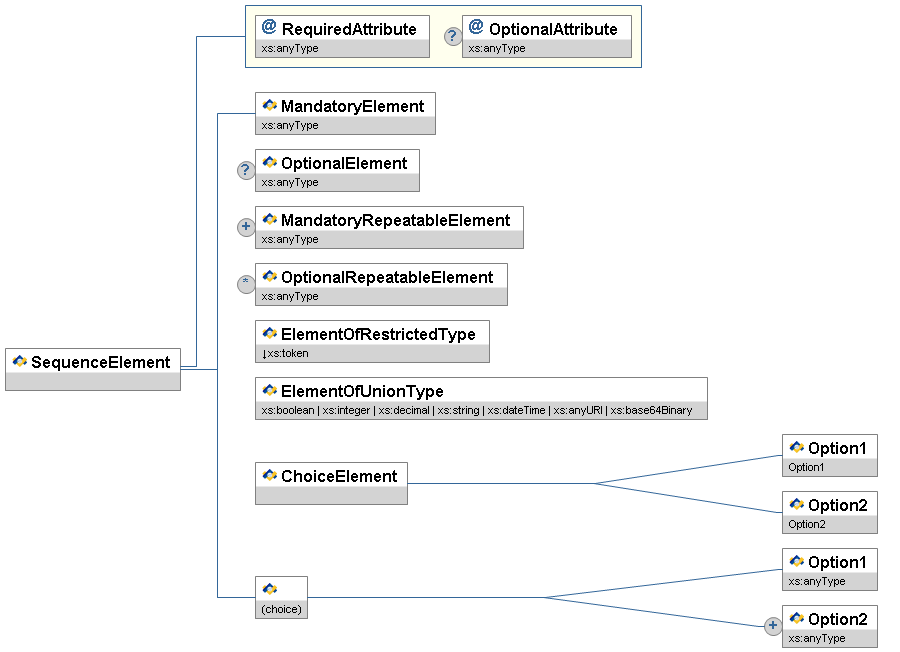

Schools Interoperability Framework™
SIF Data Model Implementation Specification (NA) 2.7 Migration
March, 2014

- This version:
-
http://specification.sifassociation.org/Implementation/US/2.7M/
- Previous version:
-
http://specification.sifassociation.org/Implementation/us/2.6/
- Latest version:
-
http://specification.sifassociation.org/Implementation/NA/
- Schemas
-
SIF_Message (single file, non-annotated)
(ZIP archive)
-
SIF_Message (single file, annotated)
(ZIP archive)
-
SIF_Message (includes, non-annotated)
(ZIP archive)
-
SIF_Message (includes, annotated)
(ZIP archive)
-
DataModel (single file, non-annotated)
(ZIP archive)
-
DataModel (single file, annotated)
(ZIP archive)
-
DataModel (includes, non-annotated)
(ZIP archive)
-
DataModel (includes, annotated)
(ZIP archive)
-
Note:
SIF_Message schemas define every data object element as optional per SIF's Publish/Subscribe and SIF Request/Response Models;
DataModel schemas maintain the cardinality of all data object elements.
Please refer to the errata for this document, which may include some normative corrections.
Copyright ©2014
Schools Interoperability Framework (SIF™) Association. All Rights Reserved.
1 Preamble
1.1 Note
This release of the SIF Data Model is effectively a major release in that it makes changes to the data model that reach the level of impact of a major release. Also, some features of the SIF 2.* Infrastructure have been deprecated. Please see Section 2.4 of this document for more detail.
1.2 Abstract
1.2.1 What is SIF?
The Schools Interoperability Framework (SIF) is not a product, but a technical blueprint for enabling diverse
applications to interact and share data related to entities in the pK-12 instructional and administrative environment. SIF is designed to:
- Facilitate data sharing and reporting between applications without incurring expensive customer development costs;
- Enhance product functionality efficiently; and
- Provide best-of-breed solutions to customers easily and seamlessly.
The SIF Implementation Specification defines:
- an XML-based messaging framework that allows diverse software applications to interoperate and share and report data related to entities
in the pK-12 instructional and administrative environment;
- an HTTP(S)-based transport for conveying these SIF messages;
- An alternative SOAP-based transport and corresponding set of WSDL files which allow web services to fully participate in these interactions;
- an abstract, platform-independent definition of a message queue for reliable delivery of asynchronous SIF messages and related synchronous
administrative functions—the Zone Integration Server (ZIS); and
- an abstract, platform-independent definition of the interface between a software application and the ZIS—the SIF Agent.
These are known collectively as the SIF Infrastructure. The SIF Implementation Specification also defines the SIF Data Model:
- an XML-based data model that models entities in the pK-12 environment as SIF Data Objects to be shared between applications.
A SIF Zone is a distributed system that consists of a ZIS and one or more software applications
with a SIF Agent (a SIF-enabled application) sharing/reporting one or more SIF data objects over a network.
A SIF Implementation consists of one or more SIF Zones deployed and configured to meet customer data sharing and reporting needs.
The SIF Implementation Specification defines architecture requirements and communication protocols for software components and the interfaces
between them; it makes no assumption of specific hardware or software products needed to develop SIF-enabled applications and Zone Integration Server implementations,
other than their ability to support technologies leveraged as the foundation for SIF, most prominently XML and HTTP(S).
1.2.2 Schools Interoperability Framework Association
The Schools Interoperability Framework Association (SIF Association) is an industry initiative to enable interoperability and data sharing between
software applications in the pK-12 instructional and administrative environment, and the forum for companies and educators to participate
in the development of SIF specifications in the SIF Association's working groups and task forces. The SIF Association is designed to:
- Join industry leaders in creating the next-generation framework for education technology; and
- Leverage co-marketing opportunities with partners and distributors.
1.3 Disclaimer
The information, software, products, and services included
in the SIF Implementation Specification may include inaccuracies or typographical errors. Changes are periodically added to the information herein. The SIF Association may make improvements and/or changes in this document at any time without notification. Information contained in this document should not be relied upon for personal, medical, legal, or financial decisions. Appropriate professionals should be consulted for advice tailored to specific situations.
THE SIF ASSOCIATION, ITS PARTICIPANT(S), AND THIRD PARTY CONTENT PROVIDERS MAKE NO REPRESENTATIONS ABOUT THE SUITABILITY, RELIABILITY, TIMELINESS, AND ACCURACY OF THE INFORMATION, SOFTWARE, PRODUCTS, SERVICES, AND RELATED GRAPHICS CONTAINED IN THIS DOCUMENT FOR ANY PURPOSE. ALL SUCH INFORMATION, SOFTWARE, PRODUCTS, SERVICES, AND RELATED GRAPHICS ARE PROVIDED "AS IS" WITHOUT WARRANTY OF ANY KIND. THE SIF ASSOCIATION AND/OR ITS PARTICIPANT(S) HEREBY DISCLAIM ALL WARRANTIES AND CONDITIONS WITH REGARD TO THIS INFORMATION, SOFTWARE, PRODUCTS, SERVICES, AND RELATED GRAPHICS, INCLUDING ALL IMPLIED WARRANTIES AND CONDITIONS OF: MERCHANTABILITY, FITNESS FOR A PARTICULAR PURPOSE, TITLE, AND NON-INFRINGEMENT.
IN NO EVENT SHALL THE SIF ASSOCIATION, ITS PARTICIPANT(S), OR THIRD PARTY CONTENT PROVIDERS BE LIABLE FOR ANY DIRECT, INDIRECT, PUNITIVE, INCIDENTAL, SPECIAL, CONSEQUENTIAL DAMAGES, OR ANY DAMAGES WHATSOEVER INCLUDING, WITHOUT LIMITATION, DAMAGES FOR LOSS OF USE, DATA, OR PROFITS, ARISING OUT OF OR IN ANY WAY CONNECTED WITH THE USE OR PERFORMANCE OF THIS DOCUMENT, WITH THE DELAY OR INABILITY TO USE THE DOCUMENT, THE PROVISION OF OR FAILURE TO PROVIDE SERVICES, OR FOR ANY INFORMATION, SOFTWARE, PRODUCTS, SERVICES AND RELATED GRAPHICS OBTAINED THROUGH THIS DOCUMENT OR OTHERWISE ARISING OUT OF THE USE OF THIS DOCUMENT, WHETHER BASED ON CONTRACT, TORT, STRICT LIABILITY, OR OTHERWISE, EVEN IF THE SIF ASSOCIATION, ITS PARTICIPANT(S), OR THIRD PARTY CONTENT PROVIDERS HAVE BEEN ADVISED OF THE POSSIBILITY OF DAMAGES. IF YOU ARE DISSATISFIED WITH ANY PORTION OF THIS DOCUMENT OR WITH ANY OF THESE TERMS OF USE, YOUR SOLE AND EXCLUSIVE REMEDY IS TO DISCONTINUE USING THIS DOCUMENT.
This specification is released with the following provisos to developers and educators.
1.4 Certification and Compliance Claims
Though a product may be demonstrated to comply with this specification, no product may be designated as
SIF Certified™ by an organization or individual until the product has been tested against and
passed established compliance criteria, published separately [SIFCertification].
Organizations and individuals that are currently paying annual membership dues to the SIF Association
and dedicating resources to the initiative may also use the designation
SIF Participant to describe their involvement with the SIF Association and SIF in marketing, public relations and other materials.
1.5 Permissions and Copyright
Copyright® SIF Association (2012). All Rights Reserved.
This document and translations of it may be copied and furnished to others, and derivative works that comment on or otherwise explain it or assist in its implementation may be prepared, copied, published and distributed, in whole or in part, without restriction of any kind, provided that the above copyright notice and this paragraph are included on all such copies and derivative works. However, this document itself may not be modified in any way, such as by removing the copyright notice or references to the SIF Association, or its committees, except as needed for the purpose of developing SIF standards using procedures approved by the SIF Association, or as required to translate it into languages other than English. The limited permissions granted above are perpetual and will not be revoked by the SIF Association or its successors or assigns.
Full Table of Contents
3.1.2.3.2 List
3.10.22 W4
2 Introduction
2.1 Specification Organization
With respect to the SIF Specification, educators and non-technical readers are typically interested in the pK-12 data objects
that can be shared and reported on by SIF-enabled applications in SIF implementations. This document, the SIF Data Model Implementation Specification, contains a Data Model
section in a format that should not be a barrier to readers with a some knowledge of [XML].
More technical readers, including software architects,
developers and integrators, will also be interested in the separate SIF Infrastructure Implementation Specification document.
-
The Preamble provides an abstract of SIF along with the SIF Association disclaimer and details regarding certification and compliance claims.
-
This Introduction outlines the organization of this specification document, provides conventions used in this document, and summarizes versioning of the specification.
Highlights of additions/changes since the previous version of the specification are also provided.
-
The Data Model section provides definitions of the XML structure for common elements in the data model and all objects
related to entities in the pK-12 environment. This section is organized by the working groups and task forces within the SIF Association that have defined
common elements or objects.
- Zone Services details the data formats and operation choreographies of the interfaces which Zone Services provide in support of their clients.
-
The document concludes with various appendices including lists of code set values defined within SIF and in external documents,
and ends with a list of references to other documents.
2.2 Document Conventions
2.2.1 Definitions
The first time a term or concept is defined, it may be emphasized.
2.2.2 Structure and Values
SIF message and object names, XML element tags, attribute names and values, and other codes or values are typically presented as in this sentence.
2.2.3 Examples
Longer examples of XML or HTTP messages are typically numbered and presented as given here.
2.2.4 References
References to other works occurring in this text are given in brackets, e.g. [REFERENCE]. The text in brackets corresponds to a key in the References appendix.
Often when the text in the brackets duplicates surrounding text, the reference alone is used (e.g. [XML] instead of XML [XML]).
2.2.5 Terminology
The key words MUST, MUST NOT, REQUIRED, SHALL,
SHALL NOT, SHOULD, SHOULD NOT, RECOMMENDED,
MAY, OPTIONAL, when EMPHASIZED, are to be interpreted as described in [RFC 2119].
2.2.6 XML Diagrams
Quick overviews of XML structures, including messages, objects, common elements and types, are provided in XML diagrams. The following diagram illustrates
the conventions typically encountered in SIF.

Figure 2.2.6-1: XML Diagram Conventions
XML elements are represented by rectangles with the name of the element in the upper portion and the type, if any, in the lower portion. Attributes
are represented in the same fashion, but have an @ icon rather than a SIF icon. Elements and attributes that are optional have a circled ?
(0 or 1 occurrence) to the left of the rectangle. Optional and mandatory repeatable elements are indicated by a circled * (0 or more occurrences)
and + (1 or more occurrences), respectively.
Element attributes are grouped together in a rectangular block and connected to the element with a line that turns at right angles.
Ordered sequences of XML elements are bracketed by lines that turn at right angles. When a choice of XML elements is indicated, the elements are bracketed by angled
lines. A choice of elements can occur within an element, or may be an unnamed choice of elements.
XML types are represented using the same conventions as for XML elements, though the type portion of the rectangle typically indicates a base type, if any.
The type name of any element, attribute or type may be prefixed with a ↓, indicating the type is restricted in some fashion by one or more
XML Schema facets (e.g. enumeration). When the type is a union of types, a list of types is presented, each type separated by |; if the list of union types
is long, the list may be marked with ellipses, e.g., | ...
In an actual XML diagram, element, type and attribute rectangles are usually linked to their corresponding definitions/descriptions in accompanying tables.
2.3 Version Numbers
The SIF Implementation Specification uses the following version numbering scheme:
major version.minor versionrrevision number
Major versions typically introduce additions/changes to the SIF infrastructure and/or data model changes that impact a significant
percentage of SIF-enabled applications (e.g. making previously optional elements mandatory, removal of deprecated objects, elements or values).
The first release of a major version has a minor version of 0 (2.0);
major version numbers start at 1 and are incremented as major versions are released (1.0, 2.0, 3.0, ...).
Minor releases typically introduce new data objects, or optional additions to data objects, to the marketplace, and may include minor
infrastructure additions/changes that do not impact existing SIF-enabled applications and that ZIS vendors have agreed to implement.
The first minor version released subsequent
to and within a major release has a minor version of 1 and is incremented as new minor versions are released
(2.1, 2.2, ...). If a significant number of minor release features is introduced in a specification,
the SIF Association may decide to increment the minor version number by more than 1 (e.g. 1.1 to 1.5),
though a number like 1.5 is not an indication of being halfway to a major release, as minor version numbers may be incremented
significantly past 10 (2.10, 2.11, ...) as data objects and other minor version features are released.
Corrections resulting from identified errata, as well as textual changes, may be incorporated into a revision release.
These typically include minor corrections to messages or data objects, corrections of typographical errors, or corrected/expanded documentation.
If major errors in any release are identified, a revision release may incorporate changes more typical of a major or minor release.
First major and minor releases have a revision number of 0, which is omitted from the version number (2.0, not 2.0r0);
subsequent revision numbers start at 1 and are incremented as new revisions are released (2.0r1, 2.0r2,
...).
2.4 Additions/Changes Since Version 2.6
This release of the SIF Data Model Implementation Specification is a so-called migration release because it incorporates important version 3 structural changes that move the data model toward compatibility with both the 2.* and SIF 3 infrastructures. The data model Zone Services have been deprecated in lieu of similar functionality in the SIF 3 infrastructure. Also, RefIds have been added to all SIF objects that did not have them before as detailed below.
Although this specification is not a SIF Infrastructure release it does suggest that certain infrastructure features not be used, namely: Zone Services, the SOAP Transport, and Bundled Events.
RefIds added to these SIF objects:
- EmploymentRecord
- SectionMarkInfo
- StaffEvaluation
- StudentAttendanceSummary
- StudentSectionMarks
- CalendarDate
- ContentCatalog
- EmployeeCredential
- EmployeePicture
- EmployeeRecertification
- EnergyUsage
- FinancialAnnual
- FinancialBudget
- FoodServiceStaffEnrollmentCount
- FoodServiceStudentEnrollmentCount
- GradingAssignmentScore
- LibraryPatronStatus
- StaffMeal
- StudentContactRelationship
- StudentDailyAttendance
- StudentLocator
- StudentMeal
- StudentPicture
- StudentSnapshot
- StudentSpecialEducationSummary
- W4
Staff Evaluation - Events Reported changed to True.
BusPositionInfo/BusPositionInfoRefId changed to RefId.
LearningResourcePackage - example corrected.
Added four new Identity Management objects and the Identity Management Project Team section in the Spec.
3 Data Model
3.1 Introduction
This section presents the XML structure for SIF Data Model common elements and objects in a tabular format for readers
less versed in parsing formal XML schema definitions, along with conventions that typically apply in the data model for
easy reference.
3.1.1 Format
The Char(acteristics) column for all of the tables in this section use the following codes:
| Code | Characteristic |
| M | Mandatory element or attribute |
| O | Optional element or attribute |
| C | Conditional element or attribute |
| MR | Mandatory and repeatable element |
| OR | Optional and repeatable element |
| CR | Conditional and repeatable element |
Mandatory elements MUST be present in Add events, and
in non-empty and non-error responses to requests for entire SIF objects (e.g., no SIF_Query/SIF_QueryObject/SIF_Element elements supplied in the request).
Mandatory attributes MUST always be present if their corresponding element is present.
SIF Agents and Zone Integration Servers MUST supply data according to the types specified in the Type columns and their corresponding equivalents
in the most recent schema files associated with this specification. If there is a discrepancy between object and element definitions in this specification and the
corresponding schema files,
the definition in the schema files takes precedence; every effort will be made to note discrepancies in the errata for this document as they
are identified.
3.1.2 Conventions
3.1.2.1 Object Attributes/Primary Keys
XML attributes in SIF are primarily used to provide additional information regarding the associated element content. In addition, attributes at the root level of an object can have special significance. These root-level attributes often serve as the primary key or identifier for the object. In many cases this is no more than a RefId GUID of RefIdType, though these object key components may consist solely of foreign key references to other SIF objects and include school years, dates, etc. These object key components (root-level attributes) are immutable over the lifetime of an object and serve the purpose of uniquely identifying an object, especially in Change and Delete events. Some Working Groups also include non-object key components in object attributes: e.g., mandatory foreign key references to other objects or attributes that provide additional processing information regarding the object. As SIF currently does not mandate that all object attributes be included in all messages, when a SIF Association Working Group or Task Force places a non-primary key attribute
in the object's attribute definitions (typically out of historical query conventions), they are indicating that this value must still be accessible
to systems in Change and, more notably, Delete events. Also, all object key component attributes must be supplied to identify the object
in Change and Delete events.
3.1.2.2 Object References
As stated elsewhere, SIF primarily uses GUIDs as object identifiers, primary keys, or RefIds. References to primary keys (foreign key references)
follow certain conventions in SIF in most objects:
-
An element or attribute of type
IdRefType can be defined that consists of the referenced object name
concatenated with RefId, e.g.,
StudentPersonalRefId
(a reference to the object identifier/primary key/RefId
of a
StudentPersonal
object);
-
An element requiring a more descriptive name for the reference or one that refers to more than one object type is defined as
IdRefType, has an element name of a group's choosing (or generically SIF_RefId) and enumerates all possible object types that can be referenced
in the SIF_RefObject attribute; or
-
A pair of attributes can be defined, one of type
IdRefType containing the referenced object's RefId, the other enumerating
all possible object types that can be referenced; generically these are named SIF_RefId and SIF_RefObject, respectively;
naming conventions that programmatically allow identification of the pair beyond the generic names will be documented when the need arises.
3.1.2.3 Lists/Repeatable Elements
For those accustomed to normalized relational databases, the SIF Data Model will appear to be not especially normalized, especially with regard to
repeating groups of data not separated into their own "tables," or in SIF's case, "objects" with primary/foreign keys to maintain the
relationship. Bear in mind that SIF is not a format for storing
data; it is a format for transmitting data asynchronously between disparate and distributed systems needing to share data for
interoperability; the format this data takes in different systems can vary greatly, and the data related to any given "entity" may
come from a variety of sources and systems.
The goals of normalization—eliminating redundancy, organizing data efficiently, reducing inconsistencies, etc.—take on a different meaning in
a message queuing system. Of primary importance is transmitting the data needed for interoperability in a minimum number of messages. The need to "join" together
a great number of separate objects is kept to a minimum in SIF, as individual systems do not have access to all the data required and due to the asynchronous
nature of SIF, any one of these systems may take a fair amount of time before returning data necessary for joins (SIF_ExtendedQuery has been
developed to communicate a join to a single system that may have direct access to the all the data necessary to efficiently accomplish this task). It's one
thing to make a separate request for a student's picture or enrollment information, another entirely to request every available phone number, address and e-mail
address separately from the SIF Zone. As such, it is often the case in SIF that repeating data is stored directly in an object, rather than being separated
out into a separate object.
Repeating data is very analogous to objects, though, within any given object. In SIF's Publish/Subscribe model, repeating elements in objects
can be added to, changed in or deleted from an object, much like objects can be added to, changed in or deleted from a Zone. Within an existing object, all of these
actions take place within a Change event, and repeating elements—if any exist initially—are first made available within an object in an Add
event or can be obtained directly via requests. Repeatable elements are contained within a parent List element in most SIF objects
whether or not they support events, e.g.:
<EmailList>
<Email Type="Primary">contact@sifinfo.org</Email>
<Email Type="Alternate1">info@sifinfo.org</Email>
</EmailList>
Two types of list are currently defined in SIF, ActionList and List; both consist of a list container element and a single repeatable
child element. Each type of list serves different needs and has associated conventions for communication and processing in the SIF Publish/Subscribe Model.
List or ActionList is specified in the Type column in tables in this section for each list; when an ActionList the key, possibly
compound, is also indicated in the Type column. ActionList key values must be unique within an instance of an ActionList.
3.1.2.3.1 ActionList
An ActionList has a key that uniquely identifies each child element within the list. This type of list is primarily used when it is
desirable or necessary for systems to support or refer to a subset of the list, either due to functionally only being able to support a subset
or because specifying a subset in Change events is more efficient than transmitting a whole list as in List.
While one system may support the
Primary
and
Alternate1
e-mail address types above, another may additionally support
Alternate2
addresses.
The second system
is able to communicate the addition, change or deletion of an
Alternate2
address without
the first system inadvertently interpreting
that to mean a student or staff member's
Primary
and
Alternate1
addresses have been deleted.
Systems communicate the whole list as a cohesive unit consisting of the parent list container element and all child elements in an Add
event; if the container is present with no child elements, the list is empty; the same is implied when an optional list is not present in an
Add event. In a Change event, systems SHOULD only transmit those elements that have been added, changed or deleted. Deletion
is not implied by the omission of a child element, but rather explicitly communicated with a SIF_Action attribute of Delete
added to the deleted element, along with the element's key attribute(s)/element(s) at a minimum. An empty list in a Change event implies
no changes have occurred in the list, as does the omission of the list. Systems storing ActionList data should set/replace/delete any
existing values identified by primary keys in the Change event they support.
<EmailList>
<Email Type="Primary">editor@sifinfo.org</Email>
<Email Type="Alternate1" SIF_Action="Delete" />
</EmailList>
A system that supports an
Alternate2
e-mail makes no changes to its value for that address type.
3.1.2.3.2 List
While a unique, primary key may still be identifiable in its child elements, a List is used primarily when:
- the list is a cohesive whole conceptually, where supporting or referring to a subset of the list is of little value;
- when the list consists only of keys, and no associated data;
- the list is informational/temporary state information and not typically persisted; or
- when no key exists to uniquely identify items in the list.
Lists are always transmitted as a cohesive unit consisting of the parent list container element and all child elements. If no child
elements exist in the list, the list consists of the container element alone. Omission of an optional List in an Add event
also implies no list items. In a Change event, omission of the List indicates no changes have been made; otherwise the
parent container element and all child elements, if any, are included. Systems storing
List data should replace all corresponding data in their systems when persisting the list; likewise when a change is made to one or more
list items or when all items in the list are deleted, systems should send the whole list in a Change event.
A system that supports CountriesOfCitizenship updates its local data to reflect U.S.
and German citizenship.
3.1.2.4 Supported Optional Elements Without Values
Some agents follow the convention of supplying an optional element as empty (e.g. <BirthDate></BirthDate> or <BirthDate/> to indicate
that the application supports the element, but that it currently has no value available within a given object. To allow for this convention within SIF—as in this example
an empty string does not satisfy the xs:date type definition of BirthDate—all optional elements in SIF
are defined as nillable [SCHEMA]. To satisfy type constraints on an element while still supplying an empty or "nil"
value, agents MUST tag the element with a true value for the nil attribute from namespace
http://www.w3.org/2001/XMLSchema-instance [SCHEMA] (e.g. <BirthDate xsi:nil="true"/> where the prefix xsi has been mapped to
the namespace http://www.w3.org/2001/XMLSchema-instance), unless an empty value is valid with regard to the element's type definition,
in which case supplying the nil attribute value of true is optional.
See SIF and XML Namespaces for more details on namespaces, and SIF and XML Schema
for more details on SIF's use of XML Schema.
3.1.2.5 Externally-Defined XML
Note that XML not defined within SIF does not necessarily support ad hoc omission of XML elements at will to conform with the conventions of the SIF Publish/Subscribe Model
(where unchanged elements are typically omitted in Change events, and where non-key elements are often omitted in Delete events) or of the SIF Request/Response Model
(where a subset of elements can be retrieved from objects with requests). If externally-defined XML occurs within a SIF data object, SIF conventions do not
extend to that XML unless that XML is defined to accommodate SIF conventions; the XML, when transmitted, must only conform to any external definitions dictating
its structure, if any. Applications should be prepared for the possibility of receiving whole externally-defined XML structures in Change events (regardless of how little or much of the external
XML has changed) and possibly also Delete events, likewise in responses even when a subset of the XML structure's child elements may have explicitly been requested.
3.3 Assessment Working Group
The Assessment Working Group concentrates on ensuring that assessment results can be made available in a timely manner and
that the results are transmitted in a meaningful manner.
3.3.1 Assessment
An assessment measures a student's progress and learning on specific academic standards.
SIF_Events are not reported for this object.
Figure 3.3.1-1: AssessmentTable 3.3.1-1: Assessment
<Assessment RefId="CC2834DE9138FAB032EF399BA72A8234">
<Name>TAKS Test</Name>
<AssessmentId>TX48A</AssessmentId>
<AssessmentPackageRefId>B8846EB83F0D4609A3299AC59410814E</AssessmentPackageRefId>
<AssessmentDescriptors>
<AssessmentDescriptor>Statewide</AssessmentDescriptor>
</AssessmentDescriptors>
<SIF_Metadata>
<EducationFilter>
<LearningStandardItems>
<LearningStandardItemRefId>FA3023B26277CAD47105327F3A782BED</LearningStandardItemRefId>
<LearningStandardItemRefId>DE937CB2627AAE872850E1F3A782BEDF</LearningStandardItemRefId>
<LearningStandardItemRefId>BCFA143627AAE87E830E1F3AD92B4DA7</LearningStandardItemRefId>
<LearningStandardItemRefId>DE840286ABB72198756E1F349CAE8273</LearningStandardItemRefId>
<LearningStandardItemRefId>913DE839BA8329FCA938EF2709BC31A0</LearningStandardItemRefId>
<LearningStandardItemRefId>A8930CD176EBB992714ACEB78492AE9C</LearningStandardItemRefId>
<LearningStandardItemRefId>0264FFBA72C78ED903BE27CAA18905FB</LearningStandardItemRefId>
</LearningStandardItems>
</EducationFilter>
</SIF_Metadata>
</Assessment>
3.3.2 AssessmentAdministration
This object represents an assessment event. It includes information related to the time of administration, place of administration, and unusual events related to the administration.
SIF_Events are reported for this object.
Figure 3.3.2-1: AssessmentAdministration| | Element/@Attribute | Char | Description | Type |
|---|
| | AssessmentAdministration | | This object represents an assessment event. It includes information related to the time of administration, place of administration, and unusual events related to the administration. | |
@
 | RefId | M | The GUID that uniquely identifies an instance of the object. | RefIdType |
| @ | AssessmentFormRefId | M | The RefId of the assessment form used in the assessment administration. | IdRefType |
| | AdministrationName | O | | xs:normalizedString |
| | SpecialConditions | O | Special conditions or unusual events related to the administration event. | ActionList (SpecialCondition/@Code) |
| | SpecialConditions/SpecialCondition
| MR | A text description of the special condition. Examples
Fire drill during test.
Air conditioning broke during the request.
Assessment was given over three days instead of in one sitting.
| xs:string |
| @ | Code | M | This is the primary key for the list of special conditions. | xs:token |
| @ | SIF_Action | O |
In a Change event, this flag can be used to indicate an element has been deleted from the parent list container. At a minimum the key for the list must also be present.
| values:
- Delete
|
| | AdministrationDateTime | M | Date and time the test is scheduled to be given. | xs:dateTime |
| | StartDateTime | O | Date and time testing begins. | xs:dateTime |
| | FinishDateTime | O | Date and time testing ends. | xs:dateTime |
| | DueDateTime | O | Date and time test is due. | xs:dateTime |
| | Address | O | Address of the location where the administration takes place. | Address |
| | StaffPersonalRefId | O | Optional reference to a staff person associated with the administration. | IdRefType |
| | LEAInfoRefId | O | Optional reference to a school district associated with the administration. | IdRefType |
| | SchoolInfoRefId | O | Optional reference to a school associated with the administration. | IdRefType |
| | SIF_Metadata | O | | SIF_Metadata |
| | SIF_ExtendedElements | O | | SIF_ExtendedElements |
Table 3.3.2-1: AssessmentAdministration
<AssessmentAdministration RefId="E2E8045FD8884745AC588F1DDDBEE864" AssessmentFormRefId="78DA3F367AAE4E34995CE15530F531CC">
<SpecialConditions>
<SpecialCondition Code="25B">Fire drill during test.</SpecialCondition>
</SpecialConditions>
<AdministrationDateTime>2006-03-06T14:30:00-05:00</AdministrationDateTime>
<FinishDateTime>2006-03-06T15:30:00-05:00</FinishDateTime>
</AssessmentAdministration>
3.3.3 AssessmentForm
Represents the unique set of questions or stimuli given to a set of test takers. A physical correlate of the assessment form is the test booklet given to students during an assessment. However, this object does not contain the questions, it only contains elements that describe the form for use in scoring the questions.
SIF_Events are not reported for this object.
Figure 3.3.3-1: AssessmentForm| | Element/@Attribute | Char | Description | Type |
|---|
| | AssessmentForm | | Represents the unique set of questions or stimuli given to a set of test takers. A physical correlate of the assessment form is the test booklet given to students during an assessment. However, this object does not contain the questions, it only contains elements that describe the form for use in scoring the questions. | |
@
| RefId | M | The GUID that uniquely identifies an instance of the object. | RefIdType |
| @ | AssessmentRefId | M | The RefId of the assessment related to this form. | IdRefType |
| | AssessmentType | O | Indicates whether this assessment (form) is a standard administration or alternate. | values:
- standard
- alternate
|
| | FormName | M | Text description for this particular arrangement of questions, etc. | xs:normalizedString |
| | FormNumbers | O | Reference numbers for the form. | List |
| | FormNumbers/FormNumber | MR | Reference number for the form. | xs:token |
| | Level | O | Indicates the level of the form. Examples
Grade 3
Leveling System
| xs:token |
| | Period | O | The time period in which the form is intended to be administered. | xs:token |
| | GradeLevels | O | Grade levels this assessment is designed to evaluate. | GradeLevels |
| | AssessmentSubTestRefIds | O | Associated subtests (score types). Each form can provide scores in one or more subtest areas. | List |
| | AssessmentSubTestRefIds/AssessmentSubTestRefId
| OR | A subtest identified by RefId. | IdRefType |
| | SIF_Metadata | O | | SIF_Metadata |
| | SIF_ExtendedElements | O | | SIF_ExtendedElements |
Table 3.3.3-1: AssessmentForm
<AssessmentForm RefId="13F3C7AFF8464EE1862B0622A010883E" AssessmentRefId="77C5D8A7345B4BE883053228C9708512">
<AssessmentType>standard</AssessmentType>
<FormName>Form A</FormName>
<FormNumbers>
<FormNumber>34</FormNumber>
</FormNumbers>
<Level>Grade 3</Level>
<Period>Spring</Period>
<AssessmentSubTestRefIds>
<AssessmentSubTestRefId>C356A7559EB144DE8B09097078A94F86</AssessmentSubTestRefId>
</AssessmentSubTestRefIds>
</AssessmentForm>
3.3.4 AssessmentItem
This object is designed to allow software systems to provide item detail information such as the stem of the item, the distractors, the stimuli, etc.
This initial version of the object does not deal with presentation aspects of the item.
Instead it focuses on the item content and characteristics needed to enable interoperability and the usage of item-level information in the improvement of learning and instruction.
SIF_Events are not reported for this object.
Figure 3.3.4-1: AssessmentItem| | Element/@Attribute | Char | Description | Type |
|---|
| | AssessmentItem | |
This object is designed to allow software systems to provide item detail information such as the stem of the item, the distractors, the stimuli, etc.
This initial version of the object does not deal with presentation aspects of the item.
Instead it focuses on the item content and characteristics needed to enable interoperability and the usage of item-level information in the improvement of learning and instruction.
| |
@
| RefId | M | | RefIdType |
| @ | AssessmentFormRefId | M | This RefId points to the assessment form of which the item is a part. | IdRefType |
| @ | ResponseType | M | A value that indicates the response type for the item. | values:
- multiple-choice
- multiple-multiple choice
- true-false
- fill-in-the-blank
- short-answer
- essay
|
| | ItemLabel | M | An item number or other identifier for the item. It may be used to indicate the order or grouping of items. | xs:token |
| | ItemName | O | Name or short description of the item. | xs:string |
| | LearningStandardItems | O |
This object contains information related to curriculum standards statements "standards" or "benchmarks" or the like within the document.
This object primarily focuses upon state department curriculum standards, published curriculum standards and local education agency learning standards.
Each LearningStandardItemRefId reflects an individual standard statement and may occur at several levels within a hierarchially structured document.
| List |
| | LearningStandardItems/LearningStandardItemRefId
| MR | | IdRefType |
| | Stimulus | C | A piece of content to be used by the test taker in responding to the stem. Examples include a reading passage, a video, a diagram, or a picture.
Note: The Stimulus element only is included when a Stem element exists.
| AbstractContentElementType |
| | Stem | O | The question, task, or statement that prompts a response from the test taker. | AbstractContentElementType |
| | ResponseChoices | C |
This complex element will not be included in the object if @ResponseType is:
fill-in-the-blankshort-answeressay
Other cases will be added in the future. | |
| | ResponseChoices/Choice | MR | | |
| | ResponseChoices/Choice/ChoiceLabel
| O | A choice number or other identifier for the choice. It may be used to indicate the order or grouping of the choices. | xs:normalizedString |
| | ResponseChoices/Choice/ChoiceContent
| M |
The text of the choice, such as true, 27, or Important economic and social factors.
| AbstractContentElementType |
| | ResponseChoices/Choice/CreditValue
| O | A numeric value that indicates the amount of credit awarded for choosing the choice. | xs:float |
| | ItemScoreMaximum | O | The maximum item score possible for this item. | xs:token |
| | ItemScoreMinimum | O | The minimum item score possible for this item. | xs:token |
| | PerformanceLevels | O | Performance Levels are an ordered set of categories that indicate the achievement level of a person on an assessment. | List |
| | PerformanceLevels/PerformanceLevel
| OR | Defines cut scores for placing students in an appropriate performance level. | |
| @ | LevelName | M | The name of the performance level. | xs:normalizedString |
| | PerformanceLevels/PerformanceLevel/
CutScores | O | Score bounds for the performance level. | |
| @ | ScoreMetric | M | The metric or scale used to report the scores. | NCES0056AssessmentReportingMethodType |
| | PerformanceLevels/PerformanceLevel/
CutScores/LowerCut | O | Lower bound for the performance level. | xs:token |
| | PerformanceLevels/PerformanceLevel/
CutScores/UpperCut | O | Upper bound for the performance level. | xs:token |
| | SIF_Metadata | O | | SIF_Metadata |
| | SIF_ExtendedElements | O | | SIF_ExtendedElements |
Table 3.3.4-1: AssessmentItem
<AssessmentItem RefId="C294F3E190F019AD8E1DFC8367537EC8" AssessmentFormRefId="9372CB8EA910FF87D5672CAEF01387AA" ResponseType="multiple-choice">
<ItemLabel>5</ItemLabel>
<ItemName>Geometry diagnostic</ItemName>
<LearningStandardItems>
<LearningStandardItemRefId>DE072A87EFAD4B778AF9FAF83C94839E</LearningStandardItemRefId>
</LearningStandardItems>
<Stimulus>
<Reference MIMEType="image/jpeg" Description="triangle_1">
<URL>http://www.trianglezz.com/triangle.jpg</URL>
</Reference>
</Stimulus>
<Stem>
<TextData Description="Pythagorean Theorem">
Express the length of side C in terms of A and B.
</TextData>
</Stem>
<ResponseChoices>
<Choice>
<ChoiceLabel>A</ChoiceLabel>
<ChoiceContent>
<TextData>A + B</TextData>
</ChoiceContent>
<CreditValue>0.0</CreditValue>
</Choice>
<Choice>
<ChoiceLabel>B</ChoiceLabel>
<ChoiceContent>
<TextData>3PI*R</TextData>
</ChoiceContent>
<CreditValue>-0.1</CreditValue>
</Choice>
<Choice>
<ChoiceLabel>C</ChoiceLabel>
<ChoiceContent>
<TextData>SQRT(A2 + B2)</TextData>
</ChoiceContent>
<CreditValue>1.0</CreditValue>
</Choice>
<Choice>
<ChoiceLabel>D</ChoiceLabel>
<ChoiceContent>
<TextData>A2 + B2</TextData>
</ChoiceContent>
<CreditValue>0.5</CreditValue>
</Choice>
</ResponseChoices>
</AssessmentItem>
<AssessmentItem RefId="C294F3E190F019AD8E1DFC8367537EC8" AssessmentFormRefId="9372CB8EA910FF87D5672CAEF01387AA" ResponseType="multiple-choice">
<ItemLabel>5</ItemLabel>
<ItemName>Geometry diagnostic</ItemName>
<LearningStandardItems>
<LearningStandardItemRefId>DE072A87EFAD4B778AF9FAF83C94839E</LearningStandardItemRefId>
</LearningStandardItems>
<Stimulus>
<Reference MIMEType="image/jpeg" Description="triangle_1">
<URL>http://www.trianglezz.com/triangle.jpg</URL>
</Reference>
</Stimulus>
<Stem>
<TextData Description="Pythagorean Theorem">
Express the length of side C in terms of A and B.
</TextData>
</Stem>
<ResponseChoices>
<Choice>
<ChoiceLabel>A</ChoiceLabel>
<ChoiceContent>
<TextData>A + B</TextData>
</ChoiceContent>
<CreditValue>0.0</CreditValue>
</Choice>
<Choice>
<ChoiceLabel>B</ChoiceLabel>
<ChoiceContent>
<TextData>3PI*R</TextData>
</ChoiceContent>
<CreditValue>-0.1</CreditValue>
</Choice>
<Choice>
<ChoiceLabel>C</ChoiceLabel>
<ChoiceContent>
<TextData>SQRT(A2 + B2)</TextData>
</ChoiceContent>
<CreditValue>1.0</CreditValue>
</Choice>
<Choice>
<ChoiceLabel>D</ChoiceLabel>
<ChoiceContent>
<TextData>A2 + B2</TextData>
</ChoiceContent>
<CreditValue>0.5</CreditValue>
</Choice>
</ResponseChoices>
<ItemScoreMaximum>1.0</ItemScoreMaximum>
<ItemScoreMinimum>-.1</ItemScoreMinimum>
<PerformanceLevels>
<PerformanceLevel LevelName="Pass">
<CutScores ScoreMetric="0499">
<LowerCut>0</LowerCut>
<UpperCut>0.5</UpperCut>
</CutScores>
</PerformanceLevel>
</PerformanceLevels>
</AssessmentItem>
3.3.5 AssessmentPackage
SIF_Events are not reported for this object.
Figure 3.3.5-1: AssessmentPackage| | Element/@Attribute | Char | Description | Type |
|---|
| | AssessmentPackage | |
A wrapper for any external standard that can define or transmit the content of an assessment.
| |
@
| RefId | M |
The GUID that uniquely identifies an object instance in a zone.
| RefIdType |
| | XMLData | C | Contains an arbitary XML element, encoded in UTF-8. | <xs:any processContents="lax" /> |
| @ | Description | O |
Contains an optional description of the content or a processing hint with regard to its structure (e.g. named standard, file layout or XSD).
| xs:token |
| | SIF_Metadata | O | | SIF_Metadata |
| | SIF_ExtendedElements | O | | SIF_ExtendedElements |
Table 3.3.5-1: AssessmentPackage3.3.6 AssessmentRegistration
This object represents the assignment of a specific assessment to be taken by a student.
SIF_Events are reported for this object.
Figure 3.3.6-1: AssessmentRegistration| | Element/@Attribute | Char | Description | Type |
|---|
| | AssessmentRegistration | | This object represents the assignment of a specific assessment to be taken by a student. | |
@
| RefId | M | The GUID that uniquely identifies an instance of the object. | RefIdType |
| @ | StudentPersonalRefId | M | The student associated with the registration. | IdRefType |
| @ | AssessmentAdministrationRefId | M | The assessment administration associated with the registration. | IdRefType |
| | CreationDateTime | M | Date/time assignment is made. | xs:dateTime |
| | StudentSpecialConditions | O | Records student-specific special conditions during the test. | List |
| | StudentSpecialConditions/
StudentSpecialCondition | MR |
A description of the special condition. Student special conditions are different
from special conditions of the test.
| xs:normalizedString |
| @ | Code | M | A code indicating the type of special condition. | xs:token |
| | StudentGradeLevel | O | Grade level of the student at the time of testing. | GradeLevel |
| | AssessmentGradeLevel | O | The grade or level at which the student is to be tested. This element should be omitted unless the student is being tested out-of-level. | GradeLevel |
| | AssessmentStudentSnapshot | O | The status of the student at the time of testing. The source of this information is meant to be the assessment system and not the student information system. | |
| | AssessmentStudentSnapshot/
RaceList | O | Person's race | RaceList |
| | AssessmentStudentSnapshot/
HispanicLatino | O | | HispanicLatino |
| | AssessmentStudentSnapshot/
Gender | O | Person's gender. | Gender |
| | AssessmentStudentSnapshot/
BirthDate | O | The person's date of birth. | BirthDate |
| | AssessmentStudentSnapshot/
Title1 | O | | Title1 |
| | AssessmentStudentSnapshot/
ELL | O | | ELL |
| | LEAInfoRefId | O | Optional reference to a district associated with the registration. | IdRefType |
| | SchoolInfoRefId | O | Optional reference to a school associated with the registration. | IdRefType |
| | StaffPersonalRefId | O | Optional reference to a staff person associated with the registration. | IdRefType |
| | SectionInfoRefId | O | Optional reference to a section (or class) associated with the registration. | IdRefType |
| | SIF_Metadata | O | | SIF_Metadata |
| | SIF_ExtendedElements | O | | SIF_ExtendedElements |
Table 3.3.6-1: AssessmentRegistration
<AssessmentRegistration RefId="84243B2716EA4A68889B57A07E3707C9" StudentPersonalRefId="0D015F74DAB645FD92EFA8F43F2D79C3" AssessmentAdministrationRefId="6B08DF6E158941D9B8206D16E1FA6219">
<CreationDateTime>2006-03-05T09:30:00-05:00</CreationDateTime>
<StudentSpecialConditions>
<StudentSpecialCondition Code="45C">Student became ill during test.</StudentSpecialCondition>
</StudentSpecialConditions>
<StudentGradeLevel>
<Code>04</Code>
</StudentGradeLevel>
<AssessmentGradeLevel>
<Code>03</Code>
</AssessmentGradeLevel>
<AssessmentStudentSnapshot>
<RaceList>
<Race>
<Code>1002</Code>
</Race>
</RaceList>
<Gender>F</Gender>
<BirthDate>1996-09-12</BirthDate>
<Title1>Yes</Title1>
<ELL>No</ELL>
</AssessmentStudentSnapshot>
<LEAInfoRefId>325335F330A24BCD85E263E5C1EAAF89</LEAInfoRefId>
<SchoolInfoRefId>0578B825250649DE930BF8916175BBAB</SchoolInfoRefId>
<StaffPersonalRefId>3CD4A20CE2D64C27AE977F02D2CE24B3</StaffPersonalRefId>
<SectionInfoRefId>CE38829615A74E0E9D37CDBFB9F93295</SectionInfoRefId>
</AssessmentRegistration>
3.3.7 AssessmentSubTest
A psychological construct measured by the assessment. Operationally, a subtest is a class of scores on an
assessment. Some assessments may have only one subtest or type of score but most assessments measure more than
one psychological construct. The subtest can be based upon items in a section or items that are empirically related.
Subtests can also be composites of other subtests that are combined using a particular algorithm. Examples of
subtests of an assessment are math total, reading composite, total test, and English composition.
SIF_Events are not reported for this object.
Figure 3.3.7-1: AssessmentSubTest| | Element/@Attribute | Char | Description | Type |
|---|
| | AssessmentSubTest | |
A psychological construct measured by the assessment. Operationally, a subtest is a class of scores on an
assessment. Some assessments may have only one subtest or type of score but most assessments measure more than
one psychological construct. The subtest can be based upon items in a section or items that are empirically related.
Subtests can also be composites of other subtests that are combined using a particular algorithm. Examples of
subtests of an assessment are math total, reading composite, total test, and English composition.
| |
@
| RefId | M | The GUID that uniquely identifies an instance of the object. | RefIdType |
| | Name | M | Text name of the subtest. | xs:normalizedString |
| | ScoreRange | O | The possible range of scores. | |
| @ | ScoreMetric | M | The metric or scale used to report the scores. | NCES0056AssessmentReportingMethodType |
| | ScoreRange/Minimum | O | Lowest possible score value. | xs:token |
| | ScoreRange/Maximum | O | Highest possible score value. | xs:token |
| | PerformanceLevels | O | Container for performance level elements. | List |
| | PerformanceLevels/PerformanceLevel
| OR | Defines cut scores for placing students in appropriate performance levels. | |
| @ | LevelName | M | The name of the performance level. | xs:token |
| | PerformanceLevels/PerformanceLevel/
CutScores | O | Score bounds for the performance level. | |
| @ | ScoreMetric | M | The metric or scale used to report the scores. | NCES0056AssessmentReportingMethodType |
| | PerformanceLevels/PerformanceLevel/
CutScores/LowerCut | O | Lower bound for the performance level. | xs:token |
| | PerformanceLevels/PerformanceLevel/
CutScores/UpperCut | O | Upper bound for the performance level. | xs:token |
| | SubjectArea | O | Content area covered by the score. | xs:token |
| | GradeLevels | O | Grade levels for which the score is valid. | GradeLevels |
| | AssessmentSubTestRefIds | O | References (possibly recursive) to other SIF AssessmentSubTests. This enables subtests or scores to be composites of other scores. If any references are given here, the score is a composite score. The list must be unique. | List |
| | AssessmentSubTestRefIds/AssessmentSubTestRefId
| MR | A reference to an AssessmentSubTest by RefId. | IdRefType |
| | SubTestTier | O | An integer that defines the level or tier of the score in a multi-level arrangement of composite scores. Zero indicates the highest or root level. | xs:unsignedInt |
| | LearningStandardItemRefIds | O | References to LearningStandardItems. The list must be unique. | List |
| | LearningStandardItemRefIds/
LearningStandardItemRefId
| MR | A reference to a LearningStandardItem by RefId. | IdRefType |
| | Abbreviation | O | This is the short version of the name of the assessment that is often used for quick reference and used in reports. | xs:token |
| | Description | O | The description element provides an opportunity to pass additional information about the assessment and also be used for describing elements in a test hierarchy. | xs:string |
| | NumberOfItems | O | This element records the number of items included on the assessment. This number may be different than the possible score. | xs:unsignedInt |
| | ContainerOnly | O | Indicator describing the purpose of an AssessmentSubTest as being that of a container for the child AssessmentSubTests. There will be no scores within this subtest. | xs:boolean |
| | SIF_Metadata | O | | SIF_Metadata |
| | SIF_ExtendedElements | O | | SIF_ExtendedElements |
Table 3.3.7-1: AssessmentSubTest
<AssessmentSubTest RefId="90E298F70E094EE2B8B52DFD88006AF2">
<Name>Reading Comprehension Subtest</Name>
<ScoreRange ScoreMetric="0499">
<Minimum>0</Minimum>
<Maximum>110</Maximum>
</ScoreRange>
<PerformanceLevels>
<PerformanceLevel LevelName="Basic">
<CutScores ScoreMetric="0499">
<LowerCut>25</LowerCut>
<UpperCut>50</UpperCut>
</CutScores>
</PerformanceLevel>
</PerformanceLevels>
<SubjectArea>Reading Comprehension</SubjectArea>
<GradeLevels>
<GradeLevel>
<Code>03</Code>
</GradeLevel>
</GradeLevels>
<AssessmentSubTestRefIds>
<AssessmentSubTestRefId>4710A15C428C48EBBC17CF320B6DCF25</AssessmentSubTestRefId>
</AssessmentSubTestRefIds>
<SubTestTier>0</SubTestTier>
<LearningStandardItemRefIds>
<LearningStandardItemRefId>3E4BEBCA14E54A118051DFA239A65990</LearningStandardItemRefId>
</LearningStandardItemRefIds>
</AssessmentSubTest>
3.3.8 ItemCharacteristics
This object provides specific information about each assessment item. This information includes an analysis, psychometric measures, reliability and validity information. This item-level information assists in interpreting assessment scores as well as aide in improving teaching and learning.
SIF_Events are not reported for this object.
Figure 3.3.8-1: ItemCharacteristics| | Element/@Attribute | Char | Description | Type |
|---|
| | ItemCharacteristics | | This object provides specific information about each assessment item. This information includes an analysis, psychometric measures, reliability and validity information. This item-level information assists in interpreting assessment scores as well as aide in improving teaching and learning. | |
@
| RefId | M | | RefIdType |
| @ | AssessmentItemRefId | M | This RefId points to the assessment item of which the characteristics are a part. | IdRefType |
| @ | AssessmentFormRefId | M | This RefId points to the assessment form of which the item is a part. | IdRefType |
| | PercentCorrect | O | Number of correct answers in sample. | xs:decimal |
| | SampleSize | O | Number of total Item exposures. | xs:integer |
| | SampleDescription | O | The description of the Sample the statistics are based on. May be District name, State or National sample. | xs:normalizedString |
| | Measurements | O | A repeating group of psychometric measures. | List |
| | Measurements/Measurement | MR | Container for series of item statistics. | |
| @ | MeasurementCode | O | A code representing the type of statistic or analysis. | values:
- MSF
- Mean Square Fit
- WMSF
- Weighted Mean Square Fit
- RMSE
- Revised Mean Square Fit
- RPBim
- Revised Point Biserial measure
- RIT
- Rasch Item Score
- RC
- Response Correlation
- RCS
- Response Correlation Squared
- ZChiSq
- Z CHI Square
- PVal
- PValue
- PBi
- PointBiserial
- BiS
- Biserial
- DI
- DiscriminationIndex
- RC
- Reliability Coefficient
- CoA
- Coefficient Alpha
- ITC
- ItemTestCorrelation
- IV
- ItemVariance
- Scale
- ScaleValue
|
| | Measurements/Measurement/
MeasurementDescription | O | An additional description of the statistic or analysis. | xs:string |
| | Measurements/Measurement/
ScaleValue | O | The value of the Item based on this analysis | xs:token |
| | Measurements/Measurement/
Min | O | The minimum value possible for the measurement and test design. | xs:token |
| | Measurements/Measurement/
Max | O | The maximum value possible for the measurement and test design. | xs:token |
| | Measurements/Measurement/
Optimal | O | The optimal value for this measurement and test design. | xs:token |
| | Descriptive | O | [This element is deprecated as of release 2.5. It is replaced by the Measurements element.] | |
| | Descriptive/PValue | O | The percent of respondents who answered correctly. This number represents the probability of the correct response to a question. | xs:float |
| | Descriptive/SampleSize | O | The size of the student group that saw the item. | xs:integer |
| | Descriptive/PointBiserial
| O | The correlation between correct answers (dichotomous variable) on this item and total correct answers on the test. | xs:decimal
|
| | Descriptive/Biserial | O | Similar to the Point Biserial Correlation except that answers to the item are assumed to come from an underlying continuous variable. | xs:decimal
|
| | Descriptive/DiscriminationIndex
| O | The Index of Discrimination is the difference between the proportion of an upper group who got an item right and the proportion of a lower group who got the item right. | xs:decimal
|
| | DifferentialItemAnalysis | O | [This element is deprecated as of release 2.5. It is replaced by the Measurements element.] | |
| | DifferentialItemAnalysis/
CMH | O | Cochran-Mantel-Haenszel statistic. | xs:decimal
|
| | DifferentialItemAnalysis/
MH | O | Mantel-Haenszel statistic. | xs:decimal
|
| | ResponseChoicePattern | O | The distribution of responses to each choice. This element only applies to multiple choice items. | List |
| | ResponseChoicePattern/Choice
| MR | | |
| | ResponseChoicePattern/Choice/
ChoiceLabel | M | Identifier for the choice. | xs:token |
| | ResponseChoicePattern/Choice/
Responses | M | The number of responses. | xs:integer |
| | SIF_Metadata | O | | SIF_Metadata |
| | SIF_ExtendedElements | O | | SIF_ExtendedElements |
Table 3.3.8-1: ItemCharacteristics
<ItemCharacteristics RefId="64B0CC6CFB314A328E520A102229CBC8" AssessmentItemRefId="A328E520A102229CBC864B0CC6CFB314" AssessmentFormRefId="229CBC864A328E520A102B0CC6CFB314">
<PercentCorrect>66.6</PercentCorrect>
<SampleSize>1777</SampleSize>
<SampleDescription>District tests only</SampleDescription>
<Measurements>
<Measurement MeasurementCode="MSF">
<MeasurementDescription>Mean Square Fit</MeasurementDescription>
<ScaleValue>.0066</ScaleValue>
<Min>0.0</Min>
<Max>GT 0.0</Max>
<Optimal>0.6</Optimal>
</Measurement>
<Measurement MeasurementCode="WMSF">
<MeasurementDescription>Weighted Mean Square Fit</MeasurementDescription>
<ScaleValue>.0066</ScaleValue>
<Min>0.0</Min>
<Max>GT 0.0</Max>
<Optimal>.2</Optimal>
</Measurement>
<Measurement MeasurementCode="ZChiSq">
<MeasurementDescription>Z Chi Square</MeasurementDescription>
<ScaleValue>3.3625</ScaleValue>
<Min>GT 0.0</Min>
<Max>LE 0.0</Max>
<Optimal>LT 0.0</Optimal>
</Measurement>
</Measurements>
<DifferentialItemAnalysis>
<CMH>-.30</CMH>
<MH>-.15</MH>
</DifferentialItemAnalysis>
<ResponseChoicePattern>
<Choice>
<ChoiceLabel>1</ChoiceLabel>
<Responses>183</Responses>
</Choice>
<Choice>
<ChoiceLabel>2</ChoiceLabel>
<Responses>182</Responses>
</Choice>
<Choice>
<ChoiceLabel>3</ChoiceLabel>
<Responses>1184</Responses>
</Choice>
<Choice>
<ChoiceLabel>4</ChoiceLabel>
<Responses>228</Responses>
</Choice>
</ResponseChoicePattern>
<SIF_Metadata>
<TimeElements>
<TimeElement>
<Type>Full school year</Type>
<Code>01</Code>
<Name>2004/2005 School Year</Name>
<Value>2004-2005</Value>
<StartDateTime>2004-09-01T08:00:00-05:00</StartDateTime>
<EndDateTime>2005-06-30T15:00:00-05:00</EndDateTime>
<IsCurrent>true</IsCurrent>
</TimeElement>
</TimeElements>
<LifeCycle>
<Created>
<DateTime>2006-08-13T09:00:00-05:00</DateTime>
<Creators>
<Creator>
<Name>My Testing Service</Name>
<ID>http://www.myTestingService.com</ID>
</Creator>
</Creators>
</Created>
<ModificationHistory>
<Modified>
<By>http://www.myTestingService.com</By>
<DateTime>2006-08-17T09:30:00-05:00</DateTime>
</Modified>
</ModificationHistory>
</LifeCycle>
</SIF_Metadata>
</ItemCharacteristics>
3.3.9 StudentResponseSet
This object transmits the student's responses to stimuli presented in an assessment. These are the raw, unscored responses.
SIF_Events are reported for this object.
Figure 3.3.9-1: StudentResponseSet| | Element/@Attribute | Char | Description | Type |
|---|
| | StudentResponseSet | | This object transmits the student's responses to stimuli presented in an assessment. These are the raw, unscored responses. | |
@
| RefId | M | The GUID that uniquely identifies an instance of the object. | RefIdType |
| @ | AssessmentAdministrationRefId | M | The administration associated with the response set. | IdRefType |
| @ | StudentPersonalRefId | M | The student associated with the response set. | IdRefType |
| @ | AssessmentRegistrationRefId | O | The registration associated with the response set. | IdRefType |
| | Items | M | Container for item elements. | List |
| | Items/Item | OR | The item contains response data and metadata for each item. | |
| @ | AssessmentItemRefId | O | A GUID that identifies the item object associated with this student result. | IdRefType |
| | Items/Item/Response | M | Answer selected or student work in raw format. Examples
C
19
| xs:string |
| | Items/Item/ResponseLocation
| O | An optional element that contains a URL pointing to the location of the response or additional response. | xs:anyURI |
| | Items/Item/ResponseStatus
| O | Status of the response. | values:
- Correct
- Incorrect
- Complete
- PartiallyComplete
- Viewed
- NotViewed
- The item was not viewed by the student
- NotAnswered
- Attempted
- The item was viewed but no response given
- Incomplete
|
| | Items/Item/ResponseTime | O | The length of time the student took to respond. | xs:duration |
| | Items/Item/ItemNumber | O | Identifies the item on the assessment by number. | xs:token |
| | Items/Item/ItemName | O | Identifies the item on the assessment by name. | xs:token |
| | Items/Item/DiagnosticStatement
| O | Psychometric purpose or design-related comment about the question. | xs:string |
| | Items/Item/NumberOfAttempts
| O | The number of times a student changes their answer or attempts a response. | xs:unsignedInt |
| | Items/Item/ItemScore | O | This is the score the student received on the specific item. | xs:normalizedString |
| | Items/Item/ItemAidSetUsed
| O | A tool or aid set used while viewing the item | xs:string |
| | SIF_Metadata | O | | SIF_Metadata |
| | SIF_ExtendedElements | O | | SIF_ExtendedElements |
Table 3.3.9-1: StudentResponseSet
<StudentResponseSet RefId="A32F55CC14004172A7CD8E8FB5187DD0" AssessmentAdministrationRefId="BB181B05598C46D2B8D533483D91392E" StudentPersonalRefId="8F0934CC2F0448F8BBD788AA1ADE691B">
<Items>
<Item>
<Response>C</Response>
<ResponseLocation>http://assessments-r-us.com/29834928374/2394/response.html</ResponseLocation>
<ResponseStatus>Incomplete</ResponseStatus>
<ResponseTime>PT32S</ResponseTime>
<ItemNumber>27</ItemNumber>
<ItemName>Writing Sample 1</ItemName>
<DiagnosticStatement>Shows ability to determine symmetry</DiagnosticStatement>
<NumberOfAttempts>2</NumberOfAttempts>
</Item>
</Items>
</StudentResponseSet>
<StudentResponseSet RefId="A32F55CC14004172A7CD8E8FB5187DD0" AssessmentAdministrationRefId="BB181B05598C46D2B8D533483D91392E" StudentPersonalRefId="8F0934CC2F0448F8BBD788AA1ADE691B">
<Items>
<Item>
<Response>C</Response>
<ResponseLocation>http://assessments-r-us.com/29834928374/2394/response.html</ResponseLocation>
<ResponseStatus>Incomplete</ResponseStatus>
<ResponseTime>PT32S</ResponseTime>
<ItemNumber>27</ItemNumber>
<ItemName>Writing Sample 1</ItemName>
<DiagnosticStatement>Shows ability to determine symmetry</DiagnosticStatement>
<NumberOfAttempts>2</NumberOfAttempts>
<ItemScore>5</ItemScore>
<ItemAidSetUsed>Calculator</ItemAidSetUsed>
</Item>
</Items>
</StudentResponseSet>
3.3.10 StudentScoreSet
The scored results from an assessment.
SIF_Events are reported for this object.
Figure 3.3.10-1: StudentScoreSet| | Element/@Attribute | Char | Description | Type |
|---|
| | StudentScoreSet | | The scored results from an assessment. | |
@
| RefId | M | The GUID that uniquely identifies an instance of the object. | RefIdType |
| @ | ScoreMetric | M | The metric or scale used to report the score. | NCES0056AssessmentReportingMethodType |
| @ | AssessmentAdministrationRefId | M | The administration associated with this score set. | IdRefType |
| @ | StudentPersonalRefId | M | The student associated with this score set. | IdRefType |
| @ | AssessmentRegistrationRefId | O | The registration associated with this score set. | IdRefType |
| | Scores | M | Container for score elements. | List |
| | Scores/Score | OR | The score with other information related to the score. | |
| @ | AssessmentSubTestRefId | M | References the AssessmentSubTest that defines the score. | IdRefType |
| | Scores/Score/ScoreValue | M | The value of the score. | xs:normalizedString |
| | Scores/Score/DiagnosticStatement
| O | Comment created by any logical analysis of this score. | xs:string |
| | Scores/Score/Description | O | This is further qualification of a Student Score. | xs:string |
| | Scores/Score/NumberOfResponses
| O | This is the number of responses that are included with the StudentScoreSet. | xs:unsignedInt |
| | SIF_Metadata | O | | SIF_Metadata |
| | SIF_ExtendedElements | O | | SIF_ExtendedElements |
Table 3.3.10-1: StudentScoreSet
<StudentScoreSet RefId="5810E283E928459CBBA76EFE1963F784" ScoreMetric="0512" AssessmentAdministrationRefId="1F971F3D414E4146932566638290E6C1" StudentPersonalRefId="8F0934CC2F0448F8BBD788AA1ADE691B">
<Scores>
<Score AssessmentSubTestRefId="E5EDAE63A04D47E49D0224A32956B074">
<ScoreValue>25</ScoreValue>
<DiagnosticStatement>Shows ability to identify symmetry.</DiagnosticStatement>
</Score>
</Scores>
</StudentScoreSet>
3.4 Assessment: sif3 Namespace
These Assessment objects are being published as part of a new namespace. The convention for the namespace prefix will be: sif3. This approach allows either the existing set of Assessment objects or these new objects to be used in a SIF message. The colon is left out of the prefix only for this printed document. Schema files will be published separately for objects in the sif3 namespace.
These objects can be used without declaring a second SIF namespace by using the convention of prepending the object names with "sif3:" Or, for agents and parsers that are namespace aware, the sif3 namespace can be declared in XML instance documents. In this case the sif3 prefix is still required because SIF messages use elementFormDefault=qualified.
3.4.1 Sif3Assessment
An assessment measures a student's progress and learning on
specific academic standards.
SIF_Events are not reported for this object.
Figure 3.4.1-1: Sif3Assessment| | Element/@Attribute | Char | Description | Type |
|---|
| | Sif3Assessment | | | |
@
| RefId | M | The GUID that uniquely identifies this object. | RefIdType |
| | Name | M | Name of the test. | xs:normalizedString |
| | AssessmentIdentifiers | O | A list of all assessment identifiers that may be
associated with this assessment | List |
| | AssessmentIdentifiers/AssessmentIdentifier
| MR | The state, local or publisher unique Id for the
assessment. | xs:normalizedString |
| @ | AssessmentIdType | M | The Id Type Codes indicate the authority that maintains
and/or uses the identifier. | values:
- client
- Assigned by the client, e.g., a state.
- local
- Assigned by the local entity.
- publisher
- Assigned by the owner of the test.
- internal
- Internal assessment service provider
identifier.
- other
- Custom identifier.
|
| | AssessmentPackageRefId | O | | IdRefType |
| | AssessmentDescriptors | O | Describes what type of assessment this represents. | List |
| | AssessmentDescriptors/AssessmentDescriptor
| MR | | union of:
NCES0067AssessmentTypeType
additional values:
- statewide
- formative
- localSummative
- diagnostic
- benchmark
- commonCore
- national
|
| | AssessmentProvider | O | Identifies the provider or publisher of the
assessment. | xs:normalizedString |
| | AssessmentItemBanks | O | Assessments may be part of one or more item banks. | List |
| | AssessmentItemBanks/AssessmentItemBank
| MR | A wrapper for the Item Bank elements. | |
| | AssessmentItemBanks/AssessmentItemBank/
AssessmentItemBankId | M | If the assessment is provided with an item bank, then this
identifies the item bank: a unique code or number used by the
item banking system. | xs:normalizedString |
| | AssessmentItemBanks/AssessmentItemBank/
AssessmentItemBankName | O | If the assessment is provided with an item bank, then this
is the name of the item bank. | xs:normalizedString |
| | AssessmentSubjects | O | The assessment may be designed to measure specific subject
areas. Note that grade levels are also included in the
Assessment Form object. Specific forms of an assessment may
have more granularity. | SubjectAreaList |
| | AssessmentGradeLevels | O | The assessment may be designed for specific grade levels.
Note that grade levels are also included in the Assessment
Form object. Specific forms of an assessment may have more
granularity. | GradeLevels |
| | AssessmentLanguages | O | The assessment may be available in multiple languages.
This list will indicate which languages are available. | LanguageList |
| | LearningStandardItemRefIds | O | This list identifies all learning standards that may be
measured by this assessment | List |
| | LearningStandardItemRefIds/
LearningStandardItemRefId
| MR | Reference to all learning standards that can be measured
by this assessment. Note that a specific form of an
assessment may measure all or a subset of the learning
standards. If the assessment measures all standards under a
parent standard, then the parent and all children should be
identified. | IdRefType |
| | SIF_Metadata | O | | SIF_Metadata |
| | SIF_ExtendedElements | O | | SIF_ExtendedElements |
Table 3.4.1-1: Sif3Assessment
<Sif3Assessment RefId="CC2834DE9138FAB032EF399BA72A8234" xmlns="http://www.sifinfo.org/infrastructure/2.x">
<Name>TAKS Test</Name>
<AssessmentIdentifiers>
<AssessmentIdentifier AssessmentIdType="client">TX48A</AssessmentIdentifier>
<AssessmentIdentifier AssessmentIdType="publisher">85976</AssessmentIdentifier>
</AssessmentIdentifiers>
<AssessmentPackageRefId>B8846EB83F0D4609A3299AC59410814E</AssessmentPackageRefId>
<AssessmentDescriptors>
<AssessmentDescriptor>statewide</AssessmentDescriptor>
</AssessmentDescriptors>
<AssessmentProvider>pearson</AssessmentProvider>
<AssessmentItemBanks>
<AssessmentItemBank>
<AssessmentItemBankId>
TXTAKSGR4</AssessmentItemBankId>
<AssessmentItemBankName>Texas TAKS Grade
4</AssessmentItemBankName>
</AssessmentItemBank>
</AssessmentItemBanks>
<AssessmentSubjects>
<SubjectArea>
<Code>02</Code>
<OtherCodeList>
<OtherCode Codeset="Text">Mathmatics</OtherCode>
</OtherCodeList>
</SubjectArea>
<SubjectArea>
<Code>03</Code>
<OtherCodeList>
<OtherCode Codeset="Text">Life and Physical
Sciences</OtherCode>
</OtherCodeList>
</SubjectArea>
</AssessmentSubjects>
<AssessmentGradeLevels>
<GradeLevel>
<Code>05</Code>
</GradeLevel>
<GradeLevel>
<Code>06</Code>
</GradeLevel>
</AssessmentGradeLevels>
<AssessmentLanguages>
<Language>
<Code>eng</Code>
<OtherCodeList>
<OtherCode Codeset="Text">English</OtherCode>
</OtherCodeList>
</Language>
</AssessmentLanguages>
<LearningStandardItemRefIds>
<LearningStandardItemRefId>FA3023B26277CAD47105327F3A782BED</LearningStandardItemRefId>
<LearningStandardItemRefId>DE937CB2627AAE872850E1F3A782BEDF</LearningStandardItemRefId>
<LearningStandardItemRefId>BCFA143627AAE87E830E1F3AD92B4DA7</LearningStandardItemRefId>
<LearningStandardItemRefId>DE840286ABB72198756E1F349CAE8273</LearningStandardItemRefId>
<LearningStandardItemRefId>913DE839BA8329FCA938EF2709BC31A0</LearningStandardItemRefId>
<LearningStandardItemRefId>A8930CD176EBB992714ACEB78492AE9C</LearningStandardItemRefId>
<LearningStandardItemRefId>0264FFBA72C78ED903BE27CAA18905FB</LearningStandardItemRefId>
</LearningStandardItemRefIds>
</Sif3Assessment>
3.4.2 Sif3AssessmentAdministration
This object represents an assessment event. It includes information related to the time of administration, place of administration, and unusual events related to the administration.
SIF_Events are reported for this object.
Figure 3.4.2-1: Sif3AssessmentAdministration| | Element/@Attribute | Char | Description | Type |
|---|
| | Sif3AssessmentAdministration | | This object represents an assessment event. It includes information related to the time of administration, place of administration, and unusual events related to the administration. | |
@
| RefId | M | The GUID that uniquely identifies an instance of the object. | RefIdType |
| | AdministrationName | O | Name of the administration. | xs:normalizedString |
| | AdministrationCode | O | A code associated with the administration. Typically assigned by the assessment program. | xs:normalizedString |
| | StartDateTime | O | Date and time testing begins. | xs:dateTime |
| | FinishDateTime | O | Date and time testing ends. | xs:dateTime |
| | AdministrationAssessments | O | A list of all assessements to be administered in this administration. | List |
| | AdministrationAssessments/
AdministrationAssessment | MR | The RefId of the assessment related to this administration. | IdRefType |
| | Organizations | O | LEAs and/or schools that are participating in this administration. If there are restrictions on which LEAs or Schools are participating in the administration, then this list will identify those that can participate. If no list provided, all LEAs and schools can participate. | List |
| | Organizations/Organization
| MR | | |
| | Organizations/Organization/
LEAInfoRefId | O | Optional reference to a school district associated with the administration. | IdRefType |
| | Organizations/Organization/
SchoolInfoRefId | O | Optional reference to a school associated with the administration. | IdRefType |
| | SIF_Metadata | O | | SIF_Metadata |
| | SIF_ExtendedElements | O | | SIF_ExtendedElements |
Table 3.4.2-1: Sif3AssessmentAdministration
<Sif3AssessmentAdministration RefId="90E298F70E094EE2B8B52DFD88006AF2">
<AdministrationName>Texas Fall 2011 Main Administration</AdministrationName>
<AdministrationCode>TX2011FM</AdministrationCode>
<StartDateTime>2011-01-01T16:30:00</StartDateTime>
<FinishDateTime>2011-01-01T17:30:00</FinishDateTime>
<AdministrationAssessments>
<AdministrationAssessment>80F298F70E094EE2B8B52DFD88006AF2</AdministrationAssessment>
<AdministrationAssessment>094EE290E298F70E2DFD88006AF2B8B5</AdministrationAssessment>
<AdministrationAssessment>90E298F70E094EE2B8B52DFD88006AF2</AdministrationAssessment>
</AdministrationAssessments>
<Organizations>
<Organization>
<LEAInfoRefId>06AF290E298F70E094EE2B8B52DFD880</LEAInfoRefId>
<SchoolInfoRefId>2B8B52D90E298F70E094EEFD88006AF2</SchoolInfoRefId>
</Organization>
<Organization>
<LEAInfoRefId>DFD8800690E298F70E094EE2B8B52AF2</LEAInfoRefId>
<SchoolInfoRefId>80E298F70E094EE2B8B52DFD88006AF2</SchoolInfoRefId>
</Organization>
</Organizations>
</Sif3AssessmentAdministration>
3.4.3 Sif3AssessmentAsset
This object represents a content asset that is used to compose an assessment item, referenced by the item but not part of the item content itself, or is content that is included as part of a section within an assessment form. Assets can be static content such as art work or dynamic assets such as tools (calculators as an example).
SIF_Events are not reported for this object.
Figure 3.4.3-1: Sif3AssessmentAsset| | Element/@Attribute | Char | Description | Type |
|---|
| | Sif3AssessmentAsset | | | |
@
| RefId | M | The GUID that uniquely identifies an instance of this object. | RefIdType |
| | AssetVersion | O | Identifies the version of the asset that this object represents. New versions of the asset will generate new RefIds and therefore new instances of the object. The format of the version number is defined by the assessment provider. | xs:normalizedString |
| | AssetPublishDate | O | The date that this version of the asset was published (published means made available for use). If the AssetVersion is provided, then this date should also be provided. | xs:dateTime |
| | AssetIdentifiers | O | If the authoring system provides for a unique coding system for assets then this element is used to store that information. | List |
| | AssetIdentifiers/AssetIdentifier
| MR | The identifier for this asset. | xs:normalizedString |
| @ | AssetIdType | O | The type of identifier that is provided for this asset. | values:
- client
- assigned by the client
- publisher
- assigned by the asset owner
- internal
- provided by an internal assessment service
- other
- custom identifier
|
| | AssetName | O | The name of the asset | xs:normalizedString |
| | AssetType | M | Identifies the type of asset that this object represents. Because there is no industry standard for identifying types of assessment assets, this will be implementation specific. Other custom types should be articulated in your implementation profile. | values:
- reading passage
- graphic art
- map
- formula sheet
- table
- chart
- audio
- video
- scenario
- simulation
- story board
- lab set
- periodic table
- translation dictionary
- basic calculator
- standard calculator
- scientific calculator
- graphing calculator
- protractor
- metric ruler
- english ruler
- units ruler
- reading line
- line draw
- highlighter
- other interactive
- other non-interactive
- other
|
| | AssetOwner | O | The name of the owner (publisher) of the asset. | xs:normalizedString |
| | AssetSubjects | O | This will list all subjects to which this asset can be applied. | SubjectAreaList |
| | AssetGradeLevels | O | The grade levels to which this asset can be applied. | GradeLevels |
| | AssetLanguage | O | The language in which this asset is written (if applicable). | NISOZ3953LanguageCodesType |
| | AssetLearningStandards | O | A list of LearningStandardItem RefIds. | List |
| | AssetLearningStandards/AssetLearningStandard
| MR | The RefId of a specific learning standard for the asset. If the asset is linked to all children learning standards in a hierarchy, then the parent learning standard should also be linked. | IdRefType |
| | AssetContent | M | Contains the actual asset content. Content could be text, images, audio/video, interactive tools, etc. | AbstractContentElementType |
| | SIF_Metadata | O | | SIF_Metadata |
| | SIF_ExtendedElements | O | | SIF_ExtendedElements |
Table 3.4.3-1: Sif3AssessmentAsset
<Sif3AssessmentAsset RefId="80E298F70E094EE2B8B52DFD88006AF2">
<AssetVersion>V99.2.01a</AssetVersion>
<AssetPublishDate>2011-12-31T15:23:01</AssetPublishDate>
<AssetIdentifiers>
<AssetIdentifier AssetIdType="client">A432D</AssetIdentifier>
<AssetIdentifier AssetIdType="internal">12345324</AssetIdentifier>
</AssetIdentifiers>
<AssetName>Abraham Lincoln Inauguration</AssetName>
<AssetType>reading passage</AssetType>
<AssetOwner>McGraw Hill</AssetOwner>
<AssetSubjects>
<SubjectArea>
<Code>02</Code>
<OtherCodeList>
<OtherCode Codeset="Text">Mathematics</OtherCode>
</OtherCodeList>
</SubjectArea>
<SubjectArea>
<Code>03</Code>
<OtherCodeList>
<OtherCode Codeset="Text">Life and Physical Sciences</OtherCode>
</OtherCodeList>
</SubjectArea>
</AssetSubjects>
<AssetGradeLevels>
<GradeLevel>
<Code>03</Code>
</GradeLevel>
<GradeLevel>
<Code>04</Code>
</GradeLevel>
</AssetGradeLevels>
<AssetLanguage>eng</AssetLanguage>
<AssetLearningStandards>
<AssetLearningStandard>FA3023B26277CAD47105327F3A782BED</AssetLearningStandard>
<AssetLearningStandard>0264FFBA72C78ED903BE27CAA18905FB</AssetLearningStandard>
</AssetLearningStandards>
<AssetContent>
<TextData Description="Abraham Lincoln Inauguration">Fellow-Citizens of the United States: In compliance with a custom as old as the Government itself, I appear before you to address you briefly and to take in your presence the oath prescribed by the Constitution of the United States to be taken by the President.etc.etc.
</TextData>
</AssetContent>
</Sif3AssessmentAsset>
3.4.4 Sif3AssessmentForm
Represents the unique set of questions or stimuli that can be given to a set of test takers. A physical correlate of the assessment form is the test booklet given to students during an assessment. For an adaptive test, the form would become a container for the structure and pool of items that are available to be selected by the adaptive algorithm. However, this object does not contain the questions, it only contains elements that describe the form for use in scoring the questions.
SIF_Events are not reported for this object.
Figure 3.4.4-1: Sif3AssessmentForm| | Element/@Attribute | Char | Description | Type |
|---|
| | Sif3AssessmentForm | | Represents the unique set of questions or stimuli that can be given to a set of test takers. A physical correlate of the assessment form is the test booklet given to students during an assessment. For an adaptive test, the form would become a container for the structure and pool of items that are available to be selected by the adaptive algorithm. However, this object does not contain the questions, it only contains elements that describe the form for use in scoring the questions. | |
@
| RefId | M | The GUID that uniquely identifies an instance of the object. | RefIdType |
| @ | AssessmentRefId | M | The RefId of the assessment related to this form. | IdRefType |
| | FormVersion | O | This is the version of the form that this object represents. Note that new versions of forms must generate new RefIds and therefore a new form object. The format of the version numbering system is determined by the assessment provider. | xs:normalizedString |
| | FormPublishDate | O | This is the date that this version of the form was published (published means made available for use). If a FormVersion is provided, then this element should also be provided. | xs:dateTime |
| | AssessmentType | O | Indicates whether this assessment (form) is a standard administration or alternate administration (accommodations provided). | values:
- standard
- alternate
|
| | FormName | M | Text description for this particular arrangement of questions, etc. | xs:normalizedString |
| | FormIdentifiers | O | Reference numbers for the form. | List |
| | FormIdentifiers/FormIdentifier
| MR | Reference number for the form. | xs:token |
| @ | FormIdentifierType | M | The Type Codes indicate the type and/or uses of the identifier.
| values:
- client
- Assigned by the client, e.g., a state.
- local
- Assigned by the local entity.
- publisher
- Assigned by the owner of the test.
- internal
- Internal assessment service provider identifier. Can be a machine readable number
- other
- Custom identifier.
|
| | FormAccommodations | O | | List |
| | FormAccommodations/FormAccommodation
| MR | This list is one or more of the specific accommodations available. If no accommodations are provided, then this list will not be present.
| values:
- braille
- text-to-speech
- audio
- signLanguage
- alternateLanguage
- simplifiedLanguage
|
| | Level | O | Indicates the level of the form. Examples
Grade 3
Leveling System
| xs:token |
| | Period | O | The time period in which the form is intended to be administered. | xs:token |
| | GradeLevels | O | Grade levels this assessment is designed to evaluate. | GradeLevels |
| | AssessmentFormSubjects | O | Identifies the subject areas for which the form is designed. | SubjectAreaList |
| | AssessmentFormLanguages | O | This identifies the list of languages that the form was designed to support. For example, a form may include items in both English and Spanish and the delivery system provides methods for the test taker to switch between languages. | LanguageList |
| | AssessmentSubTestRefIds | O | Associated subtests (sometimes referred to as strands). Each form can provide scores in one or more subtests and each subtest can generate one or more scores (score metrics such as raw and scale scores and performance levels). If a subtest is defined as parent and child hierarchy and all child sub-tests are used by the form, then the parent and all children subtests should be identified. | List |
| | AssessmentSubTestRefIds/AssessmentSubTestRefId
| OR | A subtest identified by RefId. | IdRefType |
| | AssessmentSections | O | A list all sections that make up the assessment form. Sections support form structure and sequence. For example, a form may have section 1 being sample items, section 2 being a short placement test, section 3 being an adaptive section, and section 4 a final survey. | List |
| | AssessmentSections/AssessmentSection
| MR | A single section. | |
| | AssessmentSections/AssessmentSection/
AssessmentSectionRefId | M | The reference to an Assessment Section object. | IdRefType |
| | AssessmentSections/AssessmentSection/
AssessmentSectionSequence
| M | A numeric sequence in which the section will be presented to the test taker. This should be a simple integer sequence number (1,2,3, etc.) but may be other values that can be sorted into sequence (e.g., S-A, S-B, S-C, etc). | xs:token |
| | AssessmentPlatforms | O | A list of all delivery platforms that this form design will support. | List |
| | AssessmentPlatforms/AssessmentPlatform
| MR | A delivery platform that this form design will support. | values:
- paper
- computer
- mobile
- clicker
- other
|
| | AssessmentAssetRefIds | O | A list of all assets used on the assessment form that are not related to any specific section or item. These are assets that are �global� to the form. Examples of form assets may include headers/footers, navigation tools, formula sheets, etc. that are available to the test taker at all times. This list should not duplicate any section or item level assets if possible. | List |
| | AssessmentAssetRefIds/AssessmentAssetRefId
| MR | A reference to a specific asset used by this form. | IdRefType |
| | SIF_Metadata | O | | SIF_Metadata |
| | SIF_ExtendedElements | O | | SIF_ExtendedElements |
Table 3.4.4-1: Sif3AssessmentForm
<Sif3AssessmentForm RefId="80E298F70E094EE2B8B52DFD88006AF2" AssessmentRefId="77C5D8A7345B4BE883053228C9708512">
<FormVersion>V1.9</FormVersion>
<FormPublishDate>2011-12-31T15:23:01</FormPublishDate>
<AssessmentType>standard</AssessmentType>
<FormName>Form A</FormName>
<FormIdentifiers>
<FormIdentifier FormIdentifierType="client">F34</FormIdentifier>
<FormIdentifier FormIdentifierType="internal">1472632</FormIdentifier>
</FormIdentifiers>
<FormAccommodations>
<FormAccommodation>text-to-speech</FormAccommodation>
<FormAccommodation>alternateLanguage</FormAccommodation>
</FormAccommodations>
<Level>Grade 3</Level>
<Period>Spring</Period>
<GradeLevels>
<GradeLevel>
<Code>03</Code>
</GradeLevel>
<GradeLevel>
<Code>04</Code>
</GradeLevel>
</GradeLevels>
<AssessmentFormSubjects>
<SubjectArea>
<Code>02</Code>
<OtherCodeList>
<OtherCode Codeset="Text">Mathematics</OtherCode>
</OtherCodeList>
</SubjectArea>
<SubjectArea>
<Code>03</Code>
<OtherCodeList>
<OtherCode Codeset="Text">Life and Physical Sciences</OtherCode>
</OtherCodeList>
</SubjectArea>
</AssessmentFormSubjects>
<AssessmentFormLanguages>
<Language>
<Code>eng</Code>
</Language>
</AssessmentFormLanguages>
<AssessmentSubTestRefIds>
<AssessmentSubTestRefId>C356A7559EB144DE8B09097078A94F86</AssessmentSubTestRefId>
</AssessmentSubTestRefIds>
<AssessmentSections>
<AssessmentSection>
<AssessmentSectionRefId>87C5D8A7345B4BE883053228C9708512</AssessmentSectionRefId>
<AssessmentSectionSequence>1</AssessmentSectionSequence>
</AssessmentSection>
<AssessmentSection>
<AssessmentSectionRefId>D456A7559EB144DE8B09097078A94F84</AssessmentSectionRefId>
<AssessmentSectionSequence>2</AssessmentSectionSequence>
</AssessmentSection>
<AssessmentSection>
<AssessmentSectionRefId>F786A7559EB144DE8B09097078A94F67</AssessmentSectionRefId>
<AssessmentSectionSequence>3</AssessmentSectionSequence>
</AssessmentSection>
</AssessmentSections>
<AssessmentPlatforms>
<AssessmentPlatform>paper</AssessmentPlatform>
</AssessmentPlatforms>
<AssessmentAssetRefIds>
<AssessmentAssetRefId>A346A7659EB144DE8B09097078A94F95</AssessmentAssetRefId>
</AssessmentAssetRefIds>
</Sif3AssessmentForm>
3.4.5 Sif3AssessmentItem
This object is designed to allow software systems to provide item detail information such as the stem of the item, the distractors, the stimuli, etc.
This initial version of the object does not deal with presentation aspects of the item.
Instead it focuses on the item content and characteristics needed to enable interoperability and the usage of item-level information in the improvement of learning and instruction.
SIF_Events are not reported for this object.
Figure 3.4.5-1: Sif3AssessmentItem| | Element/@Attribute | Char | Description | Type |
|---|
| | Sif3AssessmentItem | |
This object is designed to allow software systems to provide item detail information such as the stem of the item, the distractors, the stimuli, etc.
This initial version of the object does not deal with presentation aspects of the item.
Instead it focuses on the item content and characteristics needed to enable interoperability and the usage of item-level information in the improvement of learning and instruction.
| |
@
| RefId | M | | RefIdType |
| @ | ResponseType | M | A value that indicates the response type for the item. | values:
- multiple-choice
- multiple-multiple choice
- true-false
- fill-in-the-blank
- short-answer
- essay
|
| | ItemVersion | O | This will identify the version of the item that this object represents. New versions of the item will generate new RefIds and therefore new instances of the object. The format of the version number is defined by the assessment provider. | xs:normalizedString |
| | ItemPublishDate | O | The date that this version of the item was published (published means made available for use). If the ItemVersion is provided, then this date should also be provided. | xs:dateTime |
| | ItemName | O | Name or short description of the item. | xs:string |
| | AssessmentIdentifiers | O | A list of all assessment identifiers that may be associated with this assessment | List |
| | AssessmentIdentifiers/AssessmentIdentifier
| MR | The state, local or publisher unique Id for the assessment. | xs:normalizedString |
| @ | AssessmentIdType | M | The Id Type Codes indicate the authority that maintains and/or uses the identifier.
| values:
- client
- Assigned by the client, e.g., a state.
- local
- Assigned by the local entity.
- publisher
- Assigned by the owner of the test.
- internal
- Internal assessment service provider identifier.
- other
- Custom identifier.
|
| | AssessmentSubjects | O | The assessment may be designed to measure specific subject areas. Note that grade levels are also included in the Assessment Form object. Specific forms of an assessment may have more granularity. | SubjectAreaList |
| | AssessmentGradeLevels | O | The assessment may be designed for specific grade levels. Note that grade levels are also included in the Assessment Form object. Specific forms of an assessment may have more granularity. | GradeLevels |
| | AssessmentLanguages | O | The assessment may be available in multiple languages. This list will indicate which languages are available. | LanguageList |
| | LearningStandardItems | O |
This object contains information related to curriculum standards statements "standards" or "benchmarks" or the like within the document.
This object primarily focuses upon state department curriculum standards, published curriculum standards and local education agency learning standards.
Each LearningStandardItemRefId reflects an individual standard statement and may occur at several levels within a hierarchially structured document.
| List |
| | LearningStandardItems/LearningStandardItemRefId
| MR | | IdRefType |
| | AssessmentItemAssetRefIds | O | A list of all content assets that are associated with the item. Assets could include stimuli such as reading passages, charts, maps, etc. as well as supporting material such as formula sheets. | List |
| | AssessmentItemAssetRefIds/
AssessmentItemAssetRefId | MR | Reference to an asset used by this item. | IdRefType |
| | Stem | O | The question, task, or statement that prompts a response from the test taker. | AbstractContentElementType |
| | ResponseChoices | C |
This complex element will not be included in the object if @ResponseType is:
fill-in-the-blankshort-answeressay
Other cases will be added in the future. | |
| | ResponseChoices/Choice | MR | | |
| | ResponseChoices/Choice/ChoiceLabel
| O | A choice number or other identifier for the choice. It may be used to indicate the order or grouping of the choices. | xs:normalizedString |
| | ResponseChoices/Choice/ChoiceContent
| M |
The text of the choice, such as true, 27, or important economic and social factors.
| AbstractContentElementType |
| | ResponseChoices/Choice/CreditValue
| O | A numeric value that indicates the amount of credit awarded for choosing the choice. | xs:float |
| | ResponseChoices/Choice/ResponseFeedback
| O | Feedback can be provided for each choice. If a test taker selects this choice, this can provide additional feedback to the student if the choice is correct or not. | xs:string |
| | ItemFeedbackCorrect | O | Feedback can be provided for the item if the item is correct. | xs:string |
| | ItemFeedbackIncorrect | O | Feedback can be provided for the item if the item is incorrect. | xs:string |
| | ItemFeedbackHint | O | A hint is provided to the test taker during testing, either on request or upon an incorrect response as determined by the test design. | xs:string |
| | ItemScoreMaximum | O | The maximum item score possible for this item. | xs:token |
| | ItemScoreMinimum | O | The minimum item score possible for this item. | xs:token |
| | ItemRubricIds | O | A list of all rubric Ids for rubrics that may be used to evaluate an item response. Typically used for open ended items (such as essays). | List |
| | ItemRubricIds/ItemRubricId
| MR | If this item is scored using a rubric, this will identify the specific rubric used. | IdRefType |
| | AssessmentItemBanks | O | An assessment may be part of one or more item banks. | List |
| | AssessmentItemBanks/AssessmentItemBank
| MR | | |
| | AssessmentItemBanks/AssessmentItemBank/
AssessmentItemBankId | M | If the assessment is provided with an item bank, then this will identify the item bank � potentially a unique code or number. | xs:normalizedString |
| | AssessmentItemBanks/AssessmentItemBank/
AssessmentItemBankName | O | If the assessment is provided with an item bank, then this will be the name of the item bank. | xs:normalizedString |
| | AssessmentItemPlatforms | O | | List |
| | AssessmentItemPlatforms/AssessmentItemPlatform
| MR | The specific delivery platform that this item will support. | values:
- paper
- computer
- mobile
- clicker
- other
|
| | SIF_Metadata | O | | SIF_Metadata |
| | SIF_ExtendedElements | O | | SIF_ExtendedElements |
Table 3.4.5-1: Sif3AssessmentItem
<Sif3AssessmentItem RefId="80E298F70E094EE2B8B52DFD88006AF2" ResponseType="multiple-choice">
<ItemVersion>4.13</ItemVersion>
<ItemPublishDate>2011-12-31T15:23:01</ItemPublishDate>
<ItemName>Geometry diagnostic</ItemName>
<AssessmentIdentifiers>
<AssessmentIdentifier AssessmentIdType="client">TXTAKSMA03FR</AssessmentIdentifier>
<AssessmentIdentifier AssessmentIdType="internal">987392834</AssessmentIdentifier>
</AssessmentIdentifiers>
<AssessmentSubjects>
<SubjectArea>
<Code>02</Code>
<OtherCodeList>
<OtherCode Codeset="Text">Mathematics</OtherCode>
</OtherCodeList>
</SubjectArea>
<SubjectArea>
<Code>03</Code>
<OtherCodeList>
<OtherCode Codeset="Text">Life and Physical Sciences</OtherCode>
</OtherCodeList>
</SubjectArea>
</AssessmentSubjects>
<AssessmentGradeLevels>
<GradeLevel>
<Code>03</Code>
</GradeLevel>
<GradeLevel>
<Code>04</Code>
</GradeLevel>
</AssessmentGradeLevels>
<AssessmentLanguages>
<Language>
<Code>eng</Code>
</Language>
</AssessmentLanguages>
<LearningStandardItems>
<LearningStandardItemRefId>DE072A87EFAD4B778AF9FAF83C94839E</LearningStandardItemRefId>
</LearningStandardItems>
<Stem>
<TextData Description="Pythagorean Theorem">Express the length of side C in terms of A and B.</TextData>
</Stem>
<ResponseChoices>
<Choice>
<ChoiceLabel>A</ChoiceLabel>
<ChoiceContent>
<TextData>A + B</TextData>
</ChoiceContent>
<CreditValue>0.0</CreditValue>
<ResponseFeedback>This option is incorrect for reasons xyz</ResponseFeedback>
</Choice>
<Choice>
<ChoiceLabel>B</ChoiceLabel>
<ChoiceContent>
<TextData>3PI*R</TextData>
</ChoiceContent>
<CreditValue>-0.1</CreditValue>
<ResponseFeedback>This option is incorrect for reasons xyz</ResponseFeedback>
</Choice>
<Choice>
<ChoiceLabel>C</ChoiceLabel>
<ChoiceContent>
<TextData>SQRT(A2 + B2)</TextData>
</ChoiceContent>
<CreditValue>1.0</CreditValue>
<ResponseFeedback>This option is correct, congratulations</ResponseFeedback>
</Choice>
<Choice>
<ChoiceLabel>D</ChoiceLabel>
<ChoiceContent>
<TextData>A2 + B2</TextData>
</ChoiceContent>
<CreditValue>0.5</CreditValue>
<ResponseFeedback>This option is partially correct for reasons xyz</ResponseFeedback>
</Choice>
</ResponseChoices>
<ItemFeedbackCorrect>You seem to have a good understanding of xyz concepts</ItemFeedbackCorrect>
<ItemFeedbackIncorrect>You missed this item and should review xyz concepts</ItemFeedbackIncorrect>
<ItemFeedbackHint>Consider how the xyz positively impacts abc</ItemFeedbackHint>
<AssessmentItemBanks>
<AssessmentItemBank>
<AssessmentItemBankId>TXTAKSM</AssessmentItemBankId>
<AssessmentItemBankName>Texas TAKS Math</AssessmentItemBankName>
</AssessmentItemBank>
</AssessmentItemBanks>
<AssessmentItemPlatforms>
<AssessmentItemPlatform>paper</AssessmentItemPlatform>
<AssessmentItemPlatform>computer</AssessmentItemPlatform>
</AssessmentItemPlatforms>
</Sif3AssessmentItem>
3.4.6 Sif3AssessmentItemAssociation
This object links together two assessment items for various purposes. The AssociationType element indicates the purpose of the relationship. Relationships can be used by content management or test delivery systems.
SIF_Events are not reported for this object.
Figure 3.4.6-1: Sif3AssessmentItemAssociation| | Element/@Attribute | Char | Description | Type |
|---|
| | Sif3AssessmentItemAssociation | | | |
@
| RefId | M | The GUID that uniquely identifies an instance of this object. | RefIdType |
| | AssessmentItemRefId | M | The first item in the association. | IdRefType |
| | TargetAssessmentItemRefId | M | The item being associated to the first item. | IdRefType |
| | AssociationType | M | Indicates the type of association. | values:
- enemy
- Indicates that the two items are enemies and should not appear on the same test together.
- derivative
- Indicates that the two items were derived from one another (such as language translation).
|
| | SIF_Metadata | O | | SIF_Metadata |
| | SIF_ExtendedElements | O | | SIF_ExtendedElements |
Table 3.4.6-1: Sif3AssessmentItemAssociation
<Sif3AssessmentItemAssociation RefId="80E298F70E094EE2B8B52DFD88006AF2">
<AssessmentItemRefId>80E298F70E094EE2B8B52DFD88006AF4</AssessmentItemRefId>
<TargetAssessmentItemRefId>90E298F70E094EE2B8B52DFD88006AF3</TargetAssessmentItemRefId>
<AssociationType>enemy</AssociationType>
</Sif3AssessmentItemAssociation>
3.4.7 Sif3AssessmentRegistration
This object represents the assignment of a specific assessment to be taken by a student. A student will have multiple registrations if a given assessment is attempted more than once. This object will also track testing status information after the student has tested.
SIF_Events are reported for this object.
Figure 3.4.7-1: Sif3AssessmentRegistration| | Element/@Attribute | Char | Description | Type |
|---|
| | Sif3AssessmentRegistration | | This object represents the assignment of a specific assessment to be taken by a student. A student will have multiple registrations if a given assessment is attempted more than once. This object will also track testing status information after the student has tested. | |
@
| RefId | M | The GUID that uniquely identifies an instance of the object. | RefIdType |
| @ | StudentPersonalRefId | M | The student associated with the registration. | IdRefType |
| @ | AssessmentRefId | M | The assessment that is to be taken by the student. | IdRefType |
| | AssessmentAdministrationRefId | O | The assessment administration associated with the registration. | IdRefType |
| | AssessmentSessionRefId | O | Identifies the AssessmentSession that contains the location and scheduled time the assessment will/has been delivered. The session is likely identified at some time after the registration is initially created. | IdRefType |
| | AssessmentFormRefId | O | Identifies the AssessmentSession that contains the location and scheduled time the assessment will/has been delivered. The session is likely identified at some time after the registration is initially created. | IdRefType |
| | CreationDateTime | M | Date/time assignment is made. | xs:dateTime |
| | StartDateTime | O | Date/time the assignment actually started. Typically considered the login time. For paper-based tests, this would typically be the date of testing for this student. Note: if the student �pauses� or otherwise logs in/out of a test after starting, this only records the first event. If further detailed analysis is required, refer to the item level details. | xs:dateTime |
| | EndDateTime | O | Date/time the assignment actually ended. Typically considered the time the test has been submitted for scoring by the test taker. Likely used for online tests only. | xs:dateTime |
| | AssessmentPlatform | O | Indicates if the registration is for a specific assessment delivery platform. Should be updated post-test with the actual platform used. | xs:token- paper
- computer
- mobile
- clicker
- mixed mode
- other
|
| | DaysOfInstruction | O | This indicates the number of days of instruction the student has taken prior to testing. | xs:int |
| | RetestIndicator | O | Indicates if this registration is for a retest (retake). Retest can occur if a student failed a prior attempt and is eligible to retake. Other retest scenarios also can occur. | xs:token |
| | TestAttemptIdentifier | O | If the assessment delivery system assigns a unique identifier for the test attempt, then the identifier can be provided. Examples of unique identifiers for paper-based tests are batch/stack/serial and for online tests is likely a unique internal identifier. Used to locate the original attempt. | xs:token |
| | StudentSpecialEvents | O | Records student-specific special events before, during, or after the test. | List |
| | StudentSpecialEvents/StudentSpecialEvent
| MR | A description of the special event. Student special event are different from special events of the test session. An example of a student special event may be 'student became ill' or 'student was detected attempting to cheat'. | xs:normalizedString |
| @ | Code | M | A code indicating the type of special event. Code values are determined by the assessment program.. | xs:token |
| | TestingStatuses | O | Records student-specific special conditions before, during or after the test. | List |
| | TestingStatuses/TestingStatus
| MR | Records a single student-specific special condition before, during or after the test. | |
| | TestingStatuses/TestingStatus/
TestingStatusCode | M | A code that identifies the specific testing status. Code values are determined by the testing program. | xs:token |
| | TestingStatuses/TestingStatus/
TestingStatusDescription | O | A description of the testing status. Values might include:
Did not attempt
Do not score
Do not report
Duplicate test | xs:normalizedString |
| | ScorePublishDate | O | This is the date set by the testing program when the test scores are published. For formative or classroom assessments, this will likely be the date when the scoring system scored the individual test. For summative assessments, this date is likely set for a group of assessments when the processing system releases the scores. | xs:dateTime |
| | StudentGradeLevel | O | Grade level of the student at the time of testing. | GradeLevel |
| | AssessmentGradeLevel | O | The grade or level at which the student is to be tested. This element should be omitted unless the student is being tested out-of-level. | GradeLevel |
| | AssessmentStudentSnapshot | O | The status of the student at the time of testing. | |
| | AssessmentStudentSnapshot/
Name | O | The name of the student. | Name |
| | AssessmentStudentSnapshot/
LocalId | M | The locally-defined identifier for this student. | LocalId |
| | AssessmentStudentSnapshot/
StateProvinceId | O | The state-assigned identifier for this student. | StateProvinceId |
| | AssessmentStudentSnapshot/
Address | O | The address of the student. | Address |
| | AssessmentStudentSnapshot/
RaceList | O | Person's race | RaceList |
| | AssessmentStudentSnapshot/
HispanicLatino | O | | HispanicLatino |
| | AssessmentStudentSnapshot/
Gender | O | A person's gender. | Gender |
| | AssessmentStudentSnapshot/
BirthDate | O | The person's date of birth. | BirthDate |
| | AssessmentStudentSnapshot/
Age | O | The age (in years) of the student on the date in SnapDate. | xs:unsignedInt |
| | AssessmentStudentSnapshot/
ProjectedGraduationYear | O | Currently projected graduation year. | ProjectedGraduationYear |
| | AssessmentStudentSnapshot/
OnTimeGraduationYear | O | First projected graduation year, usually determined when student is accepted into ninth grade. | OnTimeGraduationYear |
| | AssessmentStudentSnapshot/
GraduationDate | O | Date student officially graduated from secondary education. | GraduationDate |
| | AssessmentStudentSnapshot/
GraduationAward | O | The award received upon graduation. | values:
- Diploma
- Certificate
- GED
|
| | AssessmentStudentSnapshot/
GraduationOnTime | O | Did the student graduate in the expected number of years? | values:
- Yes
- No
- Unavailable
- NA
|
| | AssessmentStudentSnapshot/
HomeEnrollment | M |
Enrollment-related information for the school that is responsible for reporting the student's
membership/child accounting information. This is most likely the primary enrollment site for the student.
| |
| | AssessmentStudentSnapshot/
HomeEnrollment/StudentSchoolEnrollmentRefId
| O | The Id (GUID) of the StudentSchoolEnrollment object from which the enrollment information is derived. | IdRefType |
| | AssessmentStudentSnapshot/
HomeEnrollment/SchoolName
| O | Name of the school. | xs:normalizedString |
| | AssessmentStudentSnapshot/
HomeEnrollment/SchoolInfoRefId
| C |
The Id (GUID) of the school. Provide both the HomeEnrollment/SchoolInfoRefId and HomeEnrollment/LocalId elements if possible.
If not, one or the other must be provided.
| IdRefType |
| | AssessmentStudentSnapshot/
HomeEnrollment/LocalId | C |
The locally-defined identifier for this school.
Provide both the HomeEnrollment/LocalId and HomeEnrollment/SchoolId elements if possible.
If not, one or the other must be provided.
| LocalId |
| | AssessmentStudentSnapshot/
HomeEnrollment/StateProvinceId
| O | The state or province defined identifier for this school. | StateProvinceId |
| | AssessmentStudentSnapshot/
HomeEnrollment/Status | M | Enrollment status as of the SnapDate. | values:
- Active
- Inactive
- Unreported
|
| | AssessmentStudentSnapshot/
HomeEnrollment/GradeLevel
| M | Grade or academic level of student. | GradeLevel |
| | AssessmentStudentSnapshot/
HomeEnrollment/Homeroom | O | | IdRefType |
| @ | SIF_RefObject | M | The name of the SIF object referenced. | values:
- RoomInfo
|
| | AssessmentStudentSnapshot/
HomeEnrollment/HomeroomNumber
| O | The locally-defined identifier for this room. | HomeroomNumber |
| | AssessmentStudentSnapshot/
HomeEnrollment/FullYearEnrollment
| O | An indication as to whether or not the student was enrolled for the whole school year. If the SchoolYear is in progress as of the SnapDate, use the value "Unknown". | values:
- Yes
- No
- Unknown
|
| | AssessmentStudentSnapshot/
IDEA | O | | IDEA |
| | AssessmentStudentSnapshot/
Migrant | O | | Migrant |
| | AssessmentStudentSnapshot/
Title1 | O | | Title1 |
| | AssessmentStudentSnapshot/
GiftedTalented | O | | GiftedTalented |
| | AssessmentStudentSnapshot/
EconomicDisadvantage | O | | EconomicDisadvantage |
| | AssessmentStudentSnapshot/
ELL | O | | ELL |
| | AssessmentStudentSnapshot/
Homeless | O | | Homeless |
| | AssessmentStudentSnapshot/
Section504 | O | | Section504 |
| | AssessmentStudentSnapshot/
VocationalConcentrator | O | | VocationalConcentrator |
| | AssessmentStudentSnapshot/
Immigrant | O | | Immigrant |
| | AssessmentStudentSnapshot/
FreeAndReducedStatus | O | Student's eligibility for free and reduced meals. | values:
- Free
- Reduced
- None
- NA
|
| | AssessmentStudentSnapshot/
NeglectedDelinquent | O | | NeglectedDelinquent |
| | LEAInfoRefId | O | Optional reference to a district associated with the registration. | IdRefType |
| | SchoolInfoRefId | O | Optional reference to a school associated with the registration. | IdRefType |
| | StaffPersonalRefId | O | Optional reference to a staff person associated with the registration. | IdRefType |
| | SectionInfoRefId | O | Optional reference to a section (or class) associated with the registration. | IdRefType |
| | SIF_Metadata | O | | SIF_Metadata |
| | SIF_ExtendedElements | O | | SIF_ExtendedElements |
Table 3.4.7-1: Sif3AssessmentRegistration
<Sif3AssessmentRegistration RefId="84243B2716EA4A68889B57A07E3707C9" StudentPersonalRefId="0D015F74DAB645FD92EFA8F43F2D79C3" AssessmentRefId="80E298F70E094EE2B8B52DFD88006AF2">
<AssessmentAdministrationRefId>90E298F70E094EE2B8B52DFD88006AF3</AssessmentAdministrationRefId>
<AssessmentSessionRefId>20E298F70E094EE2B8B52DFD88006AD4</AssessmentSessionRefId>
<AssessmentFormRefId>80E298F70E094EE2B8B52DFD88006AF4</AssessmentFormRefId>
<CreationDateTime>2011-12-31T15:23:01</CreationDateTime>
<StartDateTime>2011-12-31T09:35:01</StartDateTime>
<EndDateTime>2011-12-31T10:23:01</EndDateTime>
<AssessmentPlatform>computer</AssessmentPlatform>
<DaysOfInstruction>80</DaysOfInstruction>
<RetestIndicator>n</RetestIndicator>
<TestAttemptIdentifier>594800385</TestAttemptIdentifier>
<StudentSpecialEvents>
<StudentSpecialEvent Code="45C">Student became ill during test.</StudentSpecialEvent>
</StudentSpecialEvents>
<TestingStatuses>
<TestingStatus>
<TestingStatusCode>15</TestingStatusCode>
<TestingStatusDescription>Do not report</TestingStatusDescription>
</TestingStatus>
</TestingStatuses>
<StudentGradeLevel>
<Code>04</Code>
</StudentGradeLevel>
<AssessmentGradeLevel>
<Code>03</Code>
</AssessmentGradeLevel>
<AssessmentStudentSnapshot>
<RaceList>
<Race>
<Code>1002</Code>
</Race>
</RaceList>
<Gender>F</Gender>
<BirthDate>1996-09-12</BirthDate>
<Title1>Yes</Title1>
<ELL>No</ELL>
</AssessmentStudentSnapshot>
<LEAInfoRefId>325335F330A24BCD85E263E5C1EAAF89</LEAInfoRefId>
<SchoolInfoRefId>0578B825250649DE930BF8916175BBAB</SchoolInfoRefId>
<StaffPersonalRefId>3CD4A20CE2D64C27AE977F02D2CE24B3</StaffPersonalRefId>
<SectionInfoRefId>CE38829615A74E0E9D37CDBFB9F93295</SectionInfoRefId>
</Sif3AssessmentRegistration>
3.4.8 Sif3AssessmentRubric
This object represents the scoring rubric used to evaluate responses to open-ended items. Rubrics will define how a student response is to be evaluated and what score values should be applied based on that evaluation. Rubrics can be used by human scorers (teachers or professional scorers) or are used to train artificial intelligence engines. An individual item may have multiple rubrics that are used to evaluate different 'traits' of the response.
SIF_Events are not reported for this object.
Figure 3.4.8-1: Sif3AssessmentRubric| | Element/@Attribute | Char | Description | Type |
|---|
| | Sif3AssessmentRubric | | This object represents the scoring rubric used to evaluate responses to open-ended items. Rubrics will define how a student response is to be evaluated and what score values should be applied based on that evaluation. Rubrics can be used by human scorers (teachers or professional scorers) or are used to train artificial intelligence engines. An individual item may have multiple rubrics that are used to evaluate different 'traits' of the response.
| |
@
| RefId | M | The GUID that uniquely identifies an instance of the object. | RefIdType |
| | RubricVersion | O | Identifies the version of the Rubric that this object represents. Note that new versions of the Rubric must generate new RefIds and therefore a new Rubric object. The format of the numbering system is determined by the assessment provider. | xs:token |
| | RubricPublishDate | C | Identifies the date that this version of the Rubric was published (published means made available for use). If a RubricVersion is provided, then this element should also be provided. | xs:dateTime |
| | RubricIdentifiers | O | If the authoring system provides for a unique coding system for subtests then this element is used to store that information. | List |
| | RubricIdentifiers/RubricIdentifier
| MR | An internal or natural identifier for the ScoreTable used by the assessment system | xs:token |
| @ | RubricIdentifierType | O | The type of identifier that is provided for this ScoreTable. | values:
- client
- assigned by the client.
- publisher
- assigned by the owner
- internal
- assigned by the internal assessment service provider.
- other
- custom
|
| | RubricName | M | Text name of the subtest. | xs:normalizedString |
| | ScoringGuideReference | O | The location where the full documentation for the Rubric can be found. | xs:anyURI |
| | Scores | O | This list will support the score codes that make up the rubric. | List |
| | Scores/Score | MR | Provides a wrapper for the attributes of each score code. | |
| | Scores/Score/ScoreCode | O | Non-numeric score code value. Examples might be:
'BL' = blank
'OT' = off-topic
The values for this field are determined by the assessment program.
| xs:token |
| | Scores/Score/ScoreCodeDefinition
| O | This provides the definition of the score code or value. For example, if the score code is OT, then this can provide the definition of 'Off Topic'. | AbstractContentElementType |
| | Scores/Score/ScoreValue | M | Numeric values for the score code. For example a 4 point rubric would typically have the values 1 through 4, plus zero for no score. The non-numeric score codes will likely have a score value of zero. | xs:decimal |
| | Scores/Score/ScoreDescriptions
| O | This list provides the statements that define the expectations to obtain the score value. | List |
| | Scores/Score/ScoreDescriptions/
ScoreDescription | MR | An individual statement that defines the specific expectations that the response must illustrate in order to achieve this score point. This is a complex content type in order to support math or other subjects that may require non-text representations of expectations. | AbstractContentElementType |
| | Scores/Score/ScoreComments
| O | This list provides a set of comment codes that a scorer may use to provide further detail/feedback concerning the score assigned. | List |
| | Scores/Score/ScoreComments/
ScoreComment | MR | Provides a wrapper for the code and description pairs for comment codes. | |
| | Scores/Score/ScoreComments/
ScoreComment/CommentCode | M | This is the comment code that is likely entered or selected by the scorer and is provided in data files or reports. | xs:token |
| | Scores/Score/ScoreComments/
ScoreComment/Comment | M | A description of the comment code. This can be used to provide additional feedback to the student for the score they received. | AbstractContentElementType |
| | SIF_Metadata | O | | SIF_Metadata |
| | SIF_ExtendedElements | O | | SIF_ExtendedElements |
Table 3.4.8-1: Sif3AssessmentRubric
<Sif3AssessmentRubric RefId="90E298F70E094EE2B8B52DFD88006AF2">
<RubricVersion>V1.0</RubricVersion>
<RubricPublishDate>2011-01-01T15:23:01</RubricPublishDate>
<RubricIdentifiers>
<RubricIdentifier RubricIdentifierType="client">R105A</RubricIdentifier>
</RubricIdentifiers>
<RubricName>South Carolina Grade 10 Writing</RubricName>
<ScoringGuideReference>www.myscoringguide.com/scgr10w</ScoringGuideReference>
<Scores>
<Score>
<ScoreCode>BL</ScoreCode>
<ScoreCodeDefinition>
<TextData>The score is blank</TextData>
</ScoreCodeDefinition>
<ScoreValue>0</ScoreValue>
</Score>
<Score>
<ScoreCodeDefinition>
<TextData>Score value 1</TextData>
</ScoreCodeDefinition>
<ScoreValue>1</ScoreValue>
<ScoreDescriptions>
<ScoreDescription>
<TextData>Topic/subject is clear, though it may or may not be explicitly stated.</TextData>
</ScoreDescription>
<ScoreDescription>
<TextData>Maintains focus on topic/subject throughout the response .</TextData>
</ScoreDescription>
</ScoreDescriptions>
<ScoreComments>
<ScoreComment>
<CommentCode>20</CommentCode>
</ScoreComment>
<ScoreComment>
<CommentCode>30</CommentCode>
</ScoreComment>
<ScoreComment>
<CommentCode>40</CommentCode>
</ScoreComment>
</ScoreComments>
</Score>
</Scores>
</Sif3AssessmentRubric>
3.4.9 Sif3AssessmentScoreTable
This object represents the score conversion tables to be used by the scoring system to derive alternate values. As an example, it is often typical for a scoring system to convert a raw score to a scale score. It is also common for a scoring system to derive a student performance level on an assessment from a total scaled score.
SIF_Events are not reported for this object.
Figure 3.4.9-1: Sif3AssessmentScoreTable| | Element/@Attribute | Char | Description | Type |
|---|
| | Sif3AssessmentScoreTable | | This object represents the score conversion tables to be used by the scoring system to derive alternate values. As an example, it is often typical for a scoring system to convert a raw score to a scale score. It is also common for a scoring system to derive a student performance level on an assessment from a total scaled score. | |
@
| RefId | M | The GUID that uniquely identifies an instance of the object. | RefIdType |
| | ScoreTableVersion | O | The version of the score table that this object represents. Note that new versions of score tables must generate new RefIds and therefore a new score table object. The format of the numbering system is determined by the assessment provider. | xs:token |
| | ScoreTablePublishDate | O | The date that this version of the score table was published (published means made available for use). If a ScoreTableVersion is provided, then this element should also be provided. | xs:dateTime |
| | ScoreTableIdentifiers | O | If the authoring system provides for a unique coding system for subtests then this element is used to store that information. | List |
| | ScoreTableIdentifiers/ScoreTableIdentifier
| MR | An internal or natural identifier for the ScoreTable used by the assessment system | xs:token |
| @ | ScoreTableIdentifierType | O | The type of identifier that is provided for this ScoreTable. | values:
- client
- assigned by the client.
- publisher
- assigned by the owner
- internal
- assigned by the internal assessment service provider.
- other
- custom
|
| | ScoreTableName | M | The user defined name of the score table. | xs:normalizedString |
| | ScoreValues | O | | List |
| | ScoreValues/ScoreValue | MR | | |
| @ | FromScoreMetric | M | Indicates the score metric that is being used as the source to derive another score metric. For example, if this score table is using the raw score to derive a scaled score, then this will be the raw score metric (3478). | NCES0056AssessmentReportingMethodType |
| | ScoreValues/ScoreValue/LowerCut
| M | | xs:token |
| | ScoreValues/ScoreValue/UpperCut
| M | | xs:token |
| | ScoreValues/ScoreValue/DerivedValue
| M | This is the derived score value when the from-score is within the range specified. The unit used for this value should be represented in the units reported by the ToScoreMetric. | xs:token |
| @ | ToScoreMetric | M | Indicates the score metric that is being derived by this table. For example, if this score table is deriving a scaled score, then this will be the scale score metric (3479). | NCES0056AssessmentReportingMethodType |
| | ScoreValues/ScoreValue/PassFailIndicator
| O | If Pass/Fail indicators are used, then this will indicate if this derived score value represents a Passing or Failing level. | xs:token |
| | ScoreValues/ScoreValue/FeedbackList
| O | A list of feedback that can be provided a student when they obtain this score range. | List |
| | ScoreValues/ScoreValue/FeedbackList/
Feedback | MR | This bundles the feedback elements together. | |
| | ScoreValues/ScoreValue/FeedbackList/
Feedback/DiagnosticStatement
| M | If this derived score can also provide diagnostic statements to the student or teacher, then provide that information here. | xs:string |
| | ScoreValues/ScoreValue/FeedbackList/
Feedback/Description | O | A brief additional information concerning the derived score can be provided here. | xs:normalizedString |
| | ScoreValues/ScoreValue/FeedbackList/
Feedback/Source | O | Indicates the source of this feedback. Values will be determined by the assessment program. | xs:token |
| | SIF_Metadata | O | | SIF_Metadata |
| | SIF_ExtendedElements | O | | SIF_ExtendedElements |
Table 3.4.9-1: Sif3AssessmentScoreTable
<Sif3AssessmentScoreTable RefId="90E298F70E094EE2B8B52DFD88006AF2">
<ScoreTableVersion>V1.0</ScoreTableVersion>
<ScoreTablePublishDate>2011-01-01T15:23:01</ScoreTablePublishDate>
<ScoreTableIdentifiers>
<ScoreTableIdentifier ScoreTableIdentifierType="client">T100A</ScoreTableIdentifier>
</ScoreTableIdentifiers>
<ScoreTableName>Raw to scale Math Grade 3</ScoreTableName>
<ScoreValues>
<ScoreValue FromScoreMetric="3478">
<LowerCut>0</LowerCut>
<UpperCut>5</UpperCut>
<DerivedValue ToScoreMetric="3479">100</DerivedValue>
</ScoreValue>
<ScoreValue FromScoreMetric="3478">
<LowerCut>5</LowerCut>
<UpperCut>10</UpperCut>
<DerivedValue ToScoreMetric="3479">110</DerivedValue>
</ScoreValue>
</ScoreValues>
</Sif3AssessmentScoreTable>
<Sif3AssessmentScoreTable RefId="80E298F70E094EE2B8B52DFD88006AF2">
<ScoreTableVersion>V1.2</ScoreTableVersion>
<ScoreTablePublishDate>2011-01-02T15:23:01</ScoreTablePublishDate>
<ScoreTableIdentifiers>
<ScoreTableIdentifier ScoreTableIdentifierType="client">T100B</ScoreTableIdentifier>
</ScoreTableIdentifiers>
<ScoreTableName>Proficiency Scale Math Grade 3</ScoreTableName>
<ScoreValues>
<ScoreValue FromScoreMetric="3478">
<LowerCut>100</LowerCut>
<UpperCut>120</UpperCut>
<DerivedValue ToScoreMetric="3479">100</DerivedValue>
<PassFailIndicator>f</PassFailIndicator>
<FeedbackList>
<Feedback>
<DiagnosticStatement>The student demonstrates partial understanding</DiagnosticStatement>
<Description>Optional description goes here.</Description>
<Source>State</Source>
</Feedback>
</FeedbackList>
</ScoreValue>
<ScoreValue FromScoreMetric="3478">
<LowerCut>120</LowerCut>
<UpperCut>130</UpperCut>
<DerivedValue ToScoreMetric="3479">110</DerivedValue>
<PassFailIndicator>p</PassFailIndicator>
<FeedbackList>
<Feedback>
<DiagnosticStatement>The student demonstrates sufficient understanding.</DiagnosticStatement>
<Description>Optional description goes here.</Description>
<Source>State</Source>
</Feedback>
</FeedbackList>
</ScoreValue>
</ScoreValues>
</Sif3AssessmentScoreTable>
3.4.10 Sif3AssessmentSection
This object represents a section within an assessment form. Section are used to establish breaks in tests, define item sequencing rules, as well as identifying other assets that may be necessary to successfully present a test to a student. Sections provide the presentation information for the items within the section.
SIF_Events are not reported for this object.
Figure 3.4.10-1: Sif3AssessmentSection| | Element/@Attribute | Char | Description | Type |
|---|
| | Sif3AssessmentSection | | | |
@
| RefId | M | The GUID that uniquely identifies an instance of this object. | RefIdType |
| | SectionVersion | O | The version of the section that this object represents. New versions of the section will generate new RefIds and therefore new instances of the object. The format of the version number is defined by the assessment provider. | xs:normalizedString |
| | SectionPublishDate | O | The date that this version of the section was published (published means made available for use). If the SectionVersion element is provided, then this date should also be provided. | xs:dateTime |
| | SectionIdentifiers | O | A list of section identifiers | List |
| | SectionIdentifiers/SectionIdentifier
| MR | If the authoring system provides for a unique identification system for sections, then this element is used to store that information. | xs:token |
| @ | SectionIdentifierType | M | Identifies the type of section identifier using a enumerated list. | values:
- client
- assigned by the client; generally a smart number that indicates grade, subject, etc.
- publisher
- assigned by the owner
- internal
- internal assessment provider identifier
- other
- custom
|
| | SectionName | O | If the authoring system provides for a section name then this element is used to store that information. | xs:normalizedString |
| | SectionItemSequenceType | M | Specifies how items are presented to the test taker. | values:
- sequential
- random
- adaptive
- other
|
| | ItemSelectionAlgorithmName | O | If the section is a Random or an Adaptive section, then this will identify the name of the algorithm used to select items. | xs:string |
| | ItemSelectionAlgorithm | O | If this section is a Random or an Adaptive section, then this will specify the location of the Algorithm. | xs:anyURI |
| | SectionTimeLimit | O | If this section is timed, then this will identify the maximum amoutamount of time the test taker can spend within this section. See http://www.w3.org/TR/2001/REC-xmlschema-2-20010502/#duration for the format of this field. | xs:duration |
| | SectionSealed | O | Indicates this section is sealed, meaning the test taker cannot enter the section until authorized by the proctor. | values:
- y
- Section is sealed.
- n
- Section is not sealed.
|
| | SectionReentry | O | Indicates that this section can be re-entered, meaning the test taker can return to this section after they have left the section. A common example of this is a two section test where one section does not allow the use of a calculator and the other does. Typically the test taker cannot return to the non-calculator section after they have used a calculator. | values:
- y
- Section can be re-entered.
- n
- Section cannot be reentered.
|
| | SectionAssets | O | If this section requires any specific assets that are not defined as part of the items that make up the section and are shared by all items in the section, then they are included here. Examples may be specific tools or informational resources that need to be available to the student such as charts, maps, formulas, etc. that were not defined with any of the items in the section. | List |
| | SectionAssets/SectionAsset
| MR | The RefId of the AssessmentAsset object that contains the asset. | IdRefType |
| | SectionItems | O | This list identifies all possible items that can be delivered to the student in this section. If this is a sequential section, all items in this list will be delivered in sequence. If this is an adaptive section, then only some items from the item pool listed will be delivered. | List |
| | SectionItems/SectionItem | MR | An item in this section. | |
| | SectionItems/SectionItem/
AssessmentItemRefId | M | The RefId of the AssessmentItem to be included in the section. | IdRefType |
| | SectionItems/SectionItem/
ItemSequence | O | If the section is a sequential section, then this will specify the sequence that this item will appear within the section. Should start at 1 and increment by 1. | xs:token |
| | SIF_Metadata | O | | SIF_Metadata |
| | SIF_ExtendedElements | O | | SIF_ExtendedElements |
Table 3.4.10-1: Sif3AssessmentSection
<Sif3AssessmentSection RefId="80E298F70E094EE2B8B52DFD88006AF2">
<SectionVersion>V99.2.01a</SectionVersion>
<SectionPublishDate>2011-12-31T15:23:01</SectionPublishDate>
<SectionIdentifiers>
<SectionIdentifier SectionIdentifierType="client">S10</SectionIdentifier>
</SectionIdentifiers>
<SectionName>Section 1 Math Grade 3</SectionName>
<ItemSelectionAlgorithmName>math elementary algorithm</ItemSelectionAlgorithmName>
<ItemSelectionAlgorithm>www.mytestingprogram.com/mathk-6algorithm</ItemSelectionAlgorithm>
<SectionTimeLimit>P45M</SectionTimeLimit>
<SectionSealed>n</SectionSealed>
<SectionReentry>y</SectionReentry>
<SectionAssets>
<SectionAsset>40E298F70E094EE2B8B52DFD88006AF2</SectionAsset>
</SectionAssets>
<SectionItems>
<SectionItem>
<AssessmentItemRefId>90E298F70E094EE2B8B52DFD88006AF3</AssessmentItemRefId>
<ItemSequence>1</ItemSequence>
</SectionItem>
<SectionItem>
<AssessmentItemRefId>50E298F70E094EE2B8B52DFD88006AF2</AssessmentItemRefId>
<ItemSequence>2</ItemSequence>
</SectionItem>
</SectionItems>
</Sif3AssessmentSection>
3.4.11 Sif3AssessmentSession
This object represents a specific assessment event that occurs in a specific location at a specific time for a group of students all taking the same test. It also includes information related to unusual events that occur during the session.
SIF_Events are not reported for this object.
Figure 3.4.11-1: Sif3AssessmentSession| | Element/@Attribute | Char | Description | Type |
|---|
| | Sif3AssessmentSession | | This object represents a specific assessment event that occurs in a specific location at a specific time for a group of students all taking the same test. It also includes information related to unusual events that occur during the session. | |
@
| RefId | M | The GUID that uniquely identifies an instance of the object. | RefIdType |
| | SessionName | M | Name of the Administration Session. | xs:normalizedString |
| | SessionType | M | Indicates the type of session that is scheduled. | values:
- standard
- (default)
- accommodation
|
| | UnusualEvents | O | Special conditions or unusual events related to the session. | List |
| | UnusualEvents/UnusualEvent
| MR | A text description of the unusual event. Examples
Fire drill during test.
Air conditioning broke during the test session.
| xs:normalizedString |
| @ | Code | O | This is the identifier for the list of unusual events typically defined by the assessment program owner. Typically this is a unique code assigned to each special condition by the assessment program. | xs:token |
| @ | SIF_Action | O | In a Change event, this flag can be used to indicate an element has been deleted from the parent list container. At a minimum the key for the list must also be present. | values:
- delete
|
| | ScheduledStartDateTime | O | Date and time the test is scheduled to begin. | xs:dateTime |
| | ScheduledEndDateTime | O | Date and time the test is scheduled to end. | xs:dateTime |
| | ActualStartDateTime | O | Date and time the test actually began. | xs:dateTime |
| | ActualEndDateTime | O | Date and time the test actually ended. | xs:dateTime |
| | Address | O | Address of the location where the administration takes place. | Address |
| | AssessmentAdministrationRefId | O | Optional reference to the assessment administration event that this session is part of. If this is a local-only session, then this reference is not required. | IdRefType |
| | AssessmentRefId | M | The RefId of the assessment object used in the assessment administration. | IdRefType |
| | AssessmentFormRefId | O | If this is an accommodations session type, then a specific form may be selected for the session, such as a read-aloud form. This is only necessary if the session is being assigned a specific form and all students in the session must take the same form of the test. | IdRefType |
| | LEAInfoRefId | O | Optional reference to a school district associated with the administration. | IdRefType |
| | SchoolInfoRefId | O | Optional reference to a school associated with the administration. | IdRefType |
| | StaffPersonalRefIds | O | Optional list of references to staff persons associated with the administration. | List |
| | StaffPersonalRefIds/StaffPersonalRefId
| MR | A StaffPersonal RefId. | IdRefType |
| | SIF_Metadata | O | | SIF_Metadata |
| | SIF_ExtendedElements | O | | SIF_ExtendedElements |
Table 3.4.11-1: Sif3AssessmentSession
<Sif3AssessmentSession RefId="80E298F70E094EE2B8B52DFD88006AF2">
<SessionName>Statewide Quarterly Formative at Washington High</SessionName>
<SessionType>standard</SessionType>
<UnusualEvents>
<UnusualEvent Code="25B">Fire drill during test.</UnusualEvent>
</UnusualEvents>
<ScheduledStartDateTime>2011-01-01T09:00:00</ScheduledStartDateTime>
<ScheduledEndDateTime>2011-01-01T10:00:00</ScheduledEndDateTime>
<ActualStartDateTime>2011-01-01T09:01:03</ActualStartDateTime>
<ActualEndDateTime>2011-01-01T09:58:01</ActualEndDateTime>
<Address Type="0123">
<Street>
<Line1>2398 State Street Room 105</Line1>
<StreetNumber>2398</StreetNumber>
<StreetName>State Street</StreetName>
<StreetType>Plaza</StreetType>
</Street>
<City>SomeCity</City>
<County>Melbourne</County>
<StateProvince>FL</StateProvince>
<Country>US</Country>
<PostalCode>32901</PostalCode>
</Address>
<AssessmentAdministrationRefId>34E298F70E094EE2B8B52DFD88006AF2</AssessmentAdministrationRefId>
<AssessmentRefId>90E298F70E094EE2B8B52DFD88056AF2</AssessmentRefId>
<AssessmentFormRefId>76E298F70E094EE2B8B52DFD88056AF5</AssessmentFormRefId>
<LEAInfoRefId>10F298F70E094EE2B8B52DFD88056AF2</LEAInfoRefId>
<SchoolInfoRefId>99E208F70E094EE2B8B52DFD88056AF2</SchoolInfoRefId>
<StaffPersonalRefIds>
<StaffPersonalRefId>11E298F70E064EE2B8B52DFD88006AF7</StaffPersonalRefId>
</StaffPersonalRefIds>
</Sif3AssessmentSession>
3.4.12 Sif3AssessmentSubTest
A psychological construct measured by the assessment. Operationally, a subtest is a class of scores on an
assessment. Some assessments may have only one subtest or type of score but most assessments measure more than
one psychological construct. The subtest can be based upon items in a section or items that are empirically related.
Subtests can also be composites of other subtests that are combined using a particular algorithm. Examples of
subtests of an assessment are math total, reading composite, total test, and English composition.
SIF_Events are not reported for this object.
Figure 3.4.12-1: Sif3AssessmentSubTest| | Element/@Attribute | Char | Description | Type |
|---|
| | Sif3AssessmentSubTest | |
A psychological construct measured by the assessment. Operationally, a subtest is a class of scores on an
assessment. Some assessments may have only one subtest or type of score but most assessments measure more than
one psychological construct. The subtest can be based upon items in a section or items that are empirically related.
Subtests can also be composites of other subtests that are combined using a particular algorithm. Examples of
subtests of an assessment are math total, reading composite, total test, and English composition.
| |
@
| RefId | M | The GUID that uniquely identifies an instance of the object. | RefIdType |
| | SubTestVersion | O | Identifies the version of the subtest that this object instance represents. Note that new versions of subtests must generate new RefIds and therefore a new subtest object instance. The format of the numbering system is determined by the assessment provider. | xs:token |
| | SubTestPublishDate | O | Identifies the date that this version of the subtest was published (published means made available for use). If a SubTestVersion is provided, then this element should also be provided. | xs:dateTime |
| | SubTestIdentifiers | O | If the authoring system provides for a unique coding system for subtests then this element is used to store that information. | List |
| | SubTestIdentifiers/SubTestIdentifier
| MR | An internal or natural identifier for the SubTest used by the assessment system | xs:token |
| @ | SubTestIdentifierType | O | The type of identifier that is provided for this SubTest. | values:
- client
- assigned by the client.
- publisher
- assigned by the owner
- internal
- assigned by the internal assessment service provider.
- other
- custom
|
| | SubTestName | M | Text name of the subtest. | xs:normalizedString |
| | ScoreReporting | O | Information about the scores reported about the subtest. | |
| @ | ScoreMetric | M | The metric or scale used to report the scores. | NCES0056AssessmentReportingMethodType |
| | ScoreReporting/Minimum | O | Lowest possible score value. | xs:token |
| | ScoreReporting/Maximum | O | Highest possible score value. | xs:token |
| | ScoreReporting/ScoreTableRefId
| O | This identifies the specific score table used by this subtest to generate the score if applicable. Note that the score metric in this object should match the �to score metric� in the score table. | IdRefType |
| | SubTestSubjectAreas | O | Content area covered by the subtest. | SubjectAreaList |
| | SubTestGradeLevels | O | Grade levels for which the subtest scores are valid. | GradeLevels |
| | AssessmentSubTestRefIds | O | References (possibly recursive) to other SIF AssessmentSubTests. This enables subtests or scores to be composites of other scores creating a parent/child hierachy. If any references are given here, the score is a composite score (it is a parent). The most common composite score is for total test score. The list must be unique. It is also important to note that composite scores may not be simple sums of the subordinate sub test scores. | List |
| | AssessmentSubTestRefIds/AssessmentSubTestRefId
| MR | A reference to a child AssessmentSubTest by RefId. | IdRefType |
| | ContainerOnly | O | Indicator describing the purpose of an AssessmentSubTest as being that of a container for the child AssessmentSubTests. There will be no scores within this subtest. | xs:boolean |
| | SubTestTier | O | An integer that defines the level or tier of the score in a multi-level arrangement of composite scores. Zero indicates the highest or root level. | xs:unsignedInt |
| | LearningStandardItemRefIds | O | References to LearningStandardItems that this subtest measures. The list must be unique. If the subtest measures a higher order standard, then only the parent standard should be identified in the list. | List |
| | LearningStandardItemRefIds/
LearningStandardItemRefId
| MR | A reference to a LearningStandardItem by RefId. | IdRefType |
| | Abbreviation | O | This is the short version of the name of, or code identifying, the assessment subtest. It is often used for quick reference and used in reports. | xs:token |
| | Description | O | The description element provides an opportunity to pass additional information about the assessment and also be used for describing elements in a test hierarchy. | xs:string |
| | NumberOfItems | O | This element records the number of items included on the assessment. This number may be different than the possible score. | xs:unsignedInt |
| | AssessmentItems | O | This is a list of the items that are used to compute the sub-test score. | List |
| | AssessmentItems/AssessmentItem
| MR | | |
| | AssessmentItems/AssessmentItem/
AssessmentItemRefId | M | This identifies the specific item that contributes to a sub-test score. | IdRefType |
| | AssessmentItems/AssessmentItem/
ItemWeightCorrect | M | This provides a weighting factor for how the item score is used to compute a sub-test score when the item is correct or partially correct. Item weight of 1 indicates the full item score is used. A weight of .5 would indicate the item only contributes one half of the item score to the subtest. A weight of 0 indicates the item does not affect the sub test score. | xs:decimal |
| | AssessmentItems/AssessmentItem/
ItemWeightIncorrect | M | This provides a weighting factor for how the item score is used to compute a sub-test score when the item is attempted and incorrect. Item weight should be a negative value if the item subtracts from the score if missed. | xs:decimal |
| | AssessmentItems/AssessmentItem/
ItemWeightNotAttempted | M | This provides a weighting factor for how the item score is used to compute a sub-test score when the item has not been attempted by the student. Item weight should be a negative value if the item subtracts from the score if not attempted. | xs:decimal |
| | SIF_Metadata | O | | SIF_Metadata |
| | SIF_ExtendedElements | O | | SIF_ExtendedElements |
Table 3.4.12-1: Sif3AssessmentSubTest
<Sif3AssessmentSubTest RefId="90E298F70E094EE2B8B52DFD88006AF2">
<SubTestVersion>V6.1054</SubTestVersion>
<SubTestPublishDate>2011-12-31T15:23:01</SubTestPublishDate>
<SubTestIdentifiers>
<SubTestIdentifier SubTestIdentifierType="client">TX48A</SubTestIdentifier>
<SubTestIdentifier SubTestIdentifierType="publisher">85976</SubTestIdentifier>
</SubTestIdentifiers>
<SubTestName>Reading Comprehension Subtest</SubTestName>
<ScoreReporting ScoreMetric="3479">
<Minimum>0</Minimum>
<Maximum>600</Maximum>
<ScoreTableRefId>3E4BEBCA14E54A118051DFA249A65999</ScoreTableRefId>
</ScoreReporting>
<SubTestSubjectAreas>
<SubjectArea>
<Code>02</Code>
<OtherCodeList>
<OtherCode Codeset="Text">Mathmatics</OtherCode>
</OtherCodeList>
</SubjectArea>
<SubjectArea>
<Code>03</Code>
<OtherCodeList>
<OtherCode Codeset="Text">Life and Physical Sciences</OtherCode>
</OtherCodeList>
</SubjectArea>
</SubTestSubjectAreas>
<SubTestGradeLevels>
<GradeLevel>
<Code>03</Code>
</GradeLevel>
</SubTestGradeLevels>
<SubTestTier>0</SubTestTier>
<LearningStandardItemRefIds>
<LearningStandardItemRefId>3E4BEBCA14E54A118051DFA239A65990</LearningStandardItemRefId>
</LearningStandardItemRefIds>
<Abbreviation>RE065583</Abbreviation>
<Description>Read emergent-reader texts with purpose and understanding.</Description>
<NumberOfItems>6</NumberOfItems>
<AssessmentItems>
<AssessmentItem>
<AssessmentItemRefId>3E4BEBCA14E54A111561DFA239A65990</AssessmentItemRefId>
<ItemWeightCorrect>1</ItemWeightCorrect>
<ItemWeightIncorrect>0</ItemWeightIncorrect>
<ItemWeightNotAttempted>0</ItemWeightNotAttempted>
</AssessmentItem>
<AssessmentItem>
<AssessmentItemRefId>4F4BEBCA14E54A118051DFA239A65990</AssessmentItemRefId>
<ItemWeightCorrect>1</ItemWeightCorrect>
<ItemWeightIncorrect>0</ItemWeightIncorrect>
<ItemWeightNotAttempted>0</ItemWeightNotAttempted>
</AssessmentItem>
</AssessmentItems>
</Sif3AssessmentSubTest>
3.4.13 Sif3StudentResponseSet
This object transmits the student's responses to stimuli presented in an assessment. This object contains the raw responses as well as provides item-level scores and feedback to the student based on those responses.
SIF_Events are reported for this object.
Figure 3.4.13-1: Sif3StudentResponseSet| | Element/@Attribute | Char | Description | Type |
|---|
| | Sif3StudentResponseSet | | This object transmits the student's responses to stimuli presented in an assessment. This object contains the raw responses as well as provides item-level scores and feedback to the student based on those responses. | |
@
| RefId | M | The GUID that uniquely identifies an instance of the object. | RefIdType |
| @ | AssessmentAdministrationRefId | M | The administration associated with the response set. | IdRefType |
| @ | StudentPersonalRefId | M | The student associated with the response set. | IdRefType |
| @ | AssessmentRegistrationRefId | M | The registration associated with the response set. | IdRefType |
| | Items | M | Container for item elements. | List |
| | Items/Item | MR | The item contains response data and metadata for each item. | |
| @ | AssessmentItemRefId | O | A GUID that identifies the item object associated with this student result. | IdRefType |
| | Items/Item/Response | M | Answer selected or student work in raw format. Examples
C
19
| xs:string |
| | Items/Item/ResponseLocation
| O | An optional element that contains a URL pointing to the location of the response or additional response. | xs:anyURI |
| | Items/Item/ResponseCorrectness
| O | After the test has been scored, this value will indicate the correctness of the response. This element will be missing if the response has not yet been scored. For open ended items that are scored using a rubric, this value will also likely be missing. These items do not fall nicely into the right/wrong category. | values:
- correct
- incorrect
- partial
- Partially Correct
|
| | Items/Item/ViewStatus | O | This element will indicate if the item has been viewed or not by the student. Note this value can only be determined for online delivered tests. Paper tests should not use this attribute. | values:
- yes
- Student viewed the item
- no
- Student did not view the item
|
| | Items/Item/AttemptStatus | O | This element indicates if the student attempted the item. If a full or partial response is present then the item should be considered attempted. If the student never responded then the item was not attempted. If the item was answered and then later the answer was removed, then it is the rule of the assessment system that would determine if that was considered an attempt. For paper tests, an erasure would also be determined by the rules of the assessment system (assuming gray scanning scale capabilities). | values:
- yes
- Student attempted the item
- no
- Student did not attempt the item
|
| | Items/Item/NumberOfAttempts
| O | The number of times a student changes their answer or attempts a response. For online tests, this would represent each time an item was changed after the original (complete) response was provided and the student navigated away from the item. For paper-based tests, if erasure analysis is performed, this could represent either the number of erasures or be set to 2 if multiple responses are detected. | xs:unsignedInt |
| | Items/Item/TimeOnItem | O | The length of time the student spent viewing or answering this item. Only applies for online tests. If the student viewed the item multiple times, then this would be the accumulated total time spent on the item. As much as is possible, the delivery system should remove inter-item latency or item presentation time. | xs:duration |
| | Items/Item/ItemNumber | O | Identifies the sequence of the item as it was delivered to this student. For adaptive testing, this is the sequence in which the item was delivered. This should be the item sequence starting at 1 and continue to the end of the test (spanning all sections). This should include all items such as sample items. | xs:token |
| | Items/Item/ItemName | O | Identifies the item on the assessment by name. | xs:token |
| | Items/Item/AssessmentRubricRefId
| O | This identifies the rubric that was used to determine the score that is being recorded for this item response. This is only used for items that are scored using one or more rubrics. | RefIdType |
| | Items/Item/ItemScore | O | This is the score the student received on the specific item. | xs:token |
| | Items/Item/ItemScoreCode | O | This is the score code the student received for the specific item. Generally only applies to open ended items. Values are program specific, but example values might be 'BL = blank', 'OT = off topic', 'FL = foreign language'. | xs:token |
| | Items/Item/Comments | O | If the scoring process provides for comment codes, then this list will contain each comment code provided with the item score. | List |
| | Items/Item/Comments/Comment
| MR | | |
| | Items/Item/Comments/Comment/
CommentCode | M | For each comment provided, this will identify the specific code for the comment. These codes will be program specific (no standardized values). | xs:token |
| | Items/Item/Comments/Comment/
CommentDescription | O | Allows for the description of the comment code to be provided by the scoring system. | xs:normalizedString |
| | Items/Item/TraitScores | O | If the item includes trait scores – typically open ended items – then this list will support one or more trait scores. | List |
| | Items/Item/TraitScores/TraitScore
| MR | This is the container for the trait score elements. | |
| | Items/Item/TraitScores/TraitScore/
TraitScoreType | O | If trait scores are provided, then this identifies the specific trait score that is provided. This value will be program specific (i.e. no standardized list of values available). | xs:token |
| | Items/Item/TraitScores/TraitScore/
TraitScore | O | This will be the numeric trait score value. | xs:token |
| | Items/Item/TraitScores/TraitScore/
TraitScoreCode | O | If there is a code associated with the trait score, then this will allow for identifying the code. | xs:token |
| | Items/Item/FeedbackItems | O | This list will support providing feedback to the student from multiple sources. | List |
| | Items/Item/FeedbackItems/
FeedbackItem | MR | | |
| | Items/Item/FeedbackItems/
FeedbackItem/FeedbackCode
| O | If there is a coding system associated with the feedback concerning the score, then this will identify that code. The format and content of the code is determined by the assessment program. | xs:token |
| | Items/Item/FeedbackItems/
FeedbackItem/DiagnosticStatement
| O | Psychometric purpose or design-related comment about the question. | xs:string |
| | Items/Item/FeedbackItems/
FeedbackItem/FeedbackDescription
| O | This is further qualification of a Student Score. If this is a teacher scored item, then this may be comments the teacher is providing back to the student. | xs:string |
| | Items/Item/FeedbackItems/
FeedbackItem/FeedbackSource
| O | This indicates the source for this feedback. May indicate if this is teacher, scorer, or system generated feedback. Values for this attribute would be determined by the assessment program. | xs:string |
| | Items/Item/ItemAids | O | This is a list of the assessment item aids that were used (or accessed) by the student to answer the question. | List |
| | Items/Item/ItemAids/ItemAid
| MR | Each tool or aid set used while viewing the item. Such as “Scientific Calculator”, “Periodic Table”, etc. | xs:token |
| | SIF_Metadata | O | | SIF_Metadata |
| | SIF_ExtendedElements | O | | SIF_ExtendedElements |
Table 3.4.13-1: Sif3StudentResponseSet
<Sif3StudentResponseSet RefId="A32F55CC14004172A7CD8E8FB5187DD0" AssessmentAdministrationRefId="BB181B05598C46D2B8D533483D91392E" StudentPersonalRefId="8F0934CC2F0448F8BBD788AA1ADE691B" AssessmentRegistrationRefId="84243B2716EA4A68889B57A07E3707C9">
<Items>
<Item AssessmentItemRefId="80E298F70E094EE2B8B52DFD88006AF2">
<Response>C</Response>
<ResponseLocation>http://assessments-r-us.com/29834928374/2394/response.html</ResponseLocation>
<ResponseCorrectness>incorrect</ResponseCorrectness>
<ViewStatus>yes</ViewStatus>
<AttemptStatus>yes</AttemptStatus>
<NumberOfAttempts>2</NumberOfAttempts>
<TimeOnItem>PT32S</TimeOnItem>
<ItemNumber>27</ItemNumber>
<ItemName>Writing Sample 1</ItemName>
<AssessmentRubricRefId>40E298F70E094EE2B8B52DFD88006AF2</AssessmentRubricRefId>
<FeedbackItems>
<FeedbackItem>
<FeedbackCode>C10</FeedbackCode>
<DiagnosticStatement>Shows ability to determine symmetry</DiagnosticStatement>
<FeedbackSource>Learning Standards</FeedbackSource>
</FeedbackItem>
</FeedbackItems>
<ItemAids>
<ItemAid>Scientific Calculator</ItemAid>
<ItemAid>Highlighter</ItemAid>
</ItemAids>
</Item>
</Items>
</Sif3StudentResponseSet>
3.4.14 Sif3StudentScoreSet
The scored results from an assessment.
SIF_Events are reported for this object.
Figure 3.4.14-1: Sif3StudentScoreSet| | Element/@Attribute | Char | Description | Type |
|---|
| | Sif3StudentScoreSet | | The scored results from an assessment. | |
@
| RefId | M | The GUID that uniquely identifies an instance of the object. | RefIdType |
| @ | ScoreMetric | M | The metric or scale used to report the score. | NCES0056AssessmentReportingMethodType |
| @ | AssessmentAdministrationRefId | M | The administration associated with this score set. | IdRefType |
| @ | StudentPersonalRefId | M | The student associated with this score set. | IdRefType |
| @ | AssessmentRegistrationRefId | O | The registration associated with this score set. | IdRefType |
| | Scores | M | Container for score elements. | List |
| | Scores/Score | OR | The score with other information related to the score. | |
| @ | AssessmentSubTestRefId | M | References the AssessmentSubTest that defines the score. | IdRefType |
| | Scores/Score/PreliminaryIndicator
| O | If this score is preliminary, then this attribute value should be set. Preliminary scores may be provided for early use by the assessment program or user while final scoring is occurring. | xs:token- y
- This score is a preliminary score.
- n
- This score is a final score.
|
| | Scores/Score/ScoreValue | M | The value of the score. | xs:normalizedString |
| | PassFailIndicator | O | If the score value also determines a pass/fail level, then this indicator will specify the value. | xs:token |
| | FeedbackItems | O | This list will support providing feedback to the student from multiple sources. | List |
| | FeedbackItems/FeedbackItem
| MR | | |
| | FeedbackItems/FeedbackItem/
DiagnosticStatement | O | Comment created by any logical analysis of this score. | xs:string |
| | FeedbackItems/FeedbackItem/
FeedbackDescription | O | This is further qualification of a Student Score. If this is a teacher scored item, then this may be comments the teacher is providing back to the student. | xs:string |
| | FeedbackItems/FeedbackItem/
FeedbackSource | O | This indicates the source for this feedback. May indicate if this is teacher, scorer, or system generated feedback. Values for this attribute would be determined by the assessment program. | xs:string |
| | FeedbackItems/FeedbackItem/
NumberOfResponses | O | This is the number of responses that are included with the StudentScoreSet. Responses are those items that were attempted (partially or fully answered) by the student and not necessarily the number of items in the sub test (which can be determined from the sub test object). | xs:unsignedInt |
| | SIF_Metadata | O | | SIF_Metadata |
| | SIF_ExtendedElements | O | | SIF_ExtendedElements |
Table 3.4.14-1: Sif3StudentScoreSet
<Sif3StudentScoreSet RefId="5810E283E928459CBBA76EFE1963F784" ScoreMetric="0512" AssessmentAdministrationRefId="1F971F3D414E4146932566638290E6C1" StudentPersonalRefId="8F0934CC2F0448F8BBD788AA1ADE691B" AssessmentRegistrationRefId="84243B2716EA4A68889B57A07E3707C9">
<Scores>
<Score AssessmentSubTestRefId="E5EDAE63A04D47E49D0224A32956B074">
<PreliminaryIndicator>n</PreliminaryIndicator>
<ScoreValue>25</ScoreValue>
</Score>
</Scores>
<PassFailIndicator>p</PassFailIndicator>
<FeedbackItems>
<FeedbackItem>
<DiagnosticStatement>Shows ability to identify symmetry.</DiagnosticStatement>
<FeedbackSource>Learning Standards</FeedbackSource>
</FeedbackItem>
<FeedbackItem>
<DiagnosticStatement>Not a realist representation of student's skills. He has
been doing very well on this standard during class.</DiagnosticStatement>
<FeedbackSource>Teacher</FeedbackSource>
</FeedbackItem>
</FeedbackItems>
</Sif3StudentScoreSet>
3.5 Data Model Task Force
3.5.1 SEAInfo
This object is designed to facilitate the transfer of State Education Agency (SEA) directory information to the Department of Education (USED) through the Education Data Exchange Network (EDEN).
SIF_Events are not reported for this object.
Figure 3.5.1-1: SEAInfo| | Element/@Attribute | Char | Description | Type |
|---|
| | SEAInfo | | This object is designed to facilitate the transfer of State Education Agency (SEA) directory information to the Department of Education (USED) through the Education Data Exchange Network (EDEN). | |
@
| RefId | M | The GUID of the SEA whose information this is. | RefIdType |
| | LocalId | O | The locally-assigned identifier for this SEA. | LocalId |
| | NCESId | O | The NCES-assigned identifier for this SEA. | NCESId |
| | SEAName | M | The full legally accepted name of the SEA. | xs:normalizedString |
| | SEAURL | O | URL for the SEA. | xs:anyURI |
| | CSSOContact | M | Chief State School Officer contact information. | ContactInfo |
| | SEAContactList | O | Information on contact persons for this SEA. | List |
| | SEAContactList/SEAContact
| MR | Container element for SEA contact information. | |
| | SEAContactList/SEAContact/
PublishInDirectory | O | Indicates whether or not this SEA contact's information should be published in a directory of SEA information. | PublishInDirectory |
| | SEAContactList/SEAContact/
ContactInfo | M | Contact information for a person at the SEA. | ContactInfo |
| | PhoneNumberList | O | The SEA's phone number(s). | PhoneNumberList |
| | AddressList | O | The SEA's address(es). | AddressList |
| | OperationalStatus | O | This element is deprecated as of SIF Data Model Implementation Specification v2.5. This element applies to LEAs but not to SEAs. | OperationalStatus |
| | EDENInfo | O | Container element for EDEN-specific information. | |
| | EDENInfo/FIPSStateCode | O | The two-digit Federal Information Processing Standard (FIPS) Code for the State, District of Columbia, and the possessions and freely associated areas of the United States (e.g. Puerto Rico). | xs:token
|
| | EDENInfo/AgencyIdNumber | O | A number used in EDEN to uniquely uniquely identify state agencies. | xs:normalizedString |
| | SIF_Metadata | O | | SIF_Metadata |
| | SIF_ExtendedElements | O | | SIF_ExtendedElements |
Table 3.5.1-1: SEAInfo
<SEAInfo RefId="D3E34B359D75101A8C3D00AA001A1652">
<SEAName>Illinois State Board of Education</SEAName>
<SEAURL>http://www.isbe.net</SEAURL>
<CSSOContact>
<Name Type="08">
<LastName>Geisel</LastName>
<FirstName>Theodore</FirstName>
</Name>
<PositionTitle>Superintendent</PositionTitle>
<EmailList>
<Email Type="Primary">drseuss@isbe.net</Email>
</EmailList>
<PhoneNumberList>
<PhoneNumber Type="0096">
<Number>(312) 555-0102</Number>
</PhoneNumber>
</PhoneNumberList>
</CSSOContact>
<PhoneNumberList>
<PhoneNumber Type="0096">
<Number>5555551234</Number>
</PhoneNumber>
</PhoneNumberList>
<AddressList>
<Address Type="0123">
<Street>
<Line1>1 IBM Plaza</Line1>
<Line2>Suite 2000</Line2>
<StreetNumber>1</StreetNumber>
<StreetName>IBM</StreetName>
<StreetType>Plaza</StreetType>
<ApartmentType>Suite</ApartmentType>
<ApartmentNumber>2000</ApartmentNumber>
</Street>
<City>Chicago</City>
<StateProvince>IL</StateProvince>
<Country>US</Country>
<PostalCode>60611</PostalCode>
</Address>
</AddressList>
<EDENInfo>
<FIPSStateCode>99</FIPSStateCode>
<AgencyIdNumber>01</AgencyIdNumber>
</EDENInfo>
</SEAInfo>
3.5.2 StudentLEARelationship
The purpose of the StudentLEARelationship object is to represent the current information available regarding a single student's
relationship/affiliation to a single LEA for a specific school year as of the time a SIF_Event or SIF_Response is generated
by the system of record. This object is not designed to operate on a historical/longitudinal basis in the default context.
StudentLEARelationship instances must not span multiple school years.
Only one instance of the StudentLEARelationship object with MembershipType=Home may exist for a specific time interval
between EntryDate and ExitDate (inclusive) for a given student, LEA, and school year.
Multiple instances of the StudentLEARelationship object with MembershipType=Concurrent may exist for a specific time
interval between EntryDate and ExitDate (inclusive) for a given student, LEA, and school year.
Multiple instances of StudentLEARelationship will occur for specific or overlapping time intervals if a student has affiliations
with multiple LEA's. This will most likely be detected during aggregate data collection from multiple LEA's.
Since StudentLEARelationship/@RefId and StudentLEARelationship/@StudentPersonalRefId are zone-specific,
external mechanisms (e.g. student locator) would be required to correlate multiple instances of a single student affiliating with multiple LEA's.
SIF_Events are reported for this object.
Figure 3.5.2-1: StudentLEARelationship| | Element/@Attribute | Char | Description | Type |
|---|
| | StudentLEARelationship | |
The purpose of the StudentLEARelationship object is to represent the current information available regarding a single student's
relationship/affiliation to a single LEA for a specific school year as of the time a SIF_Event or SIF_Response is generated
by the system of record. This object is not designed to operate on a historical/longitudinal basis in the default context.
StudentLEARelationship instances must not span multiple school years.
Only one instance of the StudentLEARelationship object with MembershipType=Home may exist for a specific time interval
between EntryDate and ExitDate (inclusive) for a given student, LEA, and school year.
Multiple instances of the StudentLEARelationship object with MembershipType=Concurrent may exist for a specific time
interval between EntryDate and ExitDate (inclusive) for a given student, LEA, and school year.
Multiple instances of StudentLEARelationship will occur for specific or overlapping time intervals if a student has affiliations
with multiple LEA's. This will most likely be detected during aggregate data collection from multiple LEA's.
Since StudentLEARelationship/@RefId and StudentLEARelationship/@StudentPersonalRefId are zone-specific,
external mechanisms (e.g. student locator) would be required to correlate multiple instances of a single student affiliating with multiple LEA's.
| |
@
| RefId | M | The unique identifier for a particular affiliation between a student and a LEA. | RefIdType |
| @ | StudentPersonalRefId | M |
The SIF RefId of the StudentPersonal object to which this instance of StudentLEARelationship refers.
| IdRefType |
| @ | LEAInfoRefId | M |
The SIF RefId of the LEAInfo object to which this instance of StudentLEARelationship refers.
| IdRefType |
| @ | SchoolYear | M |
Contains the SIF school year to which this instance of StudentLEARelationship applies. StudentLEARelationship must not span multiple school years.
| SchoolYear |
| | MembershipType | M |
The type of this affiliation as it relates to the LEA identified in LEAInfoRefId.
| values:
- Home
- The LEA is responsible for reporting the student's membership/child accounting information.
- Concurrent
- The LEA is not the primary reporting unit for the student's membership/child accounting information.
- Summer
- A summer school enrollment, not part of the regular school year.
|
| | LEARelationshipType | M | An instance of the OrganizationRelationshipType common element that describes the details of the student's affiliation with the LEA. | OrganizationRelationshipType |
| | EntryDate | M | The date from when this affiliation is valid. | xs:date |
| | EntryType | O | | |
| | EntryType/Code | M | Code indicating the type of entry for this affiliation. | NCES0619EntryTypeType |
| | EntryType/OtherCodeList | O | | OtherCodeList |
| | ExitDate | C | The last school calendar day (membership day) the student was affiliated with the LEA (inclusive).
The conditional characteristic of this element is defined such that if the student has exited the LEA, then ExitDate must have a value.
| xs:date |
| | ExitType | O | | |
| | ExitType/Code | M | Code indicating the type of exit for this affiliation. | NCES0644ExitWithdrawalTypeType |
| | ExitType/OtherCodeList | O | | OtherCodeList |
| | ExitStatus | O | | |
| | ExitStatus/Code | M | Code indicating the exit status for this affiliation. | NCES0643ExitWithdrawalStatusType |
| | ExitStatus/OtherCodeList | O | | OtherCodeList |
| | NonResidentAttendReason | C | Indicates the reason that the student has an affiliation with this LEA if the student is a not a resident of the LEA.
The conditional characteristic of this element is defined such that if the LEA participating in this affiliation is outside of the student's usual attendance area, as indicated in the LEARelationshipType/ResidencyStatus element, then this element must be reported.
| NCES0599NonResidentAttendanceRationaleType |
| | GradeLevel | O | The grade or academic level of the student. | GradeLevel |
| | SIF_Metadata | O | | SIF_Metadata |
| | SIF_ExtendedElements | O | | SIF_ExtendedElements |
Table 3.5.2-1: StudentLEARelationship
<StudentLEARelationship RefId="98C3D3224B35AA75101D00AA201B1652" StudentPersonalRefId="D3E34B359D75101A8C3D00AA001A1652" LEAInfoRefId="D3E34B359D7511AA223D00AA001A165A" SchoolYear="2007">
<MembershipType>Home</MembershipType>
<LEARelationshipType>
<ResidencyStatus>
<Code>1652</Code>
</ResidencyStatus>
<ProvidingInstruction>true</ProvidingInstruction>
<ProvidingServices>true</ProvidingServices>
<FinanciallyResponsible>true</FinanciallyResponsible>
</LEARelationshipType>
<EntryDate>2007-08-15</EntryDate>
<EntryType>
<Code>1838</Code>
</EntryType>
<GradeLevel>
<Code>10</Code>
</GradeLevel>
</StudentLEARelationship>
3.6 Data Warehouse Working Group
The mission of the Data Warehouse Working Group is to lead the definition of the detailed data that schools and parents need to improve student achievement and organizational effectiveness.
It will represent to the other SIF Association working groups the interests of the school administrators, guidance counselors, teachers, parents and students who can benefit from the analysis of integrated SIF K-12 data.
3.6.1 AggregateStatisticInfo
This object defines the data that is being aggregated as well as the type of measurement that is being performed.
SIF_Events are reported for this object.
Figure 3.6.1-1: AggregateStatisticInfo| | Element/@Attribute | Char | Description | Type |
|---|
| | AggregateStatisticInfo | | This object defines the data that is being aggregated as well as the type of measurement that is being performed. | |
@
| RefId | M | Key | RefIdType |
| | StatisticName | M | Name of Aggregate Statistic Examples
Total Enrollment
Diploma Recipients
| xs:token |
| | CalculationRule | O | Rule for calculating the aggregate statistic | xs:string |
| @ | Type | M | | values:
- Description
- Formula
- URL
|
| | ApprovalDate | O | Date for which the statistic is initially valid | xs:date |
| | ExpirationDate | O | Date after which the statistic is no longer valid | xs:date |
| | ExclusionRules | O | Rules for which statistic may not be reported. | List |
| | ExclusionRules/ExclusionRule
| OR | Rule for which statistic may not be reported | xs:string |
| @ | Type | M | | values:
- SampleSize
- Description
|
| | Source | O | System providing the data: i.e., SIS, Transportation, | xs:token |
| | EffectiveDate | O | Effective date of the statistic | xs:date |
| | DiscontinueDate | O | Discontinue date of the statistic | xs:date |
| | Location | O | | |
| @ | Type | M | | values:
- Classroom
- School
- District
- Campus
- IntermediateUnit
- StateEducationAgency
|
| | Location/LocationName | O | Name of the location | xs:token |
| | Location/LocationRefId | O | RefId of the location object if the location is a SIF object such as SchoolInfo.
| IdRefType |
| @ | SIF_RefObject | M |
Type of SIF object Location points to.
| values:
- SchoolInfo
- LEAInfo
- RoomInfo
|
| | Measure | O | Type of the statistic. | values:
- Count
- Minimum
- Maximum
- Percent
- Mean
- Median
- Mode
- Sum
- StandardDeviation
- UnduplicatedCount
- FTE
- Other
|
| | SIF_Metadata | O | | SIF_Metadata |
| | SIF_ExtendedElements | O | | SIF_ExtendedElements |
Table 3.6.1-1: AggregateStatisticInfo
<AggregateStatisticInfo RefId="A5DECBD3161B4F5D9F46EBA64C87B002">
<StatisticName>Read Proficiency L1</StatisticName>
<CalculationRule Type="Description">Number of students scoring at Reading Proficiency Level 1</CalculationRule>
<ApprovalDate>2002-09-01</ApprovalDate>
<ExpirationDate>2006-06-30</ExpirationDate>
<ExclusionRules>
<ExclusionRule Type="SampleSize">N less than 10</ExclusionRule>
</ExclusionRules>
<Source>SIS</Source>
<Location Type="School">
<LocationName>Green River High School</LocationName>
<LocationRefId SIF_RefObject="SchoolInfo">279BCEE5515E4C1AAC3A765D1F069BC3</LocationRefId>
</Location>
<Measure>Count</Measure>
</AggregateStatisticInfo>
3.6.2 AggregateCharacteristicInfo
This object defines the attribute of a group of objects that implicitly or explicitly defines a subset of the group.
SIF_Events are reported for this object.
Figure 3.6.2-1: AggregateCharacteristicInfo| | Element/@Attribute | Char | Description | Type |
|---|
| | AggregateCharacteristicInfo | | This object defines the attribute of a group of objects that implicitly or explicitly defines a subset of the group. | |
@
| RefId | M | Key for aggregate characteristic information. | RefIdType |
| | Description | O |
Describes the supercategory of the characteristic described in the Definition element below.
Examples
Gender
Ethnicity
Grade
Economic Status
LEP Status
IEP Status
Migrant Status
| xs:string |
| | Definition | M | Defines the aggregate characteristic information. Examples
White
Male
Dropout
| xs:token |
| | ElementName | O |
Reference to SIF elements or external authority (e.g., StudentPersonal/Gender).
Examples
Dropout Status
| xs:token |
| | SIF_Metadata | O | | SIF_Metadata |
| | SIF_ExtendedElements | O | | SIF_ExtendedElements |
Table 3.6.2-1: AggregateCharacteristicInfo
<AggregateCharacteristicInfo RefId="06AF1D69FB064AB388983505714F18FB">
<Description>Ethnicity</Description>
<Definition>Hispanic</Definition>
<ElementName>StudentPersonal/Demographics/Ethnicity</ElementName>
</AggregateCharacteristicInfo>
3.6.3 AggregateStatisticFact
This object is the actual value of the measurement. It is always associated with one statistic and one or more characteristics.
SIF_Events are reported for this object.
Figure 3.6.3-1: AggregateStatisticFact| | Element/@Attribute | Char | Description | Type |
|---|
| | AggregateStatisticFact | | This object is the actual value of the measurement. It is always associated with one statistic and one or more characteristics. | |
@
| RefId | M | | RefIdType |
| | AggregateStatisticInfoRefId | M |
Reference to statistic defined by AggregateStatisticInfo.
| IdRefType |
| | Characteristics | M |
Reference to one or more AggregateCharacteristicInfo objects.
| List |
| | Characteristics/AggregateCharacteristicInfoRefId
| MR |
Reference to an AggregateCharacteristicInfo object.
| IdRefType |
| | Excluded | O | | values:
- Yes
- No
|
| | Value | M | Value of the fact. | xs:decimal |
| | SIF_Metadata | O | | SIF_Metadata |
| | SIF_ExtendedElements | O | | SIF_ExtendedElements |
Table 3.6.3-1: AggregateStatisticFact
<AggregateStatisticFact RefId="3A4E2822C696433B812B49DEAE557E41">
<AggregateStatisticInfoRefId>91A4209F7F4F4F4B9DC8D21CEFD1DC2F</AggregateStatisticInfoRefId>
<Characteristics>
<AggregateCharacteristicInfoRefId>0B972D8644EE4D7994F5FF1C3131772D</AggregateCharacteristicInfoRefId>
</Characteristics>
<Excluded>No</Excluded>
<Value>27</Value>
</AggregateStatisticFact>
3.7 Facilities and Energy Management
The Facility and Energy Management Project Team is responsible for the planning and designing of data objects for energy usage
3.7.1 EnergyUsage
The Facility and Energy Management objects are used to report energy usage and associated environmental information; and to convey the results of the analysis of that information in standardized reports.
The Energy Usage Object provides multiple information sources with the opportunity to publish time-based events containing Energy Usage data for a school building or facility. This information includes:
- Thermostat settings and outside temperature measurements from the Building Automation System
- Dynamic energy demand costs from smart meters or data from typed-in utility bill monthly spreadsheets
- Energy Usage information from shadow meters (which intercept BAS readings) from an Energy Management System
The primary goal of this object is to allow maximum flexibility in the ways in which a SIF Zone may be utilized to gather energy management data published by multiple sources, while leaving it to the Energy Analysis program (the subscriber) to take the varied data events issued in conformance with this SIF standard, and correlate them into a unified format which it can use. In general this will involve storing the information in the equivalent of an Energy Management longitudinal data system (LDS).
Please see Appendix E: Energy Management Notes for more detail about this object.
Figure 3.7.1-1: EnergyUsage| | Element/@Attribute | Char | Description | Type |
|---|
| | EnergyUsage | | This object contains energy usage information for an energy location. | |
| @ | RefId | M | A GUID that identifies an instance of this object. This RefId is a “transient” value; that is, it SHOULD be generated by the provider at the time the object is provided in a Response message. This value MUST NOT be used in a later Request for the object. | RefIdType |
| | UsageLocationInfo | M | Complex element containing the location of where measurements apply to. | |
| | UsageLocationInfo/SchoolId
| M | urn:sif:school:xxx.yyy.zzz where xxx.yyy.zzz is a structure that reading left to right starts with the most specific identification (school location) and works rightward to identify the higher levels. e.g., urn:sif:school:AcmeMiddleSchool1.CoyoteDistrict.Arizona. | URIOrBinaryType |
| | UsageLocationInfo/Building
| O | Name of the School Building. | xs:string |
| | UsageLocationInfo/EnergyZone
| O | Complex element refining and narrowing the location of the contained readings within the School/Building. | |
| | UsageLocationInfo/EnergyZone/
Type | M | Complex type of the facility or location supported by the Energy Zone. | |
| | UsageLocationInfo/EnergyZone/
Type/Facility | C | Type of educational facility. Either the faciity type or the description must be provided. | values:
- Classroom
- Office
- Hall
- Auditorium
- Gymnasium
- Locker Room
- Swimming Pool
- Cafeteria
- Kitchen
- Library
- Study Hall
- Laboratory
- Shop
- Storage
- Home Economics
- Wing
- Floor
- Building
- Campus
- Other
|
| | UsageLocationInfo/EnergyZone/
Type/Description | C | Description of type of educational facility. Either the faciity type or the description must be provided. Used when location type is not covered by prefixed values in enumerated facility type list. | xs:string |
| | UsageLocationInfo/EnergyZone/
EnergyZoneName | M | Text description of Energy Zone Area to which readings will apply. Examples
Room 101
Oven 3
Steinhart Auditorum
| xs:string |
| | UsageLocationInfo/EnergyZone/
TagList | O | List of energy zone identifiers (each consisting of a Name and Value). | List |
| | UsageLocationInfo/EnergyZone/
TagList/Tag | OR | An energy zone identifier. Could include “SensorGroup”, or individual SensorId”, or anything else. | |
| | UsageLocationInfo/EnergyZone/
TagList/Tag/Name | M | Name of the Tag. | xs:string |
| | UsageLocationInfo/EnergyZone/
TagList/Tag/Value | O | Value of the Tag. | xs:string |
| | DataSource | O | The description of the source of the measurements. | |
| | DataSource/System | M | Identifier of the reporting system. | xs:string |
| | DataSource/StartTime | M | Start time of measurements that follow. | xs:dateTime |
| | DataSource/ReadingDataList
| M | List of ReadingData. | List |
| | DataSource/ReadingDataList/
ReadingData | MR | Complex element defining a set of parameters that apply to all the actual readings that follow. | |
| | DataSource/ReadingDataList/
ReadingData/Measurement | M | Measurement type. | values:
- Gas
- Electrical
- Thermometer
- Thermostat
- Cost
- Other
|
| | DataSource/ReadingDataList/
ReadingData/SensorId | O | Identification of internal meter or data source. | xs:string |
| | DataSource/ReadingDataList/
ReadingData/Interval | O | Time in seconds between Measurements. | xs:unsignedInt |
| | DataSource/ReadingDataList/
ReadingData/EnergyUnits | M | One of enumerated list of unit types for energy readings (temperature, electrical energy usage, gas usage and the price for both). | values:
- DegreeCentigrade
- Kilowatt-Hour
- $/Kilowatt-Hour
- ThousandCubicFeet
- $/ThousandCubicFeet
- Other
|
| | DataSource/ReadingDataList/
ReadingData/ReadingName | O | Description of collection of readings. | xs:string |
| | DataSource/ReadingDataList/
ReadingData/ReadingList | O | Collection of reported data readings, in time order. | |
| | DataSource/ReadingDataList/
ReadingData/ReadingList/Reading
| OR | Values for the energy readings for each interval. | xs:decimal |
| @ | IntervalIndex | OR | Interval number when reading was taken. | xs:unsignedInt |
| | SIF_Metadata | O | | SIF_Metadata |
| | SIF_ExtendedElements | O | | SIF_ExtendedElements |
Table 3.7.1-1: EnergyUsage
<EnergyUsage RefId="359D75101AD0A9D7A8C3DAD0A85103A2">
<UsageLocationInfo>
<SchoolId>urn:sif:school:AcmeMiddleSchool1.CoyoteDistrict.Arizona</SchoolId>
<Building>HS14</Building>
<EnergyZone>
<Type>
<Facility>Floor</Facility>
</Type>
<EnergyZoneName>2nd </EnergyZoneName>
<TagList>
<Tag>
<Name>AirHandler </Name>
<Value>2-50</Value>
</Tag>
</TagList>
</EnergyZone>
</UsageLocationInfo>
<DataSource>
<System>HoneywellBAS 1012</System>
<StartTime>2011-12-05T10:00:00+05:00</StartTime>
<ReadingDataList>
<ReadingData>
<Measurement>Electrical</Measurement>
<SensorId>102211101</SensorId>
<Interval>15</Interval>
<EnergyUnits>Kilowatt-Hour</EnergyUnits>
<ReadingName>Electrical-102211101</ReadingName>
<ReadingList>
<Reading IntervalIndex="0">541</Reading>
<Reading IntervalIndex="1">566</Reading>
<Reading IntervalIndex="2">502</Reading>
</ReadingList>
</ReadingData>
<ReadingData>
<Measurement>Electrical</Measurement>
<SensorId>102233302</SensorId>
<Interval>15</Interval>
<EnergyUnits>Kilowatt-Hour</EnergyUnits>
<ReadingName>Electrical-102233302</ReadingName>
<ReadingList>
<Reading IntervalIndex="0">2241</Reading>
<Reading IntervalIndex="1">2643</Reading>
<Reading IntervalIndex="2">2491</Reading>
</ReadingList>
</ReadingData>
</ReadingDataList>
</DataSource>
</EnergyUsage>
3.8 Food Services Working Group
The Food Services Working Group specifies, implements, and promotes a standard set of messages and automated communication mechanisms
that allow computer applications for the food service sector of the education industry to effectively exchange information
with all SIF applications.
3.8.1 FoodserviceItem
This object communicates information about food service items.
SIF_Events are reported for this object.
Figure 3.8.1-1: FoodserviceItem| | Element/@Attribute | Char | Description | Type |
|---|
| | FoodserviceItem | | | |
@
| RefId | M | GUID that identifies this item | RefIdType |
| | LocalId | M | Item number as presented to user. | LocalId |
| | Description | O | Description of Item | xs:normalizedString |
| | ElectronicIdList | O | Electronic identifier(s) associated with this item. | ElectronicIdList |
| | ItemCategory | O |
The category is derived from the Child Nutrition Database's food category codes/names (Source: Food Category Name File [CNDB]).
Agents may use the actual codes or a district's local definition of the names associated with the codes.
The Child Nutrition Database [CNDB] is updated on a yearly basis by the USDA.
Examples
Milk
Meat
Vegetables
Other
| xs:normalizedString |
| | SIF_Metadata | O | | SIF_Metadata |
| | SIF_ExtendedElements | O | | SIF_ExtendedElements |
Table 3.8.1-1: FoodserviceItem
<FoodserviceItem RefId="EF521958AB474559B2AE7BD82647C66B">
<LocalId>2391</LocalId>
<Description>Green Burrito</Description>
<ElectronicIdList>
<ElectronicId Type="Barcode">123456</ElectronicId>
</ElectronicIdList>
<ItemCategory>Vegetables</ItemCategory>
</FoodserviceItem>
3.8.2 FoodserviceItemPortion
This object describes a certain amount for a specific item unit.
Note that this version of the object does not contain any elements that define item pricing. This task is left for future
development.
SIF_Events are reported for this object.
Figure 3.8.2-1: FoodserviceItemPortion| | Element/@Attribute | Char | Description | Type |
|---|
| | FoodserviceItemPortion | | This object describes a certain amount for a specific item unit.
Note that this version of the object does not contain any elements that define item pricing. This task is left for future
development.
| |
@
| RefId | M | GUID that identifies this item's portion | RefIdType |
| | FoodserviceItemUnitRefId | M | GUID that identifies related item portion | IdRefType |
| | ItemPortionQuantity | M | Quantity of item portion (number of units) | xs:decimal |
| | ItemPortionType | M | Type of item unit | values:
- Component
- Entree
- AlaCarte
- Bonus
- Combo
- NonFood
|
| | Description | O | Optional description of amount | xs:normalizedString |
| | SIF_Metadata | O | | SIF_Metadata |
| | SIF_ExtendedElements | O | | SIF_ExtendedElements |
Table 3.8.2-1: FoodserviceItemPortion
<FoodserviceItemPortion RefId="EF521958AB474559B2AE7BD82647C66B">
<FoodserviceItemUnitRefId>D9837A776DD626777872361DD118873C</FoodserviceItemUnitRefId>
<ItemPortionQuantity>1</ItemPortionQuantity>
<ItemPortionType>Entree</ItemPortionType>
<Description>One Cup Serving of Mashed Potatoes</Description>
</FoodserviceItemPortion>
3.8.3 FoodserviceItemSales
This object gives the sales details for the items sold for a specified date.
SIF_Events are reported for this object.
Figure 3.8.3-1: FoodserviceItemSales| | Element/@Attribute | Char | Description | Type |
|---|
| | FoodserviceItemSales | | This object gives the sales details for the items sold for a specified date. | |
@
| RefId | M | GUID that identifies this object | RefIdType |
| | SchoolInfoRefId | M | GUID that identifies the school for this object | IdRefType |
| | Date | M | Date of sales | xs:date |
| | Program | M | | Program |
| | ItemQuantities | M | | List |
| | ItemQuantities/ItemQuantity
| MR | Quantity of item amounts sold | |
| @ | FoodserviceItemPortionRefId | M | GUID of FoodserviceItemPortion object | IdRefType |
| | ItemQuantities/ItemQuantity/
Value | M | The value of item quantity | xs:decimal |
| | ItemQuantities/ItemQuantity/
MealType | M | | MealType |
| | ItemQuantities/ItemQuantity/
GradeLevels | M | | GradeLevels |
| | ItemQuantities/ItemQuantity/
Cost | O | The cost (monetary value) of the item sold. | MonetaryAmountType |
| | SIF_Metadata | O | | SIF_Metadata |
| | SIF_ExtendedElements | O | | SIF_ExtendedElements |
Table 3.8.3-1: FoodserviceItemSales
<FoodserviceItemSales RefId="F7E8FF23F3A1471BA9D0B0E22A0839C6">
<SchoolInfoRefId>B72A99FFC3624AD2ADD197CC5A4A2563</SchoolInfoRefId>
<Date>2001-09-13</Date>
<Program Type="Foodservice">NSLP</Program>
<ItemQuantities>
<ItemQuantity FoodserviceItemPortionRefId="D38E8D805B664B7CB389CFE2C11B145F">
<Value>35</Value>
<MealType>FirstMeal</MealType>
<GradeLevels>
<GradeLevel>
<Code>01</Code>
</GradeLevel>
<GradeLevel>
<Code>02</Code>
</GradeLevel>
<GradeLevel>
<Code>03</Code>
</GradeLevel>
<GradeLevel>
<Code>04</Code>
</GradeLevel>
<GradeLevel>
<Code>05</Code>
</GradeLevel>
</GradeLevels>
</ItemQuantity>
<ItemQuantity FoodserviceItemPortionRefId="A08CC23B059C400CAA9F9BBD3DFF94F1">
<Value>152</Value>
<MealType>AlaCarte</MealType>
<GradeLevels>
<GradeLevel>
<Code>01</Code>
</GradeLevel>
<GradeLevel>
<Code>02</Code>
</GradeLevel>
<GradeLevel>
<Code>03</Code>
</GradeLevel>
<GradeLevel>
<Code>04</Code>
</GradeLevel>
<GradeLevel>
<Code>05</Code>
</GradeLevel>
</GradeLevels>
</ItemQuantity>
</ItemQuantities>
</FoodserviceItemSales>
3.8.4 FoodserviceItemUnit
This object describes the unit for an item.
SIF_Events are reported for this object.
Figure 3.8.4-1: FoodserviceItemUnit| | Element/@Attribute | Char | Description | Type |
|---|
| | FoodserviceItemUnit | | This object describes the unit for an item. | |
@
| RefId | M | GUID that identifies this unit | RefIdType |
| | FoodserviceItemRefId | M | GUID that identifies related item | IdRefType |
| | Description | M | Description of unit ("cup", "teaspoon", etc.) | xs:string |
| | MeasureDescriptionCode | M |
Child Nutrition Database [CNDB] standard code describing unit. The database is updated on a yearly basis by the USDA.
| xs:normalizedString |
| | GramWeight | M | Gram weight of this item in terms of MeasureDescriptionCode | xs:decimal |
| | SIF_Metadata | O | | SIF_Metadata |
| | SIF_ExtendedElements | O | | SIF_ExtendedElements |
Table 3.8.4-1: FoodserviceItemUnit
<FoodserviceItemUnit RefId="D9837A776DD626777872361DD118873C">
<FoodserviceItemRefId>EF521958AB474559B2AE7BD82647C66B</FoodserviceItemRefId>
<Description>cup</Description>
<MeasureDescriptionCode>CUP01</MeasureDescriptionCode>
<GramWeight>98</GramWeight>
</FoodserviceItemUnit>
3.8.5 FoodserviceMealPrices
This object is a site's meal prices for each grade program, meal status, meal type and grade level.
SIF_Events are reported for this object.
Figure 3.8.5-1: FoodserviceMealPrices| | Element/@Attribute | Char | Description | Type |
|---|
| | FoodserviceMealPrices | | This object is a site's meal prices for each grade program, meal status, meal type and grade level. | |
@
| RefId | M | GUID that identifies this meal price. | RefIdType |
| | SchoolInfoRefId | M | GUID that identifies the school this meal price belongs to | IdRefType |
| | Program | M | | Program |
| | Prices | M | | List |
| | Prices/Price | MR | Price of the meal | |
| | Prices/Price/Value | M | The price value | MonetaryAmountType |
| | Prices/Price/MealStatus | M | | MealStatus |
| | Prices/Price/MealType | M | | MealType |
| | Prices/Price/GradeLevels | M | | GradeLevels |
| | SIF_Metadata | O | | SIF_Metadata |
| | SIF_ExtendedElements | O | | SIF_ExtendedElements |
Table 3.8.5-1: FoodserviceMealPrices
<FoodserviceMealPrices RefId="EF521958AB474559B2AE7BD82647C66B">
<SchoolInfoRefId>FF521958AB474559B2AE7BD82647C66B</SchoolInfoRefId>
<Program Type="Foodservice">NSLP</Program>
<Prices>
<Price>
<Value Currency="USD">999.99</Value>
<MealStatus Type="Free" />
<MealType>FirstMeal</MealType>
<GradeLevels>
<GradeLevel>
<Code>09</Code>
</GradeLevel>
<GradeLevel>
<Code>10</Code>
</GradeLevel>
<GradeLevel>
<Code>11</Code>
</GradeLevel>
<GradeLevel>
<Code>12</Code>
</GradeLevel>
</GradeLevels>
</Price>
<Price>
<Value>999.99</Value>
<MealStatus Type="Free" />
<MealType>SecondMeal</MealType>
<GradeLevels>
<GradeLevel>
<Code>09</Code>
</GradeLevel>
<GradeLevel>
<Code>10</Code>
</GradeLevel>
<GradeLevel>
<Code>11</Code>
</GradeLevel>
<GradeLevel>
<Code>12</Code>
</GradeLevel>
</GradeLevels>
</Price>
<Price>
<Value>999.99</Value>
<MealStatus Type="Reduced" />
<MealType>FirstMeal</MealType>
<GradeLevels>
<GradeLevel>
<Code>09</Code>
</GradeLevel>
<GradeLevel>
<Code>10</Code>
</GradeLevel>
<GradeLevel>
<Code>11</Code>
</GradeLevel>
<GradeLevel>
<Code>12</Code>
</GradeLevel>
</GradeLevels>
</Price>
<Price>
<Value>999.99</Value>
<MealStatus Type="None" />
<MealType>FirstMeal</MealType>
<GradeLevels>
<GradeLevel>
<Code>01</Code>
</GradeLevel>
<GradeLevel>
<Code>02</Code>
</GradeLevel>
<GradeLevel>
<Code>03</Code>
</GradeLevel>
<GradeLevel>
<Code>04</Code>
</GradeLevel>
<GradeLevel>
<Code>05</Code>
</GradeLevel>
</GradeLevels>
</Price>
</Prices>
</FoodserviceMealPrices>
3.8.6 FoodserviceMenuPlan
This object communicates the foodservice menu plan for a school site for a given meal program, grade level range and date.
SIF_Events are reported for this object.
Figure 3.8.6-1: FoodserviceMenuPlan| | Element/@Attribute | Char | Description | Type |
|---|
| | FoodserviceMenuPlan | | This object communicates the foodservice menu plan for a school site for a given meal program, grade level range and date. | |
@
| RefId | M | GUID that identifies this menu plan | RefIdType |
| | SchoolInfoRefId | M | GUID that identifies the school for this menu plan | IdRefType |
| | GradeLevels | M | | GradeLevels |
| | MenuPlanDate | M | Date of menu plan | xs:date |
| | Program | M | | Program |
| | Description | O | Description of menu plan | xs:string |
| | ProjectedParticipation | M | Feeding figure projected | xs:string |
| | MenuPlanQuantities | M | | List |
| | MenuPlanQuantities/MenuPlanQuantity
| OR | Quantity of item in this menu plan | xs:decimal |
| @ | FoodserviceItemPortionRefId | M | Item portion amount | IdRefType |
| @ | MenuCategory | M | | values:
- ActualMeal
- ProjectedMeal
- ActualAlaCarte
- ProjectedAlaCarte
- Produced
- LeftOver
- Wasted
|
| | SIF_Metadata | O | | SIF_Metadata |
| | SIF_ExtendedElements | O | | SIF_ExtendedElements |
Table 3.8.6-1: FoodserviceMenuPlan
<FoodserviceMenuPlan RefId="EF521958AB474559B2AE7BD82647C66B">
<SchoolInfoRefId>FF521958AB474559B2AE7BD82647C66B</SchoolInfoRefId>
<GradeLevels>
<GradeLevel>
<Code>01</Code>
</GradeLevel>
<GradeLevel>
<Code>02</Code>
</GradeLevel>
<GradeLevel>
<Code>03</Code>
</GradeLevel>
<GradeLevel>
<Code>04</Code>
</GradeLevel>
<GradeLevel>
<Code>05</Code>
</GradeLevel>
</GradeLevels>
<MenuPlanDate>2001-10-31</MenuPlanDate>
<Program Type="Foodservice">NSLP</Program>
<Description>Halloween Menu</Description>
<ProjectedParticipation>1000</ProjectedParticipation>
<MenuPlanQuantities>
<MenuPlanQuantity FoodserviceItemPortionRefId="D9837A776DD626777872361DD118873C" MenuCategory="ActualMeal">13</MenuPlanQuantity>
<MenuPlanQuantity FoodserviceItemPortionRefId="A08CC23B059C400CAA9F9BBD3DFF94F1" MenuCategory="ActualAlaCarte">16</MenuPlanQuantity>
</MenuPlanQuantities>
</FoodserviceMenuPlan>
3.8.7 FoodserviceMilkSales
This object communicates the daily milk sales at a school.
SIF_Events are not reported for this object.
Figure 3.8.7-1: FoodserviceMilkSales| | Element/@Attribute | Char | Description | Type |
|---|
| | FoodserviceMilkSales | | This object communicates the daily milk sales at a school. | |
@
| RefId | M | GUID that identifies the daily milk sales object | RefIdType |
| | SchoolInfoRefId | M | School for which the sales object applies | IdRefType |
| | Date | M | Date on which the sales occurred. | xs:date |
| | Program | M | | Program |
| | SaleQuantities | M | | List |
| | SaleQuantities/SaleQuantity
| OR | Quantity of sale | |
| | SaleQuantities/SaleQuantity/
Value | M | The quantity sold. | xs:decimal |
| | SaleQuantities/SaleQuantity/
MealStatus | M | | MealStatus |
| | SaleQuantities/SaleQuantity/
SaleUnit | M | Unit of Sale | xs:normalizedString |
| | SaleQuantities/SaleQuantity/
ChargeToChild | M | Charge to child per unit | MonetaryAmountType |
| | SIF_Metadata | O | | SIF_Metadata |
| | SIF_ExtendedElements | O | | SIF_ExtendedElements |
Table 3.8.7-1: FoodserviceMilkSales
<FoodserviceMilkSales RefId="D21CF29B7FB44965A9CF950E1E60B21E">
<SchoolInfoRefId>AA66800BE0D84E80AA5838FA97EE3A3E</SchoolInfoRefId>
<Date>2001-10-31</Date>
<Program Type="Foodservice">NSLP</Program>
<SaleQuantities>
<SaleQuantity>
<Value>99999</Value>
<MealStatus Type="Free" />
<SaleUnit>6 oz</SaleUnit>
<ChargeToChild Currency="USD">999.99</ChargeToChild>
</SaleQuantity>
<SaleQuantity>
<Value>99999</Value>
<MealStatus Type="Reduced" />
<SaleUnit>6 oz</SaleUnit>
<ChargeToChild Currency="USD">999.99</ChargeToChild>
</SaleQuantity>
</SaleQuantities>
</FoodserviceMilkSales>
3.8.8 FoodservicePurchaseTransaction
If a food service transaction is of type Purchase then this object can give the details of the purchase.
This object does not exist for other transaction types.
SIF_Events are reported for this object.
Figure 3.8.8-1: FoodservicePurchaseTransaction| | Element/@Attribute | Char | Description | Type |
|---|
| | FoodservicePurchaseTransaction | |
If a food service transaction is of type Purchase then this object can give the details of the purchase.
This object does not exist for other transaction types.
| |
@
| RefId | M | GUID that identifies purchase transaction | RefIdType |
| | FoodserviceTransactionRefId | M | GUID that identifies food service transaction in which this purchase was made | IdRefType |
| | PurchaseQuantities | M | | List |
| | PurchaseQuantities/PurchaseQuantity
| MR | Quantity of the item being purchased | |
| @ | FoodserviceItemPortionRefId | M | Foodservice Item Portion | IdRefType |
| @ | Earned | M | Identifies whether the item being purchased is earned i.e., at no cost to the buyer. It is used when FoodserviceTransaction object's TransactionType element has the value "Purchase". | values:
- Yes
- No
|
| | PurchaseQuantities/PurchaseQuantity/
MealType | M | | MealType |
| | PurchaseQuantities/PurchaseQuantity/
Value | M | The value of quantity | xs:decimal |
| | SIF_Metadata | O | | SIF_Metadata |
| | SIF_ExtendedElements | O | | SIF_ExtendedElements |
Table 3.8.8-1: FoodservicePurchaseTransaction
<FoodservicePurchaseTransaction RefId="AC99DDF0ED0E426ABE18C9174EC469B7">
<FoodserviceTransactionRefId>EFA054E90CDE45C9BB8A87E9F8F9B238</FoodserviceTransactionRefId>
<PurchaseQuantities>
<PurchaseQuantity FoodserviceItemPortionRefId="A2366AFF739B4BC590DA53AD3CE2311A" Earned="Yes">
<MealType>FirstMeal</MealType>
<Value>1</Value>
</PurchaseQuantity>
<PurchaseQuantity FoodserviceItemPortionRefId="E612E09D8B614BB4B9F892CFC3272063" Earned="No">
<MealType>AlaCarte</MealType>
<Value>2</Value>
</PurchaseQuantity>
</PurchaseQuantities>
</FoodservicePurchaseTransaction>
3.8.9 FoodserviceReimbursementRates
This object describes the federal, state, local and other reimbursement rates for a school.
SIF_Events are reported for this object.
Figure 3.8.9-1: FoodserviceReimbursementRates| | Element/@Attribute | Char | Description | Type |
|---|
| | FoodserviceReimbursementRates | | This object describes the federal, state, local and other reimbursement rates for a school. | |
@
| RefId | M | GUID that identifies this object. | RefIdType |
| | SchoolInfoRefId | M | GUID that identifies the school. | IdRefType |
| | StartDate | M | Effective start date for the reimbursement rates | xs:date |
| | EndDate | M | Effective end date for the reimbursement rates | xs:date |
| | Program | M | | Program |
| | Agencies | M | List of reimbursing agencies. | List |
| | Agencies/Agency | MR | Reimbursing agency | |
| @ | Type | M | Type of the reimbursing agency. | values:
- Federal
- State
- Local
- Other
|
| | Agencies/Agency/Name | C |
The name of the reimbursing agency. This element is to be used when the Type is set as Other.
| xs:normalizedString |
| | Agencies/Agency/Rates | M | | List |
| | Agencies/Agency/Rates/Rate
| MR | Reimbursement rate of the meal | |
| @ | SevereNeed | M |
Severe need identifier for the rate. When SevereNeed is Yes then the rate shown is the combined rate.
For certain programs the severe need identifier does not apply. In such cases the value NA should
be used.
| values:
- Yes
- No
- NA
|
| | Agencies/Agency/Rates/Rate/
Value | M | The rate value | xs:decimal |
| | Agencies/Agency/Rates/Rate/
MealStatus | M | | MealStatus |
| | SIF_Metadata | O | | SIF_Metadata |
| | SIF_ExtendedElements | O | | SIF_ExtendedElements |
Table 3.8.9-1: FoodserviceReimbursementRates
<FoodserviceReimbursementRates RefId="D9837A776DD626777872361DD118873C">
<SchoolInfoRefId>EF521958AB474559B2AE7BD82647C66B</SchoolInfoRefId>
<StartDate>2004-01-01</StartDate>
<EndDate>2004-12-31</EndDate>
<Program Type="Foodservice">NSLP</Program>
<Agencies>
<Agency Type="Federal">
<Rates>
<Rate SevereNeed="No">
<Value>1.00</Value>
<MealStatus Type="Free" />
</Rate>
<Rate SevereNeed="No">
<Value>2.00</Value>
<MealStatus Type="Reduced" />
</Rate>
<Rate SevereNeed="No">
<Value>3.00</Value>
<MealStatus Type="None" />
</Rate>
<Rate SevereNeed="Yes">
<Value>4.00</Value>
<MealStatus Type="Free" />
</Rate>
<Rate SevereNeed="Yes">
<Value>5.00</Value>
<MealStatus Type="Reduced" />
</Rate>
<Rate SevereNeed="Yes">
<Value>6.00</Value>
<MealStatus Type="None" />
</Rate>
</Rates>
</Agency>
<Agency Type="Other">
<Name>Some Reimbursing Agency</Name>
<Rates>
<Rate SevereNeed="No">
<Value>1.00</Value>
<MealStatus Type="Free" />
</Rate>
<Rate SevereNeed="No">
<Value>2.00</Value>
<MealStatus Type="Reduced" />
</Rate>
<Rate SevereNeed="No">
<Value>3.00</Value>
<MealStatus Type="None" />
</Rate>
<Rate SevereNeed="Yes">
<Value>4.00</Value>
<MealStatus Type="Free" />
</Rate>
<Rate SevereNeed="Yes">
<Value>5.00</Value>
<MealStatus Type="Reduced" />
</Rate>
<Rate SevereNeed="Yes">
<Value>6.00</Value>
<MealStatus Type="None" />
</Rate>
</Rates>
</Agency>
</Agencies>
</FoodserviceReimbursementRates>
3.8.10 FoodserviceSales
This object communicates the daily sales information.
SIF_Events are reported for this object.
Figure 3.8.10-1: FoodserviceSales| | Element/@Attribute | Char | Description | Type |
|---|
| | FoodserviceSales | | This object communicates the daily sales information. | |
@
| RefId | M | GUID that identifies the daily meal sales object | RefIdType |
| | SchoolInfoRefId | M | School for which the sales object applies | IdRefType |
| | Date | M | Date on which the sales occurred. | xs:date |
| | Program | M | | Program |
| | SalesAmounts | M | | List |
| | SalesAmounts/SalesAmount | MR | Monetary value (count * cost per unit) done for all grade levels | MonetaryAmountType |
| @ | Type | M | Type of SalesAmount. This denotes the form of incoming funds for the sales done. | values:
- Cash
- Account
- Charged
- Earned
|
| @ | AccountType | M |
Type of account to which sales amounts apply. This is set to NA when Type is set as Earned.
| values:
- PrepaidCash
- BreakfastCredit
- LunchCredit
- NA
|
| | SIF_Metadata | O | | SIF_Metadata |
| | SIF_ExtendedElements | O | | SIF_ExtendedElements |
Table 3.8.10-1: FoodserviceSales
<FoodserviceSales RefId="E57A732918E1473F80C2CFA7774DAA6A">
<SchoolInfoRefId>D21CF29B7FB44965A9CF950E1E60B21E</SchoolInfoRefId>
<Date>2001-10-31</Date>
<Program Type="Foodservice">NSLP</Program>
<SalesAmounts>
<SalesAmount Type="Cash" AccountType="NA" Currency="USD">9999.99</SalesAmount>
<SalesAmount Type="Account" AccountType="PrepaidCash">9999.99</SalesAmount>
<SalesAmount Type="Charged" AccountType="PrepaidCash">9999.99</SalesAmount>
<SalesAmount Type="Charged" AccountType="BreakfastCredit">9999.99</SalesAmount>
<SalesAmount Type="Charged" AccountType="LunchCredit">9999.99</SalesAmount>
<SalesAmount Type="Earned" AccountType="NA">9999.99</SalesAmount>
</SalesAmounts>
</FoodserviceSales>
3.8.11 FoodserviceStaffEnrollmentCount
This object communicates the staff enrollment for a specified date.
SIF_Events are not reported for this object.
Figure 3.8.11-1: FoodserviceStaffEnrollmentCount| | Element/@Attribute | Char | Description | Type |
|---|
| | FoodserviceStaffEnrollmentCount | | This object communicates the staff enrollment for a specified date. | |
| @ | RefId | M | A GUID that identifies an instance of this object. This RefId is a “transient” value; that is, it SHOULD be generated by the provider at the time the object is provided in a Response message. This value MUST NOT be used in a later Request for the object. | RefIdType |
@
| SchoolInfoRefId | M | Reference to SchoolInfo | IdRefType |
@
| Date | M | Date the count is taken. | xs:date |
| | Program | M | | Program |
| | Counts | M | | List |
| | Counts/Count | MR | | FSCountType |
| | SIF_Metadata | O | | SIF_Metadata |
| | SIF_ExtendedElements | O | | SIF_ExtendedElements |
Table 3.8.11-1: FoodserviceStaffEnrollmentCount
<FoodserviceStaffEnrollmentCount RefId="359D75101AD0A9D7A8C3DAD0A85103A2" SchoolInfoRefId="E822BCDC9E7A40F787ED8183D3B485B5" Date="2001-10-31">
<Program Type="Foodservice">NSLP</Program>
<Counts>
<Count>
<EarnedStatus Type="Yes" />
<Value>99999</Value>
</Count>
<Count>
<EarnedStatus Type="No" />
<Value>99999</Value>
</Count>
</Counts>
</FoodserviceStaffEnrollmentCount>
3.8.12 FoodserviceStaffMealCounts
This object communicates the daily staff sales.
SIF_Events are not reported for this object.
Figure 3.8.12-1: FoodserviceStaffMealCounts| | Element/@Attribute | Char | Description | Type |
|---|
| | FoodserviceStaffMealCounts | | This object communicates the daily staff sales. | |
@
| RefId | M | GUID that identifies the daily meal sales object | RefIdType |
| | SchoolInfoRefId | M | School for which the sales object applies | IdRefType |
| | Date | M | Date on which the sales occurred. | xs:date |
| | Program | M | | Program |
| | Counts | M | | List |
| | Counts/Count | MR | | FSCountType |
| | SIF_Metadata | O | | SIF_Metadata |
| | SIF_ExtendedElements | O | | SIF_ExtendedElements |
Table 3.8.12-1: FoodserviceStaffMealCounts
<FoodserviceStaffMealCounts RefId="E822BCDC9E7A40F787ED8183D3B485B5">
<SchoolInfoRefId>F2F9D9B212B94489BC3F9FD6AB75F54A</SchoolInfoRefId>
<Date>2003-08-25</Date>
<Program Type="Foodservice">NSLP</Program>
<Counts>
<Count>
<EarnedStatus Type="Yes" />
<MealType>FirstMeal</MealType>
<Amount Type="Value" Credits="0">99999.99</Amount>
<Tax>9999.99</Tax>
<Value>99999</Value>
</Count>
<Count>
<EarnedStatus Type="No" />
<MealType>FirstMeal</MealType>
<Amount Type="Value" Credits="0">99999.99</Amount>
<Tax>9999.99</Tax>
<Value>99999</Value>
</Count>
<Count>
<EarnedStatus Type="Yes" />
<MealType>SecondMeal</MealType>
<Amount Type="Value" Credits="0">99999.99</Amount>
<Tax>9999.99</Tax>
<Value>99999</Value>
</Count>
<Count>
<EarnedStatus Type="No" />
<MealType>SecondMeal</MealType>
<Amount Type="Value" Credits="0">99999.99</Amount>
<Tax>9999.99</Tax>
<Value>99999</Value>
</Count>
</Counts>
</FoodserviceStaffMealCounts>
3.8.13 FoodserviceStudentEnrollmentCount
This object communicates the student enrollment for a specified date.
SIF_Events are not reported for this object.
Figure 3.8.13-1: FoodserviceStudentEnrollmentCount| | Element/@Attribute | Char | Description | Type |
|---|
| | FoodserviceStudentEnrollmentCount | | This object communicates the student enrollment for a specified date. | |
| @ | RefId | M | A GUID that identifies an instance of this object. This RefId is a “transient” value; that is, it SHOULD be generated by the provider at the time the object is provided in a Response message. This value MUST NOT be used in a later Request for the object. | RefIdType |
@
| SchoolInfoRefId | M | Reference to SchoolInfo | IdRefType |
@
| Date | M | Date the count is taken. | xs:date |
| | Program | M | | Program |
| | Counts | M | | List |
| | Counts/Count | MR | | FSCountType |
| | SIF_Metadata | O | | SIF_Metadata |
| | SIF_ExtendedElements | O | | SIF_ExtendedElements |
Table 3.8.13-1: FoodserviceStudentEnrollmentCount
<FoodserviceStudentEnrollmentCount RefId="359D75101AD0A9D7A8C3DAD0A85103A2" SchoolInfoRefId="E822BCDC9E7A40F787ED8183D3B485B5" Date="2003-08-25">
<Program Type="Foodservice">NSLP</Program>
<Counts>
<Count>
<MealStatus Type="Free" />
<Value>99999</Value>
</Count>
<Count>
<MealStatus Type="Reduced" />
<Value>99999</Value>
</Count>
<Count>
<MealStatus Type="None" />
<Value>99999</Value>
</Count>
</Counts>
</FoodserviceStudentEnrollmentCount>
3.8.14 FoodserviceStudentMealCounts
This object communicates the daily student sales.
SIF_Events are not reported for this object.
Figure 3.8.14-1: FoodserviceStudentMealCounts| | Element/@Attribute | Char | Description | Type |
|---|
| | FoodserviceStudentMealCounts | | This object communicates the daily student sales. | |
@
| RefId | M | GUID that identifies the daily meal sales object | RefIdType |
| | SchoolInfoRefId | M | School for which the sales object applies | IdRefType |
| | Date | M | Date on which the sales occurred. | xs:date |
| | Program | M | | Program |
| | Counts | M | | List |
| | Counts/Count | MR | | FSCountType |
| | SIF_Metadata | O | | SIF_Metadata |
| | SIF_ExtendedElements | O | | SIF_ExtendedElements |
Table 3.8.14-1: FoodserviceStudentMealCounts
<FoodserviceStudentMealCounts RefId="E822BCDC9E7A40F787ED8183D3B485B5">
<SchoolInfoRefId>F2F9D9B212B94489BC3F9FD6AB75F54A</SchoolInfoRefId>
<Date>2003-08-25</Date>
<Program Type="Foodservice">NSLP</Program>
<Counts>
<Count>
<MealStatus Type="Free" />
<MealType>FirstMeal</MealType>
<Amount Type="Value" Credits="0">99999.99</Amount>
<Tax>9999.99</Tax>
<Value>99999</Value>
</Count>
<Count>
<MealStatus Type="Reduced" />
<MealType>FirstMeal</MealType>
<Amount Type="Value" Credits="0">99999.99</Amount>
<Tax>9999.99</Tax>
<Value>99999</Value>
</Count>
<Count>
<MealStatus Type="Free" />
<MealType>SecondMeal</MealType>
<Amount Type="Value" Credits="0">99999.99</Amount>
<Tax>9999.99</Tax>
<Value>99999</Value>
</Count>
<Count>
<MealStatus Type="None" />
<MealType>SecondMeal</MealType>
<Amount Type="Value" Credits="0">99999.99</Amount>
<Tax>9999.99</Tax>
<Value>99999</Value>
</Count>
</Counts>
</FoodserviceStudentMealCounts>
3.8.15 FoodserviceTransaction
This object communicates food service transaction information. This is the key object that will be present for every
food service transaction.
Note: With SIF Implementation Specification version 2.4 the choice element depicted in the diagram below has changed. In the XSD files, the choice element used to be rendered as a sequence of optional elements. Now, in the XSD files, the choice element is rendered as an xs:choice. This may cause problems with agents that treat the choice element as two optional elements rather than a choice of one and only one of the choices.
SIF_Events are reported for this object.
Figure 3.8.15-1: FoodserviceTransaction| | Element/@Attribute | Char | Description | Type |
|---|
| | FoodserviceTransaction | |
This object communicates food service transaction information. This is the key object that will be present for every
food service transaction.
Note: With SIF Implementation Specification version 2.4 the choice element depicted in the diagram below has changed. In the XSD files, the choice element used to be rendered as a sequence of optional elements. Now, in the XSD files, the choice element is rendered as an xs:choice. This may cause problems with agents that treat the choice element as two optional elements rather than a choice of one and only one of the choices.
| |
@
| RefId | M | GUID that identifies food service transaction | RefIdType |
| | SchoolInfoRefId | M | GUID that identifies the school/site of account transaction | IdRefType |
| | Program | M | | Program |
| | TransactionDate | M | Date of transaction | xs:date |
| | TransactionTime | M | Time of transaction. | xs:time |
| | TransactionTypes | M | | List |
| | TransactionTypes/TransactionType
| MR | Type of transaction | values:
- Purchase
- Prepayment
- Refund
- Repayment
- Adjustment
|
| | Customer | M | The customer can be a student or staff. | |
| @ | SIF_RefId | M | The GUID of the customer doing the transaction. | IdRefType |
| @ | SIF_RefObject | M | SIF customer type.
If StaffPersonal, then EarnedStatus is included.
If StudentPersonal, then MealStatus is included.
| values:
- StudentPersonal
- StaffPersonal
|
| | Customer/MealStatus | C | | MealStatus |
| | Customer/EarnedStatus | C | | EarnedStatus |
| | Amount | M | | FSAmountType |
| | Tax | O | Amount of tax. Note: Final amount is Amount/Value + Tax | MonetaryAmountType |
| | Description | O | Description of the Transaction | xs:string |
| | Voided | M | This flag tells us if the transaction is voided. | values:
- Yes
- No
|
| | SIF_Metadata | O | | SIF_Metadata |
| | SIF_ExtendedElements | O | | SIF_ExtendedElements |
Table 3.8.15-1: FoodserviceTransaction
<FoodserviceTransaction RefId="A9E34B359F44D51A8C3D00AA001A1652">
<SchoolInfoRefId>EFA054E90CDE45C9BB8A87E9F8F9B238</SchoolInfoRefId>
<Program Type="Foodservice">NSLP</Program>
<TransactionDate>2003-08-25</TransactionDate>
<TransactionTime>04:32:23-08:00</TransactionTime>
<TransactionTypes>
<TransactionType>Purchase</TransactionType>
</TransactionTypes>
<Customer SIF_RefObject="StudentPersonal" SIF_RefId="751177C738B047CD831375FA1CF50CBB">
<MealStatus Type="Reduced" />
</Customer>
<Amount Type="Value" Credits="0" Currency="USD">12.00</Amount>
<Description>Purchase of food items by a student</Description>
<Voided>No</Voided>
</FoodserviceTransaction>
3.8.16 FoodserviceTransactionDetails
This object gives the transaction distribution for food service transactions of type other than Purchase. So, this
object can be requested for transactions of type Prepayment, Repayment, Refund, Adjustment.
SIF_Events are reported for this object.
Figure 3.8.16-1: FoodserviceTransactionDetails| | Element/@Attribute | Char | Description | Type |
|---|
| | FoodserviceTransactionDetails | |
This object gives the transaction distribution for food service transactions of type other than Purchase. So, this
object can be requested for transactions of type Prepayment, Repayment, Refund, Adjustment.
| |
@
| RefId | M | GUID that identifies transaction details | RefIdType |
| | FoodserviceTransactionRefId | M | GUID that identifies food service transaction | IdRefType |
| | Amounts | M | | List |
| | Amounts/Amount | MR | This amount refers to the funds being directed inwards to/outwards from the customer's account. That is: these amounts reflect the changes to the account balances. | FSAmountType |
| | Description | O | Description | xs:string |
| | SIF_Metadata | O | | SIF_Metadata |
| | SIF_ExtendedElements | O | | SIF_ExtendedElements |
Table 3.8.16-1: FoodserviceTransactionDetails
<FoodserviceTransactionDetails RefId="E50EE86118004F238D21B86E70B5B4AA">
<FoodserviceTransactionRefId>D489306D404E4DB28E0B0DA8B4C24908</FoodserviceTransactionRefId>
<Amounts>
<Amount Type="Cash" Credits="0" Currency="USD">2.00</Amount>
<Amount Type="BreakfastCredit" Credits="3">4.50</Amount>
</Amounts>
<Description>Refund for 2 dollars cash and 3 breakfast credits.</Description>
</FoodserviceTransactionDetails>
3.8.17 FoodserviceTransactionPayMethod
This object communicates the funding for a given transaction. By the term funding we refer to the form of payment
that is made for the transaction.
SIF_Events are reported for this object.
Figure 3.8.17-1: FoodserviceTransactionPayMethod| | Element/@Attribute | Char | Description | Type |
|---|
| | FoodserviceTransactionPayMethod | |
This object communicates the funding for a given transaction. By the term funding we refer to the form of payment
that is made for the transaction.
| |
@
| RefId | M | GUID that identifies the payment | RefIdType |
| | FoodserviceTransactionRefId | M | GUID that identifies food service transaction | IdRefType |
| | TransactionPayMethods | M | | List |
| | TransactionPayMethods/TransactionPayMethod
| MR | Transaction method. | |
| @ | Type | M | This refers to the way the payment was made. | values:
- Payment
- Refund
- Charge
- Usage
|
| | TransactionPayMethods/TransactionPayMethod/
Amounts | M | | List |
| | TransactionPayMethods/TransactionPayMethod/
Amounts/Amount | MR | This amount is the form of the incoming funds for this transaction. For example; the payment can be made by a credit card. | FSAmountType |
| | SIF_Metadata | O | | SIF_Metadata |
| | SIF_ExtendedElements | O | | SIF_ExtendedElements |
Table 3.8.17-1: FoodserviceTransactionPayMethod
<FoodserviceTransactionPayMethod RefId="FF8340A51D844EBDB156DE662BF373CE">
<FoodserviceTransactionRefId>A1D2C4527A484DB08DAD6C382F8F082F</FoodserviceTransactionRefId>
<TransactionPayMethods>
<TransactionPayMethod Type="Payment">
<Amounts>
<Amount Type="Cash" Credits="0">2.50</Amount>
<Amount Type="BreakfastCredit" Credits="1">1.50</Amount>
</Amounts>
</TransactionPayMethod>
</TransactionPayMethods>
</FoodserviceTransactionPayMethod>
3.8.18 StaffMeal
This object communicates the current meal status and account status of a given staff member. This object indicates
whether the staff member is entitled to earn meals.
SIF_Events, typically Change events, can be reported.
Figure 3.8.18-1: StaffMeal| | Element/@Attribute | Char | Description | Type |
|---|
| | StaffMeal | |
This object communicates the current meal status and account status of a given staff member. This object indicates
whether the staff member is entitled to earn meals.
| |
| @ | RefId | M | A GUID that identifies an instance of this object. This RefId is new for 2.7M and MUST be supported like other objects that have a RefId (i.e. it is the key for the object). The alternate keys MUST continue to be supported. | RefIdType |
@
| StaffPersonalRefId | M | The GUID of the staff to whom this object is linked. | IdRefType |
| | EarnedStatus | M | | EarnedStatus |
| | LastBreakfastDate | M | Last breakfast served date | xs:date |
| | LastLunchDate | M | Last lunch served date | xs:date |
| | Amounts | M | | List |
| | Amounts/Amount | MR | | FSAmountType |
| | SIF_Metadata | O | | SIF_Metadata |
| | SIF_ExtendedElements | O | | SIF_ExtendedElements |
Table 3.8.18-1: StaffMeal
<StaffMeal RefId="359D75101AD0A9D7A8C3DAD0A85103A2" StaffPersonalRefId="A9E34B359F44D51A8C3D00AA001A1652">
<EarnedStatus Type="Yes">
<StartDate>2003-08-25</StartDate>
<EndDate>2003-08-25</EndDate>
</EarnedStatus>
<LastBreakfastDate>2003-08-25</LastBreakfastDate>
<LastLunchDate>2003-08-25</LastLunchDate>
<Amounts>
<Amount Type="Cash" Credits="0">3.50</Amount>
<Amount Type="BreakfastCredit" Credits="3">3.00</Amount>
<Amount Type="LunchCredit" Credits="5">7.50</Amount>
</Amounts>
</StaffMeal>
3.8.19 StudentMeal
This object communicates the current meal/account status of a given student.
This object will return information such as the amount of remaining breakfast/lunch credits, cash balance, meal status (free/reduced), etc.
Systems may optionally support the historical reporting of a student's meal status (free/reduced).
SIF_Events, typically Change events, can be reported.
Figure 3.8.19-1: StudentMeal| | Element/@Attribute | Char | Description | Type |
|---|
| | StudentMeal | | This object communicates the current meal/account status of a given student.
This object will return information such as the amount of remaining breakfast/lunch credits, cash balance, meal status (free/reduced), etc.
Systems may optionally support the historical reporting of a student's meal status (free/reduced).
| |
| @ | RefId | M | A GUID that identifies an instance of this object. This RefId is new for 2.7M and MUST be supported like other objects that have a RefId (i.e. it is the key for the object). The alternate keys MUST continue to be supported. | RefIdType |
@
| StudentPersonalRefId | M | The GUID of the student to whom this object is linked. | IdRefType |
| | MealStatus | O | The student's current meal status. | MealStatus |
| | HistoricalMealStatus | O |
Optionally provides the meal status of the student historically.
| List |
| | HistoricalMealStatus/MealStatus
| MR |
The student's meal status. Note that as this status is historical, StartDate and EndDate together,
and/or SchoolYear MUST be included. If SchoolYear is included,
StartDate and EndDate should not cross school year boundaries, i.e. in addition to multiple
statuses being a possibility in a given school year, the same status may be repeated so StartDate and EndDate don't
disagree with SchoolYear, if included.
| MealStatus |
| | LastBreakfastDate | O | Date of the last reimbursable breakfast served. | xs:date |
| | LastLunchDate | O | Date of the last reimbursable lunch served. | xs:date |
| | Amounts | O | | List |
| | Amounts/Amount | MR | | FSAmountType |
| | SIF_Metadata | O | | SIF_Metadata |
| | SIF_ExtendedElements | O | | SIF_ExtendedElements |
Table 3.8.19-1: StudentMeal
<StudentMeal RefId="C4E34B359D75101A8C3D00AA001A1792" StudentPersonalRefId="D3E34B359D75101A8C3D00AA001A1652">
<MealStatus Type="Free" />
<HistoricalMealStatus>
<MealStatus Type="Reduced">
<StartDate>2003-09-01</StartDate>
<EndDate>2004-06-01</EndDate>
<SchoolYear>2004</SchoolYear>
</MealStatus>
<MealStatus Type="None">
<SchoolYear>2003</SchoolYear>
</MealStatus>
</HistoricalMealStatus>
<LastBreakfastDate>2005-09-25</LastBreakfastDate>
<LastLunchDate>2005-09-25</LastLunchDate>
<Amounts>
<Amount Type="Cash" Credits="0">3.50</Amount>
<Amount Type="BreakfastCredit" Credits="3">3.00</Amount>
<Amount Type="LunchCredit" Credits="5">7.50</Amount>
</Amounts>
</StudentMeal>
3.9 Grade Book Working Group
The goal of the Grade Book Working Group is an efficient, functional standard that supports the entire SIF structure, allowing for easy, bi-directional transfer of data integral to grading.
3.9.1 GradingAssignment
This object provides information about a particular assignment, allows applications to synchronize each other's assignment tables, gathers the definition for a GradingAssignmentScore object, etc.
SIF_Events are reported for this object.
Figure 3.9.1-1: GradingAssignment| | Element/@Attribute | Char | Description | Type |
|---|
| | GradingAssignment | | This object provides information about a particular assignment, allows applications to synchronize each other's assignment tables, gathers the definition for a GradingAssignmentScore object, etc. | |
@
| RefId | M | A GUID that identifies an instance of this object. | RefIdType |
| @ | SectionInfoRefId | M | The GUID for the SectionInfo object. | IdRefType |
| @ | TermInfoRefId | M | The GUID for the TermInfo object that defines the marking period that the assignment was created in. | IdRefType |
| @ | SchoolInfoRefId | M | The Id (GUID) that uniquely identifies the School that these Mark Values apply to. | IdRefType |
| @ | GradingCategoryRefId | M | The GUID for the GradingCategory that this assignment is part of. | IdRefType |
| | Description | M | The text-based description of the assignment. | xs:string |
| | PointsPossible | M | The points possible on the assignment. | xs:unsignedInt |
| | CreateDate | O | Creation date of the assignment. | xs:date |
| | DueDate | O | Date the assignment is due. | xs:date |
| | Weight | O | The weight of the assignment. | xs:decimal |
| | DetailedDescription | O |
This element defines the assignment.
If the Type attribute is URL, this is the location of the document that describes the assignment.
If Type is PDF, this element will contain the Base64 encoding of the entire document.
| URIOrBinaryType |
| @ | Type | M | The type of information that is contained in the DetailedDescription element. | values:
- URL
- PDF
|
| | SIF_Metadata | O | | SIF_Metadata |
| | SIF_ExtendedElements | O | | SIF_ExtendedElements |
Table 3.9.1-1: GradingAssignment
<GradingAssignment RefId="359D75101AD0A9D7A8C3DAD0A85103A2" SectionInfoRefId="D0A0A27AD0A8510AD9D75101A8C3DA39" TermInfoRefId="A8C3A2E35B359D75101D00AA001A0000" GradingCategoryRefId="98A57A0013BA8C3D00AA012B359D751A" SchoolInfoRefId="11737EA4301CADCA75C87214A7C46BDB">
<Description>Pop Quiz</Description>
<PointsPossible>100</PointsPossible>
<CreateDate>2000-11-21</CreateDate>
<DueDate>2000-11-25</DueDate>
<Weight>1.0</Weight>
<DetailedDescription Type="URL">http://www.assignmentinfo.com/assignment1.pdf</DetailedDescription>
</GradingAssignment>
3.9.2 GradingAssignmentScore
This object provides score information about a particular assignment.
SIF_Events are reported for this object.
Figure 3.9.2-1: GradingAssignmentScore| | Element/@Attribute | Char | Description | Type |
|---|
| | GradingAssignmentScore | | This object provides score information about a particular assignment. | |
| @ | RefId | M | A GUID that identifies an instance of this object. This RefId is new for 2.7M and MUST be supported like other objects that have a RefId (i.e. it is the key for the object). The alternate keys MUST continue to be supported. | RefIdType |
@
| StudentPersonalRefId | M | | IdRefType |
| @ | SectionInfoRefId | M | | IdRefType |
| @ | SchoolInfoRefId | M | The GUID that specifies the school this score was recorded at. | IdRefType |
@
| GradingAssignmentRefId | M | | IdRefType |
| | ScorePoints | C | The score represented as points. Conditionally required that one or more of ScorePoints, ScorePercent or ScoreLetter must be filled in. | xs:unsignedInt |
| | ScorePercent | C | The score represented as a percent. Conditionally required that one or more of ScorePoints, ScorePercent or ScoreLetter must be filled in. | xs:decimal |
| | ScoreLetter | C | The score represented as a letter grade. Conditionally required that one or more of ScorePoints, ScorePercent or ScoreLetter must be filled in. | xs:string |
| | ScoreDescription | O | Text description of the score. | xs:string |
| | SIF_Metadata | O | | SIF_Metadata |
| | SIF_ExtendedElements | O | | SIF_ExtendedElements |
Table 3.9.2-1: GradingAssignmentScore
<GradingAssignmentScore RefId="359D75101AD0A9D7A8C3DAD0A85103A2" StudentPersonalRefId="A75A00101A8C301D02E3A05B359D0A00" SectionInfoRefId="D0A0A27AD0A8510AD9D75101A8C3DA39" SchoolInfoRefId="11737EA4301CADCA75C87214A7C46BDB" GradingAssignmentRefId="359D75101AD0A9D7A8C3DAD0A85105D2">
<ScorePoints>45</ScorePoints>
<ScorePercent>90</ScorePercent>
<ScoreDescription>Excellent</ScoreDescription>
</GradingAssignmentScore>
3.9.3 GradingCategory
This object provides information about a particular grading category to provide grouping and type information for assignments.
SIF_Events are reported for this object.
Figure 3.9.3-1: GradingCategory| | Element/@Attribute | Char | Description | Type |
|---|
| | GradingCategory | | This object provides information about a particular grading category to provide grouping and type information for assignments. | |
@
| RefId | M | GUID that identifies a grading category. | RefIdType |
| @ | SectionInfoRefId | M | The GUID for the SectionInfo object that this category is used for grading in. | IdRefType |
| @ | TermInfoRefId | M | The GUID for the TermInfo object that defines the marking period that the category was created in. | IdRefType |
| @ | SchoolInfoRefId | M | The Id (GUID) that uniquely identifies the School that these Mark Values apply to. | IdRefType |
| | Description | M | The name/short description of the category. | xs:string |
| | SIF_Metadata | O | | SIF_Metadata |
| | SIF_ExtendedElements | O | | SIF_ExtendedElements |
Table 3.9.3-1: GradingCategory
<GradingCategory RefId="98157AA013BA8C3D00AA012B359D7512" SectionInfoRefId="13BA8C3D00AA098157AA012B359D7512" TermInfoRefId="D00AA012B359D798157AA013BA8C3512" SchoolInfoRefId="11737EA4301CADCA75C87214A7C46BDB">
<Description>Tests</Description>
</GradingCategory>
3.9.4 MarkInfo
This object defines each mark that can be recorded and associates it with a MarkValueInfo object that lists the types of values and valid values for each type. It also
places the definition in the context of a school and a school year.
SIF_Events are reported for this object.
Figure 3.9.4-1: MarkInfo| | Element/@Attribute | Char | Description | Type |
|---|
| | MarkInfo | |
This object defines each mark that can be recorded and associates it with a MarkValueInfo object that lists the types of values and valid values for each type. It also
places the definition in the context of a school and a school year.
| |
@
| RefId | M | The Id (GUID) that uniquely identifies this Grading Mark entity. | RefIdType |
| @ | MarkValueInfoRefId | M | The Id (GUID) that uniquely identifies the MarkValueInfo. | IdRefType |
| @ | SchoolInfoRefId | M | The Id (GUID) that uniquely identifies the School that this Mark applies to. | IdRefType |
| | SchoolYear | M | The year that this MarkInfo applies to. | SchoolYear |
| | Description | M | Textual description of the type of Mark (e.g. "Marking Period Grade", "Comment 1", "Comment 2", "Conduct", "Effort", "WorkHabits"). | xs:string |
| | SIF_Metadata | O | | SIF_Metadata |
| | SIF_ExtendedElements | O | | SIF_ExtendedElements |
Table 3.9.4-1: MarkInfo
<MarkInfo RefId="46BDBA4301C11737E214A7CADCA75C87" MarkValueInfoRefId="301CADCA7511737E214A7C46BDBA4E23" SchoolInfoRefId="11737EA4301CADCA75C87214A7C46BDB">
<SchoolYear>2004</SchoolYear>
<Description>Marking Period Grade</Description>
</MarkInfo>
<MarkInfo RefId="11737E214A7C46BDBA4301CADCA75C87" MarkValueInfoRefId="11737E214A7C46BDBA4301CADCA75E23" SchoolInfoRefId="11737EA4301CADCA75C87214A7C46BDB">
<SchoolYear>2004</SchoolYear>
<Description>Conduct Grade</Description>
</MarkInfo>
3.9.5 MarkValueInfo
This object defines the types of values allowed for a mark and the domain for each mark value. At least one of the Percentage, Numeric, Letter or Narrative nodes must be used to create a valid MarkValueInfo.
SIF_Events are reported for this object.
Figure 3.9.5-1: MarkValueInfo| | Element/@Attribute | Char | Description | Type |
|---|
| | MarkValueInfo | | This object defines the types of values allowed for a mark and the domain for each mark value. At least one of the Percentage, Numeric, Letter or Narrative nodes must be used to create a valid MarkValueInfo. | |
@
| RefId | M | The Id (GUID) that uniquely identifies this MarkValueInfo entity. | RefIdType |
| @ | SchoolInfoRefId | M | The Id (GUID) that uniquely identifies the School that these Mark Values apply to. | IdRefType |
| | SchoolYear | M | The year that this MarkValueInfo applies to. | SchoolYear |
| | Name | M | The text name of the value list ("Letter Grades", "Letter Grades (+/-)", "ESU", "Pass/Fail", "Override Grades", "Citizenship Comment Codes", etc.). | xs:string |
| | Percentage | M | Indicates whether a percent Mark is accepted (format ##0.00). | |
| @ | IsAccepted | M | Indicates whether a percent Mark is accepted and is used in Change events to unambiguously signal whether support for the Mark has changed, especially ended. | xs:boolean |
| | Percentage/Minimum | O | The minimum percent value accepted for this mark. If present, the publisher of this object is required to ensure that any values present in the StudentSectionMarks object will not be lower than this value. | xs:decimal |
| | Percentage/Maximum | O | The maximum percent value accepted for this mark. If present, the publisher of this object is required to ensure that any values present in the StudentSectionMarks object will not be higher than this value. | xs:decimal |
| | Numeric | M | Indicates whether a raw numeric score is accepted. | |
| @ | IsAccepted | M | Indicates whether a raw numeric score is accepted and is used in Change events to unambiguously signal whether support for the score has changed, especially ended. | xs:boolean |
| | Numeric/Precision | O | Number of significant digits. | xs:unsignedInt |
| | Numeric/Scale | O | Number of decimal places. | xs:unsignedInt |
| | Numeric/Low | O | Lowest Mark in the range (e.g., 98, 3.95). | xs:decimal |
| | Numeric/High | O | Highest Mark in the range (e.g., 100, 4.0). | xs:decimal |
| | Letter | M | Indicates whether a letter Mark is accepted. | ActionList (ValidMark/Code) |
| @ | IsAccepted | M | Indicates whether a letter Mark is accepted and is used in Change events to unambiguously signal whether support for the Mark has changed, especially ended. | xs:boolean |
| | Letter/ValidMark | CR |
List of specific valid letter Marks. May be omitted when IsAccepted is false, otherwise mandatory.
| |
| @ | SIF_Action | O |
In a Change event, this flag can be used to indicate an element has been deleted from the parent list container. At a minimum the key for the list must also be present.
| values:
- Delete
|
| | Letter/ValidMark/Code | M | String representing the actual Mark that would appear on the report card (e.g., "A+", "I", "100"). | xs:token |
| | Letter/ValidMark/NumericEquivalent
| O | Numeric equivalent for the Mark (e.g., 100, 4.0). | xs:decimal |
| | Letter/ValidMark/Description
| O | The description for this code. (e.g. "Excellent", "Participates in Class", "Incomplete", etc...). | xs:string |
| | Narrative | M | If present, indicates that a free-form text narrative is accepted. | |
| @ | IsAccepted | M | Indicates whether a narrative is accepted and is used in Change events to unambiguously signal whether support for a narrative has changed, especially ended. | xs:boolean |
| | Narrative/MaximumSize | O | An integer value representing the maximum number of Unicode characters for the narrative, the UTF-8 encoding of which may be longer. | xs:unsignedInt |
| | SIF_Metadata | O | | SIF_Metadata |
| | SIF_ExtendedElements | O | | SIF_ExtendedElements |
Table 3.9.5-1: MarkValueInfo
<MarkValueInfo RefId="11737E214A7C46BDBA4301CADCA75C87" SchoolInfoRefId="11737EA4301CADCA75C87214A7C46BDB">
<SchoolYear>2004</SchoolYear>
<Name>Letter Grades</Name>
<Percentage IsAccepted="false" />
<Numeric IsAccepted="false" />
<Letter IsAccepted="true">
<ValidMark>
<Code>A</Code>
<NumericEquivalent>100</NumericEquivalent>
</ValidMark>
<ValidMark>
<Code>B</Code>
<NumericEquivalent>90</NumericEquivalent>
</ValidMark>
<ValidMark>
<Code>C</Code>
<NumericEquivalent>80</NumericEquivalent>
</ValidMark>
<ValidMark>
<Code>D</Code>
<NumericEquivalent>70</NumericEquivalent>
</ValidMark>
<ValidMark>
<Code>F</Code>
<NumericEquivalent>60</NumericEquivalent>
</ValidMark>
</Letter>
<Narrative IsAccepted="false" />
</MarkValueInfo>
<MarkValueInfo RefId="11737E214A7C46BDBA4301CADCA75C87" SchoolInfoRefId="11737EA4301CADCA75C87214A7C46BDB">
<SchoolYear>2004</SchoolYear>
<Name>Numeric Grade</Name>
<Percentage IsAccepted="false" />
<Numeric IsAccepted="true">
<Precision>6</Precision>
<Scale>2</Scale>
<Low>0</Low>
<High>1000</High>
</Numeric>
<Letter IsAccepted="false" />
<Narrative IsAccepted="false" />
</MarkValueInfo>
<MarkValueInfo RefId="11737E214A7C46BDBA4301CADCA75C87" SchoolInfoRefId="11737EA4301CADCA75C87214A7C46BDB">
<SchoolYear>2004</SchoolYear>
<Name>Free Form Comment</Name>
<Percentage IsAccepted="false" />
<Numeric IsAccepted="false" />
<Letter IsAccepted="false" />
<Narrative IsAccepted="true">
<MaximumSize>255</MaximumSize>
</Narrative>
</MarkValueInfo>
3.9.6 OfficialStudentPeriodAttendance
This object provides attendance for a student in the context of a SectionInfo object. It is used to represent the final/official attendance that has been assigned to a student. Only one agent in a zone should generate events for this object. That agent is responsible for receiving and validating all StudentPeriodAttendance events and
for generating a corresponding OfficialStudentPeriodAttendance event once any unofficial events have been processed.
SIF_Events are reported for this object.
Figure 3.9.6-1: OfficialStudentPeriodAttendance| | Element/@Attribute | Char | Description | Type |
|---|
| | OfficialStudentPeriodAttendance | |
This object provides attendance for a student in the context of a SectionInfo object. It is used to represent the final/official attendance that has been assigned to a student. Only one agent in a zone should generate events for this object. That agent is responsible for receiving and validating all StudentPeriodAttendance events and
for generating a corresponding OfficialStudentPeriodAttendance event once any unofficial events have been processed.
| StudentPeriodAttendance |
Table 3.9.6-1: OfficialStudentPeriodAttendance
<OfficialStudentPeriodAttendance RefId="98157AA013BA8C3D00AA012B359D7512" StudentPersonalRefId="A75A00101A8C301D02E3A05B359D0A00" SchoolInfoRefId="11737EA4301CADCA75C87214A7C46BDB" Date="2001-03-05" SectionInfoRefId="D02E3A05B359DA75A00101A8C3010A00">
<TimetablePeriod>P4</TimetablePeriod>
<AttendanceCode AttendanceCodeInfoRefId="1A0000359D75101A8C3D00AA00A2E35B">042</AttendanceCode>
<AuditInfo>
<CreationUser Type="School Admin">
<UserId>AttendanceKeeper</UserId>
</CreationUser>
<CreationDateTime>2006-09-26T15:43:00-05:00</CreationDateTime>
</AuditInfo>
</OfficialStudentPeriodAttendance>
3.9.7 SectionMarkInfo
This object defines the marking periods (TermInfo) that marks (StudentSectionMarks) are recorded in for a particular section (SectionInfo) and lists the types of marks (MarkTypeInfo) that are valid for that marking period (TermInfo).
SIF_Events are reported for this object.
Figure 3.9.7-1: SectionMarkInfo| | Element/@Attribute | Char | Description | Type |
|---|
| | SectionMarkInfo | | This object defines the marking periods (TermInfo) that marks (StudentSectionMarks) are recorded in for a particular section (SectionInfo) and lists the types of marks (MarkTypeInfo) that are valid for that marking period (TermInfo). | |
| @ | RefId | M | A GUID that identifies an instance of the object. This RefId is new for 2.7M and MUST be supported like other objects that have a RefId (i.e. it is the key for the object). The alternate keys MUST continue to be supported. | IdRefType |
@
| SectionInfoRefId | M | The Id (GUID) that uniquely identifies the SectionInfo object that this item refers to. | IdRefType |
@
| SchoolInfoRefId | M | The Id (GUID) that uniquely identifies the School that these Mark Values apply to. | IdRefType |
| | TermMarkLists | M | | ActionList (MarkInfoList/@TermInfoRefId) |
| | TermMarkLists/MarkInfoList
| MR | The grading-related information for a section, repeating for each marking period (TermInfo) in which the section reports Marks. | List |
| @ | TermInfoRefId | M | The Id (GUID) that identifies the marking period that the following marks are recorded in. | IdRefType |
| @ | SIF_Action | O |
In a Change event, this flag can be used to indicate an element has been deleted from the parent list container.
At a minimum the key for the list must also be present.
| values:
- Delete
|
| | TermMarkLists/MarkInfoList/
MarkInfoRefId | MR | The Id (GUID) that identifies a mark that this class uses for grading. | IdRefType |
| | SIF_Metadata | O | | SIF_Metadata |
| | SIF_ExtendedElements | O | | SIF_ExtendedElements |
Table 3.9.7-1: SectionMarkInfo
<SectionMarkInfo RefId="359D75101AD0A9D7A8C3DAD0A85103A2" SectionInfoRefId="11737E214A7C46BDBA4301CADCA75C87" SchoolInfoRefId="11737EA4301CADCA75C87214A7C46BDB">
<TermMarkLists>
<MarkInfoList TermInfoRefId="BDBA4301CA1A7C461737DCA75C87E214">
<MarkInfoRefId>A7C46BDBA4301CA11737E214DCA75C87</MarkInfoRefId>
<MarkInfoRefId>BA4301CADCA75C8711737E214A7C46BD</MarkInfoRefId>
</MarkInfoList>
<MarkInfoList TermInfoRefId="01CA1BDBA43A7C461737DCA75C87E214">
<MarkInfoRefId>A7C46BDBA4301CA11737E214DCA75C87</MarkInfoRefId>
<MarkInfoRefId>BA4301CADCA75C8711737E214A7C46BD</MarkInfoRefId>
</MarkInfoList>
</TermMarkLists>
</SectionMarkInfo>
3.9.8 StudentGrade
This is an object that a LMS or other application will utilize to provide grades about students in a section to a grade book.
A grade book is often used to collect various assignment scores or test scores for students in a class or section and then calculate various grades or marks that are printed on report cards.
When a LMS is also being used in a LEA, additional information is gathered by the LMS and some of this information needs to be available to the grade book to facilitate calculation of the report card grades or marks (i.e. StudentSectionMarks).
This object is available to facilitate communication of the final grade from the LMS to the grade book.
SIF_Events are reported for this object.
Figure 3.9.8-1: StudentGrade| | Element/@Attribute | Char | Description | Type |
|---|
| | StudentGrade | | This object contains the final grade for a student in a section. | |
@
| RefId | M |
The Id (GUID) that uniquely identifies this object.
| RefIdType |
| | StudentPersonalRefId | M |
The Id (GUID) that uniquely identifies the StudentPersonal object that this item refers to.
| IdRefType |
| | SectionInfoRefId | M |
The Id (GUID) that uniquely identifies the SectionInfo object that this item refers to.
| IdRefType |
| | SchoolInfoRefId | M | The Id (GUID) that uniquely identifies the school that these values apply to. | IdRefType |
| | SchoolYear | M |
School year for which this information is applicable, expressed as the four-digit year in which the school year ends (e.g., 2008 for the 2007-08 school year).
| SchoolYear |
| | Grade | M |
This is the one grade given for this student and section. At least one numeric, percentage or letter must be provided as defined in the fields below. If Grade/Numeric is entered, Grade/OutOf, Grade/Low and Grade/High must also be entered.
| |
| | Grade/Percentage | C | The grade percentage for this grade (0.00-100.00). | xs:decimal
|
| | Grade/Numeric | C |
The raw numeric value for this grade. If this is provided, the OutOf, Low and High must be entered.
| xs:decimal |
| | Grade/OutOf | C |
This is the high value equivalent to 100% without extra points or extra credit (e.g. if a student received 3.5 out of 4, 4 would be the Grade/OutOf value and 3.5 would be the Grade/Numeric value).
| xs:decimal |
| | Grade/Low | C | Lowest grade value in the range for the numeric grade. | xs:decimal |
| | Grade/High | C |
Highest grade value in the range for the numeric grade. NOTE: This could be higher than the Grade/OutOf value.
| xs:decimal |
| | Grade/Letter | C | The letter grade value for this grade. If this is provided, the numeric value or percentage value must also be entered in order to provide a numeric value for the grade to be utilized in any computations. | xs:token |
| | Grade/Narrative | O | The free form text narrative for this grade. | xs:string |
| | SIF_Metadata | O | | SIF_Metadata |
| | SIF_ExtendedElements | O | | SIF_ExtendedElements |
Table 3.9.8-1: StudentGrade
<StudentGrade RefId="0E54211E78674FC9B32E5FD5AC2A4CE0">
<StudentPersonalRefId>A137D78E00BC744EF90AF2871CEB90A2</StudentPersonalRefId>
<SectionInfoRefId>AAA0937D8392BB0297ECA78D8F9A3914</SectionInfoRefId>
<SchoolInfoRefId>830DCB82EA8A90243BC4E7AD902BC47D</SchoolInfoRefId>
<SchoolYear>2008</SchoolYear>
<Grade>
<Percentage>79</Percentage>
<Numeric>3.0</Numeric>
<OutOf>4.0</OutOf>
<Low>0.0</Low>
<High>4.5</High>
<Letter>C</Letter>
<Narrative>Johnny is only achieving average performance.</Narrative>
</Grade>
<SIF_Metadata>
<EducationFilter>
<LearningStandardItems>
<LearningStandardItemRefId>502070339FA347B5B123BEF68D118332</LearningStandardItemRefId>
</LearningStandardItems>
</EducationFilter>
</SIF_Metadata>
</StudentGrade>
3.9.9 StudentPeriodAttendance
This object provides attendance for a student in the context of a SectionInfo object.
This object is used by all agents in a zone that provide period attendance,
but don't have the logic to determine whether or not they have sufficient rights to override attendance from another user or system.
Agents that represent a system that can validate attendance based on, among other things, its source, should subscribe to
StudentPeriodAttendance events to collect "suggested" attendance changes from the zone,
and should then publish "accepted" attendance changes as OfficialStudentPeriodAttendance events.
A rejected change would result in an event that reverts the system that generated the rejected event back to its previous state
or to some other state that represents the correct "official" attendance.
SIF_Events are reported for this object.
Figure 3.9.9-1: StudentPeriodAttendance| | Element/@Attribute | Char | Description | Type |
|---|
| | StudentPeriodAttendance | |
This object provides attendance for a student in the context of a SectionInfo object.
This object is used by all agents in a zone that provide period attendance,
but don't have the logic to determine whether or not they have sufficient rights to override attendance from another user or system.
Agents that represent a system that can validate attendance based on, among other things, its source, should subscribe to
StudentPeriodAttendance events to collect "suggested" attendance changes from the zone,
and should then publish "accepted" attendance changes as OfficialStudentPeriodAttendance events.
A rejected change would result in an event that reverts the system that generated the rejected event back to its previous state
or to some other state that represents the correct "official" attendance.
| |
@
| RefId | M | | RefIdType |
| @ | StudentPersonalRefId | M | The GUID of the student that this attendance applies to. | IdRefType |
| @ | SectionInfoRefId | M | The GUID of the section that this attendance applies to. | IdRefType |
| @ | SchoolInfoRefId | M | The school where the attendance was recorded. Somewhat redundant, needed for requests. | IdRefType |
| @ | Date | M | The date of the attendance event. | xs:date |
| | TimetablePeriod | C | The period within which attendance is being reported, e.g. "4D". Conditional on the SectionInfo object having MeetingTime elements. If one or more are defined for the Section, this element is required. | xs:normalizedString |
| | TimeIn | O | The time the student entered or returned to this class. | xs:time |
| | TimeOut | O | The time the student left this class. | xs:time |
| | AttendanceCode | M | The local attendance code. | xs:token |
| @ | AttendanceCodeInfoRefId | M | | IdRefType |
| | AuditInfo | M | An audit trail to help determine who entered this attendance event and when. | |
| | AuditInfo/CreationUser | M | Information about which staff member created this attendance record. | |
| @ | Type | M | The role of the staff member for that created this attendance record. | values:
- Office Staff
- School Admin
- Parent
- Nurse
- Teacher
- Other
|
| | AuditInfo/CreationUser/UserId
| M | Unique identifier of the user that created the attendance record. This will depend on the user and the source. The preferred identifier would be a RefId for a StaffPersonal, StudentContact, or StudentPersonal Object. However, the user may not be associated with any of these SIF objects. In that case a unique Id given by the source should be used. | xs:normalizedString |
| | AuditInfo/CreationDateTime
| M | The date and time of this attendance record was created. | xs:dateTime |
| | AttendanceComment | O | This element contains the comments that are relevant to this attendance record. | xs:string |
| | SIF_Metadata | O | | SIF_Metadata |
| | SIF_ExtendedElements | O | | SIF_ExtendedElements |
Table 3.9.9-1: StudentPeriodAttendance
<StudentPeriodAttendance RefId="98157AA013BA8C3D00AA012B359D7512" StudentPersonalRefId="A75A00101A8C301D02E3A05B359D0A00" SchoolInfoRefId="11737EA4301CADCA75C87214A7C46BDB" Date="2001-03-05" SectionInfoRefId="D02E3A05B359DA75A00101A8C3010A00">
<TimetablePeriod>P4</TimetablePeriod>
<AttendanceCode AttendanceCodeInfoRefId="1A0000359D75101A8C3D00AA00A2E35B">042</AttendanceCode>
<AuditInfo>
<CreationUser Type="School Admin">
<UserId>AttendanceKeeper</UserId>
</CreationUser>
<CreationDateTime>2006-09-26T15:43:00-05:00</CreationDateTime>
</AuditInfo>
</StudentPeriodAttendance>
3.9.10 StudentSectionMarks
This object contains the marks entered for a student in a class section for a specific marking period.
SIF_Events are reported for this object.
Figure 3.9.10-1: StudentSectionMarks| | Element/@Attribute | Char | Description | Type |
|---|
| | StudentSectionMarks | | This object contains the marks entered for a student in a class section for a specific marking period. | |
| @ | RefId | M | A GUID that identifies an instance of this object. This RefId is new for 2.7M and MUST be supported like other objects that have a RefId (i.e. it is the key for the object). The alternate keys MUST continue to be supported. | RefIdType |
@
| StudentPersonalRefId | M | The Id (GUID) that uniquely identifies the StudentPersonal object that this item refers to. | IdRefType |
@
| SectionInfoRefId | M | The Id (GUID) that uniquely identifies the SectionInfo object that this item refers to. | IdRefType |
@
| TermInfoRefId | M | The Id (GUID) that identifies the marking period that the following marks are recorded in. | IdRefType |
| @ | SchoolInfoRefId | M | The Id (GUID) that uniquely identifies the School that these Mark Values apply to. | IdRefType |
| | IsFinal | M | Indicates if the grades are "Final" from the perspective of the teacher or school. Does not mean that change events will not occur for this item. | xs:boolean |
| | MarkList | M | A list of marks received for this student in this section. For each Mark entry, at least one of the sub-elements must be specified. | List |
| | MarkList/Mark | MR | Outer wrapper for marks reported for this section, in this term. | |
| @ | MarkInfoRefId | M | The Id (GUID) that identifies a mark that was given for this student. | IdRefType |
| | MarkList/Mark/Percentage | C | The percent score for this mark (0.00 - 100.00). | xs:decimal
|
| | MarkList/Mark/Numeric | C | The raw numeric score for this mark. | xs:decimal |
| | MarkList/Mark/Letter | C | The letter grade for this mark. | xs:normalizedString |
| | MarkList/Mark/Narrative | C | The free form text narrative for this mark. | xs:string |
| | SIF_Metadata | O | | SIF_Metadata |
| | SIF_ExtendedElements | O | | SIF_ExtendedElements |
Table 3.9.10-1: StudentSectionMarks
<StudentSectionMarks RefId="359D75101AD0A9D7A8C3DAD0A85103A2" StudentPersonalRefId="11737EA4301CADCA75C87214A7C46BDB" SectionInfoRefId="11737E214A7C46BDBA4301CADCA75C99" TermInfoRefId="BDBA4301CA1A7C461737DCA75C87E214" SchoolInfoRefId="11737EA4301CADCA75C87214A7C46BDB">
<IsFinal>true</IsFinal>
<MarkList>
<Mark MarkInfoRefId="A7C46BDBA4301CA11737E214DCA75C87">
<Percentage>88</Percentage>
<Letter>B</Letter>
</Mark>
<Mark MarkInfoRefId="737E214A7C46BDBA4301CA11DCA75C87">
<Narrative>Plays well with others and is willing to share with the one exception being food. Student is very possessive of his lunch and becomes very aggressive if anyone attempts to take any of it from him</Narrative>
</Mark>
<Mark MarkInfoRefId="11737E214A7C46BDBA4301CADCA75E23">
<Letter>A9</Letter>
</Mark>
</MarkList>
</StudentSectionMarks>
3.10 Human Resources & Financials Working Group
The Human Resources & Financials Working Group defines the SIF specifications for human resources and financial application software, focusing solely on defining specifications for the information required by the other SIF application groups from the human resource and financial applications in order to prevent duplicate input of the same data, or to keep applications in sync with data that is primarily maintained in human resource and financial applications.
3.10.1 AccountingPeriod
This object defines an accounting period within a fiscal year.
SIF_Events are reported for this object.
Figure 3.10.1-1: AccountingPeriod| | Element/@Attribute | Char | Description | Type |
|---|
| | AccountingPeriod | | This object defines an accounting period within a fiscal year. | |
@
| RefId | M | GUID that identifies this accounting period. | RefIdType |
| | Name | M | Name of the accounting period. | xs:normalizedString |
| | Description | O | | xs:string |
| | FiscalYearRefId | M | Fiscal year to which this accounting period belongs. | IdRefType |
| | StartDate | M | Start date of the accounting period. | xs:date |
| | EndDate | M | End date of the accounting period. | xs:date |
| | SIF_Metadata | O | | SIF_Metadata |
| | SIF_ExtendedElements | O | | SIF_ExtendedElements |
Table 3.10.1-1: AccountingPeriod
<AccountingPeriod RefId="A08CC23B059C400CAA9F9BBD3DFF94F1">
<Name>Quarter 1</Name>
<Description>First Qtr</Description>
<FiscalYearRefId>AE109F1AC2DE41E49DF5C418F3DF18A3</FiscalYearRefId>
<StartDate>2003-01-01</StartDate>
<EndDate>2003-03-31</EndDate>
</AccountingPeriod>
3.10.2 Billing
This object contains an amount to be billed to an outside entity.
SIF_Events are reported for this object.
Figure 3.10.2-1: Billing| | Element/@Attribute | Char | Description | Type |
|---|
| | Billing | | This object contains an amount to be billed to an outside entity. | |
@
| RefId | M | GUID for this transaction. The application that owns this object is responsible for generating this unique Id. | RefIdType |
| | BilledEntity | M | Id of the entity being billed for this billing activity (e.g., student, employee, organization). | IdRefType |
| @ | SIF_RefObject | M |
SIF object referenced by BilledEntity.
| values:
- StudentPersonal
- StaffPersonal
- VendorInfo
- Purchasing
|
| | BillingDate | M | Date of the transaction. | xs:date |
| | TransactionDescription | M | Description of the transaction. | xs:string |
| | BilledAmount | M | Amount to be billed. | MonetaryAmountType |
| | SIF_Metadata | O | | SIF_Metadata |
| | SIF_ExtendedElements | O | | SIF_ExtendedElements |
Table 3.10.2-1: Billing
<Billing RefId="CA12345847DEA97463FEB238759FD123">
<BilledEntity SIF_RefObject="StaffPersonal">BA497254965FDA48965ABCE4589EA421</BilledEntity>
<BillingDate>1999-10-12</BillingDate>
<TransactionDescription>Activity Fees</TransactionDescription>
<BilledAmount Currency="USD">50.00</BilledAmount>
</Billing>
3.10.3 EmployeeAssignment
This object defines information related to an employee assignment as it pertains to the human resource needed to track employee assignment for employee reporting and financial funding tracking.
The staff assignment record will hold more detail of the actual assignment.
There are multiple records for each assignment and/or location.
SIF_Events are reported for this object.
Figure 3.10.3-1: EmployeeAssignment| | Element/@Attribute | Char | Description | Type |
|---|
| | EmployeeAssignment | |
This object defines information related to an employee assignment as it pertains to the human resource needed to track employee assignment for employee reporting and financial funding tracking.
The staff assignment record will hold more detail of the actual assignment.
There are multiple records for each assignment and/or location.
| |
@
| RefId | M | The GUID that uniquely identifies a particular HR staff assignment. | RefIdType |
| @ | EmployeePersonalRefId | M | This GUID referencing the parent EmployeePersonal object | IdRefType |
| | Description | M | Short assignment description | xs:string |
| | PrimaryAssignment | M |
Is this the staff member's primary assignment? There must be one and only one instance of the object with Yes in this value per school year.
| values:
- Yes
- No
|
| | LocationInfoRefId | O |
This is an optional element so the placement of the employee within the agency can be tracked as needed.
The GUID references the LocationInfo object.
| IdRefType |
| | JobStartDate | O | This is the date from which the staff assignment is valid (inclusive). | xs:date |
| | JobEndDate | C | This is the date through which the staff assignment is valid (inclusive). Present if the JobStartDate is entered and a JobEndDate is available. | xs:date |
| | JobFTE | O | Full-time job equivalent ratio for this assignment. (Format is x.xx; an employee who is full-time and who spends 50% of their time on this assignment would be represented as 0.50) | xs:decimal
|
| | JobClassification | O | The specific group of duties or responsibilities of position. | |
| | JobClassification/Code | M | The specific group of duties or responsibilities of position. | NCES0557JobClassificationType |
| | JobClassification/OtherCodeList
| O | | OtherCodeList |
| | ProgramType | O | The type of instructional or non-instructional program. | |
| | ProgramType/Code | M | The type of instructional or non-instructional program. | NCES0229ProgramTypeType |
| | ProgramType/OtherCodeList
| O | | OtherCodeList |
| | FundingSource | O | Provider of funds for the program or service. | |
| | FundingSource/Code | M | Provider of funds for the program or service. | NCES0222ProgramFundingSourceType |
| | FundingSource/OtherCodeList
| O | | OtherCodeList |
| | SIF_Metadata | O | | SIF_Metadata |
| | SIF_ExtendedElements | O | | SIF_ExtendedElements |
Table 3.10.3-1: EmployeeAssignment
<EmployeeAssignment RefId="FE1078BA3261545A31905937B265CE01" EmployeePersonalRefId="BE1078BA3261545A31905937B265CE02">
<Description>First grade elementary teacher</Description>
<PrimaryAssignment>Yes</PrimaryAssignment>
<LocationInfoRefId>FD1078BA3261545A31905937B265CE01</LocationInfoRefId>
<JobStartDate>2000-09-05</JobStartDate>
<JobEndDate>2001-06-25</JobEndDate>
<JobFTE>1.00</JobFTE>
<JobClassification>
<Code>1000</Code>
</JobClassification>
<ProgramType>
<Code>0100</Code>
</ProgramType>
<FundingSource>
<Code>0617</Code>
</FundingSource>
</EmployeeAssignment>
3.10.4 EmployeeContract
This object contains HR contract information related to employees.
SIF_Events are reported for this object.
Figure 3.10.4-1: EmployeeContract| | Element/@Attribute | Char | Description | Type |
|---|
| | EmployeeContract | | This object contains HR contract information related to employees. | |
@
| RefId | M | The GUID of the employee contract information. | RefIdType |
| @ | EmployeePersonalRefId | M | The GUID that refers to the EmployeePersonal object. | IdRefType |
| | BaseSalary | M | Base salary of employee for this contract | MonetaryAmountType |
| | ContractStartDate | M | Contractual start date. | xs:date |
| | ContractEndDate | M | Contractual ending date. | xs:date |
| | ContractTerm | O | Contractual Term in school years | NCES0468ContractualTermType |
| | ContractDays | O | Number of days in service for contract total | xs:decimal |
| | AssignmentDays | O | Number of days per year employee is expected to work in this assignment | xs:decimal |
| | SIF_Metadata | O | | SIF_Metadata |
| | SIF_ExtendedElements | O | | SIF_ExtendedElements |
Table 3.10.4-1: EmployeeContract
<EmployeeContract RefId="AA1078BA3261545A31905937B265CE01" EmployeePersonalRefId="AB1078BA3261545A31905937B265CE01">
<BaseSalary Currency="USD">25000</BaseSalary>
<ContractStartDate>2003-07-01</ContractStartDate>
<ContractEndDate>2004-06-30</ContractEndDate>
<ContractTerm>0410</ContractTerm>
<ContractDays>190</ContractDays>
<AssignmentDays>180</AssignmentDays>
</EmployeeContract>
3.10.5 EmployeePersonal
This object contains basic HR information for employees.
SIF_Events are reported for this object.
Figure 3.10.5-1: EmployeePersonal| | Element/@Attribute | Char | Description | Type |
|---|
| | EmployeePersonal | | This object contains basic HR information for employees. | |
@
| RefId | M | The GUID that uniquely identifies this employee. | RefIdType |
| | StateProvinceId | O | The state-assigned identifier for this staff member. | StateProvinceId |
| | OtherIdList | O | List all "other" Ids associated with the employee. | List |
| | OtherIdList/OtherId | OR | This field can hold a SSN, state or locally assigned Id. | xs:normalizedString |
| @ | Type | M | | values:
- SSN
- State
- Local
- Other
|
| | Name | M | Name of employee. | Name |
| | Demographics | O | This element contains information related to employee demographics. | Demographics |
| | AddressList | O | The employee's address(es). | AddressList |
| | PhoneNumberList | O | The employee's phone number(s). | PhoneNumberList |
| | EmailList | O | The employee's e-mail address(es). | EmailList |
| | SIF_Metadata | O | | SIF_Metadata |
| | SIF_ExtendedElements | O | | SIF_ExtendedElements |
Table 3.10.5-1: EmployeePersonal
<EmployeePersonal RefId="CD590651225DAC3859DEA3458BC39583">
<OtherIdList>
<OtherId Type="SSN">590651225</OtherId>
<OtherId Type="Other">3333</OtherId>
</OtherIdList>
<Name Type="04">
<LastName>Stone</LastName>
<FirstName>Alicia</FirstName>
</Name>
<Demographics>
<Gender>F</Gender>
</Demographics>
<AddressList>
<Address Type="0123">
<Street>
<Line1>600 Royal Oak</Line1>
</Street>
<City>Chicago</City>
<StateProvince>IL</StateProvince>
<Country>US</Country>
<PostalCode>60601</PostalCode>
</Address>
</AddressList>
<PhoneNumberList>
<PhoneNumber Type="0096">
<Number>(312) 555-1234</Number>
</PhoneNumber>
</PhoneNumberList>
<EmailList>
<Email Type="Primary">stone@royaloak.org</Email>
</EmailList>
</EmployeePersonal>
3.10.6 EmployeePicture
This object contains information about an employee's picture.
SIF_Events are reported for this object.
Figure 3.10.6-1: EmployeePicture| | Element/@Attribute | Char | Description | Type |
|---|
| | EmployeePicture | | This object contains information about an employee's picture. | |
@
| RefId | M | A GUID that identifies an instance of this object. This RefId is new for 2.7M and MUST be supported like other objects that have a RefId (i.e. it is the key for the object). The alternate keys MUST continue to be supported. | RefIdType |
| @ | EmployeePersonalRefId | M | This is the GUID of the Employee whose picture this is. | IdRefType |
| | PictureSource | M |
This element defines the picture. If the Type attribute is URL, this is the location of the picture in [JPEG] format; if Type is JPEG, this is the [JPEG] image data encoded using the Base64 Content-Transfer-Encoding defined in Section 6.8 of [RFC 2045].
| URIOrBinaryType |
| @ | Type | M | The way the picture is specified. | values:
- URL
- JPEG
|
| | SIF_Metadata | O | | SIF_Metadata |
| | SIF_ExtendedElements | O | | SIF_ExtendedElements |
Table 3.10.6-1: EmployeePicture
<EmployeePicture RefId="359D75101AD0A9D7A8C3DAD0A85103A2" EmployeePersonalRefId="D3E34B359D75101A8C3D00AA001A1652">
<PictureSource Type="URL">http://www.schoolsite.com/pictures/1999/1234.jpg</PictureSource>
</EmployeePicture>
3.10.7 EmployeeWage
This object contains HR/payroll employee information used to define how to pay an employee per pay cycle.
SIF_Events are reported for this object.
Figure 3.10.7-1: EmployeeWage| | Element/@Attribute | Char | Description | Type |
|---|
| | EmployeeWage | | This object contains HR/payroll employee information used to define how to pay an employee per pay cycle. | |
@
| RefId | M | The GUID of the employee's pay information. | RefIdType |
| @ | EmployeePersonalRefId | M | The GUID that refers to the EmployeePersonal object. | IdRefType |
| | PayRates | M | | List |
| | PayRates/PayRate | MR | Per pay distributions | |
| @ | Type | M | Type of pay | values:
- P
- Per pay
- H
- Hourly
- D
- Per diem
- X
- Extra pay
|
| | PayRates/PayRate/Amount | M | Pay amount. | MonetaryAmountType |
| | PayRates/PayRate/Percentage
| M | Percentage of pay this represents. | xs:decimal |
| | SIF_Metadata | O | | SIF_Metadata |
| | SIF_ExtendedElements | O | | SIF_ExtendedElements |
Table 3.10.7-1: EmployeeWage
<EmployeeWage RefId="CDF90651225DAC3859D2A3458BC39583" EmployeePersonalRefId="CD490651225DAC3859DEA3458BC39522">
<PayRates>
<PayRate Type="P">
<Amount Currency="USD">355.45</Amount>
<Percentage>100</Percentage>
</PayRate>
</PayRates>
</EmployeeWage>
3.10.8 EmploymentRecord
This object contains a snapshot (view) of employment information for an employee.
SIF_Events are reported for this object.
Figure 3.10.8-1: EmploymentRecord| | Element/@Attribute | Char | Description | Type |
|---|
| | EmploymentRecord | | This object contains a snapshot (view) of employment information for an employee. | |
| @ | RefId | M | A GUID that identifies an instance of this object. This RefId is new for 2.7M and MUST be supported like other objects that have a RefId (i.e. it is the key for the object). The alternate keys MUST continue to be supported. | RefIdType |
@
| SIF_RefId | O | The GUID can either refer to the EmployeePersonal or StaffPersonal object. | IdRefType |
@
| SIF_RefObject | M | | values:
- EmployeePersonal
- StaffPersonal
|
| | LEAInfoRefId | M |
The GUID reference to the LEAInfo object representing the LEA
that employs the staff member.
| IdRefType |
| | Active | O | Staff is currently active and/or employed. | xs:boolean |
| | FullTimeStatus | O | Full-time status of employee. | NCES0476FullTimeStatusType |
| | HireDate | O | Date the employee was hired. | xs:date |
| | TerminationDate | C | Date the employee resigned. Present if a HireDate is entered and a TerminationDate is available. | xs:date |
| | TotalYearsExperience | O | Total number of years of prior experience. | xs:unsignedInt |
| | PositionTitle | O | Employee's current position title. | xs:normalizedString |
| | PositionNumber | O | Employee's level or category assigned by employer. | xs:normalizedString |
| | SeniorityDate | O | Date employee has seniority. | xs:date |
| | TenureDate | O | Date employee is tenured. | xs:date |
| | SIF_Metadata | O | | SIF_Metadata |
| | SIF_ExtendedElements | O | | SIF_ExtendedElements |
Table 3.10.8-1: EmploymentRecord
<EmploymentRecord RefId="359D75101AD0A9D7A8C3DAD0A85103A2" SIF_RefObject="EmployeePersonal" SIF_RefId="CDF90651225DAC3859DEA3458BC39522">
<LEAInfoRefId>8545A0A6E5CC40CB9B5C07C9E0696725</LEAInfoRefId>
<Active>true</Active>
<FullTimeStatus>0843</FullTimeStatus>
<HireDate>2003-03-20</HireDate>
<TotalYearsExperience>20</TotalYearsExperience>
<PositionTitle>Elementary Teacher Grade 3</PositionTitle>
<PositionNumber>12</PositionNumber>
<SeniorityDate>2003-07-01</SeniorityDate>
<TenureDate>2003-07-01</TenureDate>
</EmploymentRecord>
3.10.9 FinancialAccount
This object communicates information about a financial account.
SIF_Events are reported for this object.
Figure 3.10.9-1: FinancialAccountTable 3.10.9-1: FinancialAccount
<FinancialAccount RefId="EEC8FC128D2C4EE394A86C5395024EDE">
<AccountNumber>9990001</AccountNumber>
<Name>Purchased Foods</Name>
<Description>Purchased Foods</Description>
<FinancialClassRefId>C6576B6AF13F49E09F0B6B0A92BF5D3B</FinancialClassRefId>
<CreationDate>2003-01-01</CreationDate>
<CreationTime>04:32:23-08:00</CreationTime>
</FinancialAccount>
3.10.10 FinancialAccountAccountingPeriodLocationInfo
This object relates financial account to an accounting period and a location.
SIF_Events are reported for this object.
Figure 3.10.10-1: FinancialAccountAccountingPeriodLocationInfo| | Element/@Attribute | Char | Description | Type |
|---|
| | FinancialAccountAccountingPeriodLocationInfo | | This object relates financial account to an accounting period and a location. | |
@
| RefId | M | GUID that identifies this object. | RefIdType |
| | FinancialAccountRefId | M | Financial account reference. | IdRefType |
| | AccountingPeriodRefId | M | Accounting period reference. | IdRefType |
| | LocationInfoRefId | M | LocationInfo reference. | IdRefType |
| | SIF_Metadata | O | | SIF_Metadata |
| | SIF_ExtendedElements | O | | SIF_ExtendedElements |
Table 3.10.10-1: FinancialAccountAccountingPeriodLocationInfo
<FinancialAccountAccountingPeriodLocationInfo RefId="B595A5959A8FE43448DF0EF5C635CD0E">
<FinancialAccountRefId>C6576B6AF13F49E09F0B6B0A92BF5D3B</FinancialAccountRefId>
<AccountingPeriodRefId>BA03EDF66F2848D7BE32586D98170F29</AccountingPeriodRefId>
<LocationInfoRefId>E72C08BD41894187BA07B00C1401BE3F</LocationInfoRefId>
</FinancialAccountAccountingPeriodLocationInfo>
3.10.11 FinancialAnnual
This object contains information about account code annual financial totals, summarized by major and/or minor
account code breaks.
SIF_Events are not reported for this object.
Figure 3.10.11-1: FinancialAnnual| | Element/@Attribute | Char | Description | Type |
|---|
| | FinancialAnnual | |
This object contains information about account code annual financial totals, summarized by major and/or minor
account code breaks.
| |
| @ | RefId | M | A GUID that identifies an instance of this object. This RefId is a “transient” value; that is, it SHOULD be generated by the provider at the time the object is provided in a Response message. This value MUST NOT be used in a later Request for the object. | RefIdType |
| | ReportDate | M | Date on which snapshot was generated. | xs:date |
| | StateProvinceId | M | State assigned reporting Id for district or agency | StateProvinceId |
| | FiscalYear | M | Fiscal year of summary account (e.g. the 2003-2004 fiscal year will be denoted as 2004) | xs:gYear |
| | AnnualItems | M | | List |
| | AnnualItems/AnnualItem | MR | Contains information about the item being summarized. | |
| | AnnualItems/AnnualItem/AccountType
| M | Classification of budgetary account code summary | values:
- Revenue
- Expenditure
- Other
|
| | AnnualItems/AnnualItem/AccountTypeDetail
| O | Use AccountTypeDetail when AccountType is “Other”. For instance, when an AccountType=“Other”, and the AccountTypeDetail value is Long Term Asset. | values:
- Current Asset
- Long Term Asset
- Other Asset
- Current Liability
- Long Term Liability
- Other Liability
- Fund Balance
|
| | AnnualItems/AnnualItem/FundType
| M | Is the account a general or special account code designation? | values:
- General
- Special
|
| | AnnualItems/AnnualItem/FundClassificationCode
| O | A fund is a separate fiscal and accounting entity with a self-balancing set of accounts recording cash and other financial resources, together with all related liabilities and residual equities or
balances, or changes therein, e.g. the code for Debt Service Funds, or Capital Projects Funds, or Pension Funds, to name a few examples.
| xs:normalizedString |
| | AnnualItems/AnnualItem/StateProvinceId
| O | State-assigned Id for the relative area in which the expenditure/revenue was used. | StateProvinceId |
| | AnnualItems/AnnualItem/ExpenditureArea
| O | Relative area in which the expenditure was used. | values:
- Elementary
- Secondary
- Federal
- Other
|
| | AnnualItems/AnnualItem/Function
| M | Function break in account code for summarization. The function describes the activity for which a service or material object is acquired. (Definition from NCES, Financial Accounting for Local and State School Systems.) | xs:normalizedString |
| | AnnualItems/AnnualItem/Object
| O | Object break in account code for summarization. The function describes the activity for which a service or material object is acquired. (Definition from NCES, Financial Accounting for Local and State School Systems.) | xs:normalizedString |
| | AnnualItems/AnnualItem/InstructionalProgram
| O | Instructional program break in account code for summarization | xs:normalizedString |
| | AnnualItems/AnnualItem/Amount
| M | Summarized amount. | xs:decimal |
| | AnnualItems/AnnualItem/InstructionalLevel
| O | An identifier for the level of instruction provided by the facility or operational unit e.g. Middle, Elementary, Prekindergarten, Charter This has greater granularity than the SIF element ExpenditureArea. Examples
Middle
Elementary
Prekindergarten
Adult Education
Elementary and Secondary combined
Community/Junior College
| xs:normalizedString |
| | AnnualItems/AnnualItem/OperationalUnit
| O | The code for a location, building, organization code, facility or site. For example, this code can identify a Charter School or Maintenance Facility. | xs:normalizedString |
| | AnnualItems/AnnualItem/ProjectCode
| O | A code used for project reporting. For instance, according to NCES, this code can be parsed to identify the particular funding source, authority, or expenditure purpose for which a special record or report is required, and to identify particular projects and the fiscal year of the appropriation within that funding source. | xs:normalizedString |
| | AnnualItems/AnnualItem/Source
| O | Codes used for recording revenue and other receivables by source, e.g. codes for Taxes Levied/Assessed by the School District, Sales and Use Taxes, code for Textbook Sales and Rentals, etc. | xs:normalizedString |
| | AnnualItems/AnnualItem/ChartOfAccountCode
| O | Balance Sheet account number used for an Asset, Liability, or Equity (equity also known as Net Asset or Fund Balance), e.g. a code for Cash in Bank, or Interfund Loans Payable, or Unreserved Fund Balance, etc. | xs:normalizedString |
| | AnnualItems/AnnualItem/SubjectMatter
| O | The actual code that identifies the organization of subject matter and related learning experiences provided for the instruction of students. | xs:normalizedString |
| | AnnualItems/AnnualItem/JobClassification
| O | A code that classifies an expense; a description of the specific group of duties and responsibilities, e.g. Staff Career Development Alternatives. (NCES, National Education Data Model, http://nces.ed.gov/forum/datamodel/eiebrowser/techview.aspx?instance=staffAssignment'amp';attrib=Professional-Educational_Job_Classification). | xs:normalizedString |
| | AnnualItems/AnnualItem/SpecialAmountType
| O | With regard to regional/local education service agencies report of "special" account code information, the account code summarization can be classified as: | values:
- 1
- Special Education
- 2
- Transportation
- 3
- Early Intervention
- 4
- Institutionalized Children
- 5
- Other
|
| | AnnualItems/AnnualItem/GLAmountType
| O | General Ledger Amount Type. With regard to an account code grouping classified as a General Ledger account: | values:
- 1
- Administration
- 2
- Curriculum Development and Improvement
- 3
- Education Planning
- 4
- Instructional Materials
- 5
- Management
- 6
- Continuing Education
- 7
- Pupil Personnel
- 8
- State and Federal Liaison
- 9
- Federal
- 10
- Medical Assistance
- 11
- Auxiliary services of non-profit private and parochial schools
- 12
- Other
|
| | AnnualItems/AnnualItem/SIF_ExtendedElements
| O | | SIF_ExtendedElements |
| | SIF_Metadata | O | | SIF_Metadata |
| | SIF_ExtendedElements | O | | SIF_ExtendedElements |
Table 3.10.11-1: FinancialAnnual
<FinancialAnnual RefId="359D75101AD0A9D7A8C3DAD0A85103A2">
<ReportDate>2011-07-31</ReportDate>
<StateProvinceId>1234</StateProvinceId>
<FiscalYear>2012</FiscalYear>
<AnnualItems>
<AnnualItem>
<!-- item 1 -->
<AccountType>Expenditure</AccountType>
<FundType>General</FundType>
<FundClassificationCode>10 </FundClassificationCode>
<StateProvinceId>0018</StateProvinceId>
<Function>1100</Function>
<Object>610</Object>
<InstructionalProgram>210</InstructionalProgram>
<Amount>732.56</Amount>
<InstructionalLevel>1000 </InstructionalLevel>
<OperationalUnit>102</OperationalUnit>
<ProjectCode>3204</ProjectCode>
<SubjectMatter>234 </SubjectMatter>
<JobClassification>1234</JobClassification>
</AnnualItem>
<AnnualItem>
<!-- item 2 -->
<AccountType>Revenue</AccountType>
<FundType>General</FundType>
<FundClassificationCode>10 </FundClassificationCode>
<StateProvinceId>7110</StateProvinceId>
<Function>1100</Function>
<InstructionalProgram>100</InstructionalProgram>
<Amount>732.56</Amount>
<InstructionalLevel>1200 </InstructionalLevel>
<OperationalUnit>500</OperationalUnit>
<ProjectCode>4501</ProjectCode>
<Source>4501</Source>
</AnnualItem>
<AnnualItem>
<!-- item 3 -->
<AccountType>Other</AccountType>
<AccountTypeDetail>Current Asset</AccountTypeDetail>
<FundType>General</FundType>
<FundClassificationCode>10</FundClassificationCode>
<StateProvinceId>1917 </StateProvinceId>
<Function>1100</Function>
<InstructionalProgram>100</InstructionalProgram>
<Amount>732.56</Amount>
<InstructionalLevel> 1100</InstructionalLevel>
<OperationalUnit />
<ProjectCode>4501</ProjectCode>
<Source>4501</Source>
<ChartOfAccountCode>101 </ChartOfAccountCode>
</AnnualItem>
<AnnualItem>
<!-- item 4 -->
<AccountType>Expenditure</AccountType>
<FundType>General</FundType>
<FundClassificationCode>26</FundClassificationCode>
<StateProvinceId>9201 </StateProvinceId>
<ExpenditureArea>Elementary</ExpenditureArea>
<Function>1100</Function>
<Object>610</Object>
<InstructionalProgram>100</InstructionalProgram>
<Amount>732.56</Amount>
<InstructionalLevel>1100</InstructionalLevel>
<OperationalUnit>126</OperationalUnit>
<ProjectCode>4501</ProjectCode>
<Source>4501</Source>
<SpecialAmountType>1</SpecialAmountType>
<GLAmountType>1</GLAmountType>
</AnnualItem>
</AnnualItems>
</FinancialAnnual>
3.10.12 FinancialBudget
This object contains information about account code budget totals, summarized by major and/or minor account code
breaks. It is a snapshot object used to allow a district to report summarized financial budgetary
information to their state as required.
SIF_Events are not reported for this object.
Figure 3.10.12-1: FinancialBudget| | Element/@Attribute | Char | Description | Type |
|---|
| | FinancialBudget | |
This object contains information about account code budget totals, summarized by major and/or minor account code
breaks. It is a snapshot object used to allow a district to report summarized financial budgetary
information to their state as required.
| |
| @ | RefId | M | A GUID that identifies an instance of this object. This RefId is a “transient” value; that is, it SHOULD be generated by the provider at the time the object is provided in a Response message. This value MUST NOT be used in a later Request for the object. | RefIdType |
| | ReportDate | M | Date on which snapshot was generated. | xs:date |
| | StateProvinceId | M | State-assigned identifier for this location | StateProvinceId |
| | FiscalYear | M | Fiscal Year of summary account (e.g. the 2003-2004 fiscal year will be denoted as 2004) | xs:gYear |
| | BudgetAccounts | M | | List |
| | BudgetAccounts/BudgetAccount
| MR | Information about budget accounts being submitted. | |
| | BudgetAccounts/BudgetAccount/
AccountClass | M | Classification of budgetary account code summary | values:
- Revenue
- Expenditure
- Other
|
| | BudgetAccounts/BudgetAccount/
FundBreakdown | O | Fund breakdown of account code for summarization. | xs:normalizedString |
| | BudgetAccounts/BudgetAccount/
FunctionBreakdown | M | Function breakdown of account code for summarization. | xs:normalizedString |
| | BudgetAccounts/BudgetAccount/
ObjectBreakdown | O | Object breakdown of account code for summarization. | xs:normalizedString |
| | BudgetAccounts/BudgetAccount/
BudgetAmount | M | Summarized, positive amount without cents for breakdowns | xs:unsignedInt |
| | SIF_Metadata | O | | SIF_Metadata |
| | SIF_ExtendedElements | O | | SIF_ExtendedElements |
Table 3.10.12-1: FinancialBudget
<FinancialBudget RefId="359D75101AD0A9D7A8C3DAD0A85103A2">
<ReportDate>2003-07-02</ReportDate>
<StateProvinceId>123456789</StateProvinceId>
<FiscalYear>2004</FiscalYear>
<BudgetAccounts>
<BudgetAccount>
<AccountClass>Expenditure</AccountClass>
<FundBreakdown>10</FundBreakdown>
<FunctionBreakdown>1100</FunctionBreakdown>
<ObjectBreakdown>610</ObjectBreakdown>
<BudgetAmount>402234</BudgetAmount>
</BudgetAccount>
<BudgetAccount>
<AccountClass>Expenditure</AccountClass>
<FundBreakdown>10</FundBreakdown>
<FunctionBreakdown>1200</FunctionBreakdown>
<ObjectBreakdown>610</ObjectBreakdown>
<BudgetAmount>56000</BudgetAmount>
</BudgetAccount>
</BudgetAccounts>
</FinancialBudget>
3.10.13 FinancialClass
This object communicates financial class information. Financial classes are used to categorize financial accounts.
SIF_Events are reported for this object.
Figure 3.10.13-1: FinancialClass| | Element/@Attribute | Char | Description | Type |
|---|
| | FinancialClass | | This object communicates financial class information. Financial classes are used to categorize financial accounts. | |
@
| RefId | M | GUID that identifies this financial class. | RefIdType |
| | Name | M | Name of the financial class. | xs:normalizedString |
| | Description | O | Description. | xs:string |
| | ClassType | M | | values:
- Asset
- Liability
- Revenue
- Expense
|
| | SIF_Metadata | O | | SIF_Metadata |
| | SIF_ExtendedElements | O | | SIF_ExtendedElements |
Table 3.10.13-1: FinancialClass
<FinancialClass RefId="EEC8FC128D2C4EE394A86C5395024EDE">
<Name>Asset</Name>
<Description>Assets</Description>
<ClassType>Asset</ClassType>
</FinancialClass>
3.10.14 FinancialIncomeStatement
This object communicates the income statement details for a location and an accounting period.
SIF_Events are reported for this object.
Figure 3.10.14-1: FinancialIncomeStatement| | Element/@Attribute | Char | Description | Type |
|---|
| | FinancialIncomeStatement | | This object communicates the income statement details for a location and an accounting period. | |
@
| RefId | M | GUID that identifies this income statement. | RefIdType |
| | GenerationDate | M | Generation date. | xs:date |
| | GenerationTime | M | Generation time. | xs:time |
| | LocationInfoRefId | M | LocationInfo reference. | IdRefType |
| | Period | M | Period of the income statement. | |
| | Period/StartDate | M | Start date. | xs:date |
| | Period/EndDate | M | End date. | xs:date |
| | Amounts | M | | List |
| | Amounts/Amount | MR | Amount in the account. | MonetaryAmountType |
| @ | FinancialAccountAccountingPeriodLocationInfoRefId | M | FinancialAccountAccountingPeriodLocationInfo reference. | IdRefType |
| @ | FinancialClassRefId | M | Class of the financial account. | IdRefType |
| | Program | O | | Program |
| | SIF_Metadata | O | | SIF_Metadata |
| | SIF_ExtendedElements | O | | SIF_ExtendedElements |
Table 3.10.14-1: FinancialIncomeStatement
<FinancialIncomeStatement RefId="E72C08BD41894187BA07B00C1401BE3F">
<GenerationDate>2003-12-31</GenerationDate>
<GenerationTime>04:32:23-08:00</GenerationTime>
<LocationInfoRefId>FAE352080CC74A3DA815E82FB96F5E15</LocationInfoRefId>
<Period>
<StartDate>2003-01-01</StartDate>
<EndDate>2003-03-31</EndDate>
</Period>
<Amounts>
<Amount FinancialAccountAccountingPeriodLocationInfoRefId="B595A5959A8F43448DF0F5C635CD0E1D" FinancialClassRefId="7582E711FDEE468686CBE623A7C31743" Currency="USD">99999999.99</Amount>
<Amount FinancialAccountAccountingPeriodLocationInfoRefId="DE0E6B3C73F6413AA9C1EFCCA57B356B" FinancialClassRefId="7582E711FDEE468686CBE623A7C31743" Currency="USD">99999999.99</Amount>
</Amounts>
<Program Type="Foodservice">NSLP</Program>
</FinancialIncomeStatement>
3.10.15 FinancialTransaction
This object communicates a financial transaction. A transaction can be for the daily food sales revenue account.
SIF_Events are reported for this object.
Figure 3.10.15-1: FinancialTransaction| | Element/@Attribute | Char | Description | Type |
|---|
| | FinancialTransaction | | This object communicates a financial transaction. A transaction can be for the daily food sales revenue account. | |
@
| RefId | M | GUID that identifies this financial transaction. | RefIdType |
| | TransactionDate | M | Transaction date. | xs:date |
| | TransactionTime | M | Transaction time. | xs:time |
| | Amounts | M | | List |
| | Amounts/Amount | MR | Monetary amount of the transaction. | MonetaryAmountType |
| @ | FinancialAccountAccountingPeriodLocationInfoRefId | M | Account. | IdRefType |
| @ | Type | M | | values:
- Debit
- Credit
|
| | Program | O | | Program |
| | Description | O | | xs:string |
| | SIF_Metadata | O | | SIF_Metadata |
| | SIF_ExtendedElements | O | | SIF_ExtendedElements |
Table 3.10.15-1: FinancialTransaction
<FinancialTransaction RefId="E72C08BD41894187BA07B00C1401BE3F">
<TransactionDate>2003-01-01</TransactionDate>
<TransactionTime>04:32:23-08:00</TransactionTime>
<Amounts>
<Amount FinancialAccountAccountingPeriodLocationInfoRefId="B595A5959A8F43448DF0F5C635CD0E1D" Type="Debit" Currency="USD">99999.99</Amount>
<Amount FinancialAccountAccountingPeriodLocationInfoRefId="AFC675959A8F43448DF036C5F5CD0DE1" Type="Credit" Currency="USD">99999.99</Amount>
</Amounts>
<Program Type="Foodservice">NSLP</Program>
</FinancialTransaction>
3.10.16 FiscalYear
This object defines a fiscal year.
SIF_Events are reported for this object.
Figure 3.10.16-1: FiscalYear| | Element/@Attribute | Char | Description | Type |
|---|
| | FiscalYear | | This object defines a fiscal year. | |
@
| RefId | M | GUID that identifies this object. | RefIdType |
| | Description | O | A description of the fiscal year. | xs:string |
| | StartDate | M | Start date of the fiscal year. | xs:date |
| | EndDate | M | End date of the fiscal year. | xs:date |
| | SIF_Metadata | O | | SIF_Metadata |
| | SIF_ExtendedElements | O | | SIF_ExtendedElements |
Table 3.10.16-1: FiscalYear
<FiscalYear RefId="C0C65853B3B4440AED4E575C7BF9DCD2">
<Description>Fiscal Year 2003</Description>
<StartDate>2003-01-01</StartDate>
<EndDate>2003-12-31</EndDate>
</FiscalYear>
3.10.17 LocationInfo
LocationInfo represents a location in a district.
SIF_Events are reported for this object.
Figure 3.10.17-1: LocationInfo| | Element/@Attribute | Char | Description | Type |
|---|
| | LocationInfo | | LocationInfo represents a location in a district. | |
@
| RefId | M | The SIF unique identifier for the location. | RefIdType |
| @ | LocationType | M | Defines whether the location is a school or a non-school location. | values:
- School
- NonSchool
|
| | SiteCategory | M | Specific site category. Examples
Prep Site
Satellite
Central Kitchen
Warehouse
Storage
Central Office
Other
| xs:normalizedString |
| | Name | M | Text name of the location | xs:normalizedString |
| | Description | O | Description about the location. | xs:string |
| | LocalId | M | The locally-assigned identifier for this location. | LocalId |
| | IdentificationInfoList | O | | IdentificationInfoList |
| | StateProvinceId | O | The state-assigned identifier for this location. | StateProvinceId |
| | NCESId | O | The NCES-assigned identifier for this location. | NCESId |
| | LEAInfoRefId | O | The Id (GUID) that identifies the district. | IdRefType |
| | OtherLEAs | O | | List |
| | OtherLEAs/LEAInfoRefId | OR | The Id (GUID) of an other related education agency, such as a regional service agency. | IdRefType |
| | ParentLocationInfo | O | A LocationInfo instance could be related to another LocationInfo. This element will help create that relation. | IdRefType |
| @ | SIF_RefObject | M | The name of the object referenced. | values:
- LocationInfo
|
| | SchoolInfoRefId | O | The RefId of a corresponding SchoolInfo object. | IdRefType |
| | AddressList | O | This element has the LocationInfo address information. | AddressList |
| | PhoneNumberList | O | The location's phone numbers. | PhoneNumberList |
| | SIF_Metadata | O | | SIF_Metadata |
| | SIF_ExtendedElements | O | | SIF_ExtendedElements |
Table 3.10.17-1: LocationInfo
<LocationInfo RefId="D3E34B359D75101A8C3D00AA001A1652" LocationType="School">
<SiteCategory>Other</SiteCategory>
<Name>Lincoln High School</Name>
<LocalId>2343LHS</LocalId>
<LEAInfoRefId>73648462888624AA5294BC6380173276</LEAInfoRefId>
<OtherLEAs>
<LEAInfoRefId>AA648462888624AA5294BC638017320B</LEAInfoRefId>
</OtherLEAs>
</LocationInfo>
3.10.18 Payment
This object complements the Billing object, and contains information about the payment of a Billing object.
SIF_Events are reported for this object.
Figure 3.10.18-1: Payment| | Element/@Attribute | Char | Description | Type |
|---|
| | Payment | | This object complements the Billing object, and contains information about the payment of a Billing object. | |
@
| RefId | M | GUID for this transaction. The application that owns this object is responsible for generating this unique Id. | RefIdType |
| @ | BillingRefId | M | A pointer back to the Billing object. | IdRefType |
| | ReceivedDate | M | Date payment was received. | xs:date |
| | ReceivedAmount | M | Amount received. | MonetaryAmountType |
| | ReceivedTransactionId | M | Memo transaction Id from other vendor software. | xs:normalizedString |
| | TransactionDescription | O | Description of the transaction. | xs:string |
| | SIF_Metadata | O | | SIF_Metadata |
| | SIF_ExtendedElements | O | | SIF_ExtendedElements |
Table 3.10.18-1: Payment
<Payment RefId="EDF4985ABC3458FEDA75493AB3812345" BillingRefId="CA12345847DEA97463FEB238759FD123">
<ReceivedDate>1999-10-20</ReceivedDate>
<ReceivedAmount Currency="USD">50.00</ReceivedAmount>
<ReceivedTransactionId>010523</ReceivedTransactionId>
</Payment>
3.10.19 Purchasing
This object provides information down to the line item level for requisitions and purchase orders.
SIF_Events are reported for this object.
Figure 3.10.19-1: Purchasing| | Element/@Attribute | Char | Description | Type |
|---|
| | Purchasing | | This object provides information down to the line item level for requisitions and purchase orders. | |
@
| RefId | M | Transaction GUID for this purchasing activity. The application that owns this object and is responsible for generating this unique Id. | RefIdType |
| | FormType | M | Type of purchasing document. | values:
- PO
- Purchase order
- REQ
- Requisition
|
| | FormNumber | M | Requisition or PO number. | xs:normalizedString |
| | FiscalYearRefId | O | Reference to fiscal year for the transaction. | IdRefType |
| | VendorInfoRefId | C | This object references the VendorInfo object and should be considered mandatory when FormType="PO" | IdRefType |
| | LocationInfoRefId | O | The building Id for this purchasing activity. | IdRefType |
| | EmployeePersonalRefId | O | The employee Id for the originator of this purchasing activity. | IdRefType |
| | PurchasingItems | M | | List |
| | PurchasingItems/PurchasingItem
| MR | Contains information about the item being purchased. | |
| | PurchasingItems/PurchasingItem/
ItemNumber | O | Vendor item number. | xs:normalizedString |
| | PurchasingItems/PurchasingItem/
ItemDescription | M | Description of the item. | xs:string |
| | PurchasingItems/PurchasingItem/
Quantity | O | Quantity ordered. | xs:normalizedString |
| | PurchasingItems/PurchasingItem/
UnitCost | O | Unit cost of the item. | MonetaryAmountType |
| | PurchasingItems/PurchasingItem/
ExpenseAccounts | O | | List |
| | PurchasingItems/PurchasingItem/
ExpenseAccounts/ExpenseAccount
| OR | Account that is to be charged for the item. | |
| | PurchasingItems/PurchasingItem/
ExpenseAccounts/ExpenseAccount/
AccountCode | M | Account code charged to this item. | xs:token |
| | PurchasingItems/PurchasingItem/
ExpenseAccounts/ExpenseAccount/
Amount | M | Amount charged to this account. | MonetaryAmountType |
| | SIF_Metadata | O | | SIF_Metadata |
| | SIF_ExtendedElements | O | | SIF_ExtendedElements |
Table 3.10.19-1: Purchasing
<Purchasing RefId="ED12345FDA8497275BC28AA349DD3721">
<FormType>PO</FormType>
<FormNumber>00342</FormNumber>
<FiscalYearRefId>7A892874BC2389749876AE29873498A8</FiscalYearRefId>
<VendorInfoRefId>BD12345FDA8497275BC28AA349DD3723</VendorInfoRefId>
<LocationInfoRefId>ED12345FDA8497275BC28AA349DD3722</LocationInfoRefId>
<EmployeePersonalRefId>AD12345FDA8497275BC28AA349DD3721</EmployeePersonalRefId>
<PurchasingItems>
<PurchasingItem>
<ItemNumber>154486</ItemNumber>
<ItemDescription>Floor Wax</ItemDescription>
<Quantity>10</Quantity>
<UnitCost Currency="USD">7.00</UnitCost>
<ExpenseAccounts>
<ExpenseAccount>
<AccountCode>10-1100-610</AccountCode>
<Amount Currency="USD">70.00</Amount>
</ExpenseAccount>
</ExpenseAccounts>
</PurchasingItem>
</PurchasingItems>
</Purchasing>
3.10.20 TimeWorked
This object contains information about the time worked by an employee on a specific job.
SIF_Events are reported for this object.
Figure 3.10.20-1: TimeWorked| | Element/@Attribute | Char | Description | Type |
|---|
| | TimeWorked | | This object contains information about the time worked by an employee on a specific job. | |
@
| RefId | M | GUID for this object. The application that owns this object is responsible for generating this unique Id. | RefIdType |
| | EmployeePersonalRefId | M | References associated EmployeePersonal object. | IdRefType |
| | LocationInfoRefId | M | Site where employee actually worked. References LocationInfo object. | IdRefType |
| | JobFunction | O | The purpose of the activities as related to students. | |
| | JobFunction/Code | M | Code representing the type of job function. | NCES0568FunctionTypeType |
| | JobFunction/OtherCodeList
| O | | OtherCodeList |
| | RegularHours | M | Regular hours worked. Enter 0 if no hours worked. | xs:decimal |
| | OvertimeHours | M | Overtime hours worked. Enter 0 if no overtime hours worked. | xs:decimal |
| | PayPeriod | M | Pay period hours were worked in. | xs:normalizedString |
| | SIF_Metadata | O | | SIF_Metadata |
| | SIF_ExtendedElements | O | | SIF_ExtendedElements |
Table 3.10.20-1: TimeWorked
<TimeWorked RefId="CCD1254884EE54687FF4567DACD34653">
<EmployeePersonalRefId>FACD1254884EE54687FF4567DACD3465</EmployeePersonalRefId>
<LocationInfoRefId>FFD1254884EE54687FF4567DACD34653</LocationInfoRefId>
<JobFunction>
<Code>1000</Code>
</JobFunction>
<RegularHours>8</RegularHours>
<OvertimeHours>2</OvertimeHours>
<PayPeriod>20</PayPeriod>
</TimeWorked>
3.10.21 VendorInfo
This object contains basic vendor information.
SIF_Events are reported for this object.
Figure 3.10.21-1: VendorInfo| | Element/@Attribute | Char | Description | Type |
|---|
| | VendorInfo | | This object contains basic vendor information. | |
@
| RefId | M | Vendor Id. | RefIdType |
| | Name | M | Name of the vendor. | xs:normalizedString |
| | ContactInfo | O | Contact information. | ContactInfo |
| | CustomerId | O | Account number or other Id. | xs:normalizedString |
| | EmployeePersonalRefId | O |
When the vendor and employee are the same, it may be appropriate to link the EmployeePersonal records to
the VendorInfo when tracking expense and tuition reimbursement. This is the GUID of the associated EmployeePersonal object.
| IdRefType |
| | Send1099 | O | Send 1099 to this vendor. | xs:boolean |
| | FederalTaxId | O | Taxpayer identification number/Federal tax Id for this vendor. | xs:normalizedString |
| @ | Code | M |
The type tax Id that this is. TIN based on IRS Publication 1915 [IRSTIN].
| values:
- EIN
- SSNO
- ITIN
- ATIN
- OTHER
|
| | SIF_Metadata | O | | SIF_Metadata |
| | SIF_ExtendedElements | O | | SIF_ExtendedElements |
Table 3.10.21-1: VendorInfo
<VendorInfo RefId="AB3647C568654CF45678DD34EF564E22">
<Name>ABC School Supply</Name>
<ContactInfo>
<Name Type="04">
<LastName>Brown</LastName>
<FirstName>James</FirstName>
</Name>
<Address Type="0123">
<Street>
<Line1>23 E. 43rd St.</Line1>
</Street>
<City>Chicago</City>
<County>Cook</County>
<StateProvince>IL</StateProvince>
<Country>US</Country>
<PostalCode>60611</PostalCode>
</Address>
<EmailList>
<Email Type="Primary">jdr@ABC.com</Email>
</EmailList>
<PhoneNumberList>
<PhoneNumber Type="0096">
<Number>(312) 555-1234</Number>
</PhoneNumber>
</PhoneNumberList>
</ContactInfo>
<CustomerId>0023556</CustomerId>
<Send1099>true</Send1099>
<FederalTaxId Code="EIN">5640232536</FederalTaxId>
</VendorInfo>
3.10.22 W4
This object contains the information completed on a W4 tax form. (Please note that this object is defined to
represent the current deductions allowances for the employee; this is not intended to circumvent or replace IRS
reporting standards but to faciliatate movement of W4 data from system to system within the LEA.)
SIF_Events are reported for this object.
Figure 3.10.22-1: W4| | Element/@Attribute | Char | Description | Type |
|---|
| | W4 | |
This object contains the information completed on a W4 tax form. (Please note that this object is defined to
represent the current deductions allowances for the employee; this is not intended to circumvent or replace IRS
reporting standards but to faciliatate movement of W4 data from system to system within the LEA.)
| |
| @ | RefId | M | A GUID that identifies an instance of this object. This RefId is new for 2.7M and MUST be supported like other objects that have a RefId (i.e. it is the key for the object). The alternate keys MUST continue to be supported. | RefIdType |
@
| EmployeePersonalRefId | M | This is the GUID that points to the employee represented in the EmployeePersonal object. | IdRefType |
| | W4Date | M | Date W4 was completed. | xs:date |
| | MaritalStatusRate | M | This denotes the current martial status of the employee | values:
- Married
- Single
- MarriedSingleRate
|
| | FederalAllowancesNumber | M | Number of federal allowances. | xs:unsignedInt |
| | StateAllowancesNumber | O | Number of state allowances. | xs:unsignedInt |
| | StateProvince | M | State of residence. | StateProvince |
| | Exempt | M | Is this employee exempt from federal and state exemptions? | xs:boolean |
| | SIF_Metadata | O | | SIF_Metadata |
| | SIF_ExtendedElements | O | | SIF_ExtendedElements |
Table 3.10.22-1: W4
<W4 RefId="359D75101AD0A9D7A8C3DAD0A85103A2" EmployeePersonalRefId="DD5906EFD512EFDA253764EDA5897321">
<W4Date>1998-12-01</W4Date>
<MaritalStatusRate>Married</MaritalStatusRate>
<FederalAllowancesNumber>5</FederalAllowancesNumber>
<StateAllowancesNumber>3</StateAllowancesNumber>
<StateProvince>NY</StateProvince>
<Exempt>true</Exempt>
</W4>
3.11 Identity Management Project Team
Local Education Authorities (LEAs) across the globe are dealing with the issues of managing users across a rapidly increasing number of applications. Many of these applications within the educational enterprise interface directly with learners, parents, and teachers. Each new application requires digital identity and profile data for operational purposes. A significant burden is placed on individual users to manage and secure their login credentials across applications. In many instances, users end up having to remember many user names and passwords and deal with profile information that is not consistent or up to date across the various applications that they access.
There is a great need to provide a standards-based solution for identity management and role-based security within the education industry. While many standards have been developed to solve this problem, there is no common profile within education that suppliers and end users can adopt. The SIFA has been solving issues of interoperability like this for many years. Educational applications built to support the SIF standard can also benefit from a set of profiles developed by SIFA that are targeted at solving the needs of sharing and using digital identities within an educational enterprise.
3.11.1 IdMApplication
A software application or system for which access is controlled through the identity management system.
SIF_Events are reported for this object.
Figure 3.11.1-1: IdMApplication| | Element/@Attribute | Char | Description | Type |
|---|
| | IdMApplication | | A software application or system for which access is controlled through the identity management system. | |
@
| RefId | M | GUID that uniquely identifies an instance of this object. | RefIdType |
| | Name | M | A short name for the application | xs:token |
| | URI | M | The URI of the application. | xs:anyURI |
| | DefaultFunction | M | A short description of the default or main function of the application. | xs:token |
| | FunctionList | O | A list of short descriptions of other functions the application performs. | List |
| | FunctionList/Function | MR | | xs:token |
| | DefaultIdentityProvider | M | The RefID of the application that is used as the Identity Provider (i.e., authentication provider) for the framework. | IdRefType |
| | IdentityProviderList | O | If the application can use multiple Identity Providers (authentication providers) to authenticate the user, for example Google directory service, LDAP, AD, etc., there could be multiple such providers in this list. | List |
| | IdentityProviderList/IdentityProvider
| MR | RefId of an Identity Provider application. | sif:IdRefType |
| | StartDate | O | Start date of the association of this application to the Identity Provider application. | xs:date |
| | EndDate | O | End date of the association of this application to the Identity Provider application. | xs:date |
| | SIF_Metadata | O | | SIF_Metadata |
| | SIF_ExtendedElements | O | | SIF_ExtendedElements |
Table 3.11.1-1: IdMApplication
<IdMApplication RefId="FE1078BA3261545A31905937B265CE01">
<Name>myApplication</Name>
<URI>http://myApplication.com</URI>
<DefaultFunction>Student Information</DefaultFunction>
<DefaultIdentityProvider>"DE1078BA3261545A31905937B265CE47"</DefaultIdentityProvider>
<StartDate>2001-09-05</StartDate>
</IdMApplication>
3.11.2 IdMAuthentication
This object establishes an authentication map between the Organization-User and the Identity Provider (IDP) LoginId. The profile will be used primarily to provision/deprovision users from the SIS/HR systems to the IDP.
SIF_Events are reported for this object.
Figure 3.11.2-1: IdMAuthentication| | Element/@Attribute | Char | Description | Type |
|---|
| | IdMAuthentication | | This object establishes an authentication map between the Organization-User and the Identity Provider (IDP) LoginId. The profile will be used primarily to provision/deprovision users from the SIS/HR systems to the IDP. | |
@
| RefId | M | GUID that uniquely identifies an instance of this object. | RefIdType |
| | UserOrganizationAssociationRefId | M | The RefId for the UserOrganizationAssociation SIF object if the authentication returns “true”. | IdRefType |
| | ApplicationRefId | M | RefId of the Identity Provider application. | IdRefType |
| | IdentityProviderLoginId | M | The login for the Organization-User within the Identity Provider application. | xs:token |
| | IdentityProviderType | O | An enumeration that defines how the authentication can be performed and exchanged. | values:
- LDAP
- Active Directory
- SAML 2.0
- OAuth 1.0
- OAuth 2.0
- OpenID
- BrowserID
- Other
|
| | AuthoritativeSourceId | O | The RefID of the Authoritative Application creating this association. | IdRefType |
| | StartDate | O | Start date of the association of this authentication instance to the Identity Provider application. | xs:date |
| | EndDate | O | End date of the association of this authentication instance to the Identity Provider application. | xs:date |
| | SIF_Metadata | O | | SIF_Metadata |
| | SIF_ExtendedElements | O | | SIF_ExtendedElements |
Table 3.11.2-1: IdMAuthentication
<IdMAuthentication RefId="FE1078BA3261545A31905937B265CE01">
<UserOrganizationAssociationRefId>AC3078BA3261545A31905937B265CE02</UserOrganizationAssociationRefId>
<ApplicationRefId>AC3089BA3261545A31905937B265CE02</ApplicationRefId>
<IdentityProviderLoginId>myId</IdentityProviderLoginId>
<StartDate>2001-09-05</StartDate>
</IdMAuthentication>
3.11.3 IdMAuthorization
This object establishes a role/permission map between the Organization-User and the downstream applications’ roles and permissions. This will be used primarily to provision/deprovision users from the SIS/HR systems to other applications.
SIF_Events are reported for this object.
Figure 3.11.3-1: IdMAuthorization| | Element/@Attribute | Char | Description | Type |
|---|
| | IdMAuthorization | | This object establishes a role/permission map between the Organization-User and the downstream applications’ roles and permissions. This will be used primarily to provision/deprovision users from the SIS/HR systems to other applications. | |
@
| RefId | M | GUID that uniquely identifies an instance of this object. | RefIdType |
| | UserOrganizationAssociationRefId | M | The RefId for the SIF UserOrganizationAssociation object which defines the Organization-User to be authorized. | IdRefType |
| | ApplicationRefId | M | RefId of the Identity Provider application. | IdRefType |
| | ApplicationFunction | O | The role for the OrganizationUser to be assigned for the target application. The consuming application must be able to honor such role. | xs:token |
| | AuthoritativeSourceId | O | The RefID of the Authoritative Application creating this association. | IdRefType |
| | StartDate | O | Start date of the association of this authorization instance to the Identity Provider application. | xs:date |
| | EndDate | O | End date of the association of this authorization instance to the Identity Provider application. | xs:date |
| | SIF_Metadata | O | | SIF_Metadata |
| | SIF_ExtendedElements | O | | SIF_ExtendedElements |
Table 3.11.3-1: IdMAuthorization
<IdMAuthorization RefId="FE1078BA3261545A31905937B265CE01">
<UserOrganizationAssociationRefId>AC3078BA3261545A31905937B265CE02</UserOrganizationAssociationRefId>
<ApplicationRefId>AC3089BA3261545A31905937B265CE02</ApplicationRefId>
<StartDate>2001-09-05</StartDate>
</IdMAuthorization>
3.11.4 UserOrganizationAssociation
This object associates a user of computer software applications to an organization.
SIF_Events are reported for this object.
Figure 3.11.4-1: UserOrganizationAssociation| | Element/@Attribute | Char | Description | Type |
|---|
| | UserOrganizationAssociation | | This object associates a user of computer software applications to an organization. | |
@
| RefId | M | GUID that uniquely identifies an instance of this object. | RefIdType |
| | PersonRefId | M | RefId of the person or any other SIF role object instance (e.g., student) of the person. | IdRefType |
| @ | SIF_Object | M | The name of the SIF object that is being referenced by the payload of this element. | |
| | OrganizationRefId | M | RefId of the organization. | IdRefType |
| @ | SIF_Object | M | The name of the SIF object that is being referenced by the payload of this element. | |
| | AssociationType | M | The type of association. For example, if the user is a member of the organization then the type would be Member. | xs:token |
| | AuthoritativeSourceId | O | The RefID of the Authoritative Application creating this association | RefIdType |
| | StartDate | O | Start date of the association. | xs:date |
| | EndDate | O | End date of the association. | xs:date |
| | SIF_Metadata | O | | SIF_Metadata |
| | SIF_ExtendedElements | O | | SIF_ExtendedElements |
Table 3.11.4-1: UserOrganizationAssociation
<UserOrganizationAssociation RefId="FE1078BA3261545A31905937B265CE01">
<PersonRefId SIF_Object="StaffPersonal">AE1078BA3261545A31905937B265CE01</PersonRefId>
<OrganizationRefId SIF_Object="SchoolInfo">BE1078BA3261545A31905937B265CE01</OrganizationRefId>
<AssociationType>Associate Member</AssociationType>
<StartDate>2001-09-05</StartDate>
</UserOrganizationAssociation>
3.12 Infrastructure Working Group
In addition to SIF messages and strictly infrastructure-related objects like SIF_ZoneStatus, the Infrastructure
Working Group occasionally defines data model objects that either do not fall neatly within the purview of currently
existing data model working groups (e.g. the Authentication object) or that can be provided by the ZIS and agents
alike—typically metadata about a zone as opposed to data directly originating from the K-12 instructional and
administrative environment (e.g. SIF_LogEntry).
3.12.1 Authentication
The Authentication object allows a system that stores usernames and/or passwords to share them with other applications through SIF.
The provider of the Authentication object may only support providing a username or a password, or it may support both.
The Authentication object is also able to transmit a user's network identity through SIF.
If the user has an account in a network directory system that supports LDAP, the user's distinguishedName or username is shared
to uniquely identify the user to applications that support LDAP or native network authentication options.
Details of how to implement the password element are included below the object definition.
SIF_Events are reported for this object.
Figure 3.12.1-1: Authentication| | Element/@Attribute | Char | Description | Type |
|---|
| | Authentication | |
The Authentication object allows a system that stores usernames and/or passwords to share them with other applications through SIF.
The provider of the Authentication object may only support providing a username or a password, or it may support both.
The Authentication object is also able to transmit a user's network identity through SIF.
If the user has an account in a network directory system that supports LDAP, the user's distinguishedName or username is shared
to uniquely identify the user to applications that support LDAP or native network authentication options.
| |
@
| RefId | M | The SIF RefId that uniquely identifies this authentication object. | RefIdType |
| @ | SIF_RefId | M | The SIF RefId of a student or staff member | IdRefType |
| @ | SIF_RefObject | M | The type of SIF object that the SIF_RefId attribute identifies. | values:
- StudentPersonal
- StaffPersonal
- StudentContact
- EmployeePersonal
|
| | AuthenticationInfo | M | The authentication information for one system. | |
| | AuthenticationInfo/System
| M | An identifying string for the system that supports this authentication information. | xs:normalizedString
|
| @ | Type | M | Specific type of user identification. | values:
- Network
- Application
|
| | AuthenticationInfo/Username
| O | The identification string for this user. | xs:normalizedString
|
| | AuthenticationInfo/DistinguishedName
| O | This is the distinguished name of the user in a network directory system. | xs:normalizedString
|
| | AuthenticationInfo/PasswordList
| O | Allows a provider or publisher to specify the same password using multiple algorithms, if supported. | List |
| | AuthenticationInfo/PasswordList/
Password | MR | A representation of the user's password using the given algorithm. | xs:base64Binary
|
| @ | Algorithm | M | The method used to encrypt the user's password. See the implementation details below. | values:
- base64
- MD5
- SHA1
- DES
- TripleDES
- RC2
- AES
- RSA
|
| @ | KeyName | M | The name of the key to be used for decryption of the password. Left blank for plain, encoded text (Algorithm attribute value of "base64") and hash algorithms. | xs:normalizedString
|
| | SIF_Metadata | O | | SIF_Metadata |
| | SIF_ExtendedElements | O | | SIF_ExtendedElements |
Table 3.12.1-1: Authentication3.12.1.1 Password Implementation Details
While Authentication objects transported over SIF HTTPS are typically secure in transit, SIF objects are often stored in logs and databases.
If the network infrastructure is not secure, the passwords could be subject to snooping from system users.
Because of this, the design of the Authentication object requires that passwords never be transmitted in plain text, to prevent casual viewing.
The design of this object allows passwords to be securely encrypted using a variety of encryption algorithms.
Passwords in the Authentication object can be shared in one of three ways as documented in the sections below.
3.12.1.1.1 Encoded Text
Sharing a password using encoded text is a very insecure method, because it uses a well-known algorithm and the value is not encrypted.
The only merit of using this method is that the password is not readable as plain text, and thus deters any casual attempt to read a password.
To share passwords in this manner, the following steps must be followed:
-
The publishing agent creates a
Password element with the algorithm set to base64.
- The agent encodes the Unicode representation of the password using the UTF-8 encoding.
- The resulting binary value is then base64 encoded.
-
Write the result as the payload of the
Password element.
3.12.1.1.2 Hashed Text
Sharing a hashed text version of a password means that the original password is not shared.
Clear text passwords are not retrievable from values stored as hashes.
These hashed values can only be used to verify passwords input by a user.
What is shared is a cryptographically secure hash of the password.
This hash allows other applications to verify a user's password when s/he logs in by comparing the hash value, not the original password.
To share passwords in this manner, the following steps must be followed:
-
The publishing agent creates a
Password element with the algorithm set to MD5 or SHA1.
- The agent encodes the Unicode representation of the password using the UTF-8 encoding.
- Hash the resulting binary value with the chosen hash algorithm.
- Encode the binary result using base64 encoding.
-
Write the result as the payload of the
Password element.
3.12.1.1.3 Encrypted Text
Sharing a password using encrypted text can be very secure.
The key being used to encrypt the data should be known only to the applications.
The KeyName attribute is used to allow agents to uniquely identify keys that are being used.
To share passwords in this manner, the following steps must be followed:
-
The publishing agent creates a
Password element with the algorithm set to DES, TripleDES, RC2, or AES.
- The agent encodes the Unicode representation of the password using the UTF-8 encoding.
- Generate a cryptographically secure Initialization Vector (IV).
- Configure the encryption algorithm to use a cipher mode of CBC.
- Configure the encryption algorithm to use a block size of 64 bits (8 bytes).
- Configure the encryption algorithm to use the generated IV.
- Configure the encryption algorithm to use the specified key for encryption.
- Configure the encryption algorithm to use PKCS#7/PKCS#5 padding mode.
- Encrypt the binary representation of the password that was generated in step 2.
- Encode the binary result using base64 encoding.
-
Write the result as the payload of the
Password element.
3.12.1.1.3.1 Example Keys
The XML in the Authentication example can be used to verify an agent's implementation of any of the published algorithms.
The password being shared for the sake of the example is ¿sècrèt.
High-Unicode characters are being used in this example to validate proper encoding.
The actual Unicode characters are: U+00BF, U+0073, U+00E8, U+0063, U+0072, U+00E8, U+0074.
The encryption keys being used are as follows (in base 64 format)
| Key Name | Key (in base64 format) |
| 64-BIT_KEY | dW7SKzwdn0Q= |
| 128-BIT_KEY | TcdilmUZ6qvbmegl2it2pA== |
| 192-BIT_KEY | mECbXMo+fOMWRwam7tyUEE59jbO9O0Z4 |
NOTE: Real-world implementations of password sharing should use keys other than the ones used for this documentation.
These keys are provided for example's sake only.
Keys should be generated using a secure cryptographic key generator.
<Authentication RefId="4286194F43ED43C18EE2F0A27C4BEF86" SIF_RefId="23B08571E4D645C3B82A3E52E5349925" SIF_RefObject="StudentPersonal">
<AuthenticationInfo>
<System Type="Network">NetworkSystem</System>
<Username>User01</Username>
<DistinguishedName>cn=User01, cn=Users, dc=sifinfo, dc=org</DistinguishedName>
<PasswordList>
<Password Algorithm="SHA1" KeyName="SHA1">1zKHIKRoPb3y0gZLJnFhQspdevg=</Password>
<Password Algorithm="MD5" KeyName="MD5">IwErjiNuanYLAmyFwyulPg==</Password>
<Password Algorithm="base64" KeyName="BASE64">wr9zw6hjcsOodA==</Password>
<Password Algorithm="DES" KeyName="64-BIT_KEY">6XSjrzAgkrd41Nzb61w5vwuqzKsQbybL</Password>
<Password Algorithm="RC2" KeyName="128-BIT_KEY">jqCzWFS38Xs7tx7v2ksa01TrFhBnixI8</Password>
<Password Algorithm="TripleDES" KeyName="192-BIT_KEY">msf17ucBbhN44uJpXTGGfI3twSR/cS/u</Password>
</PasswordList>
</AuthenticationInfo>
</Authentication>
3.13 Instructional Services Task Force
The goal of Instructional Services Task Force is to create, design and advocate a set of specifications that feature data objects which will advance interoperability standards of information needed in instruction and educational service delivery in the classroom and instructional settings.
3.13.1 Activity
The work assigned to students, an educational event planned by a teacher to deliver a particular educational concept
or skill.
SIF_Events are reported for this object.
Figure 3.13.1-1: Activity| | Element/@Attribute | Char | Description | Type |
|---|
| | Activity | |
The work assigned to students, an educational event planned by a teacher to deliver a particular educational concept
or skill.
| |
@
| RefId | M | | RefIdType |
| @ | xml:lang | M | The default language of the text used for the content in the Assessment. | |
| | Title | O | Descriptive name of the activity. | xs:normalizedString |
| | Preamble | O | Description and context for the activity. | xs:string |
| | TechnicalRequirements | O | Operating system, network, and other technical requirements for the activity, if applicable. | TechnicalRequirements |
| | SoftwareRequirementList | O | Contains information about required software. | SoftwareRequirementList |
| | EssentialMaterials | O | Essential materials required to engage in this activity. | List |
| | EssentialMaterials/EssentialMaterial
| OR | Essential material required to engage in this activity. | xs:string |
| | LearningObjectives | O | Educational objectives of the activity. | List |
| | LearningObjectives/LearningObjective
| OR | Description of an educational objective of the activity. | xs:string |
| | LearningStandards | O |
Associated LearningStandardItem objects.
| List |
| | LearningStandards/LearningStandardItemRefId
| OR | Link from activity to associated LearningStandardItem object. | IdRefType |
| | SubjectArea | O | | SubjectArea |
| | Prerequisites | O |
Skills or competencies the student must have to engage in activity.
| List |
| | Prerequisites/Prerequisite
| OR | Skill or competency the student must have to engage in activity. | xs:string |
| | Students | O |
Links to any students or group or category of students that this activity is for.
| List |
| | Students/StudentPersonalRefId
| OR | Link to a student. | IdRefType |
| | SourceObjects | O |
Source objects assigned to students.
| List |
| | SourceObjects/SourceObject
| OR | GUID assigned to the source object. | IdRefType |
| @ | SIF_RefObject | M | The type of learning object the source object is. | values:
- Assessment
- LearningResource
- Activity
- Lesson
|
| | Points | O | Number of possible points for an activity. | xs:unsignedInt |
| | ActivityTime | M | Time structures for the activity. | |
| | ActivityTime/CreationDate
| M | Creation date of the activity. | xs:date |
| | ActivityTime/Duration | O | Time required to complete the activity. | xs:unsignedInt |
| @ | Units | M | Unit of time of the Duration value. | values:
- week
- day
- hour
- minute
- second
|
| | ActivityTime/StartDate | O | Date activity is started. | xs:date |
| | ActivityTime/FinishDate | O | Date activity is finished. | xs:date |
| | ActivityTime/DueDate | O | Date activity is due. | xs:date |
| | AssessmentRefId | O | Link to the SIF Assessment object containing the evaluation information for this activity. | IdRefType |
| | MaxAttemptsAllowed | O | How many tries allowed. | xs:unsignedInt |
| | ActivityWeight | O | The percentage weight of the activity during the particular course or term. | xs:decimal |
| | Evaluation | O | Field for non-numeric types of grading and evaluation such as "narrative." | |
| @ | EvaluationType | M | A qualifer for what type of evaluation this is. Valid values are "Inline" and "RefId". Inline values are contained in the optional Description element, RefIds are contained in the AssessmentRefId element. | values:
- Inline
- RefId
|
| | Evaluation/Description | O | A free text description of the evaluation to be used for this activity | xs:string |
| | LearningResources | O | Learning resources that support this activity. | List |
| | LearningResources/LearningResourceRefId
| OR | A GUID reference to a SIF LearningResource object that supports this activity | IdRefType |
| | SIF_Metadata | O | | SIF_Metadata |
| | SIF_ExtendedElements | O | | SIF_ExtendedElements |
Table 3.13.1-1: Activity
<Activity RefId="C27E1FCFC163485FBEF0F36F18A0493A" xml:lang="en">
<Title>Shakespeare Essay - Much Ado About Nothing</Title>
<Preamble>This is a very funny comedy - students should have passing familiarity with Shakespeare</Preamble>
<LearningStandards>
<LearningStandardItemRefId>9DB15CEAB2C54F6694C37D0A0CAEDDA4</LearningStandardItemRefId>
</LearningStandards>
<SourceObjects>
<SourceObject SIF_RefObject="Lesson">A71ADBD3D93DA64B7166E420D50EDABC</SourceObject>
</SourceObjects>
<Points>50</Points>
<ActivityTime>
<CreationDate>2002-06-15</CreationDate>
<Duration Units="minute">30</Duration>
<StartDate>2002-09-10</StartDate>
<FinishDate>2002-09-12</FinishDate>
<DueDate>2002-09-12</DueDate>
</ActivityTime>
<AssessmentRefId>03EDB29E8116B4500435FA87E42A0AD2</AssessmentRefId>
<MaxAttemptsAllowed>3</MaxAttemptsAllowed>
<ActivityWeight>5</ActivityWeight>
<Evaluation EvaluationType="Inline">
<Description>Students should be able to correctly identify all major characters.</Description>
</Evaluation>
<LearningResources>
<LearningResourceRefId>B7337698BF6DB1937F79A07B87211B93</LearningResourceRefId>
</LearningResources>
</Activity>
<Activity RefId="C27E1FCFC163485FBEF0F36F18A0493A" xml:lang="en">
<Title>Shakespeare Essay - Much Ado About Nothing</Title>
<Preamble>This is a very funny comedy - students should have passing familiarity with Shakespeare</Preamble>
<SoftwareRequirementList>
<SoftwareRequirement>
<SoftwareTitle>Flash Player</SoftwareTitle>
<Version>9.0</Version>
<Vendor>Adobe</Vendor>
</SoftwareRequirement>
<SoftwareRequirement>
<SoftwareTitle>Python</SoftwareTitle>
<Version>3.0</Version>
<OS>Linux</OS>
</SoftwareRequirement>
</SoftwareRequirementList>
<LearningStandards>
<LearningStandardItemRefId>9DB15CEAB2C54F6694C37D0A0CAEDDA4</LearningStandardItemRefId>
</LearningStandards>
<SourceObjects>
<SourceObject SIF_RefObject="Lesson">A71ADBD3D93DA64B7166E420D50EDABC</SourceObject>
</SourceObjects>
<Points>50</Points>
<ActivityTime>
<CreationDate>2002-06-15</CreationDate>
<Duration Units="minute">30</Duration>
<StartDate>2002-09-10</StartDate>
<FinishDate>2002-09-12</FinishDate>
<DueDate>2002-09-12</DueDate>
</ActivityTime>
<AssessmentRefId>03EDB29E8116B4500435FA87E42A0AD2</AssessmentRefId>
<MaxAttemptsAllowed>3</MaxAttemptsAllowed>
<ActivityWeight>5</ActivityWeight>
<Evaluation EvaluationType="Inline">
<Description>Students should be able to correctly identify all major characters.</Description>
</Evaluation>
<LearningResources>
<LearningResourceRefId>B7337698BF6DB1937F79A07B87211B93</LearningResourceRefId>
</LearningResources>
</Activity>
3.13.2 Assignment
The work assigned to a student, which can comprise of learning resources, activities, and assessments. It must have
a student and a time attached to it.
SIF_Events are reported for this object.
Figure 3.13.2-1: Assignment| | Element/@Attribute | Char | Description | Type |
|---|
| | Assignment | |
The work assigned to a student, which can comprise of learning resources, activities, and assessments. It must have
a student and a time attached to it.
| |
@
| RefId | M | GUID assigned to assignment. | RefIdType |
| @ | xml:lang | M | The default language used in the assignment object. | |
| | Students | M | Students given this assignment. | List |
| | Students/StudentPersonalRefId
| MR | GUID assigned to the student. | IdRefType |
| | StaffPersonalRefId | O | GUID assigned to the educator who gave the assignment. | IdRefType |
| | TechnicalRequirements | O | Operating system, network, and other technical requirements for the activity, if applicable. | TechnicalRequirements |
| | SoftwareRequirementList | O | Contains information about required software. | SoftwareRequirementList |
| | EssentialMaterials | O | Essential materials required to engage in the assignment. | List |
| | EssentialMaterials/EssentialMaterial
| OR | Essential material required to engage in the assignment. | xs:string |
| | Title | O | Descriptive name of the assignment. | xs:normalizedString |
| | Preamble | O | Description and context for the assignment. | xs:string |
| | LearningObjectives | O | Educational objectives of the assignment. | List |
| | LearningObjectives/LearningObjective
| OR | Description of an educational objective of the assignment. | xs:string |
| | LearningStandards | O |
Associated LearningStandardItem objects.
| List |
| | LearningStandards/LearningStandardItemRefId
| OR | Link from assignment to an associated LearningStandardItem object. | IdRefType |
| | Prerequisites | O | Skills or competencies the student must have to engage in assignment. | List |
| | Prerequisites/Prerequisite
| OR | Skill or competency the student must have to engage in assignment. | xs:string |
| | SourceObjects | O | Source objects assigned to students. | List |
| | SourceObjects/SourceObject
| OR | GUID assigned to the source object. The source object is the "thing" being assigned to a student. | IdRefType |
| @ | SIF_RefObject | M | The type of learning object the source object is. | values:
- Assessment
- LearningResource
- Activity
- Lesson
|
| | AssignmentTime | M | Time structures for the assignment. | |
| | AssignmentTime/CreationDate
| O | Creation date of the assignment | xs:date |
| | AssignmentTime/Duration | O | Time required to complete the assignment. | xs:decimal |
| @ | Units | M |
Unit of time of the Duration value.
| values:
- week
- day
- hour
- minute
- second
|
| | AssignmentTime/StartDate | M | Date assignment is started. | xs:date |
| | AssignmentTime/StartTime | O | Time assignment is started. | xs:time |
| | AssignmentTime/DueDate | M | Date assignment is due. | xs:date |
| | AssignmentTime/DueTime | O | Time assignment is due. | xs:time |
| | AssignmentTime/AdministrationDate
| O | Date that the assignment was administered to student if an assessment. | xs:date |
| | MaxAttemptsAllowed | O | The number attempts a student may make on this assignment. Assumed to be unlimited if omitted. | xs:unsignedInt |
| | AddToGradeBookFlag | O | Flag to prompt grade book processing. | xs:boolean |
| | SIF_Metadata | O | | SIF_Metadata |
| | SIF_ExtendedElements | O | | SIF_ExtendedElements |
Table 3.13.2-1: Assignment
<Assignment RefId="DE072A87EFAD4B778AF9FAF83C94839E" xml:lang="en">
<Students>
<StudentPersonalRefId>687FE59529E5FDB6A0949FDD8E12ACC3</StudentPersonalRefId>
</Students>
<StaffPersonalRefId>994FE59529E5FDB6A0949FDD8E12ACC3</StaffPersonalRefId>
<TechnicalRequirements>
<TechnicalRequirement>Internet Explorer 5.5 or greater</TechnicalRequirement>
</TechnicalRequirements>
<EssentialMaterials>
<EssentialMaterial>LCD Projector</EssentialMaterial>
</EssentialMaterials>
<Title>The Painting of the Titanic: An Artistic Disaster</Title>
<Preamble>Just how badly CAN the students paint? This assignment will help determine this.</Preamble>
<SourceObjects>
<SourceObject SIF_RefObject="Assessment">C2AC666132E946D9828B506A851FC3F5</SourceObject>
</SourceObjects>
<AssignmentTime>
<Duration Units="minute">30</Duration>
<StartDate>2003-02-26</StartDate>
<DueDate>2003-02-26</DueDate>
<AdministrationDate>2003-02-26</AdministrationDate>
</AssignmentTime>
<MaxAttemptsAllowed>1</MaxAttemptsAllowed>
<AddToGradeBookFlag>true</AddToGradeBookFlag>
</Assignment>
<Assignment RefId="DE072A87EFAD4B778AF9FAF83C94839E" xml:lang="en">
<Students>
<StudentPersonalRefId>687FE59529E5FDB6A0949FDD8E12ACC3</StudentPersonalRefId>
</Students>
<StaffPersonalRefId>994FE59529E5FDB6A0949FDD8E12ACC3</StaffPersonalRefId>
<TechnicalRequirements>
<TechnicalRequirement>Internet Explorer 5.5 or greater</TechnicalRequirement>
</TechnicalRequirements>
<SoftwareRequirementList>
<SoftwareRequirement>
<SoftwareTitle>Real Player</SoftwareTitle>
<Version>11.0</Version>
<Vendor>RealNetworks</Vendor>
</SoftwareRequirement>
<SoftwareRequirement>
<SoftwareTitle>Internet Explorer</SoftwareTitle>
<Version>6.0</Version>
<OS>Windows XP</OS>
</SoftwareRequirement>
</SoftwareRequirementList>
<EssentialMaterials>
<EssentialMaterial>LCD Projector</EssentialMaterial>
</EssentialMaterials>
<Title>The Painting of the Titanic: An Artistic Disaster</Title>
<Preamble>Just how badly CAN the students paint? This assignment will help determine this.</Preamble>
<SourceObjects>
<SourceObject SIF_RefObject="Assessment">C2AC666132E946D9828B506A851FC3F5</SourceObject>
</SourceObjects>
<AssignmentTime>
<Duration Units="minute">30</Duration>
<StartDate>2003-02-26</StartDate>
<DueDate>2003-02-26</DueDate>
<AdministrationDate>2003-02-26</AdministrationDate>
</AssignmentTime>
<MaxAttemptsAllowed>1</MaxAttemptsAllowed>
<AddToGradeBookFlag>true</AddToGradeBookFlag>
</Assignment>
3.13.3 ContentCatalog
The curriculum responder makes available a catalog of relevant instructional assets in this format. This detail should succinctly identify curriculum whether it is an assessment, learning resource, activity or lesson.
SIF_Events are not reported for this object.
Figure 3.13.3-1: ContentCatalog| | Element/@Attribute | Char | Description | Type |
|---|
| | ContentCatalog | |
This object contains information related to learning resources that can be searched for and retrieved from content repositories.
| |
| @ | RefId | M | A GUID that identifies an instance of this object. This RefId is a “transient” value; that is, it SHOULD be generated by the provider at the time the object is provided in a Response message. This value MUST NOT be used in a later Request for the object. | RefIdType |
| @ | xml:lang | M | The default language used in this ContentCatalog object. | |
| | ContentObject | M | The learning object. | |
| | ContentObject/SourceObject
| O | GUID assigned to the source object. | IdRefType |
| @ | SIF_RefObject | M | The name of the Source SIF object to which the GUID relates | values:
- Assessment
- LearningResource
- Activity
- Lesson
|
| | ContentObject/Location | O | Description of location of resource, i.e. location in library or URL, community resource, outside resource supplier. | xs:string |
| @ | ReferenceType | M | A qualifying attribute for the Location payload. If ReferenceType is "URI", the payload contains a web address where the resource can be found. | xs:token |
| | Status | O | Describes availability status of resource, e.g. "checked out." | xs:string |
| | Title | O | Title of the resource, e.g., "The Civil War …" | xs:string |
| | Description | O | Description of the resource, e.g., "This textbook is intended for grade 4 social studies students and addresses..." | xs:string |
| | Author | O | Name of individual, organization or company that created the resource | xs:normalizedString |
| | LanguageCode | O | The language used by the content to communicate to the Student | NISOZ3953LanguageCodesType |
| | GradeLevels | O | A common element used to specify the collection of grade levels supported. | GradeLevels |
| | SubjectAreas | O | A list of subject areas. | List |
| | SubjectAreas/SubjectArea | OR | A common element used to designate the subject area of a course or other learning materials, or a department. | SubjectArea |
| | MediaTypes | O | Resource media types | List |
| | MediaTypes/MediaType | OR | The [MIME] type based on IANA registration (see RFC2048) or 'non-digital' | xs:token |
| | LearningStandards | O | This element contains information related to curriculum standards statements "standards" or "benchmarks" or the like within the document. | List |
| | LearningStandards/Document
| OR | A curriculum standards document or the like published by a national, state, district, school site, professional association or other interested party. | |
| | LearningStandards/Document/
Title | O | Name of the standard document, e.g., "Washington Essential Academic Learning Requirements." | xs:normalizedString |
| | LearningStandards/Document/
StandardsSettingBody | O | The name of the state or organization that authored and manages updates to the standards document (e.g., NCTM, Ohio Department of Education). | |
| | LearningStandards/Document/
StandardsSettingBody/Country
| O | The country of the standard setting body. | Country |
| | LearningStandards/Document/
StandardsSettingBody/StateProvince
| O | The state or province of the standard setting body. | StateProvince |
| | LearningStandards/Document/
StandardsSettingBody/NCESId
| O | National Center for Education Statistics Id. | NCESId |
| | LearningStandards/Document/
StandardsSettingBody/SettingBodyName
| O | The text version of the organization's name. | xs:normalizedString |
| | LearningStandards/Document/
StatementCodes | O | | List |
| | LearningStandards/Document/
StatementCodes/StatementCode
| OR | An alphanumeric Id code as defined by the organization to identify the statement. | xs:string |
| | InstructionalLevel | O | An indication of the general nature and difficulty of instruction provided. | NCES0437InstructionalLevelType |
| | TechnicalRequirements | O | Operating system, network, and other technical requirements for the activity, if applicable. | TechnicalRequirements |
| | Duration | O | Time required to complete the activity. | xs:unsignedInt |
| @ | Units | M | Unit of time of the Duration value. | values:
- week
- day
- hour
- minute
- second
|
| | CurriculumHierarchyList | O | | List |
| | CurriculumHierarchyList/CurriculumHierarchy
| OR | Description of additional curriculum hierarchical level | |
| | CurriculumHierarchyList/CurriculumHierarchy/
Level | O | Number reference of Curriculum Hierarchy | xs:string |
| | CurriculumHierarchyList/CurriculumHierarchy/
Description | O | Description of Curriculum Hierarchy level | xs:string |
| | CurriculumHierarchyList/CurriculumHierarchy/
ParentLevel | O | Parent Level | xs:string |
| | Prerequisites | O | Skills or competencies the student must have to engage in activity. | List |
| | Prerequisites/Prerequisite
| OR | Skill or competency the student must have to engage in activity | xs:string |
| | Adaptations | O | Adaptations necessary for target students (508) | xs:string |
| | Size | O | The size of the learning content objects. | xs:string |
| | Cost | O | The price of the object requested | MonetaryAmountType |
| | SIF_Metadata | O | | SIF_Metadata |
| | SIF_ExtendedElements | O | | SIF_ExtendedElements |
Table 3.13.3-1: ContentCatalog
<ContentCatalog RefId="359D75101AD0A9D7A8C3DAD0A85103A2" xml:lang="en">
<ContentObject>
<Location ReferenceType="URI">http://myserver.mydomain.com/content/civil_war_photos.pdf</Location>
</ContentObject>
<Status>Available</Status>
<Title>The Civil War in Photos</Title>
<Description>A collection of Civil War Photos</Description>
<Author>John Smith</Author>
<LanguageCode>eng</LanguageCode>
<GradeLevels>
<GradeLevel>
<Code>09</Code>
</GradeLevel>
<GradeLevel>
<Code>10</Code>
</GradeLevel>
<GradeLevel>
<Code>11</Code>
</GradeLevel>
</GradeLevels>
<SubjectAreas>
<SubjectArea>
<Code>04</Code>
</SubjectArea>
</SubjectAreas>
<MediaTypes>
<MediaType>x-application/pdf</MediaType>
</MediaTypes>
<LearningStandards>
<Document>
<Title>Essential Academic Learning Requirements</Title>
<StandardsSettingBody>
<Country>US</Country>
<StateProvince>OH</StateProvince>
<NCESId>12345</NCESId>
<SettingBodyName>Ohio Department of Education</SettingBodyName>
</StandardsSettingBody>
<StatementCodes>
<StatementCode>US History.2.03.a</StatementCode>
</StatementCodes>
</Document>
<Document>
<Title>State Learning Requirements</Title>
<StandardsSettingBody>
<Country>US</Country>
<StateProvince>UT</StateProvince>
<NCESId>67890</NCESId>
<SettingBodyName>UT Department of Education</SettingBodyName>
</StandardsSettingBody>
<StatementCodes>
<StatementCode>US History.4.89</StatementCode>
</StatementCodes>
</Document>
</LearningStandards>
<InstructionalLevel>0571</InstructionalLevel>
<TechnicalRequirements>
<TechnicalRequirement>Computer</TechnicalRequirement>
</TechnicalRequirements>
<Duration Units="minute">10</Duration>
<Size>100mb</Size>
</ContentCatalog>
3.13.4 CurriculumStructure
An object designed to contain instructional objects such as units, lessons, activities, and assessments—or other containers—joined together
under a particular topic and/or duration.
SIF_Events are reported for this object.
Figure 3.13.4-1: CurriculumStructure| | Element/@Attribute | Char | Description | Type |
|---|
| | CurriculumStructure | |
An object designed to contain instructional objects such as units, lessons, activities, and assessments—or other containers—joined together
under a particular topic and/or duration.
| |
@
| RefId | M | GUID for this particular object. | RefIdType |
| @ | xml:lang | M | The default language of the text used for the content in object | |
| | Titles | M | | List |
| | Titles/Title | MR | Name of this type of curriculum object (e.g., "American Revolutionary War") | xs:normalizedString |
| | Description | O | Description of this curriculum object | xs:string |
| | SubjectArea | O | | SubjectArea |
| | CurriculumHierarchyLevel | M | Describes the position of this object in the curriculum hierarchy. | |
| | CurriculumHierarchyLevel/
Number | M |
Integer assigned to each hierarchical level within the CurriculumStructure tree. The top level is 1.
| xs:unsignedInt |
| | CurriculumHierarchyLevel/
Name | M | Used to describe what role this is serving in the structure. Some curriculum objects describe their levels in terms of programs of study, courses and units. Others use other terms. This attribute names the level of the item. | xs:normalizedString |
| | CurriculumHierarchyLevel/
Description | M | Used to describe what role this is serving in the structure. Some curriculum objects describe their levels in terms of programs of study, courses and units. Others use other terms. | xs:string |
| | PredecessorObjects | O |
CurriculumStructure objects directly above this one in the hierarchy tree. These are repeatable because a single
object can have multiple parent levels in the hierarcy.
| List |
| | PredecessorObjects/CurriculumStructureRefId
| OR | GUID assigned to the CurriculumStructure object directly above it in the hierarchy tree. | IdRefType |
| | LearningObjectives | O |
Learning objectives for this object.
| List |
| | LearningObjectives/LearningObjective
| OR | Narrative description of a learning objective. | xs:string |
| | ComponentObjects | O |
Component objects, if any, that make up this object.
| List |
| | ComponentObjects/ComponentObject
| OR | A GUID reference to a component object. | IdRefType |
| @ | SIF_RefObject | M | The type of learning object being referenced. | values:
- CurriculumStructure
- Lesson
- Activity
- Assessment
- LearningResource
|
| | LearningStandards | O |
Associated learning standards.
| List |
| | LearningStandards/LearningStandardItemRefId
| OR | GUID of an associated LearningStandardItem object | IdRefType |
| | SIF_Metadata | O | | SIF_Metadata |
| | SIF_ExtendedElements | O | | SIF_ExtendedElements |
Table 3.13.4-1: CurriculumStructure
<CurriculumStructure RefId="B364631190F169CD8E3DF2BA2537EC8B" xml:lang="en">
<Titles>
<Title>Cellular Concepts</Title>
</Titles>
<Description>Reviews basic concepts in Cellular Biology</Description>
<SubjectArea>
<Code>03</Code>
<OtherCodeList>
<OtherCode Codeset="Text">Life and Physical Sciences</OtherCode>
</OtherCodeList>
</SubjectArea>
<CurriculumHierarchyLevel>
<Number>4</Number>
<Name>Unit</Name>
<Description>http://www.compasslearning.com/hierarchy004</Description>
</CurriculumHierarchyLevel>
<PredecessorObjects>
<CurriculumStructureRefId>3DD3294A068EC899EE586A6FEFFCF0EB</CurriculumStructureRefId>
</PredecessorObjects>
<LearningObjectives>
<LearningObjective>Teach students about the basics of cellular structure and lifecycle.</LearningObjective>
</LearningObjectives>
<ComponentObjects>
<ComponentObject SIF_RefObject="Lesson">3DD3294A068EC899EE586A6FEFFCF0EB</ComponentObject>
<ComponentObject SIF_RefObject="Lesson">8838B02258673F0094E5B426E59C26BC</ComponentObject>
<ComponentObject SIF_RefObject="Lesson">D41D8CD98F00B204E9800998ECF8427E</ComponentObject>
<ComponentObject SIF_RefObject="Lesson">DC3076B304B838BF11AF723DD7D4AED7</ComponentObject>
</ComponentObjects>
<LearningStandards>
<LearningStandardItemRefId>141216334645D859E2CA255B1C3BBD91</LearningStandardItemRefId>
</LearningStandards>
</CurriculumStructure>
3.13.5 LearningResource
This object contains information related to learning resources that may be used in educational settings. These
include textbooks, Internet content, educational software, videos and DVDs, supplemental print material, etc.
SIF_Events are reported for this object.
Figure 3.13.5-1: LearningResource| | Element/@Attribute | Char | Description | Type |
|---|
| | LearningResource | |
This object contains information related to learning resources that may be used in educational settings. These
include textbooks, Internet content, educational software, videos and DVDs, supplemental print material, etc.
| |
@
| RefId | M | GUID assigned to this LearningResource. | RefIdType |
| @ | xml:lang | M | The default language used in the LearningResource object. | |
| | Name | M | Name of learning resource. | xs:normalizedString |
| | Author | O | Name of organization or company that created the resource. | xs:normalizedString |
| | Contacts | O | Contains contact information about resource authors. | List |
| | Contacts/Contact | OR | Contains contact information about a resource author. | |
| | Contacts/Contact/Name | O | Name of contact person. Use the generic element Name. | Name |
| | Contacts/Contact/Address | O | Address of organization or company. | Address |
| | Contacts/Contact/PhoneNumber
| O | Phone number of organization or company. | PhoneNumber |
| | Contacts/Contact/Email | O | The email of the organization or company. | Email |
| | Location | O | Description of location of resource, i.e. location in library or URL, community resource, outside resource supplier. | xs:string |
| @ | ReferenceType | M | A qualifying attribute for the Location payload. If ReferenceType is "URI", the payload contains a web address where the resource can be found. | xs:token |
| | Status | O | Describes availability status of resource, e.g. "checked out." | xs:normalizedString |
| | Description | O | Description of the resource, e.g., "This textbook is intended for grade 4 social studies students and addresses..." | xs:string |
| | GradeLevels | O | | GradeLevels |
| | SubjectAreas | O | | List |
| | SubjectAreas/SubjectArea | OR | | SubjectArea |
| | MediaTypes | O |
Resource media types.
| List |
| | MediaTypes/MediaType | OR |
MIME type [MIME] based on IANA registration (see RFC2048) or 'non-digital'.
| xs:token |
| | UseAgreement | O | Describes terms of use for resource. | xs:string |
| | AgreementDate | O | A date that defines the date of agreement. | xs:date |
| | Approvals | O | Authorizations to use this resource. For example, this resource may be included as part of the district's standard curriculum model. | List |
| | Approvals/Approval | OR | A sub-element containing an authorization to use this resource. For example, this resource may be included as part of the district's standard curriculum model. | |
| | Approvals/Approval/Organization
| M | Name of agency that approved use of resource. | xs:normalizedString |
| | Approvals/Approval/Date | M | Date resource was approved. | xs:date |
| | Evaluations | O | Evaluations/review of the resource. | List |
| | Evaluations/Evaluation | OR | Evaluation/review of resource. | |
| @ | RefId | M | GUID assigned to an evaluation. | RefIdType |
| | Evaluations/Evaluation/Description
| O | Description of evaluation of resource. | xs:string |
| | Evaluations/Evaluation/Date
| O | Date evaluation was performed | xs:date |
| | Evaluations/Evaluation/Name
| O | Name of individual who submitted evaluation. | Name |
| | Components | M | Lesson or activity-sized portions of a resource. | List |
| | Components/Component | MR | A lesson or activity-sized portion of a resource. | |
| | Components/Component/Name
| M | Name of learning resource component within the resource, i.e. "Chapter 1, Section 4. | xs:normalizedString |
| | Components/Component/Reference
| M | Description of where ResourceComponent is located within resource or in general, i.e. "Section 4, pages 32-38," or URL string, or whatever locator is appropriate for media. | xs:string |
| | Components/Component/Description
| O | Description of ResourceComponent, i.e. "Discover how changing the scale of a map can either increase or decrease the level of detail you see." | xs:string |
| | Components/Component/Strategies
| O | Teaching/learning strategies used in the learning resource. | List |
| | Components/Component/Strategies/
Strategy | OR | Teaching/learning strategy used in the learning resource. One per element. | xs:string |
| | Components/Component/AssociatedObjects
| O | References from component to associated elements within another SIF object. | List |
| | Components/Component/AssociatedObjects/
AssociatedObject | OR | Reference from component to associated elements within another SIF object. | IdRefType |
| @ | SIF_RefObject | M | Attribute that identifies the type of SIF object being referenced. | ObjectNameType |
| | LearningStandards | O | References to LearningStandardItems. | List |
| | LearningStandards/LearningStandardItemRefId
| OR | Reference to a LearningStandardItem. | IdRefType |
| | LearningResourcePackageRefId | O |
Reference to a LearningResourcePackage, a transport envelope for teaching and learning object files.
| IdRefType |
| | SIF_Metadata | O | | SIF_Metadata |
| | SIF_ExtendedElements | O | | SIF_ExtendedElements |
Table 3.13.5-1: LearningResource
<LearningResource RefId="6938D88F82A37EFD88892429EC6AB1B5" xml:lang="en">
<Name>A World of Words (Teacher Reference Sheet)</Name>
<Author>The Kennedy Center Arts Edge</Author>
<Contacts>
<Contact>
<Address Type="0123">
<Street>
<Line1>The John F. Kennedy Center for the Performing Arts</Line1>
<Line2>2700 F Street, NW</Line2>
<StreetNumber>2700</StreetNumber>
<StreetName>F</StreetName>
<StreetType>Street</StreetType>
<StreetSuffix>NW</StreetSuffix>
</Street>
<City>Washington</City>
<County>Cook</County>
<StateProvince>DC</StateProvince>
<Country>US</Country>
<PostalCode>20566</PostalCode>
</Address>
<PhoneNumber Type="0096">
<Number>(555) 555-1234</Number>
</PhoneNumber>
<Email Type="Primary">info@kennedy-center.org</Email>
</Contact>
</Contacts>
<Location ReferenceType="URI">http://www.artsedge.kennedy-Center.org/teaching_materials/curricula/curric/86_u_dreams/489_words.pdf</Location>
<Status>Available</Status>
<Description>Teacher Reference Sheet</Description>
<GradeLevels>
<GradeLevel>
<Code>03</Code>
</GradeLevel>
<GradeLevel>
<Code>04</Code>
</GradeLevel>
<GradeLevel>
<Code>05</Code>
</GradeLevel>
</GradeLevels>
<SubjectAreas>
<SubjectArea>
<Code>01</Code>
<OtherCodeList>
<OtherCode Codeset="Text">English Language and Literature</OtherCode>
</OtherCodeList>
</SubjectArea>
</SubjectAreas>
<MediaTypes>
<MediaType>x-application/pdf</MediaType>
</MediaTypes>
<UseAgreement>see http://www.artsedge.kennedycenter.org/teaching_materials/using/artsedge.html for the user aggreement</UseAgreement>
<AgreementDate>2002-06-05</AgreementDate>
<Approvals>
<Approval>
<Organization>Our District Local Schools, Office of Curriculum and Planning</Organization>
<Date>2002-03-15</Date>
</Approval>
</Approvals>
<Evaluations>
<Evaluation RefId="F1BC63DFD02CCED654EF558E84904E01">
<Description>This resource addresses Washington State EALRs</Description>
<Date>2001-06-15</Date>
<Name Type="02">
<LastName>Doe</LastName>
<FirstName>Joan</FirstName>
</Name>
</Evaluation>
</Evaluations>
<Components>
<Component>
<Name>Vocabulary</Name>
<Reference>http://www.artsedge.kennedycenter.org/teaching_materials/curricula/curric/86_u_dreams/489_vocab.html</Reference>
<Description>
Students learn about social contexts such as nationality, culture, etc.
</Description>
<Strategies>
<Strategy>Inquiry</Strategy>
</Strategies>
<AssociatedObjects>
<AssociatedObject SIF_RefObject="Lesson">667A87E21B4B9470CE61568576DF921E</AssociatedObject>
</AssociatedObjects>
</Component>
</Components>
<LearningStandards>
<LearningStandardItemRefId>D56D76D40F0B96916DA4CA2E230494E8</LearningStandardItemRefId>
<LearningStandardItemRefId>DBCE64060B47E555A64AF7FCE6C1A4A9</LearningStandardItemRefId>
</LearningStandards>
<LearningResourcePackageRefId>6D254047C5E542CBB7921D03ED3BD894</LearningResourcePackageRefId>
</LearningResource>
3.13.6 LearningResourcePackage
Many instructional applications in a SIF zone need to share teaching and learning objects.
Curriculum planning applications, content repositories, learning management systems, etc.—all of these systems need to share
instructional content utilizing the LearningResource object.
The LearningResourcePackage object provides a transport envelope to move these files across the SIF zone.
Note: With SIF Implementation Specification version 2.4 the choice element depicted in the diagram below has changed. In the XSD files, the choice element used to be rendered as a sequence of optional elements. Now, in the XSD files, the choice element is rendered as an xs:choice. This may cause problems with agents that treat the choice element as two optional elements rather than a choice of one and only one of the choices.
SIF_Events are not reported for this object.
Figure 3.13.6-1: LearningResourcePackage| | Element/@Attribute | Char | Description | Type |
|---|
| | LearningResourcePackage | | A wrapper for any external learning content to be transmitted across a SIF Zone. | AbstractContentPackageType |
Table 3.13.6-1: LearningResourcePackage
<LearningResourcePackage RefId="C7DE86685968459FBF9FED22A0E1EA6E">
<BinaryData MIMEType="text/plain">ab++</BinaryData>
</LearningResourcePackage>
3.13.7 LearningStandardAssociation
This object associates learning standards with particular learning resources.
SIF_Events are reported for this object.
Figure 3.13.7-1: LearningStandardAssociation| | Element/@Attribute | Char | Description | Type |
|---|
| | LearningStandardAssociation | |
This object associates learning standards with particular learning resources.
| |
@
| RefId | M | The Id (GUID) that uniquely identifies this LearningStandardAssociation. | RefIdType |
| | RefURI | O | A URI that establishes uniqueness. | xs:anyURI |
| | LearningStandardRefId | M | A RefId that identifies a Learning Standard. | IdRefType |
| @ | ObjectType | M | Declares whether the this RefId references a LearningStandardItem or a LearningStandardDocument | values:
- LearningStandardItem
- LearningStandardDocument
|
| | TargetObjects | M | List of target objects for the learning standard linkage. | List |
| | TargetObjects/TargetObject
| MR | At least one target for the learning standard linkage. | |
| @ | ObjectType | M | The Target Object name referenced. | values:
- AssessmentItem
- LearningResource
|
| | TargetObjects/TargetObject/
SIF_RefId | M | The RefId for the LearningResource or AssessmentItem | IdRefType |
| | TargetObjects/TargetObject/
AssociationStrength | O | A number greater than 0 and less than or equal to 1. This indicates the strength of the association between the one or more Learning Standards and this target object. | xs:decimal |
| | TargetObjects/TargetObject/
AssociationType | O | The type of relationship or cardinality being modeled, e.g., predecessor, prerequisite, unidirectional, nondirectional, is a component of, etc. | xs:token |
| | StartDate | M | Start date of the learning standard association. | xs:date |
| | EndDate | O | End date of the learning standard association. | xs:date |
| | AuthoritativeSource | M | Body or organization creating this association. | xs:normalizedString |
| | Creator | M | Name of the Creator of the relationship. | xs:normalizedString |
| @ | Type | O | The object type of the object representing the Creator. | values:
- StaffPersonal
- Person
- WorkforcePersonal
- Other
|
| @ | SIF_RefId | O | RefId of SIF object representing the creator if such exists. | IdRefType |
| | CreationDate | O | Creation date of the relationship. | xs:date |
| | SIF_Metadata | O | | SIF_Metadata |
| | SIF_ExtendedElements | O | | SIF_ExtendedElements |
Table 3.13.7-1: LearningStandardAssociation
<LearningStandardAssociation RefId="869670E8540A43509515AFB767FADD9A">
<LearningStandardRefId ObjectType="LearningStandardItem">DCE34B359D75101A8C3D00AA001A1652</LearningStandardRefId>
<TargetObjects>
<TargetObject ObjectType="LearningResource">
<SIF_RefId>1947AB893C29F73910FEC3827A239CB1</SIF_RefId>
<AssociationStrength>1</AssociationStrength>
<AssociationType>prerequisite</AssociationType>
</TargetObject>
<TargetObject ObjectType="LearningResource">
<SIF_RefId>DE072A87EFAD4B778AF9FAF83C94839E</SIF_RefId>
<AssociationStrength>.5</AssociationStrength>
<AssociationType>predecessor</AssociationType>
</TargetObject>
</TargetObjects>
<StartDate>2012-01-21</StartDate>
<EndDate>2015-01-21</EndDate>
<AuthoritativeSource>Math Department Curriculum 2012-2013</AuthoritativeSource>
<Creator Type="StaffPersonal" SIF_RefId="1652D3E34F419D75101A8C3D00AA001A">Curriculum Director Halstead</Creator>
<CreationDate>2011-11-20</CreationDate>
</LearningStandardAssociation>
3.13.8 LearningStandardDocument
A curriculum standards document or the like published by a national, state, district, school site, professional association or other interested party. The
LearningStandardDocument reflects an expectation of student work.
SIF_Events are reported for this object.
Figure 3.13.8-1: LearningStandardDocument| | Element/@Attribute | Char | Description | Type |
|---|
| | LearningStandardDocument | |
A curriculum standards document or the like published by a national, state, district, school site, professional association or other interested party. The
LearningStandardDocument reflects an expectation of student work.
| |
@
| RefId | M | Id for the standards document | RefIdType |
| @ | xml:lang | M | The default language of the text used for the content in the learning standard document. | |
| | RefURI | O | A URI that establishes uniqueness of the object instance. | xs:anyURI |
| | Title | M | Name of standard document, i.e., "Washington Essential Academic Learning Requirements." | xs:normalizedString |
| | ShortName | O | A short name for the document. | xs:token |
| | DocumentVersion | O | Identifies the version of the document that this object instance represents. Note that new versions of documents must generate new RefIds and therefore a new object instance. This element is immutable in that once the object has been published with a value (other than blank) it must never be changed. | xs:token |
| | Description | O | Description of the standards document. | xs:string |
| | Source | M |
Defines source of standard document. This is the descriptive type of the organization listed in Organization. It serves to describe the type of the standards contained within the document.
| values:
- National
- State
- Regional
- District
- Site
- Classroom
- Publisher
|
| | Organizations | M | | List |
| | Organizations/Organization
| MR | Name of organization represented by the document, i.e., "National Council of Teachers of Mathematics (NCTM)," "Washington," "Seattle School District." | xs:normalizedString |
| | Authors | O | | List |
| | Authors/Author | OR | Name of the organization that authored the standards document, i.e. "Mid-Continent Research for Education & Learning (McREL)." May be the same as "Organization" above. | xs:normalizedString |
| | OrganizationContactPoint | O | A brief description of how to contact the organization maintaining the standards. It could be a phone number, email address, or URL. | xs:string |
| | SubjectAreas | M | | List |
| | SubjectAreas/SubjectArea | MR | | SubjectArea |
| | DocumentStatus | M | | values:
- Draft
- Adopted
- Archived
- Unknown
|
| | DocumentDate | O | The date the current status was achieved. | xs:date |
| | LocalAdoptionDate | O | The date the local organization adopted this standard document | xs:date |
| | LocalArchiveDate | O | The date the local organization stopped using this standard document and superseded by a new document. | xs:date |
| | EndOfLifeDate | O | This is the date that the governing organization retired this document. | xs:date |
| | Copyright | O | Copyright for document. | |
| | Copyright/Date | C | Copyright date | xs:date |
| | Copyright/Holder | C | Name of the copyright holder | xs:normalizedString |
| | GradeLevels | O | SIF common GradeLevels element | GradeLevels |
| | RepositoryDate | O | Date document data was added to the repository | xs:date |
| | LearningStandardItemRefId | M | Link to the first/top LearningStandardItem in the standard hierarchy | IdRefType |
| | RelatedLearningStandards | O | | List |
| | RelatedLearningStandards/
LearningStandardDocumentRefId
| OR | Links to related LearningStandardDocument | IdRefType |
| | SIF_Metadata | O | | SIF_Metadata |
| | SIF_ExtendedElements | O | | SIF_ExtendedElements |
Table 3.13.8-1: LearningStandardDocument
<LearningStandardDocument RefId="A5A575C789175101B8E7F08ED123A823" xml:lang="en">
<Title>Washington Essential Academic Learning Requirements</Title>
<Description>This document addresses high school English Language Arts</Description>
<Source>State</Source>
<Organizations>
<Organization>State of Washington</Organization>
</Organizations>
<Authors>
<Author>McREL</Author>
</Authors>
<OrganizationContactPoint>http://www.mcrel.org</OrganizationContactPoint>
<SubjectAreas>
<SubjectArea>
<Code>01</Code>
<OtherCodeList>
<OtherCode Codeset="Text">English Language and Literature</OtherCode>
</OtherCodeList>
</SubjectArea>
</SubjectAreas>
<DocumentStatus>Adopted</DocumentStatus>
<DocumentDate>2001-04-15</DocumentDate>
<LocalAdoptionDate>2002-01-06</LocalAdoptionDate>
<EndOfLifeDate>2003-04-15</EndOfLifeDate>
<Copyright>
<Date>2001-02-05</Date>
<Holder>State of Washington</Holder>
</Copyright>
<GradeLevels>
<GradeLevel>
<Code>09</Code>
</GradeLevel>
<GradeLevel>
<Code>10</Code>
</GradeLevel>
<GradeLevel>
<Code>11</Code>
</GradeLevel>
<GradeLevel>
<Code>12</Code>
</GradeLevel>
</GradeLevels>
<RepositoryDate>2001-04-15</RepositoryDate>
<LearningStandardItemRefId>B7D26D789139214A8C7F08EA123A8234</LearningStandardItemRefId>
<RelatedLearningStandards>
<LearningStandardDocumentRefId>B216162FC98D202E62A64D53C991A25A</LearningStandardDocumentRefId>
</RelatedLearningStandards>
</LearningStandardDocument>
3.13.9 LearningStandardItem
This object contains information related to curriculum standards statements "standards" or "benchmarks" or the like
within the document. This object primarily focuses upon state department curriculum standards, published
curriculum standards and local education agency learning standards. Each LearningStandardItem reflects an individual standard statement and may occur
at several levels within a hierarchially structured document.
SIF_Events are reported for this object.
Figure 3.13.9-1: LearningStandardItem| | Element/@Attribute | Char | Description | Type |
|---|
| | LearningStandardItem | |
This object contains information related to curriculum standards statements "standards" or "benchmarks" or the like
within the document. This object primarily focuses upon state department curriculum standards, published
curriculum standards and local education agency learning standards. Each LearningStandardItem reflects an individual standard statement and may occur
at several levels within a hierarchially structured document.
| |
@
| RefId | M | GUID assigned to each statement at each level within the document hierarchy | RefIdType |
| @ | xml:lang | M | The default language of the text used for the content in the LearningStandardItem. | |
| | RefURI | O | A URI that establishes uniqueness of the object instance. | xs:anyURI |
| | ShortName | O | A short name for the item. | xs:token |
| | ItemVersion | O | Identifies the version of the item that this object instance represents. Note that new versions of items must generate new RefIds and therefore a new object instance. This element is immutable in that once the object has been published with a value (other than blank) it must never be changed. | xs:token |
| | Description | O | A text description of the item. | xs:normalizedString |
| | StandardSettingBody | O | The name of the state or organization that authored and manages updates to the standards document (i.e., NCTM, Ohio Department of Education). | |
| | StandardSettingBody/Country
| M | | Country |
| | StandardSettingBody/StateProvince
| O | | StateProvince |
| | StandardSettingBody/NCESId
| O | | NCESId |
| | StandardSettingBody/SettingBodyName
| O | This is the text version of the organization's name. | xs:normalizedString |
| | StandardHierarchyLevel | M | Description of hierarchical level within standards tree. | |
| | StandardHierarchyLevel/Number
| M | Integer assigned to each hierarchical level within standards tree. The top level is "1". | xs:unsignedInt |
| | StandardHierarchyLevel/Description
| M | Used to describe what role this item is serving in the structure. Some standards describe their levels in terms of standard, strands, and topics. Others use standards, benchmarks, and indicators. This attribute names the level of the item. | xs:string |
| | PredecessorItems | O | | List |
| | PredecessorItems/LearningStandardItemRefId
| MR | GUID assigned to the LearningStandardItem directly above it in the hierarchy tree. This is a repeatable element because a single granular item may relate to multiple parent levels of the hierarchy. | IdRefType |
| | StatementCodes | O | | List |
| | StatementCodes/StatementCode
| MR | An alphanumeric Id code as defined by the organization to identify the statement. | xs:token |
| | Statements | O | | List |
| | Statements/Statement | MR | The text of the "standard," or "benchmark." | xs:string |
| | GradeLevels | M | | GradeLevels |
| | SubjectArea | O | | SubjectArea |
| | StandardIdentifier | O | This element describes the unique identifier for each LearningStandard. | |
| | StandardIdentifier/YearCreated
| M | This represents the year that this specific learning standard was created. This is important to indicate as standards are updated to reflect the appropriate year it was created. This would be assigned and unique to the standard setting body. | xs:gYear |
| | StandardIdentifier/SubjectArea
| M | This represents the subject or content area this learning standard addresses. This would be assigned and unique to the standard setting body.\ | SubjectArea |
| | StandardIdentifier/StandardNumber
| M | This is the specific number of the standard. For example, if the subject is mathematics and this standard is Patterns, Functions and Algebra, this would be StandardNumber 1. This would be assigned and unique to the standard setting body. | xs:normalizedString |
| | StandardIdentifier/GradeLevels
| M | This represents the grade level(s) this specific learning standard will address. This may be addressed in different ways. Some states have a grade level that covers several grades and others have just one grade. This would be assigned and unique to the standard setting body. | GradeLevels |
| | StandardIdentifier/Benchmark
| O | This is the next level within the hierarchy of the learning standard. For example, if the subject is mathematics and the standard is algebra, this would be the next delineation - Represent an unknown quantity as a variable using a symbol, including letters. This would be assigned and unique to the standard setting body. | xs:normalizedString |
| | StandardIdentifier/GradeLevel
| O | This is the specific grade level. This is to be utilized if the GradeLevel covers several grades. This would be assigned and unique to the standard setting body. | GradeLevel |
| | StandardIdentifier/IndicatorNumber
| O | This would be the most granular level of the learning standard associated with the grade level. Following the same example, an indicator for Algebra GradeLevel 5-7, the indicator for the benchmark above at 6 grade would be to Evaluate simple expressions by replacing variables with given values, and use formulas in problem-solving situations. This would be assigned and unique to the standard setting body. | xs:normalizedString |
| | StandardIdentifier/AlternateIdentificationCodes
| O | This element is for an organization to utilize for an internal code. This may be used for an alignment schema or other purposes that are only internal for the organization. | List |
| | StandardIdentifier/AlternateIdentificationCodes/
AlternateIdentificationCode
| MR | An alphanumeric Id code as defined by the organization to identify the statement. | xs:normalizedString |
| | StandardIdentifier/Organization
| M | Name of organization represented by the document, i.e., "National Council of Teachers of Mathematics (NCTM)," "Washington," "Seattle School District." This is the name of the organization that has this AlternateIdentificationCode. This should be a text field. | xs:normalizedString |
| | LearningStandardDocumentRefId | M | The RefId of the item's parent LearningStandardDocument. | IdRefType |
| | RelatedLearningStandardItems | O | Container for external relationships. | List |
| | RelatedLearningStandardItems/
LearningStandardItemRefId
| OR | A relationship between the current standard item and another standard item. | IdRefType |
| @ | RelationshipType | M | Type of the relationship between the current standard and the target standard. The value identifies the type of standard of the target item. The purpose of this information is to allow applications to sort/display these relationships in the appropriate context. | union of:
LearningStandardItemRelationshipTypesType
xs:token |
| | Level4 | O | This element has been deprecated as of version 2.6. Use of this element is not recommended. This is the second to most granular level of the learning or performance standard associated with the grade level. | xs:normalizedString |
| | Level5 | O | This element has been deprecated as of version 2.6. Use of this element is not recommended. This is the most granular level of the learning or performance standard associated with the grade level. | xs:normalizedString |
| | SIF_Metadata | O | | SIF_Metadata |
| | SIF_ExtendedElements | O | | SIF_ExtendedElements |
Table 3.13.9-1: LearningStandardItem
<LearningStandardItem RefId="A5D75F789175101B8C7E08EA123A8234" xml:lang="en">
<StandardSettingBody>
<Country>US</Country>
<StateProvince>OH</StateProvince>
<SettingBodyName>Ohio Department of Education</SettingBodyName>
</StandardSettingBody>
<StandardHierarchyLevel>
<Number>3</Number>
<Description>Indicator</Description>
</StandardHierarchyLevel>
<PredecessorItems>
<LearningStandardItemRefId>DE072A87EFAD4B778AF9FAF83C94839E</LearningStandardItemRefId>
</PredecessorItems>
<StatementCodes>
<StatementCode>Mathematics.2.03.a</StatementCode>
</StatementCodes>
<Statements>
<Statement>Counting from 0 to 100 using whole numbers</Statement>
</Statements>
<GradeLevels>
<GradeLevel>
<Code>04</Code>
</GradeLevel>
<GradeLevel>
<Code>05</Code>
</GradeLevel>
</GradeLevels>
<SubjectArea>
<Code>52</Code>
<OtherCodeList>
<OtherCode Codeset="Text">Mathematics</OtherCode>
</OtherCodeList>
</SubjectArea>
<StandardIdentifier>
<YearCreated>2003</YearCreated>
<SubjectArea>
<Code>02</Code>
<OtherCodeList>
<OtherCode Codeset="Text">Mathematics</OtherCode>
</OtherCodeList>
</SubjectArea>
<StandardNumber>04</StandardNumber>
<GradeLevels>
<GradeLevel>
<Code>05</Code>
</GradeLevel>
<GradeLevel>
<Code>06</Code>
</GradeLevel>
<GradeLevel>
<Code>07</Code>
</GradeLevel>
</GradeLevels>
<Benchmark>C</Benchmark>
<GradeLevel>
<Code>06</Code>
</GradeLevel>
<IndicatorNumber>06</IndicatorNumber>
<Organization>National Council of Teachers of Mathematics (NCTM)</Organization>
</StandardIdentifier>
<LearningStandardDocumentRefId>8454189F6BBC26C6B97DDB4B6D0E3AC8</LearningStandardDocumentRefId>
<RelatedLearningStandardItems>
<LearningStandardItemRefId RelationshipType="Content">869670E8540A43509515AFB767FADD9A</LearningStandardItemRefId>
<LearningStandardItemRefId RelationshipType="State">B14FDAB437CA4565A9765A5B824545C4</LearningStandardItemRefId>
<LearningStandardItemRefId RelationshipType="PD">D5440A11F5A44AC1920261ECBE5A29F6</LearningStandardItemRefId>
</RelatedLearningStandardItems>
</LearningStandardItem>
<LearningStandardItem RefId="A5D75F789175101B8C7E08EA123A8234" xml:lang="en">
<StandardSettingBody>
<Country>US</Country>
<StateProvince>OH</StateProvince>
<SettingBodyName>Ohio Department of Education</SettingBodyName>
</StandardSettingBody>
<StandardHierarchyLevel>
<Number>3</Number>
<Description>Indicator</Description>
</StandardHierarchyLevel>
<PredecessorItems>
<LearningStandardItemRefId>DE072A87EFAD4B778AF9FAF83C94839E</LearningStandardItemRefId>
</PredecessorItems>
<StatementCodes>
<StatementCode>Mathematics.2.03.a</StatementCode>
</StatementCodes>
<Statements>
<Statement>Counting from 0 to 100 using whole numbers</Statement>
</Statements>
<GradeLevels>
<GradeLevel>
<Code>04</Code>
</GradeLevel>
<GradeLevel>
<Code>05</Code>
</GradeLevel>
</GradeLevels>
<SubjectArea>
<Code>52</Code>
<OtherCodeList>
<OtherCode Codeset="Text">Mathematics</OtherCode>
</OtherCodeList>
</SubjectArea>
<StandardIdentifier>
<YearCreated>2003</YearCreated>
<SubjectArea>
<Code>02</Code>
<OtherCodeList>
<OtherCode Codeset="Text">Mathematics</OtherCode>
</OtherCodeList>
</SubjectArea>
<StandardNumber>04</StandardNumber>
<GradeLevels>
<GradeLevel>
<Code>05</Code>
</GradeLevel>
<GradeLevel>
<Code>06</Code>
</GradeLevel>
<GradeLevel>
<Code>07</Code>
</GradeLevel>
</GradeLevels>
<Benchmark>C</Benchmark>
<GradeLevel>
<Code>06</Code>
</GradeLevel>
<IndicatorNumber>06</IndicatorNumber>
<Organization>National Council of Teachers of Mathematics (NCTM)</Organization>
</StandardIdentifier>
<LearningStandardDocumentRefId>8454189F6BBC26C6B97DDB4B6D0E3AC8</LearningStandardDocumentRefId>
<RelatedLearningStandardItems>
<LearningStandardItemRefId RelationshipType="Content">869670E8540A43509515AFB767FADD9A</LearningStandardItemRefId>
<LearningStandardItemRefId RelationshipType="State">B14FDAB437CA4565A9765A5B824545C4</LearningStandardItemRefId>
<LearningStandardItemRefId RelationshipType="PD">D5440A11F5A44AC1920261ECBE5A29F6</LearningStandardItemRefId>
</RelatedLearningStandardItems>
<Level4>b</Level4>
<Level5>1</Level5>
</LearningStandardItem>
3.13.10 Lesson
A series of Activities and LearningResources tied together under a particular topic or period of time to deliver a
particular educational concept or skill.
SIF_Events are reported for this object.
Figure 3.13.10-1: Lesson| | Element/@Attribute | Char | Description | Type |
|---|
| | Lesson | |
A series of Activities and LearningResources tied together under a particular topic or period of time to deliver a
particular educational concept or skill.
| |
@
| RefId | M | | RefIdType |
| @ | xml:lang | M | The default language of the text used for the content in the Lesson. | |
| | SourceObjects | O | | List |
| | SourceObjects/SourceObject
| OR | Reference to the source object. | IdRefType |
| @ | SIF_RefObject | M | The type of learning object being referred to. | values:
- Assessment
- LearningResource
- Activity
- Lesson
|
| | CurriculumStructures | O | | List |
| | CurriculumStructures/CurriculumStructureRefId
| OR | A GUID reference to the parent CurriculumStructure object of this Lesson. | IdRefType |
| | SubjectArea | O | | SubjectArea |
| | Title | M | Name of lesson. | xs:normalizedString |
| | Duration | O | Desired duration of the lesson | xs:unsignedInt |
| @ | Units | M | Unit of time of the Duration value. | values:
- week
- day
- hour
- minute
- second
|
| | Description | O | Description of the lesson plan. | xs:string |
| | Procedure | O | Text field to describe how to use and implement the lesson. | xs:string |
| | Strategies | O | | List |
| | Strategies/Strategy | OR | Teaching strategy used in this lesson plan. | xs:normalizedString |
| | LearningObjectives | O | | List |
| | LearningObjectives/LearningObjective
| OR | Description of learning objective(s) for this lesson, i.e., "Student will be able to use Pythagorean Theorem."—equates to 'benchmark' or 'goal' or other terminology | xs:string |
| | SupportingActivities | O | | List |
| | SupportingActivities/ActivityRefId
| OR | Links to Activity objects that may support the lesson | IdRefType |
| | LearningStandards | O | | List |
| | LearningStandards/LearningStandardItemRefId
| OR | Link to an associated LearningStandardItem. This allows for a single Lesson to be aligned to multiple standard statements. | IdRefType |
| | LearningResources | O | | List |
| | LearningResources/LearningResourceRefId
| OR | Link to an aligned LearningResource object. | IdRefType |
| | LessonSources | O | | List |
| | LessonSources/LessonSource
| OR | One or more sources for the lesson. This describes the lesson's origin. | |
| | LessonSources/LessonSource/
Author | OR | For each source, the authors of the source. | |
| | LessonSources/LessonSource/
Author/Name | O | Name of the author. | Name |
| | LessonSources/LessonSource/
Author/Organization | O | Organization name. | xs:normalizedString |
| | LessonSources/LessonSource/
Author/Address | O | Address of the author. | Address |
| | LessonSources/LessonSource/
Author/Email | O | Email address of the author. | Email |
| | SIF_Metadata | O | | SIF_Metadata |
| | SIF_ExtendedElements | O | | SIF_ExtendedElements |
Table 3.13.10-1: Lesson
<Lesson RefId="6A6151B83273F352228C6411D0F09218" xml:lang="en">
<SourceObjects>
<SourceObject SIF_RefObject="Assessment">538A805BCFA442AFBC30BA300309F5B1</SourceObject>
</SourceObjects>
<CurriculumStructures>
<CurriculumStructureRefId>7301432402827BAA27A48A3374F774D7</CurriculumStructureRefId>
</CurriculumStructures>
<SubjectArea>
<Code>02</Code>
<OtherCodeList>
<OtherCode Codeset="Text">Principals of Algebra and Geometry</OtherCode>
</OtherCodeList>
</SubjectArea>
<Title>Spatial Relations</Title>
<Duration Units="minute">85</Duration>
<Description>Fundamentals of Plane Geometry: Right angle triangles and the Pythagorean Theorem</Description>
<Procedure>This lesson should only be done outside in a non-flammable area.</Procedure>
<Strategies>
<Strategy>Group Participation</Strategy>
</Strategies>
<LearningObjectives>
<LearningObjective>Student will be able to use Pythagorean Theorem to calculate the perimeter of a triangle.</LearningObjective>
</LearningObjectives>
<SupportingActivities>
<ActivityRefId>A41FAAC3081441E1E5591B7A76A3E543</ActivityRefId>
<ActivityRefId>D6B804025B22FB58C8F5DB44B36B8CB3</ActivityRefId>
</SupportingActivities>
<LearningStandards>
<LearningStandardItemRefId>2CB2A0EB86A9C174E883CD1F316DAECD</LearningStandardItemRefId>
</LearningStandards>
<LearningResources>
<LearningResourceRefId>6CACAFE29BEC1941D8348612DDDBEA13</LearningResourceRefId>
<LearningResourceRefId>DB7AAD3B2610D2AF8F5A131F203FE7CF</LearningResourceRefId>
<LearningResourceRefId>2975C9FE99B559F3D75D78750444C979</LearningResourceRefId>
</LearningResources>
<LessonSources>
<LessonSource>
<Author>
<Name Type="02">
<Prefix>Mr.</Prefix>
<LastName>Woodall</LastName>
<FirstName>Charles</FirstName>
<MiddleName>William</MiddleName>
<PreferredName>Chuck</PreferredName>
</Name>
<Organization>NCTM</Organization>
<Address Type="0123">
<Street>
<Line1>1 IBM Plaza</Line1>
<Line2>Suite 2000</Line2>
<StreetNumber>1</StreetNumber>
<StreetName>IBM</StreetName>
<StreetType>Plaza</StreetType>
<ApartmentType>Suite</ApartmentType>
<ApartmentNumber>2000</ApartmentNumber>
</Street>
<City>Chicago</City>
<County>Cook</County>
<StateProvince>IL</StateProvince>
<Country>US</Country>
<PostalCode>60611</PostalCode>
</Address>
<Email Type="Primary">chuckw@imginc.com</Email>
</Author>
</LessonSource>
</LessonSources>
</Lesson>
3.13.11 Person
This object contains personal information about individuals to allow them to be tracked and information collected in role specific objects (e.g., StudentPersonal and StaffPersonal) to be related. In a future major release, the architecture may allow this to be streamlined..
SIF_Events are reported for this object.
Figure 3.13.11-1: Person| | Element/@Attribute | Char | Description | Type |
|---|
| | Person | | This object contains personal information about individuals to allow them to be tracked and information collected in role specific objects (e.g., StudentPersonal and StaffPersonal) to be related. In a future major release, the architecture may allow this to be streamlined.. | |
@
| RefId | M | The GUID of the person. | RefIdType |
| | SocialSecurityNumber | O | The Social Security number of the person. | SSN |
| | DriversLicenseNumber | O | The driver's license of the individual. | xs:string |
| @ | StateProvince | M | The state/province that issued the driver's license. | StateProvince |
| | PersonId | O | The state-assigned identifier for this person. This will probably not be the same State Province Id as the one assigned to the various roles such as StudentPersonal. | StateProvinceId |
| @ | Label | O | The label associated with this id for instance: "MPI ID" or "P20ID". | xs:string |
| | ElectronicIdList | O | Electronic identifier(s) associated with this entity. | ElectronicIdList |
| | PersonInfo | M | Common element containing person demographic information. | PersonInfo |
| | DateUpdated | M | If no other data then defaults to object creation date. | xs:date |
| | SIF_Metadata | O | | SIF_Metadata |
| | SIF_ExtendedElements | O | | SIF_ExtendedElements |
Table 3.13.11-1: Person
<Person RefId="F260716384746B387459000F84717C00">
<SocialSecurityNumber>0275550000</SocialSecurityNumber>
<DriversLicenseNumber StateProvince="ON">A346754</DriversLicenseNumber>
<PersonId>1204567</PersonId>
<ElectronicIdList>
<ElectronicId Type="Barcode">206654</ElectronicId>
<ElectronicId Type="PIN">9823</ElectronicId>
</ElectronicIdList>
<PersonInfo>
<OtherIdList>
<OtherId Type="0154"> 34697550 </OtherId>
</OtherIdList>
<Name Type="04">
<Prefix>Mr.</Prefix>
<LastName>Dancer</LastName>
<FirstName>Hap</FirstName>
<MiddleName>P</MiddleName>
<PreferredName>Twinkletoes</PreferredName>
</Name>
<OtherNames>
<Name Type="01">
<LastName>Dancer</LastName>
<FirstName>Serial</FirstName>
</Name>
</OtherNames>
<Demographics>
<RaceList>
<Race>
<Code>1002</Code>
</Race>
</RaceList>
<Gender>M</Gender>
<BirthDate>1990-09-26</BirthDate>
<BirthDateVerification>1004</BirthDateVerification>
<PlaceOfBirth>Miami</PlaceOfBirth>
<CountyOfBirth>Dade</CountyOfBirth>
<StateOfBirth>FL</StateOfBirth>
<CountryOfBirth>US</CountryOfBirth>
<CountriesOfCitizenship>
<CountryOfCitizenship>US</CountryOfCitizenship>
</CountriesOfCitizenship>
<CountriesOfResidency>
<CountryOfResidency>US</CountryOfResidency>
</CountriesOfResidency>
<CitizenshipStatus>1017</CitizenshipStatus>
<EnglishProficiency>
<Code>1633</Code>
</EnglishProficiency>
<LanguageList>
<Language>
<Code>eng</Code>
</Language>
</LanguageList>
<DwellingArrangement>
<Code>1674</Code>
</DwellingArrangement>
<MaritalStatus>1042</MaritalStatus>
</Demographics>
<AddressList>
<Address Type="0123">
<Street>
<Line1>6799 33rd Ave.</Line1>
<StreetNumber>6799</StreetNumber>
<StreetName>33rd</StreetName>
<StreetType>Ave.</StreetType>
</Street>
<City>Chicago</City>
<StateProvince>IL</StateProvince>
<Country>US</Country>
<PostalCode>60660</PostalCode>
</Address>
</AddressList>
<PhoneNumberList>
<PhoneNumber Type="0096">
<Number>(604) 555-1212</Number>
</PhoneNumber>
</PhoneNumberList>
<EmailList>
<Email Type="Primary">happydancer@sifinfo.org</Email>
</EmailList>
</PersonInfo>
<DateUpdated>2012-01-21</DateUpdated>
</Person>
3.13.12 PersonRoleAssociation
This object contains personal information about individuals to allow them to be tracked and information collected in role specific objects (e.g., StudentPersonal and StaffPersonal) to be related. In a future major release, the architecture may allow this to be streamlined..
SIF_Events are reported for this object.
Figure 3.13.12-1: PersonRoleAssociation| | Element/@Attribute | Char | Description | Type |
|---|
| | PersonRoleAssociation | | This object contains personal information about individuals to allow them to be tracked and information collected in role specific objects (e.g., StudentPersonal and StaffPersonal) to be related. In a future major release, the architecture may allow this to be streamlined.. | |
@
| RefId | M | The RefId of the PersonRoleAssociation object. | RefIdType |
| | PersonRefId | M | The GUID of the person. | IdRefType |
| | AssociatedRoleRefId | M | The RefId of the *Personal SIF_Object representing this Person's role . | IdRefType |
| @ | Zone_Id | O | The ZoneId for the target object. | xs:token |
| @ | Type | M | The object type of the Person's associated role. | values:
- StudentPersonal
- StaffPersonal
- EmployeePersonal
- StudentContactPersonal
- StudentContact
|
| | EntryDate | M | Effective start date of the association. | xs:date |
| | ExitDate | M | Effective end date of the association. | xs:date |
| | AuthoritativeSource | M | Body or organization creating this association. | xs:string |
| | Creator | O | Name of the Creator of this association. | xs:string |
| @ | Type | O | The type of the object representing the Creator. | values:
- StudentPersonal
- StaffPersonal
- EmployeePersonal
- StudentContactPersonal
- StudentContact
|
| @ | SIF_RefId | C | RefId of SIF object representing the creator if such exists- Mandatory if a Creator/ObjectType exists. | IdRefType |
| | CreationDate | O | Creation date of the relationship. | xs:date |
| | SIF_Metadata | O | | SIF_Metadata |
| | SIF_ExtendedElements | O | | SIF_ExtendedElements |
Table 3.13.12-1: PersonRoleAssociation
<PersonRoleAssociation RefId="F260716384746B387459000F84717C00">
<PersonRefId>F260716384746B387459000F84717C00</PersonRefId>
<AssociatedRoleRefId Zone_Id="zone.bostonpublicschools.com" Type="StaffPersonal">D3E34B359D75101A8C3D00AA001A1652</AssociatedRoleRefId>
<EntryDate>2012-01-21</EntryDate>
<ExitDate>2015-01-21</ExitDate>
<AuthoritativeSource>BPS Identity Manager</AuthoritativeSource>
<Creator Type="StaffPersonal" SIF_RefId="C3E34B359D75101A8C3D00AA001A1652">Principal Ozymandias</Creator>
<CreationDate>2011-11-20</CreationDate>
</PersonRoleAssociation>
3.13.13 ResponseToIntervention
Response to Intervention (RTI) is a multi-tier approach to the early identification and assistance of students who are having learning and/or behavioral needs. The process includes intervention, frequent progress measurement, and research-based instructional interventions for students. This object represents the information that describes the Response to Intervention. Multiple ResponsetoIntervention objects may be created for an individual student.
SIF_Events are reported for this object.
Figure 3.13.13-1: ResponseToIntervention| | Element/@Attribute | Char | Description | Type |
|---|
| | ResponseToIntervention | |
Response to Intervention (RTI) is a multi-tier approach to the early identification and assistance of students who are having learning and/or behavioral needs. The process includes intervention, frequent progress measurement, and research-based instructional interventions for students. This object represents the information that describes the Response to Intervention. Multiple ResponsetoIntervention objects may be created for an individual student.
| |
@
| RefId | M | The Id (GUID) that uniquely identifies a particular Response to Intervention. | RefIdType |
| @ | StudentPersonalRefId | M | The Id (GUID) of the student to whom this intervention is being administered. | IdRefType |
| @ | SchoolInfoRefId | M | The Id (GUID) of the school to which this intervention applies. | IdRefType |
| @ | StaffPersonalRefId | M | The Id (GUID) of the staff member who is administering this intervention. | IdRefType |
| @ | StudentPlacementRefId | M | The Id (GUID) that references the StudentPlacement Object that contains information that describes a specific instructional, related or transitional service that has been prescribed or recommended in the program plan developed for a student who has been placed in an individualized special program. | IdRefType |
| | RTILocalId | O | A local ID that may be used to identify this intervention for the student. | LocalId |
| | LocationWhereInterventionDelivered | O | This is where the actual intervention would take place. For example, if at a tutoring provider, then the tutoring organization would be named. | xs:normalizedString |
| | InterventionProviderNames | O | A list of persons providing the intervention. | List |
| | InterventionProviderNames/
InterventionProviderName | MR | The person providing the intervention. | |
| @ | StaffPersonalRefId | O | The StaffPersonalRefId of the staff member. Either the StaffPersonalRefId of the staff member or name must be provided | IdRefType |
| | InterventionProviderNames/
InterventionProviderName/
OtherProvider | O | The name of the person if not a staff member. Either the StaffPersonalRefId of the staff member or name must be provided. | xs:normalizedString |
| | Tier | M | The specific tier of intervention. | xs:decimal |
| | Interventions | M | The list of interventions applied here. | List |
| | Interventions/Intervention
| MR | Details of an intervention. | |
| | Interventions/Intervention/
InterventionName | M | Naming of the intervention. | xs:normalizedString |
| | Interventions/Intervention/
InterventionDescription | O | Description of the intervention. | xs:normalizedString |
| | Interventions/Intervention/
InterventionType | O | The description of the type of intervention that is delivered. | values:
- Face-to-face
- Computer Assisted
|
| | Interventions/Intervention/
InterventionDelivery | O | How the instruction is delivered. | values:
- Group
- Individual
- Whole Class
|
| | SubjectArea | M | The subject for which this intervention is intended. | SubjectArea |
| | LearningStandardItems | O | List of LearningStandardItems. | List |
| | LearningStandardItems/LearningStandardItemRefId
| MR | GUID that references the LearningStandardItem object that contains information related to curriculum standards statements "standards" or "benchmarks" or the like within the document. This object primarily focuses upon state department curriculum standards, published curriculum standards and local education agency learning standards. Each LearningStandardItem reflects an individual standard statement and may occur at several levels within a hierarchially structured document. | IdRefType |
| | LearningObjectives | O | List of learning objectives. | List |
| | LearningObjectives/LearningObjective
| MR | The specific learning objective(s) being addressed by this intervention. | xs:normalizedString |
| | Measurements | O | | List |
| | Measurements/Measurement | MR | | |
| | Measurements/Measurement/
MeasurementTool | M | The specific tool that will be used to gather data about how the student is improving. | xs:normalizedString |
| | Measurements/Measurement/
FrequencyofMeasure | M | The frequency of the measuement. | values:
- S001
- Weekly
- S002
- Bi-weekly
- S003
- Semi-monthly
- S004
- Monthly
- S005
- Quarterly
- S006
- Semi-annually
- S007
- Annually
- S008
- Daily
- S999
- Other
|
| | Baselines | O | List of pre-assessment data used to evaluate the student on the learning objective. | List |
| | Baselines/Baseline | MR | The pre-assessment data to evaluate the student on the learning objective. | xs:normalizedString |
| | Targets | O | List of specific end aims. | List |
| | Targets/Target | MR | The specific end aim that is desired to achieve for the student. | xs:normalizedString |
| | EntryDate | O | When the intervention begins. | xs:date |
| | ProjectedExitDate | O | When the intervention is anticipated to end. | xs:date |
| | ExitDate | O | Date of when the intervention actually ended. | xs:date |
| | FrequencyTime | O | The frequency of the intervention. | |
| | FrequencyTime/Code | M | The frequency in segments of time. | values:
- S001
- Weekly
- S002
- Bi-weekly
- S003
- Semi-monthly
- S004
- Monthly
- S005
- Quarterly
- S006
- Semi-annually
- S007
- Annually
- S008
- Daily
- S999
- Other
|
| | FrequencyTime/Duration | M | The actual duration of the frequency of the intervention. For example, if the student is to have the intervention for 40 minutes, then 40 would be entered. | xs:integer |
| @ | UnitOfMeasure | M | Identifies unit of measure in which amount of time is expressed. | values:
- Minutes
- Seconds
|
| | SIF_Metadata | O | | SIF_Metadata |
| | SIF_ExtendedElements | O | | SIF_ExtendedElements |
Table 3.13.13-1: ResponseToIntervention
<ResponseToIntervention RefId="1652D3E34F419D75101A8C3D00AA001A" StudentPersonalRefId="DE072A87EFAD4B778AF9FAF83C94839E" SchoolInfoRefId="1947AB893C29F73910FEC3827A239CB1" StaffPersonalRefId="DCE34B359D75101A8C3D00AA001A1652" StudentPlacementRefId="869670E8540A43509515AFB767FADD9A">
<RTILocalId>837D3</RTILocalId>
<LocationWhereInterventionDelivered>Classroom</LocationWhereInterventionDelivered>
<InterventionProviderNames>
<InterventionProviderName StaffPersonalRefId="1652D3E34F419D75101A8C3D00AA001A" />
<InterventionProviderName>
<OtherProvider>Mary Smith</OtherProvider>
</InterventionProviderName>
</InterventionProviderNames>
<Tier>11.0</Tier>
<Interventions>
<Intervention>
<InterventionName>Read Naturally</InterventionName>
<InterventionDescription>This program develops fluency, vocabulary development and comprehension based upon research-based strategies of teacher modeling, repeated reading and progress monitoring. Computer software will be used.</InterventionDescription>
<InterventionType>Computer Assisted</InterventionType>
<InterventionDelivery>Individual</InterventionDelivery>
</Intervention>
</Interventions>
<SubjectArea>
<Code>01</Code>
<OtherCodeList>
<OtherCode Codeset="Text">Reading</OtherCode>
</OtherCodeList>
</SubjectArea>
<LearningStandardItems>
<LearningStandardItemRefId>A5D75F789175101B8C7E08EA123A8234</LearningStandardItemRefId>
</LearningStandardItems>
<LearningObjectives>
<LearningObjective>The student will develop reading fluency by applying phonetic analysis to
multiple syllable words while reading the words.</LearningObjective>
</LearningObjectives>
<Measurements>
<Measurement>
<MeasurementTool>DIBELS</MeasurementTool>
<FrequencyofMeasure>S005</FrequencyofMeasure>
</Measurement>
</Measurements>
<Baselines>
<Baseline>ORF 40</Baseline>
</Baselines>
<Targets>
<Target>ORF 70</Target>
<Target>ORF 95</Target>
<Target>ORF 110</Target>
</Targets>
<EntryDate>2011-09-01</EntryDate>
<ProjectedExitDate>2012-05-12</ProjectedExitDate>
<FrequencyTime>
<Code>S001</Code>
<Duration UnitOfMeasure="Minutes">120</Duration>
</FrequencyTime>
</ResponseToIntervention>
3.13.14 RTIResults
Response to Intervention (RTI) is a multi-tier approach to the early identification and assistance of students who are having learning and/or behavioral needs. This object records the individual learner information for an assigned ResponseToIntervention.
SIF_Events are reported for this object.
Figure 3.13.14-1: RTIResults| | Element/@Attribute | Char | Description | Type |
|---|
| | RTIResults | | Response to Intervention (RTI) is a multi-tier approach to the early identification and assistance of students who are having learning and/or behavioral needs. This object records the individual learner information for an assigned ResponseToIntervention. | |
@
| RefId | M | The Id (GUID) that uniquely identifies the results of a particular Response to Intervention. | RefIdType |
| @ | StudentPersonalRefId | M | The Id (GUID) of the student being administered the intervention.. | IdRefType |
| @ | StudentPlacementRefId | M | The Id (GUID) that references the StudentPlacement Object that contains information that describes a specific instructional, related or transitional service that has been prescribed or recommended in the program plan developed for a student who has been placed in an individualized special program. | IdRefType |
| @ | ResponseToInterventionRefId | M | The Id (GUID) of the reference to the ResponseToIntervention that has been assigned for this individual learner. | IdRefType |
| | RTILocalId | O | A local ID that may be used to identify this intervention for the student. | LocalId |
| | Intervention | O | Naming of the intervention. | xs:normalizedString |
| | PerformanceIndicators | O | | List |
| | PerformanceIndicators/PerformanceIndicator
| MR | The specific measurement goal at the end of the intervention that each student should reach. | xs:normalizedString |
| | Measurements | O | | List |
| | Measurements/Measurement | MR | | |
| | Measurements/Measurement/
MeasurementTool | M | The specific tool that will be used to gather data about how the student is improving. | xs:normalizedString |
| | Measurements/Measurement/
FrequencyofMeasure | M | The frequency of the measuement. | values:
- S001
- Weekly
- S002
- Bi-weekly
- S003
- Semi-monthly
- S004
- Monthly
- S005
- Quarterly
- S006
- Semi-annually
- S007
- Annually
- S008
- Daily
- S999
- Other
|
| | Baselines | O | List of pre-assessment data used to evaluate the student on the learning objective. | List |
| | Baselines/Baseline | MR | The pre-assessment data to evaluate the student on the learning objective. | xs:normalizedString |
| | Targets | O | List of specific end aims. | List |
| | Targets/Target | MR | The specific end aim that is desired to achieve for the student. | xs:normalizedString |
| | Results | O | | List |
| | Results/Result | MR | This represents the results based on each measurement period. | xs:normalizedString |
| | SIF_Metadata | O | | SIF_Metadata |
| | SIF_ExtendedElements | O | | SIF_ExtendedElements |
Table 3.13.14-1: RTIResults
<RTIResults RefId="1652D3E34F419D75101A8C3D00AA001A" StudentPersonalRefId="F260716384746B387459000F84717C00" StudentPlacementRefId="DE072A87EFAD4B778AF9FAF83C94839E" ResponseToInterventionRefId="869670E8540A43509515AFB767FADD9A">
<RTILocalId>837D3</RTILocalId>
<Intervention>Read Naturally</Intervention>
<PerformanceIndicators>
<PerformanceIndicator>ORF 120</PerformanceIndicator>
</PerformanceIndicators>
<Measurements>
<Measurement>
<MeasurementTool>DIBELS</MeasurementTool>
<FrequencyofMeasure>S005</FrequencyofMeasure>
</Measurement>
</Measurements>
<Baselines>
<Baseline>ORF 40</Baseline>
</Baselines>
<Targets>
<Target>ORF 70</Target>
<Target>ORF 95</Target>
<Target>ORF 110</Target>
</Targets>
<Results>
<Result>ORF 68</Result>
<Result>ORF 99</Result>
<Result>ORF 118</Result>
</Results>
</RTIResults>
3.14 Library Automation Working Group
The Library Automation Working Group provides the library automation entities necessary to effectively exchange relevant data via the framework.
3.14.1 LibraryPatronStatus
This object reports the current library status for the requested student or staff member.
The minimum data that the object will return will be the patron's ElectronicId,
the total number of materials that are checked out and overdue,
and the number and amount of any fines that have been assessed to the patron.
When a patron has materials that have been checked out, requested, or are overdue, the object will contain a Transaction element
describing the details of the transaction. Likewise, any fines that have an outstanding balance will also have a Transaction element for the fine.
When a checked out item is returned to the library, it will not appear in the object, even if the item was overdue. Fines that have an outstanding balance will be reported, but when the fine is paid, it will not appear in the object.
SIF_Events are not reported for this object.
Figure 3.14.1-1: LibraryPatronStatus| | Element/@Attribute | Char | Description | Type |
|---|
| | LibraryPatronStatus | | This object reports the current library status for the requested student or staff member. | |
| @ | RefId | M | A GUID that identifies an instance of this object. This RefId is a “transient” value; that is, it SHOULD be generated by the provider at the time the object is provided in a Response message. This value MUST NOT be used in a later Request for the object. | RefIdType |
| @ | LibraryType | M | A library-defined language-independent value that refers to a specific patron type. | xs:string |
@
| SIF_RefId | M | The SIF wide unique identifier of a student or teacher. | IdRefType |
@
| SIF_RefObject | M | The type of patron mapped to a SIF supported object. Library automation products work with patrons who could be students or teachers. | values:
- StudentPersonal
- StaffPersonal
|
| | ElectronicIdList | M | List of electronic identifiers associated with the patron. | ElectronicIdList |
| | TransactionList | O | List of transactions. | List |
| | TransactionList/Transaction
| OR | Contains information about library transactions for the referenced student. These include items that are checked out or have fines or holds placed on them. | |
| | TransactionList/Transaction/
ItemInfo | O |
If this transaction has an item associated with it, this element contains the information about the item. Most Transaction elements will contain this element. However, certain types of fines assessed to the student like "talking in class", "running in library", etc. do not have a corresponding item so that Transaction instance would not contain an ItemInfo.
| |
| @ | Type | M | Type of item being referenced. | values:
- Asset
- LibraryMaterial
- Media
- Textbook
|
| | TransactionList/Transaction/
ItemInfo/Title | M |
The title of the item being referenced by this Transaction.
| xs:string |
| | TransactionList/Transaction/
ItemInfo/Author | O |
The author of the item being referenced by this Transaction.
| xs:string |
| | TransactionList/Transaction/
ItemInfo/ElectronicId | O |
Electronic identifier associated with this Transaction.
This element will not appear if the Transaction contains a HoldInfo for an item where a specific instance of the item hasn't been assigned to fulfill the hold request (i.e. unfulfilled title hold request).
| ElectronicId |
| | TransactionList/Transaction/
ItemInfo/CallNumber | O | The library call number, if any, assigned to this item. | xs:string |
| | TransactionList/Transaction/
ItemInfo/Price | O | The cost of this item. | MonetaryAmountType |
| | TransactionList/Transaction/
CheckoutInfo | O | If the item is currently checked out to this person, this element contains the date and time that the item is due to be returned. | |
| | TransactionList/Transaction/
CheckoutInfo/ReturnBy | M | The date and time that this item is due to be returned. | xs:dateTime |
| | TransactionList/Transaction/
FineInfoList | O | List of fines assessed. | List |
| | TransactionList/Transaction/
FineInfoList/FineInfo | OR | If the item has a fine assessed to this person, this element will contain the information about the fine. | |
| @ | Type | M | Type of fine assessed to this patron and item. A corresponding ItemInfo is required for all FineInfo types except "Other" and "Refund" where it is permissible to omit the ItemInfo element if there isn't an item associated with the fine. | values:
- Damaged
- Lost
- Overdue
- Refund
- Other
|
| | TransactionList/Transaction/
FineInfoList/FineInfo/Assessed
| M | The date and time that this fine was assessed to the patron. | xs:dateTime |
| | TransactionList/Transaction/
FineInfoList/FineInfo/Description
| O | More detailed information concerning the assessed fine or refund. | xs:string |
| | TransactionList/Transaction/
FineInfoList/FineInfo/Amount
| M | The current balance of the fine expressed as a positive number. | MonetaryAmountType |
| | TransactionList/Transaction/
FineInfoList/FineInfo/Reference
| O | An application-specific reference identifier for the fine being assessed, paid, or refunded. It is intended to identify a specific fine transaction allowing consumers to include this information in Billing or Payment events sent to the library application. | xs:string |
| | TransactionList/Transaction/
HoldInfoList | O | List of holds placed. | List |
| | TransactionList/Transaction/
HoldInfoList/HoldInfo | OR | If the item has a hold placed on it by a patron, this element will contain the information about the hold. | |
| @ | Type | M | The type of hold being referenced. | values:
- Ready
- (which means that a previously placed hold is ready for the patron to pick up at the library desk)
- NotReady
- (hold has been placed but hasn't been fulfilled yet)
|
| | TransactionList/Transaction/
HoldInfoList/HoldInfo/DatePlaced
| M | The date that the patron placed the hold. | xs:date |
| | TransactionList/Transaction/
HoldInfoList/HoldInfo/DateNeeded
| O | The date that the patron needs this item by. | xs:date |
| | TransactionList/Transaction/
HoldInfoList/HoldInfo/MadeAvailable
| O | The date that this item became available for the patron to pick up. | xs:date |
| | TransactionList/Transaction/
HoldInfoList/HoldInfo/Expires
| O | The date when this ready hold will expire freeing the item to be assigned to another patron. | xs:date |
| | MessageList | O | List of messages for/regarding the patron. | List |
| | MessageList/Message | OR | | |
| @ | Priority | M | The level of urgency associated with this message. | values:
- Low
- Normal
- Urgent
|
| | MessageList/Message/Sent | O | The date and time that this message was originally sent. | xs:dateTime |
| | MessageList/Message/Text | M | The contents of the message. | xs:string |
| | NumberOfCheckouts | M | The total number of items that this patron currently has checked out including overdue items. | xs:unsignedInt |
| | NumberOfOverdues | M | The total number of checkouts that are currently overdue. | xs:unsignedInt |
| | NumberOfFines | M | The total number of fines currently assessed to this patron. | xs:unsignedInt |
| | FineAmount | M | The total monetary amount of the fines that this patron currently owes the library expressed as a positive number. | MonetaryAmountType |
| | NumberOfRefunds | O | The total number of refunds currently credited to this patron. | xs:unsignedInt |
| | RefundAmount | O | The total monetary amount of the refunds that the library currently owes the patron expressed as a positive number. | MonetaryAmountType |
| | SIF_Metadata | O | | SIF_Metadata |
| | SIF_ExtendedElements | O | | SIF_ExtendedElements |
Table 3.14.1-1: LibraryPatronStatus
<LibraryPatronStatus RefId="359D75101AD0A9D7A8C3DAD0A85103A2" LibraryType="S" SIF_RefId="52DBFBFC021311D68E8C00039303AE9C" SIF_RefObject="StudentPersonal">
<ElectronicIdList>
<ElectronicId Type="Barcode">P 7676</ElectronicId>
<ElectronicId Type="Magstripe">200606300007676JJI</ElectronicId>
<ElectronicId Type="PIN">1234</ElectronicId>
<ElectronicId Type="RFID">0EF3098055921FEDC008FEEB</ElectronicId>
</ElectronicIdList>
<TransactionList>
<Transaction>
<ItemInfo Type="LibraryMaterial">
<Title>Redwall</Title>
<Author>Brian Jacques</Author>
<ElectronicId Type="Barcode">T 311</ElectronicId>
<CallNumber>YA JACQ</CallNumber>
<Price Currency="USD">6.99</Price>
</ItemInfo>
<CheckoutInfo>
<ReturnBy>2006-01-04T23:59:59-05:00</ReturnBy>
</CheckoutInfo>
<FineInfoList>
<FineInfo Type="Overdue">
<Assessed>2006-01-06T13:19:00-05:00</Assessed>
<Description>ESTIMATED FINE FOR OVERDUE ITEM</Description>
<Amount Currency="USD">0.50</Amount>
</FineInfo>
</FineInfoList>
</Transaction>
<Transaction>
<ItemInfo Type="LibraryMaterial">
<Title>Mossflower</Title>
<Author>Brian Jacques</Author>
<ElectronicId Type="Barcode">T 1211</ElectronicId>
<CallNumber>YA JACQ</CallNumber>
<Price Currency="USD">7.49</Price>
</ItemInfo>
<HoldInfoList>
<HoldInfo Type="Ready">
<DatePlaced>2005-12-18</DatePlaced>
<DateNeeded>2006-01-16</DateNeeded>
<MadeAvailable>2006-01-05</MadeAvailable>
<Expires>2006-02-01</Expires>
</HoldInfo>
</HoldInfoList>
</Transaction>
<Transaction>
<ItemInfo Type="LibraryMaterial">
<Title>The Bellmaker</Title>
<Author>Brian Jacques</Author>
</ItemInfo>
<HoldInfoList>
<HoldInfo Type="NotReady">
<DatePlaced>2005-12-18</DatePlaced>
</HoldInfo>
</HoldInfoList>
</Transaction>
<Transaction>
<ItemInfo Type="Textbook">
<Title>Passport to Algebra and Geometry</Title>
<Author>Larson, Boswell, Kanold and Stiff</Author>
<ElectronicId Type="Barcode">98770000178215</ElectronicId>
<Price Currency="USD">57.18</Price>
</ItemInfo>
<CheckoutInfo>
<ReturnBy>2006-06-15T23:59:59-05:00</ReturnBy>
</CheckoutInfo>
</Transaction>
<Transaction>
<ItemInfo Type="LibraryMaterial">
<Title>Harry Potter and the Goblet of Fire</Title>
<Author>JK Rowlings</Author>
<ElectronicId Type="Barcode">T 99321</ElectronicId>
</ItemInfo>
<FineInfoList>
<FineInfo Type="Refund">
<Assessed>2006-01-02T09:29:00-05:00</Assessed>
<Description>Lost item returned</Description>
<Amount Currency="USD">28.90</Amount>
</FineInfo>
</FineInfoList>
</Transaction>
<Transaction>
<FineInfoList>
<FineInfo Type="Other">
<Assessed>2006-01-04T10:14:00-05:00</Assessed>
<Description>Running in library</Description>
<Amount Currency="USD">1.00</Amount>
<Reference>42</Reference>
</FineInfo>
</FineInfoList>
</Transaction>
</TransactionList>
<MessageList>
<Message Priority="Normal">
<Text>This is a normal message.</Text>
</Message>
<Message Priority="Urgent">
<Sent>2006-01-12T14:01:00-05:00</Sent>
<Text>This is an URGENT message!</Text>
</Message>
</MessageList>
<NumberOfCheckouts>1</NumberOfCheckouts>
<NumberOfOverdues>1</NumberOfOverdues>
<NumberOfFines>1</NumberOfFines>
<FineAmount Currency="USD">1.00</FineAmount>
<NumberOfRefunds>1</NumberOfRefunds>
<RefundAmount Currency="USD">28.90</RefundAmount>
</LibraryPatronStatus>
3.15 Professional Development Working Group
The Professional Development Working Group assesses the interoperability needs of state and local education
agencies with regard to professional development. This includes:
- Assessment of professional certification requirements related to the "Highly Qualified Teacher Provisions of No Child Left Behind."
-
Training for administrative and teaching staff on new systems and/or educational programs directed to
best practices to be implemented in the schools.
-
Developing data objects that can transport professional development course information, assessment of performance in these courses,
and the longitudinal data needed to track professional development of staff.
3.15.1 ActivityProvider
This object contains information about educational providers of professional education courses and activities.
SIF_Events are reported for this object.
Figure 3.15.1-1: ActivityProvider| | Element/@Attribute | Char | Description | Type |
|---|
| | ActivityProvider | | This object contains information about educational providers of professional education courses and activities. | |
@
| RefId | M | GUID for this object. The application that owns this object is responsible for generating this unique Id. | RefIdType |
| | LocalId | M | Local code used to represent this provider | LocalId |
| | StateProvinceId | O | State assigned provider number | StateProvinceId |
| | Name | M | Name of the provider. | xs:normalizedString |
| | Address | O | This element contains information related to provider's address information. | Address |
| | SIF_Metadata | O | | SIF_Metadata |
| | SIF_ExtendedElements | O | | SIF_ExtendedElements |
Table 3.15.1-1: ActivityProvider
<ActivityProvider RefId="FE1078BA3261545A31905937B265CE01">
<LocalId>305.0</LocalId>
<StateProvinceId>4580</StateProvinceId>
<Name>Sunnyvalley College</Name>
<Address Type="0123">
<Street>
<Line1>1 Sunnyvalley Lane</Line1>
</Street>
<City>Sunnyvalley</City>
<StateProvince>OR</StateProvince>
<Country>US</Country>
<PostalCode>97497</PostalCode>
</Address>
</ActivityProvider>
3.15.2 EmployeeCredential
This object contains HR, certification and teaching assignment information for elementary and secondary
professional personnel for state reporting. It is a snapshot object used for vertical reporting of data related to K-12
elementary and secondary professional employees.
SIF_Events are not reported for this object.
Figure 3.15.2-1: EmployeeCredential| | Element/@Attribute | Char | Description | Type |
|---|
| | EmployeeCredential | |
This object contains HR, certification and teaching assignment information for elementary and secondary
professional personnel for state reporting. It is a snapshot object used for vertical reporting of data related to K-12
elementary and secondary professional employees.
| |
| @ | RefId | M | A GUID that identifies an instance of this object. This RefId is a “transient” value; that is, it SHOULD be generated by the provider at the time the object is provided in a Response message. This value MUST NOT be used in a later Request for the object. | RefIdType |
| | ReportDate | M | Date that report snapshot was generated | xs:date |
| | SchoolYear | M | School year for which the information is applicable, expressed as the four-digit year in which the school year ends (e.g., "2004" for the 2003-04 school year). | SchoolYear |
| | StateProvinceId | M | State assigned reporting unit number | StateProvinceId |
| | SSN | M | Employee social security number | xs:normalizedString |
| | Name | M | Name of employee. | Name |
| | Demographics | O | This element contains information related to employee demographics. | Demographics |
| | Race | M | Primary employee's race | NCES0849RaceType |
| | Hispanic | O | Is this employee Hispanic or Latino? | values:
- Yes
- No
|
| | Certifications | M | Employee certifications | List |
| | Certifications/Certification
| MR | Employee certification area information | |
| | Certifications/Certification/
Description | M | Certification description as defined by state | xs:string |
| | Certifications/Certification/
AreaAuthorized | O | Area in which employee has certification | NCES0421TeachingFieldOrAreaAuthorizedType |
| | Salary | M | Employee's salary | MonetaryAmountType |
| | Status | M | Employee professional position status | NCES0613EmploymentStatusType |
| | Leave | M | Is this employee on leave this year? | values:
- Yes
- No
|
| | TotalYears | M | Total number of years employee has been in a professional position | xs:decimal |
| | UnitYears | M | Total number of years at current LEA | xs:decimal |
| | Education | M | Highest level of education attained by employee. | NCES0395TeachingCredentialBasisType |
| | TeachingCredentialType | OR | Category in which teacher is authorized to teach | NCES0394TeachingCredentialTypeType |
| | TerminationCode | O | If appropriate, employment separation reason | NCES0434EmploymentSeparationReasonType |
| | BackgroundChecks | O | List of background checks performed on employee | List |
| | BackgroundChecks/BackgroundCheck
| OR | Information about background check done on employee | |
| | BackgroundChecks/BackgroundCheck/
Type | M | Background check type | NCES0401BackgroundCheckTypeType |
| | BackgroundChecks/BackgroundCheck/
Date | M | Date on which background type was checked | xs:date |
| | BackgroundChecks/BackgroundCheck/
Description | O | Description of background check performed | xs:string |
| | Assignments | M | List of employee assignments to schools | List |
| | Assignments/Assignment | MR | Information about the school and assignment of employee | |
| | Assignments/Assignment/SchoolInfoRefId
| M | References SchoolInfo object to determine school in which this assignment pertains. | IdRefType |
| | Assignments/Assignment/GradeLevels
| M | Grade which is assigned to this employee (e.g. 12) | GradeLevels |
| | Assignments/Assignment/JobFunction
| O | The purpose of the activity in school as related to students | |
| | Assignments/Assignment/JobFunction/
Code | M | Code representing the type of job function. | NCES0568FunctionTypeType |
| | Assignments/Assignment/JobFunction/
OtherCodeList | O | | OtherCodeList |
| | Assignments/Assignment/FTE
| O | Full-time equivalent for this school | xs:decimal |
| | SIF_Metadata | O | | SIF_Metadata |
| | SIF_ExtendedElements | O | | SIF_ExtendedElements |
Table 3.15.2-1: EmployeeCredential
<EmployeeCredential RefId="359D75101AD0A9D7A8C3DAD0A85103A2">
<ReportDate>2004-01-15</ReportDate>
<SchoolYear>2004</SchoolYear>
<StateProvinceId>123456</StateProvinceId>
<SSN>590651225</SSN>
<Name Type="04">
<LastName>Silverberg</LastName>
<FirstName>Betty</FirstName>
</Name>
<Demographics>
<Gender>F</Gender>
</Demographics>
<Race>0998</Race>
<Hispanic>No</Hispanic>
<Certifications>
<Certification>
<Description>Secondary Math</Description>
<AreaAuthorized>1166</AreaAuthorized>
</Certification>
</Certifications>
<Salary Currency="USD">35000</Salary>
<Status>1379</Status>
<Leave>No</Leave>
<TotalYears>12</TotalYears>
<UnitYears>12</UnitYears>
<Education>1237</Education>
<TeachingCredentialType>1222</TeachingCredentialType>
<TerminationCode>1387</TerminationCode>
<BackgroundChecks>
<BackgroundCheck>
<Type>1420</Type>
<Date>2004-01-10</Date>
<Description>FBI background check</Description>
</BackgroundCheck>
</BackgroundChecks>
<Assignments>
<Assignment>
<SchoolInfoRefId>72348623487623488AB9827349872349</SchoolInfoRefId>
<GradeLevels>
<GradeLevel>
<Code>11</Code>
</GradeLevel>
<GradeLevel>
<Code>12</Code>
</GradeLevel>
</GradeLevels>
<JobFunction>
<Code>1000</Code>
</JobFunction>
<FTE>1.0</FTE>
</Assignment>
</Assignments>
</EmployeeCredential>
3.15.3 EmployeeCredit
This object contains information about courses and activities taken by employees.
SIF_Events are reported for this object.
Figure 3.15.3-1: EmployeeCredit| | Element/@Attribute | Char | Description | Type |
|---|
| | EmployeeCredit | | This object contains information about courses and activities taken by employees. | |
@
| RefId | M | This is the GUID for this object. | RefIdType |
| @ | EmployeePersonalRefId | M | References EmployeePersonal object. | IdRefType |
| @ | ProfessionalDevelopmentActivitiesRefId | M | References the ProfessionalDevelopmentActivities object | IdRefType |
| | EndDate | M | Date in which the course or activity was completed and awarded credit. | xs:date |
| | Earned | M | The number of units earned | xs:decimal |
| @ | Type | M | The unit description | values:
- Hours
- Credits
|
| | SIF_Metadata | O | | SIF_Metadata |
| | SIF_ExtendedElements | O | | SIF_ExtendedElements |
Table 3.15.3-1: EmployeeCredit
<EmployeeCredit RefId="BC2078BA3261545A31905937B265CE01" EmployeePersonalRefId="BE3078BA3261545A31905937B265CE01" ProfessionalDevelopmentActivitiesRefId="FD4078BA3261545A31905937B265CE01">
<EndDate>2003-05-20</EndDate>
<Earned Type="Credits">3.4</Earned>
</EmployeeCredit>
3.15.4 EmployeeRecertification
This object contains information about employee continuing professional course and activity credits and hours taken
by employees for recertification purposes. It is used as a vertical reporting snapshot-type object to transmit
information regarding professional continuing education courses and activities completed by employees to maintain
their current educational certification(s) within a given state.
SIF_Events are not reported for this object.
Figure 3.15.4-1: EmployeeRecertification| | Element/@Attribute | Char | Description | Type |
|---|
| | EmployeeRecertification | |
This object contains information about employee continuing professional course and activity credits and hours taken
by employees for recertification purposes. It is used as a vertical reporting snapshot-type object to transmit
information regarding professional continuing education courses and activities completed by employees to maintain
their current educational certification(s) within a given state.
| |
| @ | RefId | M | A GUID that identifies an instance of this object. This RefId is a “transient” value; that is, it SHOULD be generated by the provider at the time the object is provided in a Response message. This value MUST NOT be used in a later Request for the object. | RefIdType |
| | StateProvinceId | C |
The state-assigned identifier for this staff member. This element or SSN, or both, must be included.
| StateProvinceId |
| | SSN | C |
Employee Social Security Number. This element or StateProvinceId, or both, must be included.
| SSN |
| | Name | M | Name of employee. | Name |
| | Demographics | O | This element contains information related to employee demographics. | Demographics |
| | ActivityName | M | Name of the course or activity | xs:normalizedString |
| | ActivityType | M | Type of course or activity | values:
- Course
- Activity
- Other
|
| | ActivityHours | M | Total activity hours/total clock hours | xs:decimal |
| | Earned | M | Hours attended or credits earned by the employee | xs:decimal |
| @ | Type | M | Number of hours or credits. | values:
- Hours
- Credits
|
| | DateFrom | M | Start date of the course or activity | xs:date |
| | DateTo | M | Ending date of the course or activity | xs:date |
| | SIF_Metadata | O | | SIF_Metadata |
| | SIF_ExtendedElements | O | | SIF_ExtendedElements |
Table 3.15.4-1: EmployeeRecertification
<EmployeeRecertification RefId="359D75101AD0A9D7A8C3DAD0A85103A2">
<SSN>123456789</SSN>
<Name Type="04">
<LastName>Johnson</LastName>
<FirstName>Alicia</FirstName>
</Name>
<Demographics>
<Gender>F</Gender>
</Demographics>
<ActivityName>Elementary IU Staff Inservice</ActivityName>
<ActivityType>Activity</ActivityType>
<ActivityHours>5</ActivityHours>
<Earned Type="Credits">1.5</Earned>
<DateFrom>2003-07-01</DateFrom>
<DateTo>2003-07-01</DateTo>
</EmployeeRecertification>
3.15.5 ProfessionalDevelopmentActivities
This object contains information about courses and activities for which employees can earn credits or hours to
maintain their certification.
SIF_Events are reported for this object.
Figure 3.15.5-1: ProfessionalDevelopmentActivities| | Element/@Attribute | Char | Description | Type |
|---|
| | ProfessionalDevelopmentActivities | |
This object contains information about courses and activities for which employees can earn credits or hours to
maintain their certification.
| |
@
| RefId | M | GUID for this object. | RefIdType |
| @ | ActivityProviderRefId | M | References the ActivityProvider object | IdRefType |
| | ProfessionalDevelopmentProgramRefId | O | Reference to associated professional development program. | IdRefType |
| | LearningStandardItems | O |
Associated LearningStandardItem objects.
| List |
| | LearningStandardItems/LearningStandardItemRefId
| OR |
A GUID reference to a LearningStandardItem that supports this content.
| IdRefType |
| | LocalId | M | Locally assigned number or provider referenced course number used to represent the course or activity | LocalId |
| | StartDate | M | The starting date of the course or activity | xs:date |
| | EndDate | M | The ending date of the course or activity | xs:date |
| | Description | M | The description of the course or activity | xs:string |
| | ClockHours | M | The actual number of hours required for the course or activity | xs:decimal |
| | Credits | O | Number of credits that can be earned by completing the course or activity. | xs:decimal |
| | Stipend | O | Tracks stipend being offered for this particular activity. | MonetaryAmountType |
| | FundingSource | O | Tracks the source of funding for this particular activity. | xs:string |
| | SIF_Metadata | O | | SIF_Metadata |
| | SIF_ExtendedElements | O | | SIF_ExtendedElements |
Table 3.15.5-1: ProfessionalDevelopmentActivities
<ProfessionalDevelopmentActivities RefId="CCD1254884AE54687FF4567DACD34653" ActivityProviderRefId="CAD125488EE54687FF4567DACD346532">
<ProfessionalDevelopmentProgramRefId>8BCFB9B7A6BC4895818E5A46C0B431E9</ProfessionalDevelopmentProgramRefId>
<LearningStandardItems>
<LearningStandardItemRefId>38473628DAE38FCD8379DE285AAAC328</LearningStandardItemRefId>
</LearningStandardItems>
<LocalId>305.0</LocalId>
<StartDate>2003-05-02</StartDate>
<EndDate>2003-05-03</EndDate>
<Description>In-service on recognizing child abuse</Description>
<ClockHours>16</ClockHours>
<Credits>1.2</Credits>
<Stipend>50.00</Stipend>
<FundingSource>Reading First Grant</FundingSource>
</ProfessionalDevelopmentActivities>
3.15.6 ProfessionalDevelopmentProgram
The purpose of this object is for tracking sets of professional development activities.
It creates a high-level relationship between professional development activities for tracking training programs,
grant-funded professional development, or potentially individually created learning programs.
The case for interoperability is that financial systems and instructional systems need to be aware of professional development programs
for funding or alignment respectively.
SIF_Events are reported for this object.
Figure 3.15.6-1: ProfessionalDevelopmentProgram| | Element/@Attribute | Char | Description | Type |
|---|
| | ProfessionalDevelopmentProgram | | Container for external relationships. | |
@
| RefId | M | GUID for this object. | RefIdType |
| | LearningStandardItems | O |
Associated LearningStandardItem objects.
| List |
| | LearningStandardItems/LearningStandardItemRefId
| OR |
A GUID reference to a LearningStandardItem that supports this content.
| IdRefType |
| | LocalProgramId | O | An element for setting local program identifiers. | xs:normalizedString |
| | ProgramName | M | The name or title of the program. | xs:normalizedString |
| | ProgramType | M | The type of program whether it be a grant, learning plan, or system training. | xs:normalizedString |
| | FundingSource | O | The funding source of the program. | xs:string |
| | SIF_Metadata | O | | SIF_Metadata |
| | SIF_ExtendedElements | O | | SIF_ExtendedElements |
Table 3.15.6-1: ProfessionalDevelopmentProgram
<ProfessionalDevelopmentProgram RefId="E6F37470472D49EE86C1FA8EE47D8244">
<LearningStandardItems>
<LearningStandardItemRefId>241A53AFBA3176EF062367CFCC2900BC</LearningStandardItemRefId>
</LearningStandardItems>
<LocalProgramId>RI123</LocalProgramId>
<ProgramName>Reading First Grant</ProgramName>
<ProgramType>Grant</ProgramType>
</ProfessionalDevelopmentProgram>
3.15.7 ProfessionalDevelopmentRegistration
This object tracks the status of the user in a professional development activity.
It includes where the user is in terms of the status of completion, if a stipend is to be provided and the amount of that stipend.
SIF_Events are reported for this object.
Figure 3.15.7-1: ProfessionalDevelopmentRegistration| | Element/@Attribute | Char | Description | Type |
|---|
| | ProfessionalDevelopmentRegistration | | | |
@
| RefId | M | | RefIdType |
| @ | EmployeePersonalRefId | M | Who this record affects. | IdRefType |
| | RegistrationStatus | M | Tracks the status of the user in the professional development activity. | values:
- Registered
- Represents the user has registered for the activity.
- Withdrawn
- Represents that the user has withdrawn from the activity without completing.
- Complete
- Represents that a user has completed the activity and has received credit and show have a record in the employee credit object to represent this.
- Incomplete
- Represents that the user did not receive credit for this activity for whatever reason.
- In Progress
-
Represents that the user has not yet finished the ProfessionalDevelopmentActivity or ProfessionalDevelopmentProgram but hasn't withdrawn.
|
| | ProfessionalDevelopmentActivityRefId | O | Relationship Id for professional development activity. | IdRefType |
| | ProfessionalDevelopmentProgramRefId | O | Relationship Id for professional development program. | IdRefType |
| | PaidAmount | O | This optional field is used if there is a fee for the professional development activity and for tracking the amount the user paid to participate in the professional development activity. | MonetaryAmountType |
| | Stipend | O | Optional field for tracking the amount the user is paid to participate in the professional development activity. | MonetaryAmountType |
| | SIF_Metadata | O | | SIF_Metadata |
| | SIF_ExtendedElements | O | | SIF_ExtendedElements |
Table 3.15.7-1: ProfessionalDevelopmentRegistration
<ProfessionalDevelopmentRegistration RefId="ACB1254742AE54CC874567DFCD196832" EmployeePersonalRefId="D4E1EA3D82614CA39361514E5F115B14">
<RegistrationStatus>Registered</RegistrationStatus>
<ProfessionalDevelopmentActivityRefId>13F1BD47F2AE862C874567ABE4196DD1</ProfessionalDevelopmentActivityRefId>
<PaidAmount Currency="USD">25</PaidAmount>
<Stipend Currency="USD">500</Stipend>
</ProfessionalDevelopmentRegistration>
3.16 Special Programs Working Group
The Special Programs Working Group's mission is to focus on support within SIF for effective data exchange regarding special education and other individualized programs.
3.16.1 StudentParticipation
This object contains information pertaining to student eligibility for and participation in an individualized special program such as special education, ESL, Section 504, etc.
Multiple instances of this object may be transmitted for a particular student because the student may participate in multiple programs
and because the details of a student's participation in a given program may change over time. A separate instance of this object must be
generated for each program in which the student participates, and the ProgramType element is used to identify the particular
program. In addition, each time the student's participation profile changes for a particular program, a new instance of this object must
be generated with the appropriate value in the ProgramType element, the effective date of the new profile in
StudentParticipationAsOfDate, and a new RefId.
SIF_Events are reported for this object.
Figure 3.16.1-1: StudentParticipation| | Element/@Attribute | Char | Description | Type |
|---|
| | StudentParticipation | | This object contains information pertaining to student eligibility for and participation in an individualized special program such as special education, ESL, Section 504, etc.
Multiple instances of this object may be transmitted for a particular student because the student may participate in multiple programs
and because the details of a student's participation in a given program may change over time. A separate instance of this object must be
generated for each program in which the student participates, and the ProgramType element is used to identify the particular
program. In addition, each time the student's participation profile changes for a particular program, a new instance of this object must
be generated with the appropriate value in the ProgramType element, the effective date of the new profile in
StudentParticipationAsOfDate, and a new RefId.
| |
@
| RefId | M | This is the unique identification code | RefIdType |
| @ | StudentPersonalRefId | M | The GUID of the student that this object is linked to. | IdRefType |
| | StudentParticipationAsOfDate | M |
Effective date (NOT the entry date) of this StudentParticipation instance for the identified student and program.
Each time there is a change to the student's program participation profile, a new instance of this object is to be generated with
the appropriate StudentParticipationAsOfDate and a new RefId.
| xs:date |
| | ProgramType | M | | ProgramType |
| | ProgramName | O | The name or title of the program. | xs:normalizedString |
| | ProgramFundingSources | O | | List |
| | ProgramFundingSources/ProgramFundingSource
| MR | | |
| | ProgramFundingSources/ProgramFundingSource/
Code | M | Funding source for the program, may be more than one. | union of:
NCES0222ProgramFundingSourceType
subset:- 0797
- 0617
- 0622
- 0654
- 9999
additional values:
- S001
- Education for the Disadvantaged, ESEA I-A
- S002
- English Language Acquisition, Language Enhancement and Academic Achievement, ESEA III-A
- S003
- Foreign Language Assistance, ESEA V-D
- S004
- Gifted and Talented, Javits, ESEA V-D
- S005
- Homeless Children and Youths, ESEA X-C (MVHAA VII-B)
- S006
- Impact Aid, ESEA, Title VIII
- S007
- Indian Education, ESEA Title VII
- S008
- Migrant, ESEA I-C
- S009
- Migrant, HEA IV-A
- S010
- Neglected and Delinquent, ESEA I-D
- S011
- Other ESEA reading programs
- S012
- Public School Choice, ESEA I-A
- S013
- Reading First, ESEA I-B
- S014
- Rural Education, ESEA VI-B
- S015
- Safe Schools and Citizenship Education, ESEA IV-A and V-D
- S016
- School Choice, ESEA, Title V-B,-C,-D
- S017
- Special Education Early Intervening Services, IDEA, Part B
- S018
- Special Education Grants for Infants and Families Ages 0-2, IDEA, Part C
- S019
- Special Education Preschool Grants Ages 3-5, IDEA, Part B
- S020
- Special Education State Grants, IDEA, Part B
- S021
- State Scholars Capacity Building, ESEA V-D
- S022
- Supplemental Education Services, ESEA I-A
- S023
- Vocational Education (Carl D Perkins VTEA)
- S024
- Reading Proficiency
- S025
- Reading Sufficiency
- S026
- Alternative Education
|
| | ProgramFundingSources/ProgramFundingSource/
OtherCodeList | O | | OtherCodeList |
| | ManagingPublicAgency | O | The GUID of the public agency (a district / LEA) to which the "ManagingSchool" reports / belongs. | IdRefType |
| @ | SIF_RefObject | M | | values:
- LEAInfo
|
| | ManagingSchool | O | The GUID of the school responsible for coordinating the student's program participation. | IdRefType |
| @ | SIF_RefObject | M | | values:
- SchoolInfo
|
| | PartCTransitionMeetingNotHeldReasons | O | | List |
| | PartCTransitionMeetingNotHeldReasons/
PartCTransitionMeetingNotHeldReason
| MR | | |
| | PartCTransitionMeetingNotHeldReasons/
PartCTransitionMeetingNotHeldReason/
Code | M | A reason why the Part C transition meeting was not held. | values:
- S001
- Parent Withdrawal or Parent Choice
- S002
- Parent/Child Moved
- S003
- Child exited 0-3 Program Prior to Transition Meeting (No Longer Eligible for Part C)
- S004
- Other
|
| | PartCTransitionMeetingNotHeldReasons/
PartCTransitionMeetingNotHeldReason/
OtherCodeList | O | | OtherCodeList |
| | PartCTransitionMeetingDate | O | Date the transition meeting was held for a Part C child. | xs:date |
| | PartCTransitionMeetingOutcomes | O | | List |
| | PartCTransitionMeetingOutcomes/
PartCTransitionMeetingOutcome
| MR | | |
| | PartCTransitionMeetingOutcomes/
PartCTransitionMeetingOutcome/
Code | M | An outcome of a Part C transition meeting. | values:
- S001
- Assessments needed
- S002
- Family support provided
- S003
- Program options identified
- S004
- Referral to community options
- S005
- Part B eligible
- S006
- Other
|
| | PartCTransitionMeetingOutcomes/
PartCTransitionMeetingOutcome/
OtherCodeList | O | | OtherCodeList |
| | ReferralDate | O | Date student was referred for evaluation/program participation. | xs:date |
| | ReferralSource | O | | |
| | ReferralSource/Code | M | The method by which a student was identified for referral to a particular program. | NCES0792IdentificationProcedureType |
| | ReferralSource/OtherCodeList
| O | | OtherCodeList |
| | ProgramStatus | O | | ProgramStatus |
| | GiftedEligibilityCriteria | O | State / local code used to determine eligibility for Gifted / Talented program. | xs:token |
| | EvaluationParentalConsentDate | O | Date parent(s) consented to completion of evaluation of child for program participation. | xs:date |
| | EvaluationDate | O | Date the evaluation/assessment process for student was completed. | xs:date |
| | EvaluationExtensionDate | O | Actual date by which evaluation must be completed (for state use in determining timeliness in event that parent and LEA agreed to an extension beyond normal state deadline). | xs:date |
| | ExtensionComments | O | Contains any comments on the extension. Optional even if an EvaluationExtensionDate is present. | xs:string |
| | ReevaluationDate | O | Date students will be reevaluated for continued placement in a support program(s). | xs:date |
| | ExceptionalityCategories | O | | ExceptionalityCategories |
| | ProgramEligibilityDate | O | Date student is eligible for beginning the support program(s). | xs:date |
| | ProgramPlanType | O | | |
| | ProgramPlanType/Code | M | The document that outlines the student program/plan as approved by parents, guardians, and staff. | union of:
NCES0806IndividualizedProgramTypeType
additional values:
- S001
- 504 plan
- S002
- Student intervention / support plan
- S003
- GIEP - Individualized education program for gifted student
- S004
- Literacy plan
- S005
- Individualized transition plan
- S006
- Services plan
|
| | ProgramPlanType/OtherCodeList
| O | | OtherCodeList |
| | ProgramPlanDate | O | Date the most recent program plan was completed and approved by the team responsible for developing it. The date the parent consented to placement is NOREPDate. | xs:date |
| | ProgramPlanEffectiveDate | O | Date by which the plan must be implemented for the student. | xs:date |
| | NOREPDate | O | Date the Notice of Recommended Educational Placement was signed and approved by the parent / guardian of the student. | xs:date |
| | PlacementParentalConsentDate | O | Date the parent(s) consented to the proposed placement. | xs:date |
| | ProgramPlacementDate | O | Date student began the support program. | xs:date |
| | LeastRestrictiveEnvironment | O | | |
| | LeastRestrictiveEnvironment/
Code | M | Category represents the optimal educational setting in which the student should be placed (setting where child has most desirable learning environment). Relates specifically to special education. | union of:
NCES0307ServiceSettingType
NCES0798EarlyChildhoodProgramSettingType
NCES0804EarlyChildhoodSpecialEducationSettingType
subset:- 2191
- 2190
- 2187
- 2188
- 2184
|
| | LeastRestrictiveEnvironment/
OtherCodeList | O | | OtherCodeList |
| | ExtendedSchoolYear | O | For special education, indicates whether Extended School Year (ESY) / summer services have been determined as necessary | xs:boolean |
| | ExtendedDay | O | For special education, indicates whether Extended School Day (ESD) services have been determined as necessary. | xs:boolean |
| | ProgramAvailability | O | | |
| | ProgramAvailability/Code | M | Describes the availability of the program. | NCES0211ProgramAvailabilityType |
| | ProgramAvailability/OtherCodeList
| O | | OtherCodeList |
| | PrivateNotPlacedByPublic | O | Indicates whether the student is enrolled by a parent/guardian in a private school and has special education/services provided at public expense. Necessary for the OSEP federal IDEA reports.. | xs:boolean |
| | ProgramReviewDate | O | Projected date of the program plan review (for IDEA, the projected annual IEP review date). | xs:date |
| | FBADate | O | The most recent date on which the IEP Team completed a full and comprehensive review of all functional behavioral assessment materials. | xs:date |
| | BIPDate | O | The most recent date on which the IEP Team approved a behavioral intervention plan. | xs:date |
| | ProgramExitDate | O | Date student exited support program(s). | xs:date |
| | ProgramExitReason | O | | |
| | ProgramExitReason/Code | M | Review by program / state. May be required if student has exited the program. | union of:
NCES0815ProgramExitReasonType
additional values:
- S001
- Student choice
- S002
- Student served in other ways
|
| | ProgramExitReason/OtherCodeList
| O | | OtherCodeList |
| | ProjectedExitDate | O | The date on which it is projected that a student will exit program. Has typically been provided when student turns 14; under new IDEA, may change to 16. | xs:date |
| | ProjectedExitReason | O | Review by program / state. May be required if a ProjectedExitDate is present. The projected reason for a student's exit from program. | xs:token |
| @ | Codeset | M | Identifies source of value provided. | values:
- StateProvince
- Local
- e.g. district-specific
- Other
- Text
|
| | PlannedAssessmentParticipation | O | The student's planned level of participation in statewide assessments. | PlannedAssessmentParticipation |
| | TransitionPlanning | O | Purpose / goal for recommended transition planning services. Examples
Postsecondary Ed - transition services should be targeted toward postsecondary education
Employment - transition services should be targeted toward employment
Community Living - transition services should be targeted toward community living
NA - not applicable (e.g., student is younger than age 16)
| xs:token |
| @ | Codeset | M | Identifies source of value provided. | values:
- StateProvince
- Local
- e.g. district-specific
- Other
- Text
|
| | StudentSpecialEducationFTE | O | Calculated ratio of time the student is in a special ed setting. Values range from 0.00 to 1.00. If the student is in a special ed setting 25% of the time, the value is .25; if 100% of the time, the value is 1.00. | xs:decimal
|
| | EntryPerson | O | Identification / name of the person who created the transaction that led to the creation of this instance of the object. | xs:normalizedString |
| | ParticipationContact | O | Primary contact for this record. | xs:normalizedString |
| | AdditionalProgramAvailabilityList | O | | List |
| | AdditionalProgramAvailabilityList/
ProgramAvailability | OR | | |
| | AdditionalProgramAvailabilityList/
ProgramAvailability/Code | M | Describes the availability of the program. | NCES0211ProgramAvailabilityType |
| | AdditionalProgramAvailabilityList/
ProgramAvailability/OtherCodeList
| O | | OtherCodeList |
| | CaseManager | O | The name of the case manager responsible for the academic plans of this student. | xs:normalizedString |
| | SIF_Metadata | O | | SIF_Metadata |
| | SIF_ExtendedElements | O | | SIF_ExtendedElements |
Table 3.16.1-1: StudentParticipation
<StudentParticipation RefId="D3E34B359D75101A8C3D00AA001A1652" StudentPersonalRefId="A2E34F59A742C1A4B3D11CC002B163A2">
<StudentParticipationAsOfDate>2006-07-13</StudentParticipationAsOfDate>
<ProgramType>
<Code>0270</Code>
<OtherCodeList>
<OtherCode Codeset="StateProvince">0839</OtherCode>
</OtherCodeList>
</ProgramType>
<ProgramName>Digital Learning Workshop</ProgramName>
<ProgramFundingSources>
<ProgramFundingSource>
<Code>0797</Code>
</ProgramFundingSource>
</ProgramFundingSources>
<ManagingPublicAgency SIF_RefObject="LEAInfo">F3434F59A742C1A4B3D11CC002B163A2</ManagingPublicAgency>
<ManagingSchool SIF_RefObject="SchoolInfo">D93F4D183A42C1A4B3D11CC002B163A2</ManagingSchool>
<PartCTransitionMeetingDate>2006-04-09</PartCTransitionMeetingDate>
<PartCTransitionMeetingOutcomes>
<PartCTransitionMeetingOutcome>
<Code>S001</Code>
</PartCTransitionMeetingOutcome>
</PartCTransitionMeetingOutcomes>
<ReferralDate>2005-09-04</ReferralDate>
<ReferralSource>
<Code>2148</Code>
</ReferralSource>
<ProgramStatus>
<Code>S004</Code>
</ProgramStatus>
<GiftedEligibilityCriteria>G938</GiftedEligibilityCriteria>
<EvaluationParentalConsentDate>2005-11-09</EvaluationParentalConsentDate>
<EvaluationDate>2005-11-25</EvaluationDate>
<EvaluationExtensionDate>2005-12-10</EvaluationExtensionDate>
<ExtensionComments>Reason that extension was allowed</ExtensionComments>
<ReevaluationDate>2008-11-25</ReevaluationDate>
<ExceptionalityCategories>
<ExceptionalityCategory>
<Code>2121</Code>
<ExceptionalityPriority>Primary</ExceptionalityPriority>
</ExceptionalityCategory>
<ExceptionalityCategory>
<Code>2134</Code>
<ExceptionalityPriority>Secondary</ExceptionalityPriority>
</ExceptionalityCategory>
<ExceptionalityCategory>
<Code>2127</Code>
<ExceptionalityPriority>Tertiary</ExceptionalityPriority>
</ExceptionalityCategory>
</ExceptionalityCategories>
<ProgramEligibilityDate>2006-01-04</ProgramEligibilityDate>
<ProgramPlanType>
<Code>2196</Code>
</ProgramPlanType>
<ProgramPlanDate>2006-01-02</ProgramPlanDate>
<NOREPDate>2006-01-09</NOREPDate>
<PlacementParentalConsentDate>2006-01-02</PlacementParentalConsentDate>
<ProgramPlacementDate>2006-01-09</ProgramPlacementDate>
<LeastRestrictiveEnvironment>
<Code>0135</Code>
</LeastRestrictiveEnvironment>
<ExtendedSchoolYear>true</ExtendedSchoolYear>
<ExtendedDay>false</ExtendedDay>
<ProgramAvailability>
<Code>0231</Code>
<OtherCodeList>
<OtherCode Codeset="StateProvince">2674</OtherCode>
</OtherCodeList>
</ProgramAvailability>
<PrivateNotPlacedByPublic>true</PrivateNotPlacedByPublic>
<ProgramReviewDate>2007-01-09</ProgramReviewDate>
<FBADate>2006-04-15</FBADate>
<BIPDate>2006-04-24</BIPDate>
<ProgramExitReason>
<Code>2216</Code>
</ProgramExitReason>
<ProjectedExitDate>2009-01-04</ProjectedExitDate>
<ProjectedExitReason Codeset="StateProvince">9568</ProjectedExitReason>
<PlannedAssessmentParticipation Codeset="StateProvince">Accommodations - Students with Disabilities</PlannedAssessmentParticipation>
<TransitionPlanning Codeset="StateProvince">Postsecondary Ed - transition services should be targeted toward postsecondary education</TransitionPlanning>
<StudentSpecialEducationFTE>0.45</StudentSpecialEducationFTE>
<EntryPerson>Jill Anderson</EntryPerson>
<ParticipationContact>John Mason</ParticipationContact>
</StudentParticipation>
<StudentParticipation RefId="D3E34B359D75101A8C3D00AA001A1652" StudentPersonalRefId="A2E34F59A742C1A4B3D11CC002B163A2">
<StudentParticipationAsOfDate>2006-07-13</StudentParticipationAsOfDate>
<ProgramType>
<Code>0270</Code>
<OtherCodeList>
<OtherCode Codeset="StateProvince">0839</OtherCode>
</OtherCodeList>
</ProgramType>
<ProgramFundingSources>
<ProgramFundingSource>
<Code>0797</Code>
</ProgramFundingSource>
</ProgramFundingSources>
<ManagingPublicAgency SIF_RefObject="LEAInfo">F3434F59A742C1A4B3D11CC002B163A2</ManagingPublicAgency>
<ManagingSchool SIF_RefObject="SchoolInfo">D93F4D183A42C1A4B3D11CC002B163A2</ManagingSchool>
<PartCTransitionMeetingDate>2006-04-09</PartCTransitionMeetingDate>
<PartCTransitionMeetingOutcomes>
<PartCTransitionMeetingOutcome>
<Code>S001</Code>
</PartCTransitionMeetingOutcome>
</PartCTransitionMeetingOutcomes>
<ReferralDate>2005-09-04</ReferralDate>
<ReferralSource>
<Code>2148</Code>
</ReferralSource>
<ProgramStatus>
<Code>S004</Code>
</ProgramStatus>
<GiftedEligibilityCriteria>G938</GiftedEligibilityCriteria>
<EvaluationParentalConsentDate>2005-11-09</EvaluationParentalConsentDate>
<EvaluationDate>2005-11-25</EvaluationDate>
<EvaluationExtensionDate>2005-12-10</EvaluationExtensionDate>
<ExtensionComments>Reason that extension was allowed</ExtensionComments>
<ReevaluationDate>2008-11-25</ReevaluationDate>
<ExceptionalityCategories>
<ExceptionalityCategory>
<Code>2121</Code>
<ExceptionalityPriority>Primary</ExceptionalityPriority>
</ExceptionalityCategory>
<ExceptionalityCategory>
<Code>2134</Code>
<ExceptionalityPriority>Secondary</ExceptionalityPriority>
</ExceptionalityCategory>
<ExceptionalityCategory>
<Code>2127</Code>
<ExceptionalityPriority>Tertiary</ExceptionalityPriority>
</ExceptionalityCategory>
</ExceptionalityCategories>
<ProgramEligibilityDate>2006-01-04</ProgramEligibilityDate>
<ProgramPlanType>
<Code>2196</Code>
</ProgramPlanType>
<ProgramPlanDate>2006-01-02</ProgramPlanDate>
<NOREPDate>2006-01-09</NOREPDate>
<PlacementParentalConsentDate>2006-01-02</PlacementParentalConsentDate>
<ProgramPlacementDate>2006-01-09</ProgramPlacementDate>
<LeastRestrictiveEnvironment>
<Code>0135</Code>
</LeastRestrictiveEnvironment>
<ExtendedSchoolYear>true</ExtendedSchoolYear>
<ExtendedDay>false</ExtendedDay>
<PrivateNotPlacedByPublic>true</PrivateNotPlacedByPublic>
<ProgramReviewDate>2007-01-09</ProgramReviewDate>
<FBADate>2006-04-15</FBADate>
<BIPDate>2006-04-24</BIPDate>
<ProgramExitReason>
<Code>2216</Code>
</ProgramExitReason>
<ProjectedExitDate>2009-01-04</ProjectedExitDate>
<ProjectedExitReason Codeset="StateProvince">9568</ProjectedExitReason>
<PlannedAssessmentParticipation Codeset="StateProvince">Accommodations - Students with Disabilities</PlannedAssessmentParticipation>
<TransitionPlanning Codeset="StateProvince">Postsecondary Ed - transition services should be targeted toward postsecondary education</TransitionPlanning>
<StudentSpecialEducationFTE>0.45</StudentSpecialEducationFTE>
<EntryPerson>Jill Anderson</EntryPerson>
<ParticipationContact>John Mason</ParticipationContact>
<AdditionalProgramAvailabilityList>
<ProgramAvailability>
<Code>0231</Code>
<OtherCodeList>
<OtherCode Codeset="StateProvince">2674</OtherCode>
</OtherCodeList>
</ProgramAvailability>
</AdditionalProgramAvailabilityList>
<CaseManager>Carol Martinson</CaseManager>
</StudentParticipation>
3.16.2 StudentPlacement
This object contains information that describes a specific instructional, related or transitional service that has been prescribed or recommended in the program plan developed for a student who has been placed in an individualized special program.
The following notes are intended to clarify the use of this object:
- If assistive technology is considered a service and is prescribed in a general context rather than associated with another specific service, this can be reported as a service by using the appropriate service code
- If transportation is considered a service and is prescribed in a general context rather than associated with another specific service, this can be reported as a service by using the appropriate service code
- If the value of FrequencyTime is not the same for direct and indirect delivery of the service, each delivery can be reported separately (e.g. one instance of the object contains the direct information, the second instance contains the indirect)
- If a state or district requires the reporting of "minutes per week" and does not use the concept of number of sessions, set FrequencyTime to "1 per week" and complete DirectTime / IndirectTime and TotalServiceDuration with the appropriate number of minutes
SIF_Events are reported for this object.
Figure 3.16.2-1: StudentPlacement| | Element/@Attribute | Char | Description | Type |
|---|
| | StudentPlacement | | This object contains information that describes a specific instructional, related or transitional service that has been prescribed or recommended in the program plan developed for a student who has been placed in an individualized special program. | |
@
| RefId | M | This is the unique identification code | RefIdType |
| @ | StudentParticipationRefId | M | This is the reference code for student eligibility for participation | IdRefType |
| @ | StudentPersonalRefId | M | The GUID of the student that this object is linked to. | IdRefType |
| | StudentPlacementAsOfDate | M | Effective date (NOT the entry date) of this StudentPlacement instance for the identified student and program. It is intended that each time the contents of this instance of the object changes, it will be published with a new RefId. | xs:date |
| | Service | M | | |
| | Service/Code | M | Specialized instruction or related / transitional service provided to this student. | union of:
NCES0273StudentSupportServiceTypeType
subset:- 0290
- 0291
- 0292
- 0293
- 0295
- 0334
- 0297
- 0298
- 0299
- 0333
- 0302
- 0303
- 0304
- 0332
- 0305
- 0306
- 0308
- 0335
- 0336
- 0309
- 0310
- 0311
- 0312
- 0313
- 0331
- 0314
- 0315
- 0318
- 0319
- 0320
- 0294
- 0337
- 0321
- 0322
- 0323
- 0324
- 0325
- 0327
- 0329
- 0330
- 9999
NCES0289TransitionalSupportServiceTypeType
EDENHomelessEducationalSupportServicesAndActivitiesTypeOfServicesReceivedType
subset:- TUT
- EE
- PD
- MEDREF
- TRANS
- ECPGM
- ASST
- BASSUM
- RECS
- PARENT
- COORD
- COUNS
- DOMV
- CLOTH
- SUPPLY
- OTHREF
- EMER
- OTHER
EDENMigrantStudentsServedMigrantServiceTypeType
subset:- COS
- AIS
- RI
- MI
- HSCA
- ANYSS
- CS
- ARS
EDENLEPProgramTypeOfServicesReceivedType
subset:- BILING
- DUALLANG
- TWOIMM
- TRANSBIL
- DEVBIL
- HERITAGE
- SHELENGL
- STRUCIMM
- SDAIE
- CONTENTESL
- PULLESL
- OTHER
EDENStudentsInNeglectedOrDelinquentProgramsNeglectedOrDelinquentServicesReceivedType
StudentPlacementTitleIServicesType
StudentPlacementOtherServicesType
StudentPlacementOtherTypesOfTransportationType |
| | Service/OtherCodeList | O | | OtherCodeList |
| | ServiceCategory | O | Category of service (for example, whether it is instruction or a related / transitional service or a supplemental service). Typically designated by a state. | values:
- S001
- Service is instructional
- S002
- Service is a related service (e.g. speech / language, vision)
- S003
- Service is transitional
- S004
- Service is itinerant
- S999
- Service is of another category
|
| | ServiceFundingSources | O | | List |
| | ServiceFundingSources/ServiceFundingSource
| MR | | |
| | ServiceFundingSources/ServiceFundingSource/
Code | M | Funding source for the program, may be more than one. | union of:
NCES0222ProgramFundingSourceType
subset:- 0797
- 0617
- 0622
- 0654
- 9999
additional values:
- S001
- Education for the Disadvantaged, ESEA I-A
- S002
- English Language Acquisition, Language Enhancement and Academic Achievement, ESEA III-A
- S003
- Foreign Language Assistance, ESEA V-D
- S004
- Gifted and Talented, Javits, ESEA V-D
- S005
- Homeless Children and Youths, ESEA X-C (MVHAA VII-B)
- S006
- Impact Aid, ESEA, Title VIII
- S007
- Indian Education, ESEA Title VII
- S008
- Migrant, ESEA I-C
- S009
- Migrant, HEA IV-A
- S010
- Neglected and Delinquent, ESEA I-D
- S011
- Other ESEA reading programs
- S012
- Public School Choice, ESEA I-A
- S013
- Reading First, ESEA I-B
- S014
- Rural Education, ESEA VI-B
- S015
- Safe Schools and Citizenship Education, ESEA IV-A and V-D
- S016
- School Choice, ESEA, Title V-B,-C,-D
- S017
- Special Education Early Intervening Services, IDEA, Part B
- S018
- Special Education Grants for Infants and Families Ages 0-2, IDEA, Part C
- S019
- Special Education Preschool Grants Ages 3-5, IDEA, Part B
- S020
- Special Education State Grants, IDEA, Part B
- S021
- State Scholars Capacity Building, ESEA V-D
- S022
- Supplemental Education Services, ESEA I-A
- S023
- Vocational Education (Carl D Perkins VTEA)
- S024
- Reading Proficiency
- S025
- Reading Sufficiency
- S026
- Alternative Education
|
| | ServiceFundingSources/ServiceFundingSource/
OtherCodeList | O | | OtherCodeList |
| | ServicingPublicAgency | O | The GUID of the public agency (a district / LEA) to which the "ServicingSchool" reports / belongs. | IdRefType |
| @ | SIF_RefObject | M | | values:
- LEAInfo
|
| | ServicingSchool | O | The GUID of the school responsible for providing and coordinating this service (but physical location where service delivered could be different and is identified in SchoolWhereServiceDelivered). | IdRefType |
| @ | SIF_RefObject | M | | values:
- SchoolInfo
|
| | SchoolWhereServiceDelivered | O | The GUID of the school where the service is delivered. | IdRefType |
| @ | SIF_RefObject | M | | values:
- SchoolInfo
|
| | ServiceProviderType | O | | |
| | ServiceProviderType/Code | M | Used for an individual providing the service. Review by state / program, may be required. Service provider title (such as Physical Therapist or Psychologist). | NCES0557JobClassificationType
subset:- 0100
- 0200
- 0201
- 0202
- 0203
- 0204
- 0205
- 0206
- 0207
- 0208
- 0209
- 0210
- 0211
- 0212
- 0213
- 0300
- 0309
- 0313
- 0322
- 0328
- 0329
- 0333
- 0334
- 0335
- 0336
- 0338
- 0339
- 0340
- 0342
- 0343
- 0345
- 0346
- 0347
- 0349
- 0351
- 0352
- 0353
- 0356
- 0359
- 0361
- 0363
- 0400
- 0500
- 0501
- 0507
- 0512
- 0600
- 0700
- 0800
- 0801
- 0802
- 0900
- 1000
- 1001
- 1002
- 1009
- 1011
- 1012
- 9999
|
| | ServiceProviderType/OtherCodeList
| O | | OtherCodeList |
| | AgencyType | O | Identifies an agency or clinic that will provide the specified service. | xs:normalizedString |
| | ServiceProviderName | O | The name of the person who delivers the service. | xs:normalizedString |
| | ServiceSetting | O | | |
| | ServiceSetting/Code | M | Setting where service is provided (Regular Class, Resource Room, Homebound, Detention Center, etc.). | union of:
NCES0307ServiceSettingType
NCES0798EarlyChildhoodProgramSettingType
NCES0804EarlyChildhoodSpecialEducationSettingType |
| | ServiceSetting/OtherCodeList
| O | | OtherCodeList |
| | WhenServiceProvided | O | | |
| | WhenServiceProvided/Code | M | General timing of service delivery relative to school calendar / schedule. | NCES0211ProgramAvailabilityType |
| | WhenServiceProvided/OtherCodeList
| O | | OtherCodeList |
| | LatestStartDate | O | Date by which service is supposed to start for this student. | xs:date |
| | StartDate | O | Actual date this service began for this student. | xs:date |
| | EndDate | O | Actual date this service ended for this student. | xs:date |
| | FrequencyTime | O | | |
| | FrequencyTime/Code | M | Code for the frequency that the service is provided. | values:
- S001
- Weekly
- S002
- Bi-weekly
- S003
- Semi-monthly
- S004
- Monthly
- S005
- Quarterly
- S006
- Semi-annually
- S007
- Annually
- S008
- Daily
- S999
- Other
|
| | FrequencyTime/OtherCodeList
| O | | OtherCodeList |
| | DirectTime | O | Number of units of time per session spent directly providing the service to the student. | xs:decimal |
| @ | UnitOfMeasure | M | Identifies unit of measure in which amount of time is expressed. | values:
- Minutes
- Hours
|
| | IndirectTime | O | Number of units of time per session NOT spent directly providing the service to the student but rather spent providing consultation services to someone related to the student (e.g. parent, a general ed teacher, a new service provider, etc.). | xs:decimal |
| @ | UnitOfMeasure | M | Identifies unit of measure in which amount of time is expressed. | values:
- Minutes
- Hours
|
| | TotalServiceDuration | O | Total of the direct and indirect time as it relates to the FrequencyTime; e.g., DirectTime 60 + IndirectTime 30 = 90. | xs:decimal |
| @ | UnitOfMeasure | M | Identifies unit of measure in which amount of time is expressed. | values:
- Minutes
- Hours
|
| | IncludedInSpecialEducationFTE | O | Indicates whether the direct time for this service is included in the calculation of a student's special education FTE. | xs:boolean |
| | SpecialNeedsTransportation | O | Indicates whether the student requires transportation to the location of Placement/Service. | xs:boolean |
| | AssistiveTechnology | O | Indicates whether the student requires assistive technology for this Placement/Service. | xs:boolean |
| | EntryPerson | O | Identification / name of the person who created the transaction that led to the creation of this instance of the object. | xs:normalizedString |
| | SIF_Metadata | O | | SIF_Metadata |
| | SIF_ExtendedElements | O | | SIF_ExtendedElements |
Table 3.16.2-1: StudentPlacement
<StudentPlacement RefId="A3E34B359A75101D8C3A00DD001D1652" StudentParticipationRefId="D3E34B359D75101A8C3D00AA001A1652" StudentPersonalRefId="A2E34F59A742C1A4B3D11CC002B163A2">
<StudentPlacementAsOfDate>2006-07-13</StudentPlacementAsOfDate>
<Service>
<Code>0290</Code>
<OtherCodeList>
<OtherCode Codeset="StateProvince">8829</OtherCode>
</OtherCodeList>
</Service>
<ServiceFundingSources>
<ServiceFundingSource>
<Code>0797</Code>
</ServiceFundingSource>
</ServiceFundingSources>
<ServicingPublicAgency SIF_RefObject="LEAInfo">F3434F59A742C1A4B3D11CC002B163A2</ServicingPublicAgency>
<ServicingSchool SIF_RefObject="SchoolInfo">D93F4D183A42C1A4B3D11CC002B163A2</ServicingSchool>
<SchoolWhereServiceDelivered SIF_RefObject="SchoolInfo">D93F4D183A42C1A4B3D11CC002B163A2</SchoolWhereServiceDelivered>
<ServiceProviderType>
<Code>0203</Code>
</ServiceProviderType>
<AgencyType>Public School</AgencyType>
<ServiceProviderName>John Q. Public</ServiceProviderName>
<ServiceSetting>
<Code>0356</Code>
</ServiceSetting>
<WhenServiceProvided>
<Code>0231</Code>
</WhenServiceProvided>
<LatestStartDate>2006-02-01</LatestStartDate>
<StartDate>2006-02-01</StartDate>
<EndDate>2007-01-09</EndDate>
<FrequencyTime>
<Code>S001</Code>
</FrequencyTime>
<DirectTime UnitOfMeasure="Minutes">60</DirectTime>
<IndirectTime UnitOfMeasure="Minutes">0</IndirectTime>
<TotalServiceDuration UnitOfMeasure="Minutes">60</TotalServiceDuration>
<IncludedInSpecialEducationFTE>true</IncludedInSpecialEducationFTE>
<SpecialNeedsTransportation>true</SpecialNeedsTransportation>
<AssistiveTechnology>false</AssistiveTechnology>
<EntryPerson>Jill Anderson</EntryPerson>
</StudentPlacement>
3.16.3 StudentSpecialEducationSummary
This object provides a summary of a student's participation and placement in special education programs for a given school for a given school year, reflecting the known or calculated values at the time (SummaryDate) the summary was provided. As such, there may be multiple instances of this object for a student in a school over the course of a school year. SIF_Events are not supported by this object.
SIF_Events are not reported for this object.
Figure 3.16.3-1: StudentSpecialEducationSummary| | Element/@Attribute | Char | Description | Type |
|---|
| | StudentSpecialEducationSummary | |
This object provides a summary of a student's participation and placement in special education programs for a given school for a given school year, reflecting the known or calculated values at the time (SummaryDate) the summary was provided. As such, there may be multiple instances of this object for a student in a school over the course of a school year. SIF_Events are not supported by this object.
| |
| @ | RefId | M | A GUID that identifies an instance of this object. This RefId is a “transient” value; that is, it SHOULD be generated by the provider at the time the object is provided in a Response message. This value MUST NOT be used in a later Request for the object. | RefIdType |
@
| StudentPersonalRefId | M | The Id (GUID) of the student for whom this special education information is being reported. | IdRefType |
@
| SummaryDate | M |
The date the data summary was taken.
Some elements are provided/calculated as of the SummaryDate, and some are provided as of the date the object is requested
(i.e., some can be historical and some will represent the last information available/last known value).
| xs:date |
@
| SchoolYear | M | School year for which the information is applicable. | SchoolYear |
| | StudentSpecialEducationFTE | O | Calculated ratio of time the student is in a special ed setting. Values range from 0.00 to 1.00. If the student is in a special ed setting 25% of the time, the value is .25; if 100% of the time, the value is 1.00. | xs:decimal
|
| | PrimaryDisabilityCode | O | A code that identifies the primary disability type for a student who is eligible for services under the Individuals with Disabilities Education Act (IDEA) and who has an Individualized Education Program (IEP). Since primary disability is time-dependent a student’s primary disability can change through a school year or reporting period | NCES0768PrimaryDisabilityTypeType |
| | NeglectedOrDelinquentParticipationList | O | | List |
| | NeglectedOrDelinquentParticipationList/
NeglectedOrDelinquentParticipation
| MR | The type and number of days a student participated in a Neglected or Delinquent program during the reporting period. | |
| | NeglectedOrDelinquentParticipationList/
NeglectedOrDelinquentParticipation/
Type | M | The specific classification for the neglected or delinquent program. | values:
- S001
- Neglected programs
- S002
- Juvenile detention facility
- S003
- Juvenile correctional institution
- S004
- Adult correctional institution
- S005
- At risk program
- S006
- Other program
|
| | NeglectedOrDelinquentParticipationList/
NeglectedOrDelinquentParticipation/
TotalDayCount | O | The total number of instructional days the student was enrolled in this neglected or delinquent program during this reporting period. | xs:unsignedInt |
| | NeglectedOrDelinquentParticipationList/
NeglectedOrDelinquentParticipation/
ConsecutiveDayCount | O | The highest number of consecutive instructional days the student was enrolled in this neglected or delinquent program. This may or may not match the TotalDayCount for the reporting period. | xs:unsignedInt |
| | StudentParticipationList | O | | List |
| | StudentParticipationList/
StudentParticipationData | MR | Collects elements of interest for each StudentParticipation. | |
| | StudentParticipationList/
StudentParticipationData/
ProgramType | M | | ProgramType |
| | StudentParticipationList/
StudentParticipationData/
ProgramFundingSources | O | | List |
| | StudentParticipationList/
StudentParticipationData/
ProgramFundingSources/ProgramFundingSource
| MR | | |
| | StudentParticipationList/
StudentParticipationData/
ProgramFundingSources/ProgramFundingSource/
Code | M | Funding source for the program, may be more than one. | union of:
NCES0222ProgramFundingSourceType
subset:- 0797
- 0617
- 0622
- 0654
- 9999
additional values:
- S001
- Education for the Disadvantaged, ESEA I-A
- S002
- English Language Acquisition, Language Enhancement and Academic Achievement, ESEA III-A
- S003
- Foreign Language Assistance, ESEA V-D
- S004
- Gifted and Talented, Javits, ESEA V-D
- S005
- Homeless Children and Youths, ESEA X-C (MVHAA VII-B)
- S006
- Impact Aid, ESEA, Title VIII
- S007
- Indian Education, ESEA
- S008
- Migrant, ESEA I-C
- S009
- Migrant, HEA IV-A
- S010
- Neglected and Delinquent, ESEA I-D
- S011
- Other ESEA reading programs
- S012
- Public School Choice, ESEA I-A
- S013
- Reading First, ESEA I-B
- S014
- Rural Education, ESEA VI-B
- S015
- Safe Schools and Citizenship Education, ESEA IV-A and V-D
- S016
- School Choice, ESEA, Title V-B,-C,-D
- S017
- Special Education Early Intervening Services, IDEA, Part B
- S018
- Special Education Grants for Infants and Families Ages 0-2, IDEA, Part C
- S019
- Special Education Preschool Grants Ages 3-5, IDEA, Part B
- S020
- Special Education State Grants, IDEA, Part B
- S021
- State Scholars Capacity Building, ESEA V-D
- S022
- Supplemental Education Services, ESEA I-A
- S023
- Vocational Education (Carl D Perkins VTEA)
- S024
- Reading Proficiency
- S025
- Reading Sufficiency
- S026
- Alternative Education
|
| | StudentParticipationList/
StudentParticipationData/
ProgramFundingSources/ProgramFundingSource/
OtherCodeList | O | | OtherCodeList |
| | StudentParticipationList/
StudentParticipationData/
ManagingPublicAgency | O | The GUID of the public agency (a district / LEA) to which the "ManagingSchool" reports / belongs. | IdRefType |
| @ | SIF_RefObject | M | | values:
- LEAInfo
|
| | StudentParticipationList/
StudentParticipationData/
ManagingSchool | O | The GUID of the school responsible for coordinating the student's program participation. | IdRefType |
| @ | SIF_RefObject | M | | values:
- SchoolInfo
|
| | StudentParticipationList/
StudentParticipationData/
ReferralDate | O | | xs:date |
| | StudentParticipationList/
StudentParticipationData/
ProgramStatus | O | | ProgramStatus |
| | StudentParticipationList/
StudentParticipationData/
GiftedEligibilityCriteria
| O | State / local code used to determine eligibility for Gifted / Talented program. | values:
- S001
- General Intellectual Aptitude only
- S002
- Specific Academic Aptitude only
- S003
- Visual/Performing Arts only
- S004
- Tech/Practical Arts only
- S005
- General Intellectual Aptitude & Specific Academic Aptitude
- S006
- General Intellectual Aptitude & Visual/Performing Arts
- S007
- General Intellectual Aptitude & Technical/Practical Arts
- S008
- Specific Academic Aptitude & Visual/Performing Arts
- S009
- Specific Academic Aptitude & Technical/Practical Arts
- S0010
- Visual/Performing Arts & Technical/Practical Arts
- S0011
- General Intellectual Aptitude, Specific Academic Aptitude, and Visual Performing Arts
- S0012
- General Intellectual Aptitude, Specific Academic Aptitude, & Technical/Practical Arts
- S013
- Specific Academic Aptitude, Visual/Performing Arts, & Technical/Practical Arts
- S0014
- General Intellectual Aptitude, Specific Academic Aptitude, Visual/Performing Arts & Technical/Practical Arts
- S0015
- Other
- S0016
- Not specified
|
| | StudentParticipationList/
StudentParticipationData/
EvaluationDate | O | | xs:date |
| | StudentParticipationList/
StudentParticipationData/
ReevaluationDate | O | | xs:date |
| | StudentParticipationList/
StudentParticipationData/
ExceptionalityCategories | O | | ExceptionalityCategories |
| | StudentParticipationList/
StudentParticipationData/
ProgramPlanDate | O | | xs:date |
| | StudentParticipationList/
StudentParticipationData/
ProgramPlanEffectiveDate | O | | xs:date |
| | StudentParticipationList/
StudentParticipationData/
PlannedAssessmentParticipation
| O | | PlannedAssessmentParticipation |
| | StudentParticipationList/
StudentParticipationData/
DaysInParticipation | O | | xs:unsignedInt |
| | StudentPlacementList | O | This list contains information that describes each specific instructional, related or transitional service that has been prescribed or recommended in the program plan developed for a student who has been placed in an individualized special program. | List |
| | StudentPlacementList/StudentPlacementData
| MR | Collects elements of interest for each StudentPlacement. | |
| | StudentPlacementList/StudentPlacementData/
Service | M | | |
| | StudentPlacementList/StudentPlacementData/
Service/Code | M | Specialized instruction or related / transitional service provided to this student. | union of:
NCES0273StudentSupportServiceTypeType
subset:- 0290
- 0291
- 0292
- 0293
- 0295
- 0334
- 0297
- 0298
- 0299
- 0333
- 0302
- 0303
- 0304
- 0332
- 0305
- 0306
- 0308
- 0335
- 0336
- 0309
- 0310
- 0311
- 0312
- 0313
- 0331
- 0314
- 0315
- 0318
- 0319
- 0320
- 0294
- 0337
- 0321
- 0322
- 0323
- 0324
- 0325
- 0327
- 0329
- 0330
- 9999
NCES0289TransitionalSupportServiceTypeType
EDENHomelessEducationalSupportServicesAndActivitiesTypeOfServicesReceivedType
subset:- TUT
- EE
- PD
- MEDREF
- TRANS
- ECPGM
- ASST
- BASSUM
- RECS
- PARENT
- COORD
- COUNS
- DOMV
- CLOTH
- SUPPLY
- OTHREF
- EMER
- OTHER
EDENMigrantStudentsServedMigrantServiceTypeType
subset:- COS
- AIS
- RI
- MI
- HSCA
- ANYSS
- CS
- ARS
EDENLEPProgramTypeOfServicesReceivedType
subset:- BILING
- DUALLANG
- TWOIMM
- TRANSBIL
- DEVBIL
- HERITAGE
- SHELENGL
- STRUCIMM
- SDAIE
- CONTENTESL
- PULLESL
- OTHER
EDENStudentsInNeglectedOrDelinquentProgramsNeglectedOrDelinquentServicesReceivedType
StudentPlacementTitleIServicesType
StudentPlacementOtherServicesType
StudentPlacementOtherTypesOfTransportationType |
| | StudentPlacementList/StudentPlacementData/
Service/OtherCodeList | O | | OtherCodeList |
| | StudentPlacementList/StudentPlacementData/
ServiceCategory | O | Category of service (for example, whether it is instruction or a related / transitional service or a supplemental service). Typically designated by a state. | values:
- S001
- Service is instructional
- S002
- Service is a related service (e.g. speech / language, vision)
- S003
- Service is transitional
- S004
- Service is itinerant
- S999
- Service is of another category
|
| | StudentPlacementList/StudentPlacementData/
ServiceFundingSources | O | | List |
| | StudentPlacementList/StudentPlacementData/
ServiceFundingSources/ServiceFundingSource
| MR | | |
| | StudentPlacementList/StudentPlacementData/
ServiceFundingSources/ServiceFundingSource/
Code | M | Funding source for the program, may be more than one. | union of:
NCES0222ProgramFundingSourceType
subset:- 0797
- 0617
- 0622
- 0654
- 9999
additional values:
- S001
- Education for the Disadvantaged, ESEA I-A
- S002
- English Language Acquisition, Language Enhancement and Academic Achievement, ESEA III-A
- S003
- Foreign Language Assistance, ESEA V-D
- S004
- Gifted and Talented, Javits, ESEA V-D
- S005
- Homeless Children and Youths, ESEA X-C (MVHAA VII-B)
- S006
- Impact Aid, ESEA, Title VIII
- S007
- Indian Education, ESEA Title VII
- S008
- Migrant, ESEA I-C
- S009
- Migrant, HEA IV-A
- S010
- Neglected and Delinquent, ESEA I-D
- S011
- Other ESEA reading programs
- S012
- Public School Choice, ESEA I-A
- S013
- Reading First, ESEA I-B
- S014
- Rural Education, ESEA VI-B
- S015
- Safe Schools and Citizenship Education, ESEA IV-A and V-D
- S016
- School Choice, ESEA, Title V-B,-C,-D
- S017
- Special Education Early Intervening Services, IDEA, Part B
- S018
- Special Education Grants for Infants and Families Ages 0-2, IDEA, Part C
- S019
- Special Education Preschool Grants Ages 3-5, IDEA, Part B
- S020
- Special Education State Grants, IDEA, Part B
- S021
- State Scholars Capacity Building, ESEA V-D
- S022
- Supplemental Education Services, ESEA I-A
- S023
- Vocational Education (Carl D Perkins VTEA)
- S024
- Reading Proficiency
- S025
- Reading Sufficiency
- S026
- Alternative Education
|
| | StudentPlacementList/StudentPlacementData/
ServiceFundingSources/ServiceFundingSource/
OtherCodeList | O | | |
| | StudentPlacementList/StudentPlacementData/
ServicingPublicAgency | O | The GUID of the public agency (a district / LEA) to which the "ServicingSchool" reports / belongs. | IdRefType |
| @ | SIF_RefObject | M | | values:
- LEAInfo
|
| | StudentPlacementList/StudentPlacementData/
ServicingSchool | O | The GUID of the school responsible for providing and coordinating this service (but physical location where service delivered could be different and is identified in SchoolWhereServiceDelivered). | IdRefType |
| @ | SIF_RefObject | M | | values:
- SchoolInfo
|
| | StudentPlacementList/StudentPlacementData/
SchoolWhereServiceDelivered
| O | The GUID of the school where the service is delivered. | IdRefType |
| @ | SIF_RefObject | M | | values:
- SchoolInfo
|
| | StudentPlacementList/StudentPlacementData/
ServiceProviderType | O | | |
| | StudentPlacementList/StudentPlacementData/
ServiceProviderType/Code | M | Used for an individual providing the service. Review by state / program, may be required. Service provider title (such as Physical Therapist or Psychologist). | union of:
NCES0557JobClassificationType
subset:- 0100
- 0200
- 0201
- 0202
- 0203
- 0204
- 0205
- 0206
- 0207
- 0208
- 0209
- 0210
- 0211
- 0212
- 0213
- 0300
- 0309
- 0313
- 0322
- 0328
- 0329
- 0333
- 0334
- 0335
- 0336
- 0338
- 0339
- 0340
- 0342
- 0343
- 0345
- 0346
- 0347
- 0349
- 0351
- 0352
- 0353
- 0356
- 0359
- 0361
- 0363
- 0400
- 0500
- 0501
- 0507
- 0512
- 0600
- 0700
- 0800
- 0801
- 0802
- 0900
- 1000
- 1001
- 1002
- 1009
- 1011
- 1012
- 9999
|
| | StudentPlacementList/StudentPlacementData/
ServiceProviderType/OtherCodeList
| O | | OtherCodeList |
| | StudentPlacementList/StudentPlacementData/
AgencyType | O | Identifies an agency or clinic that will provide the specified service. | xs:normalizedString |
| | StudentPlacementList/StudentPlacementData/
FrequencyTime | O | | |
| | StudentPlacementList/StudentPlacementData/
FrequencyTime/Code | M | | values:
- S001
- Weekly
- S002
- Bi-weekly
- S003
- Semi-monthly
- S004
- Monthly
- S005
- quarterly
- S006
- Semi-annually
- S007
- Annually
- S008
- Daily
- S999
- Other
|
| | StudentPlacementList/StudentPlacementData/
FrequencyTime/OtherCodeList
| O | | OtherCodeList |
| | SIF_Metadata | O | | SIF_Metadata |
| | SIF_ExtendedElements | O | | SIF_ExtendedElements |
Table 3.16.3-1: StudentSpecialEducationSummary
<StudentSpecialEducationSummary RefId="359D75101AD0A9D7A8C3DAD0A85103A2" StudentPersonalRefId="A2E34F59A742C1A4B3D11CC002B163A2" SummaryDate="2003-10-01" SchoolYear="2008">
<StudentSpecialEducationFTE>0.45</StudentSpecialEducationFTE>
<PrimaryDisabilityCode>2134</PrimaryDisabilityCode>
<NeglectedOrDelinquentParticipationList>
<NeglectedOrDelinquentParticipation>
<Type>S002</Type>
<TotalDayCount>45</TotalDayCount>
<ConsecutiveDayCount>45</ConsecutiveDayCount>
</NeglectedOrDelinquentParticipation>
<NeglectedOrDelinquentParticipation>
<Type>S005</Type>
<TotalDayCount>90</TotalDayCount>
<ConsecutiveDayCount>68</ConsecutiveDayCount>
</NeglectedOrDelinquentParticipation>
</NeglectedOrDelinquentParticipationList>
<StudentParticipationList>
<StudentParticipationData>
<ProgramType>
<Code>0270</Code>
<OtherCodeList>
<OtherCode Codeset="StateProvince">0839</OtherCode>
</OtherCodeList>
</ProgramType>
<ProgramFundingSources>
<ProgramFundingSource>
<Code>0797</Code>
</ProgramFundingSource>
</ProgramFundingSources>
<ManagingPublicAgency SIF_RefObject="LEAInfo">F3434F59A742C1A4B3D11CC002B163A2</ManagingPublicAgency>
<ManagingSchool SIF_RefObject="SchoolInfo">D93F4D183A42C1A4B3D11CC002B163A2</ManagingSchool>
<ReferralDate>2005-09-04</ReferralDate>
<ProgramStatus>
<Code>S004</Code>
</ProgramStatus>
<GiftedEligibilityCriteria>S001</GiftedEligibilityCriteria>
<EvaluationDate>2005-11-25</EvaluationDate>
<ReevaluationDate>2008-11-25</ReevaluationDate>
<ExceptionalityCategories>
<ExceptionalityCategory>
<Code>2121</Code>
<ExceptionalityPriority>Primary</ExceptionalityPriority>
</ExceptionalityCategory>
<ExceptionalityCategory>
<Code>2134</Code>
<ExceptionalityPriority>Secondary</ExceptionalityPriority>
</ExceptionalityCategory>
<ExceptionalityCategory>
<Code>2127</Code>
<ExceptionalityPriority>Tertiary</ExceptionalityPriority>
</ExceptionalityCategory>
</ExceptionalityCategories>
<ProgramPlanDate>2007-01-02</ProgramPlanDate>
<ProgramPlanEffectiveDate>2007-09-14</ProgramPlanEffectiveDate>
<DaysInParticipation>34</DaysInParticipation>
</StudentParticipationData>
</StudentParticipationList>
<StudentPlacementList>
<StudentPlacementData>
<Service>
<Code>0290</Code>
<OtherCodeList>
<OtherCode Codeset="StateProvince">8829</OtherCode>
</OtherCodeList>
</Service>
<ServiceCategory>S999</ServiceCategory>
<ServiceFundingSources>
<ServiceFundingSource>
<Code>0797</Code>
</ServiceFundingSource>
</ServiceFundingSources>
<ServicingPublicAgency SIF_RefObject="LEAInfo">F3434F59A742C1A4B3D11CC002B163A2</ServicingPublicAgency>
<ServicingSchool SIF_RefObject="SchoolInfo">D93F4D183A42C1A4B3D11CC002B163A2</ServicingSchool>
<SchoolWhereServiceDelivered SIF_RefObject="SchoolInfo">D93F4D183A42C1A4B3D11CC002B163A2</SchoolWhereServiceDelivered>
<ServiceProviderType>
<Code>0203</Code>
</ServiceProviderType>
<AgencyType>Public School</AgencyType>
<FrequencyTime>
<Code>S008</Code>
</FrequencyTime>
</StudentPlacementData>
</StudentPlacementList>
</StudentSpecialEducationSummary>
3.16.4 TestAccommodation
This object provides information about test accommodation(s) required for a particular student who is registered to
take a particular state test or who is about to be assigned by a teacher to take a course-related test,
is participating in one or more special program(s) and for whom this set of test accommodations is prescribed
in one or more specific special program plan(s). At the time that a new special program plan is developed for
the student, any needed test / instructional accommodations must be specified as a part of that plan.
During the life of a plan, a test accommodation may be added or removed.
Note that although a test accommodation may not be permitted for a state assessment program because it nullifies the results,
it may be used for daily instruction. However, in order to use a test accommodation for a state assessment program,
the test accommodation must be specified in the program plan and should be part of daily instruction.
The request for this object must supply the information necessary to identify the specific student and either
a specific high-stakes test or a subject area.
SIF_Events are not reported for this object.
Figure 3.16.4-1: TestAccommodation| | Element/@Attribute | Char | Description | Type |
|---|
| | TestAccommodation | |
This object provides information about test accommodation(s) required for a particular student who is registered to
take a particular state test or who is about to be assigned by a teacher to take a course-related test,
is participating in one or more special program(s) and for whom this set of test accommodations is prescribed
in one or more specific special program plan(s).
| |
@
| RefId | M | Unique Id for this set of test accommodations required for a particular student who is participating in a special program and for whom this set of test accommodation(s) is recommended / prescribed for this test administration (specific subject area and level) in a specific special programs plan. | RefIdType |
| | StudentPersonalRefId | C | Reference to StudentPersonal object. Typically a vendor is allowed to receive a StateProvinceId or a student's Name, but not both together. The student must be identified by StudentPersonalRefId, or Name and LocalId, or StateProvinceId. | IdRefType |
| | Name | C | The student's name as presented in StudentPersonal object, Name element with a Type of 02 (Current Legal Name). If Type 02 is not available, Type of 04 (Name of Record). Sub-elements to be used: LastName, FirstName, MiddleName. | Name |
| | LocalId | C | The locally assigned identifier for this student. | LocalId |
| | StateProvinceId | C | Reference to the state code identifying the student in the StudentPersonal object, as of the date of the response. | StateProvinceId |
| | StateDistrictId | O | Reference to State code (StateProvinceId for LEAInfo) for the student's district of enrollment as of the date of the response (optional because school might be independent). | StateProvinceId |
| | LEAInfoRefId | O | The RefId for the district to which the student's home school of enrollment belongs as of the date of the response (optional because school might be independent). | IdRefType |
| | SchoolInfoRefId | M | The RefId for the student's home school of enrollment as of the date of the response. | IdRefType |
| | StateSchoolId | O | Reference to State code (StateProvinceId for SchoolInfo) for student's home school of enrollment as of the date of the response (optional because state may not require). | StateProvinceId |
| | GradeLevel | M | Code for the current actual grade placement of the student as of the date of the response from StudentSchoolEnrollment. | GradeLevel |
| | AssessmentRegistrationRefId | C | RefId for the student's registration / assignment to take a particular test (test name, subject area, level, grade level, type) at a particular time or within a particular timeframe. An assessment may also be identified by omitting this element and specifying the whole set (TestAdministration, TestSubjectArea, TestGradeLevel, TestAdministrationDateRange or PlannedTestAdministrationDate, and TestType). | IdRefType |
| | TestAdministration | C | Abbreviated name of the test for which this set of accommodations is to be provided. | xs:token |
| | TestSubjectArea | C | Subject area of the test. Teachers may only supply this element, while a high-stakes test will supply the whole set (TestAdministration, TestSubjectArea, TestGradeLevel, TestAdministrationDateRange or PlannedTestAdministrationDate, and TestType). | xs:token |
| | TestGradeLevel | C | Grade level of the test. | xs:token |
| | TestAdministrationDateRange | C | General date range of the test (e.g. "Spring 2005"). Date is identified by either TestAdministrationDateRange or PlannedTestAdministrationDate | xs:normalizedString |
| | PlannedTestAdministrationDate | C | The date the test is planned to be administered. Should contain the most current known date (Date is needed in order to identify accommodations to be sent—accommodations are date-dependent). | xs:date |
| | TestType | O | Identifies whether the test the student is to take is a standard or alternate. | values:
- S001
- Standard
- S002
- Alternate
- 9999
- Other
|
| | AuthorizedActual | M | Indicator - Identifies whether accommodations in this object are authorized or were actually used. | values:
- S001
- Authorized
- S002
- Actual (actually used during test administration)
- S999
- Other
|
| | ActualTestAdministrationDate | O | The date the test was actually administered. | xs:date |
| | StudentProgramAccommodations | O | Container. If the requested student no longer requires any accomodations, this element should be omitted. | |
| | StudentProgramAccommodations/
StudentProgramAccommodation
| MR | Identifies a program in which the student participates and the accommodations specified by that program. | List |
| | StudentProgramAccommodations/
StudentProgramAccommodation/
StudentParticipationRefId
| O | Reference to the instance of the StudentParticipation object in which the required test accommodation(s) are specified for the date of the test. | IdRefType |
| | StudentProgramAccommodations/
StudentProgramAccommodation/
StudentProgramType | M | | |
| | StudentProgramAccommodations/
StudentProgramAccommodation/
StudentProgramType/Code | M | The value specified in the referenced StudentParticipation object in ProgramType | xs:token |
| | StudentProgramAccommodations/
StudentProgramAccommodation/
StudentProgramType/OtherCodeList
| O | | OtherCodeList |
| | StudentProgramAccommodations/
StudentProgramAccommodation/
Accommodations | M | | List |
| | StudentProgramAccommodations/
StudentProgramAccommodation/
Accommodations/Accommodation
| MR | | |
| | StudentProgramAccommodations/
StudentProgramAccommodation/
Accommodations/Accommodation/
Code | M | Identifies the specific accommodation. At least one required if the repeating group is sent. | union of:
TestAccommodationTestMaterialType
TestAccommodationTestAdministrationType
TestAccommodationStudentEquipmentAndTechnologyType
TestAccommodationTestResponseType
TestAccommodationSchedulingType
TestAccommodationSettingType
additional values:
- 9999
- Other
|
| | StudentProgramAccommodations/
StudentProgramAccommodation/
Accommodations/Accommodation/
OtherCodeList | O | | OtherCodeList |
| | StudentProgramAccommodations/
StudentProgramAccommodation/
Accommodations/Accommodation/
AccommodationCategory | O | Defines a general category of test accommodation. | |
| | StudentProgramAccommodations/
StudentProgramAccommodation/
Accommodations/Accommodation/
AccommodationCategory/Code
| M | | values:
- S001
- Presentation
- S002
- Presentation equipment / technology
- S003
- Response
- S004
- Scheduling / timing
- S005
- Setting
- S006
- Test Response
- S999
- Other
|
| | StudentProgramAccommodations/
StudentProgramAccommodation/
Accommodations/Accommodation/
AccommodationCategory/OtherCodeList
| O | | OtherCodeList |
| | StudentProgramAccommodations/
StudentProgramAccommodation/
Accommodations/Accommodation/
SpecialMaterials | M | Accommodation specified requires special materials. Required if the repeating group is sent. | xs:boolean |
| | SIF_Metadata | O | | SIF_Metadata |
| | SIF_ExtendedElements | O | | SIF_ExtendedElements |
Table 3.16.4-1: TestAccommodation
<TestAccommodation RefId="AD634F59A742C1A4B3D11CC002B163A2">
<StudentPersonalRefId>A2E34F59A742C1A4B3D11CC002B163A2</StudentPersonalRefId>
<StateProvinceId>9289348</StateProvinceId>
<LEAInfoRefId>F3434F59A742C1A4B3D11CC002B163A2</LEAInfoRefId>
<SchoolInfoRefId>D93F4D183A42C1A4B3D11CC002B163A2</SchoolInfoRefId>
<StateSchoolId>98283</StateSchoolId>
<GradeLevel>
<Code>11</Code>
</GradeLevel>
<TestAdministration>Woodcock Johnson Tests of Achievement</TestAdministration>
<TestSubjectArea>Broad Reading</TestSubjectArea>
<TestGradeLevel>11</TestGradeLevel>
<PlannedTestAdministrationDate>2006-07-15</PlannedTestAdministrationDate>
<TestType>S001</TestType>
<AuthorizedActual>S002</AuthorizedActual>
<ActualTestAdministrationDate>2006-07-15</ActualTestAdministrationDate>
<StudentProgramAccommodations>
<StudentProgramAccommodation>
<StudentParticipationRefId>D3E34B359D75101A8C3D00AA001A1652</StudentParticipationRefId>
<StudentProgramType>
<Code>0270</Code>
<OtherCodeList>
<OtherCode Codeset="StateProvince">0839</OtherCode>
</OtherCodeList>
</StudentProgramType>
<Accommodations>
<Accommodation>
<Code>S101</Code>
<AccommodationCategory>
<Code>S001</Code>
</AccommodationCategory>
<SpecialMaterials>true</SpecialMaterials>
</Accommodation>
<Accommodation>
<Code>S147</Code>
<AccommodationCategory>
<Code>S006</Code>
</AccommodationCategory>
<SpecialMaterials>false</SpecialMaterials>
</Accommodation>
</Accommodations>
</StudentProgramAccommodation>
</StudentProgramAccommodations>
</TestAccommodation>
3.17 Student Information Systems Working Group
The Student Information Systems Working Group provides maximum
interoperability between K-12 applications that need to exchange SIS
information such as student, teacher, school, and enrollment using SIF by designing SIF data objects that are easy to understand, implement and extend,
and by making the communication between applications as efficient as possible by ensuring that only the minimum required amount of data is exchanged in each transaction.
3.17.1 AttendanceCodeInfo
This object provides information about a particular attendance code, allows applications to synchronize each other's
attendance code tables, or provides a dynamic list of attendance codes.
SIF_Events are reported for this object.
Figure 3.17.1-1: AttendanceCodeInfo| | Element/@Attribute | Char | Description | Type |
|---|
| | AttendanceCodeInfo | |
This object provides information about a particular attendance code, allows applications to synchronize each other's
attendance code tables, or provides a dynamic list of attendance codes.
| |
@
| RefId | M | The Id (GUID) that uniquely identifies this AttendanceCodeInfo entity. | RefIdType |
| @ | SchoolInfoRefId | M | The Id (GUID) that identifies the school where the attendance code is used. | IdRefType |
| | AttendanceCode | M | Locally defined code for attendance. | xs:token |
| | AttendanceType | M | Type of attendance code. | values:
- Absent
- Tardy
- EarlyDeparture
- Partial
- Present
- Other
|
| | AttendanceStatus | M | Excused status of the attendance code. | values:
- Excused
- Unexcused
- Unknown
- NA
|
| | Description | O | The text description of the attendance code. | xs:normalizedString |
| | AbsenceValue | O | The amount of absence represented by AttendanceCode, up to three decimal places. | xs:decimal
|
| | UsedForDailyAttendance | M | Is this attendance code used for daily attendance? | values:
- Yes
- No
|
| | UsedForPeriodAttendance | M | Is this attendance code used for period attendance? | values:
- Yes
- No
|
| | SIF_Metadata | O | | SIF_Metadata |
| | SIF_ExtendedElements | O | | SIF_ExtendedElements |
Table 3.17.1-1: AttendanceCodeInfo
<AttendanceCodeInfo RefId="64A309DA063A2E35B359D75101A8C3D0" SchoolInfoRefId="CE0674A8BB8247669DE348F113D2316A">
<AttendanceCode>AE</AttendanceCode>
<AttendanceType>Absent</AttendanceType>
<AttendanceStatus>Excused</AttendanceStatus>
<Description>Child is absent with appropriate, legal excuse.</Description>
<AbsenceValue>1.0</AbsenceValue>
<UsedForDailyAttendance>Yes</UsedForDailyAttendance>
<UsedForPeriodAttendance>Yes</UsedForPeriodAttendance>
</AttendanceCodeInfo>
3.17.2 BellSchedule
The BellSchedule is an object that a SIS (or another student scheduling application) can utilize to provide school / school year scheduling information, including timetable days, periods and bell schedules to other applications that may require this detailed scheduling information.
Additionally, the MeetingTime common element, which is utilized by the SectionInfo object's MeetingTimeList, provides references to these new timetable days and periods in order to provide this detailed scheduling information about each section. Finally, the CalendarDate object provides the bell schedules and timetable days for each calendar date to subscribers needing this detailed information about when sections actually meet. Events will be published for the BellSchedule object.
SIF_Events are reported for this object.
Figure 3.17.2-1: BellSchedule| | Element/@Attribute | Char | Description | Type |
|---|
| | BellSchedule | |
This object provides the bell schedule information for a school and school year, including timetable days, periods and bell schedules.
| |
@
| RefId | M | The Id (GUID) that uniquely identifies an instance of the object. | RefIdType |
| | SchoolInfoRefId | M | The Id (GUID) that uniquely identifies the school to which this bell schedule information applies | IdRefType |
| | SchoolYear | M | School year for which the information is applicable, expressed as the four-digit year in which the school year ends (e.g., "2007" for the 2006-07 school year). | SchoolYear |
| | BellScheduleName | M | A name that uniquely identifies a particular BellSchedule from others for the same school and year. | xs:normalizedString |
| | TimetableDayList | M | The timetable days for this school year bell schedule. This essentially provides a list of the time day identifiers that are used in the BellPeriod definitions below with some additional properties for each. The identifiers defined here may be referenced by other objects / elements like MeetingTime. | List |
| | TimetableDayList/TimetableDay
| MR | An entry for each unique timetable day | |
| | TimetableDayList/TimetableDay/
Identifier | M | The unique identifier for the timetable day for this school calendar. | xs:normalizedString |
| | TimetableDayList/TimetableDay/
Name | O | The name of the timetable day. | xs:normalizedString |
| | TimetablePeriodList | M | The timetable periods for this school year bell schedule. This essentially provides a list of the time period identifiers that are used in the BellPeriod definitions below with some addition properties for each. The identifiers defined here may be referenced by other objects / elements like MeetingTime. | List |
| | TimetablePeriodList/TimetablePeriod
| MR | An entry for each unique timetable period | |
| | TimetablePeriodList/TimetablePeriod/
Identifier | M | The unique identifier for the timetable period for this school calendar. | xs:normalizedString |
| | TimetablePeriodList/TimetablePeriod/
Name | O | The name of the timetable period. | xs:normalizedString |
| | BellPeriodList | M | The bell periods for this school year bell schedule. | List |
| | BellPeriodList/BellPeriod
| MR | An entry for each unique bell period for the bell schedule | |
| | BellPeriodList/BellPeriod/
TimetableDayIdentifier | M | The unique identifier for the timetable day used for the bell period (from the day list above). | xs:token |
| | BellPeriodList/BellPeriod/
TimetablePeriodIdentifier
| M | The unique identifier for the timetable period used for the bell period (from the period list above). | xs:normalizedString |
| | BellPeriodList/BellPeriod/
StartTime | M | The starting time for the bell period. | xs:time |
| | BellPeriodList/BellPeriod/
EndTime | M | The ending time for the bell period. | xs:time |
| | BellPeriodList/BellPeriod/
RegularSchoolPeriod | M | Indicates if the bell period is part of the regular school day (i.e. is not a before or after school or break period). | values:
- Yes
- No
|
| | BellPeriodList/BellPeriod/
InstructionalMinutes | M | The number of minutes to be counted for instruction for the bell period. | xs:unsignedInt |
| | BellPeriodList/BellPeriod/
UseInAttendanceCalculations
| M | Indicates if the bell period should be included in attendance calculations. | values:
- Yes
- No
|
| | SIF_Metadata | O | | SIF_Metadata |
| | SIF_ExtendedElements | O | | SIF_ExtendedElements |
Table 3.17.2-1: BellSchedule
<BellSchedule RefId="A157E79C10AC744ED90AF2871BEB90B3">
<SchoolInfoRefId>B7A34E561C97345C0A4E11BB112B2753</SchoolInfoRefId>
<SchoolYear>2009</SchoolYear>
<BellScheduleName>High School Bell Schedule</BellScheduleName>
<TimetableDayList>
<TimetableDay>
<Identifier>A</Identifier>
<Name>A-Day</Name>
</TimetableDay>
<TimetableDay>
<Identifier>B</Identifier>
<Name>B-Day</Name>
</TimetableDay>
<TimetableDay>
<Identifier>X</Identifier>
<Name>AssemblyDay</Name>
</TimetableDay>
</TimetableDayList>
<TimetablePeriodList>
<TimetablePeriod>
<Identifier>P0</Identifier>
<Name>Before School Period</Name>
</TimetablePeriod>
<TimetablePeriod>
<Identifier>P1</Identifier>
<Name>Period 1</Name>
</TimetablePeriod>
<TimetablePeriod>
<Identifier>P2</Identifier>
<Name>Period 2</Name>
</TimetablePeriod>
<TimetablePeriod>
<Identifier>P3</Identifier>
<Name>Period 3</Name>
</TimetablePeriod>
<TimetablePeriod>
<Identifier>P4</Identifier>
<Name>Period 4</Name>
</TimetablePeriod>
<TimetablePeriod>
<Identifier>P5</Identifier>
<Name>Period 5</Name>
</TimetablePeriod>
<TimetablePeriod>
<Identifier>PX</Identifier>
<Name>Assembly Period</Name>
</TimetablePeriod>
</TimetablePeriodList>
<BellPeriodList>
<BellPeriod>
<TimetableDayIdentifier>A</TimetableDayIdentifier>
<TimetablePeriodIdentifier>P0</TimetablePeriodIdentifier>
<StartTime>08:00:00</StartTime>
<EndTime>08:55:00</EndTime>
<RegularSchoolPeriod>No</RegularSchoolPeriod>
<InstructionalMinutes>0</InstructionalMinutes>
<UseInAttendanceCalculations>No</UseInAttendanceCalculations>
</BellPeriod>
<BellPeriod>
<TimetableDayIdentifier>A</TimetableDayIdentifier>
<TimetablePeriodIdentifier>P1</TimetablePeriodIdentifier>
<StartTime>09:00:00</StartTime>
<EndTime>09:55:00</EndTime>
<RegularSchoolPeriod>Yes</RegularSchoolPeriod>
<InstructionalMinutes>55</InstructionalMinutes>
<UseInAttendanceCalculations>Yes</UseInAttendanceCalculations>
</BellPeriod>
<BellPeriod>
<TimetableDayIdentifier>A</TimetableDayIdentifier>
<TimetablePeriodIdentifier>P2</TimetablePeriodIdentifier>
<StartTime>10:00:00</StartTime>
<EndTime>10:55:00</EndTime>
<RegularSchoolPeriod>Yes</RegularSchoolPeriod>
<InstructionalMinutes>55</InstructionalMinutes>
<UseInAttendanceCalculations>Yes</UseInAttendanceCalculations>
</BellPeriod>
<BellPeriod>
<TimetableDayIdentifier>A</TimetableDayIdentifier>
<TimetablePeriodIdentifier>P3</TimetablePeriodIdentifier>
<StartTime>11:00:00</StartTime>
<EndTime>11:55:00</EndTime>
<RegularSchoolPeriod>Yes</RegularSchoolPeriod>
<InstructionalMinutes>55</InstructionalMinutes>
<UseInAttendanceCalculations>Yes</UseInAttendanceCalculations>
</BellPeriod>
<BellPeriod>
<TimetableDayIdentifier>A</TimetableDayIdentifier>
<TimetablePeriodIdentifier>P4</TimetablePeriodIdentifier>
<StartTime>13:00:00</StartTime>
<EndTime>13:55:00</EndTime>
<RegularSchoolPeriod>Yes</RegularSchoolPeriod>
<InstructionalMinutes>55</InstructionalMinutes>
<UseInAttendanceCalculations>Yes</UseInAttendanceCalculations>
</BellPeriod>
<BellPeriod>
<TimetableDayIdentifier>A</TimetableDayIdentifier>
<TimetablePeriodIdentifier>P5</TimetablePeriodIdentifier>
<StartTime>14:00:00</StartTime>
<EndTime>14:55:00</EndTime>
<RegularSchoolPeriod>Yes</RegularSchoolPeriod>
<InstructionalMinutes>55</InstructionalMinutes>
<UseInAttendanceCalculations>Yes</UseInAttendanceCalculations>
</BellPeriod>
<BellPeriod>
<TimetableDayIdentifier>B</TimetableDayIdentifier>
<TimetablePeriodIdentifier>P0</TimetablePeriodIdentifier>
<StartTime>08:00:00</StartTime>
<EndTime>08:55:00</EndTime>
<RegularSchoolPeriod>No</RegularSchoolPeriod>
<InstructionalMinutes>0</InstructionalMinutes>
<UseInAttendanceCalculations>No</UseInAttendanceCalculations>
</BellPeriod>
<BellPeriod>
<TimetableDayIdentifier>B</TimetableDayIdentifier>
<TimetablePeriodIdentifier>P1</TimetablePeriodIdentifier>
<StartTime>09:00:00</StartTime>
<EndTime>09:55:00</EndTime>
<RegularSchoolPeriod>Yes</RegularSchoolPeriod>
<InstructionalMinutes>55</InstructionalMinutes>
<UseInAttendanceCalculations>Yes</UseInAttendanceCalculations>
</BellPeriod>
<BellPeriod>
<TimetableDayIdentifier>B</TimetableDayIdentifier>
<TimetablePeriodIdentifier>P2</TimetablePeriodIdentifier>
<StartTime>10:00:00</StartTime>
<EndTime>10:55:00</EndTime>
<RegularSchoolPeriod>Yes</RegularSchoolPeriod>
<InstructionalMinutes>55</InstructionalMinutes>
<UseInAttendanceCalculations>Yes</UseInAttendanceCalculations>
</BellPeriod>
<BellPeriod>
<TimetableDayIdentifier>B</TimetableDayIdentifier>
<TimetablePeriodIdentifier>P3</TimetablePeriodIdentifier>
<StartTime>11:00:00</StartTime>
<EndTime>11:55:00</EndTime>
<RegularSchoolPeriod>Yes</RegularSchoolPeriod>
<InstructionalMinutes>55</InstructionalMinutes>
<UseInAttendanceCalculations>Yes</UseInAttendanceCalculations>
</BellPeriod>
<BellPeriod>
<TimetableDayIdentifier>B</TimetableDayIdentifier>
<TimetablePeriodIdentifier>P4</TimetablePeriodIdentifier>
<StartTime>13:00:00</StartTime>
<EndTime>13:55:00</EndTime>
<RegularSchoolPeriod>Yes</RegularSchoolPeriod>
<InstructionalMinutes>55</InstructionalMinutes>
<UseInAttendanceCalculations>Yes</UseInAttendanceCalculations>
</BellPeriod>
<BellPeriod>
<TimetableDayIdentifier>B</TimetableDayIdentifier>
<TimetablePeriodIdentifier>P5</TimetablePeriodIdentifier>
<StartTime>14:00:00</StartTime>
<EndTime>14:55:00</EndTime>
<RegularSchoolPeriod>Yes</RegularSchoolPeriod>
<InstructionalMinutes>55</InstructionalMinutes>
<UseInAttendanceCalculations>Yes</UseInAttendanceCalculations>
</BellPeriod>
<BellPeriod>
<TimetableDayIdentifier>B</TimetableDayIdentifier>
<TimetablePeriodIdentifier>PX</TimetablePeriodIdentifier>
<StartTime>15:00:00</StartTime>
<EndTime>16:55:00</EndTime>
<RegularSchoolPeriod>No</RegularSchoolPeriod>
<InstructionalMinutes>0</InstructionalMinutes>
<UseInAttendanceCalculations>No</UseInAttendanceCalculations>
</BellPeriod>
<BellPeriod>
<TimetableDayIdentifier>X</TimetableDayIdentifier>
<TimetablePeriodIdentifier>P1</TimetablePeriodIdentifier>
<StartTime>09:00:00</StartTime>
<EndTime>09:25:00</EndTime>
<RegularSchoolPeriod>Yes</RegularSchoolPeriod>
<InstructionalMinutes>25</InstructionalMinutes>
<UseInAttendanceCalculations>Yes</UseInAttendanceCalculations>
</BellPeriod>
<BellPeriod>
<TimetableDayIdentifier>X</TimetableDayIdentifier>
<TimetablePeriodIdentifier>P2</TimetablePeriodIdentifier>
<StartTime>09:30:00</StartTime>
<EndTime>09:55:00</EndTime>
<RegularSchoolPeriod>Yes</RegularSchoolPeriod>
<InstructionalMinutes>25</InstructionalMinutes>
<UseInAttendanceCalculations>Yes</UseInAttendanceCalculations>
</BellPeriod>
<BellPeriod>
<TimetableDayIdentifier>X</TimetableDayIdentifier>
<TimetablePeriodIdentifier>P3</TimetablePeriodIdentifier>
<StartTime>10:00:00</StartTime>
<EndTime>10:25:00</EndTime>
<RegularSchoolPeriod>Yes</RegularSchoolPeriod>
<InstructionalMinutes>25</InstructionalMinutes>
<UseInAttendanceCalculations>Yes</UseInAttendanceCalculations>
</BellPeriod>
<BellPeriod>
<TimetableDayIdentifier>X</TimetableDayIdentifier>
<TimetablePeriodIdentifier>P4</TimetablePeriodIdentifier>
<StartTime>10:30:00</StartTime>
<EndTime>10:55:00</EndTime>
<RegularSchoolPeriod>Yes</RegularSchoolPeriod>
<InstructionalMinutes>25</InstructionalMinutes>
<UseInAttendanceCalculations>Yes</UseInAttendanceCalculations>
</BellPeriod>
<BellPeriod>
<TimetableDayIdentifier>X</TimetableDayIdentifier>
<TimetablePeriodIdentifier>P5</TimetablePeriodIdentifier>
<StartTime>11:00:00</StartTime>
<EndTime>11:25:00</EndTime>
<RegularSchoolPeriod>Yes</RegularSchoolPeriod>
<InstructionalMinutes>25</InstructionalMinutes>
<UseInAttendanceCalculations>Yes</UseInAttendanceCalculations>
</BellPeriod>
<BellPeriod>
<TimetableDayIdentifier>X</TimetableDayIdentifier>
<TimetablePeriodIdentifier>PX</TimetablePeriodIdentifier>
<StartTime>12:30:00</StartTime>
<EndTime>14:30:00</EndTime>
<RegularSchoolPeriod>No</RegularSchoolPeriod>
<InstructionalMinutes>0</InstructionalMinutes>
<UseInAttendanceCalculations>No</UseInAttendanceCalculations>
</BellPeriod>
</BellPeriodList>
</BellSchedule>
3.17.3 CalendarDate
This object defines information related to a school calendar day in a given school calendar year. If both CalendarDate and CalendarSummary objects are supported, there must be an instance of this object for each date between CalendarSummary StartDate and EndDate, inclusive.
SIF_Events are reported for this object.
Figure 3.17.3-1: CalendarDate| | Element/@Attribute | Char | Description | Type |
|---|
| | CalendarDate | | This object defines information related to a school calendar day in a given school calendar year. If both CalendarDate and CalendarSummary objects are supported, there must be an instance of this object for each date between CalendarSummary StartDate and EndDate, inclusive. | |
| @ | RefId | M | A GUID that identifies an instance of this object. This RefId is new for 2.7M and MUST be supported like other objects that have a RefId (i.e. it is the key for the object). The alternate keys MUST continue to be supported. | RefIdType |
@
| Date | M | A specific school day that occurs within the school year. | xs:date |
@
| CalendarSummaryRefId | M | The Id (GUID) of the calendar summary in which this calendar date is. | IdRefType |
| @ | SchoolInfoRefId | M | The Id (GUID) of the school for which this calendar information is being reported. | IdRefType |
| @ | SchoolYear | M | School year for which the information is applicable, expressed as the four-digit year in which the school year ends (e.g., "2007" for the 2006-07 school year). | SchoolYear |
| | CalendarDateType | M | Calendar date type information. | |
| | CalendarDateType/Code | M | Code indicating the type of school day. | union of:
NCES0084CalendarEventType
additional values:
- INST
- Instructional School Day
- MKUP
- Instructional day that is scheduled solely to make up for emergency days or early dismissal days.
|
| | CalendarDateType/OtherCodeList
| O | | OtherCodeList |
| | CalendarDateNumber | O | Order in which the calendar date falls within the school calendar. | xs:unsignedInt |
| | StudentAttendance | O | Information describing how the day relates to student attendance. | |
| | StudentAttendance/CountsTowardAttendance
| M | Designates whether this date should be counted toward student attendance. | values:
- Yes
- No
|
| | StudentAttendance/AttendanceValue
| M |
Amount of the school day in which the student should be in attendance (Format is x.x; a student who should be in attendance a full day would be represented as 1.0). If CountsTowardAttendance equals Yes then StudentAttendanceValue must be greater than zero.
| xs:decimal
|
| | TeacherAttendance | O | Information describing how the day relates to teacher attendance. | |
| | TeacherAttendance/CountsTowardAttendance
| M | Designates whether this date should be counted toward teacher attendance. | values:
- Yes
- No
|
| | TeacherAttendance/AttendanceValue
| M | Amount of the school day in which the teacher should be in attendance (format is x.x; a teacher who should be in attendance a full day would be represented as 1.0). | xs:decimal
|
| | AdministratorAttendance | O | Information describing how the day relates to administrator attendance. | |
| | AdministratorAttendance/CountsTowardAttendance
| M | Designates whether this date should be counted toward administrator attendance. | values:
- Yes
- No
|
| | AdministratorAttendance/AttendanceValue
| M | Amount of the school day in which the administrator should be in attendance (format is x.x; an administrator who should be in attendance a full day would be represented as 1.0). | xs:decimal
|
| | BellScheduleDayList | O | A list of the bell schedules and the timetable day from that bell schedule to be used for the calendar date | List |
| | BellScheduleDayList/BellScheduleDay
| MR | | |
| | BellScheduleDayList/BellScheduleDay/
BellScheduleRefId | M | The GUID of a bell schedule to be utilized for the calendar date. | IdRefType |
| | BellScheduleDayList/BellScheduleDay/
TimetableDayIdentifier | M | The unique identifier of a timetable day to be utilized for the calendar date (from the list of timetable days defined for the calendar in the referenced BellSchedule object). | xs:string |
| | SIF_Metadata | O | | SIF_Metadata |
| | SIF_ExtendedElements | O | | SIF_ExtendedElements |
Table 3.17.3-1: CalendarDate
<CalendarDate RefId="359D75101AD0A9D7A8C3DAD0A85103A2" Date="2007-08-31" CalendarSummaryRefId="B5739375800AC4CC63850BB2754114AA" SchoolInfoRefId="B7A34E561C97345C0A4E11BB112B2753" SchoolYear="2007">
<CalendarDateType>
<Code>0845</Code>
<OtherCodeList>
<OtherCode Codeset="StateProvince">20</OtherCode>
<OtherCode Codeset="Local">10</OtherCode>
</OtherCodeList>
</CalendarDateType>
<CalendarDateNumber>1</CalendarDateNumber>
<StudentAttendance>
<CountsTowardAttendance>No</CountsTowardAttendance>
<AttendanceValue>0.0</AttendanceValue>
</StudentAttendance>
<TeacherAttendance>
<CountsTowardAttendance>Yes</CountsTowardAttendance>
<AttendanceValue>1.0</AttendanceValue>
</TeacherAttendance>
<AdministratorAttendance>
<CountsTowardAttendance>Yes</CountsTowardAttendance>
<AttendanceValue>1.0</AttendanceValue>
</AdministratorAttendance>
</CalendarDate>
<CalendarDate RefId="359D75101AD0A9D7A8C3DAD0A85103A2" Date="2007-08-31" CalendarSummaryRefId="B5739375800AC4CC63850BB2754114AA" SchoolInfoRefId="B7A34E561C97345C0A4E11BB112B2753" SchoolYear="2007">
<CalendarDateType>
<Code>0845</Code>
<OtherCodeList>
<OtherCode Codeset="StateProvince">20</OtherCode>
<OtherCode Codeset="Local">10</OtherCode>
</OtherCodeList>
</CalendarDateType>
<CalendarDateNumber>1</CalendarDateNumber>
<StudentAttendance>
<CountsTowardAttendance>No</CountsTowardAttendance>
<AttendanceValue>0.0</AttendanceValue>
</StudentAttendance>
<TeacherAttendance>
<CountsTowardAttendance>Yes</CountsTowardAttendance>
<AttendanceValue>1.0</AttendanceValue>
</TeacherAttendance>
<AdministratorAttendance>
<CountsTowardAttendance>Yes</CountsTowardAttendance>
<AttendanceValue>1.0</AttendanceValue>
</AdministratorAttendance>
<BellScheduleDayList>
<BellScheduleDay>
<BellScheduleRefId>A157E79C10AC744ED90AF2871BEB90B3</BellScheduleRefId>
<TimetableDayIdentifier>A</TimetableDayIdentifier>
</BellScheduleDay>
</BellScheduleDayList>
</CalendarDate>
3.17.4 CalendarSummary
This object provides a summary of a school's calendar information for a given school year. A school may have more than one calendar per school year (e.g., one calendar for Kindergarten students, one for special education students, one for seniors, or one for each calendar track), and each may have different days in session, start and end dates, minutes per day, instructional minutes, etc.
SIF_Events are reported for this object.
Figure 3.17.4-1: CalendarSummary| | Element/@Attribute | Char | Description | Type |
|---|
| | CalendarSummary | | This object provides a summary of a school's calendar information for a given school year. A school may have more than one calendar per school year (e.g., one calendar for Kindergarten students, one for special education students, one for seniors, or one for each calendar track), and each may have different days in session, start and end dates, minutes per day, instructional minutes, etc. | |
@
| RefId | M | The Id (GUID) of the calendar to which this information relates. | RefIdType |
| @ | SchoolInfoRefId | M | The Id (GUID) of the school for which this calendar information is being reported. | IdRefType |
| @ | SchoolYear | M | School year for which the information is applicable, expressed as the four-digit year in which the school year ends (e.g., "2007" for the 2006-07 school year). | SchoolYear |
| | LocalId | M | The locally assigned identifier for this calendar. | LocalId |
| | Description | O | Textual description of the school calendar. | xs:string |
| | DaysInSession | M | The total number of days that the school was or is anticipated to be in session during the school year. Also included are days on which the education institution facility is closed and the student body as a whole is engaged in planned activities off-campus under the guidance and direction of staff members. | xs:unsignedInt |
| | StartDate | O | The first calendar date, whether or not instruction was provided. If both CalendarSummary and CalendarDate objects are supported, StartDate must be the date of the first chronological instance of CalendarDate for the school's calendar. | xs:date |
| | EndDate | O | The last calendar date, whether or not instruction was provided. If both CalendarSummary and CalendarDate objects are supported, EndDate must be the last chronological instance of CalendarDate for the school's calendar. | xs:date |
| | FirstInstructionDate | O | The first day of student instruction. | xs:date |
| | LastInstructionDate | O | The last day of student instruction (including days or times that students are present for purposes of testing and/or evaluation, but not including whole or part-days whose sole purposes is for distribution of report cards). | xs:date |
| | GraduationDate | O | Date of graduation ceremony. | GraduationDate |
| | InstructionalMinutes | O | The total number of instructional minutes for this calendar for the school year. | xs:unsignedInt |
| | MinutesPerDay | O | The number of minutes in the day in which the school is normally in session. | xs:unsignedInt |
| | GradeLevels | O | Collection of grade levels applicable to this school calendar. | GradeLevels |
| | SIF_Metadata | O | | SIF_Metadata |
| | SIF_ExtendedElements | O | | SIF_ExtendedElements |
Table 3.17.4-1: CalendarSummary
<CalendarSummary RefId="B5739375800AC4CC63850BB2754114AA" SchoolInfoRefId="B7A34E561C97345C0A4E11BB112B2753" SchoolYear="2005">
<LocalId>123321A</LocalId>
<Description>Elementary School Calendar</Description>
<DaysInSession>180</DaysInSession>
<FirstInstructionDate>2006-09-05</FirstInstructionDate>
<LastInstructionDate>2007-06-10</LastInstructionDate>
<GraduationDate>2007-06-11</GraduationDate>
<InstructionalMinutes>64800</InstructionalMinutes>
<MinutesPerDay>360</MinutesPerDay>
<GradeLevels>
<GradeLevel>
<Code>03</Code>
</GradeLevel>
<GradeLevel>
<Code>04</Code>
</GradeLevel>
<GradeLevel>
<Code>05</Code>
</GradeLevel>
</GradeLevels>
</CalendarSummary>
3.17.5 DisciplineIncident
This object provides information on incidents involving violence, weapons, drugs, and other safety and discipline issues.
SIF_Events are reported for this object.
Figure 3.17.5-1: DisciplineIncident| | Element/@Attribute | Char | Description | Type |
|---|
| | DisciplineIncident | | This object provides information on incidents involving violence, weapons, drugs, and other safety and discipline issues. | |
@
| RefId | M | The unique identifier (GUID) of this discipline incident. | RefIdType |
| @ | SchoolYear | M | School year in which the incident occurred, and for which the information is applicable, expressed as the four-digit year in which the school year ends (e.g., "2007" for the 2006-07 school year). | SchoolYear |
| | AgencyReporting | M | The Id (GUID) of the school or LEA reporting the incident, usually the school in which the incident occurred. | IdRefType |
| @ | SIF_RefObject | M | The name of the SIF object to which the GUID relates. | values:
- SchoolInfo
- LEAInfo
|
| | IncidentNumber | M | The locally-defined unique identifier (within the school or school district) to identify this specific incident or occurrence. | xs:normalizedString |
| | IncidentDate | M | The date when the incident occurred. | xs:date |
| | IncidentTime | M | The time when the incident occurred. | xs:time |
| @ | Type | M | Identifies whether or not the incident occurred during school hours. | SAFETYTimeType |
| | IncidentLocation | M | The locally-defined identifier or description of the location where the incident occurred. | xs:string |
| @ | Type | M | Identifies where the incident occurred. | NCES1040IncidentLocationType |
| | IncidentLocationRefId | O | GUID of the SIF object that relates to the school or location where the incident occurred, if applicable. | IdRefType |
| @ | SIF_RefObject | M | The name of the SIF object to which the GUID relates. | values:
- SchoolInfo
- LocationInfo
|
| | IncidentCost | O |
If the incident resulted in a quantifiable monetary loss for any entity involved, identify and record the value of that loss.
Cost may be reported by specific monetary amount or range.
| xs:string |
| | IncidentReporter | M | Information regarding the individual who reported the incident. | |
| @ | Type | M | Identifies the type of individual who reported the incident. | NCES1043ReporterDescriptionType |
| | IncidentReporter/Name | O | The name of the individual reporting the incident. | Name |
| | IncidentReporter/SIF_RefId
| O | GUID of the SIF object that relates to the person who reported the incident, if applicable. | IdRefType |
| @ | SIF_RefObject | M | The name of the SIF object to which the GUID relates. | values:
- StudentPersonal
- StaffPersonal
- EmployeePersonal
- StudentContact
|
| | RelatedToList | O | List of categories to which the incident is related. | List |
| | RelatedToList/RelatedTo | OR | Identifies if incident was related to a specific category. | NCES1048SecondaryIncidentBehaviorType |
| | WeaponTypeList | C | List of weapons involved in the incident. If the incident involves weapons, the element must have a value. Each weapon used in the incident is identified by a WeaponType entry. When multiple weapons of a single type are used, each weapon has a separate entry in this list. Weapons used by individual offenders are also reported in WeaponTypeList entries associated to the offender. | List |
| | WeaponTypeList/WeaponType
| MR | Identifies the type of weapon used during an incident. | NCES1045WeaponTypeType |
| | IncidentCategory | M | The category or description for this incident. | |
| | IncidentCategory/Code | M | Identifies the type of incident being reported. | NCES1049IncidentCodeType |
| | IncidentCategory/OtherCodeList
| O | List of other codes or strings that crosswalk to or serve as translations of the Code element. If Code changes and OtherCode elements are supported, both Code and all associated OtherCode elements must be present. | OtherCodeList |
| | IncidentCategory/CodeComment
| O | A short comment clarifying the discipline code (e.g. for Nonsexual Harassment could detail "Racial comment, pushing, name-calling" or "Cell phone violation. Second offense.") | xs:normalizedString |
| | OffenderList | M | List of offenders. | List |
| | OffenderList/Offender | MR | Information regarding the offender(s)/perpetrator(s). | |
| @ | Type | M | Identifies the type of offender involved in the incident. | NCES1043ReporterDescriptionType |
| | OffenderList/Offender/Name
| M | The name of the offender. | Name |
| | OffenderList/Offender/SIF_RefId
| C | If the Offender Type attribute identifies the offender as a Student or Staff Member, then this element should contain the Id (GUID) of the student or staff to whom this information relates. | IdRefType |
| @ | SIF_RefObject | M | SIF Object to which the SIFRefId relates. | values:
- StudentPersonal
- StaffPersonal
- EmployeePersonal
|
| | OffenderList/Offender/Injury
| M | Identifies whether or not this specific offender was physically injured, and if so, identifies whether the injury was major or minor. | NCES1046IncidentInjuryType |
| | OffenderList/Offender/ManifestationDetermination
| O | Information relating to a manifestation determination meeting. | |
| | OffenderList/Offender/ManifestationDetermination/
MeetingHeld | O | Was a manifestation determination meeting held for this student regarding this offense? | values:
- Yes
- No
|
| | OffenderList/Offender/ManifestationDetermination/
MeetingDate | O | Date of the manifestation determination meeting, if applicable. | xs:date |
| | OffenderList/Offender/ManifestationDetermination/
DueToDisability | O | Did the team determine that the offense was a manifestation of the student's disability? | values:
- Yes
- No
|
| | OffenderList/Offender/ManifestationDetermination/
MeetingOutcome | O | Text description of the outcome of the meeting: for example, hearing completed, pending, or refused by student's parents. | xs:string |
| | OffenderList/Offender/ActionList
| O | List of actions taken. Note: There is also a SIF type called ActionList. It is one of two types of lists. Do not confuse this element with the SIF type called ActionList. This problem will be resolved in the next major release. | List |
| | OffenderList/Offender/ActionList/
Action | OR | Information regarding the action(s) taken against the offender in response to the incident. | |
| | OffenderList/Offender/ActionList/
Action/Code | M | Specific action taken toward this offender. | NCES1054DisciplinaryActionType |
| | OffenderList/Offender/ActionList/
Action/OtherCodeList | O | List of other codes or strings that crosswalk to or serve as translations of the Code element. If Code changes and OtherCode elements are supported, both Code and all associated OtherCode elements must be present. | OtherCodeList |
| | OffenderList/Offender/ActionList/
Action/StartDate | M | The date on which the disciplinary action begins. | xs:date |
| | OffenderList/Offender/ActionList/
Action/EndDate | M | The date through which the disciplinary action is in effect, inclusive. | xs:date |
| | OffenderList/Offender/ActionList/
Action/Duration | M | Identifies the length, in school days, of the disciplinary action. Note: decimal places may be used for fractions of school days. | xs:decimal |
| | OffenderList/Offender/ActionList/
Action/ZeroTolerance | M | Identifies whether or not this action taken against a student was imposed as a consequence of state or local zero tolerance policies. | values:
- Yes
- No
|
| | OffenderList/Offender/ActionList/
Action/FullYearExpulsion | M | Identifies whether or not the action involved an expulsion with or without services for a period of one full year (i.e., 365 days). | values:
- Yes
- No
|
| | OffenderList/Offender/ActionList/
Action/ShortenedExpulsion
| M | Identifies whether or not the action involved an expulsion with or without services that is shortened to a term of less than one year by the superintendent or chief administrator of a school district. | values:
- Yes
- No
|
| | OffenderList/Offender/ActionList/
Action/PoliceNotification
| M | Identifies whether or not the offender's action included notification of local law enforcement, regardless of whether official action was taken. | values:
- Yes
- No
|
| | OffenderList/Offender/ActionList/
Action/Arrest | M | Identifies whether or not the offender was arrested. | values:
- Yes
- No
- Pending
|
| | OffenderList/Offender/ActionList/
Action/AlternativeEducation
| M | Identifies whether or not the offender was assigned to an Alternative Education facility. | values:
- Yes
- No
|
| | OffenderList/Offender/WeaponTypeList
| C | List of weapons involved in the incident used by the offender. If the incident involves weapons, the element must have a value. Each weapon used by the offender is identified by a WeaponType entry. When multiple weapons of a single type are used by the offender, each weapon has a separate entry in this list. (Note: All weapons used in the incident are reported in WeaponTypeList entries for the incident, including those weapons related to this offender.) | List |
| | OffenderList/Offender/WeaponTypeList/
WeaponType | MR | Identifies the type of weapon used by the offender during an incident. | NCES1045WeaponTypeType |
| | OffenderList/Offender/RelatedToList
| O | List of categories to which the offender’s incident is related. | List |
| | OffenderList/Offender/RelatedToList/
RelatedTo | OR | Identifies if offender’s incident was related to a specific category. | NCES1048SecondaryIncidentBehaviorType |
| | VictimList | C | List of victim(s) if the incident is directed toward specific persons or their property. | List |
| | VictimList/Victim | MR | Information regarding the victim(s) in the incident. | |
| @ | Type | M | Identifies the type of individual victimized in the incident. | NCES1043ReporterDescriptionType |
| | VictimList/Victim/Name | O | The name of the victim. | Name |
| | VictimList/Victim/SIF_RefId
| C | If the Victim Type attribute identifies the victim as a Student or Staff Member, then this element should contain the Id (GUID) of the student or staff to whom this information relates. | IdRefType |
| @ | SIF_RefObject | M | SIF Object to which the SIFRefId relates. | values:
- StudentPersonal
- StaffPersonal
- EmployeePersonal
|
| | VictimList/Victim/Injury | M | Identifies whether or not this specific victim was physically injured, and if so, identify whether the injury was major or minor. | NCES1046IncidentInjuryType |
| | IncidentDescription | O | A long text description of full details and a report of what occurred. | xs:string |
| | IncidentActionList | O | List of actions taken on the incident, regardless of actions relating to individual offenders. | List |
| | IncidentActionList/IncidentAction
| MR | Information regarding the action(s) taken in response to the incident. | |
| | IncidentActionList/IncidentAction/
StartDate | M | The date on which the action begins. | xs:date |
| | IncidentActionList/IncidentAction/
EndDate | M | The date through which the action is in effect, inclusive. | xs:date |
| | IncidentActionList/IncidentAction/
Duration | M | Identifies the length, in school days, of the action. Note: decimal places may be used for fractions of school days. | xs:decimal |
| | IncidentActionList/IncidentAction/
ZeroTolerance | M | Identifies whether or not this action was imposed as a consequence of state or local zero tolerance policies. | values:
- Yes
- No
|
| | IncidentActionList/IncidentAction/
PoliceNotification | M | Identifies whether there was notification of local law enforcement, regardless of whether official action was taken. | values:
- Yes
- No
|
| | IncidentActionList/IncidentAction/
Arrest | M | Identifies whether there were any arrests. | values:
- Yes
- No
- Pending
|
| | SIF_Metadata | O | | SIF_Metadata |
| | SIF_ExtendedElements | O | | SIF_ExtendedElements |
Table 3.17.5-1: DisciplineIncident
<DisciplineIncident RefId="A1544ED564995254A4568EFFC5100BD1" SchoolYear="2007">
<AgencyReporting SIF_RefObject="SchoolInfo">0847987235489729AAA73011BB365EC3</AgencyReporting>
<IncidentNumber>56501</IncidentNumber>
<IncidentDate>2007-04-14</IncidentDate>
<IncidentTime Type="100">13:20:30</IncidentTime>
<IncidentLocation Type="3014">232</IncidentLocation>
<IncidentLocationRefId SIF_RefObject="SchoolInfo">0847987235489729AAA73011BB365EC3</IncidentLocationRefId>
<IncidentCost>500.00</IncidentCost>
<IncidentReporter Type="3422">
<Name Type="04">
<LastName>Jones</LastName>
<FirstName>Sam</FirstName>
</Name>
<SIF_RefId SIF_RefObject="StaffPersonal">AC47B8703DD89729A55730177B300574</SIF_RefId>
</IncidentReporter>
<RelatedToList>
<RelatedTo>3066</RelatedTo>
<RelatedTo>3068</RelatedTo>
</RelatedToList>
<WeaponTypeList>
<WeaponType>0099</WeaponType>
</WeaponTypeList>
<IncidentCategory>
<Code>1500</Code>
<OtherCodeList>
<OtherCode Codeset="StateProvince">DSRD</OtherCode>
</OtherCodeList>
</IncidentCategory>
<OffenderList>
<Offender Type="0126">
<Name Type="04">
<LastName>Fernall</LastName>
<FirstName>William</FirstName>
</Name>
<SIF_RefId SIF_RefObject="StudentPersonal">0847987235489729AAA73011BB365EC3</SIF_RefId>
<Injury>3065</Injury>
<ManifestationDetermination>
<MeetingHeld>Yes</MeetingHeld>
<MeetingDate>2007-04-16</MeetingDate>
<DueToDisability>No</DueToDisability>
</ManifestationDetermination>
<ActionList>
<Action>
<Code>3080</Code>
<OtherCodeList>
<OtherCode Codeset="StateProvince">ANMG</OtherCode>
</OtherCodeList>
<StartDate>2004-04-15</StartDate>
<EndDate>2004-04-15</EndDate>
<Duration>1</Duration>
<ZeroTolerance>No</ZeroTolerance>
<FullYearExpulsion>No</FullYearExpulsion>
<ShortenedExpulsion>No</ShortenedExpulsion>
<PoliceNotification>No</PoliceNotification>
<Arrest>No</Arrest>
<AlternativeEducation>No</AlternativeEducation>
</Action>
</ActionList>
</Offender>
</OffenderList>
<VictimList>
<Victim Type="3061">
<Name Type="04">
<LastName>Woolman</LastName>
<FirstName>John</FirstName>
</Name>
<Injury>3065</Injury>
</Victim>
</VictimList>
</DisciplineIncident>
3.17.6 LEAInfo
This object contains information about a school district or other Local Educational Agency (LEA).
SIF_Events are reported for this object.
Figure 3.17.6-1: LEAInfo| | Element/@Attribute | Char | Description | Type |
|---|
| | LEAInfo | | This object contains information about a school district or other Local Educational Agency (LEA). | |
@
| RefId | M | The GUID of the LEA whose information this is. | RefIdType |
| | LocalId | M | The locally-assigned identifier for this LEA. | LocalId |
| | StateProvinceId | O | The state-assigned identifier for this LEA. | StateProvinceId |
| | NCESId | O | The NCES-assigned identifier for this LEA. | NCESId |
| | LEAName | M | Name of LEA. | LEAName |
| | LEAURL | O | URL for the LEA. | xs:anyURI |
| | EducationAgencyType | O | The classification of the education agency within the geographic boundaries of a state according to the level of administrative and operational control. | |
| | EducationAgencyType/Code | M | Code indicating the operational/administrative level. | NCES1151AgencyTypeType |
| | EducationAgencyType/OtherCodeList
| O | | OtherCodeList |
| | LEAContactList | O | | List |
| | LEAContactList/LEAContact
| MR | Information on contact persons for this LEA. | |
| | LEAContactList/LEAContact/
PublishInDirectory | O | Indicates whether or not this LEA contact's information should be published in a directory of LEA information. | PublishInDirectory |
| | LEAContactList/LEAContact/
ContactInfo | M | | ContactInfo |
| | PhoneNumberList | O | The LEA's phone number(s). | PhoneNumberList |
| | AddressList | O | The LEA's address(es). | AddressList |
| | IdentificationInfoList | O | Other identification information associated with an LEA, such as the locally-defined code/identifier, etc. | IdentificationInfoList |
| | GradeLevels | O | Collection of grade levels offered in this LEA. | GradeLevels |
| | OperationalStatus | O | Operational condition of an LEA. | OperationalStatus |
| | CongressionalDistrict | O | Number for the US congressional district where the LEA is located. | CongressionalDistrict |
| | SIF_Metadata | O | | SIF_Metadata |
| | SIF_ExtendedElements | O | | SIF_ExtendedElements |
Table 3.17.6-1: LEAInfo
<LEAInfo RefId="D3E34B359D75101A8C3D00AA001A1652">
<LocalId>946379881</LocalId>
<StateProvinceId>C2345681</StateProvinceId>
<NCESId>4215750</NCESId>
<LEAName>Happy Meadow School District</LEAName>
<LEAURL>http://www.happymeadowsd.edu</LEAURL>
<EducationAgencyType>
<Code>3486</Code>
</EducationAgencyType>
<LEAContactList>
<LEAContact>
<PublishInDirectory>Yes</PublishInDirectory>
<ContactInfo>
<Name Type="04">
<LastName>Geisel</LastName>
<FirstName>Theodore</FirstName>
<FullName>Theodore Geisel</FullName>
</Name>
<PositionTitle>Superintendent</PositionTitle>
<EmailList>
<Email Type="Primary">drseuss@happymeadowsd.edu</Email>
</EmailList>
<PhoneNumberList>
<PhoneNumber Type="0096">
<Number>(555) 555-0103</Number>
</PhoneNumber>
</PhoneNumberList>
</ContactInfo>
</LEAContact>
</LEAContactList>
<PhoneNumberList>
<PhoneNumber Type="0096">
<Number>(312) 555-1234</Number>
</PhoneNumber>
</PhoneNumberList>
<IdentificationInfoList>
<IdentificationInfo Code="9999">2134A</IdentificationInfo>
</IdentificationInfoList>
<GradeLevels>
<GradeLevel>
<Code>09</Code>
</GradeLevel>
<GradeLevel>
<Code>10</Code>
</GradeLevel>
<GradeLevel>
<Code>11</Code>
</GradeLevel>
<GradeLevel>
<Code>12</Code>
</GradeLevel>
</GradeLevels>
<OperationalStatus>0820</OperationalStatus>
<CongressionalDistrict>3</CongressionalDistrict>
</LEAInfo>
3.17.7 RoomInfo
This object contains all of the information about a school's room. This object may contain a reference to a room type so
that it may represent anything from a gym, cafeteria, to a standard classroom. The StaffList element usually contains the homeroom teacher.
SIF_Events are reported for this object.
Figure 3.17.7-1: RoomInfo| | Element/@Attribute | Char | Description | Type |
|---|
| | RoomInfo | |
This object contains all of the information about a school's room. This object may contain a reference to a room type so
that it may represent anything from a gym, cafeteria, to a standard classroom. The StaffList element usually contains the homeroom teacher.
| |
@
| RefId | M | GUID that identifies this room. | RefIdType |
| @ | SchoolInfoRefId | M | GUID that identifies the school that this room belongs to. | IdRefType |
| | RoomNumber | M | Room number as presented to the user/application. | xs:token |
| | StaffList | O | | List |
| | StaffList/StaffPersonalRefId
| MR | GUID that identifies the staff person assigned to this room (e.g. the homeroom teacher). | IdRefType |
| | Description | O |
Friendly name that can be assigned to the room (e.g. Staff Cafeteria).
| xs:normalizedString |
| | Building | O | Extra building information. In the future Building could become its own object in which case this element will need to be changed to a RefId. Currently it is only required as a free text field. | xs:normalizedString |
| | HomeroomNumber | O | When a room is designated as a homeroom it may have a different number. Usually blank when room is not a homeroom. | xs:normalizedString |
| | Size | O | Size in square feet. | xs:decimal |
| | Capacity | O | Number of persons (usually students) that this room can hold. | xs:unsignedInt |
| | PhoneNumber | O | Phone number for the room | PhoneNumber |
| | RoomTypeRefId | O | GUID that identifies the room type assigned to this room. | IdRefType |
| | SIF_Metadata | O | | SIF_Metadata |
| | SIF_ExtendedElements | O | | SIF_ExtendedElements |
Table 3.17.7-1: RoomInfo
<RoomInfo RefId="D3E34B359D75101A8C3D00AA001A1652" SchoolInfoRefId="A2E35B359D75101A8C3D00AA001A0000">
<RoomNumber>101</RoomNumber>
<StaffList>
<StaffPersonalRefId>A8C3A2E35B359D75101D00AA001A0000</StaffPersonalRefId>
</StaffList>
<Description>Room 101</Description>
<Building>Main A</Building>
<HomeroomNumber>10-HR-A</HomeroomNumber>
<Size>400</Size>
<Capacity>35</Capacity>
<PhoneNumber Type="0096">
<Number>(312) 555-1234</Number>
</PhoneNumber>
<RoomTypeRefId>9D75101A8C3D00AA001A0000A2E35B35</RoomTypeRefId>
</RoomInfo>
3.17.8 RoomType
This object identifies the type of room, i.e. gym, cafeteria, standard classroom, etc.
SIF_Events are reported for this object.
Figure 3.17.8-1: RoomType| | Element/@Attribute | Char | Description | Type |
|---|
| | RoomType | | This object identifies the type of room, i.e. gym, cafeteria, standard classroom, etc. | |
@
| RefId | M | GUID that identifies this room type. | RefIdType |
| @ | SchoolInfoRefId | M | GUID that identifies the school that this room type belongs to. | IdRefType |
| | Description | M | Description of the room type. | xs:normalizedString |
| | SIF_Metadata | O | | SIF_Metadata |
| | SIF_ExtendedElements | O | | SIF_ExtendedElements |
Table 3.17.8-1: RoomType
<RoomType RefId="D3E34B359D75101A8C3D00AA001A1652" SchoolInfoRefId="A2E35B359D75101A8C3D00AA001A0000">
<Description>Gymnasium</Description>
</RoomType>
3.17.9 SchoolCourseInfo
This object is for course information.
SIF_Events are reported for this object.
Figure 3.17.9-1: SchoolCourseInfo| | Element/@Attribute | Char | Description | Type |
|---|
| | SchoolCourseInfo | | This object is for course information. | |
@
| RefId | M | The Id (GUID) that uniquely identifies the school course. | RefIdType |
| @ | SchoolInfoRefId | M | The Id (GUID) that identifies the school where the course is offered. | IdRefType |
| @ | SchoolYear | M |
School year for which the information is applicable, expressed as the four-digit year in which the school year ends (e.g. 2007 for the 2006-07 school year).
| SchoolYear |
| | CourseCode | M | School-defined local code for the course. | CourseCode |
| | StateCourseCode | O | State-defined standard course code used to report information about courses. | StateCourseCode |
| | DistrictCourseCode | O | The corresponding district course code. | DistrictCourseCode |
| | SubjectAreaList | O | Subject matter areas. | SubjectAreaList |
| | CourseTitle | M | Title of the course. | CourseTitle |
| | Description | O | Textual description of the course. | xs:normalizedString |
| | InstructionalLevel | O | An indication of the general nature and difficulty of instruction provided. | InstructionalLevel |
| | CourseCredits | O | The number of credits awarded upon course completion. | CourseCredits |
| | CoreAcademicCourse | O | Does the course meet the state definition of a core academic course? | values:
- Yes
- No
|
| | GraduationRequirement | O | Does the state require that the course be completed for graduation? | GraduationRequirement |
| | Department | O | Department with jurisdiction over this course. | xs:normalizedString |
| | SCEDCode | O | Course code from the School Codes for the Exchange of Data that describes the course content.
NOTE: SCED codes currently only apply to secondary courses. This element may be sent with xsi:nil="true" or omitted for elementary courses.
| SCEDCode |
| | DualCredit | O | Indicates whether this course is applicable in having dual credits. | values:
- Yes
- No
|
| | CTEConcentrator | O | Indicates whether this is a CTE concentrator for this course. | values:
- Yes
- No
|
| | SIF_Metadata | O | | SIF_Metadata |
| | SIF_ExtendedElements | O | | SIF_ExtendedElements |
Table 3.17.9-1: SchoolCourseInfo
<SchoolCourseInfo RefId="9D75101A8C3D00AA001A0000A2E35B35" SchoolInfoRefId="101A8C3D00AA001A0000A2E35B359D75" SchoolYear="2006">
<CourseCode>CS101</CourseCode>
<StateCourseCode>08-001</StateCourseCode>
<DistrictCourseCode>CS101</DistrictCourseCode>
<SubjectAreaList>
<SubjectArea>
<Code>05</Code>
<OtherCodeList>
<OtherCode Codeset="Text">Graphic Arts</OtherCode>
</OtherCodeList>
</SubjectArea>
</SubjectAreaList>
<CourseTitle>Gif, JPeg, or Png: What's the Difference?</CourseTitle>
<Description>Explore the various types of files related to graphic arts.</Description>
<InstructionalLevel>
<Code>0571</Code>
</InstructionalLevel>
<CourseCredits Type="0585">2</CourseCredits>
<CoreAcademicCourse>No</CoreAcademicCourse>
<GraduationRequirement>No</GraduationRequirement>
<DualCredit>Yes</DualCredit>
<CTEConcentrator>Yes</CTEConcentrator>
</SchoolCourseInfo>
3.17.10 SchoolInfo
This object contains information about the school.
SIF_Events are reported for this object.
Figure 3.17.10-1: SchoolInfo| | Element/@Attribute | Char | Description | Type |
|---|
| | SchoolInfo | | This object contains information about the school. | |
@
| RefId | M | The GUID that identifies this school. | RefIdType |
| | LocalId | O | The locally-assigned identifier for this school. | LocalId |
| | StateProvinceId | O | The state-assigned identifier for this school. | StateProvinceId |
| | NCESId | O | The NCES-assigned identifier for this school. | NCESId |
| | SchoolName | M | Name of school. | xs:normalizedString |
| | LEAInfoRefId | O | The Id (GUID) that references the school district of which this school is a member. | IdRefType |
| | OtherLEA | O | The Id (GUID) of another related education agency, such as a regional service agency. | IdRefType |
| @ | SIF_RefObject | M | The name of the object reference. | values:
- LEAInfo
|
| | SchoolType | O | An indication of the level of the educational institution. | NCES0031SchoolLevelType |
| | SchoolFocusList | O | | List |
| | SchoolFocusList/SchoolFocus
| MR | The type of educational institution as classified by its focus. | values:
- Regular
- SpecialEd
- Vocational
- Alternative
- Magnet
- Charter
|
| | SchoolURL | O | URL for the school. | SchoolURL |
| | PrincipalInfo | O | Information about the school's principal. | |
| | PrincipalInfo/ContactName
| M | The name of the principal. | xs:normalizedString |
| | PrincipalInfo/ContactTitle
| O | The principal's title. | xs:normalizedString |
| | SchoolContactList | O | | SchoolContactList |
| | AddressList | O | The school's addresses. | AddressList |
| | PhoneNumberList | O | The school's phone numbers. | PhoneNumberList |
| | IdentificationInfoList | O | Other identification information associated with a school, such as the locally-defined code/identifier, etc. | IdentificationInfoList |
| | SessionType | O | Code that specifies the session type. | NCES0266SessionTypeType |
| | GradeLevels | O | Collection of grade levels offered in this school. | GradeLevels |
| | Title1Status | O | Status of the school's Title I eligibility. Certain schools are designated under appropriate state and federal regulations as being eligible for participation in programs authorized by Title I of Public Law 103-382. | values:
- Targeted
- Certain students enrolled in the school are eligible for Title I programs
- SchoolWide
- All students in the school are eligible for Title I programs
- NA
- Not applicable, school is not eligible for Title I programs
|
| | OperationalStatus | O | Operational condition of a school. | OperationalStatus |
| | CongressionalDistrict | O | Number for the US congressional district of the school location. | CongressionalDistrict |
| | ActiveSchoolYear | O | School year for active (current) year, expressed as the four-digit year in which the school year ends (e.g. 2012 for the 2011-12 school year). | xs:gYear |
| | SIF_Metadata | O | | SIF_Metadata |
| | SIF_ExtendedElements | O | | SIF_ExtendedElements |
Table 3.17.10-1: SchoolInfo
<SchoolInfo RefId="D3E34B359D75101A8C3D00AA001A1652">
<LocalId>946379881</LocalId>
<StateProvinceId>C2345681</StateProvinceId>
<NCESId>421575003045</NCESId>
<SchoolName>Lincoln High School</SchoolName>
<LEAInfoRefId>73648462888624AA5294BC6380173276</LEAInfoRefId>
<OtherLEA SIF_RefObject="LEAInfo">AA648462888624AA5294BC638017320B</OtherLEA>
<SchoolFocusList>
<SchoolFocus>Regular</SchoolFocus>
</SchoolFocusList>
<SchoolURL>http://www.lincolnhs.edu</SchoolURL>
<PrincipalInfo>
<ContactName>Richard Knudson</ContactName>
<ContactTitle>Dr.</ContactTitle>
</PrincipalInfo>
<SchoolContactList>
<SchoolContact>
<PublishInDirectory>Yes</PublishInDirectory>
<ContactInfo>
<Name Type="04">
<LastName>Miller</LastName>
<FirstName>James</FirstName>
</Name>
<PositionTitle>Office Assistant</PositionTitle>
<EmailList>
<Email Type="Primary">jmiller@lhs.k12.state.us</Email>
</EmailList>
<PhoneNumberList>
<PhoneNumber Type="0096">
<Number>(555) 555-1235</Number>
</PhoneNumber>
</PhoneNumberList>
</ContactInfo>
</SchoolContact>
</SchoolContactList>
<PhoneNumberList>
<PhoneNumber Type="0096">
<Number>(555) 555-1234</Number>
</PhoneNumber>
</PhoneNumberList>
<IdentificationInfoList>
<IdentificationInfo Code="0175">00123</IdentificationInfo>
</IdentificationInfoList>
<SessionType>0830</SessionType>
<GradeLevels>
<GradeLevel>
<Code>09</Code>
</GradeLevel>
<GradeLevel>
<Code>10</Code>
</GradeLevel>
<GradeLevel>
<Code>11</Code>
</GradeLevel>
<GradeLevel>
<Code>12</Code>
</GradeLevel>
</GradeLevels>
<Title1Status>Targeted</Title1Status>
<OperationalStatus>0820</OperationalStatus>
<CongressionalDistrict>3</CongressionalDistrict>
<ActiveSchoolYear>2012</ActiveSchoolYear>
</SchoolInfo>
3.17.11 SectionCorrelation
This object provides information about the classes being correlated for some program purpose, for example, career tech or team scheduling.
SIF_Events are reported for this object.
Figure 3.17.11-1: SectionCorrelation| | Element/@Attribute | Char | Description | Type |
|---|
| | SectionCorrelation | | This object provides information about the classes being correlated for some program purpose, for example, career tech or team scheduling. | |
@
| RefId | M | The Id (GUID) that uniquely identifies this correlation. | RefIdType |
| | CorrelationName | O | The classes being correlated for some program purpose, for example, career tech or team scheduling. | xs:normalizedString |
| | CorrelationType | O | The type of correlation. | |
| | CorrelationType/Code | M | The code for the type of correlation. | values:
- c
- career technical
- t
- teaching teams
- o
- other
|
| | CorrelationType/OtherCodeList
| O | | OtherCodeList |
| | CorrelationSectionList | O | The list of SectionInfo objects being correlated. | List |
| | CorrelationSectionList/CorrelationSection
| MR | Reference to a SectionInfo object to be correlated. | IdRefType |
| @ | Primary | M | Indicate whether a SectionInfo is primary. Only one SectionInfo in the CorrelationSectionList can be primary. | values:
- yes
- no
|
| | SIF_Metadata | O | | SIF_Metadata |
| | SIF_ExtendedElements | O | | SIF_ExtendedElements |
Table 3.17.11-1: SectionCorrelation
<SectionCorrelation RefId="6472B2610947583A463DBB345291B001">
<CorrelationName>ComputerizedMilling</CorrelationName>
<CorrelationType>
<Code>c</Code>
<OtherCodeList>
<OtherCode Codeset="Other">CM1</OtherCode>
</OtherCodeList>
</CorrelationType>
<CorrelationSectionList>
<CorrelationSection Primary="yes">FE886483013210000FFF002500F11F4E</CorrelationSection>
<CorrelationSection Primary="no">AE886483013210001F4F002500F11F41</CorrelationSection>
<CorrelationSection Primary="no">EE886483013210001F1F002500F11F49</CorrelationSection>
</CorrelationSectionList>
</SectionCorrelation>
3.17.12 SectionInfo
This object provides information about the section—the specific time period a session of the course meets.
SIF_Events are reported for this object.
Figure 3.17.12-1: SectionInfo| | Element/@Attribute | Char | Description | Type |
|---|
| | SectionInfo | | This object provides information about the section—the specific time period a session of the course meets. | |
@
| RefId | M | The Id (GUID) that uniquely identifies this section entity. | RefIdType |
| @ | SchoolCourseInfoRefId | M | The Id (GUID) that identifies the course being taught in this section. | IdRefType |
| @ | SchoolYear | M |
School year for which the information is applicable, expressed as the four-digit year in which the school year ends (e.g. 2007 for the 2006-07 school year).
| SchoolYear |
| | LocalId | M | The locally-assigned identifier for this course section. | LocalId |
| | Description | O | Description of the course section. | xs:normalizedString |
| | ScheduleInfoList | M | | List |
| | ScheduleInfoList/ScheduleInfo
| MR | The schedule-related information for a section repeating for each term in which the section is scheduled. The TermInfoRefId attribute value should repeat as necessary to show the appropriate relationship between meeting times, teachers and rooms. | |
| @ | TermInfoRefId | M | The Id (GUID) of the term to which this schedule information relates. | IdRefType |
| | ScheduleInfoList/ScheduleInfo/
TeacherList | O | | List |
| | ScheduleInfoList/ScheduleInfo/
TeacherList/StaffPersonalRefId
| MR | The Id (GUID) of the teacher. | IdRefType |
| | ScheduleInfoList/ScheduleInfo/
SectionRoomList | O | | List |
| | ScheduleInfoList/ScheduleInfo/
SectionRoomList/RoomInfoRefId
| MR | The Id (GUID) of the room in which this section is taught. | IdRefType |
| | ScheduleInfoList/ScheduleInfo/
MeetingTimeList | O | | List |
| | ScheduleInfoList/ScheduleInfo/
MeetingTimeList/MeetingTime
| MR | Time(s) this section meets.
Note: If the reference to BellSchedule below (BellScheduleRefId) exists in this object, then the TimetableDayList/TimetableDay/Identifier value and the TimetablePeriodList/TimetablePeriod/Identifier value in the BellSchedule object MUST exactly match, respectively, the MeetingTime/TimetableDay and MeetingTime/TimetablePeriod values in this object.
| MeetingTime |
| | MediumOfInstruction | O | Medium through which the student receives instructional communication from the teacher. | |
| | MediumOfInstruction/Code | M | Code representing the medium of instruction. | NCES0209MediumOfInstructionType |
| | MediumOfInstruction/OtherCodeList
| O | | OtherCodeList |
| | LanguageOfInstruction | O | Language in which the section is taught. | |
| | LanguageOfInstruction/Code
| M | Code representing the language of instruction. | NISOZ3953LanguageCodesType |
| | LanguageOfInstruction/OtherCodeList
| O | | OtherCodeList |
| | LocationOfInstruction | O | Description of the location in which the section is taught. | |
| | LocationOfInstruction/Code
| M | Code representing the location of instruction. | NCES0171ReceivingLocationOfInstructionServiceType |
| | LocationOfInstruction/OtherCodeList
| O | | OtherCodeList |
| | SummerSchool | O | Is this a summer school assignment? | values:
- Yes
- No
|
| | SchoolCourseInfoOverride | O | Optional overrides of the course information for this section. | |
| @ | Override | M | Designates whether or not SchoolCourseInfo information has been overridden with different values for this section. | values:
- Yes
- No
|
| | SchoolCourseInfoOverride/
CourseCode | O | Override of the school-defined course code for this section. | CourseCode |
| | SchoolCourseInfoOverride/
StateCourseCode | O | Override of the state-defined course code for this section. | StateCourseCode |
| | SchoolCourseInfoOverride/
DistrictCourseCode | O | Override of the district course code for this section. | DistrictCourseCode |
| | SchoolCourseInfoOverride/
SubjectArea | O | Override of the subject matter area for this section. | SubjectArea |
| | SchoolCourseInfoOverride/
CourseTitle | O | Override of the course title for this section. | CourseTitle |
| | SchoolCourseInfoOverride/
InstructionalLevel | O | Override of the instructional level for this section. | InstructionalLevel |
| | SchoolCourseInfoOverride/
CourseCredits | O | Override of the course credits for this section. | CourseCredits |
| | CourseSectionCode | O | A section code that is linked to a course. This should be a unique identifier within the school year and course (i.e. the class instance number for a course). For example, Algebra I: Section 23 is different from English II: Section 23. | xs:normalizedString |
| | SectionCode | O | A unique identifier of the section for the school year and across courses (i.e. unique across all courses). For example, Algebra I sections range from 00122 to 00140 and English II courses range from 00141 to 00152. | xs:normalizedString |
| | CountForAttendance | O | Indicates if attendance in this section is collected and used in attendance calculations. | values:
- Yes
- No
|
| | BellScheduleRefId | O | The GUID of the bell schedule used by this section. | IdRefType |
| | SIF_Metadata | O | | SIF_Metadata |
| | SIF_ExtendedElements | O | | SIF_ExtendedElements |
Table 3.17.12-1: SectionInfo
<SectionInfo RefId="D3E34B359D75101A8C3D00AA001A1652" SchoolCourseInfoRefId="A2E35B359D75101A8C3D00AA001A0000" SchoolYear="2006">
<LocalId>287-1</LocalId>
<ScheduleInfoList>
<ScheduleInfo TermInfoRefId="099BBC3227490063E97403434C5C2207">
<TeacherList>
<StaffPersonalRefId>A8C3A2E35B359D75101D00AA001A0000</StaffPersonalRefId>
<StaffPersonalRefId>A8C45DC6B3359D75101D00A456BE9000</StaffPersonalRefId>
</TeacherList>
<SectionRoomList>
<RoomInfoRefId>94785736AB3671090BDD87593A264086</RoomInfoRefId>
</SectionRoomList>
<MeetingTimeList>
<MeetingTime>
<TimetableDay>M</TimetableDay>
<TimetablePeriod>6</TimetablePeriod>
</MeetingTime>
<MeetingTime>
<TimetableDay>T</TimetableDay>
<TimetablePeriod>6</TimetablePeriod>
</MeetingTime>
<MeetingTime>
<TimetableDay>W</TimetableDay>
<TimetablePeriod>6</TimetablePeriod>
</MeetingTime>
<MeetingTime>
<TimetableDay>R</TimetableDay>
<TimetablePeriod>6</TimetablePeriod>
</MeetingTime>
<MeetingTime>
<TimetableDay>F</TimetableDay>
<TimetablePeriod>6</TimetablePeriod>
</MeetingTime>
</MeetingTimeList>
</ScheduleInfo>
<ScheduleInfo TermInfoRefId="A2334007263E97403434C5C220798765">
<TeacherList>
<StaffPersonalRefId>CC543E35B359D75101D00AA001A00703</StaffPersonalRefId>
</TeacherList>
<SectionRoomList>
<RoomInfoRefId>94785736AB3671090BDD87593A264086</RoomInfoRefId>
</SectionRoomList>
<MeetingTimeList>
<MeetingTime>
<TimetableDay>M</TimetableDay>
<TimetablePeriod>4</TimetablePeriod>
</MeetingTime>
<MeetingTime>
<TimetableDay>T</TimetableDay>
<TimetablePeriod>4</TimetablePeriod>
</MeetingTime>
<MeetingTime>
<TimetableDay>W</TimetableDay>
<TimetablePeriod>4</TimetablePeriod>
</MeetingTime>
<MeetingTime>
<TimetableDay>R</TimetableDay>
<TimetablePeriod>4</TimetablePeriod>
</MeetingTime>
<MeetingTime>
<TimetableDay>F</TimetableDay>
<TimetablePeriod>4</TimetablePeriod>
</MeetingTime>
</MeetingTimeList>
</ScheduleInfo>
</ScheduleInfoList>
<MediumOfInstruction>
<Code>0605</Code>
</MediumOfInstruction>
<LanguageOfInstruction>
<Code>eng</Code>
</LanguageOfInstruction>
<LocationOfInstruction>
<Code>0340</Code>
<OtherCodeList>
<OtherCode Codeset="Text">Pennsylvania College of Technology</OtherCode>
</OtherCodeList>
</LocationOfInstruction>
<SchoolCourseInfoOverride Override="Yes">
<CourseCode>CS101A</CourseCode>
<StateCourseCode>08-001A</StateCourseCode>
<DistrictCourseCode>CS101A</DistrictCourseCode>
<SubjectArea>
<Code>05</Code>
<OtherCodeList>
<OtherCode Codeset="Text">Graphic Arts for Beginners</OtherCode>
</OtherCodeList>
</SubjectArea>
<CourseTitle>Graphics Basics</CourseTitle>
<InstructionalLevel>
<Code>0570</Code>
</InstructionalLevel>
<CourseCredits Type="0585">0.50</CourseCredits>
</SchoolCourseInfoOverride>
</SectionInfo>
<SectionInfo RefId="D3E34B359D75101A8C3D00AA001A1652" SchoolCourseInfoRefId="A2E35B359D75101A8C3D00AA001A0000" SchoolYear="2006">
<LocalId>287-1</LocalId>
<ScheduleInfoList>
<ScheduleInfo TermInfoRefId="099BBC3227490063E97403434C5C2207">
<TeacherList>
<StaffPersonalRefId>A8C3A2E35B359D75101D00AA001A0000</StaffPersonalRefId>
<StaffPersonalRefId>A8C45DC6B3359D75101D00A456BE9000</StaffPersonalRefId>
</TeacherList>
<SectionRoomList>
<RoomInfoRefId>94785736AB3671090BDD87593A264086</RoomInfoRefId>
</SectionRoomList>
<MeetingTimeList>
<MeetingTime>
<TimetableDay>A</TimetableDay>
<TimetablePeriod>P4</TimetablePeriod>
</MeetingTime>
</MeetingTimeList>
</ScheduleInfo>
<ScheduleInfo TermInfoRefId="099BBC3227490063E97403434C5C2207">
<TeacherList>
<StaffPersonalRefId>CC543E35B359D75101D00AA001A00703</StaffPersonalRefId>
</TeacherList>
<SectionRoomList>
<RoomInfoRefId>94785736AB3671090BDD87593A264086</RoomInfoRefId>
</SectionRoomList>
<MeetingTimeList>
<MeetingTime>
<TimetableDay>B</TimetableDay>
<TimetablePeriod>P5</TimetablePeriod>
</MeetingTime>
</MeetingTimeList>
</ScheduleInfo>
</ScheduleInfoList>
<MediumOfInstruction>
<Code>0605</Code>
</MediumOfInstruction>
<LanguageOfInstruction>
<Code>ach</Code>
</LanguageOfInstruction>
<LocationOfInstruction>
<Code>0340</Code>
<OtherCodeList>
<OtherCode Codeset="Text">Pennsylvania College of Technology</OtherCode>
</OtherCodeList>
</LocationOfInstruction>
<SchoolCourseInfoOverride Override="Yes">
<CourseCode>CS101A</CourseCode>
<StateCourseCode>08-001A</StateCourseCode>
<DistrictCourseCode>CS101A</DistrictCourseCode>
<SubjectArea>
<Code>05</Code>
<OtherCodeList>
<OtherCode Codeset="Text">Graphic Arts for Beginners</OtherCode>
</OtherCodeList>
</SubjectArea>
<CourseTitle>Graphics Basics</CourseTitle>
<InstructionalLevel>
<Code>0570</Code>
</InstructionalLevel>
<CourseCredits Type="0585">0.50</CourseCredits>
</SchoolCourseInfoOverride>
<CourseSectionCode>1</CourseSectionCode>
<SectionCode>Eng08-01</SectionCode>
<CountForAttendance>Yes</CountForAttendance>
<BellScheduleRefId>A157E79C10AC744ED90AF2871BEB90B3</BellScheduleRefId>
</SectionInfo>
3.17.13 StaffAssignment
This object defines information related to a staff member's assignment(s); commonly, this will be a school
assignment.
SIF_Events are reported for this object.
Figure 3.17.13-1: StaffAssignment| | Element/@Attribute | Char | Description | Type |
|---|
| | StaffAssignment | |
This object defines information related to a staff member's assignment(s); commonly, this will be a school
assignment.
| |
@
| RefId | M | The GUID that uniquely identifies a particular staff assignment. | RefIdType |
| @ | SchoolInfoRefId | M | The Id (GUID) that identifies the school where the staff member is assigned. | IdRefType |
| @ | SchoolYear | M |
School year for which the information is applicable, expressed as the four-digit year in which the school year ends (e.g., 2007 for the 2006-07 school year).
| SchoolYear |
| @ | StaffPersonalRefId | M | Id (GUID) of this staff member, as represented in the StaffPersonal object. | IdRefType |
| | Description | O | Short assignment description | xs:normalizedString |
| | PrimaryAssignment | M |
Is this the staff member's primary assignment? Note: There must be one and only one instance of the object with a Yes value in this element per school year.
| values:
- Yes
- No
|
| | JobStartDate | O | This is the date from which the staff assignment is valid (inclusive). | xs:date |
| | JobEndDate | O | This is the date through which the staff assignment is valid (inclusive). | xs:date |
| | JobFTE | O | Full-time job equivalent ratio for this assignment. (Format is x.xx; an employee who is full-time and who is 50% of their time on this assignment would be represented as 0.50) | xs:decimal
|
| | JobFunction | O | The purpose of the activities as related to students | |
| | JobFunction/Code | M | Code representing the type of job function. | NCES0568FunctionTypeType |
| | JobFunction/OtherCodeList
| O | | OtherCodeList |
| | TeachingAssignment | O | The teacher field taught by the individual | |
| | TeachingAssignment/Code | M | Code representing the type of teaching assignment. | union of:
NCES0436TeachingAssignmentType
additional values:
- NA
- Not applicable
|
| | TeachingAssignment/OtherCodeList
| O | | OtherCodeList |
| | GradeLevels | O | An indication of the grade level(s) the individual is assigned | GradeLevels |
| | ItinerantTeacher | O | Is this staff itinerant for this assignment? | values:
- Yes
- No
- NA
|
| | InstructionalLevel | O | An indication of the general nature of instruction provided throughout a course. | InstructionalLevel |
| | EmployeePersonalRefId | O | A GUID referencing an EmployeePersonal object to be able to establish a link between HR employee objects and SIS staff objects. | IdRefType |
| | SIF_Metadata | O | | SIF_Metadata |
| | SIF_ExtendedElements | O | | SIF_ExtendedElements |
Table 3.17.13-1: StaffAssignment
<StaffAssignment RefId="D3E34B359D75101A8C3D00AA001A1652" SchoolInfoRefId="A8C3D3E34B359D75101D00AA001A1652" SchoolYear="2004" StaffPersonalRefId="D3E34B359D75101A8C3D00AA001A1651">
<Description>First grade elementary teacher</Description>
<PrimaryAssignment>Yes</PrimaryAssignment>
<JobStartDate>2000-09-05</JobStartDate>
<JobEndDate>2001-06-25</JobEndDate>
<JobFTE>1.00</JobFTE>
<JobFunction>
<Code>1000</Code>
</JobFunction>
<TeachingAssignment>
<Code>1304</Code>
</TeachingAssignment>
<ItinerantTeacher>No</ItinerantTeacher>
<InstructionalLevel>
<Code>0571</Code>
</InstructionalLevel>
<EmployeePersonalRefId>43E34B359D75101A8C3D00AA001A1652</EmployeePersonalRefId>
</StaffAssignment>
3.17.14 StaffEvaluation
This Staff Evaluation Object is to meet the new APPR Regulations from the Federal government and are being enforced by the states.
SIF_Events are reported for this object.
Figure 3.17.14-1: StaffEvaluation| | Element/@Attribute | Char | Description | Type |
|---|
| | StaffEvaluation | | This Staff Evaluation Object is to meet the new APPR Regulations from the Federal government and are being enforced by the states. | |
@
| RefId | M | The Id (GUID) that uniquely identifies this StaffEvaluation instance. This RefId is new for 2.7M and MUST be supported like other objects that have a RefId (i.e. it is the key for the object). The alternate keys MUST continue to be supported. | RefIdType |
| | StaffPersonalRefId | M | The Id (GUID) of the staff being evaluated. | IdRefType |
| | SchoolInfoRefId | M | The Id (GUID) of the School the staff member resides and where they are being evaluated. | IdRefType |
| | NCESId | O | The NCES-assigned identifier of the school or district where the evaluator resides. | NCESId |
| | EvaluatorStateProvinceId | O | The identifier that has been assigned by the state to the administrator that is administering the evaluation | StateProvinceId |
| | BargainingUnit | O | This is the unit that the person being observed is part of. | xs:normalizedString |
| | EvaluationCycleName | O | The type of evaluation that will take place for that individual. | xs:normalizedString |
| | EvaluationPreconferenceDate | O | When the Evaluation was first discussed and the goals for the evaluation were discussed. | xs:date |
| | ProjectedEvaluationDate | O | When the evaluation is anticipated to happen. | xs:date |
| | EvaluationDate | M | Date of when the evaluation actually was observed. | xs:date |
| | EvaluationPostconferenceDate | O | Date of Postconference where the evaluation will be discussed. | xs:date |
| | EvaluationSystem | M | This is the name of the tool being used. | xs:normalizedString |
| | EvaluationParts | O | The set of the Evaluation Parts. | List |
| | EvaluationParts/EvaluationPart
| MR | Container for parts of the evaluation. | |
| | EvaluationParts/EvaluationPart/
Name | M | This is the name of a part that could receive a score. | xs:normalizedString |
| | EvaluationParts/EvaluationPart/
Score | M | This is a subscore that is part of the evaluation. | xs:normalizedString |
| | EvaluationParts/EvaluationPart/
Scale | M | This is the scale for the Subscore that is part of the evaluation. | xs:normalizedString |
| | EvaluationHolisticScore | M | The overall Score for the evaluation. | xs:normalizedString |
| | EvaluationHolisticScale | M | This is the overall Scale that is being used for the evaluation. | xs:normalizedString |
| | EvaluationRecommendation | O | What was done because of a summative evaluation. | |
| | EvaluationRecommendation/
Code | M | The code for the decision taken during the summative evaluation. This element corresponds to the global CEDS Id 000102 Currently this is limited to 80 characters. | xs:normalizedString |
| | EvaluationRecommendation/
OtherCodeList | O | Other codes for the decision taken during the summative evaluation. | OtherCodeList |
| | SIF_Metadata | O | | SIF_Metadata |
| | SIF_ExtendedElements | O | | SIF_ExtendedElements |
Table 3.17.14-1: StaffEvaluation
<StaffEvaluation RefId="359D75101AD0A9D7A8C3DAD0A85103A2">
<StaffPersonalRefId>DCE34B359D75101A8C3D00AA001A1652</StaffPersonalRefId>
<SchoolInfoRefId>1947AB893C29F73910FEC3827A239CB1</SchoolInfoRefId>
<NCESId>421575003045</NCESId>
<EvaluatorStateProvinceId>L65432765</EvaluatorStateProvinceId>
<BargainingUnit>RTA</BargainingUnit>
<EvaluationCycleName>P1</EvaluationCycleName>
<EvaluationPreconferenceDate>2011-09-01</EvaluationPreconferenceDate>
<ProjectedEvaluationDate>2012-10-12</ProjectedEvaluationDate>
<EvaluationDate>2012-10-13</EvaluationDate>
<EvaluationPostconferenceDate>2012-10-12</EvaluationPostconferenceDate>
<EvaluationSystem>My Learning Plan:OASYS</EvaluationSystem>
<EvaluationParts>
<EvaluationPart>
<Name>Using Assessment in Instruction</Name>
<Score>3</Score>
<Scale>1-4</Scale>
</EvaluationPart>
<EvaluationPart>
<Name> Demonstrating Knowledge of Resources </Name>
<Score>4</Score>
<Scale>1-4</Scale>
</EvaluationPart>
</EvaluationParts>
<EvaluationHolisticScore>100-Mastery</EvaluationHolisticScore>
<EvaluationHolisticScale>1-100 Mastery, Proficient, Standards Met, Below Standards</EvaluationHolisticScale>
<EvaluationRecommendation>
<Code>02338</Code>
<OtherCodeList>
<OtherCode Codeset="Local">S</OtherCode>
<OtherCode Codeset="Text">Semester</OtherCode>
</OtherCodeList>
</EvaluationRecommendation>
</StaffEvaluation>
3.17.15 StaffPersonal
This object contains all the personal information relating to a staff member, who might be a teacher or other
employee of the school or district.
SIF_Events are reported for this object.
Figure 3.17.15-1: StaffPersonal| | Element/@Attribute | Char | Description | Type |
|---|
| | StaffPersonal | |
This object contains all the personal information relating to a staff member, who might be a teacher or other
employee of the school or district.
| |
@
| RefId | M | The GUID of the staff member. | RefIdType |
| | LocalId | M | The locally-assigned identifier for this staff member. | LocalId |
| | StateProvinceId | O | The state-assigned identifier for this staff member. | StateProvinceId |
| | ElectronicIdList | O | Electronic identifier(s) associated with this entity. | ElectronicIdList |
| | OtherIdList | O | Lists all "other" identifiers associated with the staff member. | List |
| | OtherIdList/OtherId | MR | Lists an "other" identifier associated with the staff member. | xs:normalizedString |
| @ | Type | M | Code that defines the type of this other Id. | NCES0147IdentificationSystemType
subset:
- 0328
- 0164
- 0339
- 9999
- 0222
- 0154
- 0399
- 0004
- 0113
- 5013
|
| | Name | M |
Name of the staff member. Note: Type value of 04 must be used here.
| NameOfRecordType |
| | OtherNames | O | Previous, alternate or other names or aliases associated with the staff member. | OtherNames |
| | Demographics | O | This element contains information related to staff member demographics. | Demographics |
| | Title | O | The staff member's title. | xs:normalizedString |
| | AddressList | O | The staff member's address(es). | AddressList |
| | PhoneNumberList | O | The staff member's phone number(s). | PhoneNumberList |
| | EmailList | O | The staff member's e-mail address(es). | EmailList |
| | EmployeePersonalRefId | O | Allows for a linkage to the HR/Fin EmployeePersonal object. | IdRefType |
| | SIF_Metadata | O | | SIF_Metadata |
| | SIF_ExtendedElements | O | | SIF_ExtendedElements |
Table 3.17.15-1: StaffPersonal
<StaffPersonal RefId="D3E34F419D75101A8C3D00AA001A1652">
<LocalId>946379881</LocalId>
<StateProvinceId>C2345681</StateProvinceId>
<ElectronicIdList>
<ElectronicId Type="Barcode">206655</ElectronicId>
</ElectronicIdList>
<OtherIdList>
<OtherId Type="0004">333333333</OtherId>
</OtherIdList>
<Name Type="04">
<Prefix>Mr.</Prefix>
<LastName>Woodall</LastName>
<FirstName>Charles</FirstName>
<MiddleName>William</MiddleName>
<PreferredName>Chuck</PreferredName>
</Name>
<Demographics>
<Gender>M</Gender>
</Demographics>
<Title>Principal</Title>
<AddressList>
<Address Type="0123">
<Street>
<Line1>6799 33rd Ave.</Line1>
<StreetNumber>6799</StreetNumber>
<StreetName>33rd</StreetName>
<StreetType>Ave.</StreetType>
</Street>
<City>Chicago</City>
<StateProvince>IL</StateProvince>
<Country>US</Country>
<PostalCode>60660</PostalCode>
</Address>
</AddressList>
<PhoneNumberList>
<PhoneNumber Type="0096">
<Number>(312) 555-1234</Number>
</PhoneNumber>
</PhoneNumberList>
<EmailList>
<Email Type="Primary">chuckw@imginc.com</Email>
</EmailList>
<EmployeePersonalRefId>1652D3E34F419D75101A8C3D00AA001A</EmployeePersonalRefId>
</StaffPersonal>
3.17.16 StaffSectionAssignment
This object contains information about a teacher's assignment in a section.
SIF_Events are reported for this object.
Figure 3.17.16-1: StaffSectionAssignment| | Element/@Attribute | Char | Description | Type |
|---|
| | StaffSectionAssignment | | This object contains information about a teacher's assignment in a section. | |
@
| RefId | M | The Id (GUID) that uniquely identifies this StaffSectionAssignment entity. | RefIdType |
| | StaffPersonalRefId | M | The Id (GUID) of the teacher or educational staff to whom the assignment information applies. | IdRefType |
| | SectionInfoRefId | M | The Id (GUID) of the section in which this staff (teacher) is assigned. | IdRefType |
| | AssignmentStartDate | O | Date from when this section assignment is effective and should be inclusive of the start and end date of the section coming from TermInfo. | xs:dateTime |
| | AssignmentEndDate | O | Date when this section assignment comes to an end and should be inclusive of the start and end date of the section coming from TermInfo. | xs:dateTime |
| | TeacherOfRecord | M | Indicates if the staff is the Teacher of Record during this assignment. | values:
- Yes
- No
|
| | Roles | M | List of one or more Roles. | List |
| | Roles/Role | MR | One of a set of possible enumerated Role values. | values:
- LeadTeacher
- Lead teacher with the primary responsibility for student learning in the assigned class section.
- TeamTeacher
- Team teacher with shared responsibility for student learning within the assigned class section.
- ContributingProfessional
- Contributing professional who has been assigned the responsibility to provide additional services that support and increase a student learning.
|
| | PercentResponsible | O | Percentage of Responsibility of the Teacher of Record. | xs:decimal
|
| | SIF_Metadata | O | | SIF_Metadata |
| | SIF_ExtendedElements | O | | SIF_ExtendedElements |
Table 3.17.16-1: StaffSectionAssignment
<StaffSectionAssignment RefId="E3D34B359D75101A8C3D00AA001A1652">
<StaffPersonalRefId>D3E34B359D75101A8C3D0004561A1652</StaffPersonalRefId>
<SectionInfoRefId>B359D3E34D75101A8C3D00AA001A1652</SectionInfoRefId>
<AssignmentStartDate>2011-09-15T09:30:00+06:00</AssignmentStartDate>
<AssignmentEndDate>2012-06-30T15:30:10+06:00</AssignmentEndDate>
<TeacherOfRecord>Yes</TeacherOfRecord>
<Roles>
<Role>LeadTeacher</Role>
</Roles>
<PercentResponsible>80</PercentResponsible>
</StaffSectionAssignment>
3.17.17 StudentActivityInfo
This object provides information on co-curricular or extra-curricular activities (e.g., student organizations, intramural and interscholastic athletes, publications, band, orchestra, and service activities) in which students may participate.
SIF_Events are reported for this object.
Figure 3.17.17-1: StudentActivityInfo| | Element/@Attribute | Char | Description | Type |
|---|
| | StudentActivityInfo | | Co-curricular or extra-curricular activities (e.g., student organizations, intramural and interscholastic athletes, publications, band, orchestra, and service activities) in which students may participate. | |
@
| RefId | M | The Id (GUID) that uniquely identifies the instance of the object. | RefIdType |
| | Title | M | Name of the co-curricular or extra-curricular activity. | xs:normalizedString |
| | Description | O | The description of the co-curricular or extra-curricular activity. | xs:normalizedString |
| | StudentActivityType | M | Information regarding the co-curricular or extra-curricular activity. | |
| | StudentActivityType/Code | M | Code identifying the co-curricular or extra-curricular activity. | NCES0679ActivityInvolvementCodeType
subset:- 0721
- 0729
- 0628
- 0683
- 0700
- 0629
- 0677
- 0630
- 0631
- 0633
- 0634
- 0718
- 0691
- 0713
- 0667
- 0722
- 0680
- 0701
- 0635
- 0636
- 0684
- 0685
- 0707
- 0637
- 0696
- 0688
- 0694
- 0705
- 0639
- 0638
- 0640
- 0724
- 0702
- 0703
- 0719
- 0641
- 0642
- 0706
- 0644
- 0679
- 0690
- 0717
- 0645
- 0697
- 0693
- 0646
- 0732
- 0674
- 0676
- 0673
- 0730
- 0726
- 0704
- 0727
- 0678
- 9999
- 0725
- 0735
- 0681
- 0689
- 0668
- 0672
- 0714
- 0647
- 0733
- 0648
- 0664
- 0649
- 0650
- 0699
- 0665
- 0651
- 0652
- 0653
- 0723
- 0695
- 0655
- 0728
- 0716
- 0656
- 0657
- 0658
- 0708
- 0659
- 0682
- 0734
- 0660
- 0715
- 0712
- 0661
- 0662
- 0663
- 0692
|
| | StudentActivityType/OtherCodeList
| O | | OtherCodeList |
| | StudentActivityLevel | O |
A description of the separation of level in the activity (e.g., Varsity, Junior Varsity, Honors).
| xs:normalizedString |
| | GradeLevels | O | Collection of grade levels applicable to this co-curricular or extra-curricular activity. | GradeLevels |
| | CurricularStatus | O | An indication of the degree to which an activity is related to a student's curriculum. | NCES0024ActivityTypeType |
| | Location | O | Location where the activity takes place. | Location |
| | SIF_Metadata | O | | SIF_Metadata |
| | SIF_ExtendedElements | O | | SIF_ExtendedElements |
Table 3.17.17-1: StudentActivityInfo
<StudentActivityInfo RefId="6472B2610947583A463DBB345291B001">
<Title>Junior Chess Club</Title>
<Description>Competitive team of middle school chess players</Description>
<StudentActivityType>
<Code>0722</Code>
<OtherCodeList>
<OtherCode Codeset="Local">JCHC</OtherCode>
</OtherCodeList>
</StudentActivityType>
<StudentActivityLevel>Middle School</StudentActivityLevel>
<GradeLevels>
<GradeLevel>
<Code>05</Code>
</GradeLevel>
<GradeLevel>
<Code>06</Code>
</GradeLevel>
<GradeLevel>
<Code>07</Code>
</GradeLevel>
<GradeLevel>
<Code>08</Code>
</GradeLevel>
</GradeLevels>
<CurricularStatus>0751</CurricularStatus>
<Location Type="NonInstructionalSpace">
<LocationName>Washington Middle School Cafeteria</LocationName>
<LocationRefId SIF_RefObject="SchoolInfo">947582610947583ACEB2BB345291BAAA</LocationRefId>
</Location>
</StudentActivityInfo>
3.17.18 StudentActivityParticipation
This object provides information on a co-curricular or extra-curricular activity in which a student participates during a given school year.
SIF_Events are reported for this object.
Figure 3.17.18-1: StudentActivityParticipation| | Element/@Attribute | Char | Description | Type |
|---|
| | StudentActivityParticipation | | The co-curricular or extra-curricular activity in which the student participates. | |
@
| RefId | M | GUID that uniquely identifies this instance of the object. | RefIdType |
| @ | StudentPersonalRefId | M | GUID that identifies the student participating in the activity. | IdRefType |
| @ | StudentActivityInfoRefId | M | GUID that identifies the activity in which the student participates. | IdRefType |
| @ | SchoolYear | M |
School year for which the information is applicable, expressed as the four-digit year in which the school year ends (e.g. 2009 for the 2008-09 school year).
| SchoolYear |
| | ParticipationComment | O | Comment related to the student's participation in the activity. | xs:string |
| | StartDate | O | This is the date which the activity participation is valid (inclusive). | xs:date |
| | EndDate | O | This is the date through which the activity participation is valid (inclusive). If element is supported by the publisher/responder, should contain a date if the student withdraws from the activity before the end of the school year. | xs:date |
| | Role | O | Specific role the student plays in the activity (e.g., band leader, student body president). | xs:normalizedString |
| | RecognitionList | O | List of awards and other types of recognition given to the student for this activity. | List |
| | RecognitionList/Recognition
| MR | The nature of recognition given to the student for the successful completion of work in a co-curricular or extra-curricular activity. | xs:token |
| @ | Code | M | | NCES0674HonorsTypeType |
| | SIF_Metadata | O | | SIF_Metadata |
| | SIF_ExtendedElements | O | | SIF_ExtendedElements |
Table 3.17.18-1: StudentActivityParticipation
<StudentActivityParticipation RefId="9ECC96830E02406F926C1C4D3542D122" StudentPersonalRefId="646C5D4AC8294886A02B971695C7BC06" StudentActivityInfoRefId="6472B2610947583A463DBB345291B001" SchoolYear="2009">
<ParticipationComment>First year of participation</ParticipationComment>
<StartDate>2008-09-01</StartDate>
<Role>Team co-captain</Role>
<RecognitionList>
<Recognition Code="0745" />
</RecognitionList>
</StudentActivityParticipation>
3.17.19 StudentAttendanceSummary
This object provides a summary of a student's daily attendance and membership information for a given school during the time period between the StartDate and EndDate, inclusive. As such, there may be multiple instances of this object for a student in a school over the course of a school year or reporting period.
SIF_Events are not reported for this object.
Figure 3.17.19-1: StudentAttendanceSummary| | Element/@Attribute | Char | Description | Type |
|---|
| | StudentAttendanceSummary | | This object provides a summary of a student's daily attendance and membership information for a given school during the time period between the StartDate and EndDate, inclusive. As such, there may be multiple instances of this object for a student in a school over the course of a school year or reporting period. | |
| @ | RefId | M | A GUID that identifies an instance of this object. This RefId is a “transient” value; that is, it SHOULD be generated by the provider at the time the object is provided in a Response message. This value MUST NOT be used in a later Request for the object. | RefIdType |
@
| StudentPersonalRefId | M | The Id (GUID) of the student for whom this attendance information is being reported. | IdRefType |
@
| SchoolInfoRefId | M | The Id (GUID) of the school for which this attendance information is being reported. | IdRefType |
@
| SchoolYear | M | School year for which the information is applicable. | SchoolYear |
| | StartDate | M | The starting date on which the information in this object instance is applicable. | xs:date |
| | StartDay | M | Number of the first school day to which this object instance applies. | xs:unsignedInt |
| | EndDate | M | The ending date on which the information in this object instance is applicable. | xs:date |
| | EndDay | M | Number of the last school day to which this object instance applies. | xs:unsignedInt |
| | Resident | M | An indication as to whether or not the student's legal residence was within the boundaries of the school during the time between the StartDate and EndDate, inclusive. Note: No SIF_Query SIF_Condition support is required for this element. | values:
- Yes
- No
- Unknown
|
| | FTE | O | Full time equivalent numeric value of the student's course load during the time between the StartDate and EndDate, inclusive. Expressed in decimal form, where 1.00 represents a full time enrollment. Deprecated in favor of using the StudentSchoolEnrollmentRefId element below. | xs:decimal
|
| | DaysAttended | M | The number of days the student attended school when school was in session between the StartDate and EndDate, inclusive. Note: No SIF_Query SIF_Condition support is required for this element. | xs:decimal |
| | ExcusedAbsences | M | The number of days the student was absent from school with a valid excuse when school was in session between the StartDate and EndDate, inclusive. Note: No SIF_Query SIF_Condition support is required for this element. | xs:decimal |
| | UnexcusedAbsences | M | The number of days the student was absent from school without a valid excuse when school was in session between the StartDate and EndDate, inclusive. Note: No SIF_Query SIF_Condition support is required for this element. | xs:decimal |
| | DaysTardy | O | The number of days the student was tardy when school was in session between the StartDate and EndDate, inclusive. | xs:decimal |
| | DaysInMembership | M | The number of days the student was present plus the number of days the student was absent when school was in session during the period between the StartDate and EndDate, inclusive. Note: No SIF_Query SIF_Condition support is required for this element. | xs:decimal |
| | StudentSchoolEnrollmentRefId | O | RefId (GUID) of the StudentSchoolEnrollment object instance that corresponds to this object instance. | IdRefType |
| | SIF_Metadata | O | | SIF_Metadata |
| | SIF_ExtendedElements | O | | SIF_ExtendedElements |
Table 3.17.19-1: StudentAttendanceSummary
<StudentAttendanceSummary RefId="359D75101AD0A9D7A8C3DAD0A85103A2" StudentPersonalRefId="D3476FAE8647384BDA2431EDA3583211" SchoolInfoRefId="CA285746359D75101A8C36432A901A16" SchoolYear="2005">
<StartDate>2004-08-30</StartDate>
<StartDay>1</StartDay>
<EndDate>2005-06-10</EndDate>
<EndDay>180</EndDay>
<Resident>Yes</Resident>
<FTE>1.00</FTE>
<DaysAttended>178</DaysAttended>
<ExcusedAbsences>2</ExcusedAbsences>
<UnexcusedAbsences>0</UnexcusedAbsences>
<DaysTardy>3</DaysTardy>
<DaysInMembership>180</DaysInMembership>
</StudentAttendanceSummary>
<StudentAttendanceSummary RefId="359D75101AD0A9D7A8C3DAD0A85103A2" StudentPersonalRefId="D3476FAE8647384BDA2431EDA3583211" SchoolInfoRefId="CA285746359D75101A8C36432A901A16" SchoolYear="2010">
<StartDate>2009-08-31</StartDate>
<StartDay>1</StartDay>
<EndDate>2010-06-10</EndDate>
<EndDay>180</EndDay>
<Resident>Yes</Resident>
<DaysAttended>178</DaysAttended>
<ExcusedAbsences>2</ExcusedAbsences>
<UnexcusedAbsences>0</UnexcusedAbsences>
<DaysTardy>3</DaysTardy>
<DaysInMembership>180</DaysInMembership>
<StudentSchoolEnrollmentRefId>84D568A39387BB69405038472411D449</StudentSchoolEnrollmentRefId>
</StudentAttendanceSummary>
3.17.20 StudentContact
This object contains information regarding a contact person for a student.
Note: As of version 2.5 this object is deprecated. It will be removed from the Specification in the next major release. Use the StudentContactPersonal and StudentContactRelationship objects instead.
Note: At least one of the child elements of ContactFlags must have a Yes value.
Do not publish the StudentContact instance if one of the child elements does not have a Yes value.
SIF_Events are reported for this object.
Figure 3.17.20-1: StudentContact| | Element/@Attribute | Char | Description | Type |
|---|
| | StudentContact | | This object contains information regarding a contact person for a student. Note: As of version 2.5 this object is deprecated. It will be removed from the Specification in the next major release. Use the StudentContactPersonal and StudentContactRelationship objects instead.
Note: At least one of the child elements of ContactFlags must have a Yes value.
Do not publish the StudentContact instance if one of the child elements does not have a Yes value.
| |
@
| RefId | M | The GUID of this contact. | RefIdType |
| @ | StudentPersonalRefId | M | The GUID of the student whose contact this is. | IdRefType |
| | LocalId | O |
The locally-assigned identifier for this contact. Note: LocalId may be used as a unique person identifier
rather than a unique contact identifier. In this case there may be more than one StudentContact instance with the same LocalId.
| LocalId |
| | OtherIdList | O | Lists all "other" identifiers associated with the contact. | List |
| | OtherIdList/OtherId | MR | Lists an "other" identifier associated with the contact. | xs:normalizedString |
| @ | Type | M | Code that defines the type of this other Id. | NCES0147IdentificationSystemType
subset:
- 0328
- 0164
- 0339
- 9999
- 0222
- 0154
- 0399
- 0004
- 0113
- 5013
|
| | Name | M |
The name of the contact. Note: Type attribute value of 04 must be used here.
| NameOfRecordType |
| | OtherNames | O | Previous, alternate or other names or aliases associated with the contact. | OtherNames |
| | Demographics | O | Demographic information about the contact. | Demographics |
| | AddressList | O | The contact's address(es). | AddressList |
| | PhoneNumberList | O | The contact's phone number(s). | PhoneNumberList |
| | EmailList | O | The contact's e-mail address(es). | EmailList |
| | Relationship | O | Defines the relationship of the contact to the student. | Relationship |
| | EmployerType | O | Code that defines the employer type. | NCES0614EmployerTypeType |
| | EducationalLevel | O | The highest level of education completed by the contact person. | EducationalLevel |
| | ContactFlags | M |
Contains Yes/No characteristics of the contact person's role. Provide a Yes value for all that apply.
At least one of the child elements of ContactFlags must have a Yes value.
Do not publish the StudentContact instance if one of the child elements does not have a Yes value.
| |
| | ContactFlags/ParentLegalGuardian
| C | Does the individual have parental or legal guardianship responsibility for the student? | values:
- Yes
- No
- Unknown
|
| | ContactFlags/PickupRights
| C | This element tells whether or not the contact has pickup rights. | values:
- Yes
- No
- Unknown
|
| | ContactFlags/LivesWith | C | Does the student live with this contact? | values:
- Yes
- No
- Unknown
|
| | ContactFlags/AccessToRecords
| C | Does this contact have access to the student's records? | values:
- Yes
- No
- Unknown
|
| | ContactFlags/EmergencyContact
| C | Should this contact be notified in case of emergency? | values:
- Yes
- No
- Unknown
|
| | ContactFlags/HasCustody | C | Does this contact have or share custody of the student? | values:
- Yes
- No
- Unknown
|
| | ContactFlags/DisciplinaryContact
| C | Is this person to be contacted in case of disciplinary action? | values:
- Yes
- No
- Unknown
|
| | ContactFlags/PrimaryCareProvider
| C | Does this person provide daily living or personal assistance to the student? | values:
- Yes
- No
- Unknown
|
| | ContactSequence | O | Number indicating the order in which the person should be contacted. | xs:unsignedInt |
| | SIF_Metadata | O | | SIF_Metadata |
| | SIF_ExtendedElements | O | | SIF_ExtendedElements |
Table 3.17.20-1: StudentContact
<StudentContact RefId="D3E34B379D75101A8C3D00AA001A1652" StudentPersonalRefId="DEE34B359D75101A8C3D00AA001A1652">
<Name Type="04">
<LastName>Johnson</LastName>
<FirstName>Alicia</FirstName>
</Name>
<Demographics>
<Gender>F</Gender>
</Demographics>
<AddressList>
<Address Type="0123">
<Street>
<Line1>6799 33rd Ave.</Line1>
<StreetNumber>6799</StreetNumber>
<StreetName>33rd</StreetName>
<StreetType>Ave.</StreetType>
</Street>
<City>Chicago</City>
<StateProvince>IL</StateProvince>
<Country>US</Country>
<PostalCode>60660</PostalCode>
</Address>
</AddressList>
<PhoneNumberList>
<PhoneNumber Type="0096">
<Number>(604) 555-1212</Number>
</PhoneNumber>
</PhoneNumberList>
<EmailList>
<Email Type="Primary">contact@sifinfo.org</Email>
</EmailList>
<Relationship>
<Code>1735</Code>
</Relationship>
<EmployerType>1805</EmployerType>
<EducationalLevel>1051</EducationalLevel>
<ContactFlags>
<PickupRights>Yes</PickupRights>
</ContactFlags>
</StudentContact>
3.17.21 StudentContactPersonal
This object contains information about the people who are referenced as student contacts.
SIF_Events are reported for this object.
Figure 3.17.21-1: StudentContactPersonal| | Element/@Attribute | Char | Description | Type |
|---|
| | StudentContactPersonal | |
Demographic and other information for each person who might be referenced as a student contact.
| |
@
| RefId | M | The Id (GUID) that uniquely identifies the instance of the object. | RefIdType |
| | PersonInfo | M | Common element containing person demographic information. | PersonInfo |
| | EmployerType | O | Code that defines the employer type. | NCES0614EmployerTypeType |
| | EducationLevel | O | The highest level of education completed by the contact person. | EducationalLevel |
| | OptOutEmail | O | A "yes" value indicates person may only be contacted as authorized via email. This usually indicates they have requested contact be limited to essential purposes and use/release of their contact information (e.g. to Parent Teacher organizations) may be limited. | values:
- Yes
- No
- Unknown
|
| | SIF_Metadata | O | | SIF_Metadata |
| | SIF_ExtendedElements | O | | SIF_ExtendedElements |
Table 3.17.21-1: StudentContactPersonal
<StudentContactPersonal RefId="6472B2610947583A463DBB345291B001">
<PersonInfo>
<Name Type="04">
<LastName>Johnson</LastName>
<FirstName>Alicia</FirstName>
</Name>
<Demographics>
<Gender>F</Gender>
</Demographics>
<AddressList>
<Address Type="0123">
<Street>
<Line1>6799 33rd Ave.</Line1>
<StreetNumber>6799</StreetNumber>
<StreetName>33rd</StreetName>
<StreetType>Ave.</StreetType>
</Street>
<City>Chicago</City>
<StateProvince>IL</StateProvince>
<Country>US</Country>
<PostalCode>60660</PostalCode>
</Address>
</AddressList>
<PhoneNumberList>
<PhoneNumber Type="0096">
<Number>(604) 555-1212</Number>
</PhoneNumber>
</PhoneNumberList>
<EmailList>
<Email Type="Primary">contact@sifinfo.org</Email>
</EmailList>
</PersonInfo>
<EmployerType>1805</EmployerType>
<EducationLevel>1051</EducationLevel>
</StudentContactPersonal>
3.17.22 StudentContactRelationship
This object defines a relationship between a contact person and a student.
SIF_Events are reported for this object.
Figure 3.17.22-1: StudentContactRelationship| | Element/@Attribute | Char | Description | Type |
|---|
| | StudentContactRelationship | | The relationship between a student and a contact person. | |
| @ | RefId | M | A GUID that identifies an instance of this object. This RefId is new for 2.7M and MUST be supported like other objects that have a RefId (i.e. it is the key for the object). The alternate keys MUST continue to be supported. | RefIdType |
@
| StudentPersonalRefId | M | GUID that identifies the student for the relationship. | IdRefType |
@
| StudentContactPersonalRefId | M | GUID that identifies the contact person for the relationship. | IdRefType |
| | Relationship | M | The relationship of the contact person to the student | Relationship |
| | ContactFlags | M | Contains Yes/No characteristics of the contact person's role. Provide a Yes value for all that apply. At least one of the child elements of ContactFlags must have a Yes value. | |
| | ContactFlags/ParentLegalGuardian
| C | Does the individual have parental or legal guardianship responsibility for the student? | values:
- Yes
- No
- Unknown
|
| | ContactFlags/PickupRights
| C | This element tells whether or not the contact has pickup rights. | values:
- Yes
- No
- Unknown
|
| | ContactFlags/LivesWith | C | Does the student live with this contact? | values:
- Yes
- No
- Unknown
|
| | ContactFlags/AccessToRecords
| C | Does this contact have access to the student's records? | values:
- Yes
- No
- Unknown
|
| | ContactFlags/EmergencyContact
| C | Should this contact be notified in case of emergency? | values:
- Yes
- No
- Unknown
|
| | ContactFlags/HasCustody | C | Does this contact have or share custody of the student? | values:
- Yes
- No
- Unknown
|
| | ContactFlags/DisciplinaryContact
| C | Is this person to be contacted in case of disciplinary action? | values:
- Yes
- No
- Unknown
|
| | ContactFlags/PrimaryCareProvider
| C | Does this person provide daily living or personal assistance to the student? | values:
- Yes
- No
- Unknown
|
| | ContactFlags/Other | C | This person has a relationship to student(s) that the school needs to document but no other contact flag value is 'Yes'. An example is a parent who enrolled the student but is deceased and is no longer a valid contact. | values:
- Yes
- No
- Unknown
|
| | ContactSequence | O | Number indicating the order in which the person should be contacted. | xs:unsignedInt |
| | SIF_Metadata | O | | SIF_Metadata |
| | SIF_ExtendedElements | O | | SIF_ExtendedElements |
Table 3.17.22-1: StudentContactRelationship
<StudentContactRelationship RefId="359D75101AD0A9D7A8C3DAD0A85103A2" StudentPersonalRefId="DEE34B359D75101A8C3D00AA001A1652" StudentContactPersonalRefId="6472B2610947583A463DBB345291B001">
<Relationship>
<Code>1735</Code>
</Relationship>
<ContactFlags>
<PickupRights>Yes</PickupRights>
</ContactFlags>
</StudentContactRelationship>
3.17.23 StudentDailyAttendance
This object provides daily attendance information for a particular student in a particular school on a particular date.
SIF_Events are reported for this object.
Figure 3.17.23-1: StudentDailyAttendance| | Element/@Attribute | Char | Description | Type |
|---|
| | StudentDailyAttendance | | This object provides daily attendance information for a particular student in a particular school on a particular date. | |
| @ | RefId | M | A GUID that identifies an instance of this object. This RefId is new for 2.7M and MUST be supported like other objects that have a RefId (i.e. it is the key for the object). The alternate keys MUST continue to be supported. | RefIdType |
@
| StudentPersonalRefId | M | The Id (GUID) of the student for whom this attendance information is being reported. | IdRefType |
@
| SchoolInfoRefId | M | The Id (GUID) of the school for which this attendance information is being reported. | IdRefType |
@
| Date | M | The calendar date to which this attendance information relates. | xs:date |
| @ | SchoolYear | M |
School year for which this enrollment is applicable, expressed as the four-digit year in which the school year
ends (e.g. 2007 for the 2006-07 school year).
| SchoolYear |
| | AttendanceCodeInfoRefId | M | The Id (GUID) of the locally-defined daily attendance code information. | IdRefType |
| | TimeIn | O | The time the student entered or returned to school. | xs:time |
| | TimeOut | O | The time the student left school. | xs:time |
| | AttendanceNote | O | Note related to this particular attendance. | xs:normalizedString |
| | SIF_Metadata | O | | SIF_Metadata |
| | SIF_ExtendedElements | O | | SIF_ExtendedElements |
Table 3.17.23-1: StudentDailyAttendance
<StudentDailyAttendance RefId="359D75101AD0A9D7A8C3DAD0A85103A2" StudentPersonalRefId="D3E34B359D75101A8C3D00AA001A1652" SchoolInfoRefId="CA285746359D75101A8C36432A901A16" Date="2002-11-01" SchoolYear="2003">
<AttendanceCodeInfoRefId>84726485960937465A53B2781BB260AA</AttendanceCodeInfoRefId>
<TimeIn>13:30:00</TimeIn>
<TimeOut>12:05:00</TimeOut>
<AttendanceNote>Left for Orthodontist appt. and returned to school afterward.</AttendanceNote>
</StudentDailyAttendance>
3.17.24 StudentPersonal
This object contains all the personal information related to the student.
SIF_Events are reported for this object.
Figure 3.17.24-1: StudentPersonal| | Element/@Attribute | Char | Description | Type |
|---|
| | StudentPersonal | | This object contains all the personal information related to the student. | |
@
| RefId | M | The GUID of the student. | RefIdType |
| | AlertMessages | O | | List |
| | AlertMessages/AlertMessage
| MR | This is an alert message that is associated with the student. | xs:string |
| @ | Type | M | This attribute specifies what type of alert message this is. | values:
- Legal
- Custody, guardian, court orders (e.g. must attend school), lawsuits, etc.
- Discipline
- Student is suspended, expelled, on probation, etc.
- Educational
- Section 504 student, IDEA/IEP, academic probation, etc.
- Other
|
| | MedicalAlertMessages | O | | List |
| | MedicalAlertMessages/MedicalAlertMessage
| MR | Medical alert associated with the student. | xs:string |
| @ | Severity | M | The level of severity of this medical alert. | values:
- Low
- Moderate
- High
- Severe
- Unknown
|
| | LocalId | M | The locally-assigned identifier for this student. | LocalId |
| | StateProvinceId | O | The state-assigned identifier for this student. | StateProvinceId |
| | ElectronicIdList | O | Electronic identifier(s) associated with this entity. | ElectronicIdList |
| | OtherIdList | O | Lists all "other" identifiers associated with the student. | List |
| | OtherIdList/OtherId | MR | Lists an "other" identifier associated with the student. | xs:normalizedString |
| @ | Type | M | Code that defines the type of this other Id. | NCES0147IdentificationSystemType
subset:
- 0164
- 0339
- 0338
- 0879
- 9999
- 0222
- 0764
- 0154
- 0004
- 0113
- 5013
|
| | Name | M |
Name of the student. Note: Type value of 04 must be used here.
| NameOfRecordType |
| | OtherNames | O | Previous, alternate or other names or aliases associated with the student. | OtherNames |
| | Demographics | O | This element contains information related to student demographics. | Demographics |
| | AddressList | O | The student's address(es) | AddressList |
| | PhoneNumberList | O | The student's phone number(s). | PhoneNumberList |
| | EmailList | O | The student's e-mail address(es). | EmailList |
| | ProjectedGraduationYear | O | Currently projected graduation year. | ProjectedGraduationYear |
| | OnTimeGraduationYear | O | First projected graduation year, usually determined when student is accepted into 9th grade. | OnTimeGraduationYear |
| | GraduationDate | O |
Date student officially graduated from secondary education.
| GraduationDate |
| | MostRecent | O |
Container for elements reflecting the most recent enrollment of a student. If the student is
currently enrolled in the district, the elements contain current information.
| |
| | MostRecent/SchoolLocalId | O | Local identifier representing the school in which the student is or was most recently enrolled in the district. | LocalId |
| | MostRecent/HomeroomLocalId
| O |
Local identifier representing the current or most recent homeroom in which the student is or was most recently assigned in the district. Use the value from RoomInfo/HomeroomNumber if supported. If not supported, use the value from RoomInfo/RoomNumber. If neither is supported, use the most appropriate value from the agent’s application.
| LocalId |
| | MostRecent/GradeLevel | O | The current or most recent grade level of the student in the district. | GradeLevel |
| | AcceptableUsePolicy | O | Does the student have a current signed Acceptable Use Policy document for system access? | values:
- Yes
- No
|
| | IDEA | O | | IDEA |
| | Migrant | O | | Migrant |
| | Title1 | O | | Title1 |
| | GiftedTalented | O | | GiftedTalented |
| | EconomicDisadvantage | O | | EconomicDisadvantage |
| | ELL | O | | ELL |
| | Homeless | O | | Homeless |
| | Section504 | O | | Section504 |
| | VocationalConcentrator | O | | VocationalConcentrator |
| | Immigrant | O | | Immigrant |
| | NeglectedDelinquent | O | | NeglectedDelinquent |
| | FirstUSEnrollment | O | The date on which the student was first enrolled in the US school system. | xs:date |
| | SIF_Metadata | O | | SIF_Metadata |
| | SIF_ExtendedElements | O | | SIF_ExtendedElements |
Table 3.17.24-1: StudentPersonal
<StudentPersonal RefId="D3E34B359D75101A8C3D00AA001A1652">
<AlertMessages>
<AlertMessage Type="Legal">This is the Legal Alert for Joe Student</AlertMessage>
</AlertMessages>
<LocalId>P00001</LocalId>
<StateProvinceId>WB0025</StateProvinceId>
<ElectronicIdList>
<ElectronicId Type="Barcode">206654</ElectronicId>
</ElectronicIdList>
<Name Type="04">
<LastName>Student</LastName>
<FirstName>Joe</FirstName>
<MiddleName />
<PreferredName>Joe</PreferredName>
</Name>
<Demographics>
<Gender>M</Gender>
</Demographics>
<AddressList>
<Address Type="0123">
<Street>
<Line1>6799 33rd Ave.</Line1>
<StreetNumber>6799</StreetNumber>
<StreetName>33rd</StreetName>
<StreetType>Ave.</StreetType>
</Street>
<City>Chicago</City>
<StateProvince>IL</StateProvince>
<Country>US</Country>
<PostalCode>60660</PostalCode>
</Address>
</AddressList>
<PhoneNumberList>
<PhoneNumber Type="0096">
<Number>(312) 555-1234</Number>
</PhoneNumber>
</PhoneNumberList>
<EmailList>
<Email Type="Primary">Joe.Student@anyschool.com</Email>
</EmailList>
<OnTimeGraduationYear>2007</OnTimeGraduationYear>
<FirstUSEnrollment>1996-08-25</FirstUSEnrollment>
</StudentPersonal>
3.17.25 StudentPicture
This object contains information about the student's picture.
SIF_Events are reported for this object.
Figure 3.17.25-1: StudentPicture| | Element/@Attribute | Char | Description | Type |
|---|
| | StudentPicture | | This object contains information about the student's picture. | |
| @ | RefId | M | A GUID that identifies an instance of this object. This RefId is new for 2.7M and MUST be supported like other objects that have a RefId (i.e. it is the key for the object). The alternate keys MUST continue to be supported. | RefIdType |
@
| StudentPersonalRefId | M | This is the GUID of the student whose picture this is. | IdRefType |
| @ | SchoolYear | M |
School year for which this enrollment is applicable, expressed as the four-digit year in which the school year
ends (e.g. 2007 for the 2006-07 school year).
| SchoolYear |
| | PictureSource | M |
This element defines the picture. If the Type attribute is URL, this is the location of the picture in [JPEG] format; if Type is JPEG, this is the [JPEG] image data encoded using the Base64 Content-Transfer-Encoding defined in Section 6.8 of [RFC 2045].
| URIOrBinaryType |
| @ | Type | M | The way the picture is specified. | values:
- URL
- JPEG
|
| | OKToPublish | O | Can the picture be published? | values:
- Yes
- No
|
| | SIF_Metadata | O | | SIF_Metadata |
| | SIF_ExtendedElements | O | | SIF_ExtendedElements |
Table 3.17.25-1: StudentPicture
<StudentPicture RefId="359D75101AD0A9D7A8C3DAD0A85103A2" StudentPersonalRefId="D3E34B359D75101A8C3D00AA001A1652" SchoolYear="1999">
<PictureSource Type="URL">http://www.schoolsite.com/pictures/1999/1234.jpg</PictureSource>
</StudentPicture>
3.17.26 StudentSchoolEnrollment
This object defines information related to a student's enrollment. StudentSchoolEnrollment
instances must not span multiple school years.
Note there is only one current home enrollment at a time for a student. One and only one instance of the StudentSchoolEnrollment object must exist for a given student with MembershipType=Home for the time interval between EntryDate and ExitDate, inclusive.
Effective in version 2.0, agents are required to re-publish a StudentSchoolEnrollment object Change event when the
TimeFrame attribute changes, regardless of when the data entry is done.
This is in addition to the pre-2.0 practice of publishing the object Change event at the time the data changes in the corresponding application.
When the object is re-published, it must contain all the data in the object that is supported by the publisher.
For more information, please refer to the
supporting documentation.
SIF_Events are reported for this object.
Figure 3.17.26-1: StudentSchoolEnrollment| | Element/@Attribute | Char | Description | Type |
|---|
| | StudentSchoolEnrollment | |
This object defines information related to a student's enrollment. StudentSchoolEnrollment
instances must not span multiple school years.
Note there is only one current home enrollment at a time for a student. One and only one instance of the StudentSchoolEnrollment object must exist for a given student with MembershipType=Home for the time interval between EntryDate and ExitDate, inclusive.
Effective in version 2.0, agents are required to re-publish a StudentSchoolEnrollment object Change event when the
TimeFrame attribute changes, regardless of when the data entry is done.
This is in addition to the pre-2.0 practice of publishing the object Change event at the time the data changes in the corresponding application.
When the object is re-published, it must contain all the data in the object that is supported by the publisher.
For more information, please refer to the
supporting documentation.
| |
@
| RefId | M | The Id (GUID) that uniquely identifies a particular enrollment. | RefIdType |
| @ | StudentPersonalRefId | M | The Id (GUID) of the student to whom this information is linked. | IdRefType |
| @ | SchoolInfoRefId | M | The Id (GUID) of the school to which this enrollment applies. | IdRefType |
| @ | MembershipType | M | The type of this enrollment as it relates to the school identified in SchoolInfoRefId. | values:
- Home
- The school is responsible for reporting the student's membership/child accounting information
- Concurrent
- The school is not the primary reporting unit for the student's membership/child accounting information
- Summer
- A summer school enrollment, not part of the regular school year
|
| @ | TimeFrame | M |
The timeframe of the enrollment based on the SIF_Date in the SIF_Header of the message. For events, it is determined as of the date the event is generated. For requests and responses, it is calculated based on the date of the request.
| values:
- Current
-
Event/request date falls between EntryDate and ExitDate (inclusive)
- Historical
-
Event/request date falls after ExitDate
- Future
-
Event/request date falls before EntryDate
|
| @ | SchoolYear | M |
School year for which this enrollment is applicable, expressed as the four-digit year in which the school year ends (e.g. 2007 for the 2006-07 school year). StudentSchoolEnrollment instances must not span multiple school years.
| SchoolYear |
| | EntryDate | M | The date from when this enrollment is valid. | xs:date |
| | EntryType | O | | |
| | EntryType/Code | M | Code indicating the type of entry for this enrollment | NCES0619EntryTypeType |
| | EntryType/OtherCodeList | O | | OtherCodeList |
| | GradeLevel | O | Grade or academic level of student for this enrollment. | GradeLevel |
| | Homeroom | O | Homeroom for this enrollment. | IdRefType |
| @ | SIF_RefObject | M | The name of the object referenced. | values:
- RoomInfo
|
| | Advisor | O | Staff member assigned as an advisor for this enrollment. | IdRefType |
| @ | SIF_RefObject | M | The name of the object referenced. | values:
- StaffPersonal
|
| | Counselor | O | Staff member assigned as a counselor for this enrollment. | IdRefType |
| @ | SIF_RefObject | M | The name of the object referenced. | values:
- StaffPersonal
|
| | Calendar | O | The calendar assigned to this enrollment. | IdRefType |
| @ | SIF_RefObject | M | The name of the object referenced. | values:
- CalendarSummary
|
| | ExitDate | C |
The last school calendar day of this enrollment. If the student has exited the school or the enrollment has a RecordClosureReason, ExitDate must have a value.
| xs:date |
| | ExitStatus | O | | |
| | ExitStatus/Code | M | Code indicating the closure status for this enrollment. | NCES0643ExitWithdrawalStatusType |
| | ExitStatus/OtherCodeList | O | | OtherCodeList |
| | ExitType | O | | |
| | ExitType/Code | M | Code indicating the type of exit for this enrollment. | NCES0644ExitWithdrawalTypeType |
| | ExitType/OtherCodeList | O | | OtherCodeList |
| | RecordClosureReason | O | The reason why this enrollment was closed. | values:
- SchoolExit
- TimeDependentDataChange
- EndOfYear
- The EndOfYear option must be used to convey status change due to rollover activity.
|
| | PromotionInfo | O | Information on a student’s promotion, retention, or demotion related to this enrollment instance. | |
| | PromotionInfo/PromotionStatus
| O | This value should be set if this enrollment instance is closed for an end-of-year closeout or a mid-year promotion or demotion. A value other than NA should be specified when the enrollment instance represents an end-of-year closeout or mid-year promotion/demotion. | values:
- Promoted
- Demoted
- Retained
- NA
|
| | PromotionInfo/Promotion | O | This element is mutually exclusive with Nonpromotion, and its child elements should only be populated if the value of PromotionStatus is "Promoted". | |
| | PromotionInfo/Promotion/Code
| M | The reason the student was promoted. This element should only be populated if the value of PromotionStatus is “Promoted”. | NCES0672PromotionTypeType |
| | PromotionInfo/Promotion/OtherCodeList
| O | | OtherCodeList |
| | PromotionInfo/Nonpromotion
| O | This element is mutually exclusive with Promotion, and its child elements should only be populated if the value of PromotionStatus is "Retained" or "Demoted". | |
| | PromotionInfo/Nonpromotion/
Code | M | The reason the student was promoted. This element should only be populated if the value of PromotionStatus is “Promoted”. | NCES0673NonpromotionReasonType |
| | PromotionInfo/Nonpromotion/
OtherCodeList | O | | OtherCodeList |
| | FTE | O | Full-time equivalent numeric value of the student's course load during this enrollment, expressed in decimal form, where 1.00 represents a full-time enrollment. | xs:decimal
|
| | FTPTStatus | O | An indication of whether the student is enrolled full time or part time. | values:
- FullTime
- PartTime
|
| | ResidencyStatus | O | Location of an individual's legal residence relative to (within or outside) the boundaries of the school for this enrollment. | |
| | ResidencyStatus/Code | M | Code indicating the residency status for this enrollment. | NCES0598PublicSchoolResidenceStatusType |
| | ResidencyStatus/OtherCodeList
| O | | OtherCodeList |
| | NonResidentAttendReason | C |
If the school represented by this enrollment is outside of the student's usual attendance area
(as indicated in the ResidencyStatus element), this element indicates the reason that the student attends this school.
| NCES0599NonResidentAttendanceRationaleType |
| | SIF_Metadata | O | | SIF_Metadata |
| | SIF_ExtendedElements | O | | SIF_ExtendedElements |
Table 3.17.26-1: StudentSchoolEnrollment
<StudentSchoolEnrollment RefId="A8C3D3E34B359D75101D00AA001A1652" StudentPersonalRefId="D3E34B359D75101A8C3D00AA001A1652" SchoolInfoRefId="D3E34B359D75101A8C3D00AA001A1651" MembershipType="Home" TimeFrame="Current" SchoolYear="2004">
<EntryDate>2004-01-29</EntryDate>
<EntryType>
<Code>1838</Code>
</EntryType>
<GradeLevel>
<Code>10</Code>
</GradeLevel>
<Homeroom SIF_RefObject="RoomInfo">D7510D3E34B3591A8C3D00AA001A1651</Homeroom>
<Advisor SIF_RefObject="StaffPersonal">B359D3E34D75101A8C3D00AA001A1652</Advisor>
<FTE>1.00</FTE>
<FTPTStatus>FullTime</FTPTStatus>
<ResidencyStatus>
<Code>1653</Code>
</ResidencyStatus>
<NonResidentAttendReason>1658</NonResidentAttendReason>
</StudentSchoolEnrollment>
<StudentSchoolEnrollment RefId="A8C3D3E34B359D75101D00AA001A1652" StudentPersonalRefId="D3E34B359D75101A8C3D00AA001A1652" SchoolInfoRefId="D3E34B359D75101A8C3D00AA001A1651" MembershipType="Home" TimeFrame="Historical" SchoolYear="2008">
<ExitDate>2008-01-29</ExitDate>
<RecordClosureReason>TimeDependentDataChange</RecordClosureReason>
<PromotionInfo>
<PromotionStatus>Promoted</PromotionStatus>
<Promotion>
<Code>1974</Code>
</Promotion>
</PromotionInfo>
</StudentSchoolEnrollment>
3.17.27 StudentSectionEnrollment
This object contains information about a student's enrollment in a section of a course.
SIF_Events are reported for this object.
Figure 3.17.27-1: StudentSectionEnrollment| | Element/@Attribute | Char | Description | Type |
|---|
| | StudentSectionEnrollment | | This object contains information about a student's enrollment in a section of a course. | |
@
| RefId | M | The Id (GUID) that uniquely identifies this StudentSectionEnrollment entity. | RefIdType |
| @ | StudentPersonalRefId | M | The Id (GUID) of the student to whom the enrollment information applies. | IdRefType |
| @ | SectionInfoRefId | M | The Id (GUID) of the section in which this student is enrolled. | IdRefType |
| @ | SchoolYear | M |
School year for which the information is applicable, expressed as the four-digit year in which the school
year ends (e.g. 2007 for the 2006-07 school year).
| SchoolYear |
| | EntryDate | O | Date from when this course section enrollment is valid. | xs:date |
| | ExitDate | O | The last school calendar day (membership day) the student was enrolled in the course section (inclusive). | xs:date |
| | ScheduleInfoOverrideList | O | A complete replacement of the standard SectionInfo/ScheduleInfoList for this student's course enrollment. | List |
| | ScheduleInfoOverrideList/
ScheduleInfoOverride | MR |
A complete replacement of the standard SectionInfo/ScheduleInfo for this student's course enrollment.
If the student's schedule for this course is different than the standard schedule as defined in SectionInfo,
a ScheduleInfoOverride must be provided for each term in which the course is offered,
along with the appropriate value for Override. See the use cases for this object for scenario examples.
| |
| @ | Override | M | Designates whether or not scheduling information has been overridden with different values for this student. | values:
- Yes
- No
|
| @ | TermInfoRefId | M | The Id (GUID) of the term to which this override information relates for this student. | RefIdType |
| | ScheduleInfoOverrideList/
ScheduleInfoOverride/MeetingTimeList
| O | | List |
| | ScheduleInfoOverrideList/
ScheduleInfoOverride/MeetingTimeList/
MeetingTime | MR | Time(s) this section meets for this student; this should be a subset of the meeting times for the section. | MeetingTime |
| | CreditsAttempted | O | Number of credits the student is attempting to earn. If present, this element's value overrides the credits in SchoolCourseInfo and SectionInfo. | xs:decimal |
| @ | Type | M | The type of credit. | NCES0108CreditTypeEarnedType |
| | DualCredit | O | Indicates whether this course is applicable in having dual credits. This value overrides the SchoolCourseInfo DualCredit value at the student section level.. | values:
- Yes
- No
|
| | CTEConcentrator | O | Indicates whether this is a CTE concentrator for this course. This value overrides the SchoolCourseInfo CTEConcentrator value at the student section level.. | values:
- Yes
- No
|
| | SIF_Metadata | O | | SIF_Metadata |
| | SIF_ExtendedElements | O | | SIF_ExtendedElements |
Table 3.17.27-1: StudentSectionEnrollment
<StudentSectionEnrollment RefId="983AC16598793002C3D00AA00456789D" StudentPersonalRefId="CAE293165987101A8C3D00AA00456789" SectionInfoRefId="9076AB23E386112B7EA2256100BB3312" SchoolYear="2002">
<EntryDate>2001-09-05</EntryDate>
<ExitDate>2002-03-01</ExitDate>
<ScheduleInfoOverrideList>
<ScheduleInfoOverride Override="Yes" TermInfoRefId="099BBC3227490063E97403434C5C2207">
<MeetingTimeList>
<MeetingTime>
<TimetableDay>M</TimetableDay>
<TimetablePeriod>6</TimetablePeriod>
</MeetingTime>
<MeetingTime>
<TimetableDay>W</TimetableDay>
<TimetablePeriod>6</TimetablePeriod>
</MeetingTime>
<MeetingTime>
<TimetableDay>F</TimetableDay>
<TimetablePeriod>6</TimetablePeriod>
</MeetingTime>
</MeetingTimeList>
</ScheduleInfoOverride>
<ScheduleInfoOverride Override="Yes" TermInfoRefId="A2334007263E97403434C5C220798765">
<MeetingTimeList>
<MeetingTime>
<TimetableDay>M</TimetableDay>
<TimetablePeriod>4</TimetablePeriod>
</MeetingTime>
<MeetingTime>
<TimetableDay>W</TimetableDay>
<TimetablePeriod>4</TimetablePeriod>
</MeetingTime>
<MeetingTime>
<TimetableDay>F</TimetableDay>
<TimetablePeriod>4</TimetablePeriod>
</MeetingTime>
</MeetingTimeList>
</ScheduleInfoOverride>
</ScheduleInfoOverrideList>
<CreditsAttempted Type="0588">1</CreditsAttempted>
<DualCredit>Yes</DualCredit>
<CTEConcentrator>Yes</CTEConcentrator>
</StudentSectionEnrollment>
3.17.28 StudentSnapshot
This object provides a snapshot of a student's record on a given day. All information reported in the object is
reported as it appeared in the responding system on the date specified in SnapDate. It can be used for synching data
across applications, for periodically loading a data warehouse, or for vertical reporting of data to a requesting
authority, such as a state department of education.
SIF_Events are not reported for this object.
Figure 3.17.28-1: StudentSnapshot| | Element/@Attribute | Char | Description | Type |
|---|
| | StudentSnapshot | |
This object provides a snapshot of a student's record on a given day. All information reported in the object is
reported as it appeared in the responding system on the date specified in SnapDate. It can be used for synching data
across applications, for periodically loading a data warehouse, or for vertical reporting of data to a requesting
authority, such as a state department of education.
| |
| @ | RefId | M | A GUID that identifies an instance of this object. This RefId is a “transient” value; that is, it SHOULD be generated by the provider at the time the object is provided in a Response message. This value MUST NOT be used in a later Request for the object. | RefIdType |
@
| SnapDate | M |
The date the data snapshot was taken.
Some elements are provided/calculated as of the SnapDate, and some are provided as of the date the object is requested
(i.e., some can be historical and some will represent the last information available/last known value).
In a SIS the following elements are provided/calculated as of the SnapDate: Age, HomeEnrollment and all its child elements.
Other applications (e.g., data warehouses) may be able to provide values for other elements on various snap dates.
| xs:date |
@
| StudentPersonalRefId | M | The Id (GUID) of the student to whom this information relates. | IdRefType |
| @ | SchoolYear | M |
School year in which the SnapDate falls, and for which the information is applicable, expressed as the four-digit year
in which the school year ends (e.g. 2007 for the 2006-07 school year).
| SchoolYear |
| | Name | O | The name of the student. | Name |
| | LocalId | M | The locally-defined identifier for this student. | LocalId |
| | StateProvinceId | O | The state-assigned identifier for this student. | StateProvinceId |
| | Address | O | The address of the student. | Address |
| | RaceList | O | Person's race | RaceList |
| | HispanicLatino | O | | HispanicLatino |
| | Gender | O | Person's gender. | Gender |
| | BirthDate | O | The person's date of birth. | BirthDate |
| | Age | O | The age (in years) of the student on the date in SnapDate. | xs:unsignedInt |
| | ProjectedGraduationYear | O | Currently projected graduation year. | ProjectedGraduationYear |
| | OnTimeGraduationYear | O | First projected graduation year, usually determined when student is accepted into ninth grade. | OnTimeGraduationYear |
| | GraduationDate | O | Date student officially graduated from secondary education. | GraduationDate |
| | GraduationAward | O | The award received upon graduation. | values:
- Diploma
- Certificate
- GED
|
| | GraduationOnTime | O | Did the student graduate in the expected number of years? | values:
- Yes
- No
- Unavailable
- NA
|
| | HomeEnrollment | M |
Enrollment-related information for the school that is responsible for reporting the student's
membership/child accounting information. This is most likely the primary enrollment site for the student.
| |
| | HomeEnrollment/StudentSchoolEnrollmentRefId
| O | The Id (GUID) of the StudentSchoolEnrollment object from which the enrollment information is derived. | IdRefType |
| | HomeEnrollment/SchoolName
| O | Name of the school. | xs:normalizedString |
| | HomeEnrollment/SchoolInfoRefId
| C |
The Id (GUID) of the school. Provide both the HomeEnrollment/SchoolInfoRefId and HomeEnrollment/LocalId elements if possible.
If not, one or the other must be provided.
| IdRefType |
| | HomeEnrollment/LocalId | C |
The locally-defined identifier for this school.
Provide both the HomeEnrollment/LocalId and HomeEnrollment/SchoolId elements if possible.
If not, one or the other must be provided.
| LocalId |
| | HomeEnrollment/StateProvinceId
| O | The state or province defined identifier for this school. | StateProvinceId |
| | HomeEnrollment/Status | M | Enrollment status as of the SnapDate. | values:
- Active
- Inactive
- Unreported
|
| | HomeEnrollment/GradeLevel
| M | Grade or academic level of student. | GradeLevel |
| | HomeEnrollment/Homeroom | O | | IdRefType |
| @ | SIF_RefObject | M | The name of the SIF object referenced. | values:
- RoomInfo
|
| | HomeEnrollment/HomeroomNumber
| O | The locally-defined identifier for this room. | HomeroomNumber |
| | HomeEnrollment/FullYearEnrollment
| O | An indication as to whether or not the student was enrolled for the whole school year. If the SchoolYear is in progress as of the SnapDate, use the value "Unknown". | values:
- Yes
- No
- Unknown
|
| | IDEA | O | | IDEA |
| | Migrant | O | | Migrant |
| | Title1 | O | | Title1 |
| | GiftedTalented | O | | GiftedTalented |
| | EconomicDisadvantage | O | | EconomicDisadvantage |
| | ELL | O | | ELL |
| | Homeless | O | | Homeless |
| | Section504 | O | | Section504 |
| | VocationalConcentrator | O | | VocationalConcentrator |
| | Immigrant | O | | Immigrant |
| | NeglectedDelinquent | O | | NeglectedDelinquent |
| | FreeAndReducedStatus | O | Student's eligibility for free and reduced meals. | values:
- Free
- Reduced
- None
- NA
|
| | SIF_Metadata | O | | SIF_Metadata |
| | SIF_ExtendedElements | O | | SIF_ExtendedElements |
Table 3.17.28-1: StudentSnapshot
<StudentSnapshot RefId="359D75101AD0A9D7A8C3DAD0A85103A2" SnapDate="2003-10-01" StudentPersonalRefId="A15484ED564995254A4568EFFC5100BD" SchoolYear="2004">
<Name Type="04">
<LastName>Johnson</LastName>
<FirstName>Alison</FirstName>
</Name>
<LocalId>1089543</LocalId>
<StateProvinceId>A50321</StateProvinceId>
<Address Type="0123">
<Street>
<Line1>6799 33rd Ave.</Line1>
<StreetNumber>6799</StreetNumber>
<StreetName>33rd</StreetName>
<StreetType>Ave.</StreetType>
</Street>
<City>Chicago</City>
<StateProvince>IL</StateProvince>
<Country>US</Country>
<PostalCode>60660</PostalCode>
</Address>
<RaceList>
<Race>
<Code>1002</Code>
</Race>
</RaceList>
<Gender>M</Gender>
<BirthDate>1988-03-02</BirthDate>
<Age>15</Age>
<ProjectedGraduationYear>2007</ProjectedGraduationYear>
<OnTimeGraduationYear>2006</OnTimeGraduationYear>
<HomeEnrollment>
<StudentSchoolEnrollmentRefId>0847987235489729AAA73011BB365EC3</StudentSchoolEnrollmentRefId>
<SchoolName>Academy HS</SchoolName>
<SchoolInfoRefId>834787627836AC74B05EE3066ABC9231</SchoolInfoRefId>
<LocalId>ACAD</LocalId>
<StateProvinceId>057302</StateProvinceId>
<Status>Active</Status>
<GradeLevel>
<Code>09</Code>
</GradeLevel>
<Homeroom SIF_RefObject="RoomInfo">9475683579BA648E0548DDA8365700F4</Homeroom>
<HomeroomNumber>B024</HomeroomNumber>
<FullYearEnrollment>Unknown</FullYearEnrollment>
</HomeEnrollment>
<IDEA>No</IDEA>
<Migrant>No</Migrant>
<Title1>Yes</Title1>
<GiftedTalented>No</GiftedTalented>
<EconomicDisadvantage>Yes</EconomicDisadvantage>
<ELL>No</ELL>
<Homeless>No</Homeless>
<Section504>No</Section504>
<VocationalConcentrator>No</VocationalConcentrator>
<Immigrant>No</Immigrant>
</StudentSnapshot>
3.17.29 TermInfo
This object provides information about a term; i.e., a reportable period of time.
SIF_Events are reported for this object.
Figure 3.17.29-1: TermInfo| | Element/@Attribute | Char | Description | Type |
|---|
| | TermInfo | | This object provides information about a term; i.e., a reportable period of time. | |
@
| RefId | M | The Id (GUID) that uniquely identifies this TermInfo entity. | RefIdType |
| @ | SchoolInfoRefId | M | The Id (GUID) that identifies the school where the term is used. | IdRefType |
| @ | SchoolYear | M |
School year for which the information is applicable, expressed as the four-digit year in which the school year ends (e.g., 2007 for the 2006-07 school year).
| SchoolYear |
| | StartDate | M | Starting date of the term. | xs:date |
| | EndDate | M | Ending date of the term (CCYYMMDD). | xs:date |
| | Description | O | Text-based description of the term. | xs:normalizedString |
| | RelativeDuration | O | Portion of the school year represented by this term, expressed in decimal form precise to 4 decimal places (e.g., 0.1333). | xs:decimal
|
| | TermCode | O | Locally-defined code. | xs:normalizedString |
| | Track | O | The name, description, or code of the track that contains this term. This is used when there are multiple tracks within a school. For instance, kindergarten commonly has a different set of terms than other grades within the school. | xs:normalizedString |
| | TermSpan | O | | TermSpan |
| | MarkingTerm | O | Does this TermInfo represent a marking period? | values:
- Yes
- No
|
| | SchedulingTerm | O | Does this TermInfo represent a scheduling term? | values:
- Yes
- No
|
| | AttendanceTerm | O | Does this TermInfo represent an attendance term? | values:
- Yes
- No
|
| | SIF_Metadata | O | | SIF_Metadata |
| | SIF_ExtendedElements | O | | SIF_ExtendedElements |
Table 3.17.29-1: TermInfo
<TermInfo RefId="7E59D75101A80A70016375DE097A0726" SchoolInfoRefId="A2E35B359D75101A8C3D00AA001A0000" SchoolYear="2004">
<StartDate>2003-01-05</StartDate>
<EndDate>2004-04-01</EndDate>
<Description>Spring Semester 2004</Description>
<RelativeDuration>0.1333</RelativeDuration>
<TermCode>Sp2004</TermCode>
<Track>PreK</Track>
<TermSpan>
<Code>0828</Code>
<OtherCodeList>
<OtherCode Codeset="Text">Semester</OtherCode>
</OtherCodeList>
</TermSpan>
</TermInfo>
3.18 Student Record Exchange Task Force
3.18.1 StudentRecordExchange
This object contains references to the set of records associated with and available for a given student.
SIF_Events are not reported for this object.
Figure 3.18.1-1: StudentRecordExchange| | Element/@Attribute | Char | Description | Type |
|---|
| | StudentRecordExchange | | This object contains references to the set of records associated with and available for a given student. | |
| @ | RefId | M | The GUID that uniquely identifies an instance of this object. This RefId is a “transient” value; that is, it SHOULD be generated by the provider at the time the object is provided in a Response message. This value MUST NOT be used in a later Request for the object. | RefIdType |
| | StateProvinceId | C | A unique student identifier outside of SIF.
To request this object for a given student, one or more of StateProvinceId, LocalId or StudentPersonalRefId
must be included when querying; matched records include one or more of the supplied values.
| StateProvinceId |
| | LocalId | C | A locally-defined student identifier. | LocalId |
| | StudentPersonalRefId | C |
An associated StudentPersonal object.
| IdRefType |
| | Records | M | All records associated with the student. | |
| | Records/StudentDemographicRecordRefId
| M | | IdRefType |
| | Records/StudentAcademicRecordRefId
| O | | IdRefType |
| | Records/StudentSpecialEducationRecordRefId
| O | | IdRefType |
| | Records/OtherRecords | O |
Other records or content not defined by SIF, but associated with the student. Wrapped
in StudentRecordPackage.
| List |
| | Records/OtherRecords/StudentRecordPackageRefId
| MR | | IdRefType |
| | SIF_Metadata | O | | SIF_Metadata |
| | SIF_ExtendedElements | O | | SIF_ExtendedElements |
Table 3.18.1-1: StudentRecordExchange
<StudentRecordExchange RefId="0EAF9D6DA4854F348103B04BFEAC65B2">
<StateProvinceId>2983472</StateProvinceId>
<Records>
<StudentDemographicRecordRefId>0B4AC4176FED4F00BCB6FBF1AE466FD2</StudentDemographicRecordRefId>
<StudentAcademicRecordRefId>D932E34082D04C048112729922B58A93</StudentAcademicRecordRefId>
<StudentSpecialEducationRecordRefId>DA92717DE79A4D428E1107F5DC4ECED8</StudentSpecialEducationRecordRefId>
<OtherRecords>
<StudentRecordPackageRefId>25FCD7C038E44E38A025FFD609B9D190</StudentRecordPackageRefId>
</OtherRecords>
</Records>
</StudentRecordExchange>
3.18.2 StudentDemographicRecord
Conveys a student's demographic data for student record exchange and transcript purposes.
This object is designed to be a dual-purpose object. It can be linked to a StudentRecordExchange object
for record exchange purposes. There may also be Zones where systems can provide this information for record exchange
systems or general informational purposes, in which case the object can be linked directly to StudentPersonal.
SIF_Events are not reported for this object.
Figure 3.18.2-1: StudentDemographicRecord| | Element/@Attribute | Char | Description | Type |
|---|
| | StudentDemographicRecord | | Conveys a student's demographic data for student record exchange and transcript purposes.
This object is designed to be a dual-purpose object. It can be linked to a StudentRecordExchange object
for record exchange purposes. There may also be Zones where systems can provide this information for record exchange
systems or general informational purposes, in which case the object can be linked directly to StudentPersonal.
| |
@
| RefId | M | The Id (GUID) of this record. | RefIdType |
| @ | SIF_RefId | M |
The GUID of an associated object, either StudentRecordExchange or StudentPersonal.
| RefIdType |
| @ | SIF_RefObject | M |
The associated object type.
| values:
- StudentRecordExchange
- StudentPersonal
|
| | ReportingDate | M | The date this record was prepared. | xs:date |
| | StudentPersonalData | M | Collects elements of interest from StudentPersonal. | |
| | StudentPersonalData/LocalId
| O | | LocalId |
| | StudentPersonalData/StateProvinceId
| O | | StateProvinceId |
| | StudentPersonalData/SSN | O | | SSN |
| | StudentPersonalData/OtherIdList
| O | Lists all "other" identifiers associated with the student. | List |
| | StudentPersonalData/OtherIdList/
OtherId | MR | Lists an "other" identifier associated with the student. | xs:normalizedString |
| @ | Type | M | Code that defines the type of this other Id. | NCES0147IdentificationSystemType
subset:- 0164
- 0339
- 0338
- 0879
- 9999
- 0222
- 0764
- 0154
- 0113
- 5013
|
| | StudentPersonalData/Name | M |
Name of the student. Note: Type value of 04 must be used here.
| NameOfRecordType |
| | StudentPersonalData/OtherNames
| O | Previous, alternate or other names or aliases associated with the student. | OtherNames |
| | StudentPersonalData/DemographicsData
| O | Collects elements of interest from Demographics. | |
| | StudentPersonalData/DemographicsData/
RaceList | O | | RaceList |
| | StudentPersonalData/DemographicsData/
Gender | O | | Gender |
| | StudentPersonalData/DemographicsData/
BirthDate | O | | BirthDate |
| | StudentPersonalData/DemographicsData/
EnglishProficiency | O | Person's proficiency in English. | EnglishProficiency |
| | StudentPersonalData/DemographicsData/
LanguageList | O | List of languages an individual uses to communicate. | LanguageList |
| | StudentPersonalData/DemographicsData/
HispanicLatino | O | | HispanicLatino |
| | StudentPersonalData/DemographicsData/
CountryOfBirth | O | | Country |
| | StudentPersonalData/DemographicsData/
DwellingArrangement | O | Setting/environment in which the person resides. | |
| | StudentPersonalData/DemographicsData/
DwellingArrangement/Code | M | Code representing the setting/environment in which the person resides | NCES0600DwellingArrangementType |
| | StudentPersonalData/DemographicsData/
DwellingArrangement/OtherCodeList
| O | | OtherCodeList |
| | StudentPersonalData/AddressList
| O | The address of the student. | AddressList |
| | StudentPersonalData/PhoneNumberList
| O | | PhoneNumberList |
| | StudentPersonalData/IDEA | O | | IDEA |
| | StudentPersonalData/Migrant
| O | | Migrant |
| | StudentPersonalData/Title1
| O | | Title1 |
| | StudentPersonalData/GiftedTalented
| O | | GiftedTalented |
| | StudentPersonalData/EconomicDisadvantage
| O | | EconomicDisadvantage |
| | StudentPersonalData/ELL | O | | ELL |
| | StudentPersonalData/Homeless
| O | | Homeless |
| | StudentPersonalData/Section504
| O | | Section504 |
| | StudentPersonalData/VocationalConcentrator
| O | | VocationalConcentrator |
| | StudentPersonalData/Immigrant
| O | | Immigrant |
| | StudentPersonalData/NeglectedDelinquent
| O | | NeglectedDelinquent |
| | StudentContactsSummary | O | Reports up to two parents/guardians of the student. | |
| | StudentContactsSummary/ParentGuardian1
| M | First parent/guardian. | |
| | StudentContactsSummary/ParentGuardian1/
Name | M | | Name |
| | StudentContactsSummary/ParentGuardian1/
PhoneNumberList | O | | PhoneNumberList |
| | StudentContactsSummary/ParentGuardian1/
AddressList | O | | AddressList |
| | StudentContactsSummary/ParentGuardian2
| O | Second parent/guardian. | |
| | StudentContactsSummary/ParentGuardian2/
Name | M | | Name |
| | StudentContactsSummary/ParentGuardian2/
PhoneNumberList | O | | PhoneNumberList |
| | StudentContactsSummary/ParentGuardian2/
AddressList | O | | AddressList |
| | SIF_Metadata | O | | SIF_Metadata |
| | SIF_ExtendedElements | O | | SIF_ExtendedElements |
Table 3.18.2-1: StudentDemographicRecord
<StudentDemographicRecord RefId="0B4AC4176FED4F00BCB6FBF1AE466FD2" SIF_RefObject="StudentRecordExchange" SIF_RefId="0EAF9D6DA4854F348103B04BFEAC65B2">
<ReportingDate>2006-09-26</ReportingDate>
<StudentPersonalData>
<LocalId>00356</LocalId>
<StateProvinceId>2983472</StateProvinceId>
<SSN>399091093</SSN>
<Name Type="04">
<LastName>Costis</LastName>
<FirstName>Martha</FirstName>
<MiddleName>Parke</MiddleName>
</Name>
<DemographicsData>
<Gender>F</Gender>
</DemographicsData>
</StudentPersonalData>
<StudentContactsSummary>
<ParentGuardian1>
<Name Type="04">
<LastName>Costis</LastName>
<FirstName>George</FirstName>
</Name>
</ParentGuardian1>
<ParentGuardian2>
<Name Type="04">
<LastName>Costis</LastName>
<FirstName>Martha</FirstName>
</Name>
</ParentGuardian2>
</StudentContactsSummary>
</StudentDemographicRecord>
3.18.3 StudentAcademicRecord
This object conveys a student's academic record data for student record exchange and transcript purposes.
This object is designed to be a dual-purpose object. It can be linked to a StudentRecordExchange object
for record exchange purposes. There may also be Zones where systems can provide this information for record exchange
systems or general informational purposes, in which case the object can be linked directly to StudentPersonal.
SIF_Events are not reported for this object.
Figure 3.18.3-1: StudentAcademicRecord| | Element/@Attribute | Char | Description | Type |
|---|
| | StudentAcademicRecord | | This object conveys a student's academic record data for student record exchange and transcript purposes.
This object is designed to be a dual-purpose object. It can be linked to a StudentRecordExchange object
for record exchange purposes. There may also be Zones where systems can provide this information for record exchange
systems or general informational purposes, in which case the object can be linked directly to StudentPersonal.
| |
@
| RefId | M | The Id (GUID) of this record. | RefIdType |
| @ | SIF_RefId | M |
The GUID of an associated object, either StudentRecordExchange or StudentPersonal.
| RefIdType |
| @ | SIF_RefObject | M |
The associated object type.
| values:
- StudentRecordExchange
- StudentPersonal
|
| | ReportingDate | M | The date this record was prepared. | xs:date |
| | StudentSchoolEnrollmentData | M | Collects elements of interest from StudentSchoolEnrollment. | |
| @ | SchoolAttendedRefId | M | References the school of record for the student (see SchoolAttended). | IdRefType |
| | StudentSchoolEnrollmentData/
GradeLevel | M | | GradeLevel |
| | StudentSchoolEnrollmentData/
Advisor | O | Staff member assigned to the student as an advisor. | |
| | StudentSchoolEnrollmentData/
Advisor/StaffPersonalData
| M | Collects elements of interest from StaffPersonal. | |
| | StudentSchoolEnrollmentData/
Advisor/StaffPersonalData/
Name | M | | Name |
| | StudentSchoolEnrollmentData/
Advisor/StaffPersonalData/
Title | O | | xs:normalizedString |
| | StudentSchoolEnrollmentData/
Advisor/StaffPersonalData/
AddressList | O | | AddressList |
| | StudentSchoolEnrollmentData/
Advisor/StaffPersonalData/
PhoneNumberList | O | | PhoneNumberList |
| | StudentSchoolEnrollmentData/
Advisor/StaffPersonalData/
SIF_ExtendedElements | O | | SIF_ExtendedElements |
| | StudentSchoolEnrollmentData/
Counselor | O | Staff member assigned to the student as a counselor. | |
| | StudentSchoolEnrollmentData/
Counselor/StaffPersonalData
| M | Collects elements of interest from StaffPersonal. | |
| | StudentSchoolEnrollmentData/
Counselor/StaffPersonalData/
Name | M | | Name |
| | StudentSchoolEnrollmentData/
Counselor/StaffPersonalData/
Title | O | | xs:normalizedString |
| | StudentSchoolEnrollmentData/
Counselor/StaffPersonalData/
AddressList | O | | AddressList |
| | StudentSchoolEnrollmentData/
Counselor/StaffPersonalData/
PhoneNumberList | O | | PhoneNumberList |
| | StudentSchoolEnrollmentData/
Counselor/StaffPersonalData/
SIF_ExtendedElements | O | | SIF_ExtendedElements |
| | StudentSchoolEnrollmentData/
SIF_ExtendedElements | O | | SIF_ExtendedElements |
| | DistrictEntryDate | O | The date the student originally enrolled in the district of the school of record. | PartialDateType |
| | SchoolAttendanceHistory | M | Chronology of schools attended in the student's academic career, including the current school if enrolled. | List |
| | SchoolAttendanceHistory/SchoolAttended
| MR | Data about each individual school attended. | |
| @ | RefId | M | Id used internally to StudentAcademicRecord to avoid duplication of school-related data. | RefIdType |
| | SchoolAttendanceHistory/SchoolAttended/
LEAInfoData | O | Collects elements of interest from LEAInfo. | |
| | SchoolAttendanceHistory/SchoolAttended/
LEAInfoData/LocalId | O | | LocalId |
| | SchoolAttendanceHistory/SchoolAttended/
LEAInfoData/StateProvinceId
| O | | StateProvinceId |
| | SchoolAttendanceHistory/SchoolAttended/
LEAInfoData/NCESId | O | | NCESId |
| | SchoolAttendanceHistory/SchoolAttended/
LEAInfoData/LEAName | M | | LEAName |
| | SchoolAttendanceHistory/SchoolAttended/
LEAInfoData/SIF_ExtendedElements
| O | | SIF_ExtendedElements |
| | SchoolAttendanceHistory/SchoolAttended/
SchoolInfoData | M | Collects elements of interest from SchoolInfo. | |
| | SchoolAttendanceHistory/SchoolAttended/
SchoolInfoData/LocalId | M | | LocalId |
| | SchoolAttendanceHistory/SchoolAttended/
SchoolInfoData/StateProvinceId
| O | | StateProvinceId |
| | SchoolAttendanceHistory/SchoolAttended/
SchoolInfoData/NCESId | O | | NCESId |
| | SchoolAttendanceHistory/SchoolAttended/
SchoolInfoData/SchoolName
| M | | SchoolName |
| | SchoolAttendanceHistory/SchoolAttended/
SchoolInfoData/SchoolURL | O | | SchoolURL |
| | SchoolAttendanceHistory/SchoolAttended/
SchoolInfoData/SchoolContactList
| O | | SchoolContactList |
| | SchoolAttendanceHistory/SchoolAttended/
SchoolInfoData/AddressList
| O | | AddressList |
| | SchoolAttendanceHistory/SchoolAttended/
SchoolInfoData/PhoneNumberList
| O | | PhoneNumberList |
| | SchoolAttendanceHistory/SchoolAttended/
SchoolInfoData/IdentificationInfoList
| O | | IdentificationInfoList |
| | SchoolAttendanceHistory/SchoolAttended/
SchoolInfoData/GradeLevels
| O | | GradeLevels |
| | SchoolAttendanceHistory/SchoolAttended/
SchoolInfoData/SIF_ExtendedElements
| O | | SIF_ExtendedElements |
| | SchoolAttendanceHistory/SchoolAttended/
AccreditingBody | O | Accrediting body for the school. | xs:normalizedString |
| | SchoolAttendanceHistory/SchoolAttended/
MarkingSystems | C | Note: Mandatory if school of record. Marking systems/grading tables used by the school. | List |
| | SchoolAttendanceHistory/SchoolAttended/
MarkingSystems/MarkValueInfoData
| MR | Marking system/grading table used by the school. | |
| @ | RefId | M | Id used internally to StudentAcademicRecord to link marks to their marking systems. | RefIdType |
| | SchoolAttendanceHistory/SchoolAttended/
MarkingSystems/MarkValueInfoData/
Name | M | The text name of the value list ("Letter Grades", "Letter Grades (+/-)", "ESU", "Pass/Fail", "Override Grades", "Citizenship Comment Codes", etc.). | xs:string |
| | SchoolAttendanceHistory/SchoolAttended/
MarkingSystems/MarkValueInfoData/
Percentage | C | Indicates whether a percent Mark is accepted (format ##0.00). | |
| | SchoolAttendanceHistory/SchoolAttended/
MarkingSystems/MarkValueInfoData/
Percentage/Minimum | O | The minimum percent value accepted for this mark. If present, the publisher of this object is required to ensure that any values present in the StudentSectionMarks object will not be lower than this value. | xs:decimal |
| | SchoolAttendanceHistory/SchoolAttended/
MarkingSystems/MarkValueInfoData/
Percentage/Maximum | O | The maximum percent value accepted for this mark. If present, the publisher of this object is required to ensure that any values present in the StudentSectionMarks object will not be higher than this value. | xs:decimal |
| | SchoolAttendanceHistory/SchoolAttended/
MarkingSystems/MarkValueInfoData/
Numeric | C | Indicates whether a raw numeric score is accepted. | |
| | SchoolAttendanceHistory/SchoolAttended/
MarkingSystems/MarkValueInfoData/
Numeric/Precision | O | Number of significant digits. | xs:unsignedInt |
| | SchoolAttendanceHistory/SchoolAttended/
MarkingSystems/MarkValueInfoData/
Numeric/Scale | O | Number of decimal places. | xs:unsignedInt |
| | SchoolAttendanceHistory/SchoolAttended/
MarkingSystems/MarkValueInfoData/
Numeric/Low | O | Lowest Mark in the range (e.g., 98, 3.95). | xs:decimal |
| | SchoolAttendanceHistory/SchoolAttended/
MarkingSystems/MarkValueInfoData/
Numeric/High | O | Highest Mark in the range (e.g., 100, 4.0). | xs:decimal |
| | SchoolAttendanceHistory/SchoolAttended/
MarkingSystems/MarkValueInfoData/
Letter | C | Indicates whether a letter Mark is accepted. | ActionList (ValidMark/Code) |
| | SchoolAttendanceHistory/SchoolAttended/
MarkingSystems/MarkValueInfoData/
Letter/ValidMark | MR | List of specific valid letter Marks. | |
| | SchoolAttendanceHistory/SchoolAttended/
MarkingSystems/MarkValueInfoData/
Letter/ValidMark/Code | M | String representing the actual Mark that would appear on the report card (e.g., "A+", "I", "100"). | xs:token |
| | SchoolAttendanceHistory/SchoolAttended/
MarkingSystems/MarkValueInfoData/
Letter/ValidMark/NumericEquivalent
| O | Numeric equivalent for the Mark (e.g., 100, 4.0). | xs:decimal |
| | SchoolAttendanceHistory/SchoolAttended/
MarkingSystems/MarkValueInfoData/
Letter/ValidMark/Description
| O | The description for this code. (e.g. "Excellent", "Participates in Class", "Incomplete", etc...). | xs:string |
| | SchoolAttendanceHistory/SchoolAttended/
MarkingSystems/MarkValueInfoData/
Narrative | C | If present, indicates that a free-form text narrative is accepted. | |
| | SchoolAttendanceHistory/SchoolAttended/
MarkingSystems/MarkValueInfoData/
Narrative/MaximumSize | O | An integer value representing the maximum number of Unicode characters for the narrative, the UTF-8 encoding of which may be longer. | xs:unsignedInt |
| | SchoolAttendanceHistory/SchoolAttended/
MarkingSystems/MarkValueInfoData/
SIF_ExtendedElements | O | | SIF_ExtendedElements |
| | EnrollmentHistory | O | A list of each enrollment in the schools above (see SchoolAttended). | List |
| | EnrollmentHistory/StudentSchoolEnrollmentData
| OR | Collects elements of interest from StudentSchoolEnrollment. | |
| @ | SchoolAttendedRefId | M | Reference to SchoolAttended. | IdRefType |
| | EnrollmentHistory/StudentSchoolEnrollmentData/
SchoolYear | O | | SchoolYear |
| | EnrollmentHistory/StudentSchoolEnrollmentData/
EntryDate | O | | PartialDateType |
| | EnrollmentHistory/StudentSchoolEnrollmentData/
ExitDate | C | Note: Mandatory if student exited school. | PartialDateType |
| | EnrollmentHistory/StudentSchoolEnrollmentData/
EntryType | O | | |
| | EnrollmentHistory/StudentSchoolEnrollmentData/
EntryType/Code | O | Code indicating the type of entry for this enrollment | NCES0619EntryTypeType |
| | EnrollmentHistory/StudentSchoolEnrollmentData/
EntryType/OtherCodeList | O | | OtherCodeList |
| | EnrollmentHistory/StudentSchoolEnrollmentData/
GradeLevel | O | Grade or academic level of student. | GradeLevel |
| | EnrollmentHistory/StudentSchoolEnrollmentData/
ExitStatus | O | | |
| | EnrollmentHistory/StudentSchoolEnrollmentData/
ExitStatus/Code | M | Code indicating the exit status for this enrollment. | NCES0643ExitWithdrawalStatusType |
| | EnrollmentHistory/StudentSchoolEnrollmentData/
ExitStatus/OtherCodeList | O | | OtherCodeList |
| | EnrollmentHistory/StudentSchoolEnrollmentData/
ExitType | O | | |
| | EnrollmentHistory/StudentSchoolEnrollmentData/
ExitType/Code | M | Code indicating the type of exit for this enrollment. | NCES0644ExitWithdrawalTypeType |
| | EnrollmentHistory/StudentSchoolEnrollmentData/
ExitType/OtherCodeList | O | | OtherCodeList |
| | EnrollmentHistory/StudentSchoolEnrollmentData/
StudentLEARelationship | O | | |
| | EnrollmentHistory/StudentSchoolEnrollmentData/
StudentLEARelationship/MembershipType
| O | The type of this affiliation as it relates to the LEA identified. | values:
- Home
- The LEA is responsible for reporting the student's membership/child accounting information.
- Concurrent
- The LEA is not the primary reporting unit for the student's membership/child accounting information.
- Summer
- A summer school enrollment, not part of the regular school year.
|
| | EnrollmentHistory/StudentSchoolEnrollmentData/
StudentLEARelationship/LEARelationshipType
| M | An instance of the OrganizationRelationshipType common type that describes the details of the student's affiliation with the LEA. | OrganizationRelationshipType |
| | EnrollmentHistory/StudentSchoolEnrollmentData/
StudentLEARelationship/SIF_ExtendedElements
| O | | SIF_ExtendedElements |
| | EnrollmentHistory/StudentSchoolEnrollmentData/
StudentSchoolRelationship
| O | | |
| | EnrollmentHistory/StudentSchoolEnrollmentData/
StudentSchoolRelationship/
MembershipType | O | The type of this affiliation as it relates to the school identified. | values:
- Home
- The LEA is responsible for reporting the student's membership/child accounting information.
- Concurrent
- The LEA is not the primary reporting unit for the student's membership/child accounting information.
- Summer
- A summer school enrollment, not part of the regular school year.
|
| | EnrollmentHistory/StudentSchoolEnrollmentData/
StudentSchoolRelationship/
ResidencyStatus | O | Location of an individual’s legal residence relative to (within or outside) the boundaries of the school for the enrollment reported. | |
| | EnrollmentHistory/StudentSchoolEnrollmentData/
StudentSchoolRelationship/
ResidencyStatus/Code | M | Code indicating the residency status for this enrollment. | NCES0598PublicSchoolResidenceStatusType |
| | EnrollmentHistory/StudentSchoolEnrollmentData/
StudentSchoolRelationship/
NonResidentAttendReason | C | If the school represented by this enrollment is outside of the student's usual attendance area (as indicated in the ResidencyStatus element), this element indicates the reason that the student attends this school. | NCES0599NonResidentAttendanceRationaleType |
| | EnrollmentHistory/StudentSchoolEnrollmentData/
StudentSchoolRelationship/
SIF_ExtendedElements | O | | SIF_ExtendedElements |
| | EnrollmentHistory/StudentSchoolEnrollmentData/
SIF_ExtendedElements | O | | SIF_ExtendedElements |
| | CurrentCourseActivity | C | Note: Mandatory if coursework is underway. Conveys a student's current coursework along with mid-term marks if applicable. | |
| | CurrentCourseActivity/TermInfoData
| M | Collects elements of interest from TermInfo. | |
| @ | SchoolAttendedRefId | M | Reference to the school of record for the courses being taken (see SchoolAttended). | IdRefType |
| | CurrentCourseActivity/TermInfoData/
SchoolYear | O | | SchoolYear |
| | CurrentCourseActivity/TermInfoData/
StartDate | O | | PartialDateType |
| | CurrentCourseActivity/TermInfoData/
EndDate | O | | PartialDateType |
| | CurrentCourseActivity/TermInfoData/
Description | O | | xs:string |
| | CurrentCourseActivity/TermInfoData/
TermCode | O | | xs:normalizedString |
| | CurrentCourseActivity/TermInfoData/
Track | O | | xs:normalizedString |
| | CurrentCourseActivity/TermInfoData/
TermSpan | O | | TermSpan |
| | CurrentCourseActivity/TermInfoData/
SIF_ExtendedElements | O | | SIF_ExtendedElements |
| | CurrentCourseActivity/Courses
| M | Courses being taken. | List |
| | CurrentCourseActivity/Courses/
Course | MR | Course being taken. | |
| | CurrentCourseActivity/Courses/
Course/SchoolAttendedRefId
| C |
Reference to the school where the course is being taken (see SchoolAttended); may be omitted if the school is the same as the school of record.
| IdRefType |
| | CurrentCourseActivity/Courses/
Course/SchoolCourseInfoData
| M | Collects elements of interest from SchoolCourseInfo. | |
| | CurrentCourseActivity/Courses/
Course/SchoolCourseInfoData/
CourseCode | O | | CourseCode |
| | CurrentCourseActivity/Courses/
Course/SchoolCourseInfoData/
StateCourseCode | O | | StateCourseCode |
| | CurrentCourseActivity/Courses/
Course/SchoolCourseInfoData/
DistrictCourseCode | O | | DistrictCourseCode |
| | CurrentCourseActivity/Courses/
Course/SchoolCourseInfoData/
NationalCourseCode | O | | xs:normalizedString |
| | CurrentCourseActivity/Courses/
Course/SchoolCourseInfoData/
SubjectAreaList | O | | SubjectAreaList |
| | CurrentCourseActivity/Courses/
Course/SchoolCourseInfoData/
CourseTitle | O | | CourseTitle |
| | CurrentCourseActivity/Courses/
Course/SchoolCourseInfoData/
Description | O | | xs:string |
| | CurrentCourseActivity/Courses/
Course/SchoolCourseInfoData/
InstructionalLevel | O | | InstructionalLevel |
| | CurrentCourseActivity/Courses/
Course/SchoolCourseInfoData/
CoreAcademicCourse | O | | xs:boolean |
| | CurrentCourseActivity/Courses/
Course/SchoolCourseInfoData/
GraduationRequirement | O | | GraduationRequirement |
| | CurrentCourseActivity/Courses/
Course/SchoolCourseInfoData/
Department | O | | xs:normalizedString |
| | CurrentCourseActivity/Courses/
Course/SchoolCourseInfoData/
SIF_ExtendedElements | O | | SIF_ExtendedElements |
| | CurrentCourseActivity/Courses/
Course/StartDate | O | Date course section started. | PartialDateType |
| | CurrentCourseActivity/Courses/
Course/EndDate | O | Date course section ended, or will end. | PartialDateType |
| | CurrentCourseActivity/Courses/
Course/MarkingPeriod | M | | |
| | CurrentCourseActivity/Courses/
Course/MarkingPeriod/TermInfoData
| O | Information related to the span of time associated with the marking period. | |
| | CurrentCourseActivity/Courses/
Course/MarkingPeriod/TermInfoData/
StartDate | O | | PartialDateType |
| | CurrentCourseActivity/Courses/
Course/MarkingPeriod/TermInfoData/
EndDate | O | | PartialDateType |
| | CurrentCourseActivity/Courses/
Course/MarkingPeriod/TermInfoData/
Description | O | | xs:string |
| | CurrentCourseActivity/Courses/
Course/MarkingPeriod/TermInfoData/
TermCode | O | | xs:normalizedString |
| | CurrentCourseActivity/Courses/
Course/MarkingPeriod/TermInfoData/
Track | O | | xs:normalizedString |
| | CurrentCourseActivity/Courses/
Course/MarkingPeriod/TermInfoData/
TermSpan | O | | TermSpan |
| | CurrentCourseActivity/Courses/
Course/MarkingPeriod/TermInfoData/
SIF_ExtendedElements | O | | SIF_ExtendedElements |
| | CurrentCourseActivity/Courses/
Course/MarkingPeriod/GradeLevelWhenTaken
| O | Student's grade level at time of course. | GradeLevel |
| | CurrentCourseActivity/Courses/
Course/MarkingPeriod/MarkData
| C | Note: Mandatory if mid-term mark exists. Mid-term mark. | |
| @ | MarkValueInfoDataRefId | M | Reference to marking system at school of record. | IdRefType |
| | CurrentCourseActivity/Courses/
Course/MarkingPeriod/MarkData/
Percentage | C | The percent score for this mark (0.00 - 100.00). | xs:decimal |
| | CurrentCourseActivity/Courses/
Course/MarkingPeriod/MarkData/
Numeric | C | The raw numeric score for this mark. Note: This element to be deprecated. | xs:unsignedInt |
| | CurrentCourseActivity/Courses/
Course/MarkingPeriod/MarkData/
NumericAsDecimal | C | The raw numeric score for this mark. This element allows for a numeric mark (score or grade) in decimal format. | xs:decimal |
| | CurrentCourseActivity/Courses/
Course/MarkingPeriod/MarkData/
Letter | C | The letter grade for this mark. | xs:normalizedString |
| | CurrentCourseActivity/Courses/
Course/MarkingPeriod/MarkData/
Narrative | C | The free form text narrative for this mark. | xs:string |
| | CurrentCourseActivity/Courses/
Course/MarkingPeriod/MarkData/
SIF_ExtendedElements | O | | SIF_ExtendedElements |
| | CurrentCourseActivity/Courses/
Course/MarkingPeriod/CourseCreditsAttempted
| O | Number of course credits attempted. | xs:decimal |
| | CurrentCourseActivity/Courses/
Course/MarkingPeriod/SIF_ExtendedElements
| O | | SIF_ExtendedElements |
| | CurrentCourseActivity/Courses/
Course/SIF_ExtendedElements
| O | | SIF_ExtendedElements |
| | CourseHistory | O |
Conveys the coursework completed, performance and attendance information for a student's academic career.
| List |
| | CourseHistory/Term | OR | Time spans by which courses are grouped. | |
| | CourseHistory/Term/TermInfoData
| M | Collects elements of interest from TermInfo. | |
| @ | SchoolAttendedRefId | M | Reference to the school of record for the time span (see SchoolAttended). | IdRefType |
| | CourseHistory/Term/TermInfoData/
SchoolYear | O | | SchoolYear |
| | CourseHistory/Term/TermInfoData/
StartDate | O | | PartialDateType |
| | CourseHistory/Term/TermInfoData/
EndDate | O | | PartialDateType |
| | CourseHistory/Term/TermInfoData/
Description | O | | xs:string |
| | CourseHistory/Term/TermInfoData/
TermCode | O | | xs:normalizedString |
| | CourseHistory/Term/TermInfoData/
Track | O | | xs:normalizedString |
| | CourseHistory/Term/TermInfoData/
TermSpan | O | | TermSpan |
| | CourseHistory/Term/TermInfoData/
SIF_ExtendedElements | O | | SIF_ExtendedElements |
| | CourseHistory/Term/Courses
| O | | |
| | CourseHistory/Term/Courses/
Course | OR | | |
| | CourseHistory/Term/Courses/
Course/SchoolAttendedRefId
| C |
Reference to the school where the course was taken (see SchoolAttended); may be omitted if the school is the same as the school of record.
| IdRefType |
| | CourseHistory/Term/Courses/
Course/SchoolCourseInfoData
| M | Collects elements of interest from SchoolCourseInfo. | |
| | CourseHistory/Term/Courses/
Course/SchoolCourseInfoData/
CourseCode | O | | CourseCode |
| | CourseHistory/Term/Courses/
Course/SchoolCourseInfoData/
StateCourseCode | O | | StateCourseCode |
| | CourseHistory/Term/Courses/
Course/SchoolCourseInfoData/
DistrictCourseCode | O | | DistrictCourseCode |
| | CourseHistory/Term/Courses/
Course/SchoolCourseInfoData/
NationalCourseCode | O | | xs:normalizedString |
| | CourseHistory/Term/Courses/
Course/SchoolCourseInfoData/
SubjectAreaList | O | | SubjectAreaList |
| | CourseHistory/Term/Courses/
Course/SchoolCourseInfoData/
CourseTitle | O | | CourseTitle |
| | CourseHistory/Term/Courses/
Course/SchoolCourseInfoData/
Description | O | | xs:string |
| | CourseHistory/Term/Courses/
Course/SchoolCourseInfoData/
InstructionalLevel | O | | InstructionalLevel |
| | CourseHistory/Term/Courses/
Course/SchoolCourseInfoData/
CoreAcademicCourse | O | | xs:boolean |
| | CourseHistory/Term/Courses/
Course/SchoolCourseInfoData/
GraduationRequirement | O | | GraduationRequirement |
| | CourseHistory/Term/Courses/
Course/SchoolCourseInfoData/
Department | O | | xs:normalizedString |
| | CourseHistory/Term/Courses/
Course/SchoolCourseInfoData/
SIF_ExtendedElements | O | | SIF_ExtendedElements |
| | CourseHistory/Term/Courses/
Course/StartDate | O | Date course section started. | PartialDateType |
| | CourseHistory/Term/Courses/
Course/EndDate | O | Date course section ended. | PartialDateType |
| | CourseHistory/Term/Courses/
Course/MarkingPeriods | M | Student performance/attendance data for each marking period. | List |
| | CourseHistory/Term/Courses/
Course/MarkingPeriods/MarkingPeriod
| MR | Student performance/attendance data for a marking period. | |
| | CourseHistory/Term/Courses/
Course/MarkingPeriods/MarkingPeriod/
SchoolAttendedRefId | C |
Reference to the school where student took the course during the marking period, if different from schools above.
| IdRefType |
| | CourseHistory/Term/Courses/
Course/MarkingPeriods/MarkingPeriod/
TermInfoData | O | Information related to the span of time associated with the marking period. | |
| | CourseHistory/Term/Courses/
Course/MarkingPeriods/MarkingPeriod/
TermInfoData/StartDate | O | | PartialDateType |
| | CourseHistory/Term/Courses/
Course/MarkingPeriods/MarkingPeriod/
TermInfoData/EndDate | O | | PartialDateType |
| | CourseHistory/Term/Courses/
Course/MarkingPeriods/MarkingPeriod/
TermInfoData/Description | O | | xs:string |
| | CourseHistory/Term/Courses/
Course/MarkingPeriods/MarkingPeriod/
TermInfoData/TermCode | O | | xs:normalizedString |
| | CourseHistory/Term/Courses/
Course/MarkingPeriods/MarkingPeriod/
TermInfoData/Track | O | | xs:normalizedString |
| | CourseHistory/Term/Courses/
Course/MarkingPeriods/MarkingPeriod/
TermInfoData/TermSpan | O | | TermSpan |
| | CourseHistory/Term/Courses/
Course/MarkingPeriods/MarkingPeriod/
TermInfoData/SIF_ExtendedElements
| O | | SIF_ExtendedElements |
| | CourseHistory/Term/Courses/
Course/MarkingPeriods/MarkingPeriod/
GradeLevelWhenTaken | O | Student's grade level at time of course. | GradeLevel |
| | CourseHistory/Term/Courses/
Course/MarkingPeriods/MarkingPeriod/
MarkData | C | Note: Mandatory if mid-term mark exists. Mid-term mark. | |
| @ | MarkValueInfoDataRefId | M | Reference to marking system at school of record. | IdRefType |
| | CourseHistory/Term/Courses/
Course/MarkingPeriods/MarkingPeriod/
MarkData/Percentage | C | The percent score for this mark (0.00 - 100.00). | xs:decimal |
| | CourseHistory/Term/Courses/
Course/MarkingPeriods/MarkingPeriod/
MarkData/Numeric | C | The raw numeric score for this mark.Note: This element to be deprecated. | xs:unsignedInt |
| | CourseHistory/Term/Courses/
Course/MarkingPeriods/MarkingPeriod/
MarkData/NumericAsDecimal
| C | The raw numeric score for this mark. This element allows for a numeric mark (score or grade) in decimal format. | xs:decimal |
| | CourseHistory/Term/Courses/
Course/MarkingPeriods/MarkingPeriod/
MarkData/Letter | C | The letter grade for this mark. | xs:normalizedString |
| | CourseHistory/Term/Courses/
Course/MarkingPeriods/MarkingPeriod/
MarkData/Narrative | C | The free form text narrative for this mark. | xs:string |
| | CourseHistory/Term/Courses/
Course/MarkingPeriods/MarkingPeriod/
MarkData/SIF_ExtendedElements
| O | | SIF_ExtendedElements |
| | CourseHistory/Term/Courses/
Course/MarkingPeriods/MarkingPeriod/
CourseCreditsAttempted | O | Number of course credits attempted. | xs:decimal |
| | CourseHistory/Term/Courses/
Course/MarkingPeriods/MarkingPeriod/
CourseCreditsEarned | O | Number of course credits earned. | xs:decimal |
| | CourseHistory/Term/Courses/
Course/MarkingPeriods/MarkingPeriod/
CreditType | O | Type of credit. | NCES0108CreditTypeEarnedType |
| | CourseHistory/Term/Courses/
Course/MarkingPeriods/MarkingPeriod/
ExcessiveAbsenceIndicator
| O | Flag indicating that the student was excessively absent from the class. | xs:boolean |
| | CourseHistory/Term/Courses/
Course/MarkingPeriods/MarkingPeriod/
DaysAbsent | O | Number of days absent. | xs:decimal |
| | CourseHistory/Term/Courses/
Course/MarkingPeriods/MarkingPeriod/
DaysPresent | O | Number of days present. | xs:decimal |
| | CourseHistory/Term/Courses/
Course/MarkingPeriods/MarkingPeriod/
SIF_ExtendedElements | O | | SIF_ExtendedElements |
| | CourseHistory/Term/Courses/
Course/SectionInfoData | O | | |
| | CourseHistory/Term/Courses/
Course/SectionInfoData/MediumOfInstruction
| O | Medium through which the student receives instructional communication from the teacher. | |
| | CourseHistory/Term/Courses/
Course/SectionInfoData/MediumOfInstruction/
Code | M | Code representing the medium of instruction. | NCES0209MediumOfInstructionType |
| | CourseHistory/Term/Courses/
Course/SectionInfoData/MediumOfInstruction/
OtherCodeList | O | | OtherCodeList |
| | CourseHistory/Term/Courses/
Course/SIF_ExtendedElements
| O | | SIF_ExtendedElements |
| | AcademicPerformanceHistory | O | Provides a summary of a student's academic performance by reporting period. | List |
| | AcademicPerformanceHistory/
TermPerformance | OR | Individual term performance. | |
| | AcademicPerformanceHistory/
TermPerformance/TermInfoData
| O | Collects elements of interest from TermInfo. | |
| | AcademicPerformanceHistory/
TermPerformance/TermInfoData/
SchoolYear | O | | SchoolYear |
| | AcademicPerformanceHistory/
TermPerformance/TermInfoData/
StartDate | O | | PartialDateType |
| | AcademicPerformanceHistory/
TermPerformance/TermInfoData/
EndDate | O | | PartialDateType |
| | AcademicPerformanceHistory/
TermPerformance/TermInfoData/
Description | O | | xs:string |
| | AcademicPerformanceHistory/
TermPerformance/TermInfoData/
TermCode | O | | xs:normalizedString |
| | AcademicPerformanceHistory/
TermPerformance/TermInfoData/
Track | O | | xs:normalizedString |
| | AcademicPerformanceHistory/
TermPerformance/TermInfoData/
TermSpan | O | | TermSpan |
| | AcademicPerformanceHistory/
TermPerformance/TermInfoData/
SIF_ExtendedElements | O | | SIF_ExtendedElements |
| | AcademicPerformanceHistory/
TermPerformance/GradeLevelWhenTaken
| O | Student's grade level at time. | GradeLevel |
| | AcademicPerformanceHistory/
TermPerformance/CreditsAttempted
| O | Number of credits attempted. | xs:decimal |
| | AcademicPerformanceHistory/
TermPerformance/CreditsEarned
| O | Number of credits earned. | xs:decimal |
| | AcademicPerformanceHistory/
TermPerformance/GPACreditsAttempted
| O | Number of GPA credits attempted. | xs:decimal |
| | AcademicPerformanceHistory/
TermPerformance/GPACreditsEarned
| O | Number of GPA credits earned. | xs:decimal |
| | AcademicPerformanceHistory/
TermPerformance/GPAGradePoints
| O | Number of GPA points received. | xs:decimal |
| | AcademicPerformanceHistory/
TermPerformance/GPA | O | Grade point average for term. | xs:decimal |
| | AcademicPerformanceHistory/
TermPerformance/WeightedGPA
| O | Weighted grade point average for term. | xs:decimal |
| | AcademicPerformanceHistory/
TermPerformance/DaysAbsent
| O | Number of days absent. | xs:decimal |
| | AcademicPerformanceHistory/
TermPerformance/DaysPresent
| O | Number of days present. | xs:decimal |
| | AcademicPerformanceHistory/
TermPerformance/SIF_ExtendedElements
| O | | SIF_ExtendedElements |
| | AcademicPerformanceSummary | M | Conveys a cumulative summary of a student's entire academic performance at the time the transcript was generated. | |
| | AcademicPerformanceSummary/
TotalCreditsAttempted | O | Total credits attempted during academic career. | xs:decimal |
| | AcademicPerformanceSummary/
TotalCreditsEarned | O | Total credits earned during academic career. | xs:decimal |
| | AcademicPerformanceSummary/
CumulativeGPACreditsEarned
| O | Cumulative number of GPA credits earned during academic career. | xs:decimal |
| | AcademicPerformanceSummary/
CumulativeGradePoints | O | Cumulative number of grade points earned during academic career. | xs:decimal |
| | AcademicPerformanceSummary/
CumulativeGPA | O | Cumulative grade point average for academic career. | xs:decimal |
| | AcademicPerformanceSummary/
GPAType | O | Brief name/description of type of GPA. | xs:normalizedString |
| | AcademicPerformanceSummary/
ClassRank | O | Student's rank in graduating class. | xs:unsignedInt |
| | AcademicPerformanceSummary/
ClassTotalNumber | O | Total number of students in student's graduating class. | xs:unsignedInt |
| | AcademicPerformanceSummary/
ClassRankingDate | O | Date class ranking was determined. | PartialDateType |
| | AcademicPerformanceSummary/
ProjectedGraduationDate | O | Projected graduation date. | PartialDateType |
| | AcademicPerformanceSummary/
GraduationDate | C | Note: Mandatory if graduated. Graduation date. | PartialDateType |
| | AcademicPerformanceSummary/
GraduationDiplomaType | C | Note: Mandatory if graduated. Type of diploma earned. | xs:normalizedString |
| | AcademicPerformanceSummary/
AcademicTrack | O | An indication of the general nature and difficulty of instruction provided throughout a course. Note: This element is deprecated, in favor of the two elements below, beginning with Version 2.2. | NCES0106CourseInstructionalLevelType |
| | AcademicPerformanceSummary/
AcademicFoci | O | | List |
| | AcademicPerformanceSummary/
AcademicFoci/AcademicFocus
| OR | Indicates the general nature and difficulty of instruction provided throughout a course. | |
| | AcademicPerformanceSummary/
AcademicFoci/AcademicFocus/
Code | M |
A code to depict the focus of the educational program (replaces deprecated AcademicTrack.
| NCES0229ProgramTypeType |
| | AcademicPerformanceSummary/
AcademicFoci/AcademicFocus/
OtherCodeList | O | Alternate codes indicating the general nature and difficulty of the educational program. | OtherCodeList |
| | AcademicPerformanceSummary/
AcademicSubjects | O | | List |
| | AcademicPerformanceSummary/
AcademicSubjects/AcademicSubject
| OR | Coding to depict an intended subject area. | |
| | AcademicPerformanceSummary/
AcademicSubjects/AcademicSubject/
Code | M | A code to depict an academic or vocational discipline studied by an individual in an educational program (based on NCES CIP 2000). | NCES0373PostsecondarySubjectMatterAreaType |
| | AcademicPerformanceSummary/
AcademicSubjects/AcademicSubject/
OtherCodeList | O | Alternate codes for an academic or vocational discipline studied by an individual in an educational program. | OtherCodeList |
| | AcademicPerformanceSummary/
SIF_ExtendedElements | O | | SIF_ExtendedElements |
| | AssessmentPerformanceHistory | C | Note: Mandatory if assessments exist. Conveys a history of assessments that the student has taken throughout his/her academic career. | List |
| | AssessmentPerformanceHistory/
Assessment | MR | A record of performance on an individual assessment. | |
| | AssessmentPerformanceHistory/
Assessment/Name | M | Textual description of assessment. | xs:normalizedString |
| | AssessmentPerformanceHistory/
Assessment/AdministrationDate
| O | Date the assessment was administered. | PartialDateType |
| | AssessmentPerformanceHistory/
Assessment/Form | O | Form, version or edition of the test. | xs:normalizedString |
| | AssessmentPerformanceHistory/
Assessment/Level | O | Free-form text description of the level of the test. | xs:string |
| | AssessmentPerformanceHistory/
Assessment/StudentGradeLevelWhenAssessed
| O | Student's grade level when assessed. | GradeLevel |
| | AssessmentPerformanceHistory/
Assessment/SubtestCategory
| O | The subtest or subject category of the assessment. | xs:normalizedString |
| | AssessmentPerformanceHistory/
Assessment/TestScoreType | O | Type of test score. | NCES0056AssessmentReportingMethodType |
| | AssessmentPerformanceHistory/
Assessment/TestScore | O | Test score. | xs:normalizedString |
| | AssessmentPerformanceHistory/
Assessment/SIF_ExtendedElements
| O | | SIF_ExtendedElements |
| | AdditionalGraduationRequirementPerformanceHistory | C | Note: Mandatory if additional graduation requirements exist. Conveys a student's achievements in relation to additional graduation requirements. | List |
| | AdditionalGraduationRequirementPerformanceHistory/
Requirement | MR | A record of performance in an individual graduation requirement. | |
| | AdditionalGraduationRequirementPerformanceHistory/
Requirement/Name | M | Textual description of the requirement. | xs:normalizedString |
| | AdditionalGraduationRequirementPerformanceHistory/
Requirement/Method | O | The method by which the requirement was met. | xs:string |
| | AdditionalGraduationRequirementPerformanceHistory/
Requirement/Status | M | Student's status with regard to the requirement. | values:
- Met
- Not Met
|
| | AdditionalGraduationRequirementPerformanceHistory/
Requirement/StatusDeterminationDate
| O | Date the student's status was determined. | PartialDateType |
| | AdditionalGraduationRequirementPerformanceHistory/
Requirement/SIF_ExtendedElements
| O | | SIF_ExtendedElements |
| | ActivityAwardHistory | C | Note: Mandatory if activities/awards exist. Conveys award the student has received and/or activities in which s/he has been involved. | List |
| | ActivityAwardHistory/ActivityAward
| MR | A record of an individual award or activity | |
| | ActivityAwardHistory/ActivityAward/
Name | M | The title that identifies a particular co-curricular or extra-curricular activity. | xs:normalizedString |
| | ActivityAwardHistory/ActivityAward/
InvolvementCode | O | The code used to identify the co-curricular or extra-curricular activity in which the individual is involved. | NCES0679ActivityInvolvementCodeType |
| | ActivityAwardHistory/ActivityAward/
InvolvementBeginningDate | O | The month, day, and year on which the individual began to participate in the activity. | PartialDateType |
| | ActivityAwardHistory/ActivityAward/
InvolvementEndingDate | O | The month, day, and year on which the individual ceased to participate in the activity. | PartialDateType |
| | ActivityAwardHistory/ActivityAward/
InvolvementAmount | O | An indication of the degree to which the individual is involved in the activity (e.g., number of hours per week). | xs:normalizedString |
| | ActivityAwardHistory/ActivityAward/
HonorsInformationCode | O | A designation of the type of academic distinctions or other honors earned by or awarded to the student.
Note: HonorsInformationCode and HonorsDescription are related to honors (athletic award, citizenship award/recognition,
medals, honor society membership, etc.) other than graduation and scholar awards and scholarships. DiplomaCredentialHonorsCode
and DiplomaCredentialHonorsDescription are focused on graduation honors like cum laude designations (magna, summa),
scholar and honors awards, scholarships, and such.
| NCES0674HonorsTypeType |
| | ActivityAwardHistory/ActivityAward/
HonorsDescription | O | A textual description of the distinction or honor. | xs:normalizedString |
| | ActivityAwardHistory/ActivityAward/
DiplomaCredentialHonorsCode
| O | The nature of recognition given the student for the successful completion of work in high school. | NCES0684DiplomaCredentialLevelAndHonorsType |
| | ActivityAwardHistory/ActivityAward/
DiplomaCredentialHonorsDescription
| O | A textual description of the recognition. | xs:normalizedString |
| | ActivityAwardHistory/ActivityAward/
SIF_ExtendedElements | O | | SIF_ExtendedElements |
| | SIF_Metadata | O | | SIF_Metadata |
| | SIF_ExtendedElements | O | | SIF_ExtendedElements |
Table 3.18.3-1: StudentAcademicRecord
<StudentAcademicRecord RefId="D932E34082D04C048112729922B58A93" SIF_RefObject="StudentRecordExchange" SIF_RefId="0EAF9D6DA4854F348103B04BFEAC65B2">
<ReportingDate>2006-09-26</ReportingDate>
<StudentSchoolEnrollmentData SchoolAttendedRefId="39FA2714A63543B0A7732796825E9C68">
<GradeLevel>
<Code>12</Code>
</GradeLevel>
</StudentSchoolEnrollmentData>
<DistrictEntryDate>2003-09-01</DistrictEntryDate>
<SchoolAttendanceHistory>
<SchoolAttended RefId="39FA2714A63543B0A7732796825E9C67">
<SchoolInfoData>
<LocalId>43</LocalId>
<StateProvinceId>389</StateProvinceId>
<SchoolName>Thomas Jefferson HS</SchoolName>
<GradeLevels>
<GradeLevel>
<Code>09</Code>
</GradeLevel>
<GradeLevel>
<Code>10</Code>
</GradeLevel>
<GradeLevel>
<Code>11</Code>
</GradeLevel>
<GradeLevel>
<Code>12</Code>
</GradeLevel>
</GradeLevels>
</SchoolInfoData>
<MarkingSystems>
<MarkValueInfoData RefId="DBA34A13FF234C7994AAE13D89DA9A50">
<Name>Letter Grades</Name>
<Letter>
<ValidMark>
<Code>A</Code>
<NumericEquivalent>4.0</NumericEquivalent>
</ValidMark>
<ValidMark>
<Code>A-</Code>
<NumericEquivalent>3.7</NumericEquivalent>
</ValidMark>
<ValidMark>
<Code>B+</Code>
<NumericEquivalent>3.2</NumericEquivalent>
</ValidMark>
<ValidMark>
<Code>B</Code>
<NumericEquivalent>3.0</NumericEquivalent>
</ValidMark>
<ValidMark>
<Code>B-</Code>
<NumericEquivalent>2.7</NumericEquivalent>
</ValidMark>
<ValidMark>
<Code>C+</Code>
<NumericEquivalent>2.8</NumericEquivalent>
</ValidMark>
<ValidMark>
<Code>C</Code>
<NumericEquivalent>2.0</NumericEquivalent>
</ValidMark>
<ValidMark>
<Code>C-</Code>
<NumericEquivalent>1.7</NumericEquivalent>
</ValidMark>
<ValidMark>
<Code>D+</Code>
<NumericEquivalent>1.2</NumericEquivalent>
</ValidMark>
<ValidMark>
<Code>D</Code>
<NumericEquivalent>1.0</NumericEquivalent>
</ValidMark>
<ValidMark>
<Code>E</Code>
<NumericEquivalent>0.0</NumericEquivalent>
</ValidMark>
<ValidMark>
<Code>F</Code>
<NumericEquivalent>0.0</NumericEquivalent>
</ValidMark>
</Letter>
</MarkValueInfoData>
</MarkingSystems>
</SchoolAttended>
<SchoolAttended RefId="39FA2714A63543B0A7732796825E9C68">
<LEAInfoData>
<LEAName>Everett School District</LEAName>
</LEAInfoData>
<SchoolInfoData>
<LocalId>44</LocalId>
<StateProvinceId>390</StateProvinceId>
<SchoolName>Everett HS</SchoolName>
<AddressList>
<Address Type="0123">
<Street>
<Line1>2416 Colby Ave</Line1>
</Street>
<City>Everett</City>
<StateProvince>WA</StateProvince>
<Country>US</Country>
<PostalCode>98201</PostalCode>
</Address>
</AddressList>
<GradeLevels>
<GradeLevel>
<Code>09</Code>
</GradeLevel>
<GradeLevel>
<Code>10</Code>
</GradeLevel>
<GradeLevel>
<Code>11</Code>
</GradeLevel>
<GradeLevel>
<Code>12</Code>
</GradeLevel>
</GradeLevels>
</SchoolInfoData>
<MarkingSystems>
<MarkValueInfoData RefId="FBE50CCA156741F389D916B89923DFFE">
<Name>Letter Grades</Name>
<Letter>
<ValidMark>
<Code>A</Code>
<NumericEquivalent>4.0</NumericEquivalent>
</ValidMark>
<ValidMark>
<Code>A-</Code>
<NumericEquivalent>3.7</NumericEquivalent>
</ValidMark>
<ValidMark>
<Code>B+</Code>
<NumericEquivalent>3.2</NumericEquivalent>
</ValidMark>
<ValidMark>
<Code>B</Code>
<NumericEquivalent>3.0</NumericEquivalent>
</ValidMark>
<ValidMark>
<Code>B-</Code>
<NumericEquivalent>2.7</NumericEquivalent>
</ValidMark>
<ValidMark>
<Code>C+</Code>
<NumericEquivalent>2.8</NumericEquivalent>
</ValidMark>
<ValidMark>
<Code>C</Code>
<NumericEquivalent>2.0</NumericEquivalent>
</ValidMark>
<ValidMark>
<Code>C-</Code>
<NumericEquivalent>1.7</NumericEquivalent>
</ValidMark>
<ValidMark>
<Code>D+</Code>
<NumericEquivalent>1.2</NumericEquivalent>
</ValidMark>
<ValidMark>
<Code>D</Code>
<NumericEquivalent>1.0</NumericEquivalent>
</ValidMark>
<ValidMark>
<Code>E</Code>
<NumericEquivalent>0.0</NumericEquivalent>
</ValidMark>
<ValidMark>
<Code>F</Code>
<NumericEquivalent>0.0</NumericEquivalent>
</ValidMark>
</Letter>
</MarkValueInfoData>
</MarkingSystems>
</SchoolAttended>
<SchoolAttended RefId="39FA2714A63543B0A7732796825E9C69">
<SchoolInfoData>
<LocalId>45</LocalId>
<StateProvinceId>391</StateProvinceId>
<NCESId />
<SchoolName>Thomas Alva Edison HS</SchoolName>
<GradeLevels>
<GradeLevel>
<Code>09</Code>
</GradeLevel>
<GradeLevel>
<Code>10</Code>
</GradeLevel>
<GradeLevel>
<Code>11</Code>
</GradeLevel>
<GradeLevel>
<Code>12</Code>
</GradeLevel>
</GradeLevels>
</SchoolInfoData>
</SchoolAttended>
</SchoolAttendanceHistory>
<EnrollmentHistory>
<StudentSchoolEnrollmentData SchoolAttendedRefId="39FA2714A63543B0A7732796825E9C67">
<SchoolYear>1998</SchoolYear>
<EntryDate>1997-09-01</EntryDate>
<ExitDate>1998-06-30</ExitDate>
</StudentSchoolEnrollmentData>
<StudentSchoolEnrollmentData SchoolAttendedRefId="39FA2714A63543B0A7732796825E9C68">
<SchoolYear>1999</SchoolYear>
<EntryDate>1998-09-01</EntryDate>
<ExitDate>1999-06-30</ExitDate>
</StudentSchoolEnrollmentData>
<StudentSchoolEnrollmentData SchoolAttendedRefId="39FA2714A63543B0A7732796825E9C69">
<SchoolYear>2000</SchoolYear>
<EntryDate>1999-09-01</EntryDate>
<ExitDate>2000-06-30</ExitDate>
</StudentSchoolEnrollmentData>
<StudentSchoolEnrollmentData SchoolAttendedRefId="39FA2714A63543B0A7732796825E9C68">
<SchoolYear>2002</SchoolYear>
<EntryDate>2001-09-01</EntryDate>
</StudentSchoolEnrollmentData>
</EnrollmentHistory>
<CourseHistory>
<Term>
<TermInfoData SchoolAttendedRefId="39FA2714A63543B0A7732796825E9C67">
<SchoolYear>1998</SchoolYear>
<StartDate>1997-09-01</StartDate>
<EndDate>1998-03-30</EndDate>
</TermInfoData>
<Courses>
<Course>
<SchoolCourseInfoData>
<CourseCode>ENG031</CourseCode>
<CourseTitle>Grammar</CourseTitle>
</SchoolCourseInfoData>
<StartDate>1997-09-01</StartDate>
<EndDate>1998-03-30</EndDate>
<MarkingPeriods>
<MarkingPeriod>
<GradeLevelWhenTaken>
<Code>09</Code>
</GradeLevelWhenTaken>
<MarkData MarkValueInfoDataRefId="DBA34A13FF234C7994AAE13D89DA9A50">
<Letter>A</Letter>
</MarkData>
<CourseCreditsAttempted>0.50</CourseCreditsAttempted>
<CourseCreditsEarned>0.50</CourseCreditsEarned>
<DaysAbsent>0</DaysAbsent>
<DaysPresent>85</DaysPresent>
</MarkingPeriod>
</MarkingPeriods>
</Course>
<!-- ... -->
</Courses>
</Term>
<!-- ... -->
</CourseHistory>
<AcademicPerformanceHistory>
<TermPerformance>
<TermInfoData>
<EndDate>1998-03-31</EndDate>
</TermInfoData>
<GradeLevelWhenTaken>
<Code>09</Code>
</GradeLevelWhenTaken>
<CreditsAttempted>3.0</CreditsAttempted>
<CreditsEarned>3.0</CreditsEarned>
<GPACreditsAttempted>3.0</GPACreditsAttempted>
<GPACreditsEarned>3.0</GPACreditsEarned>
<GPAGradePoints>12.0</GPAGradePoints>
<GPA>4.00</GPA>
<DaysAbsent>0</DaysAbsent>
<DaysPresent>85</DaysPresent>
</TermPerformance>
<TermPerformance>
<TermInfoData>
<EndDate>1998-06-30</EndDate>
</TermInfoData>
<GradeLevelWhenTaken>
<Code>09</Code>
</GradeLevelWhenTaken>
<CreditsAttempted>3.5</CreditsAttempted>
<CreditsEarned>3.5</CreditsEarned>
<GPACreditsAttempted>3.5</GPACreditsAttempted>
<GPACreditsEarned>3.5</GPACreditsEarned>
<GPAGradePoints>12.0</GPAGradePoints>
<GPA>4.00</GPA>
<DaysAbsent>0</DaysAbsent>
<DaysPresent>85</DaysPresent>
</TermPerformance>
<TermPerformance>
<TermInfoData>
<EndDate>1999-01-31</EndDate>
</TermInfoData>
<GradeLevelWhenTaken>
<Code>09</Code>
</GradeLevelWhenTaken>
<CreditsAttempted>3.0</CreditsAttempted>
<CreditsEarned>3.0</CreditsEarned>
<GPACreditsAttempted>2.5</GPACreditsAttempted>
<GPACreditsEarned>2.5</GPACreditsEarned>
<GPAGradePoints>12.0</GPAGradePoints>
<GPA>4.00</GPA>
<DaysAbsent>0</DaysAbsent>
<DaysPresent>85</DaysPresent>
</TermPerformance>
<!-- ... -->
</AcademicPerformanceHistory>
<AcademicPerformanceSummary>
<TotalCreditsAttempted>27.3</TotalCreditsAttempted>
<TotalCreditsEarned>27.3</TotalCreditsEarned>
<CumulativeGPACreditsEarned>22.5</CumulativeGPACreditsEarned>
<CumulativeGradePoints>94.0</CumulativeGradePoints>
<CumulativeGPA>4.000</CumulativeGPA>
<ClassRank>1</ClassRank>
<ClassTotalNumber>250</ClassTotalNumber>
<ClassRankingDate>2002-06-01</ClassRankingDate>
<ProjectedGraduationDate>2002-06-05</ProjectedGraduationDate>
</AcademicPerformanceSummary>
<AssessmentPerformanceHistory>
<Assessment>
<Name>WASL</Name>
<AdministrationDate>2002-01-02</AdministrationDate>
<Level>4</Level>
<StudentGradeLevelWhenAssessed>
<Code>12</Code>
</StudentGradeLevelWhenAssessed>
<SubtestCategory>Reading</SubtestCategory>
<TestScoreType>0512</TestScoreType>
<TestScore>SCHOLAR</TestScore>
</Assessment>
<Assessment>
<Name>WASL</Name>
<AdministrationDate>2002-01-02</AdministrationDate>
<Level>1</Level>
<StudentGradeLevelWhenAssessed>
<Code>12</Code>
</StudentGradeLevelWhenAssessed>
<SubtestCategory>Writing</SubtestCategory>
<TestScoreType>0512</TestScoreType>
<TestScore>NOT MET</TestScore>
</Assessment>
<!-- ... -->
</AssessmentPerformanceHistory>
<AdditionalGraduationRequirementPerformanceHistory>
<Requirement>
<Name>WASL Cert Acad Achievement</Name>
<Status>Met</Status>
<StatusDeterminationDate>2002-06-01</StatusDeterminationDate>
</Requirement>
<Requirement>
<Name>High School & Beyond Plan</Name>
<Method />
<Status>Not Met</Status>
<StatusDeterminationDate>2002-06-01</StatusDeterminationDate>
</Requirement>
<!-- ... -->
</AdditionalGraduationRequirementPerformanceHistory>
<ActivityAwardHistory>
<ActivityAward>
<Name>Computer club</Name>
<InvolvementCode>0701</InvolvementCode>
<InvolvementBeginningDate>2001-09-01</InvolvementBeginningDate>
<InvolvementEndingDate>2002-06-30</InvolvementEndingDate>
</ActivityAward>
<!-- ... -->
</ActivityAwardHistory>
</StudentAcademicRecord>
<StudentAcademicRecord RefId="D932E34082D04C048112729922B58A93" SIF_RefObject="StudentRecordExchange" SIF_RefId="0EAF9D6DA4854F348103B04BFEAC65B2">
<ReportingDate>2010-07-15</ReportingDate>
<StudentSchoolEnrollmentData SchoolAttendedRefId="140902170B360F35140071CD92A52A4A">
<GradeLevel>
<Code>12</Code>
</GradeLevel>
<Counselor>
<StaffPersonalData>
<Name Type="04">
<LastName>Reese</LastName>
<FirstName>Beth</FirstName>
<FullName>Beth Reese</FullName>
</Name>
</StaffPersonalData>
</Counselor>
</StudentSchoolEnrollmentData>
<SchoolAttendanceHistory>
<SchoolAttended RefId="140902170B360F35140071CD92A52A4A">
<LEAInfoData>
<StateProvinceId>123456</StateProvinceId>
<LEAName>Botetourt County</LEAName>
</LEAInfoData>
<SchoolInfoData>
<LocalId>440</LocalId>
<StateProvinceId>654321</StateProvinceId>
<SchoolName>Lord Botetourt High School</SchoolName>
<SchoolURL>http://sites.google.com/a/bcps.k12.va.us/lord-botetourte-high-school</SchoolURL>
<SchoolContactList>
<!-- ... -->
</SchoolContactList>
<AddressList>
<Address Type="0123">
<!-- ... -->
</Address>
<Address Type="0765">
<!-- ... -->
</Address>
</AddressList>
<PhoneNumberList>
<PhoneNumber Type="0096">
<Number>703-444-5600</Number>
</PhoneNumber>
<PhoneNumber Type="2364">
<Number>703-555-5555</Number>
</PhoneNumber>
</PhoneNumberList>
<SIF_ExtendedElements>
<SIF_ExtendedElement Name="SchoolEmail">ABSmith@bcps.k12.va</SIF_ExtendedElement>
</SIF_ExtendedElements>
</SchoolInfoData>
<MarkingSystems>
<MarkValueInfoData RefId="9BA91E6D97A94933BA2A7D070881D2A3">
<!-- ... -->
</MarkValueInfoData>
</MarkingSystems>
</SchoolAttended>
</SchoolAttendanceHistory>
<CourseHistory>
<Term>
<TermInfoData SchoolAttendedRefId="140902170C0227005A532E65ED069555">
<SchoolYear>2010</SchoolYear>
</TermInfoData>
<Courses>
<Course>
<SchoolCourseInfoData>
<CourseCode>1109</CourseCode>
<NationalCourseCode>010011IB1130</NationalCourseCode>
<CourseTitle>English 6</CourseTitle>
</SchoolCourseInfoData>
<MarkingPeriods>
<MarkingPeriod>
<TermInfoData>
<TermSpan>
<Code>0828</Code>
<OtherCodeList>
<OtherCode Codeset="StateProvince">FG</OtherCode>
<OtherCode Codeset="Other">8156</OtherCode>
</OtherCodeList>
</TermSpan>
</TermInfoData>
<GradeLevelWhenTaken>
<Code>06</Code>
</GradeLevelWhenTaken>
<MarkData MarkValueInfoDataRefId="66C178304ECB4A8E8FA0A54B7ED4026A">
<!--Letter>C</Letter>-->
<!--Numeric>5</Numeric> to be deprecated <Quality Points -->
<NumericAsDecimal>0.5</NumericAsDecimal>
<!-- Quality Points -->
</MarkData>
<CourseCreditsAttempted>0</CourseCreditsAttempted>
<CourseCreditsEarned>1</CourseCreditsEarned>
<SIF_ExtendedElements>
<SIF_ExtendedElement Name="VA_Verified_Credit_Earned">1</SIF_ExtendedElement>
<SIF_ExtendedElement Name="CourseCreditBasis">CreditByExam</SIF_ExtendedElement>
</SIF_ExtendedElements>
</MarkingPeriod>
</MarkingPeriods>
<SIF_ExtendedElements>
<SIF_ExtendedElement Name="APCourse">No</SIF_ExtendedElement>
<SIF_ExtendedElement Name="AcceleratedCourse">Yes</SIF_ExtendedElement>
<SIF_ExtendedElement Name="IBCourse">No</SIF_ExtendedElement>
<SIF_ExtendedElement Name="DualEnrollmentCourse">Yes</SIF_ExtendedElement>
<SIF_ExtendedElement Name="HonorsCourse">No</SIF_ExtendedElement>
<SIF_ExtendedElement Name="SummerCourse">No</SIF_ExtendedElement>
</SIF_ExtendedElements>
</Course>
</Courses>
</Term>
</CourseHistory>
<AcademicPerformanceHistory>
<TermPerformance>
<TermInfoData>
<SchoolYear>2009</SchoolYear>
</TermInfoData>
<DaysAbsent>6</DaysAbsent>
<SIF_ExtendedElements>
<SIF_ExtendedElement Name="TermUnexcusedDaysAbent">3</SIF_ExtendedElement>
</SIF_ExtendedElements>
</TermPerformance>
<TermPerformance>
<TermInfoData>
<SchoolYear>2010</SchoolYear>
</TermInfoData>
<DaysAbsent>2</DaysAbsent>
<SIF_ExtendedElements>
<SIF_ExtendedElement Name="TermUnexcusedDaysAbent">3</SIF_ExtendedElement>
</SIF_ExtendedElements>
</TermPerformance>
<TermPerformance>
<TermInfoData>
<SchoolYear>2011</SchoolYear>
</TermInfoData>
<DaysAbsent>4</DaysAbsent>
</TermPerformance>
</AcademicPerformanceHistory>
<AcademicPerformanceSummary>
<CumulativeGPA>3.5</CumulativeGPA>
<ClassRank>17</ClassRank>
<ClassTotalNumber>145</ClassTotalNumber>
<GraduationDate>2011-06-30</GraduationDate>
<GraduationDiplomaType>2</GraduationDiplomaType>
<SIF_ExtendedElements>
<SIF_ExtendedElement Name="RankTermBasis">4</SIF_ExtendedElement>
</SIF_ExtendedElements>
</AcademicPerformanceSummary>
<AssessmentPerformanceHistory>
<Assessment>
<Name>Industry Certification</Name>
<AdministrationDate>2010-03-31</AdministrationDate>
<SubtestCategory>Welding</SubtestCategory>
<TestScore>99</TestScore>
</Assessment>
<Assessment>
<Name>Industry Certification</Name>
<AdministrationDate>2010-03-31</AdministrationDate>
<SubtestCategory>Carpentry</SubtestCategory>
<TestScore>PASS</TestScore>
</Assessment>
<Assessment>
<Name>Industry Certification</Name>
<AdministrationDate>2010-03-31</AdministrationDate>
<SubtestCategory>MSSC</SubtestCategory>
<TestScore>0</TestScore>
<SIF_ExtendedElements>
<SIF_ExtendedElement Name="ScoreNotReportedReason">3</SIF_ExtendedElement>
</SIF_ExtendedElements>
</Assessment>
</AssessmentPerformanceHistory>
<ActivityAwardHistory>
<ActivityAward>
<Name>Carpentry Certification Completion</Name>
<InvolvementEndingDate>2010-03-31</InvolvementEndingDate>
<SIF_ExtendedElements>
<SIF_ExtendedElement Name="GovernorRecognition">No</SIF_ExtendedElement>
</SIF_ExtendedElements>
</ActivityAward>
</ActivityAwardHistory>
</StudentAcademicRecord>
3.18.4 StudentSpecialEducationRecord
Conveys a student's special education program information for student record exchange.
This object is designed to be a dual-purpose object. It can be linked to a StudentRecordExchange object
for record exchange purposes. There may also be Zones where systems can provide this information for record exchange
systems or general informational purposes, in which case the object can be linked directly to StudentPersonal.
SIF_Events are not reported for this object.
Figure 3.18.4-1: StudentSpecialEducationRecord| | Element/@Attribute | Char | Description | Type |
|---|
| | StudentSpecialEducationRecord | | Conveys a student's special education program information for student record exchange.
This object is designed to be a dual-purpose object. It can be linked to a StudentRecordExchange object
for record exchange purposes. There may also be Zones where systems can provide this information for record exchange
systems or general informational purposes, in which case the object can be linked directly to StudentPersonal.
| |
@
| RefId | M | The Id (GUID) of this record. | RefIdType |
| @ | SIF_RefId | M |
The GUID of an associated object, either StudentRecordExchange or StudentPersonal.
| RefIdType |
| @ | SIF_RefObject | M |
The associated object type.
| values:
- StudentRecordExchange
- StudentPersonal
|
| | ReportingDate | M | The date this record was prepared. | xs:date |
| | LEAInfoData | M | Identifies the LEA of the "school of record" for the student's information. | |
| | LEAInfoData/LocalId | O | | LocalId |
| | LEAInfoData/StateProvinceId
| O | | StateProvinceId |
| | LEAInfoData/NCESId | O | | NCESId |
| | LEAInfoData/LEAName | M | | LEAName |
| | SchoolInfoData | M | Identifies the "school of record" responsible for maintaining the student's information. | |
| | SchoolInfoData/LocalId | M | | LocalId |
| | SchoolInfoData/StateProvinceId
| O | | StateProvinceId |
| | SchoolInfoData/NCESId | O | | NCESId |
| | SchoolInfoData/SchoolName
| M | | SchoolName |
| | StudentParticipationData | M | Collects elements of interest from StudentParticipation. | |
| | StudentParticipationData/
ProgramType | M | | ProgramType |
| | StudentParticipationData/
LEAInfoData | O | Collects elements of interest from LEAInfo. Replaces GUID of ManagingPublicAgency to identify the LEA or district to which the ManagingSchool reports. | |
| | StudentParticipationData/
LEAInfoData/LocalId | O | | LocalId |
| | StudentParticipationData/
LEAInfoData/StateProvinceId
| O | | StateProvinceId |
| | StudentParticipationData/
LEAInfoData/NCESId | O | | NCESId |
| | StudentParticipationData/
LEAInfoData/LEAName | M | | LEAName |
| | StudentParticipationData/
SchoolInfoData | M | Collects elements of interest from SchoolInfo. Replaces GUID of ManagingSchool which identifies the school responsible for coordinating the student's program participation. | |
| | StudentParticipationData/
SchoolInfoData/LocalId | M | | LocalId |
| | StudentParticipationData/
SchoolInfoData/StateProvinceId
| O | | StateProvinceId |
| | StudentParticipationData/
SchoolInfoData/NCESId | O | | NCESId |
| | StudentParticipationData/
SchoolInfoData/SchoolName
| M | | SchoolName |
| | StudentParticipationData/
SchoolInfoData/SchoolURL | O | | SchoolURL |
| | StudentParticipationData/
SchoolInfoData/SchoolContactList
| O | | SchoolContactList |
| | StudentParticipationData/
SchoolInfoData/AddressList
| O | | AddressList |
| | StudentParticipationData/
SchoolInfoData/PhoneNumberList
| O | | PhoneNumberList |
| | StudentParticipationData/
ReferralDate | O | | PartialDateType |
| | StudentParticipationData/
ProgramStatus | O | | ProgramStatus |
| | StudentParticipationData/
EvaluationDate | O | | PartialDateType |
| | StudentParticipationData/
ReevaluationDate | O | | PartialDateType |
| | StudentParticipationData/
ExceptionalityCategories | O | | ExceptionalityCategories |
| | StudentParticipationData/
ProgramPlanDate | O | | PartialDateType |
| | StudentParticipationData/
ProgramPlanEffectiveDate | O | | PartialDateType |
| | StudentParticipationData/
PlannedAssessmentParticipation
| O | | PlannedAssessmentParticipation |
| | StudentParticipationData/
StudentSpecialEducationFTE
| O | Calculated ratio of time the student is in a special ed setting. Values range from 0.00 to 1.00. If the student is in a special ed setting 25% of the time, the value is .25; if 100% of the time, the value is 1.00. | xs:decimal
|
| | StudentParticipationList | O | | List |
| | StudentParticipationList/
StudentParticipationData | MR | Collects elements of interest for each StudentParticipation. | |
| | StudentParticipationList/
StudentParticipationData/
ProgramType | M | | ProgramType |
| | StudentParticipationList/
StudentParticipationData/
ProgramFundingSources | O | | List |
| | StudentParticipationList/
StudentParticipationData/
ProgramFundingSources/ProgramFundingSource
| MR | | |
| | StudentParticipationList/
StudentParticipationData/
ProgramFundingSources/ProgramFundingSource/
Code | M | Funding source for the program, may be more than one. | union of:
NCES0222ProgramFundingSourceType
subset:- 0797
- 0617
- 0622
- 0654
- 9999
additional values:
- S001
- Education for the Disadvantaged, ESEA I-A
- S002
- English Language Acquisition, Language Enhancement and Academic Achievement, ESEA III-A
- S003
- Foreign Language Assistance, ESEA V-D
- S004
- Gifted and Talented, Javits, ESEA V-D
- S005
- Homeless Children and Youths, ESEA X-C (MVHAA VII-B)
- S006
- Impact Aid, ESEA, Title VIII
- S007
- Indian Education, ESEA
- S008
- Migrant, ESEA I-C
- S009
- Migrant, HEA IV-A
- S010
- Neglected and Delinquent, ESEA I-D
- S011
- Other ESEA reading programs
- S012
- Public School Choice, ESEA I-A
- S013
- Reading First, ESEA I-B
- S014
- Rural Education, ESEA VI-B
- S015
- Safe Schools and Citizenship Education, ESEA IV-A and V-D
- S016
- School Choice, ESEA, Title V-B,-C,-D
- S017
- Special Education Early Intervening Services, IDEA, Part B
- S018
- Special Education Grants for Infants and Families Ages 0-2, IDEA, Part C
- S019
- Special Education Preschool Grants Ages 3-5, IDEA, Part B
- S020
- Special Education State Grants, IDEA, Part B
- S021
- State Scholars Capacity Building, ESEA V-D
- S022
- Supplemental Education Services, ESEA I-A
- S023
- Vocational Education (Carl D Perkins VTEA)
- S024
- Reading Proficiency
- S025
- Reading Sufficiency
- S026
- Alternative Education
|
| | StudentParticipationList/
StudentParticipationData/
ProgramFundingSources/ProgramFundingSource/
OtherCodeList | O | | OtherCodeList |
| | StudentParticipationList/
StudentParticipationData/
ManagingPublicAgency | O | The GUID of the public agency (a district / LEA) to which the "ManagingSchool" reports / belongs. | IdRefType |
| @ | SIF_RefObject | M | | values:
- LEAInfo
|
| | StudentParticipationList/
StudentParticipationData/
ManagingSchool | O | The GUID of the school responsible for coordinating the student's program participation. | IdRefType |
| @ | SIF_RefObject | M | | values:
- SchoolInfo
|
| | StudentParticipationList/
StudentParticipationData/
ReferralDate | O | | xs:date |
| | StudentParticipationList/
StudentParticipationData/
ProgramStatus | O | | ProgramStatus |
| | StudentParticipationList/
StudentParticipationData/
GiftedEligibilityCriteria
| O | State/local code used to determine eligibility for Gifted/Talented program. | values:
- S001
- General Intellectual Aptitude only
- S002
- Specific Academic Aptitude only
- S003
- Visual/Performing Arts only
- S004
- Tech/Practical Arts only
- S005
- General Intellectual Aptitude & Specific Academic Aptitude
- S006
- General Intellectual Aptitude & Visual/Performing Arts
- S007
- General Intellectual Aptitude & Technical/Practical Arts
- S008
- Specific Academic Aptitude & Visual/Performing Arts
- S009
- Specific Academic Aptitude & Technical/Practical Arts
- S0010
- Visual/Performing Arts & Technical/Practical Arts
- S0011
- General Intellectual Aptitude, Specific Academic Aptitude, and Visual Performing Arts
- S0012
- General Intellectual Aptitude, Specific Academic Aptitude, & Technical/Practical Arts
- S013
- Specific Academic Aptitude, Visual/Performing Arts, & Technical/Practical Arts
- S0014
- General Intellectual Aptitude, Specific Academic Aptitude, Visual/Performing Arts & Technical/Practical Arts
- S0015
- Other
- S0016
- Not specified
|
| | StudentParticipationList/
StudentParticipationData/
EvaluationDate | O | | xs:date |
| | StudentParticipationList/
StudentParticipationData/
ReevaluationDate | O | | xs:date |
| | StudentParticipationList/
StudentParticipationData/
ExceptionalityCategories | O | | ExceptionalityCategories |
| | StudentParticipationList/
StudentParticipationData/
ProgramPlanDate | O | | xs:date |
| | StudentParticipationList/
StudentParticipationData/
ProgramPlanEffectiveDate | O | | xs:date |
| | StudentParticipationList/
StudentParticipationData/
PlannedAssessmentParticipation
| O | | PlannedAssessmentParticipation |
| | StudentParticipationList/
StudentParticipationData/
DaysInParticipation | O | | xs:unsignedInt |
| | StudentPlacementList | O | This list contains information that describes each specific instructional, related or transitional service that has been prescribed or recommended in the program plan developed for a student who has been placed in an individualized special program. | List |
| | StudentPlacementList/StudentPlacementData
| MR | Collects elements of interest for each StudentPlacement. | |
| | StudentPlacementList/StudentPlacementData/
Service | M | | |
| | StudentPlacementList/StudentPlacementData/
Service/Code | M | Specialized instruction or related / transitional service provided to this student. | union of:
NCES0273StudentSupportServiceTypeType
subset:- 0290
- 0291
- 0292
- 0293
- 0295
- 0334
- 0297
- 0298
- 0299
- 0333
- 0302
- 0303
- 0304
- 0332
- 0305
- 0306
- 0308
- 0335
- 0336
- 0309
- 0310
- 0311
- 0312
- 0313
- 0331
- 0314
- 0315
- 0318
- 0319
- 0320
- 0294
- 0337
- 0321
- 0322
- 0323
- 0324
- 0325
- 0327
- 0329
- 0330
- 9999
NCES0289TransitionalSupportServiceTypeType
EDENHomelessEducationalSupportServicesAndActivitiesTypeOfServicesReceivedType
subset:- TUT
- EE
- PD
- MEDREF
- TRANS
- ECPGM
- ASST
- BASSUM
- RECS
- PARENT
- COORD
- COUNS
- DOMV
- CLOTH
- SUPPLY
- OTHREF
- EMER
- OTHER
EDENMigrantStudentsServedMigrantServiceTypeType
subset:- COS
- AIS
- RI
- MI
- HSCA
- ANYSS
- CS
- ARS
EDENLEPProgramTypeOfServicesReceivedType
subset:- BILING
- DUALLANG
- TWOIMM
- TRANSBIL
- DEVBIL
- HERITAGE
- SHELENGL
- STRUCIMM
- SDAIE
- CONTENTESL
- PULLESL
- OTHER
EDENStudentsInNeglectedOrDelinquentProgramsNeglectedOrDelinquentServicesReceivedType
StudentPlacementTitleIServicesType
StudentPlacementOtherServicesType
StudentPlacementOtherTypesOfTransportationType |
| | StudentPlacementList/StudentPlacementData/
Service/OtherCodeList | O | | OtherCodeList |
| | StudentPlacementList/StudentPlacementData/
ServiceCategory | O | Category of service (for example, whether it is instruction or a related / transitional service or a supplemental service). Typically designated by a state. | values:
- S001
- Service is instructional
- S002
- Service is a related service (e.g. speech / language, vision)
- S003
- Service is transitional
- S004
- Service is itinerant
- S999
- Service is of another category
|
| | StudentPlacementList/StudentPlacementData/
ServiceFundingSources | O | | List |
| | StudentPlacementList/StudentPlacementData/
ServiceFundingSources/ServiceFundingSource
| MR | | |
| | StudentPlacementList/StudentPlacementData/
ServiceFundingSources/ServiceFundingSource/
Code | M | Funding source for the program, may be more than one. | union of:
NCES0222ProgramFundingSourceType
subset:- 0797
- 0617
- 0622
- 0654
- 9999
xs:token- S001
- Education for the Disadvantaged, ESEA I-A
- S002
- English Language Acquisition, Language Enhancement and Academic Achievement, ESEA III-A
- S003
- Foreign Language Assistance, ESEA V-D
- S004
- Gifted and Talented, Javits, ESEA V-D
- S005
- Homeless Children and Youths, ESEA X-C (MVHAA VII-B)
- S006
- Impact Aid, ESEA, Title VIII
- S007
- Indian Education, ESEA Title VII
- S008
- Migrant, ESEA I-C
- S009
- Migrant, HEA IV-A
- S010
- Neglected and Delinquent, ESEA I-D
- S011
- Other ESEA reading programs
- S012
- Public School Choice, ESEA I-A
- S013
- Reading First, ESEA I-B
- S014
- Rural Education, ESEA VI-B
- S015
- Safe Schools and Citizenship Education, ESEA IV-A and V-D
- S016
- School Choice, ESEA, Title V-B,-C,-D
- S017
- Special Education Early Intervening Services, IDEA, Part B
- S018
- Special Education Grants for Infants and Families Ages 0-2, IDEA, Part C
- S019
- Special Education Preschool Grants Ages 3-5, IDEA, Part B
- S020
- Special Education State Grants, IDEA, Part B
- S021
- State Scholars Capacity Building, ESEA V-D
- S022
- Supplemental Education Services, ESEA I-A
- S023
- Vocational Education (Carl D Perkins VTEA)
- S024
- Reading Proficiency
- S025
- Reading Sufficiency
- S026
- Alternative Education
|
| | StudentPlacementList/StudentPlacementData/
ServiceFundingSources/ServiceFundingSource/
OtherCodeList | O | | |
| | StudentPlacementList/StudentPlacementData/
ServicingPublicAgency | O | The GUID of the public agency (a district / LEA) to which the "ServicingSchool" reports / belongs. | IdRefType |
| @ | SIF_RefObject | M | | values:
- LEAInfo
|
| | StudentPlacementList/StudentPlacementData/
ServicingSchool | O | The GUID of the school responsible for providing and coordinating this service (but physical location where service delivered could be different and is identified in SchoolWhereServiceDelivered). | IdRefType |
| @ | SIF_RefObject | M | | values:
- SchoolInfo
|
| | StudentPlacementList/StudentPlacementData/
SchoolWhereServiceDelivered
| O | The GUID of the school where the service is delivered. | IdRefType |
| @ | SIF_RefObject | M | | values:
- SchoolInfo
|
| | StudentPlacementList/StudentPlacementData/
ServiceProviderType | O | | |
| | StudentPlacementList/StudentPlacementData/
ServiceProviderType/Code | M | Used for an individual providing the service. Review by state / program, may be required. Service provider title (such as Physical Therapist or Psychologist). | union of:
NCES0557JobClassificationType
subset:- 0100
- 0200
- 0201
- 0202
- 0203
- 0204
- 0205
- 0206
- 0207
- 0208
- 0209
- 0210
- 0211
- 0212
- 0213
- 0300
- 0309
- 0313
- 0322
- 0328
- 0329
- 0333
- 0334
- 0335
- 0336
- 0338
- 0339
- 0340
- 0342
- 0343
- 0345
- 0346
- 0347
- 0349
- 0351
- 0352
- 0353
- 0356
- 0359
- 0361
- 0363
- 0400
- 0500
- 0501
- 0507
- 0512
- 0600
- 0700
- 0800
- 0801
- 0802
- 0900
- 1000
- 1001
- 1002
- 1009
- 1011
- 1012
- 9999
|
| | StudentPlacementList/StudentPlacementData/
ServiceProviderType/OtherCodeList
| O | | OtherCodeList |
| | StudentPlacementList/StudentPlacementData/
AgencyType | O | Identifies an agency or clinic that will provide the specified service. | xs:normalizedString |
| | StudentPlacementList/StudentPlacementData/
FrequencyTime | O | | |
| | StudentPlacementList/StudentPlacementData/
FrequencyTime/Code | M | | values:
- S001
- Weekly
- S002
- Bi-weekly
- S003
- Semi-monthly
- S004
- Monthly
- S005
- Quarterly
- S006
- Semi-annually
- S007
- Annually
- S008
- Daily
- S999
- Other
|
| | StudentPlacementList/StudentPlacementData/
FrequencyTime/OtherCodeList
| O | | OtherCodeList |
| | SIF_Metadata | O | | SIF_Metadata |
| | SIF_ExtendedElements | O | | SIF_ExtendedElements |
Table 3.18.4-1: StudentSpecialEducationRecord3.18.5 StudentRecordPackage
Wraps content or a record not defined by SIF but that is part of a student's records.
This object is designed to be a dual-purpose object. It can be linked to a StudentRecordExchange object
for record exchange purposes. There may also be Zones where systems can provide this information for record exchange
systems or general informational purposes, in which case the object can be linked directly to StudentPersonal.
Note: With SIF Implementation Specification version 2.4 the choice element depicted in the diagram below has changed. In the XSD files, the choice element used to be rendered as a sequence of optional elements. Now, in the XSD files, the choice element is rendered as an xs:choice. This may cause problems with agents that treat the choice element as two optional elements rather than a choice of one and only one of the choices.
SIF_Events are not reported for this object.
Figure 3.18.5-1: StudentRecordPackage| | Element/@Attribute | Char | Description | Type |
|---|
| | StudentRecordPackage | | Wraps content or a record not defined by SIF but that is part of a student's records.
This object is designed to be a dual-purpose object. It can be linked to a StudentRecordExchange object
for record exchange purposes. There may also be Zones where systems can provide this information for record exchange
systems or general informational purposes, in which case the object can be linked directly to StudentPersonal.
Note: With SIF Implementation Specification version 2.4 the choice element depicted in the diagram below has changed. In the XSD files, the choice element used to be rendered as a sequence of optional elements. Now, in the XSD files, the choice element is rendered as an xs:choice. This may cause problems with agents that treat the choice element as two optional elements rather than a choice of one and only one of the choices.
| AbstractContentPackageType |
| @ | SIF_RefId | M |
The GUID of an associated object, either StudentRecordExchange or StudentPersonal.
| RefIdType |
| @ | SIF_RefObject | M |
The associated object type.
| values:
- StudentRecordExchange
- StudentPersonal
|
Table 3.18.5-1: StudentRecordPackage
<StudentRecordPackage RefId="25FCD7C038E44E38A025FFD609B9D190" SIF_RefId="974C88A3892D4E398891403D26CD280C" SIF_RefObject="StudentRecordExchange">
<BinaryData MIMEType="application/pdf" FileName="MSTranscript.pdf" Description="Middle School Transcript">
JVBERi0xLjQNJeLjz9MNCjYgMCBvYmo8PC9IWzUxNiAxNDJdL0xpbmVhcml6ZWQgMS9FIDQ1NzMv
TCA4NTAyL04gMS9PIDkvVCA4MzM2Pj4NZW5kb2JqDSAgICAgICAgICAgICAgICAgICAgICAgICAg
DQp4cmVmDQo2IDExDQowMDAwMDAwMDE2IDAwMDAwIG4NCjAwMDAwMDA2NTggMDAwMDAgbg0KMDAw
MDAwMDUxNiAwMDAwMCBuDQowMDAwMDAwNzM0IDAwMDAwIG4NCjAwMDAwMDA4NjEgMDAwMDAgbg0K
MDAwMDAwMDk3MSAwMDAwMCBuDQowMDAwMDAxMzQ2IDAwMDAwIG4NCjAwMDAwMDE1NTUgMDAwMDAg
bg0KMDAwMDAwMTU4OSAwMDAwMCBuDQowMDAwMDA0MjU4IDAwMDAwIG4NCjAwMDAwMDQ0OTcgMDAw
MDAgbg0KdHJhaWxlcg0KPDwvU2l6ZSAxNy9QcmV2IDgzMjYvUm9vdCA3IDAgUi9JbmZvIDUgMCBS
L0lEWzw5MWZmNmU4MWUyMzU0ODE3ZDc2MDZlOWViMmIyMjk5Mz48YmQyZDE0Y2QxZmE1MmQ0Zjg3
ZDc0NjkxZjQ2N2E0MmM+XT4+DQpzdGFydHhyZWYNCjANCiUlRU9GDQogICAgICAgICAgICAgICAg
IA0KOCAwIG9iajw8L0xlbmd0aCA2NS9GaWx0ZXIvRmxhdGVEZWNvZGUvTCA3NS9TIDM4Pj5zdHJl
YW0NCnjaYmBg4GBgYApgAAK+/wyogAmIWRg4GpiQxDigmIFBiYGH9YKPaMB6Bi5vngtaICFGBgZB
f6hGC4AAAwDvBwZhDQplbmRzdHJlYW0NZW5kb2JqDTcgMCBvYmo8PC9QYWdlcyAzIDAgUi9UeXBl
L0NhdGFsb2cvUGFnZUxhYmVscyAxIDAgUi9NZXRhZGF0YSA0IDAgUj4+DWVuZG9iag05IDAgb2Jq
PDwvQ29udGVudHMgMTIgMCBSL1R5cGUvUGFnZS9QYXJlbnQgMyAwIFIvUm90YXRlIDAvTWVkaWFC
b3hbMCAwIDYxMiA3OTJdL0Nyb3BCb3hbMCAwIDYxMiA3OTJdL1Jlc291cmNlcyAxMCAwIFI+Pg1l
bmRvYmoNMTAgMCBvYmo8PC9Db2xvclNwYWNlPDwvQ3M2IDEzIDAgUj4+L0ZvbnQ8PC9UVDIgMTEg
MCBSPj4vUHJvY1NldFsvUERGL1RleHRdL0V4dEdTdGF0ZTw8L0dTMSAxNiAwIFI+Pj4+DWVuZG9i
ag0xMSAwIG9iajw8L1R5cGUvRm9udC9FbmNvZGluZy9XaW5BbnNpRW5jb2RpbmcvQmFzZUZvbnQv
VGltZXNOZXdSb21hblBTTVQvRmlyc3RDaGFyIDMyL0xhc3RDaGFyIDEyMS9TdWJ0eXBlL1RydWVU
eXBlL0ZvbnREZXNjcmlwdG9yIDE1IDAgUi9XaWR0aHNbMjUwIDAgMCAwIDAgMCAwIDAgMCAwIDAg
MCAwIDMzMyAyNTAgMCAwIDAgMCAwIDAgMCAwIDAgMCAwIDAgMCAwIDAgMCAwIDAgMCAwIDAgMCAw
IDAgMCAwIDAgMCAwIDAgMCAwIDAgMCAwIDAgMCA2MTEgMCAwIDAgMCAwIDAgMCAwIDAgMCAwIDAg
NDQ0IDAgNDQ0IDUwMCA0NDQgMCAwIDUwMCAyNzggMCAwIDI3OCA3NzggNTAwIDUwMCA1MDAgMCAz
MzMgMzg5IDI3OCA1MDAgMCAwIDAgNTAwXT4+DWVuZG9iag0xMiAwIG9iajw8L0xlbmd0aCAxNDAv
RmlsdGVyL0ZsYXRlRGVjb2RlPj5zdHJlYW0NCkiJNImxCsIwFEX39xV3TIakLxlqu1pEcPVt4lBS
tYWmlb6K+PcWQe6Bc+AWx3PAQ2kvVIhEBMidQgRv21Qzdlz5uoRkKhotkfT3MTRNxJ6ZIySR++eb
Lkb6QbHRonvl/EG2lRmsi6brxpt1pXHWBV8ZTf08j1iXdtK0DM/Vw17lRAehrwADAKRxJpgKDQpl
bmRzdHJlYW0NZW5kb2JqDTEzIDAgb2JqWy9JQ0NCYXNlZCAxNCAwIFJdDWVuZG9iag0xNCAwIG9i
ajw8L0xlbmd0aCAyNTc1L0ZpbHRlci9GbGF0ZURlY29kZS9OIDMvQWx0ZXJuYXRlL0RldmljZVJH
Qj4+c3RyZWFtDQpIiZyWeVRTdxbHf2/JnpCVsMNjDVuAsAaQNWxhkR0EUQhJCAESQkjYBUFEBRRF
RISqlTLWbXRGT0WdLq5jrQ7WferSA/Uw6ug4tBbXjp0XOEedTmem0+8f7/c593fv793fvfed8wCg
J6WqtdUwCwCN1qDPSozFFhUUYqQJAAMKIAIRADJ5rS4tOyEH4JLGS7Ba3An8i55eB5BpvSJMysAw
8P+JLdfpDQBAGTgHKJS1cpw7ca6qN+hM9hmceaWVJoZRE+vxBHG2NLFqnr3nfOY52sQKjVaBsyln
nUKjMPFpnFfXGZU4I6k4d9WplfU4X8XZpcqoUeP83BSrUcpqAUDpJrtBKS/H2Q9nuj4nS4LzAgDI
dNU7XPoOG5QNBtOlJNW6Rr1aVW7A3OUemCg0VIwlKeurlAaDMEMmr5TpFZikWqOTaRsBmL/znDim
2mJ4kYNFocHBQn8f0TuF+q+bv1Cm3s7Tk8y5nkH8C29tP+dXPQqAeBavzfq3ttItAIyvBMDy5lub
y/sAMPG+Hb74zn34pnkpNxh0Yb6+9fX1Pmql3MdU0Df6nw6/QO+8z8d03JvyYHHKMpmxyoCZ6iav
rqo26rFanUyuxIQ/HeJfHfjzeXhnKcuUeqUWj8jDp0ytVeHt1irUBnW1FlNr/1MTf2XYTzQ/17i4
Y68Br9gHsC7yAPK3CwDl0gBStA3fgd70LZWSBzLwNd/h3vzczwn691PhPtOjVq2ai5Nk5WByo75u
fs/0WQICoAIm4AErYA+cgTsQAn8QAsJBNIgHySAd5IACsBTIQTnQAD2oBy2gHXSBHrAebALDYDsY
A7vBfnAQjIOPwQnwR3AefAmugVtgEkyDh2AGPAWvIAgiQQyIC1lBDpAr5AX5Q2IoEoqHUqEsqAAq
gVSQFjJCLdAKqAfqh4ahHdBu6PfQUegEdA66BH0FTUEPoO+glzAC02EebAe7wb6wGI6BU+AceAms
gmvgJrgTXgcPwaPwPvgwfAI+D1+DJ+GH8CwCEBrCRxwRISJGJEg6UoiUIXqkFelGBpFRZD9yDDmL
XEEmkUfIC5SIclEMFaLhaBKai8rRGrQV7UWH0V3oYfQ0egWdQmfQ1wQGwZbgRQgjSAmLCCpCPaGL
MEjYSfiIcIZwjTBNeEokEvlEATGEmEQsIFYQm4m9xK3EA8TjxEvEu8RZEolkRfIiRZDSSTKSgdRF
2kLaR/qMdJk0TXpOppEdyP7kBHIhWUvuIA+S95A/JV8m3yO/orAorpQwSjpFQWmk9FHGKMcoFynT
lFdUNlVAjaDmUCuo7dQh6n7qGept6hMajeZEC6Vl0tS05bQh2u9on9OmaC/oHLonXUIvohvp6+gf
0o/Tv6I/YTAYboxoRiHDwFjH2M04xfia8dyMa+ZjJjVTmLWZjZgdNrts9phJYboyY5hLmU3MQeYh
5kXmIxaF5caSsGSsVtYI6yjrBmuWzWWL2OlsDbuXvYd9jn2fQ+K4ceI5Ck4n5wPOKc5dLsJ15kq4
cu4K7hj3DHeaR+QJeFJeBa+H91veBG/GnGMeaJ5n3mA+Yv6J+SQf4bvxpfwqfh//IP86/6WFnUWM
hdJijcV+i8sWzyxtLKMtlZbdlgcsr1m+tMKs4q0qrTZYjVvdsUatPa0zreutt1mfsX5kw7MJt5Hb
dNsctLlpC9t62mbZNtt+YHvBdtbO3i7RTme3xe6U3SN7vn20fYX9gP2n9g8cuA6RDmqHAYfPHP6K
mWMxWBU2hJ3GZhxtHZMcjY47HCccXzkJnHKdOpwOON1xpjqLncucB5xPOs+4OLikubS47HW56Upx
FbuWu252Pev6zE3glu+2ym3c7b7AUiAVNAn2Cm67M9yj3GvcR92vehA9xB6VHls9vvSEPYM8yz1H
PC96wV7BXmqvrV6XvAneod5a71HvG0K6MEZYJ9wrnPLh+6T6dPiM+zz2dfEt9N3ge9b3tV+QX5Xf
mN8tEUeULOoQHRN95+/pL/cf8b8awAhICGgLOBLwbaBXoDJwW+Cfg7hBaUGrgk4G/SM4JFgfvD/4
QYhLSEnIeyE3xDxxhrhX/HkoITQ2tC3049AXYcFhhrCDYX8PF4ZXhu8Jv79AsEC5YGzB3QinCFnE
jojJSCyyJPL9yMkoxyhZ1GjUN9HO0YrondH3YjxiKmL2xTyO9YvVx34U+0wSJlkmOR6HxCXGdcdN
xHPic+OH479OcEpQJexNmEkMSmxOPJ5ESEpJ2pB0Q2onlUt3S2eSQ5KXJZ9OoadkpwynfJPqmapP
PZYGpyWnbUy7vdB1oXbheDpIl6ZvTL+TIcioyfhDJjEzI3Mk8y9ZoqyWrLPZ3Ozi7D3ZT3Nic/py
buW65xpzT+Yx84ryduc9y4/L78+fXOS7aNmi8wXWBeqCI4WkwrzCnYWzi+MXb1o8XRRU1FV0fYlg
ScOSc0utl1Yt/aSYWSwrPlRCKMkv2VPygyxdNiqbLZWWvlc6I5fIN8sfKqIVA4oHyghlv/JeWURZ
f9l9VYRqo+pBeVT5YPkjtUQ9rP62Iqlie8WzyvTKDyt/rMqvOqAha0o0R7UcbaX2dLV9dUP1JZ2X
rks3WRNWs6lmRp+i31kL1S6pPWLg4T9TF4zuxpXGqbrIupG65/V59Yca2A3ahguNno1rGu81JTT9
phltljefbHFsaW+ZWhazbEcr1FraerLNua2zbXp54vJd7dT2yvY/dfh19Hd8vyJ/xbFOu87lnXdX
Jq7c22XWpe+6sSp81fbV6Gr16ok1AWu2rHndrej+osevZ7Dnh1557xdrRWuH1v64rmzdRF9w37b1
xPXa9dc3RG3Y1c/ub+q/uzFt4+EBbKB74PtNxZvODQYObt9M3WzcPDmU+k8ApAFb/pi4mSSZkJn8
mmia1ZtCm6+cHJyJnPedZJ3SnkCerp8dn4uf+qBpoNihR6G2oiailqMGo3aj5qRWpMelOKWpphqm
i6b9p26n4KhSqMSpN6mpqhyqj6sCq3Wr6axcrNCtRK24ri2uoa8Wr4uwALB1sOqxYLHWskuywrM4
s660JbSctRO1irYBtnm28Ldot+C4WbjRuUq5wro7urW7LrunvCG8m70VvY++Cr6Evv+/er/1wHDA
7MFnwePCX8Lbw1jD1MRRxM7FS8XIxkbGw8dBx7/IPci8yTrJuco4yrfLNsu2zDXMtc01zbXONs62
zzfPuNA50LrRPNG+0j/SwdNE08bUSdTL1U7V0dZV1tjXXNfg2GTY6Nls2fHadtr724DcBdyK3RDd
lt4c3qLfKd+v4DbgveFE4cziU+Lb42Pj6+Rz5PzlhOYN5pbnH+ep6DLovOlG6dDqW+rl63Dr++yG
7RHtnO4o7rTvQO/M8Fjw5fFy8f/yjPMZ86f0NPTC9VD13vZt9vv3ivgZ+Kj5OPnH+lf65/t3/Af8
mP0p/br+S/7c/23//wIMAPeE8/sKDQplbmRzdHJlYW0NZW5kb2JqDTE1IDAgb2JqPDwvVHlwZS9G
b250RGVzY3JpcHRvci9Gb250QkJveFstNTY4IC0zMDcgMjAwMCAxMDA3XS9Gb250TmFtZS9UaW1l
c05ld1JvbWFuUFNNVC9GbGFncyAzNC9TdGVtViA4Mi9DYXBIZWlnaHQgNjU2L1hIZWlnaHQgMC9B
c2NlbnQgODkxL0Rlc2NlbnQgLTIxNi9JdGFsaWNBbmdsZSAwL0ZvbnRGYW1pbHkoVGltZXMgTmV3
IFJvbWFuKS9Gb250U3RyZXRjaC9Ob3JtYWwvRm9udFdlaWdodCA0MDA+Pg1lbmRvYmoNMTYgMCBv
Ymo8PC9UeXBlL0V4dEdTdGF0ZS9TQSBmYWxzZS9PUCBmYWxzZS9TTSAwLjAyL29wIGZhbHNlL09Q
TSAxPj4NZW5kb2JqDTEgMCBvYmo8PC9OdW1zWzAgMiAwIFJdPj4NZW5kb2JqDTIgMCBvYmo8PC9T
L0Q+Pg1lbmRvYmoNMyAwIG9iajw8L0NvdW50IDEvS2lkc1s5IDAgUl0vVHlwZS9QYWdlcz4+DWVu
ZG9iag00IDAgb2JqPDwvTGVuZ3RoIDMzNDAvVHlwZS9NZXRhZGF0YS9TdWJ0eXBlL1hNTD4+c3Ry
ZWFtDQo8P3hwYWNrZXQgYmVnaW49J++7vycgaWQ9J1c1TTBNcENlaGlIenJlU3pOVGN6a2M5ZCc/
Pgo8P2Fkb2JlLXhhcC1maWx0ZXJzIGVzYz0iQ1JMRiI/Pg0KPHg6eG1wbWV0YSB4bWxuczp4PSdh
ZG9iZTpuczptZXRhLycgeDp4bXB0az0nWE1QIHRvb2xraXQgMi45LjEtMTMsIGZyYW1ld29yayAx
LjYnPg0KPHJkZjpSREYgeG1sbnM6cmRmPSdodHRwOi8vd3d3LnczLm9yZy8xOTk5LzAyLzIyLXJk
Zi1zeW50YXgtbnMjJyB4bWxuczppWD0naHR0cDovL25zLmFkb2JlLmNvbS9pWC8xLjAvJz4NCjxy
ZGY6RGVzY3JpcHRpb24gcmRmOmFib3V0PSd1dWlkOmNkYjhhMjk3LTBkN2EtNDBjMC1hOTZkLTQz
YmFmODljNTZiYScgeG1sbnM6cGRmPSdodHRwOi8vbnMuYWRvYmUuY29tL3BkZi8xLjMvJyBwZGY6
UHJvZHVjZXI9J0Fjcm9iYXQgRGlzdGlsbGVyIDYuMCAoV2luZG93cyknPjwvcmRmOkRlc2NyaXB0
aW9uPg0KPHJkZjpEZXNjcmlwdGlvbiByZGY6YWJvdXQ9J3V1aWQ6Y2RiOGEyOTctMGQ3YS00MGMw
LWE5NmQtNDNiYWY4OWM1NmJhJyB4bWxuczp4YXA9J2h0dHA6Ly9ucy5hZG9iZS5jb20veGFwLzEu
MC8nIHhhcDpDcmVhdG9yVG9vbD0nUFNjcmlwdDUuZGxsIFZlcnNpb24gNS4yJyB4YXA6TW9kaWZ5
RGF0ZT0nMjAwNi0wOS0xMlQwODozODo0Mi0wNDowMCcgeGFwOkNyZWF0ZURhdGU9JzIwMDYtMDkt
MTJUMDg6Mzg6NDItMDQ6MDAnPjwvcmRmOkRlc2NyaXB0aW9uPg0KPHJkZjpEZXNjcmlwdGlvbiBy
ZGY6YWJvdXQ9J3V1aWQ6Y2RiOGEyOTctMGQ3YS00MGMwLWE5NmQtNDNiYWY4OWM1NmJhJyB4bWxu
czp4YXBNTT0naHR0cDovL25zLmFkb2JlLmNvbS94YXAvMS4wL21tLycgeGFwTU06RG9jdW1lbnRJ
RD0ndXVpZDo1MGZmOTg2OS05NDFlLTQ3MjktOWMyZC1kZGRlNzJkMTUxZjEnLz4NCjxyZGY6RGVz
Y3JpcHRpb24gcmRmOmFib3V0PSd1dWlkOmNkYjhhMjk3LTBkN2EtNDBjMC1hOTZkLTQzYmFmODlj
NTZiYScgeG1sbnM6ZGM9J2h0dHA6Ly9wdXJsLm9yZy9kYy9lbGVtZW50cy8xLjEvJyBkYzpmb3Jt
YXQ9J2FwcGxpY2F0aW9uL3BkZic+PGRjOnRpdGxlPjxyZGY6QWx0PjxyZGY6bGkgeG1sOmxhbmc9
J3gtZGVmYXVsdCc+TWljcm9zb2Z0IFdvcmQgLSBNU1RyYW5zY3JpcHQuZG9jPC9yZGY6bGk+PC9y
ZGY6QWx0PjwvZGM6dGl0bGU+PGRjOmNyZWF0b3I+PHJkZjpTZXE+PHJkZjpsaT5NYXJrIFJlaWNo
ZXJ0PC9yZGY6bGk+PC9yZGY6U2VxPjwvZGM6Y3JlYXRvcj48L3JkZjpEZXNjcmlwdGlvbj4NCjwv
cmRmOlJERj4NCjwveDp4bXBtZXRhPg0KICAgICAgICAgICAgICAgICAgICAgICAgICAgICAgICAg
ICAgICAgICAgICAgICAgICAgICAgICAgICAgICAgICAgICAgICAgICAgICAgICAgICAgICAgICAg
ICAgICAgICAgIAogICAgICAgICAgICAgICAgICAgICAgICAgICAgICAgICAgICAgICAgICAgICAg
ICAgICAgICAgICAgICAgICAgICAgICAgICAgICAgICAgICAgICAgICAgICAgICAgICAgICAgCiAg
ICAgICAgICAgICAgICAgICAgICAgICAgICAgICAgICAgICAgICAgICAgICAgICAgICAgICAgICAg
ICAgICAgICAgICAgICAgICAgICAgICAgICAgICAgICAgICAgICAgICAKICAgICAgICAgICAgICAg
ICAgICAgICAgICAgICAgICAgICAgICAgICAgICAgICAgICAgICAgICAgICAgICAgICAgICAgICAg
ICAgICAgICAgICAgICAgICAgICAgICAgICAgIAogICAgICAgICAgICAgICAgICAgICAgICAgICAg
ICAgICAgICAgICAgICAgICAgICAgICAgICAgICAgICAgICAgICAgICAgICAgICAgICAgICAgICAg
ICAgICAgICAgICAgICAgCiAgICAgICAgICAgICAgICAgICAgICAgICAgICAgICAgICAgICAgICAg
ICAgICAgICAgICAgICAgICAgICAgICAgICAgICAgICAgICAgICAgICAgICAgICAgICAgICAgICAg
ICAKICAgICAgICAgICAgICAgICAgICAgICAgICAgICAgICAgICAgICAgICAgICAgICAgICAgICAg
ICAgICAgICAgICAgICAgICAgICAgICAgICAgICAgICAgICAgICAgICAgICAgIAogICAgICAgICAg
ICAgICAgICAgICAgICAgICAgICAgICAgICAgICAgICAgICAgICAgICAgICAgICAgICAgICAgICAg
ICAgICAgICAgICAgICAgICAgICAgICAgICAgICAgICAgCiAgICAgICAgICAgICAgICAgICAgICAg
ICAgICAgICAgICAgICAgICAgICAgICAgICAgICAgICAgICAgICAgICAgICAgICAgICAgICAgICAg
ICAgICAgICAgICAgICAgICAgICAKICAgICAgICAgICAgICAgICAgICAgICAgICAgICAgICAgICAg
ICAgICAgICAgICAgICAgICAgICAgICAgICAgICAgICAgICAgICAgICAgICAgICAgICAgICAgICAg
ICAgICAgIAogICAgICAgICAgICAgICAgICAgICAgICAgICAgICAgICAgICAgICAgICAgICAgICAg
ICAgICAgICAgICAgICAgICAgICAgICAgICAgICAgICAgICAgICAgICAgICAgICAgICAgCiAgICAg
ICAgICAgICAgICAgICAgICAgICAgICAgICAgICAgICAgICAgICAgICAgICAgICAgICAgICAgICAg
ICAgICAgICAgICAgICAgICAgICAgICAgICAgICAgICAgICAgICAKICAgICAgICAgICAgICAgICAg
ICAgICAgICAgICAgICAgICAgICAgICAgICAgICAgICAgICAgICAgICAgICAgICAgICAgICAgICAg
ICAgICAgICAgICAgICAgICAgICAgICAgIAogICAgICAgICAgICAgICAgICAgICAgICAgICAgICAg
ICAgICAgICAgICAgICAgICAgICAgICAgICAgICAgICAgICAgICAgICAgICAgICAgICAgICAgICAg
ICAgICAgICAgICAgCiAgICAgICAgICAgICAgICAgICAgICAgICAgICAgICAgICAgICAgICAgICAg
ICAgICAgICAgICAgICAgICAgICAgICAgICAgICAgICAgICAgICAgICAgICAgICAgICAgICAgICAK
ICAgICAgICAgICAgICAgICAgICAgICAgICAgICAgICAgICAgICAgICAgICAgICAgICAgICAgICAg
ICAgICAgICAgICAgICAgICAgICAgICAgICAgICAgICAgICAgICAgICAgIAogICAgICAgICAgICAg
ICAgICAgICAgICAgICAgICAgICAgICAgICAgICAgICAgICAgICAgICAgICAgICAgICAgICAgICAg
ICAgICAgICAgICAgICAgICAgICAgICAgICAgICAgCiAgICAgICAgICAgICAgICAgICAgICAgICAg
ICAgICAgICAgICAgICAgICAgICAgICAgICAgICAgICAgICAgICAgICAgICAgICAgICAgICAgICAg
ICAgICAgICAgICAgICAgICAKICAgICAgICAgICAgICAgICAgICAgICAgICAgICAgICAgICAgICAg
ICAgICAgICAgICAgICAgICAgICAgICAgICAgICAgICAgICAgICAgICAgICAgICAgICAgICAgICAg
ICAgIAogICAgICAgICAgICAgICAgICAgICAgICAgICAgICAgICAgICAgICAgICAgICAgICAgICAg
ICAgICAgICAgICAgICAgICAgICAgICAgICAgICAgICAgICAgICAgICAgICAgICAgCiAgICAgICAg
ICAgICAgICAgICAgICAgICAgIAo8P3hwYWNrZXQgZW5kPSd3Jz8+DQplbmRzdHJlYW0NZW5kb2Jq
DTUgMCBvYmo8PC9Nb2REYXRlKEQ6MjAwNjA5MTIwODM4NDItMDQnMDAnKS9DcmVhdGlvbkRhdGUo
RDoyMDA2MDkxMjA4Mzg0Mi0wNCcwMCcpL1RpdGxlKE1pY3Jvc29mdCBXb3JkIC0gTVNUcmFuc2Ny
aXB0LmRvYykvQ3JlYXRvcihQU2NyaXB0NS5kbGwgVmVyc2lvbiA1LjIpL1Byb2R1Y2VyKEFjcm9i
YXQgRGlzdGlsbGVyIDYuMCBcKFdpbmRvd3NcKSkvQXV0aG9yKE1hcmsgUmVpY2hlcnQpPj4NZW5k
b2JqDXhyZWYNCjAgNg0KMDAwMDAwMDAwMCA2NTUzNSBmDQowMDAwMDA0NTczIDAwMDAwIG4NCjAw
MDAwMDQ2MDYgMDAwMDAgbg0KMDAwMDAwNDYyOSAwMDAwMCBuDQowMDAwMDA0Njc5IDAwMDAwIG4N
CjAwMDAwMDgwOTUgMDAwMDAgbg0KdHJhaWxlcg0KPDwvU2l6ZSA2Pj4NCnN0YXJ0eHJlZg0KMTE2
DQolJUVPRg0K
</BinaryData>
</StudentRecordPackage>
3.19 Transportation and Geographic Information Working Group
The goal of Transportation and Geographic Information Working Group is to provide the wealth of information currently locked in the
transportation department to the rest of the school community, including transportation as well as geographic information for students.
3.19.1 BusEquipment
This object contains information about a type of equipment that may be on a bus. Examples include wheelchair, car
seat, etc.
SIF_Events are reported for this object.
Figure 3.19.1-1: BusEquipment| | Element/@Attribute | Char | Description | Type |
|---|
| | BusEquipment | |
This object contains information about a type of equipment that may be on a bus. Examples include wheelchair, car
seat, etc.
| |
@
| RefId | M | GUID that identifies this type of equipment. | RefIdType |
| | Description | M | Explanation about the type of equipment. | xs:string |
| | SIF_Metadata | O | | SIF_Metadata |
| | SIF_ExtendedElements | O | | SIF_ExtendedElements |
Table 3.19.1-1: BusEquipment
<BusEquipment RefId="D3E34B359D75101A8C3D00AA001A1652">
<Description>Wheelchair</Description>
</BusEquipment>
3.19.2 BusInfo
This object contains all of the information about a bus.
SIF_Events are reported for this object.
Figure 3.19.2-1: BusInfo| | Element/@Attribute | Char | Description | Type |
|---|
| | BusInfo | | This object contains all of the information about a bus. | |
@
| RefId | M | GUID that identifies this bus. | RefIdType |
| | VehicleNumber | M | Vehicle number of the bus. | xs:normalizedString |
| | SeatingCapacity | O | The number of people who can ride on the bus at the same time. | xs:unsignedInt |
| | Contractor | O | The name of the contractor for this bus. | xs:normalizedString |
| | EquipmentList | O | Describes any special equipment that is on this bus. | List |
| | EquipmentList/Equipment | MR | Inventories each piece of special equipment on the bus. | |
| | EquipmentList/Equipment/BusEquipmentRefId
| M | GUID that identifies the type of equipment. | IdRefType |
| | EquipmentList/Equipment/Count
| M | The number of pieces of this type of equipment that are on this bus. | xs:unsignedInt |
| | ManufactureYear | O | The manufacture year of the bus (CCYY). | xs:gYear |
| | VehicleIdentificationNumber | O | The Vehicle Identification Number (VIN) of the bus. | xs:normalizedString |
| | LicensePlateNumber | O | The vehicle's license plate number. | xs:normalizedString |
| | SIF_Metadata | O | | SIF_Metadata |
| | SIF_ExtendedElements | O | | SIF_ExtendedElements |
Table 3.19.2-1: BusInfo
<BusInfo RefId="D3E34B359D75101A8C3D00AA001A1652">
<VehicleNumber>63</VehicleNumber>
<SeatingCapacity>71</SeatingCapacity>
<Contractor>RYDER</Contractor>
<EquipmentList>
<Equipment>
<BusEquipmentRefId>E2F23A5323E87343B9A34BE457321E4A</BusEquipmentRefId>
<Count>3</Count>
</Equipment>
<Equipment>
<BusEquipmentRefId>34BE45E87343B9A5323A73212F23E7B3</BusEquipmentRefId>
<Count>4</Count>
</Equipment>
</EquipmentList>
<ManufactureYear>2001</ManufactureYear>
<VehicleIdentificationNumber>12333992AB</VehicleIdentificationNumber>
<LicensePlateNumber>BLA254</LicensePlateNumber>
</BusInfo>
3.19.3 BusPositionInfo
This object exposes telematics information to the zone.
SIF_Events are reported for this object.
Figure 3.19.3-1: BusPositionInfo| | Element/@Attribute | Char | Description | Type |
|---|
| | BusPositionInfo | | This object exposes telematics information to the zone. | |
@
| RefId | M | The GUID that identifies the bus. This object only has meaning as current data for this particular bus. | IdRefType |
| | Date | M | The date of the report from the bus. | xs:date |
| | Time | M | The time of the report from the bus. | xs:time |
| | GridLocation | M | The location of the bus. | GridLocation |
| | TelematicsId | O | Id of the hardware unit on the bus that tracks & reports location and status. The interpretation of the content is deployment specific, but the format must be compact. | xs:normalizedString |
| | TelemetryList | O | | List |
| | TelemetryList/Telemetry | OR | Indicators and values provided by the hardware along with this position snapshot. For events, it is safe to assume that one of these items triggered the hardware to issue an update. The following values are suggested for common reports to enhance interoperability, but each deployment will have items dictated by the infrastructure. A format for reporting continuous-value metrics is also suggested. Suggested Values: Panic—panic button pressed Accident—airbag deployed or some other detection Checkpoint—manually triggered per procedures Assistance—non-emergency request Timer—timed report RouteStatus—change to RouteStatus/Status Open—door open Close—door closed ToD—shifted into "Drive" OffD—shifted off "Drive" StpLght—Stop Lights are on WrngLght—Warning lights are on StpArm—Stop arm is out CrsngGt—Crossing gate is extended EcmOp—ECM Oil Pressure is Low EcmOt—ECM Oil Temperature is high EcmTt—ECM transmission temperature is high EcmTp—Transmission Oil Pressure is low EcmFuelPrs—ECM Fuel Pressure is low EcmExtIdle—ECM Extended engine idle period EcmOvrSpeed—ECM engine over Speed EcmVltg—ECM Voltage is low OutBndry—Out of Boundary FuelGauge-34pct—suggested continuous-value syntax, minimal use of special characters | xs:normalizedString |
| | BusDriver | O | Information identifying the driver. | |
| | BusDriver/Name | C | The name of the driver. Condition is that at least one of this and EmployeePersonalRefId must be included. | Name |
| | BusDriver/EmployeePersonalRefId
| C | The GUID of the driver's EmployeePersonal object. Condition is that at least one of this and BusDriver/Name must be included. | IdRefType |
| | BusDriver/Status | M | Boarding status of the driver. | values:
- On
- Driver boarded the bus and no exit detected
- Off
- Driver exited the bus
- Sched
- Scheduled for this run, but either hasn't boarded or the telematics hardware can't confirm who the driver is
|
| | BusStaffList | O | List identifying other staff. This may include aides, nurses, proctors, etc. | List |
| | BusStaffList/BusStaff | OR | Information about an individual staff member on the bus. | |
| | BusStaffList/BusStaff/Name
| C | The name of this staff member. Condition is that at least one of this and EmployeePersonalRefId must be included. | Name |
| | BusStaffList/BusStaff/EmployeePersonalRefId
| C | The GUID of the employee's EmployeePersonal object. Condition is that at least one of this and BusStaff/Name must be included. | IdRefType |
| | BusStaffList/BusStaff/Status
| M | Boarding status of this staff member. | values:
- On
- Boarded the bus and no exit detected
- Off
- Exited the bus
- Sched
- Scheduled for this run, but either hasn't boarded or the telematics hardware can't confirm this staff's identity
|
| | RouteStatus | C |
If the bus is running a route, this element must be included in the object.
Absence means the bus is not operating a route.
| |
| | RouteStatus/BusRouteInfoRefId
| M | The GUID that identifies the route. | IdRefType |
| | RouteStatus/Status | M | Status of the route. | values:
- Begin
- No students have been picked up yet
- End
- All students have been dropped off
- Continue
- In the midst of a run
|
| @ | BusRouteDetailRefId | O | If the bus is currently at a stop in this route, identify the stop's SIF object. | IdRefType |
| | OtherStatus | C | If the bus is not running a regularly scheduled route but is transporting (or positioning to transport) passengers as approved and directed by the school district, this element describes the activity. It's also used for maintenance, repair, and other authorized movements. This element is mutually exclusive with RouteStatus. Absence of both RouteStatus and OtherStatus is acceptable, but may indicate unauthorized operation. The following values are suggested to enhance interoperability, but the field is free-form. Suggested Values: Field Trip Sporting Event Support Services Maintenance Repair | xs:normalizedString |
| | Odometer | O | Current odometer reading. | xs:decimal |
| @ | Unit | M | Units used in the odometer reading. | values:
- km
- Kilometers
- m
- Miles
|
| | Speedometer | O | Current speedometer reading. | xs:decimal |
| @ | Unit | M | Units used in the speedometer reading. | values:
- km
- Kilometers/hour
- m
- Miles/hour
|
| | Students | O | A list of students and their statuses. The complete list may be sent with some events (e.g. change in RouteStatus) per district policy, but it is more typical of responses. | List |
| | Students/Student | OR | Each student's status. | |
| | Students/Student/StudentPersonalRefId
| M | GUID that identifies the student that this element refers to. | IdRefType |
| | Students/Student/Status | M |
Boarding status of this student. Note: Values Sched, On and Off are typical of responses. Values Entered
and Exited are typical of events.
| values:
- On
- Student boarded the bus and no exit detected
- Off
- Student exited the bus
- Entered
- Boarded the bus since previous event
- Exited
- Left the bus since previous event
- Sched
- Scheduled for this run, but either hasn't boarded or the telematics hardware can't confirm student identities
|
| | SIF_Metadata | O | | SIF_Metadata |
| | SIF_ExtendedElements | O | | SIF_ExtendedElements |
Table 3.19.3-1: BusPositionInfo
<BusPositionInfo RefId="A2E35B359D75101A8C3D00AA001A0000">
<Date>2003-10-13</Date>
<Time>13:39:12-08:00</Time>
<GridLocation>
<Latitude>41.850000</Latitude>
<Longitude>-87.650000</Longitude>
</GridLocation>
<TelematicsId>NexTel866-456-7890</TelematicsId>
<TelemetryList>
<Telemetry>Close</Telemetry>
</TelemetryList>
<BusDriver>
<EmployeePersonalRefId>BB0300099D75101A8C3D00AA001A0000</EmployeePersonalRefId>
<Status>Sched</Status>
</BusDriver>
<RouteStatus>
<BusRouteInfoRefId>D3E34B359D75101A8C3D00AA001A1652</BusRouteInfoRefId>
<Status>Continue</Status>
</RouteStatus>
<Odometer Unit="km">100000.0</Odometer>
<Speedometer Unit="km">60</Speedometer>
<Students>
<Student>
<StudentPersonalRefId>F3B35B359D75101A8C3D00AA001A0000</StudentPersonalRefId>
<Status>Entered</Status>
</Student>
<Student>
<StudentPersonalRefId>A7E35B359D75101A8C3D00BB211A0000</StudentPersonalRefId>
<Status>Entered</Status>
</Student>
<Student>
<StudentPersonalRefId>A9D35B359D75101A8C3D00AA001A9999</StudentPersonalRefId>
<Status>Entered</Status>
</Student>
</Students>
</BusPositionInfo>
3.19.4 BusRouteDetail
This object contains the schedule for the bus route.
SIF_Events are reported for this object.
Figure 3.19.4-1: BusRouteDetail| | Element/@Attribute | Char | Description | Type |
|---|
| | BusRouteDetail | | This object contains the schedule for the bus route. | |
@
| RefId | M | GUID that identifies this object. | RefIdType |
| @ | BusRouteInfoRefId | M | GUID that identifies the bus route. | IdRefType |
| | BusStopInfoRefId | M | GUID that identifies a bus stop on the route. | IdRefType |
| | ArrivalTime | M | The time that the bus associated with this route will stop at this bus stop. | xs:time |
| | SIF_Metadata | O | | SIF_Metadata |
| | SIF_ExtendedElements | O | | SIF_ExtendedElements |
Table 3.19.4-1: BusRouteDetail
<BusRouteDetail RefId="D3E34B359D75101A8C3D00AA001A1652" BusRouteInfoRefId="C2F23F450B86234B9B3D00AA001A1652">
<BusStopInfoRefId>B7A34E561C97345C0A4E11BB112B2753</BusStopInfoRefId>
<ArrivalTime>15:39:00-08:00</ArrivalTime>
</BusRouteDetail>
3.19.5 BusRouteInfo
This object contains all of the information about a bus route.
SIF_Events are reported for this object.
Figure 3.19.5-1: BusRouteInfo| | Element/@Attribute | Char | Description | Type |
|---|
| | BusRouteInfo | | This object contains all of the information about a bus route. | |
@
| RefId | M | GUID that identifies this bus route. | RefIdType |
| | BusInfoRefId | M | GUID that identifies the bus that is associated with this route. | IdRefType |
| | RouteNumber | M |
A unique identifier for the route.
It may contain any printable ASCII character. F
or instance, you may have route 16AM in the morning and a 16PM in the afternoon.
| xs:normalizedString |
| | RouteType | M | The type of route. | values:
- Inbound
- Outbound
|
| | MaximumLoad | O | The maximum number of students who are on the bus at any point along this route. | xs:unsignedInt |
| | Description | O | Short explanation of the route. It may be used to designate an area, or used to color-code bus routes (the "orange" route). | xs:string |
| | Name | O | Name of the driver who drives this route. | Name |
| | RouteDurationLoaded | O | Refers to the amount of time that at least one student is riding the bus. | xs:duration |
| | RouteDurationTotal | O | Includes time when no student is on the bus, including time driving to and from the garage, etc. | xs:duration |
| | RouteDistanceLoaded | O | Refers to the distance the bus drives when at least one student is riding the bus. | xs:decimal |
| @ | Unit | M | Distance unit used. | values:
- km
- kilometers
- m
- miles
|
| | RouteDistanceTotal | O | Includes the total distance driven for this route including to and from garage. | xs:decimal |
| @ | Unit | M | Distance unit used. | values:
- km
- kilometers
- m
- miles
|
| | SIF_Metadata | O | | SIF_Metadata |
| | SIF_ExtendedElements | O | | SIF_ExtendedElements |
Table 3.19.5-1: BusRouteInfo
<BusRouteInfo RefId="D3E34B359D75101A8C3D00AA001A1652">
<BusInfoRefId>A2E35B359D75101A8C3D00AA001A0000</BusInfoRefId>
<RouteNumber>16AM</RouteNumber>
<RouteType>Inbound</RouteType>
<MaximumLoad>40</MaximumLoad>
<Description>1st Transfer Bus</Description>
<Name Type="02">
<LastName>Smith</LastName>
<FirstName>Jon</FirstName>
</Name>
<RouteDurationLoaded>PT16M45S</RouteDurationLoaded>
<RouteDurationTotal>PT28M00S</RouteDurationTotal>
<RouteDistanceLoaded Unit="m">5.23</RouteDistanceLoaded>
<RouteDistanceTotal Unit="m">9.9</RouteDistanceTotal>
</BusRouteInfo>
3.19.6 BusStopInfo
This object contains information about a bus stop.
SIF_Events are reported for this object.
Figure 3.19.6-1: BusStopInfo| | Element/@Attribute | Char | Description | Type |
|---|
| | BusStopInfo | | This object contains information about a bus stop. | |
@
| RefId | M | GUID that identifies this location. | RefIdType |
| | Description | M | An explanation of this location. | xs:string |
| | GridLocation | O | The location of the bus stop. | GridLocation |
| | SIF_Metadata | O | | SIF_Metadata |
| | SIF_ExtendedElements | O | | SIF_ExtendedElements |
Table 3.19.6-1: BusStopInfo
<BusStopInfo RefId="D3E34B359D75101A8C3D00AA001A1652">
<Description>Elm St @ Pine Ave</Description>
<GridLocation>
<Latitude>41.850000</Latitude>
<Longitude>-87.650000</Longitude>
</GridLocation>
</BusStopInfo>
3.19.7 StudentTransportInfo
This object contains transportation information about a student. Students should have at least two
StudentTransportInfo objects associated with them: one for inbound information (getting to school) and one for
outbound information (leaving school). If their transportation changes based on the day of the week, then a student
will have more than two StudentTransportInfo objects.
SIF_Events are reported for this object.
Figure 3.19.7-1: StudentTransportInfo| | Element/@Attribute | Char | Description | Type |
|---|
| | StudentTransportInfo | |
This object contains transportation information about a student. Students should have at least two
StudentTransportInfo objects associated with them: one for inbound information (getting to school) and one for
outbound information (leaving school). If their transportation changes based on the day of the week, then a student
will have more than two StudentTransportInfo objects.
| |
@
| RefId | M | GUID that identifies this object. | RefIdType |
| @ | StudentPersonalRefId | M | GUID that identifies the student that this object refers to. | IdRefType |
| @ | Type | M | The direction of transportation that this object refers to. | values:
- Inbound
- Outbound
|
| @ | DayOfWeek | M | This attribute indicates the day(s) of the week to which this object refers. | xs:token
|
| @ | SchoolInfoRefId | M | GUID referring to the school that the student attends on these day(s) of the week. | IdRefType |
| | Eligibility | O | Eligibility status of student for district transportation for this trip.
Note: this element has been deprecated—use TransportationStatus and PublicExpense.
| values:
- Bus
- Walk
- BusHazard
- BusOutOfAttendance
- ParentPay
- Unknown
|
| | HomeToSchoolDistance | O | Distance between the student’s home address and the school. | xs:decimal |
| @ | Unit | M | Units used in distance reporting. | values:
- km
- Kilometers
- m
- Miles
|
| | WalkToStopDistance | O | Distance between the student’s address and the bus stop where they are picked up or dropped off. | xs:decimal |
| @ | Unit | M | Units used in distance reporting. | values:
- km
- Kilometers
- m
- Miles
|
| | StopToSchoolDistance | O | Distance between the bus stop where a student is picked up or dropped off and the school. | xs:decimal |
| @ | Unit | M | Units used in distance reporting. | values:
- km
- Kilometers
- m
- Miles
|
| | OriginPoint | O | | |
| @ | BusRouteDetailRefId | M | GUID that identifies the bus stop/route where the student gets on the bus. | IdRefType |
| | OriginPoint/ArrivalTime | O | The time that the bus associated with this route will stop at this bus stop. | xs:time |
| | OriginPoint/RouteNumber | O | A unique identifier for the route. For instance, you may have route 16AM in the morning and a 16PM in the afternoon. | xs:normalizedString |
| | OriginPoint/RouteDescription
| O | Short explanation of the route. | xs:string |
| | OriginPoint/VehicleNumber
| O | Vehicle number of the bus. | xs:normalizedString |
| | OriginPoint/BusStopDescription
| O | An explanation of this location. | xs:string |
| | HomeBusRouteDetail | O | GUID referring to a BusRouteDetail object that identifies the origin bus stop for an inbound route or the destination bus stop for an outbound route. If the HomeBusRouteDetail element does not exist, then the student does not ride a bus to/from school.
Note: this element has been deprecated—use OriginPoint and DestinationPoint.
| IdRefType |
| @ | SIF_RefObject | M | | values:
- BusRouteDetail
|
| | TransferPoints | O | | List |
| | TransferPoints/TransferPoint
| OR |
There should be one TransferPoint element for each intermediate point on a trip.
The "embark" and "disembark" bus stops for a single transfer point must be at the same location.
To order multiple TransferPoint elements, use the Time element of the BusStopInfo objects referenced by the attributes.
| |
| | TransferPoints/TransferPoint/
EmbarkBusRouteDetail | M | GUID that identifies the bus stop/route where the student gets on the bus. | IdRefType |
| @ | SIF_RefObject | M | | values:
- BusRouteDetail
|
| | TransferPoints/TransferPoint/
DisembarkBusRouteDetail | M | GUID that identifies the bus stop/route where the student gets off the bus. | IdRefType |
| @ | SIF_RefObject | M | | values:
- BusRouteDetail
|
| | SchoolBusRouteDetail | O | GUID referring to a BusRouteDetail object that identifies the origin bus stop for an outbound route or the destination bus stop for an inbound route. If the SchoolBusRouteDetail does not exist, then the student does not ride a bus to/from school.
Note: this element has been deprecated—use OriginPoint and DestinationPoint.
| IdRefType |
| @ | SIF_RefObject | M | | values:
- BusRouteDetail
|
| | DestinationPoint | O | | |
| @ | BusRouteDetailRefId | M | GUID that identifies the bus stop/route where the student gets off the bus. | IdRefType |
| | DestinationPoint/ArrivalTime
| O | The time that the bus associated with this route will stop at this bus stop. | xs:time |
| | DestinationPoint/RouteNumber
| O | A unique identifier for the route. F or instance, you may have route 16AM in the morning and a 16PM in the afternoon. | xs:normalizedString |
| | DestinationPoint/RouteDescription
| O | Short explanation of the route. It may be used to designate an area, or used to color-code bus routes (the "orange" route). | xs:string |
| | DestinationPoint/VehicleNumber
| O | Vehicle number of the bus. | |
| | DestinationPoint/BusStopDescription
| O | An explanation of this location. | xs:string |
| | StateAidQualification | O | The qualification status of a student entitling local education agency to receive state transportation aid. | NCES0720StateTransportationAidQualificationType |
| | TransportationStatus | O | Information about whether or not a student is transported to and/or from school or receives services, aid, or payment in lieu of transportation. | NCES0719TransportationStatusType |
| | PublicExpense | O | The eligibility of a student for transportation between home and school at local public expense because of distance, disability, or other reasons. | NCES0721TransportationAtPublicExpenseEligibilityType |
| | SIF_Metadata | O | | SIF_Metadata |
| | SIF_ExtendedElements | O | | SIF_ExtendedElements |
Table 3.19.7-1: StudentTransportInfo
<StudentTransportInfo RefId="D3E34B359D75101A8C3D00AA001A1652" StudentPersonalRefId="C2F23F450B86234B9B3D00AA001A1652" Type="Inbound" DayOfWeek="MoWeFr" SchoolInfoRefId="B7A34E561C97345C0A4E11BB112B2753">
<Eligibility>Bus</Eligibility>
<HomeToSchoolDistance Unit="m">2.4</HomeToSchoolDistance>
<WalkToStopDistance Unit="m">.4</WalkToStopDistance>
<StopToSchoolDistance Unit="m">2.0</StopToSchoolDistance>
<OriginPoint BusRouteDetailRefId="AAE34B359D75101A8C3D00AA001A1652">
<ArrivalTime>09:10:00</ArrivalTime>
<RouteNumber>134A</RouteNumber>
<RouteDescription>RiverFront</RouteDescription>
<VehicleNumber>16</VehicleNumber>
<BusStopDescription>Elm St @ Pine Ave</BusStopDescription>
</OriginPoint>
<HomeBusRouteDetail SIF_RefObject="BusRouteDetail">A3B7564E971C5C344E0ABB11EE272B53</HomeBusRouteDetail>
<SchoolBusRouteDetail SIF_RefObject="BusRouteDetail">7B3AE465C17943C5A0E411BB11B27235</SchoolBusRouteDetail>
<DestinationPoint BusRouteDetailRefId="AAE34B359D75101A8C3D00AA001A1652">
<ArrivalTime>09:31:00</ArrivalTime>
<RouteNumber>134P</RouteNumber>
<RouteDescription>RiverFront</RouteDescription>
<VehicleNumber>16</VehicleNumber>
<BusStopDescription>George Washington Elementary West</BusStopDescription>
</DestinationPoint>
<StateAidQualification>2065</StateAidQualification>
<TransportationStatus>2060</TransportationStatus>
<PublicExpense>2068</PublicExpense>
</StudentTransportInfo>
3.20 Vertical Reporting Task Force
The Vertical Reporting Task Force has the following responsibilities:
- Ensuring that all interested members have a chance to participate in raising and addressing issues
- Developing business and use cases related to vertical reporting
- Delivering proposed changes to the SIF Association and new data objects required to address specific use cases
- Demonstrating to interested parties outside the SIF Association that it is addressing infrastructure and data object issues
- Encouraging pilot programs and implementations of vertical reporting using SIF
3.20.1 ReportAuthorityInfo
This object contains information on authorities that provide ReportManifest objects and/or collect SIF_ReportObject
objects, such as state departments of education, regional service agencies, or other report collecting agencies.
SIF_Events are reported for this object.
Figure 3.20.1-1: ReportAuthorityInfo| | Element/@Attribute | Char | Description | Type |
|---|
| | ReportAuthorityInfo | |
This object contains information on authorities that provide ReportManifest objects and/or collect SIF_ReportObject
objects, such as state departments of education, regional service agencies, or other report collecting agencies.
| |
@
| RefId | M | The unique identifier for this agency/report authority. | RefIdType |
| | AuthorityName | M | Name of the agency/report authority. | xs:normalizedString |
| | AuthorityId | M | The zone unique case-sensitive identifier for the authority. This will be the contents of the SIF_SourceId element in the header of requests for reports. | xs:token |
| | AuthorityDepartment | O | Department, office, or subdivision of the agency/report authority. | xs:normalizedString |
| | AuthorityLevel | M | Level of the authority. | values:
- Federal
- State
- RSA
- LEA
- School
- Other
|
| | ContactInfo | O | Information on the contact person in this agency. | ContactInfo |
| | Address | O | | Address |
| | PhoneNumber | O | | PhoneNumber |
| | SIF_Metadata | O | | SIF_Metadata |
| | SIF_ExtendedElements | O | | SIF_ExtendedElements |
Table 3.20.1-1: ReportAuthorityInfo
<ReportAuthorityInfo RefId="9746375937BB2A10AAB2758C46A12001">
<AuthorityName>XX State Department of Education</AuthorityName>
<AuthorityId>StateDOEDataWarehouse</AuthorityId>
<AuthorityDepartment>Bureau of Special Education</AuthorityDepartment>
<AuthorityLevel>State</AuthorityLevel>
<ContactInfo>
<Name Type="02">
<Prefix>Dr.</Prefix>
<LastName>Geisel</LastName>
<FirstName>Theodore</FirstName>
<PreferredName>Ted</PreferredName>
</Name>
<PositionTitle>State Superintendent</PositionTitle>
<EmailList>
<Email Type="Primary">drseuss@state.xx.us</Email>
</EmailList>
<PhoneNumberList>
<PhoneNumber Type="0096">
<Number>(555) 555-0001</Number>
</PhoneNumber>
</PhoneNumberList>
</ContactInfo>
<Address Type="0123">
<Street>
<Line1>6799 33rd Ave.</Line1>
<StreetNumber>6799</StreetNumber>
<StreetName>33rd</StreetName>
<StreetType>Ave.</StreetType>
</Street>
<City>Chicago</City>
<StateProvince>IL</StateProvince>
<Country>US</Country>
<PostalCode>60660</PostalCode>
</Address>
<PhoneNumber Type="0096">
<Number>(555) 555-0000</Number>
</PhoneNumber>
</ReportAuthorityInfo>
3.20.2 ReportManifest
This object provides a way to define a report within a SIF zone. It contains metadata about the report. This object
represents a mutual agreement between senders and receivers of the report.
Note: With SIF Implementation Specification version 2.4 the choice element depicted in the diagram below has changed. In the XSD files, the choice element used to be rendered as a sequence of optional elements. Now, in the XSD files, the choice element is rendered as an xs:choice. This may cause problems with agents that treat the choice element as two optional elements rather than a choice of one and only one of the choices.
SIF_Events are reported for this object.
Figure 3.20.2-1: ReportManifest| | Element/@Attribute | Char | Description | Type |
|---|
| | ReportManifest | |
This object provides a way to define a report within a SIF zone. It contains metadata about the report. This object
represents a mutual agreement between senders and receivers of the report.
Note: With SIF Implementation Specification version 2.4 the choice element depicted in the diagram below has changed. In the XSD files, the choice element used to be rendered as a sequence of optional elements. Now, in the XSD files, the choice element is rendered as an xs:choice. This may cause problems with agents that treat the choice element as two optional elements rather than a choice of one and only one of the choices.
| |
@
| RefId | M | The unique identifier for this report manifest. | RefIdType |
| @ | ReportAuthorityInfoRefId | M | Id (GUID) of the authority providing this manifest. | IdRefType |
| | SIF_Version | M |
Specifies which SIF Implementation Specification version should be used when returning the report data; wildcards are allowed. When a wildcard is specified,
the responding agent SHOULD attempt to return the report data in the version specified by SIF_Message/@Version,
if that version matches the wildcard version. If not, the responding agent can return the data in any version it chooses that matches the wildcard version.
| VersionWithWildcardsType |
| | SIF_MaxBufferSize | M | Specifies the maximum size of a packet to be returned to the report authority. | xs:unsignedInt |
| | ReceivingAuthority | O | The GUID of the authority for whom the report is intended, usually the same authority that defines this manifest. | IdRefType |
| @ | SIF_RefObject | M | The name of the object referenced. | values:
- ReportAuthorityInfo
|
| | ReportName | M | The authority's accepted name for the report. | xs:normalizedString |
| | Description | O | The description for the report. | xs:string |
| | ReportingPeriod | O | Information on the period of time over which the report spans. | |
| | ReportingPeriod/BeginReportDate
| O | The first date for which the report contains information. | xs:date |
| | ReportingPeriod/EndReportDate
| O | The last date for which the report contains information. May be the same as BeginReportDate for snapshot-type reports. | xs:date |
| | ReportingPeriod/BeginSubmitDate
| O | The first date on which the report may be submitted to the authority. | xs:date |
| | ReportingPeriod/EndSubmitDate
| O | The last date on which the report may be submitted to the authority. | xs:date |
| | ReportingPeriod/DueDate | O | The official due date of the report. | xs:date |
| | ReportDefinitionSource | M |
Indicates where the report definition can be found.
If Type is Embedded or Base64Binary, this element's value contains the report definition. If Type is
URL, this element's value is the location of the external definition. A Type value of SIF_Query
indicates that the SIF_QueryGroup element below contains the definition. A Type value of SIF_ExtendedQuery indicates that
the SIF_ExtendedQuery element below contains the definition.
| xs:string |
| @ | Type | M | This attribute indicates the source of the report definition. | values:
- URL
- Embedded
- Base64Binary
- SIF_Query
- SIF_ExtendedQuery
|
| @ | QueryLanguage | M |
The vendor-defined query language used in the report definition (e.g. SQL, ExampleObject,
Description, com.vendor.format, etc.). If the Type attribute is SIF_Query, then QueryLanguage should also be SIF_Query.
If the Type attribute is SIF_ExtendedQuery, then QueryLanguage should also be SIF_ExtendedQuery.
| xs:token |
| | ReportFormatList | O |
An optional list of one or more third-party formats that describe the visual representation of the report data.
If more than one report format is associated with a manifest, the implementation can choose the most applicable
format by examining the ContentType attribute.
| List |
| | ReportFormatList/ReportFormat
| MR | A third-party format that describes the visual representation of the report data. | xs:string |
| @ | Type | M | This attribute indicates the encoding of the format reference. | values:
- URL
- Embedded
- Base64Binary
|
| @ | ContentType | M |
The vendor-defined content type (e.g. com.vendor.format, PDF, etc.
| xs:normalizedString |
| | SIF_QueryGroup | C |
Parent element containing the querying criteria for extracting the report information if ReportDefinitionSource/@Type
is SIF_Query.
| List |
| | SIF_QueryGroup/SIF_Query | MR | | SIF_Query |
| | SIF_ExtendedQuery | C |
Query criteria for extracting the report information if ReportDefinitionSource/@Type
is SIF_ExtendedQuery.
| SIF_ExtendedQuery |
| | SIF_Metadata | O | | SIF_Metadata |
| | SIF_ExtendedElements | O | | SIF_ExtendedElements |
Table 3.20.2-1: ReportManifest
<ReportManifest RefId="C234516384746B387459000F84723A00" ReportAuthorityInfoRefId="84756373645746363738484848484832">
<SIF_Version>2.3</SIF_Version>
<SIF_MaxBufferSize>102400000</SIF_MaxBufferSize>
<ReceivingAuthority SIF_RefObject="ReportAuthorityInfo">84756373645746363738484848484812</ReceivingAuthority>
<ReportName>December 1 IDEA Students</ReportName>
<Description>
A report of all IDEA-eligible students receiving services on
December 1
</Description>
<ReportingPeriod>
<BeginReportDate>2003-12-01</BeginReportDate>
<EndReportDate>2003-12-01</EndReportDate>
<BeginSubmitDate>2003-12-02</BeginSubmitDate>
<EndSubmitDate>2004-01-15</EndSubmitDate>
<DueDate>2004-01-15</DueDate>
</ReportingPeriod>
<ReportDefinitionSource Type="URL" QueryLanguage="Description">http://www.state.edu/IDEAEligible.html</ReportDefinitionSource>
<SIF_QueryGroup>
<SIF_Query>
<SIF_QueryObject ObjectName="StudentPersonal" />
</SIF_Query>
<SIF_Query>
<SIF_QueryObject ObjectName="StudentSchoolEnrollment" />
<SIF_ConditionGroup Type="And">
<SIF_Conditions Type="None">
<SIF_Condition>
<SIF_Element>EntryDate</SIF_Element>
<SIF_Operator>LE</SIF_Operator>
<SIF_Value>20031201</SIF_Value>
</SIF_Condition>
</SIF_Conditions>
<SIF_Conditions Type="Or">
<SIF_Condition>
<SIF_Element>ExitDate</SIF_Element>
<SIF_Operator>EQ</SIF_Operator>
<SIF_Value>20040530</SIF_Value>
</SIF_Condition>
<SIF_Condition>
<SIF_Element>ExitDate</SIF_Element>
<SIF_Operator>GE</SIF_Operator>
<SIF_Value>20031201</SIF_Value>
</SIF_Condition>
</SIF_Conditions>
</SIF_ConditionGroup>
</SIF_Query>
<SIF_Query>
<SIF_QueryObject ObjectName="StudentParticipation" />
<SIF_ConditionGroup Type="And">
<SIF_Conditions Type="None">
<SIF_Condition>
<SIF_Element>@Type</SIF_Element>
<SIF_Operator>EQ</SIF_Operator>
<SIF_Value>IDEA</SIF_Value>
</SIF_Condition>
</SIF_Conditions>
<SIF_Conditions Type="None">
<SIF_Condition>
<SIF_Element>ProgramPlacementDate</SIF_Element>
<SIF_Operator>LE</SIF_Operator>
<SIF_Value>20031201</SIF_Value>
</SIF_Condition>
</SIF_Conditions>
<SIF_Conditions Type="Or">
<SIF_Condition>
<SIF_Element>ProgramExitDate</SIF_Element>
<SIF_Operator>EQ</SIF_Operator>
<SIF_Value />
</SIF_Condition>
<SIF_Condition>
<SIF_Element>ProgramExitDate</SIF_Element>
<SIF_Operator>GE</SIF_Operator>
<SIF_Value>20031201</SIF_Value>
</SIF_Condition>
</SIF_Conditions>
</SIF_ConditionGroup>
</SIF_Query>
</SIF_QueryGroup>
</ReportManifest>
3.20.3 SIF_ReportObject
This object is an envelope used to send other data objects, typically reports, to authorities such as state departments
of education, district offices, other schools, etc. It is also used to signal a data collector agent that a report is
compiled and ready to be requested. SIF_ReportObject contains a data object, which is either complete or partial (a
partial data object is one that contains a subset of the elements for the data object). One or a series of
SIF_ReportObjects contained within one or a series of related SIF_Response messages makes up a complete report.
Note: With SIF Implementation Specification version 2.4 the choice element depicted in the diagram below has changed. In the XSD files, the choice element used to be rendered as a sequence of optional elements. Now, in the XSD files, the choice element is rendered as an xs:choice. This may cause problems with agents that treat the choice element as two optional elements rather than a choice of one and only one of the choices.
SIF_Events are reported for this object.
Figure 3.20.3-1: SIF_ReportObject| | Element/@Attribute | Char | Description | Type |
|---|
| | SIF_ReportObject | |
This object is an envelope used to send other data objects, typically reports, to authorities such as state departments
of education, district offices, other schools, etc. It is also used to signal a data collector agent that a report is
compiled and ready to be requested. SIF_ReportObject contains a data object, which is either complete or partial (a
partial data object is one that contains a subset of the elements for the data object). One or a series of
SIF_ReportObjects contained within one or a series of related SIF_Response messages makes up a complete report.
Note: With SIF Implementation Specification version 2.4 the choice element depicted in the diagram below has changed. In the XSD files, the choice element used to be rendered as a sequence of optional elements. Now, in the XSD files, the choice element is rendered as an xs:choice. This may cause problems with agents that treat the choice element as two optional elements rather than a choice of one and only one of the choices.
| |
@
| RefId | M | The Id (GUID) that uniquely identifies this instance of a report. | RefIdType |
| | ReportInfo | C |
Identifies the manifest for the report and characteristics of the submission.
This element is a conditional element.
This element, the ReportData element, or the SIF_ExtendedQueryResults element is included but never more than one at the same time within an instance of this object.
See examples of the usage of the object below.
| |
| @ | ReportManifestRefId | M | The report manifest corresponding to this report. | IdRefType |
| | ReportInfo/CalculationDate
| M | The date on which the report was calculated. | xs:date |
| | ReportInfo/SubmissionNumber
| M | A number that identifies the submission; beginning at 1 and incremented each time a submission is done for a particular report; used to indicate resubmission(s). | xs:positiveInteger |
| | ReportInfo/SubmissionReason
| M | Reason for the report submission. | values:
- Initial
- Correction
- Revision
- Addition
|
| | ReportInfo/ReportSubmitterInfo
| C | Identifies the submitter of the report. This element is conditional depending on the context in which the SIF_ReportObject is used. It must be present in the ReportInfo element when a SIF_ReportObject is sent to a report authority in a SIF_Event message. However, its presence is optional in SIF_ReportObject packets delivered to report authorities in SIF_Response messages. | |
| | ReportInfo/ReportSubmitterInfo/
SIF_RefId | O | If the submitter is described by another SIF data object such as a SchoolInfo or LEAInfo instance, this element references that object by RefId. | IdRefType |
| @ | SIF_RefObject | M | The name of a SIF data object. When used in the context of ReportSubmitterInfo, this attribute must have one of the following values. | values:
- LEAInfo
- The submitter of the SIF_ReportObject is the district or other agency referenced by a LEAInfo object
- SchoolInfo
- The submitter of the SIF_ReportObject is the school referenced by a SchoolInfo object
|
| | ReportInfo/ReportSubmitterInfo/
SubmitterName | M | Name of the report submitter.
This is a descriptive string that names the entity submitting the SIF_ReportObject to the report authority.
It could be the name of an agency, a district, a school, the SIF_SourceId of the submitting agent,
or any other string that a report authority could use to identify the submitter of a report.
This element may be present regardless of the presence of the SIF_RefId and SIF_RefObject elements.
When those elements are used, it is recommended that collector agents reproduce the name of the LEA or school here.
| xs:normalizedString |
| | ReportInfo/ReportSubmitterInfo/
SubmitterDepartment | O | Department, office, or subdivision of the agency submitting the report. | xs:normalizedString |
| | ReportInfo/ReportSubmitterInfo/
ContactInfo | O | Information on the contact person in this agency submitting the report. | ContactInfo |
| | ReportInfo/ReportSubmitterInfo/
Address | O | | Address |
| | ReportInfo/ReportSubmitterInfo/
PhoneNumber | O | | PhoneNumber |
| | ReportInfo/ReportSubmitterInfo/
SubmitterNotes | O | Optional notes for the report authority, such as information about a district's reporting policies and procedures, instructions for contacting the district for technical support, etc. | xs:string |
| | ReportInfo/Description | O | | xs:string |
| | ReportData | C |
Container element for the report content; one valid SIF object can occur as a child here. This element is conditional.
This element or ReportInfo or SIF_ExtendedQueryResults is included but never at the same time.
See examples of the usage of the object below.
| ReportDataObjectType |
| | SIF_ExtendedQueryResults | C |
The report content resulting from a SIF_ExtendedQuery-based report. This element is conditional.
This element or ReportInfo or ReportData is included but never at the same time.
| SIF_ExtendedQueryResults |
| | SIF_Metadata | O | | SIF_Metadata |
| | SIF_ExtendedElements | O | | SIF_ExtendedElements |
Table 3.20.3-1: SIF_ReportObject
<SIF_Message Version="2.5" xmlns="http://www.sifinfo.org/infrastructure/2.x">
<SIF_Response>
<SIF_Header>
<SIF_MsgId>FAE9D90A38F84B729C92F868CB63C9F3</SIF_MsgId>
<SIF_Timestamp>2006-10-15T09:23:26-05:00</SIF_Timestamp>
<SIF_SourceId>XXXX Agent</SIF_SourceId>
<SIF_DestinationId>STATE</SIF_DestinationId>
</SIF_Header>
<SIF_RequestMsgId>EB79C3D1FF1911D785138B604A511DAD</SIF_RequestMsgId>
<SIF_PacketNumber>1</SIF_PacketNumber>
<SIF_MorePackets>No</SIF_MorePackets>
<SIF_ObjectData>
<SIF_ReportObject RefId="B234516384746B387459000F84723A00">
<ReportInfo ReportManifestRefId="B234516384746B387459000F84723A00">
<CalculationDate>2003-08-19</CalculationDate>
<SubmissionNumber>1</SubmissionNumber>
<SubmissionReason>Initial</SubmissionReason>
<ReportSubmitterInfo>
<SubmitterName>Wasatch School District 441</SubmitterName>
<SubmitterDepartment>Central Data Services Center</SubmitterDepartment>
<ContactInfo>
<Name Type="02">
<LastName>Reynolds</LastName>
<FirstName>Patricia</FirstName>
</Name>
<PhoneNumberList>
<PhoneNumber Type="0096">
<Number>(555) 555-1010</Number>
</PhoneNumber>
</PhoneNumberList>
</ContactInfo>
<PhoneNumber Type="0096">
<Number>(555) 555-1010</Number>
</PhoneNumber>
<SubmitterNotes>Wasatch School District's Vertical Reporting policies can be found on-line at http://www.wasatchsif.org/policies/vr.html. Please contact Patricia Reynolds, Central Data Services Center, at (555) 555-1010 for more information.</SubmitterNotes>
</ReportSubmitterInfo>
</ReportInfo>
</SIF_ReportObject>
<SIF_ReportObject RefId="B234516384746B387459000F84723A00">
<ReportData>
<StudentPersonal RefId="5D1F2390F33F11D7B64CD17E020C45AB">
<LocalId>2983</LocalId>
<Name Type="04">
<LastName>Gedzyk</LastName>
<FirstName>David</FirstName>
</Name>
<Demographics>
<Gender>M</Gender>
<PlaceOfBirth>West Allis</PlaceOfBirth>
<CountyOfBirth>Milwaukee</CountyOfBirth>
<StateOfBirth>WI</StateOfBirth>
<CountryOfBirth>US</CountryOfBirth>
<CountriesOfCitizenship>
<CountryOfCitizenship>US</CountryOfCitizenship>
</CountriesOfCitizenship>
<CountriesOfResidency>
<CountryOfResidency>US</CountryOfResidency>
</CountriesOfResidency>
<CitizenshipStatus>1017</CitizenshipStatus>
<EnglishProficiency>
<Code>1633</Code>
</EnglishProficiency>
</Demographics>
<AddressList>
<Address Type="0123">
<Street>
<Line1>6799 33rd Ave.</Line1>
<StreetNumber>6799</StreetNumber>
<StreetName>33rd</StreetName>
<StreetType>Ave.</StreetType>
</Street>
<City>West Allis</City>
<County>Milwaukee</County>
<StateProvince>WI</StateProvince>
<Country>US</Country>
<PostalCode>53219</PostalCode>
</Address>
</AddressList>
<PhoneNumberList>
<PhoneNumber Type="0096">
<Number>(414) 775-9644</Number>
</PhoneNumber>
</PhoneNumberList>
<EmailList>
<Email Type="Primary">DavidGedzyk@sifinfo.org</Email>
</EmailList>
<OnTimeGraduationYear>2005</OnTimeGraduationYear>
</StudentPersonal>
</ReportData>
</SIF_ReportObject>
<SIF_ReportObject RefId="B234516384746B387459000F84723A00">
<ReportData>
<StudentSchoolEnrollment RefId="5DF9A510F33F11D7B64C970DE3494F35" StudentPersonalRefId="5D1F2390F33F11D7B64CD17E020C45AB" SchoolInfoRefId="56E86900F33F11D7B64CBCCE0CB2E03A" MembershipType="Home" TimeFrame="Current" SchoolYear="2003">
<EntryDate>2002-09-02</EntryDate>
<EntryType>
<Code>1838</Code>
</EntryType>
<GradeLevel>
<Code>12</Code>
</GradeLevel>
<Homeroom SIF_RefObject="RoomInfo">5A9BD410F33F11D7B64CB911AF996C9B</Homeroom>
<Advisor SIF_RefObject="StaffPersonal">59B1E940F33F11D7B64CB2D1D11E84A2</Advisor>
<FTE>1.00</FTE>
<FTPTStatus>FullTime</FTPTStatus>
</StudentSchoolEnrollment>
</ReportData>
</SIF_ReportObject>
<SIF_ReportObject RefId="B234516384746B387459000F84723A00">
<ReportData>
<SchoolInfo RefId="56E86900F33F11D7B64CBCCE0CB2E03A">
<SchoolName>John Tyler High</SchoolName>
<SchoolType>2403</SchoolType>
<SchoolURL>http://207.95.37.147:8080/sifcompliance/SchoolURL.jsp?SchoolName=JohnTylerHigh</SchoolURL>
<PrincipalInfo>
<ContactName>Barbara Riedy</ContactName>
</PrincipalInfo>
<AddressList>
<Address Type="0765">
<Street>
<Line1>14604 31st Ave.</Line1>
<StreetNumber>14604</StreetNumber>
<StreetName>31st</StreetName>
<StreetType>Ave.</StreetType>
</Street>
<City>Boca Raton</City>
<County>Palm Beach</County>
<StateProvince>FL</StateProvince>
<Country>US</Country>
<PostalCode>33486</PostalCode>
</Address>
</AddressList>
<PhoneNumberList>
<PhoneNumber Type="0096">
<Number>(561) 702-7199</Number>
</PhoneNumber>
</PhoneNumberList>
<IdentificationInfoList>
<IdentificationInfo Code="0175">00126</IdentificationInfo>
</IdentificationInfoList>
<SessionType>0830</SessionType>
<GradeLevels>
<GradeLevel>
<Code>09</Code>
</GradeLevel>
<GradeLevel>
<Code>10</Code>
</GradeLevel>
<GradeLevel>
<Code>11</Code>
</GradeLevel>
<GradeLevel>
<Code>12</Code>
</GradeLevel>
</GradeLevels>
</SchoolInfo>
</ReportData>
</SIF_ReportObject>
</SIF_ObjectData>
</SIF_Response>
</SIF_Message>
3.20.4 StudentLocator
StudentLocator has been upgraded to a set of SIF Zone Services. It is anticipated that the StudentLocator object will be removed from the next major version of this specification.
This object provides a mechanism for requesting and updating state student identifiers. While communicated using SIF's request/response
model, this object is an exception case in terms of how it interacts especially with SIF's query mechanisms (e.g. one wouldn't request
certain elements be returned from StudentLocator).
The use of this object is dictated by external use cases and best practices.
SIF_Events are not reported for this object.
Figure 3.20.4-1: StudentLocator| | Element/@Attribute | Char | Description | Type |
|---|
| | StudentLocator | | StudentLocator has been upgraded to a set of SIF Zone Services. It is anticipated that the StudentLocator object will be removed from the next major version of this specification.
This object provides a mechanism for requesting and updating state student identifiers. While communicated using SIF's request/response
model, this object is an exception case in terms of how it interacts especially with SIF's query mechanisms (e.g. one wouldn't request
certain elements be returned from StudentLocator).
The use of this object is dictated by external use cases and best practices.
| |
| @ | RefId | M | A GUID that identifies an instance of this object. This RefId is a “transient” value; that is, it SHOULD be generated by the provider at the time the object is provided in a Response message. This value MUST NOT be used in a later Request for the object. | RefIdType |
| @ | IdStatus | M | Communicates the orchestration status for the object.
Because the Cancel and Cancelled values model application behavior and may not be implemented by all systems that are
otherwise capable of supporting StudentLocator objects, they are optional.
If the requester (district) receives a Cancelled reply but does not support this functionality, the reply should be ignored without
taking further action. If the responder (typically state) receives a Cancel request but does not support this functionality,
it should reply with a SIF_Response where the SIF_Response/SIF_Error element is set to indicate an error.
The SIF_Category should be set to 8 (Request and Response) and SIF_Code set to 9 (Unsupported query in request).
Note: In this case the SIF_Response/SIF_Error element is used per normal SIF request/response protocol;
not to be confused with the StudentLocator/SIF_Error element, which is to be used when a student lookup results in a processing error.
| values:
- Request
- This is a request to the state for an Id. The StateProvinceId element may not necessarily be blank—if the requesting agency believes they know the student's state-assigned Id, StateProvinceId can be pre-filled for validation by the state.
- Release
- Some states require notification when a student leaves the district. This request, accompanied by a valid StateProvinceId, instructs the state to release the binding between this student and the LEA.. The response should also be qualified "Release."
- Valid
- Marks a response from the state with a valid StateProvinceId. If the Request included a StateProvinceId, the value of StateProvinceId in the response could be different.
- Ambiguous
- Marks a response where the state couldn't uniquely identify the student based on the information provided. The state may respond to the request with a single StudentLocator object marked "Ambiguous" and an empty StateProvinceId. Alternatively, if the district agent supports it, the state response may include one or more StudentLocator objects with candidate matches. Each of these objects would be marked "Ambiguous," and populated per the particular state's policies. StateProvinceId need not be empty in these objects.
- Resolve
- If the state and district choose to resolve ambiguities via StudentLocator, the district might follow up an "Ambiguous" response that included match candidate(s) with a "Resolve" request populated with the information from the match candidate selected by the district.
- New
- If the state and district choose to resolve ambiguities via StudentLocator, the district might follow up an "Ambiguous" response that included match candidate(s) with a request marked "New" to notify the state that none of the match candidates is appropriate and a new state-assigned Id should be created.
- Cancel
-
A district can cancel a StudentLocator transaction in progress as follows:
The requester issues a SIF_Request where IdStatus is set to Cancel and @TransactionId is set to the
GUID of a previous transaction. This instructs the responder to cancel that transaction in progress.
If successful, the responder replies with a SIF_Response where IdStatus is set to Cancelled.
If the TransactionId is invalid, the cancel operation was not successful, or an exception occurred,
the responder replies with a SIF_Response where IdStatus is set to Error and the SIF_Error element
describes the error.
Both sides consider the transaction cancelled.
- Cancelled
-
A state can inform a district that it has cancelled a
StudentLocator
transaction as follows:
The responder (typically state) replies to a prior
SIF_Request
with a SIF_Response where IdStatus is Cancelled.
This informs the requester (typically district) that the transaction has been cancelled for whatever reason
(usually at the direction of state administrative staff through some application user interface). The transaction ends.
- Error
-
When IdStatus is set to Error, the SIF_Error element provides details about the error.
|
| @ | TransactionId | M |
GUID that allows requesters and responders to refer to the same logical StudentLocator "transaction" over more than one
SIF_Request/SIF_Response exchange.
| GUIDType |
| | StateProvinceId | M | This is the student's state-assigned Id. May be empty in a response where IdStatus is "Ambiguous." NOTE: Although used in the context of a Request query, this field conveys information to (and from) the state and typically does not participate in the matching logic. | StateProvinceId |
| | Confidence | O | Confidence score. The main use of this element is when IdStatus equals "Ambiguous" and the state returns one or more* candidate matches. The interpretation is that the information populated in each returned object matches the information in the request to the extent expressed in this score. The matching/scoring algorithms (and resultant values) are defined by the particular state. States may also choose to use this element for the district to indicate in the query what score threshold it wants associated with the request. *A response marked "Ambiguous" with a single match candidate populated likely means that the Confidence score is below the state's threshold for assignment but above the threshold for creating a new state-assigned Id. | xs:normalizedString |
| | LocalId | O | This is the requesting agency's unique Id for the student. NOTE: Although used in the context of a Request query, this field conveys information to (and from) the state and typically does not participate in the matching logic. | LocalId |
| | StudentPersonalRefId | O | Requesting agency's local zone GUID of the student's StudentPersonal object. NOTE: Although used in the context of a Request query, this field conveys information to (and from) the State and typically does not participate in the matching logic. | IdRefType |
| | RequestingAgencyId | OR | Identification of the agency and/or location requesting the state Id. Optional because the SIF Zone infrastructure may provide adequate information for the state to ascertain the origin of the request. NOTE: Although used in the context of a Request query, this field conveys information to the state and typically does not participate in the matching logic. | xs:normalizedString |
| @ | Type | M | The functional level of the requesting agency. | values:
- ESA
- Educational Services Agency
- LEA
- Local Educational Agency (District)
- School
|
| | GradeLevel | O | The student's current grade level. | GradeLevel |
| | SSN | O | Social security number of the student. | xs:normalizedString |
| | Name | OR | The name(s) of the student. | Name |
| | Address | OR | The address(es) of the student. | Address |
| | Demographics | O | Demographic information about the student. This will typically be the core matching information. Privacy considerations may mean that it is filled differently here than it might be in a local StudentPersonal, but it must include enough to drive the state's matching algorithms. | Demographics |
| | Contact | OR | Typically used to provide the state information about a student's parents and legal guardians. | |
| | Contact/Relationship | M | Relationship to the student. | Relationship |
| | Contact/Name | OR | The name(s) of the contact. | Name |
| | Contact/OtherId | O | An other Id associated with the contact. | OtherId |
| | Contact/EducationalLevel | O | Highest level of education completed by the contact. | EducationalLevel |
| | EffectiveDate | O | For Requests, this should match StudentSchoolEnrollment/EntryDate. For Releases, StudentSchoolEnrollment/ExitDate. NOTE: Although used in the context of a Request query, this field conveys information to the state and typically does not participate in the matching logic. | xs:date |
| | StartDate | O | Begin date for a range that is being requested. Note: In most cases this will correspond to the school entry date. | xs:date |
| | EndDate | O | End date for a range that is being requested. Note: In most cases this will correspond to the school exit date. | xs:date |
| | GraduationDate | O |
Indicates the date the student graduated—Year, Year and Month, or Year, Month and Day may be specified.
Intended to facilitate locating students that may not be currently enrolled
in a school or district, particularly in the context of locating student identifiers for initiating a request for a student's academic record.
Supplied date values may often be approximations made by the entity endeavoring to request a student's academic record.
| GraduationDate |
| | SchoolAttendedName | O | The name of the school last attended by the student. | xs:normalizedString |
| | SchoolAttendedLocation | O | The location of the school last attended by the student (e.g. city or county name, district name, etc.). | xs:normalizedString |
| | OtherId | O | Additional student identifier not represented elsewhere in StudentLocator (e.g. the driver's license number of the student). | OtherId |
| | SIF_Error | C |
When IdStatus is set to Error, this element provides details about the error. Rather than the specification
defining a list of possible error categories and codes for StudentLocator transactions, the SIF_Category and SIF_Code elements may contain
values defined by the application that is responding to the StudentLocator request. It is recommended the requester convey these values
in log files or error reports, along with the SIF_Desc and optional SIF_ExtendedDesc elements.
| SIF_Error |
| | SIF_Metadata | O |
SIF_Metadata/TimeElement may be specified as metadata of a StudentLocator SIF_Request to indicate a time duration to which
the request parameters apply (as opposed to adding new elements to the StudentLocator object). This metadata may be supplied by systems
that know a student existed in a district during a certain time period (e.g. a system initiating a student record exchange). If the responder
is able to make use of the metadata, it may do so to narrow down the student look-up; otherwise the metadata can be ignored or logged.
| SIF_Metadata |
| | SIF_ExtendedElements | O | | SIF_ExtendedElements |
Table 3.20.4-1: StudentLocator
<SIF_Message Version="2.5" xmlns="http://www.sifinfo.org/infrastructure/2.x">
<SIF_Request>
<SIF_Header>
<SIF_MsgId>800D2581E7DA4E64AC298CA0ACE51C18</SIF_MsgId>
<SIF_Timestamp>2006-01-29T16:21:23-06:00</SIF_Timestamp>
<SIF_SourceId>DistrictAgent</SIF_SourceId>
</SIF_Header>
<SIF_Version>2.5</SIF_Version>
<SIF_MaxBufferSize>8000</SIF_MaxBufferSize>
<SIF_Query>
<SIF_QueryObject ObjectName="StudentLocator" />
<SIF_ConditionGroup Type="None">
<SIF_Conditions Type="And">
<SIF_Condition>
<SIF_Element>@IdStatus</SIF_Element>
<SIF_Operator>EQ</SIF_Operator>
<SIF_Value>Request</SIF_Value>
</SIF_Condition>
<SIF_Condition>
<SIF_Element>LocalId</SIF_Element>
<SIF_Operator>EQ</SIF_Operator>
<SIF_Value>123456</SIF_Value>
</SIF_Condition>
<SIF_Condition>
<SIF_Element>Demographics/Gender</SIF_Element>
<SIF_Operator>EQ</SIF_Operator>
<SIF_Value>F</SIF_Value>
</SIF_Condition>
<SIF_Condition>
<SIF_Element>Demographics/BirthDate</SIF_Element>
<SIF_Operator>EQ</SIF_Operator>
<SIF_Value>1989-01-02</SIF_Value>
</SIF_Condition>
<SIF_Condition>
<SIF_Element>Demographics/PlaceOfBirth</SIF_Element>
<SIF_Operator>EQ</SIF_Operator>
<SIF_Value>Miami</SIF_Value>
</SIF_Condition>
<SIF_Condition>
<SIF_Element>Demographics/CountyOfBirth</SIF_Element>
<SIF_Operator>EQ</SIF_Operator>
<SIF_Value>Dade</SIF_Value>
</SIF_Condition>
<SIF_Condition>
<SIF_Element>Demographics/StateOfBirth</SIF_Element>
<SIF_Operator>EQ</SIF_Operator>
<SIF_Value>FL</SIF_Value>
</SIF_Condition>
<SIF_Condition>
<SIF_Element>Demographics/CountryOfBirth</SIF_Element>
<SIF_Operator>EQ</SIF_Operator>
<SIF_Value>US</SIF_Value>
</SIF_Condition>
<SIF_Condition>
<SIF_Element>Demographics/CountriesOfCitizenship/CountryOfCitizenship</SIF_Element>
<SIF_Operator>EQ</SIF_Operator>
<SIF_Value>US</SIF_Value>
</SIF_Condition>
<SIF_Condition>
<SIF_Element>EffectiveDate</SIF_Element>
<SIF_Operator>EQ</SIF_Operator>
<SIF_Value>2003-08-01</SIF_Value>
</SIF_Condition>
<SIF_Condition>
<SIF_Element>RequestingAgencyId[@Type="LEA"]</SIF_Element>
<SIF_Operator>EQ</SIF_Operator>
<SIF_Value>98</SIF_Value>
</SIF_Condition>
<SIF_Condition>
<SIF_Element>RequestingAgencyId[@Type="School"]</SIF_Element>
<SIF_Operator>EQ</SIF_Operator>
<SIF_Value>1010</SIF_Value>
</SIF_Condition>
<SIF_Condition>
<SIF_Element>Name[@Type="04"]/LastName</SIF_Element>
<SIF_Operator>EQ</SIF_Operator>
<SIF_Value>Doe</SIF_Value>
</SIF_Condition>
<SIF_Condition>
<SIF_Element>Name[@Type="04"]/FirstName</SIF_Element>
<SIF_Operator>EQ</SIF_Operator>
<SIF_Value>Cameron</SIF_Value>
</SIF_Condition>
<SIF_Condition>
<SIF_Element>Name[@Type="04"]/MiddleName</SIF_Element>
<SIF_Operator>EQ</SIF_Operator>
<SIF_Value>K</SIF_Value>
</SIF_Condition>
<SIF_Condition>
<SIF_Element>Demographics/RaceList/Race[Code="1002"]/Proportion</SIF_Element>
<SIF_Operator>EQ</SIF_Operator>
<SIF_Value>75</SIF_Value>
</SIF_Condition>
<SIF_Condition>
<SIF_Element>Demographics/RaceList/Race[Code="0999"]/Proportion</SIF_Element>
<SIF_Operator>EQ</SIF_Operator>
<SIF_Value>25</SIF_Value>
</SIF_Condition>
<SIF_Condition>
<SIF_Element>Contact[Relationship/Code="1735"]/EducationalLevel</SIF_Element>
<SIF_Operator>EQ</SIF_Operator>
<SIF_Value>1050</SIF_Value>
</SIF_Condition>
<SIF_Condition>
<SIF_Element>Contact[Relationship/Code="1735"]/Name[@Type="04"]/LastName</SIF_Element>
<SIF_Operator>EQ</SIF_Operator>
<SIF_Value>Fung</SIF_Value>
</SIF_Condition>
<SIF_Condition>
<SIF_Element>Contact[Relationship/Code="1735"]/Name[@Type="04"]/FirstName</SIF_Element>
<SIF_Operator>EQ</SIF_Operator>
<SIF_Value>Connie</SIF_Value>
</SIF_Condition>
</SIF_Conditions>
</SIF_ConditionGroup>
</SIF_Query>
</SIF_Request>
</SIF_Message>
<SIF_Message Version="2.5" xmlns="http://www.sifinfo.org/infrastructure/2.x">
<SIF_Request>
<SIF_Header>
<SIF_MsgId>800D2581E7DA4E64AC298CA0ACE51C18</SIF_MsgId>
<SIF_Timestamp>2006-01-29T16:21:23-06:00</SIF_Timestamp>
<SIF_SourceId>DistrictAgent</SIF_SourceId>
</SIF_Header>
<SIF_Version>2.5</SIF_Version>
<SIF_MaxBufferSize>8000</SIF_MaxBufferSize>
<SIF_Query>
<SIF_QueryObject ObjectName="StudentLocator" />
<SIF_Example>
<StudentLocator RefId="359D75101AD0A9D7A8C3DAD0A85103A2" IdStatus="Request" TransactionId="A731E63562984A00B02543E87DC5906D">
<LocalId>123456</LocalId>
<RequestingAgencyId Type="LEA">98</RequestingAgencyId>
<RequestingAgencyId Type="School">1010</RequestingAgencyId>
<Name Type="04">
<LastName>Doe</LastName>
<FirstName>Cameron</FirstName>
<MiddleName>K</MiddleName>
</Name>
<Demographics>
<RaceList>
<Race>
<Code>1002</Code>
<Proportion>75</Proportion>
</Race>
<Race>
<Code>0999</Code>
<Proportion>25</Proportion>
</Race>
</RaceList>
<Gender>F</Gender>
<BirthDate>1989-01-02</BirthDate>
<PlaceOfBirth>Miami</PlaceOfBirth>
<CountyOfBirth>Dade</CountyOfBirth>
<StateOfBirth>FL</StateOfBirth>
<CountryOfBirth>US</CountryOfBirth>
<CountriesOfCitizenship>
<CountryOfCitizenship>US</CountryOfCitizenship>
</CountriesOfCitizenship>
</Demographics>
<Contact>
<Relationship>
<Code>1735</Code>
</Relationship>
<Name Type="04">
<LastName>Fung</LastName>
<FirstName>Connie</FirstName>
</Name>
<EducationalLevel>1050</EducationalLevel>
</Contact>
<EffectiveDate>2003-08-01</EffectiveDate>
</StudentLocator>
</SIF_Example>
</SIF_Query>
</SIF_Request>
</SIF_Message>
<SIF_Message Version="2.5" xmlns="http://www.sifinfo.org/infrastructure/2.x">
<SIF_Response>
<SIF_Header>
<SIF_MsgId>B0A37581E7DA4E64AC298CA0ACE59CE3</SIF_MsgId>
<SIF_Timestamp>2006-01-29T16:24:01-06:00</SIF_Timestamp>
<SIF_SourceId>StateAgent</SIF_SourceId>
<SIF_DestinationId>DistrictAgent</SIF_DestinationId>
</SIF_Header>
<SIF_RequestMsgId>800D2581E7DA4E64AC298CA0ACE51C18</SIF_RequestMsgId>
<SIF_PacketNumber>1</SIF_PacketNumber>
<SIF_MorePackets>No</SIF_MorePackets>
<SIF_ObjectData>
<StudentLocator RefId="359D75101AD0A9D7A8C3DAD0A85103A2" IdStatus="Valid" TransactionId="A731E63562984A00B02543E87DC5906D">
<StateProvinceId>98765</StateProvinceId>
<LocalId>123456</LocalId>
</StudentLocator>
</SIF_ObjectData>
</SIF_Response>
</SIF_Message>
4 Zone Services
4.1 Introduction
Zone Services are deprecated as of this release in lieu of similar functionality in version 3 infrastructure. This section will be removed from any future 2.* specifications. See version 2.6 Data Model documentation if Zone Services are needed.
Appendix A: Common Types
Common and supporting types referenced in this specification are included here as a reference.
A.1 AbstractContentElementType
AbstractContentPackageType used as an element rather than an object, omitting RefId, SIF_Metadata and SIF_ExtendedElements.
Figure A.1-1: AbstractContentElementType| | Element/@Attribute | Char | Description | Type |
|---|
| | AbstractContentElementType | | AbstractContentPackageType used as an element rather than an object, omitting RefId, SIF_Metadata and SIF_ExtendedElements.
| |
| | XMLData | C | Contains an arbitary XML element, encoded in UTF-8. | <xs:any processContents="lax" /> |
| @ | Description | O |
Contains an optional description of the content or a processing hint with regard to its structure (e.g. named standard, file layout or XSD).
Contents may be mandated in instances of this type, or types that follow the AbstractContentPackageType pattern.
| xs:token |
| | TextData | C | Contains arbitrary text, encoded in UTF-8. | xs:string |
| @ | MIMEType | O |
Optional MIME type to specifically indicate the text type. Otherwise text/plain can be assumed.
| xs:token |
| @ | FileName | O |
Optional file name to indicate the file from which the content originated, or to suggest a name to use when saving the content.
| xs:token |
| @ | Description | O |
Contains an optional description of the content or a processing hint with regard to its structure (e.g. named standard, file layout or XSD).
Contents may be mandated in instances of this type, or types that follow the AbstractContentPackageType pattern.
| xs:token |
| | BinaryData | C | Contains the base64Binary encoding of binary or text data not encoded in UTF-8. | xs:base64Binary |
| @ | MIMEType | M |
MIME type to indicate the content type.
| xs:token |
| @ | FileName | O |
Optional file name to indicate the file from which the content originated, or to suggest a name to use when saving the content.
| xs:token |
| @ | Description | O |
Contains an optional description of the content or a processing hint with regard to its structure (e.g. named standard, file layout or XSD).
Contents may be mandated in instances of this type, or types that follow the AbstractContentPackageType pattern.
| xs:token |
| | Reference | C | References external content via a URL. | |
| @ | MIMEType | M |
MIME type to indicate the content type to be expected when retrieving the external content.
| xs:token |
| @ | Description | O |
Contains an optional description of the content or a processing hint with regard to its structure (e.g. named standard, file layout or XSD).
Contents may be mandated in instances of this type, or types that follow the AbstractContentPackageType pattern.
| xs:token |
| | Reference/URL | M | Location of external content. | xs:anyURI |
Table A.1-1: AbstractContentElementTypeA.2 AbstractContentPackageType
An abstract type for derived content package types, elements and objects. This structure may be used verbatim, optionally extending
with additional attributes, or may be redefined to include only a subset of child elements and/or to add validation to XML
contained in XMLData. Only one instance of XMLData, TextData, BinaryData or
Reference can occur in a single instance.
Figure A.2-1: AbstractContentPackageType| | Element/@Attribute | Char | Description | Type |
|---|
| | AbstractContentPackageType | |
An abstract type for derived content package types, elements and objects. This structure may be used verbatim, optionally extending
with additional attributes, or may be redefined to include only a subset of child elements and/or to add validation to XML
contained in XMLData. Only one instance of XMLData, TextData, BinaryData or
Reference can occur in a single instance.
| |
@
| RefId | M | The GUID that uniquely identifies an instance of the package. | RefIdType |
| | XMLData | C | Contains an arbitary XML element, encoded in UTF-8. | <xs:any processContents="lax" /> |
| @ | Description | O |
Contains an optional description of the content or a processing hint with regard to its structure (e.g. named standard, file layout or XSD).
Contents may be mandated in instances of this type, or types that follow the AbstractContentPackageType pattern.
| xs:token |
| | TextData | C | Contains arbitrary text, encoded in UTF-8. | xs:string |
| @ | MIMEType | O |
Optional MIME type to specifically indicate the text type. Otherwise text/plain can be assumed.
| xs:token |
| @ | FileName | O |
Optional file name to indicate the file from which the content originated, or to suggest a name to use when saving the content.
| xs:token |
| @ | Description | O |
Contains an optional description of the content or a processing hint with regard to its structure (e.g. named standard, file layout or XSD).
Contents may be mandated in instances of this type, or types that follow the AbstractContentPackageType pattern.
| xs:token |
| | BinaryData | C | Contains the base64Binary encoding of binary or text data not encoded in UTF-8. | xs:base64Binary |
| @ | MIMEType | M |
MIME type to indicate the content type.
| xs:token |
| @ | FileName | O |
Optional file name to indicate the file from which the content originated, or to suggest a name to use when saving the content.
| xs:token |
| @ | Description | O |
Contains an optional description of the content or a processing hint with regard to its structure (e.g. named standard, file layout or XSD).
Contents may be mandated in instances of this type, or types that follow the AbstractContentPackageType pattern.
| xs:token |
| | Reference | C | References external content via a URL. | |
| @ | MIMEType | M |
MIME type to indicate the content type to be expected when retrieving the external content.
| xs:token |
| @ | Description | O |
Contains an optional description of the content or a processing hint with regard to its structure (e.g. named standard, file layout or XSD).
Contents may be mandated in instances of this type, or types that follow the AbstractContentPackageType pattern.
| xs:token |
| | Reference/URL | M | Location of external content. | xs:anyURI |
Table A.2-1: AbstractContentPackageTypeA.3 BaseNameType
Base type, without attributes, for Name elements, primarily to allow structure to be leveraged with different Type attribute values.
Figure A.3-1: BaseNameType| | Element/@Attribute | Char | Description | Type |
|---|
| | BaseNameType | |
Base type, without attributes, for Name elements, primarily to allow structure to be leveraged with different Type attribute values.
| |
| | Prefix | O | A prefix associated with the name like Mr., Ms., etc. | xs:normalizedString |
| | LastName | M | The last name. | LastName |
| | FirstName | M | The first name. | FirstName |
| | MiddleName | O | The middle name or initial. | MiddleName |
| | Suffix | O | Generation of suffix like II, Jr., etc. | xs:normalizedString |
| | PreferredName | O | This is a name that the person prefers to be called by. | xs:normalizedString |
| | SortName | O | This is the name to be used for sorting purposes. | xs:normalizedString |
| | FullName | O | A free text field for the complete name. | xs:normalizedString |
Table A.3-1: BaseNameType
<Name Type="04">
<Prefix>Mr.</Prefix>
<LastName>Woodall</LastName>
<FirstName>Charles</FirstName>
<MiddleName>William</MiddleName>
<PreferredName>Chuck</PreferredName>
</Name>
A.4 DefinedProtocolsType
The transport protocols defined in SIF.
Figure A.4-1: DefinedProtocolsType| | Element/@Attribute | Char | Description | Type |
|---|
| | DefinedProtocolsType | | The transport protocols defined in SIF. | values:
- HTTPS
- HTTP
|
Table A.4-1: DefinedProtocolsTypeA.5 ExtendedContentType
Allows for any mixed XML in an element.
Figure A.5-1: ExtendedContentType| | Element/@Attribute | Char | Description | Type |
|---|
| | ExtendedContentType | | Allows for any mixed XML in an element. | <xs:complexContent mixed="true">
<xs:restriction base="xs:anyType">
<xs:sequence>
<xs:any processContents="lax" minOccurs="0" maxOccurs="unbounded" />
</xs:sequence>
</xs:restriction>
</xs:complexContent> |
Table A.5-1: ExtendedContentTypeA.6 FSAmountType
This provides information about the value of a food service transaction amount.
When credits are specified the value is the total cash value of all the credits.
Figure A.6-1: FSAmountType| | Element/@Attribute | Char | Description | Type |
|---|
| | FSAmountType | | | MonetaryAmountType |
| @ | Type | |
Type of amount. Note that when this common element is used not all of the following values apply. There are notes to indicate values that are applicable.
The type Value is used to denote the value of the amount.
| values:
- Cash
- BreakfastCredit
- LunchCredit
- Check
- CreditCard
- ACH
- Value
|
| @ | Credits | |
Number of credits. This attribute does not apply to Cash or Value
and hence has a value 0. It only applies to types BreakfastCredit and LunchCredit.
| xs:decimal |
Table A.6-1: FSAmountTypeA.7 FSCountType
Reports aggregate counts and, optionally, received funds for individual combinations of student or staff meal status and meal type.
Figure A.7-1: FSCountType| | Element/@Attribute | Char | Description | Type |
|---|
| | FSCountType | | Reports aggregate counts and, optionally, received funds for individual combinations of student or staff meal status and meal type. | |
| | MealStatus | C | Student meal status. If a meal status applies, either MealStatus (for students), or EarnedStatus (for staff) is specified. | MealStatus |
| | EarnedStatus | C | Staff meal status. | EarnedStatus |
| | MealType | O | | MealType |
| | Amount | O | | FSAmountType |
| | Tax | O | Value of tax collected. | MonetaryAmountType |
| | Value | M | The value of the count. | xs:decimal |
Table A.7-1: FSCountTypeA.8 GUIDType
SIF format for a GUID.
Figure A.8-1: GUIDType| | Element/@Attribute | Char | Description | Type |
|---|
| | GUIDType | | SIF format for a GUID. | xs:token
|
Table A.8-1: GUIDTypeA.9 IdRefType
A reference to a RefId.
Figure A.9-1: IdRefType| | Element/@Attribute | Char | Description | Type |
|---|
| | IdRefType | | A reference to a RefId. | RefIdType |
Table A.9-1: IdRefTypeA.10 MonetaryAmountType
A monetary amount.
Figure A.10-1: MonetaryAmountType| | Element/@Attribute | Char | Description | Type |
|---|
| | MonetaryAmountType | | A monetary amount. | xs:decimal |
| @ | Currency | O | Currency code. Where omitted, defaults to implementation-defined local currency, typically USD in the United States. | ISO4217CurrencyNamesAndCodeElementsType |
Table A.10-1: MonetaryAmountTypeA.11 MsgIdType
A message identifier.
Figure A.11-1: MsgIdType| | Element/@Attribute | Char | Description | Type |
|---|
| | MsgIdType | | A message identifier. | GUIDType |
Table A.11-1: MsgIdTypeA.12 NameOfRecordType
Extends BaseNameType to allow for one Type attribute value, indicating the name is the name of record;
serves as the primary name in some SIF objects, including StudentPersonal.
Figure A.12-1: NameOfRecordType| | Element/@Attribute | Char | Description | Type |
|---|
| | NameOfRecordType | |
Extends BaseNameType to allow for one Type attribute value, indicating the name is the name of record;
serves as the primary name in some SIF objects, including StudentPersonal.
| BaseNameType |
| @ | Type | M |
Code that specifies what type of name this is.
| values:
- 04
- Name of Record
|
Table A.12-1: NameOfRecordTypeA.13 ObjectNameType
An unenumerated SIF object name.
Figure A.13-1: ObjectNameType| | Element/@Attribute | Char | Description | Type |
|---|
| | ObjectNameType | | An unenumerated SIF object name. | xs:NCName
|
Table A.13-1: ObjectNameTypeA.14 ObjectType
A SIF XML object.
Figure A.14-1: ObjectType| | Element/@Attribute | Char | Description | Type |
|---|
| | ObjectType | | A SIF XML object. | <xs:sequence>
<xs:any processContents="lax" minOccurs="1" maxOccurs="unbounded" namespace="##any" />
</xs:sequence> |
Table A.14-1: ObjectTypeA.15 OrganizationRelationshipType
Provides information about a student's relationship to an organization.
Figure A.15-1: OrganizationRelationshipType| | Element/@Attribute | Char | Description | Type |
|---|
| | OrganizationRelationshipType | | Provides information about a student's relationship to an organization. | |
| | ResidencyStatus | M | | |
| | ResidencyStatus/Code | M | Location of an individual's legal residence relative to (within or outside) the boundaries of the organization. | NCES0598PublicSchoolResidenceStatusType |
| | ResidencyStatus/OtherCodeList
| O | | OtherCodeList |
| | ProvidingInstruction | M | Flag that indicates if the reporting organization is providing instruction to the student. | xs:boolean |
| | ProvidingServices | M | Flag that indicates if the reporting organization is providing services that are not related to instruction to the student. An example of a non-instructional service is transportation. | xs:boolean |
| | FinanciallyResponsible | M | Flag that indicates if the reporting organization is financially responsible for the student. | xs:boolean |
Table A.15-1: OrganizationRelationshipTypeA.16 OtherNameType
Extends BaseNameType to allow for Type attribute values excluding "name of record." Used for other names to
be included in addition to the name of record in objects like StudentPersonal.
Figure A.16-1: OtherNameType| | Element/@Attribute | Char | Description | Type |
|---|
| | OtherNameType | |
Extends BaseNameType to allow for Type attribute values excluding "name of record." Used for other names to
be included in addition to the name of record in objects like StudentPersonal.
| BaseNameType |
| @ | Type | M |
Code that specifies what type of name this is, excluding "name of record."
| values:
- 01
- Given Name (Name at Birth)
- 02
- Current Legal
- 03
- Alias
- 05
- Previous Name (sometimes called Maiden Name of Female Persons)
- 07
- Married Name
- 08
- Professional Name
|
Table A.16-1: OtherNameTypeA.17 PartialDateType
A year, with an optional month/day, or an optional month by itself.
Figure A.17-1: PartialDateType| | Element/@Attribute | Char | Description | Type |
|---|
| | PartialDateType | | A year, with an optional month/day, or an optional month by itself. | union of:
xs:date
xs:gYearMonth
xs:gYear |
Table A.17-1: PartialDateTypeA.18 RefIdType
An object or element identifier.
Figure A.18-1: RefIdType| | Element/@Attribute | Char | Description | Type |
|---|
| | RefIdType | | An object or element identifier. | GUIDType |
Table A.18-1: RefIdTypeA.19 ReportDataObjectType
A SIF XML object.
Figure A.19-1: ReportDataObjectType| | Element/@Attribute | Char | Description | Type |
|---|
| | ReportDataObjectType | | A SIF XML object. | <xs:sequence>
<xs:any processContents="lax" minOccurs="0" maxOccurs="unbounded" />
</xs:sequence> |
Table A.19-1: ReportDataObjectTypeA.20 ReportPackageType
This package has exactly the same structure as
AbstractContentPackageType.
ReportPackage
can be used in addition to SIF objects specifically in reporting situations within
SIF_ReportObject.
At this time, it is not a SIF object. It cannot be requested via
SIF_Query or
SIF_ExtendedQuery
in a
ReportManifest. It may be included in
SIF_ReportObject as part of an external report
definition.
Figure A.20-1: ReportPackageType| | Element/@Attribute | Char | Description | Type |
|---|
| | ReportPackageType | |
This package has exactly the same structure as AbstractContentPackageType. ReportPackage
can be used in addition to SIF objects specifically in reporting situations within SIF_ReportObject.
At this time, it is not a SIF object. It cannot be requested via SIF_Query or SIF_ExtendedQuery
in a ReportManifest. It may be included in SIF_ReportObject as part of an external report
definition.
| AbstractContentPackageType |
Table A.20-1: ReportPackageTypeA.21 SelectedContentType
Allows an XML fragment selected from an object to be used in an element with XML validation skipped.
Figure A.21-1: SelectedContentType| | Element/@Attribute | Char | Description | Type |
|---|
| | SelectedContentType | | Allows an XML fragment selected from an object to be used in an element with XML validation skipped. | <xs:complexContent mixed="true">
<xs:restriction base="xs:anyType">
<xs:sequence>
<xs:any processContents="skip" minOccurs="0" maxOccurs="unbounded" />
</xs:sequence>
</xs:restriction>
</xs:complexContent> |
Table A.21-1: SelectedContentTypeA.22 ServiceNameType
An unenumerated SIF object name.
Figure A.22-1: ServiceNameType| | Element/@Attribute | Char | Description | Type |
|---|
| | ServiceNameType | | An unenumerated SIF object name. | xs:NCName |
Table A.22-1: ServiceNameTypeA.23 StaffParametersType
Characteristics of the staff person identified by the district which the state uses to perform its matching logic.
Figure A.23-1: StaffParametersType| | Element/@Attribute | Char | Description | Type |
|---|
| | StaffParametersType | | Characteristics of the staff person identified by the district which the state uses to perform its matching logic. | |
| | StateProvinceId | O | Specified if the requesting agency believes it knows the person’s state Id. | StateProvinceId |
| | LocalId | O | This is the requesting agent’s unique Id for the person. | LocalId |
| | SIF_RefId | O | Requesting agency’s local zone’s GUID of the person’s data source object. | IdRefType |
| | SSN | O | Social security number of the person. | SSN |
| | Names | O | The name(s) of the person. | List |
| | Names/Name | OR | The name(s) of the person. | Name |
| | Addresses | O | The address(es) of the person. | List |
| | Addresses/Address | OR | The address(es) of the person. | Address |
| | Demographics | O | Demographic information about the person. This will typically be the core matching information. Privacy considerations may mean that it is filled differently here than it might be in a local object, but it must include enough to drive the state's matching algorithms. | Demographics |
| | Contacts | O | Typically used to provide the state information about a person's parents and legal guardians. | List |
| | Contacts/Contact | OR | Typically used to provide the state information about a person's parents and legal guardians. | |
| | Contacts/Contact/Relationship
| M | Relationship to the person. | Relationship |
| | Contacts/Contact/Names | O | The name(s) of the contact. | List |
| | Contacts/Contact/Names/Name
| OR | The name(s) of the contact. | Name |
| | Contacts/Contact/OtherIdList
| O | OtherIds associated with the contact . | OtherIdList |
| | Contacts/Contact/EducationalLevel
| O | The highest level of education completed by the contact person. | EducationalLevel |
| | EffectiveDate | O | This should match StudentSchoolEnrollment/EntryDate. | xs:date |
| | StartDate | O | Start date for a range that is being requested. In most cases this will correspond to the school entry date. | xs:date |
| | EndDate | O | End date for a range that is being requested. In most cases this will correspond to the school exit date. | xs:date |
| | OtherIdList | O | Additional person identifiers not represented elsewhere in Characteristics (e.g. the driver's license number of the person ). | OtherIdList |
| | TimeElement | O | SIF_Metadata’s TimeElement may be specified to indicate a time duration to which the characteristics apply (as opposed to adding new elements to Characteristics). This metadata may be supplied by systems that know a student existed in a district during a certain time period (e.g. a system initiating a student record exchange). If the responder is able to make use of the metadata, it may do so to narrow down the student look-up; otherwise the metadata can be ignored or logged. | TimeElement |
Table A.23-1: StaffParametersTypeA.24 StudentParametersType
Characteristics of the student identified by the district which the state uses to perform its locator matching logic.
Figure A.24-1: StudentParametersType| | Element/@Attribute | Char | Description | Type |
|---|
| | StudentParametersType | | Characteristics of the student identified by the district which the state uses to perform its locator matching logic. | |
| | StateProvinceId | O | Specified if the requesting agency believes it knows the person’s state Id. | StateProvinceId |
| | LocalId | O | This is the requesting agent’s unique Id for the person. | LocalId |
| | SIF_RefId | O | Requesting agency’s local zone’s GUID of the student's data source object. | IdRefType |
| | GradeLevel | O | The student’s current grade level. | GradeLevel |
| | SSN | O | Social security number of the person. | SSN |
| | Names | O | The name(s) of the person. | List |
| | Names/Name | OR | The name(s) of the person. | Name |
| | Addresses | O | The address(es) of the person. | List |
| | Addresses/Address | OR | The address(es) of the person. | Address |
| | Demographics | O | Demographic information about the person. This will typically be the core matching information. Privacy considerations may mean that it is filled differently here than it might be in a local object, but it must include enough to drive the state's matching algorithms. | Demographics |
| | Contacts | O | Typically used to provide the state information about a person's parents and legal guardians. | List |
| | Contacts/Contact | OR | Typically used to provide the state information about a person's parents and legal guardians. | |
| | Contacts/Contact/Relationship
| M | Relationship to the person. | Relationship |
| | Contacts/Contact/Names | O | The name(s) of the contact. | List |
| | Contacts/Contact/Names/Name
| OR | The name(s) of the contact. | Name |
| | Contacts/Contact/OtherIdList
| O | OtherIds associated with the contact . | OtherIdList |
| | Contacts/Contact/EducationalLevel
| O | The highest level of education completed by the contact person. | EducationalLevel |
| | EffectiveDate | O | This should match StudentSchoolEnrollment/EntryDate. | xs:date |
| | StartDate | O | Start date for a range that is being requested. In most cases this will correspond to the school entry date. | xs:date |
| | EndDate | O | End date for a range that is being requested. In most cases this will correspond to the school exit date. | xs:date |
| | GraduationDate | O | Indicates the date the person's graduated Year, Year and Month, or Year, Month and Day may be specified. Intended to facilitate locating persons that may not be currently enrolled in a school or district, particularly in the context of locating student identifiers for initiating a request for a student's academic record. Supplied date values may often be approximations made by the entity endeavoring to request a student's academic record. | GraduationDate |
| | SchoolAttendedName | O | The name of the school last attended by the person. | xs:normalizedString |
| | SchoolAttendedLocation | O | The location of the school last attended by the person (e.g. city or county name, district name, etc.). | xs:normalizedString |
| | OtherIdList | O | Additional person identifiers not represented elsewhere in Characteristics (e.g. the driver's license number of the person ). | OtherIdList |
| | TimeElement | O | SIF_Metadata’s TimeElement may be specified to indicate a time duration to which the characteristics apply (as opposed to adding new elements to Characteristics). This metadata may be supplied by systems that know a student existed in a district during a certain time period (e.g. a system initiating a student record exchange). If the responder is able to make use of the metadata, it may do so to narrow down the student look-up; otherwise the metadata can be ignored or logged. | TimeElement |
Table A.24-1: StudentParametersTypeA.25 URIOrBinaryType
Allows for a URL or a Base-64 encoding.
Figure A.25-1: URIOrBinaryType| | Element/@Attribute | Char | Description | Type |
|---|
| | URIOrBinaryType | | Allows for a URL or a Base-64 encoding. | union of:
xs:anyURI
xs:base64Binary |
Table A.25-1: URIOrBinaryTypeA.26 VersionType
A SIF version number.
Figure A.26-1: VersionType| | Element/@Attribute | Char | Description | Type |
|---|
| | VersionType | | A SIF version number. | xs:token
|
Table A.26-1: VersionTypeA.27 VersionWithWildcardsType
A SIF version number, with wildcards for matching multiple versions.
Figure A.27-1: VersionWithWildcardsType| | Element/@Attribute | Char | Description | Type |
|---|
| | VersionWithWildcardsType | | A SIF version number, with wildcards for matching multiple versions. | xs:token
|
Table A.27-1: VersionWithWildcardsTypeAppendix B: Code Sets
Select shared and named code sets defined in SIF are included here for reference.
Infrastructure
Status Code
0 | Success (ZIS ONLY). SIF_Status/SIF_Data may contain additional data. |
1 | Immediate SIF_Ack (AGENT ONLY). Message is persisted or processing is complete. Discard the referenced message. |
2 | Intermediate SIF_Ack (AGENT ONLY). Only valid in response to SIF_Event delivery. Invokes Selective Message Blocking. The event referenced must still be persisted, and no other events must be delivered, until the agent sends a "Final" SIF_Ack at a later time. |
3 | Final SIF_Ack (AGENT ONLY). Sent (a SIF_Ack with this value is never returned by an agent in response to a delivered message) by an agent to the ZIS to end Selective Message Blocking. Discard the referenced event and allow for delivery of other events. |
7 | Already have a message with this SIF_MsgId from you. |
8 | Receiver is sleeping. |
9 | No messages available. This is returned when an agent is trying to pull messages from a ZIS and there are no messages available. |
Error Category
The following table describes the functional areas where an error may occur in SIF.
When a SIF_Error element is returned within a SIF_Ack message,
the SIF_Error/SIF_Category element MUST contain one of the values from the table.
The next tables present the error codes that must be used when constructing a SIF_Error element.
The value of SIF_Error/SIF_Code must come from these lists unless the functional category is System
where error codes not defined in these tables can be included.
0 | Unknown (This should NEVER be used if possible) |
1 | XML Validation |
2 | Encryption |
3 | Authentication |
4 | Access and Permissions |
5 | Registration |
6 | Provision |
7 | Subscription |
8 | Request and Response |
9 | Event Reporting and Processing |
10 | Transport |
11 | System (OS, Database, Vendor localized, etc.) |
12 | Generic Message Handling |
13 | SMB Handling |
14 | SIF Zone Service |
XML Validation Error
1 | Generic error |
2 | Message is not well-formed |
3 | Generic validation error |
4 | Invalid value for element/attribute |
6 | Missing mandatory element/attribute |
Encryption Error
Authentication Error
1 | Generic error |
2 | Generic authentication error (with signature) |
3 | Missing sender's certificate |
4 | Invalid certificate |
5 | Sender's certificate is not trusted |
6 | Expired certificate |
7 | Invalid signature |
8 | Invalid encryption algorithm (only accepts MD4) |
9 | Missing public key of the receiver (when decrypting message) |
10 | Missing receiver's private key (when decrypting message) |
Access and Permission Error
1 | Generic error |
2 | No permission to register |
3 | No permission to provide this object |
4 | No permission to subscribe to this SIF_Event |
5 | No permission to request this object |
6 | No permission to respond to this object request |
7 | No permission to publish SIF_Event |
8 | No permission to administer policies |
9 | SIF_SourceId is not registered |
10 | No permission to publish SIF_Event Add |
11 | No permission to publish SIF_Event Change |
12 | No permission to publish SIF_Event Delete |
13 | No permission to publish indicated SIF_Notification |
14 | No permission to invoke SIF_ServiceInput to this Service |
15 | No permission to provide this Service |
Registration Error
1 | Generic error |
2 | The SIF_SourceId is invalid |
3 | Requested transport protocol is unsupported |
4 | Requested SIF_Version(s) not supported. |
6 | Requested SIF_MaxBufferSize is too small |
7 | ZIS requires a secure transport |
9 | Agent is registered for push mode (returned when a push-mode agent sends a SIF_GetMessage). |
10 | ZIS does not support the requested Accept-Encoding value. |
Provision Error
1 | Generic error |
3 | Invalid object |
4 | Object already has a provider (SIF_Provide message) |
Subscription Error
1 | Generic error |
3 | Invalid object |
Request and Response Error
1 | Generic error |
3 | Invalid object |
4 | No provider |
7 | Responder does not support requested SIF_Version |
8 | Responder does not support requested SIF_MaxBufferSize |
9 | Unsupported query in request |
10 | Invalid SIF_RequestMsgId specified in SIF_Response |
11 | SIF_Response is larger than requested SIF_MaxBufferSize |
12 | SIF_PacketNumber is invalid in SIF_Response |
13 | SIF_Response does not match any SIF_Version from SIF_Request |
14 | SIF_DestinationId does not match SIF_SourceId from SIF_Request |
15 | No support for SIF_ExtendedQuery |
16 | SIF_RequestMsgId deleted from cache due to timeout |
17 | SIF_RequestMsgId deleted from cache by administrator |
18 | SIF_Request cancelled by requesting agent |
19 | SIF_Request cancelled due to a SIF XML filter rule |
Event Reporting and Processing Error
1 | Generic error |
3 | Invalid event |
Transport Error
1 | Generic error |
2 | Requested protocol is not supported |
3 | Secure channel requested and no secure path exists |
4 | Unable to establish connection |
System Error
Generic Message Handling Error
1 | Generic error |
2 | Message not supported |
3 | Version not supported |
4 | Context not supported |
5 | Protocol error |
6 | No such message (as identified by SIF_OriginalMsgId) |
7 | Multiple contexts not supported |
SMB Error
1 | Generic error |
2 | SMB can only be invoked during a SIF_Event acknowledgement |
3 | Final SIF_Ack expected from Push-Mode Agent |
4 | Incorrect SIF_MsgId in final SIF_Ack |
SIF Zone Service Error
1 | Generic error |
2 | Invalid service |
3 | No provider for service |
4 | Responder does not support requested SIF_Version |
5 | Responder does not support requested SIF_MaxBufferSize |
6 | Operation not supported |
7 | Argument not valid |
8 | Invalid SIF_ServiceMsgId specified in SIF_ServiceOutput |
9 | SIF_ServiceOutput is larger than requested SIF_MaxBufferSize |
10 | SIF_PacketNumber is invalid |
11 | SIF_ServiceOutput does not match any SIF_Version from SIF_ServiceInput |
12 | SIF_DestinationId does not match SIF_SourceId from SIF_ServiceInput |
13 | SIF_ServiceMsgId deleted from cache due to timeout |
14 | SIF_ServiceMsgId deleted from cache by administrator |
15 | SIF_ServiceInput cancelled by requesting agent |
16 | ACL permission denied |
17 | Not a provider for this service |
18 | Service or Operation failed |
LearningStandardItem
Relationship Types
Content | A link to another state or school content standard |
Other | Any other type of relationship between the current standard and the target standard item. |
PD | |
State | A link to a standard from another state. The purpose of this is to express relationships between state standards. |
SIF_LogEntry
Agent Error Condition
1 | An exception has occurred in the agent (generic error) |
Data Issues with Failure Result
1 | Insufficient information in message |
2 | Cannot process change due to business rule |
3 | Related information unavailable |
Data Issues with Success Result
1 | Data was changed to complete request successfully |
2 | Data was added to complete request successfully |
Success Category
ZIS Error Condition
1 | An exception has occurred in the ZIS (generic error) |
2 | Message could not be delivered due to buffer size limitations |
3 | Message could not be delivered due to minimum security requirements |
4 | Message could not be delivered due to destination agent not supporting SIF_Version |
5 | Message could not be delivered due to SIF_Response validation |
StudentPlacement
Other Services
S200 | Specialized instruction |
Other Types of Transportation
S101 | Homeless transportation |
S102 | Choice transportation |
Title I Services
S001 | Reading / language program |
S002 | Mathematics program |
S003 | Science program |
S004 | Social studies program |
S005 | Economics program |
S006 | Computers program |
S007 | Vocational / career program |
S008 | Support guidance / advocacy program |
S009 | Study skills program |
S010 | After-school tutoring program |
S011 | Summer school program |
S012 | 4-year-old program |
S013 | 3-year-old program |
S014 | Extended kindergarten program (beyond half day) |
S015 | Health / dental / eye care service |
S016 | Extended instruction time program |
S017 | Supplemental outside provider instructional services |
TestAccommodation
Scheduling
S182 | Additional supervised test breaks for English Learners within testing day or following each section provided that test section is completed within a testing day |
S183 | Frequent breaks |
S184 | Multi-day administration |
S185 | Multiple test sessions |
S186 | Scheduled extended time |
S187 | Student-requested extended time |
S188 | Supervised test breaks |
S189 | Terminate session when student indicates they have completed all items they can |
S190 | Test administered at best time of day for student |
S191 | Untimed |
Setting
S192 | Carrel |
S193 | Facing examiner / proctor |
S194 | Front of room near examiner / proctor |
S195 | Hospital / home testing |
S196 | Individual |
S197 | Resource room |
S198 | Separate room |
S199 | Separate room with other English Learners under supervision of district employee |
S200 | Small group |
S201 | Small group in separate room |
S202 | Special ed classroom |
S203 | Special furniture |
S204 | Special lighting |
S205 | Specialized setting |
Student Equipment and Technology
S135 | Adjustable swivel arm |
S136 | Adjustable table height |
S137 | Audio cassette player / tape recorder |
S138 | Colored lenses |
S139 | Enlarged keyboard |
S140 | Enlarged monitor view / screen display |
S141 | Laptop / computer |
S142 | Magnification device |
S143 | Physical supports |
S144 | Technological aid |
S145 | Track ball |
S146 | Video cassette player |
Test Administration
S105 | Amplification equipment |
S106 | Audiotape or CD |
S107 | Braille Reader |
S108 | Clarify directions |
S109 | Computer administration |
S110 | Cueing |
S111 | Examiner familiar with / to student |
S112 | Examiner fluent in sign language |
S113 | Font enlarged beyond large print version requirements |
S114 | Foreign language interpreter |
S115 | Foreign language interpreter for instructions, ask questions |
S116 | Format |
S117 | Graph paper |
S118 | Manipulatives for math items |
S119 | Mask portion of answer booklet |
S120 | Mask portion of test booklet |
S121 | Paraphrasing |
S122 | Provide reading windows |
S123 | Provide written directions on separate sheet / transparency |
S124 | Repeat / reword / clarify directions |
S125 | Sign language / cued speech interpreter |
S126 | Simplified language |
S127 | Student reads aloud |
S128 | Tactile cues |
S129 | Test administrator reads test directions aloud |
S130 | Test administrator reads test questions aloud |
S131 | Unlisted accommodation or modification |
S132 | Video cassette |
S133 | Visual cues |
S134 | Word processor |
Test Material
S101 | Braille |
S102 | Foreign Language |
S103 | Large print booklet |
S104 | Manually coded English or American sign Language to present test questions |
Test Response
S147 | Access to translation glossaries / word lists (english-to-primary language). Shall not include definitions of formulas |
S148 | Arithmetic table (math or science) |
S149 | Assistive device that does interfere with independent work of the student |
S150 | Assistive device that does not interfere with independent work of the student |
S151 | Augmentative communication device |
S152 | Braille writer |
S153 | Braille writer, no thesaurus, spell-or grammar-checker |
S154 | Brailler ruler |
S155 | Calculator (math or science) |
S156 | Cassette player / tape recorder |
S157 | Computer administration |
S158 | Cranmer abacus |
S159 | Dictated oral response to proctor / transcriber |
S160 | Dictionary |
S161 | Essay responses dictated to a scribe orally, in manually coded English or in American Sign Language; and scribe provides spelling, grammar and language conventions |
S162 | Grammar checker |
S163 | Large face calculator |
S164 | Larger diameter pencil |
S165 | Mask portion of answer folder |
S166 | Math manipulatives (math or science) |
S167 | Modified specil grip pencil |
S168 | Qualified foreign language interpreter for LEP student |
S169 | Response dictated in American Sign Language / Manually coded English |
S170 | Separate additional continuation pages for writing tasks |
S171 | Sign responses to sign language interpreter |
S172 | Speech recognition system |
S173 | Spell-checker |
S174 | Student marked in test booklet |
S175 | Talking calculator |
S176 | Test administrator marked / wrote test at student's direction due to student handwriting issues |
S177 | Thesaurus |
S178 | Translation dictionary for LEP student |
S179 | Verbalized problem-solving |
S180 | Word processor / typewriter / computer with thesaurus / spell-checker / grammar-checker enabled on essay responses writing portion of test |
S181 | Word processor / typewriter / computer with thesaurus / spell-checker / grammar-checker turned off |
Appendix C: External Code Sets
All code sets defined by external bodies and referenced within SIF are included here for reference. The left column in each table contains the individual code values that are used
in SIF elements and attributes that reference these code sets. These sets of code values are closed and normative for a given version of this specification. Including
codes not provided here in corresponding SIF elements and attributes can lead to XML validation errors in installations where the zone integration server or any agent
is validating XML messages; the SIF data model allows for locally-defined codes, where deemed appropriate, in the OtherCodeList
element. The right column of each table may provide a textual equivalent or description of the corresponding code, and is provided for informational purposes only.
The referenced sources for these code sets serve as the authorities for all descriptions and semantics, and for the definition and maintenance of the code set values themselves.
In each release of this specification the SIF Association endeavors to synchronize referenced code sets with updates from external sources.
Canada Post
Provinces and Territories [CanadaPost]
AB | Alberta |
BC | British Columbia |
MB | Manitoba |
NB | New Brunswick |
NL | Newfoundland and Labrador |
NS | Nova Scotia |
NT | North West Territories |
NU | Nunavut |
ON | Ontario |
PE | Prince Edward Island |
QC | Quebec |
SK | Saskatchewan |
YT | Yukon |
International Standards Organization (ISO)
3166-1 English Country Names and Code Elements [ISO3166-1]
Note that the maintenance agency for these codes is [ISO 3166/MA].
AD | ANDORRA |
AE | UNITED ARAB EMIRATES |
AF | AFGHANISTAN |
AG | ANTIGUA AND BARBUDA |
AI | ANGUILLA |
AL | ALBANIA |
AM | ARMENIA |
AN | NETHERLANDS ANTILLES |
AO | ANGOLA |
AQ | ANTARCTICA |
AR | ARGENTINA |
AS | AMERICAN SAMOA |
AT | AUSTRIA |
AU | AUSTRALIA |
AW | ARUBA |
AX | ÅLAND ISLANDS |
AZ | AZERBAIJAN |
BA | BOSNIA AND HERZEGOVINA |
BB | BARBADOS |
BD | BANGLADESH |
BE | BELGIUM |
BF | BURKINA FASO |
BG | BULGARIA |
BH | BAHRAIN |
BI | BURUNDI |
BJ | BENIN |
BM | BERMUDA |
BN | BRUNEI DARUSSALAM |
BO | BOLIVIA |
BR | BRAZIL |
BS | BAHAMAS |
BT | BHUTAN |
BV | BOUVET ISLAND |
BW | BOTSWANA |
BY | BELARUS |
BZ | BELIZE |
CA | CANADA |
CC | COCOS (KEELING) ISLANDS |
CD | CONGO, THE DEMOCRATIC REPUBLIC OF THE |
CF | CENTRAL AFRICAN REPUBLIC |
CG | CONGO |
CH | SWITZERLAND |
CI | CÔTE D'IVOIRE |
CK | COOK ISLANDS |
CL | CHILE |
CM | CAMEROON |
CN | CHINA |
CO | COLOMBIA |
CR | COSTA RICA |
CS | SERBIA AND MONTENEGRO |
CU | CUBA |
CV | CAPE VERDE |
CX | CHRISTMAS ISLAND |
CY | CYPRUS |
CZ | CZECH REPUBLIC |
DE | GERMANY |
DJ | DJIBOUTI |
DK | DENMARK |
DM | DOMINICA |
DO | DOMINICAN REPUBLIC |
DZ | ALGERIA |
EC | ECUADOR |
EE | ESTONIA |
EG | EGYPT |
EH | WESTERN SAHARA |
ER | ERITREA |
ES | SPAIN |
ET | ETHIOPIA |
FI | FINLAND |
FJ | FIJI |
FK | FALKLAND ISLANDS (MALVINAS) |
FM | MICRONESIA, FEDERATED STATES OF |
FO | FAROE ISLANDS |
FR | FRANCE |
GA | GABON |
GB | UNITED KINGDOM |
GD | GRENADA |
GE | GEORGIA |
GF | FRENCH GUIANA |
GG | GUERNSEY |
GH | GHANA |
GI | GIBRALTAR |
GL | GREENLAND |
GM | GAMBIA |
GN | GUINEA |
GP | GUADELOUPE |
GQ | EQUATORIAL GUINEA |
GR | GREECE |
GS | SOUTH GEORGIA AND THE SOUTH SANDWICH ISLANDS |
GT | GUATEMALA |
GU | GUAM |
GW | GUINEA-BISSAU |
GY | GUYANA |
HK | HONG KONG |
HM | HEARD ISLAND AND MCDONALD ISLANDS |
HN | HONDURAS |
HR | CROATIA |
HT | HAITI |
HU | HUNGARY |
ID | INDONESIA |
IE | IRELAND |
IL | ISRAEL |
IM | ISLE OF MAN |
IN | INDIA |
IO | BRITISH INDIAN OCEAN TERRITORY |
IQ | IRAQ |
IR | IRAN, ISLAMIC REPUBLIC OF |
IS | ICELAND |
IT | ITALY |
JE | JERSEY |
JM | JAMAICA |
JO | JORDAN |
JP | JAPAN |
KE | KENYA |
KG | KYRGYZSTAN |
KH | CAMBODIA |
KI | KIRIBATI |
KM | COMOROS |
KN | SAINT KITTS AND NEVIS |
KP | KOREA, DEMOCRATIC PEOPLE'S REPUBLIC OF |
KR | KOREA, REPUBLIC OF |
KW | KUWAIT |
KY | CAYMAN ISLANDS |
KZ | KAZAKHSTAN |
LA | LAO PEOPLE'S DEMOCRATIC REPUBLIC |
LB | LEBANON |
LC | SAINT LUCIA |
LI | LIECHTENSTEIN |
LK | SRI LANKA |
LR | LIBERIA |
LS | LESOTHO |
LT | LITHUANIA |
LU | LUXEMBOURG |
LV | LATVIA |
LY | LIBYAN ARAB JAMAHIRIYA |
MA | MOROCCO |
MC | MONACO |
MD | MOLDOVA, REPUBLIC OF |
MG | MADAGASCAR |
MH | MARSHALL ISLANDS |
MK | MACEDONIA, THE FORMER YUGOSLAV REPUBLIC OF |
ML | MALI |
MM | MYANMAR |
MN | MONGOLIA |
MO | MACAO |
MP | NORTHERN MARIANA ISLANDS |
MQ | MARTINIQUE |
MR | MAURITANIA |
MS | MONTSERRAT |
MT | MALTA |
MU | MAURITIUS |
MV | MALDIVES |
MW | MALAWI |
MX | MEXICO |
MY | MALAYSIA |
MZ | MOZAMBIQUE |
NA | NAMIBIA |
NC | NEW CALEDONIA |
NE | NIGER |
NF | NORFOLK ISLAND |
NG | NIGERIA |
NI | NICARAGUA |
NL | NETHERLANDS |
NO | NORWAY |
NP | NEPAL |
NR | NAURU |
NU | NIUE |
NZ | NEW ZEALAND |
OM | OMAN |
PA | PANAMA |
PE | PERU |
PF | FRENCH POLYNESIA |
PG | PAPUA NEW GUINEA |
PH | PHILIPPINES |
PK | PAKISTAN |
PL | POLAND |
PM | SAINT PIERRE AND MIQUELON |
PN | PITCAIRN |
PR | PUERTO RICO |
PS | PALESTINIAN TERRITORY, OCCUPIED |
PT | PORTUGAL |
PW | PALAU |
PY | PARAGUAY |
QA | QATAR |
RE | RÉUNION |
RO | ROMANIA |
RU | RUSSIAN FEDERATION |
RW | RWANDA |
SA | SAUDI ARABIA |
SB | SOLOMON ISLANDS |
SC | SEYCHELLES |
SD | SUDAN |
SE | SWEDEN |
SG | SINGAPORE |
SH | SAINT HELENA |
SI | SLOVENIA |
SJ | SVALBARD AND JAN MAYEN |
SK | SLOVAKIA |
SL | SIERRA LEONE |
SM | SAN MARINO |
SN | SENEGAL |
SO | SOMALIA |
SR | SURINAME |
ST | SAO TOME AND PRINCIPE |
SV | EL SALVADOR |
SY | SYRIAN ARAB REPUBLIC |
SZ | SWAZILAND |
TC | TURKS AND CAICOS ISLANDS |
TD | CHAD |
TF | FRENCH SOUTHERN TERRITORIES |
TG | TOGO |
TH | THAILAND |
TJ | TAJIKISTAN |
TK | TOKELAU |
TL | TIMOR-LESTE |
TM | TURKMENISTAN |
TN | TUNISIA |
TO | TONGA |
TR | TURKEY |
TT | TRINIDAD AND TOBAGO |
TV | TUVALU |
TW | TAIWAN, PROVINCE OF CHINA |
TZ | TANZANIA, UNITED REPUBLIC OF |
UA | UKRAINE |
UG | UGANDA |
UM | UNITED STATES MINOR OUTLYING ISLANDS |
US | UNITED STATES |
UY | URUGUAY |
UZ | UZBEKISTAN |
VA | HOLY SEE (VATICAN CITY STATE) |
VC | SAINT VINCENT AND THE GRENADINES |
VE | VENEZUELA |
VG | VIRGIN ISLANDS, BRITISH |
VI | VIRGIN ISLANDS, U.S. |
VN | VIET NAM |
VU | VANUATU |
WF | WALLIS AND FUTUNA |
WS | SAMOA |
YE | YEMEN |
YT | MAYOTTE |
ZA | SOUTH AFRICA |
ZM | ZAMBIA |
ZW | ZIMBABWE |
3166-3 Code for Formerly Used Names of Countries [ISO3166-3]
Note that the maintenance agency for these codes is [ISO 3166/MA].
AIDJ | French Territory of the Afars and the Issas |
BQAQ | British Antarctic Territory |
BUMM | Burma |
CSHH | Czechoslovakia |
CTKI | Canton and Enderbury Islands |
DDDE | East Germany |
DYBJ | Dahomey |
FQHH | French Southern and Antarctic Territories |
FXFR | Metropolitan France |
GEHH | Gilbert and Ellice Islands |
HVBF | Upper Volta (Haute-Volta) |
JTUM | Johnston Island |
MIUM | Midway Atoll |
NHVU | New Hebrides |
NQAQ | Queen Maud Land |
NTHH | Neutral Zone |
PCHH | Trust Territory of the Pacific Islands |
PUUM | U.S. Miscellaneous Pacific Islands |
PZPA | Panama Canal Zone |
RHZW | Rhodesia |
SKIN | Sikkim |
SUHH | Soviet Union |
TPTL | East Timor |
VDVN | Democratic Republic of Vietnam |
WKUM | Wake Island |
YDYE | South Yemen |
YUCS | Yugoslavia |
ZRCD | Zaire |
4217 Currency names and code elements
AED | UAE Dirham |
AFN | Afghani |
ALL | Lek |
AMD | Armenian Dram |
ANG | Netherlands Antillian Guikder |
AOA | Kwanza |
ARS | Argentine Peso |
AUD | Australian Dollar |
AWG | Aruban Guilder |
AZN | Azerbaijanian Manat |
BAM | Convertible Marks |
BBD | Barbados Dollar |
BDT | Taka |
BGN | Bulgarian Lev |
BHD | Bahraini Dinar |
BIF | Burundi Franc |
BMD | Bermudian Dollar (customarily known as Bermuda Dollar) |
BND | Brunei Dollar |
BOB | Boliviano |
BOV | Mvdol |
BRL | Brazilian Real |
BSD | Bahamian Dollar |
BTN | Ngultrum |
BWP | Pula |
BYR | Belarussian Ruble |
BZD | Belize Dollar |
CAD | Canadian Dollar |
CDF | Franc Congolais |
CHE | WIR Euro |
CHF | Swiss Franc |
CHW | WIR Franc |
CLF | Unidades de formento |
CLP | Chilean Peso |
CNY | Yuan Renminbi |
COP | Colombian Peso |
COU | Unidad de Valor Real |
CRC | Costa Rican Colon |
CSD | Serbian Dinar |
CUP | Cuban Peso |
CVE | Cape Verde Escudo |
CYP | Cyprus Pound |
CZK | Czech Koruna |
DJF | Djibouti Franc |
DKK | Danish Krone |
DOP | Dominican Peso |
DZD | Algerian Dinar |
EEK | Kroon |
EGP | Egyptian Pound |
ERN | Nakfa |
ETB | Ethiopian Birr |
EUR | Euro |
FJD | Fiji Dollar |
FKP | Falkland Islands Pound |
GBP | Pound Sterling |
GEL | Lari |
GHC | Cedi |
GIP | Gibraltar Pound |
GMD | Dalasi |
GNF | Guinea Franc |
GTQ | Quetzal |
GWP | Guinea-Bissau Peso |
GYD | Guyana Dollar |
HKD | Hong Kong Dollar |
HNL | Lempira |
HRK | Croatian Kuna |
HTG | Gourde |
HUF | Forint |
IDR | Rupiah |
ILS | New Israeli Sheqel |
INR | Indian Rupee |
IQD | Iraqi Dinar |
IRR | Iranian Rial |
ISK | Iceland Krona |
JMD | Jamaican Dollar |
JOD | Jordanian Dinar |
JPY | Yen |
KES | Kenyan Shilling |
KGS | Som |
KHR | Riel |
KMF | Comoro Franc |
KPW | North Korean Won |
KRW | Won |
KWD | Kuwaiti Dinar |
KYD | Cayman Islands Dollar |
KZT | Tenge |
LAK | Kip |
LBP | Lebanese Pound |
LKR | Sri Lanka Rupee |
LRD | Liberian Dollar |
LSL | Loti |
LTL | Lithuanian Litas |
LVL | Latvian Lats |
LYD | Libyan Dinar |
MAD | Moroccan Dirham |
MDL | Moldovan Leu |
MGA | Malagascy Ariary |
MKD | Denar |
MMK | Kyat |
MNT | Tugrik |
MOP | Pataca |
MRO | Ouguiya |
MTL | Maltese Lira |
MUR | Mauritius Rupee |
MVR | Rufiyaa |
MWK | Kwacha |
MXN | Mexican Peso |
MXV | Mexican Unidad de Inversion (UID) |
MYR | Malaysian Ringgit |
MZN | Metical |
NAD | Namibian Dollar |
NGN | Naira |
NIO | Cordoba Oro |
NOK | Norwegian Krone |
NPR | Nepalese Rupee |
NZD | New Zealand Dollar |
OMR | Rial Omani |
PAB | Balboa |
PEN | Nuevo Sol |
PGK | Kina |
PHP | Philippine Peso |
PKR | Pakistan Rupee |
PLN | Zloty |
PYG | Guarani |
QAR | Qatari Rial |
ROL | Old Leu |
RON | New Leu |
RUB | Russian Ruble |
RWF | Rwanda Franc |
SAR | Saudi Riyal |
SBD | Solomon Islands Dollar |
SCR | Seychelles Rupee |
SDD | Sudanese Dinar |
SEK | Swedish Krona |
SGD | Singapore Dollar |
SHP | Saint Helena Pound |
SIT | Tolar |
SKK | Slovak Koruna |
SLL | Leone |
SOS | Somali Shilling |
SRD | Surinam Dollar |
STD | Dobra |
SVC | El Salvador Colon |
SYP | Syrian Pound |
SZL | Lilangeni |
THB | Baht |
TJS | Somoni |
TMM | Manat |
TND | Tunisian Dinar |
TOP | Pa'anga |
TRY | New Turkish Lira |
TTD | Trinidad and Tobago Dollar |
TWD | New Taiwan Dollar |
TZS | Tanzanian Shilling |
UAH | Hryvnia |
UGX | Uganda Shilling |
USD | US Dollar |
USN | US Dollar (Next day) |
USS | US Dollar (Same day) |
UYU | Peso Uruguayo |
UZS | Uzbekistan Sum |
VEB | Bolivar |
VND | Dong |
VUV | Vatu |
WST | Tala |
XAF | CFA Franc BEAC |
XAG | Silver |
XAU | Gold |
XBA | Bond Markets Units European Composite Unit (EURCO) |
XBB | European Monetary Unit (E.M.U.-6) |
XBC | European Unit of Account 9 (E.U.A.-9) |
XBD | European Unit of Account 17 (E.U.A.-17) |
XCD | East Caribbean Dollar |
XDR | SDR |
XFO | Gold-Franc |
XFU | UIC-Franc |
XOF | CFA Franc BCEAO |
XPD | Palladium |
XPF | CFP Franc |
XPT | Platinum |
XTS | Code specifically reserved for testing purposes |
XXX | Code assigned for transactions where no currency is involved |
YER | Yemeni Rial |
ZAR | Rand |
ZMK | Kwacha |
ZWN | Zimbabwe Dollar |
National Center For Education Statistics (NCES)—NCES Handbooks Online [NCES]
0024 Activity Type
0750 | Co-curricular activity |
0751 | Extra-curricular Activity |
0025 Address Type
0123 | Mailing address |
0124 | Shipping address |
0765 | Physical location address |
1073 | Other home address |
1074 | Employer's address |
1075 | Employment address |
2382 | Other organization address |
0031 School Level
0013 | Adult |
0787 | Infant/toddler |
0789 | Pre-kindergarten |
1302 | All levels |
1304 | Elementary |
1981 | Preschool/early childhood |
2397 | Primary |
2399 | Intermediate |
2400 | Middle |
2402 | High school |
2403 | Secondary |
2602 | Junior high school |
0032 Agency Status
0106 | Agency open |
0107 | Agency closed |
0108 | New agency |
0109 | Changed boundary |
0110 | Inactive agency |
0111 | Future aAgency |
0056 Assessment Reporting Method
0144 | Letter grade/mark |
0490 | Age score |
0491 | C-scaled scores |
0492 | College Board examination scores |
0493 | Grade equivalent or grade-level indicator |
0494 | ACT score |
0497 | Normal curve equivalent |
0498 | Normalized standard score |
0499 | Number score |
0500 | Pass-fail |
0502 | Percentile rank |
0503 | Proficiency level |
0504 | Ranking |
0505 | Ratio IQ's |
0506 | Standard age score |
0508 | Stanine score |
0509 | Sten score |
0510 | T-score |
0511 | Z-score |
0512 | Achievement/proficiency level |
0513 | Mastery level |
3473 | Graduation score |
3474 | Growth/value-added/indexing |
3475 | International Baccalaureate score |
3476 | Percentile |
3478 | Raw score |
3479 | Scale score |
3480 | Workplace readiness score |
9999 | Other |
0067 Assessment Type
0075 | Achievement test |
0076 | Advanced placement test |
0077 | Alternate assessment/grade-level standards |
0079 | Attitudinal test |
0081 | Cognitive and perceptual skills test |
0082 | Developmental observation |
0083 | Interest inventory |
0084 | Language proficiency test |
0087 | Manual dexterity test |
0088 | Mental ability (intelligence) test |
0089 | Performance assessment |
0090 | Personality test |
0092 | Portfolio assessment |
0093 | Psychological test |
0094 | Psychomotor test |
0095 | Reading readiness test |
3461 | Alternatve assessment/modified standards |
3462 | Alternate assessment/ELL |
3463 | Aptitude test |
9999 | Other |
0084 Calendar Event
0845 | Teacher only day |
0846 | Holiday |
0848 | Student late arrival/early dismissal |
0849 | Emergency day |
3421 | Strike |
9999 | Other |
0106 Course Instructional Level
0568 | Remedial |
0569 | Special education course |
0570 | Basic |
0571 | General |
0572 | Honors level |
0573 | Gifted and talented level |
0574 | International Baccalaureate program |
0575 | Advanced placement |
0576 | College level |
0577 | Untracked |
0578 | English Language Learner (ELL) |
0579 | Accepted as a high school equivalent |
9999 | Other |
0108 Credit Type Earned
0585 | Carnegie unit |
0586 | Semester hour credit |
0587 | Trimester hour credit |
0588 | Quarter hour credit |
0589 | Quinmester hour credit |
0590 | Mini-term hour credit |
0591 | Summer term hour credit |
0592 | Intersession hour credit |
0595 | Long session hour credit |
0596 | Twelve month hour credit |
0597 | Vocational credit |
0598 | Adult education credit |
0599 | Credit by examination |
0600 | Correspondence credit |
0601 | Converted occupational experience credit |
9998 | None |
9999 | Other |
0147 Identification System
0004 | Social Security Administration number |
0113 | US government Visa number |
0154 | Personal identification number |
0164 | Family unit number |
0175 | College Board/ACT code set of PK-grade 12 institutions |
0186 | LEA number for school |
0197 | SEA number for school |
0208 | NCES number for school |
0216 | NCES number for LEA |
0222 | Other agency number |
0233 | Integrated Postsecondary Education Data System (IPEDS) number |
0243 | College Board Admission Testing Program (ATP) number |
0254 | American College Testing (ACT) Program number |
0264 | Federal identification number |
0276 | Dun and Bradstreet number (i.e., DUNS number) |
0307 | Test contractor assigned assessment number |
0328 | Driver's license number |
0338 | Medicaid number |
0339 | Health record number |
0399 | Professional certificate or license number |
0495 | School-assigned number |
0593 | District-assigned number |
0686 | State-assigned number |
0763 | SEA number for LEA |
0764 | Other federally assigned number |
0780 | Selective Service number |
0873 | Statute number |
0879 | Migrant number |
0936 | Sub-test number |
5013 | Canadian Social Insurance Number |
9999 | Other |
0171 Receiving Location of Instruction/Service
0340 | In school |
0341 | Other K-12 educational institution |
0342 | Postsecondary facility |
0752 | Community facility |
0754 | Hospital |
0997 | Business |
2192 | Home |
3018 | Library/media center |
3506 | Mobile |
9999 | Other |
0209 Medium of Instruction
0603 | Technology-based instruction in classroom |
0604 | Correspondence instruction |
0605 | Face-to-face instruction |
0608 | Virtual/On-line Distance learning |
0609 | Center-based instruction |
0610 | Independent study |
0611 | Internship |
9999 | Other |
0211 Program Availability
0231 | During school |
0234 | Weekend |
0235 | Before school |
0236 | After school |
0237 | Summer |
0238 | In-school service day |
0239 | Evenings |
9999 | Other |
0222 Program Funding Source
0218 | Religious organization |
0219 | Fraternal organization |
0617 | State government |
0622 | Local/community government |
0654 | College/University |
0675 | School |
0698 | Community |
0709 | Self in tuition and/or fees |
0720 | Parent/guardian in tuition and/or fees |
0731 | Parent/teacher organizations |
0739 | Individuals (endowments) |
0749 | Foundations and other charitable organizations |
0772 | Unions |
0786 | Insurance |
0797 | Federal government |
0997 | Business |
1899 | Parent/guardian's employer |
9999 | Other |
0229 Program Type
0100 | Regular education |
0200 | Special Education Services |
0201 | Early identification |
0202 | Early intervention |
0203 | Service for individuals with autism |
0204 | Service for individuals with deaf-blindness |
0205 | Service for individuals with mental retardation |
0206 | Service for individuals with hearing impairment |
0207 | Service for individuals with visual impairment |
0208 | Service for individuals with orthopedic impairment |
0209 | Service for individuals with speech or language impairment |
0210 | Service for individuals with serious emotional disturbance |
0211 | Service for individuals with specific learning disabilities |
0212 | Service for individuals with multiple disabilities |
0213 | Service for individuals with traumatic brain injury |
0214 | Psychological service |
0215 | Cross categorical |
0216 | Service for individuals with developmental delay |
0299 | Other special education services |
0300 | Vocational education |
0301 | Agriculture |
0302 | Consumer and home-making |
0303 | Marketing |
0304 | Health |
0305 | Technology/industrial arts |
0306 | Occupational home economics |
0307 | Business |
0308 | Technical |
0309 | Trade and industrial |
0399 | Other vocational education |
0400 | Technical preparatory |
0500 | Head Start |
0600 | Even Start |
0700 | Migrant education |
0800 | Indian education |
0900 | Compensatory services for disadvantaged students |
1000 | Bilingual education program |
1001 | Curriculum content in native language |
1002 | Developmental bilingual education |
1003 | Native language support |
1004 | Two-way bilingual education |
1100 | English as a second language (ESL) program |
1101 | Content ESL |
1200 | Gifted and talented |
1300 | Cocurricular programs |
1400 | Athletics |
1500 | Adult/continuing education |
1501 | Adult basic education |
1502 | Adult English as a second language |
1503 | Advanced adult basic education |
1504 | Life enrichment |
1505 | Occupational |
1506 | Retraining for new occupation |
1507 | Special interest |
1508 | Upgrading in current occupation |
1509 | General Educational Development (GED) preparation |
1599 | Other adult/continuing education |
1600 | Community/junior college education program |
1700 | Community services program |
1701 | Civic services |
1702 | Community recreation |
1703 | Coordination of casework |
1704 | Custody and child care services |
1705 | Public library services |
1706 | Welfare activities |
1799 | Other community services |
1800 | Substance abuse education/prevention |
1900 | Student retention/Dropout prevention |
2000 | Extended day/child care services |
2100 | Counseling services |
2200 | Immigrant education |
2300 | College preparatory |
2400 | International Baccalaureate |
2500 | Magnet/Special Program Emphasis |
2600 | Alternative education |
2700 | Library/media services |
2800 | Health services |
2900 | Remedial education |
3000 | School-To-Work Opportunities |
3100 | Service learning |
3200 | Section 504 Placement |
3300 | Teacher professional development/Mentoring |
9999 | Other |
0256 School Status
0104 | New school |
0105 | Future school |
0118 | Changed agency |
0820 | School open |
0821 | School closed |
0822 | School inactive |
2383 | Added school |
0266 Session Type
0827 | Full school year |
0828 | Semester |
0829 | Trimester |
0830 | Quarter |
0831 | Quinmester |
0832 | Mini-term |
0833 | Summer term |
0834 | Intersession |
0835 | Long session |
0837 | Twelve month |
9999 | Other |
0273 Student Support Service Type
0290 | Adaptive physical education |
0291 | Art therapy |
0292 | Assistive technology services |
0293 | Audiological services |
0294 | Service coordination (case management services) |
0295 | Children's protective services |
0297 | Early intervention services |
0298 | Educational therapy |
0299 | Family counseling |
0300 | Free school meals programs |
0302 | Guidance counseling |
0303 | Health care |
0304 | Interpretation for the hearing impaired |
0305 | Mental health counseling |
0306 | Music therapy |
0308 | Note-taking assistance |
0309 | Occupational therapy |
0310 | Orientation and mobility services |
0311 | Parenting skills assistance |
0312 | Peer services |
0313 | Physical therapy |
0314 | Reader service |
0315 | Recreation service |
0316 | Reduced price school meals programs |
0318 | Rehabilitation counseling services |
0319 | School clothing |
0320 | School health nursing services |
0321 | Special transportation |
0322 | Speech-language therapy |
0323 | Study skills assistance |
0324 | Substance abuse education/prevention |
0325 | Teen/adolescent family planning |
0326 | Test assistance |
0327 | Translating/interpreting |
0329 | Tutoring services |
0330 | Vision services |
0331 | Psychological services |
0332 | Medical services only for diagnostic or evaluation purposes |
0333 | Family training, counseling, and home visits |
0334 | Developmental childcare program |
0335 | Nursing service |
0336 | Nutrition services |
0337 | Social work services |
9999 | Other |
0274 Student/Family Program Type
0240 | Regular prekindergarten program |
0241 | Infant and toddlers program |
0242 | Special education services for Birth-Age 2 |
0244 | Special education services for preschoolers |
0245 | Migrant early childhood program |
0246 | Head Start |
0247 | Day care |
0248 | After school child care |
0249 | Alternative education program |
0250 | Before school child care |
0251 | Bilingual education |
0252 | Community service projects |
0253 | Compensatory education |
0255 | Counseling |
0256 | English as a second language |
0257 | Free and reduced price school meals programs |
0260 | Hearing or vision screening |
0261 | Higher order thinking skills |
0262 | Medical services |
0263 | Programs for migrants during the school year |
0265 | Programs for migrants during the summer |
0267 | Reading/literacy |
0268 | School supplies |
0269 | Services for out-of-school youth |
0270 | Special education program |
0271 | Special (one-time) events |
0272 | Student assistance programs such as counseling, mentoring, identification and referral |
0273 | Summer child care |
0277 | Transportation |
0278 | Tutoring/remedial instruction |
0279 | Academic/instructional program in regular education |
0280 | Adult basic education/remedial instruction |
0281 | Child care so that parents can attend school meetings |
0282 | Continuing professional education |
0283 | Health or social services |
0284 | Literacy |
0285 | Occupational education |
0286 | Orientation to school setting for new families |
0287 | Parent training/involvement |
0288 | Parenting education |
0289 | Recreational/advocational program |
0342 | Technology |
0875 | After school enrichment |
0876 | Before school enrichment |
2381 | Gifted and talented |
2389 | Even Start |
2393 | Magnet program |
9999 | Other |
0280 Telephone Number Type
0096 | Main telephone number |
0350 | Alternate telephone number |
0359 | Answering service |
0370 | Beeper number |
0400 | Appointment telephone number |
0426 | Telex number |
0437 | Telemail |
0448 | Voice mail |
0478 | Instant messaging number |
0486 | Media conferencing number |
2364 | Facsimile number |
0289 Transitional Support Service Type
0878 | Case management services |
0881 | Communication services |
0882 | Community recreational services |
0883 | Independent living |
0884 | Mental health services |
0885 | Residential services |
0886 | Supported employment services |
0887 | Technological aids |
0888 | Transportation services |
0889 | Vocational rehabilitation training and job placement |
9999 | Other |
0307 Service Setting
0127 | Early intervention classroom/center |
0128 | Homebound placement instruction |
0129 | Hospital placement instruction |
0130 | Regular school campus/regular class placement |
0132 | Private residential placement |
0134 | Public residential placement |
0135 | Public separate day school placement |
0136 | Resource room placement (pullout program) |
0137 | Separate class placement |
0140 | Itinerant services outside the home |
0143 | Reverse mainstream setting |
0356 | Outpatient service facility |
0358 | Private separate day school placement |
0364 | Short-term detention facility |
0365 | Regular nursery school/child care center |
0367 | Respite care |
0756 | Residential facility |
0315 Birthdate Verification
1003 | Baptismal or church certificate |
1004 | Birth certificate |
1005 | Entry in family Bible |
1006 | Hospital certificate |
1007 | Parent's affidavit |
1008 | Passport |
1009 | Physician's certificate |
1010 | Previously verified school records |
1011 | State-issued Id |
1012 | Driver's license |
1013 | Immigration document/visa |
2382 | Life insurance policy |
3423 | Other official document |
3424 | Other non-official document |
9999 | Other |
0322 Citizenship Status
1014 | Dual national |
1015 | Non-resident alien |
1016 | Resident alien |
1017 | United States Citizen |
9999 | Other |
0327 Language Type
1035 | Correspondence language |
1036 | Dominant language |
1037 | Home language |
1038 | Native language |
1039 | Other language proficiency |
9999 | Other |
0330 Marital Status
1040 | Legally separated |
1041 | Married |
1042 | Not married |
0332 Highest Level of Education Completed
0788 | Preschool/Prekindergarten |
0790 | First grade |
0791 | Second grade |
0792 | Third grade |
0793 | Fourth grade |
0794 | Fifth grade |
0795 | Sixth grade |
0796 | Seventh grade |
0798 | Eighth grade |
0799 | Ninth grade |
0800 | Tenth grade |
0801 | Eleventh Grade |
0805 | Kindergarten |
0819 | Vocational certificate |
1043 | No school completed |
1044 | High school diploma |
1046 | Adult basic education diploma |
1047 | Formal award, certificate or diploma (less than one year) |
1048 | Formal award, certificate or diploma (more than or equal to one year) |
1049 | Some college but no degree |
1050 | Associate's degree (two years or more) |
1051 | Bachelor's (Baccalaureate) degree |
1052 | Graduate certificate |
1053 | First-professional degree |
1054 | Master's degree (e.g., M.A., M.S., M. Eng., M.Ed., M.S.W., M.B.A., M.L.S.) |
1055 | Specialist's degree (e.g., Ed.S.) |
1056 | Post-professional degree |
1057 | Doctoral (Doctor's) degree |
1809 | 12th grade, no diploma |
2408 | High school completers (e.g., certificate of attendance) |
2409 | High school equivalency (e.g., GED) |
9999 | Other |
0373 Postsecondary Subject Matter Area
0551 | Home economics |
0558 | Multi/Interdisciplinary studies |
1146 | Agricultural business and production |
1147 | Agricultural sciences |
1148 | Conservation and renewable natural resources |
1149 | Architecture and related programs |
1150 | Area, ethnic and cultural studies |
1151 | Marketing operations/marketing and distributing |
1152 | Communications |
1153 | Communications technologies |
1154 | Computer and information sciences |
1155 | Personal and miscellaneous services |
1156 | Education |
1157 | Engineering |
1158 | Engineering-related technologies |
1159 | Vocational home economics |
1160 | Technology education/industrial arts |
1161 | Law and legal studies |
1162 | English language and literature/letters |
1163 | Liberal arts and sciences, general studies and humanities |
1164 | Library science |
1165 | Biological sciences/life sciences |
1166 | Mathematics |
1167 | Reserve Officers' Training Corp (ROTC) |
1168 | Military technologies |
1170 | Basic skills |
1171 | Citizenship activities |
1172 | Health-related knowledge and skills |
1173 | Interpersonal and social skills |
1174 | Leisure and recreational activities |
1175 | Personal awareness and self-improvement |
1176 | Parks, recreation, leisure and fitness studies |
1177 | Philosophy and religion |
1178 | Theological studies and religious vocations |
1179 | Physical sciences |
1180 | Science technologies |
1181 | Psychology |
1182 | Protective services |
1183 | Public administration and services |
1184 | Social sciences and history |
1185 | Construction trades |
1186 | Mechanics and repairers |
1187 | Precision production trades |
1188 | Transportation and materials moving workers |
1189 | Visual and performing arts |
1190 | Health professions and related sciences |
1191 | Business management and administrative services |
2371 | Foreign language and literature |
9999 | Other |
0394 Teaching Credential Type
1222 | Regular/standard |
1223 | Probationary/initial |
1224 | Provisional |
1225 | Professional |
1226 | Master |
1227 | Specialist |
1228 | Temporary |
1229 | Emergency |
1230 | Nonrenewable |
1231 | Retired |
1232 | Substitute |
1233 | Teacher assistant |
1234 | Intern |
9999 | Other |
0395 Teaching Credential Basis
1235 | 4-year bachelor's degree |
1236 | 5-year bachelor's degree |
1237 | Master's degree |
1238 | Doctoral degree |
1239 | Met state testing requirement |
1240 | Special/alternative program completion |
1241 | Relevant experience |
1242 | Credentials based on reciprocation with another state |
0401 Background Check Type
1420 | Criminal records |
1421 | Previous employment records |
1422 | Personal references |
1423 | Credentials |
9999 | Other |
0421 Teaching Field or Area Authorized
0251 | Bilingual education |
0256 | English as a Second Language |
0547 | Geography |
0550 | History |
0556 | Physical education |
0557 | Military science |
0560 | Reading |
0563 | Social studies |
0684 | Dance |
0805 | Kindergarten |
1153 | Communications technologies |
1166 | Mathematics |
1181 | Psychology |
1296 | Early childhood |
1304 | Elementary |
1305 | Accounting |
1306 | Business and management |
1307 | Other business |
1308 | English or language arts |
1309 | Journalism/communications |
1310 | Speech |
1311 | Architecture or environmental design |
1312 | Drama/Teacher |
1313 | Music |
1314 | Visual Arts |
1315 | Chinese |
1316 | French |
1317 | German |
1318 | Italian |
1319 | Japanese |
1320 | Latin |
1321 | Russian |
1322 | Spanish |
1323 | Other languages |
1324 | Computer Science |
1325 | Biology or life science |
1326 | Chemistry |
1327 | Earth/space science/geology |
1328 | General science |
1329 | Health education |
1330 | Physical science |
1331 | Physics |
1332 | Other natural sciences |
1333 | American Indian/Native American studies |
1334 | Anthropology |
1335 | Civics |
1336 | Economics |
1337 | Humanities |
1338 | Law |
1339 | Philosophy |
1340 | Political science and government |
1342 | Religion |
1343 | Sociology |
1344 | Other area or ethnic studies |
1345 | Other social studies/social sciences |
1346 | Basic skills or remedial education |
1348 | Autism |
1349 | Deaf and hard-of-hearing |
1350 | Developmentally delayed |
1351 | Early childhood special education |
1352 | Emotionally disturbed or behavior disorders |
1353 | Learning disabilities |
1354 | Mentally disabled |
1355 | Mildly/moderately disabled |
1356 | Orthopedically impaired |
1358 | Speech/language impaired |
1359 | Traumatically brain-injured |
1360 | Visually impaired |
1361 | Other special education |
1362 | Agriculture or natural resources |
1363 | Business/office |
1364 | Career education |
1366 | Cosmetology |
1367 | Family and consumer science (home economics) |
1368 | Food services |
1369 | Health professions and occupations |
1370 | Trades and industry (e.g., CADD, electronics repair, mechanics, precision production) |
1371 | Other vocational/technical education |
2043 | Special education |
2381 | Gifted and talented |
9999 | Other |
0434 Employment Separation Reason
1387 | Employment in education |
1388 | Employment outside of education |
1389 | Retirement |
1390 | Family/personal relocation |
1391 | Change of assignment |
1392 | Formal study or research |
1393 | Illness/disability |
1394 | Homemaking/caring for a family member |
1395 | Layoff due to budgetary reduction |
1396 | Layoff due to organizational restructuring |
1397 | Layoff due to decreased workload |
1398 | Discharge due to unsuitability |
1399 | Discharge due to misconduct |
1400 | Discharge due to continued absence or tardiness |
1401 | Discharge due to a falsified application form |
1402 | Discharge due to credential revoked or suspended |
1403 | Discharge due to unsatisfactory work performance |
1404 | Death |
1405 | Personal reason |
1406 | Lay off due to lack of funding |
1407 | Lost credential |
9997 | Unknown |
9999 | Other |
0436 Teaching Assignment
0251 | Bilingual education |
0256 | English as a Second Language |
0547 | Geography |
0550 | History |
0557 | Military science |
0559 | Physical education |
0560 | Reading |
0563 | Social studies |
0684 | Dance |
0805 | Kindergarten |
1153 | Communications/technologies |
1166 | Mathematics |
1181 | Psychology |
1296 | Early childhood |
1304 | Elementary |
1305 | Accounting |
1306 | Business and management |
1307 | Other business |
1308 | English or language arts |
1309 | Journalism/communications |
1310 | Speech |
1311 | Architecture or environmental design |
1312 | Drama/Theater |
1313 | Music |
1314 | Visual Arts |
1315 | Chinese |
1316 | French |
1317 | German |
1318 | Italian |
1319 | Japanese |
1320 | Latin |
1321 | Russian |
1322 | Spanish |
1323 | Other languages |
1324 | Computer Science |
1325 | Biology or life science |
1326 | Chemistry |
1327 | Earth/space science/geology |
1328 | General science |
1329 | Health education |
1330 | Physical science |
1331 | Physics |
1332 | Other natural sciences |
1333 | American Indian/Native American studies |
1334 | Anthropology |
1335 | Civics |
1336 | Economics |
1337 | Humanities |
1338 | Law |
1339 | Philosophy |
1340 | Political science and government |
1342 | Religion |
1343 | Sociology |
1344 | Other area or ethnic studies |
1345 | Other social studies/social sciences |
1346 | Basic skills or remedial education |
1348 | Autism |
1349 | Deaf and hard-of-hearing |
1350 | Developmentally delayed |
1351 | Early childhood special education |
1352 | Emotionally disturbed or behavior disorders |
1353 | Learning disabilities |
1354 | Mentally disabled |
1355 | Mildly/moderately disabled |
1356 | Orthopedically impaired |
1358 | Speech/language impaired |
1359 | Traumatically brain-injured |
1360 | Visually impaired |
1361 | Other special education |
1362 | Agriculture or natural resources |
1363 | Business/office |
1364 | Career education |
1366 | Cosmetology |
1367 | Family and consumer science (home economics) |
1368 | Food services |
1369 | Health professions and occupations |
1370 | Trades and industry (e.g., CADD, electronics repair, mechanics, precision production) |
1371 | Other vocational/technical education |
2043 | Special education |
2381 | Gifted and talented |
9999 | Other |
0437 Instructional Level
0568 | Remedial |
0569 | Special education course |
0570 | Basic |
0571 | General |
0572 | Honors level |
0573 | Gifted and talented level |
0574 | International Baccalaureate program |
0575 | Advanced placement |
0576 | College level |
0577 | Untracked |
0578 | English Language Learner (ELL) |
0579 | Accepted as a high school equivalent |
9999 | Other |
0468 Contractual Term
0410 | Annual year |
1439 | Short-term |
1440 | Continuing |
1441 | Renewable |
1442 | Multiyear |
9999 | Other |
0476 Full-time Status
0843 | Full-time |
0844 | Part-time |
0557 Job Classification
0100 | Official-administrative |
0101 | Administrative/supervisory/ancillary services officer |
0102 | Board of education/school board/board of trustees member |
0103 | Commandant of cadets |
0104 | Dean/dean of instructions/dean of students/dean of boys/dean of girls/dean of student activities |
0105 | Deputy/associate/vice-/assistant principal |
0106 | Deputy/associate/assistant superintendent/commissioner |
0107 | Executive assistant-Performs professional activities assisting an executive officer in directing and managing the functions of a school or system. |
0108 | Instructional program director/coordinator/consultant |
0109 | Manager |
0110 | Non-instructional program director/coordinator/consultant |
0111 | Ombudsperson |
0112 | Principal/headmaster/headmistress/head of school |
0113 | School president |
0114 | School site council member |
0115 | Superintendent/commissioner |
0200 | Professional-educational |
0201 | Athletic coach |
0202 | Behavioral management specialist |
0203 | Counselor |
0204 | Curriculum specialist |
0205 | Education diagnostician |
0206 | Librarian/media consultant |
0207 | Remedial specialist |
0208 | Student activity advisor/non-athletic coach |
0209 | Student teacher |
0210 | Teacher |
0211 | Teacher trainer |
0212 | Teaching intern |
0213 | Resource teacher |
0300 | Professional-other |
0301 | Accountant |
0302 | Accreditation officer |
0303 | Administrative intern |
0304 | Admissions officer |
0305 | Analyst |
0306 | Architect |
0307 | Athletic trainer |
0308 | Attendance officer |
0309 | Audiologist |
0310 | Auditor |
0311 | Benefits specialist |
0312 | Campus minister/chaplain (clergy or layperson) |
0313 | Caseworker |
0314 | Computer programmer |
0315 | Computer systems analyst |
0316 | Curator and archivist |
0317 | Dental hygienist |
0318 | Dentist |
0319 | Dietitian/nutritionist |
0320 | Engineer |
0321 | Evaluator |
0322 | Family/community support coordinator |
0323 | Financial aid officer |
0324 | Functional application support specialist |
0325 | Grant developer |
0326 | Historian |
0327 | Internal auditor |
0328 | Interpreter |
0329 | Lawyer |
0330 | Legislative liaison |
0331 | Negotiator |
0332 | Network administrator |
0333 | Nurse Practitioner |
0334 | Occupational therapist |
0335 | Ophthalmologist |
0336 | Optometrist |
0337 | Personnel officer/specialist |
0338 | Physical therapist |
0339 | Physician |
0340 | Physician assistant |
0341 | Planning specialist |
0342 | Psychiatrist |
0343 | Psychologist |
0344 | Public relations/informational services officer |
0345 | Recreational therapist |
0346 | Recreation worker |
0347 | Registered nurse |
0348 | Registrar |
0349 | Rehabilitation counselor |
0350 | Research and development specialist |
0351 | Respiratory therapist |
0352 | Social worker |
0353 | Speech pathologist/therapist |
0354 | Staff developer/teacher trainer |
0355 | Statistician |
0356 | Student personnel officer |
0357 | Tax assessor/collector |
0358 | Transition coordinator |
0359 | Translator |
0360 | Volunteer coordinator |
0361 | Work study coordinator |
0362 | Writer/editor |
0363 | Mediator/intervention specialist |
0400 | Paraprofessionals |
0401 | Assistant counselor |
0402 | Bilingual aide |
0403 | Bilingual special education aide |
0404 | Career aide |
0405 | Child care giver |
0406 | Computer aide |
0407 | Extra-curricular activity aide |
0408 | Financial aid specialist |
0409 | Monitor/prefect |
0410 | Library aide |
0411 | Media center aide |
0412 | Psychologist assistant |
0413 | Teaching/classroom aide |
0414 | Teaching assistant |
0415 | Tutor |
0500 | Technical |
0501 | Audiometrist |
0502 | Computer technician |
0503 | Drafter |
0504 | Engineering aide |
0505 | Graphic artist |
0506 | Inspector |
0507 | Licensed practical nurse |
0508 | Media technologist |
0509 | Photographer |
0510 | Psychometrist |
0511 | Purchasing agent |
0512 | Speech language technician |
0513 | Supervisor |
0600 | Office/clerical/administrative support |
0601 | Bookkeeping/accounting/auditing clerk |
0602 | Cashier |
0603 | Computer operator |
0604 | Data entry clerk |
0605 | Dispatcher |
0606 | Duplicating/photocopying assistant |
0607 | Electrical and electronic repairers |
0608 | File clerk |
0609 | General office clerk |
0610 | Mail clerk |
0611 | Messenger |
0612 | Office manager |
0613 | Receptionist |
0614 | Records clerk |
0615 | Secretary |
0616 | Stenographer |
0617 | Stores/supplies handler |
0618 | Switchboard/PBX operator |
0619 | Typist and wordprocessor |
0700 | Crafts and trades |
0701 | Brick mason |
0702 | Carpenter |
0703 | Cement mason |
0704 | Electrician |
0705 | HVAC mechanic |
0706 | Locksmith |
0707 | Maintenance repairers/general utility |
0708 | Painter and paperhanger |
0709 | Plasterer |
0710 | Plumber |
0711 | Printer |
0712 | Vehicle mechanic |
0800 | Operative |
0801 | Bus driver |
0802 | Other vehicle operator |
0900 | Laborer |
0901 | Construction laborer |
0902 | Freight, stock, and materials handlers |
0903 | Garbage collector |
0904 | Gardener |
0905 | Groundskeeper |
0906 | Garage/parking-lot attendant |
0907 | Vehicle washer/equipment cleaner |
1000 | Service work |
1001 | Bus monitor/crossing guard |
1002 | Child care worker |
1003 | Cook/food preparer |
1004 | Custodian |
1005 | Dietary technician |
1006 | Elevator operator |
1007 | Facilities maintenance worker |
1008 | Food service assistant |
1009 | Police officer |
1010 | Resident/dormitory supervisor |
1011 | Security guard |
1012 | Extended day-care provider |
9999 | Other |
0568 Function Type
1000 | Instruction |
2000 | Support Services |
2100 | Support Services-Students |
2110 | Attendance and Social Work Services |
2120 | Guidance Services |
2130 | Health Services |
2140 | Psychological Services |
2150 | Speech Pathology and Audiology Services |
2160 | Occupational Therapy-Related Services |
2190 | Other Support Services-Student |
2200 | Support Services-Instruction |
2210 | Improvement of Instruction |
2212 | Instruction and Curriculum Development |
2213 | Instructional Staff Training |
2219 | Other Improvement of Instruction Services |
2220 | Library/Media Services |
2230 | Instruction-Related Technology |
2240 | Academic Student Assessment |
2290 | Other Support Services |
2300 | Support Services-General Administration |
2310 | Board of Education |
2320 | Executive Administration |
2400 | Support Services-School Administration |
2410 | Office of the Principal |
2490 | Other Support Services-School Administration |
2500 | Central Services |
2510 | Fiscal Services |
2520 | Purchasing, Warehousing, and Distributing Services |
2530 | Printing, Publishing, and Duplicating Services |
2540 | Planning, Research, Development, and Evaluation Services |
2560 | Public Information Services |
2570 | Personnel Services |
2580 | Administrative Technology Services |
2590 | Other Support Services-Central Services |
2600 | Operation and Maintenance of Plant |
2610 | Operation of Buildings |
2620 | Maintenance of Buildings |
2630 | Care and Upkeep of Grounds |
2640 | Care and Upkeep of Equipment |
2650 | Vehicle Operation and Maintenance (Other Than Student Transportation Vehicles) |
2660 | Security |
2670 | Safety |
2680 | Other Operation and Maintenance of Plant |
2700 | Student Transportation |
2710 | Vehicle Operation |
2720 | Monitoring services |
2730 | Vehicle Servicing and Maintenance |
2790 | Other Student Transportation Services |
2900 | Other Support Services |
3000 | Operation of Non-Instructional Services |
3100 | Food Services Operations |
3200 | Enterprise Operations |
3300 | Community Services Operation |
4000 | Facilities Acquisition and Construction |
4100 | Land Acquisition |
4200 | Land Improvement |
4300 | Architecture and Engineering |
4400 | Educational Specifications Development |
4500 | Building Acquisition and Construction |
4600 | Site Improvement |
4700 | Building Improvements |
4900 | Other Facilities Acquisition and Construction |
9999 | Other |
0585 English Proficiency
1633 | Native English speaker |
1634 | Fluent English speaker |
1635 | Non-English speaking |
1636 | Redesignated as fluent English proficient |
2349 | Limited English proficient/English language learner |
9997 | Unknown |
0598 Public School Residence Status
1652 | Resident of administrative unit and usual school attendance area |
1653 | Resident of administrative unit, but of other school attendance area |
1654 | Resident of this state, but not of this administrative unit |
1655 | Resident of an administrative unit that crosses state boundaries |
1656 | Resident of another state |
0599 Non-Resident Attendance Rationale
1657 | Attending an area alternative school |
1658 | Attending an area magnet program |
1659 | Attending an area special education school |
1660 | Attending an area vocational/technical school |
1661 | Attending a private school |
1662 | Court-mandated juvenile system assignment |
1663 | Home schooling |
1664 | Local education agency (LEA) assignment |
1665 | Migrant education program participation |
1666 | Open school enrollment |
1667 | Voucher |
1668 | Charter school |
0600 Dwelling Arrangement
1669 | Boarding house |
1670 | Cooperative house |
1671 | Crisis shelter |
1672 | Disaster shelter |
1673 | Residential school/dormitory |
1674 | Family residence |
1675 | Foster home |
1676 | Institution |
1677 | Prison or juvenile detention center |
1678 | Rooming house |
1679 | Transient shelter |
1680 | No home |
1681 | Other dormitory |
3425 | Group home/halfway house |
9999 | Other |
0609 Relationship to Student
1552 | Employer |
1720 | Aunt |
1721 | Brother, half |
1722 | Brother, natural/adoptive |
1723 | Brother, step |
1724 | Cousin |
1725 | Daughter |
1726 | Father, foster |
1727 | Father, natural/adoptive |
1728 | Father, step |
1729 | Friend |
1730 | Grandfather |
1731 | Grandmother |
1732 | Husband |
1734 | Mother, foster |
1735 | Mother, natural/adoptive |
1736 | Mother, step |
1737 | Nephew |
1738 | Niece |
1739 | Significant other |
1740 | Sister, half |
1741 | Sister, natural/adoptive |
1742 | Sister, step |
1743 | Son |
1744 | Uncle |
1745 | Ward |
1746 | Wife |
1747 | Adopted son |
1749 | Adoptive parents |
1750 | Advisor |
1751 | Agency representative |
1752 | Brother-in-law |
1753 | Court appointed guardian |
1754 | Daughter-in-law |
1755 | Dependent |
1757 | Former husband |
1758 | Former wife |
1759 | Family member |
1760 | Father's significant other |
1761 | Father-in-law |
1762 | Fiancé |
1763 | Fiancée |
1764 | Foster daughter |
1765 | Foster parent |
1766 | Foster son |
1767 | Granddaughter |
1769 | Grandson |
1770 | Great aunt |
1771 | Great uncle |
1772 | Life partner |
1773 | Life partner of parent |
1774 | Minister or priest |
1775 | Mother's significant other |
1776 | Mother-in-law |
1777 | Partner |
1778 | Partner of parent |
1779 | Probation officer |
1780 | Sister-in-law |
1781 | Son-in-law |
1782 | Stepson |
4987 | Stepdaughter |
5006 | Adopted Daughter |
9998 | None |
9999 | Other |
0613 Employment Status
1378 | Probationary |
1379 | Contractual |
1380 | Substitute/temporary |
1381 | Tenured or permanent |
1382 | Volunteer |
1383 | Employed or affiliated with outside organization |
1384 | Contingent upon funding |
1385 | Non-contractual |
9999 | Other |
0614 Employer Type
1803 | Government |
1804 | Military |
1805 | Private organization |
1806 | Self-employed |
1807 | Military/Department of Defense |
1808 | Agricultural/fishery seasonal employer |
9999 | Other |
0619 Entry Type
1821 | Transfer from a public school in the same local education agency |
1822 | Transfer from a public school in a different local education agency in the same state |
1823 | Transfer from a public school in a different state |
1824 | Transfer from a private, non-religiously-affiliated school in the same local education agency |
1825 | Transfer from a private, non-religiously-affiliated school in a different local education agency in the same state |
1826 | Transfer from a private, non-religiously-affiliated school in a different state |
1827 | Transfer from a private, religiously-affiliated school in the same local education agency |
1828 | Transfer from a private, religiously-affiliated school in a different local education agency in the same state |
1829 | Transfer from a private, religiously-affiliated school in a different state |
1830 | Transfer from a school outside of the country |
1831 | Transfer from an institution |
1832 | Transfer from a charter school |
1833 | Transfer from home schooling |
1835 | Re-entry from the same school with no interruption of schooling |
1836 | Re-entry after a voluntary withdrawal |
1837 | Re-entry after an involuntary withdrawal |
1838 | Original entry into a United States school |
1839 | Original entry into a United States school from a foreign country with no interruption in schooling |
1840 | Original entry into a United States school from a foreign country with an interruption in schooling |
9999 | Other |
0643 Exit/Withdrawal Status
1905 | Permanent exit/withdrawal |
1906 | Temporary exit/withdrawal |
0644 Exit/Withdrawal Type
1907 | Student is in a different public school in the same local education agency |
1908 | Transferred to a public school in a different local education agency in the same state |
1909 | Transferred to a public school in a different state |
1910 | Transferred to a private, non-religiously-affiliated school in the same local education agency |
1911 | Transferred to a private, non-religiously-affiliated school in a different local education agency in the same state |
1912 | Transferred to a private, non-religiously-affiliated school in a different state |
1913 | Transferred to a private, religiously-affiliated school in the same local education agency |
1914 | Transferred to a private, religiously-affiliated school in a different local education agency in the same state |
1915 | Transferred to a private, religiously-affiliated school in a different state |
1916 | Transferred to a school outside of the country |
1917 | Transferred to an institution |
1918 | Transferred to home schooling |
1919 | Transferred to a charter school |
1921 | Graduated with regular, advanced, International Baccalaureate, or other type of diploma |
1922 | Completed school with other credentials |
1923 | Died or is permanently incapacitated |
1924 | Withdrawn due to illness |
1925 | Expelled or involuntarily withdrawn |
1926 | Reached maximum age for services |
1927 | Discontinued schooling |
1928 | Completed grade 12, but did not meet all graduation requirements |
1930 | Enrolled in a postsecondary early admission program, eligible to return |
1931 | Not enrolled, unknown status |
3499 | Student is in the same local education agency and receiving education services, but is not assigned to a particular school |
3500 | Enrolled in an adult education or training program |
3501 | Completed a state-recognized vocational education program |
3502 | Not enrolled, eligible to return |
3503 | Enrolled in a foreign exchange program, eligible to return |
3504 | Withdrawn from school, under the age for compulsory attendance; eligible to return |
3505 | Exited |
3508 | Student is in a charter school managed by the same local education agency |
3509 | Completed with a state-recognized equivalency certificate |
9999 | Other |
0672 Promotion Type
1973 | Regular promotion |
1974 | Accelerated promotion |
1975 | Continuous promotion |
1976 | Probationary promotion |
1977 | Social promotion |
1978 | Variable progress |
9999 | Other |
0673 Nonpromotion Reason
1979 | Failed to meet testing requirements |
1980 | Illness |
1981 | Immaturity |
1982 | Inadequate performance |
1983 | Insufficient credits |
1984 | Prolonged absence |
9999 | Other |
0674 Honors Type
0737 | Athletic awards |
0738 | Awarding of units of value |
0740 | Citizenship award/recognition |
0741 | Completion of requirement, but no units of value awarded |
0742 | Certificate |
0744 | Letter of student commendation |
0745 | Medals |
0746 | Monogram/letter |
0747 | Points |
0748 | Promotion or advancement |
1985 | Honor roll |
1986 | Honor society |
1987 | Honorable mention |
1988 | Honors program |
1989 | Prize awards |
1990 | Ranks |
1991 | Scholarships |
2047 | Honor award |
9999 | Other |
0679 Activity Involvement Code
0628 | Archery |
0629 | Badminton |
0630 | Baseball |
0631 | Basketball |
0633 | Bowling |
0634 | Boxing |
0635 | Crew |
0636 | Cross country |
0637 | Diving |
0638 | Field hockey |
0639 | Fencing |
0640 | Football |
0641 | Golf |
0642 | Gymnastics |
0644 | Ice hockey |
0645 | Lacrosse |
0646 | Martial arts |
0647 | Polo |
0648 | Racquetball |
0649 | Rugby |
0650 | Sailing |
0651 | Skiing |
0652 | Soccer |
0653 | Softball |
0655 | Squash |
0656 | Swimming |
0657 | Synchronized swimming |
0658 | Team handball |
0659 | Tennis |
0660 | Track and field |
0661 | Volleyball |
0662 | Water polo |
0663 | Wrestling |
0664 | Rodeo |
0665 | Scuba diving |
0666 | Team manager |
0667 | Cheerleading |
0668 | Other sport |
0669 | Student body president |
0670 | Class president |
0671 | Class officer |
0672 | Other student leadership and government |
0673 | Music - vocal |
0674 | Music - instrumental |
0676 | Music - theory and composition |
0677 | Band |
0678 | Orchestra |
0679 | Jazz ensemble |
0680 | Chorus |
0681 | Other music |
0682 | Theater/drama |
0683 | Art and graphic design |
0684 | Dance |
0685 | Dance team |
0688 | Drill team |
0689 | Other performing arts |
0690 | Journalism |
0691 | Broadcasting |
0692 | Year book |
0693 | Literary magazine |
0694 | Family consumer science |
0695 | Speech/debate |
0696 | Drama club |
0697 | Language club |
0699 | Science club |
0700 | Art club |
0701 | Computer club |
0702 | Future Business Leaders of America - Phi Beta Lambda (FBLA - PBL) |
0703 | Future Teachers of America |
0704 | National Future Farmers of America (FFA) |
0705 | Family, Career and Community Leaders of America |
0706 | Health Occupations Students of America |
0707 | Distributive Education Clubs of America (DECA) |
0708 | Technology Student Association (TSA) |
0712 | Vocational Industrial Clubs of America |
0713 | Business Professionals of America |
0714 | Peer counseling |
0715 | Tutoring |
0716 | Students Against Drunk Driving (SADD) |
0717 | Key Club |
0718 | Boy Scouts |
0719 | Girl Scouts |
0721 | 4 H |
0722 | Chess club |
0723 | Sorority |
0724 | Fraternity |
0725 | Other club or organization |
0726 | National Forensic League |
0727 | National Honor Society |
0728 | State Honor Society |
0729 | Academic team/knowledge bowl |
0730 | National Beta Club |
0732 | Mu alpha theta |
0733 | Psi Eta (Science Honorary) |
0734 | Thespian Society |
0735 | Other honor society |
0932 | Student body officer |
9999 | Other |
0684 Diploma/Credential Level and Honors
1995 | Cum laude |
1996 | Magna cum laude |
1997 | Summa cum laude |
1998 | Scholar award with honor |
1999 | Scholar award with distinction |
2000 | Local scholar award |
2001 | State scholar award |
2002 | National scholar award |
2003 | Class valedictorian |
2004 | Class salutatorian |
2005 | Prize awards (not limited to subject matter awards) |
2006 | Locally-sponsored scholarships |
2007 | State-sponsored scholarships |
2008 | Nationally-sponsored scholarships |
2009 | Other monetary award |
2357 | Rank |
9999 | Other |
0719 Transportation Status
2060 | Transported at public expense |
2061 | Transported at reduced public expense |
2062 | Transported, but not at public expense |
2063 | Provided room, board, or payment in lieu of transportation |
2064 | Not transported |
9999 | Other |
0720 State Transportation Aid Qualification
2065 | Qualifies for regular aid |
2066 | Qualifies for special education aid |
2067 | Does not qualify |
9999 | Other |
0721 Transportation at Public Expense Eligibility
2068 | Eligible because of distance |
2069 | Eligible because of disability |
2070 | Eligible because of disability and distance |
2071 | Eligible because of hazardous conditions |
2072 | Eligible because of program for desegregation or integration |
2073 | Eligible because of special instruction |
2074 | Not eligible |
9999 | Other |
0768 Primary Disability Type
2121 | Autistic/Autism |
2122 | Deaf-blindness |
2123 | Hearing impairment |
2124 | Mental retardation |
2125 | Multiple disabilities |
2126 | Orthopedic impairment |
2127 | Emotional Disturbance |
2128 | Specific learning disability |
2129 | Speech or language impairment |
2130 | Traumatic brain injury |
2131 | Visual impairment |
2132 | Other health impairment |
2133 | Deafness |
2134 | Developmental delay |
2135 | Infants and Toddlers with Disabilities |
0792 Identification Procedure
2147 | Education assessment |
2148 | Health assessment/screening |
2149 | Parent/guardian referral |
2151 | Self-report/survey |
2152 | Special education assessment/evaluation |
2153 | Teacher referral |
9999 | Other |
0798 Early Childhood Program Setting
0776 | Private school |
2164 | Child's home |
2165 | Home other than the child's |
2166 | Public school facility |
2167 | Childcare facility |
2168 | Head Start center (no matter where offered) |
2169 | Religion-affiliated institution |
2170 | Business/workplace |
2172 | University/postsecondary institution |
2174 | Shelter or orphanage |
2184 | Special education classroom in child care facility |
2187 | Hospital facility |
2188 | Other community-based setting |
2190 | Facility sponsored by a state agency |
2191 | Other childcare facility |
3496 | Special education classroom in a public school facility |
3497 | Special education classroom in a private school |
9999 | Other |
0804 Early Childhood Special Education Setting
0776 | Private school |
2164 | Child's home |
2165 | Home other than the child's |
2166 | Public school facility |
2167 | Childcare facility |
2168 | Head Start center (no matter where offered) |
2169 | Religion-affiliated institution |
2170 | Business/workplace |
2172 | University/postsecondary institution |
2174 | Shelter or orphanage |
2184 | Special education classroom in child care facility |
2187 | Hospital facility |
2188 | Other community-based setting |
2190 | Facility sponsored by a state agency |
2191 | Other childcare facility |
3496 | Special education classroom in a public school facility |
3497 | Special education classroom in a private school |
9999 | Other |
0806 Individualized Program Type
2196 | Individualized education program (IEP) |
2197 | Individualized learning program (ILP) |
2198 | Individualized family service plan (IFSP) |
9999 | Other |
0815 Program Exit Reason
2212 | Graduated with a high school diploma |
2213 | Received certificate of completion, modified diploma, or finished IEP requirements |
2214 | Program completion |
2215 | Reached maximum age |
2216 | No longer receiving special education |
2217 | Refused services |
2218 | Transferred to another district or school, known to be continuing in program/service |
2219 | Transferred to another district or school, not known to be continuing in program/service |
2220 | Suspended from school |
2221 | Discontinued schooling, special education only |
2222 | Discontinued schooling, not special education |
2223 | Died |
2224 | Expulsion |
2225 | Program discontinued |
2226 | Completion of IFSP prior to reaching maximum age for Part C |
2227 | Eligible for IDEA, Part B |
2228 | Not eligible for Part B, exit with referrals to other programs |
2230 | Part B eligibility not determined |
2231 | Moved out of state |
2232 | Withdrawal by a parent (or guardian) |
2233 | Unknown reason |
2406 | Transferred to another district or school, known not to be continuing in program/service |
9999 | Other |
0849 Race
0998 | American Indian or Alaska Native |
0999 | Asian |
1000 | Black or African American |
1001 | Native Hawaiian or Other Pacific Islander |
1002 | White |
1040 Incident Location
3011 | On campus |
3012 | Administrative offices area |
3013 | Cafeteria area |
3014 | Classroom |
3015 | Hallway or stairs |
3016 | Locker room or gym areas |
3017 | Restroom |
3018 | Library/media center |
3019 | Computer lab |
3020 | Auditorium |
3021 | On-campus other inside area |
3022 | Athletic field or playground |
3023 | Stadium |
3024 | Parking lot |
3025 | On-campus other outside area |
3026 | Off campus |
3027 | Bus stop |
3028 | School bus |
3029 | Walking to or from school |
3030 | Off-campus at other school |
3031 | Off-campus at other school district facility |
3413 | Online |
9997 | Unknown |
1043 Reporter Description
0126 | Student |
0850 | Parent/guardian |
3054 | Law enforcement officer |
3059 | Nonschool personnel |
3060 | Representative of visiting school |
3061 | Other adult |
3062 | Other nonstudent youth |
3168 | Former student |
3422 | Staff member |
9997 | Unknown |
1045 Weapon Type
0010 | Firearm |
0011 | Handgun |
0012 | Shotgun/rifle |
0013 | Other type of firearm |
0020 | Knife |
0021 | Knife with blade less than 2.5 inches |
0023 | Knife with blade greater than or equal to 2.5 inches |
0029 | Other knife |
0030 | Other Sharp Objects |
0040 | Other Object |
0050 | Substance Used as Weapon |
0097 | Other |
0098 | No Weapon |
0099 | Unknown Weapon |
1046 Incident Injury
3063 | Minor injury |
3064 | Major injury |
3065 | No injury |
3579 | Serious bodily injury |
1048 Secondary Incident Behavior
3066 | Alcohol-related |
3067 | Drug-related |
3068 | Gang-related |
3069 | Hate-related |
3070 | Weapon-related |
04645 | Fighting |
1049 Incident Code
1000 | Alcohol (liquor law violations: possession, use, sale) |
1010 | Sale of alcohol |
1020 | Distribution of alcohol |
1030 | Drinking alcohol |
1040 | Possession of alcohol |
1050 | Suspicion of alcohol use |
1097 | Other alcohol |
1100 | Arson (Setting a Fire) |
1200 | Attendance Policy Violation (Not Attending School or Classes as Required) |
1210 | Forging absence excuse |
1220 | Skipping class |
1230 | Tardiness |
1240 | Truancy |
1297 | Other attendance policy violation |
1300 | Battery (Physical Attack/Harm) |
1400 | Burglary/Breaking and Entering (Stealing Property/Unlawful Entry) |
1500 | Disorderly Conduct (Disruptive Behavior) |
1600 | Drugs Excluding Alcohol and Tobacco (Illegal Drug Possession, Sale, Use/Under the Influence) |
1610 | Sale of illegal drug |
1620 | Sale of substance represented as an illegal drug |
1630 | Distribution of illegal drug |
1640 | Distribution of substance represented as an illegal drug |
1650 | Use of illegal drug |
1660 | Possession of illegal drug |
1670 | Possession of drug paraphernalia |
1680 | Suspicion of use |
1697 | Other drug offense |
1700 | Fighting (Mutual Altercation) |
1800 | Harassment, Nonsexual (Physical, Verbal, or Psychological) |
1810 | Bullying |
1820 | Hazing |
1897 | Other nonsexual harassment |
1900 | Harassment, Sexual (Unwelcome Sexual Contact) |
2000 | Homicide (Murder or Manslaughter) |
2100 | Inappropriate Use of Medication (Prescription or over-the-counter) |
2110 | Sale of medication |
2120 | Distribution of medication |
2130 | Use of medication in violation of school rules |
2140 | Possession of medication in violation of school rules |
2150 | Suspicion of use of medication in violation of school rules |
2197 | Other inappropriate use of medication |
2200 | Insubordination (Disobedience) |
2300 | Kidnapping (Abduction) |
2400 | Obscene Behavior |
2410 | Displays of affection in violation of school policy |
2420 | Obscene written messages |
2430 | Drawing obscene pictures |
2440 | Obscene electronic communication |
2450 | Obscene gestures |
2460 | Obscene language/profanity |
2497 | Other obscene behavior |
2500 | Physical Altercation, Minor (Pushing, Shoving) |
2600 | Robbery (Taking of Things by Force) |
2700 | School Threat (Threat of Destruction or Harm) |
2710 | Bomb threat |
2720 | Fire alarm |
2730 | Chemical/biological threat |
2740 | Terroristic threat |
2797 | Other school threat |
2800 | Sexual Battery (Sexual Assault) |
2900 | Sexual Offenses, Other (Lewd Behavior, Indecent Exposure) |
3000 | Suicide |
3010 | Suicide |
3020 | Attempted suicide |
3097 | Other suicide offense |
3100 | Theft (Stealing Personal or Other Property) |
3110 | General theft, Person |
3120 | General theft, Other entity |
3197 | Other theft |
3200 | Threat/Intimidation (Causing Fear of Harm) |
3210 | Physical threat |
3220 | Verbal threat |
3230 | Written threat |
3240 | Electronic threat |
3297 | Other threat |
3300 | Tobacco (Possession or Use) |
3310 | Sale of tobacco |
3320 | Distribution of tobacco |
3330 | Use of tobacco |
3340 | Possession of tobacco |
3350 | Suspicion of use of tobacco |
3397 | Other tobacco offense |
3400 | Trespassing (Unlawful or Unauthorized Presence) |
3500 | Vandalism (Damage to School or Personal Property) |
3510 | Vandalism of school property |
3520 | Vandalism of personal property |
3597 | Other vandalism |
3600 | Violation of School Rules (Disobeying School Policy) |
3700 | Weapons Possession (Firearms and Other Weapons) |
9000 | Other Offenses (e.g., Forgery, Extortion) |
1050 Perpetrator Description
0126 | Student |
0850 | Parent/guardian |
3054 | Law enforcement officer |
3059 | Nonschool personnel |
3060 | Representative of visiting school |
3061 | Other adult |
3062 | Other nonstudent youth |
3168 | Former student |
3422 | Staff member |
9997 | Unknown |
1052 Victim Description
0126 | Student |
0850 | Parent/guardian |
3054 | Law enforcement officer |
3059 | Nonschool personnel |
3060 | Representative of visiting school |
3061 | Other adult |
3062 | Other nonstudent youth |
3168 | Former student |
3422 | Staff member |
9997 | Unknown |
1054 Disciplinary Action
3071 | Bus suspension |
3072 | Change of placement (long-term) |
3073 | Change of placement (reassignment), pending an expulsion hearing |
3074 | Change of placement (reassignment), resulting from an expulsion hearing |
3075 | Change of placement (reassignment), temporary |
3076 | Community service |
3077 | Conference with and warning to student |
3078 | Conference with and warning to student and parent/guardian |
3079 | Confiscation of contraband |
3080 | Conflict resolution or anger management services mandated |
3081 | Corporal punishment |
3082 | Counseling mandated |
3083 | Demerit |
3084 | Detention |
3085 | Expulsion recommendation |
3086 | Expulsion with services |
3087 | Expulsion without services |
3088 | Juvenile justice referral |
3089 | Law enforcement referral |
3090 | Letter of apology |
3091 | Loss of privileges |
3092 | Physical activity |
3093 | Reprimand |
3094 | Restitution |
3095 | Saturday school |
3096 | School probation |
3097 | Substance abuse counseling mandated |
3098 | Substance abuse treatment mandated |
3099 | Suspension after school |
3100 | Suspension, in-school |
3101 | Suspension, out-of-school, with services |
3102 | Suspension, out-of-school, without services |
3103 | Unsatisfactory behavior grade |
3104 | Work detail |
3105 | No action |
3154 | Suspension, out of school, greater than 10 consecutive school days |
3155 | Suspension, out of school, separate days cumulating to more than 10 school days |
3156 | Unilateral removal - weapon incident |
3157 | Unilateral removal - drug incident |
3158 | Removal by a hearing officer |
9997 | Unknown |
9998 | None |
9999 | Other |
1151 Agency Type
3486 | Regular school district |
3487 | School district that is a component of a supervisory union |
3488 | Supervisory Union |
3489 | Regional education service agency (RESA) |
3490 | State school district |
3491 | Federal school district |
9999 | Other |
National Information Standards Organization (NISO)
Z39.53 Language Codes [Z39.53]
Note that the maintenance agency for these codes is [Z39.53/MA].
aar | Afar |
abk | Abkhaz |
ace | Achinese |
ach | Acoli |
ada | Adangme |
ady | Adygei |
afa | Afroasiatic (Other) |
afh | Afrihili (Artificial language) |
afr | Afrikaans |
ajm | Aljamía (Discontinued) |
aka | Akan |
akk | Akkadian |
alb | Albanian |
ale | Aleut |
alg | Algonquian (Other) |
amh | Amharic |
ang | English, Old (ca. 450-1100) |
apa | Apache languages |
ara | Arabic |
arc | Aramaic |
arg | Aragonese Spanish |
arm | Armenian |
arn | Mapuche |
arp | Arapaho |
art | Artificial (Other) |
arw | Arawak |
asm | Assamese |
ast | Bable |
ath | Athapascan (Other) |
aus | Australian languages |
ava | Avaric |
ave | Avestan |
awa | Awadhi |
aym | Aymara |
aze | Azerbaijani |
bad | Banda |
bai | Bamileke languages |
bak | Bashkir |
bal | Baluchi |
bam | Bambara |
ban | Balinese |
baq | Basque |
bas | Basa |
bat | Baltic (Other) |
bej | Beja |
bel | Belarusian |
bem | Bemba |
ben | Bengali |
ber | Berber (Other) |
bho | Bhojpuri |
bih | Bihari |
bik | Bikol |
bin | Edo |
bis | Bislama |
bla | Siksika |
bnt | Bantu (Other) |
bos | Bosnian |
bra | Braj |
bre | Breton |
btk | Batak |
bua | Buriat |
bug | Bugis |
bul | Bulgarian |
bur | Burmese |
cad | Caddo |
cai | Central American Indian (Other) |
cam | Khmer (Discontinued) |
car | Carib |
cat | Catalan |
cau | Caucasian (Other) |
ceb | Cebuano |
cel | Celtic (Other) |
cha | Chamorro |
chb | Chibcha |
che | Chechen |
chg | Chagatai |
chi | Chinese |
chk | Truk |
chm | Mari |
chn | Chinook jargon |
cho | Choctaw |
chp | Chipewyan |
chr | Cherokee |
chu | Church Slavic |
chv | Chuvash |
chy | Cheyenne |
cmc | Chamic languages |
cop | Coptic |
cor | Cornish |
cos | Corsican |
cpe | Creoles and Pidgins, English-based (Other) |
cpf | Creoles and Pidgins, French-based (Other) |
cpp | Creoles and Pidgins, Portuguese-based (Other) |
cre | Cree |
crh | Crimean Tatar |
crp | Creoles and Pidgins (Other) |
cus | Cushitic (Other) |
cze | Czech |
dak | Dakota |
dan | Danish |
dar | Dargwa |
day | Dayak |
del | Delaware |
den | Slave |
dgr | Dogrib |
din | Dinka |
div | Divehi |
doi | Dogri |
dra | Dravidian (Other) |
dua | Duala |
dum | Dutch, Middle (ca. 1050-1350) |
dut | Dutch |
dyu | Dyula |
dzo | Dzongkha |
efi | Efik |
egy | Egyptian |
eka | Ekajuk |
elx | Elamite |
eng | English |
enm | English, Middle (1100-1500) |
epo | Esperanto |
esk | Eskimo languages (Discontinued) |
esp | Esperanto (Discontinued) |
est | Estonian |
eth | Ethiopic (Discontinued) |
ewe | Ewe |
ewo | Ewondo |
fan | Fang |
fao | Faroese |
far | Faroese (Discontinued) |
fat | Fanti |
fij | Fijian |
fin | Finnish |
fiu | Finno-Ugrian (Other) |
fon | Fon |
fre | French |
fri | Frisian (Discontinued) |
frm | French, Middle (ca. 1400-1600) |
fro | French, Old (ca. 842-1400) |
fry | Frisian |
ful | Fula |
fur | Friulian |
gaa | Gã |
gae | Scottish Gaelic (Discontinued) |
gag | Galician (Discontinued) |
gal | Oromo |
gay | Gayo |
gba | Gbaya |
gem | Germanic (Other) |
geo | Georgian |
ger | German |
gez | Ethiopic |
gil | Gilbertese |
gla | Scottish Gaelic |
gle | Irish |
glg | Galician |
glv | Manx |
gmh | German, Middle High (ca. 1050-1500) |
goh | German, Old High (ca. 750-1050) |
gon | Gondi |
gor | Gorontalo |
got | Gothic |
grb | Grebo |
grc | Greek, Ancient (to 1453) |
gre | Greek, Modern (1453- ) |
grn | Guarani |
gua | Guarani (Discontinued) |
guj | Gujarati |
gwi | Gwich'in |
hai | Haida |
hat | Haitian French Creole |
hau | Hausa |
haw | Hawaiian |
heb | Hebrew |
her | Herero |
hil | Hiligaynon |
him | Himachali |
hin | Hindi |
hit | Hittite |
hmn | Hmong |
hmo | Hiri Motu |
hun | Hungarian |
hup | Hupa |
iba | Iban |
ibo | Igbo |
ice | Icelandic |
ido | Ido |
iii | Sichuan Yi |
ijo | Ijo |
iku | Inuktitut |
ile | Interlingue |
ilo | Iloko |
ina | Interlingua (International Auxiliary Language Association) |
inc | Indic (Other) |
ind | Indonesian |
ine | Indo-European (Other) |
inh | Ingush |
int | Interlingua (International Auxiliary Language Association) (Discontinued) |
ipk | Inupiaq |
ira | Iranian (Other) |
iri | Irish (Discontinued) |
iro | Iroquoian (Other) |
ita | Italian |
jav | Javanese |
jpn | Japanese |
jpr | Judeo-Persian |
jrb | Judeo-Arabic |
kaa | Kara-Kalpak |
kab | Kabyle |
kac | Kachin |
kal | Kalâtdlisut |
kam | Kamba |
kan | Kannada |
kar | Karen |
kas | Kashmiri |
kau | Kanuri |
kaw | Kawi |
kaz | Kazakh |
kbd | Kabardian |
kha | Khasi |
khi | Khoisan (Other) |
khm | Khmer |
kho | Khotanese |
kik | Kikuyu |
kin | Kinyarwanda |
kir | Kyrgyz |
kmb | Kimbundu |
kok | Konkani |
kom | Komi |
kon | Kongo |
kor | Korean |
kos | Kusaie |
kpe | Kpelle |
kro | Kru |
kru | Kurukh |
kua | Kuanyama |
kum | Kumyk |
kur | Kurdish |
kus | Kusaie (Discontinued) |
kut | Kutenai |
lad | Ladino |
lah | Lahnda |
lam | Lamba |
lan | Occitan (post-1500) (Discontinued) |
lao | Lao |
lap | Sami (Discontinued) |
lat | Latin |
lav | Latvian |
lez | Lezgian |
lim | Limburgish |
lin | Lingala |
lit | Lithuanian |
lol | Mongo-Nkundu |
loz | Lozi |
ltz | Letzeburgesch |
lua | Luba-Lulua |
lub | Luba-Katanga |
lug | Ganda |
lui | Luiseño |
lun | Lunda |
luo | Luo (Kenya and Tanzania) |
lus | Lushai |
mac | Macedonian |
mad | Madurese |
mag | Magahi |
mah | Marshallese |
mai | Maithili |
mak | Makasar |
mal | Malayalam |
man | Mandingo |
mao | Maori |
map | Austronesian (Other) |
mar | Marathi |
mas | Masai |
max | Manx (Discontinued) |
may | Malay |
mdr | Mandar |
men | Mende |
mga | Irish, Middle (ca. 1100-1550) |
mic | Micmac |
min | Minangkabau |
mis | Miscellaneous languages |
mkh | Mon-Khmer (Other) |
mla | Malagasy (Discontinued) |
mlg | Malagasy |
mlt | Maltese |
mnc | Manchu |
mni | Manipuri |
mno | Manobo languages |
moh | Mohawk |
mol | Moldavian |
mon | Mongolian |
mos | Mooré |
mul | Multiple languages |
mun | Munda (Other) |
mus | Creek |
mwr | Marwari |
myn | Mayan languages |
nah | Nahuatl |
nai | North American Indian (Other) |
nap | Neapolitan Italian |
nau | Nauru |
nav | Navajo |
nbl | Ndebele (South Africa) |
nde | Ndebele (Zimbabwe) |
ndo | Ndonga |
nds | Low German |
nep | Nepali |
new | Newari |
nia | Nias |
nic | Niger-Kordofanian (Other) |
niu | Niuean |
nno | Norwegian (Nynorsk) |
nob | Norwegian (Bokmål) |
nog | Nogai |
non | Old Norse |
nor | Norwegian |
nso | Northern Sotho |
nub | Nubian languages |
nya | Nyanja |
nym | Nyamwezi |
nyn | Nyankole |
nyo | Nyoro |
nzi | Nzima |
oci | Occitan (post-1500) |
oji | Ojibwa |
ori | Oriya |
orm | Oromo |
osa | Osage |
oss | Ossetic |
ota | Turkish, Ottoman |
oto | Otomian languages |
paa | Papuan (Other) |
pag | Pangasinan |
pal | Pahlavi |
pam | Pampanga |
pan | Panjabi |
pap | Papiamento |
pau | Palauan |
peo | Old Persian (ca. 600-400 B.C.) |
per | Persian |
phi | Philippine (Other) |
phn | Phoenician |
pli | Pali |
pol | Polish |
pon | Ponape |
por | Portuguese |
pra | Prakrit languages |
pro | Provençal (to 1500) |
pus | Pushto |
que | Quechua |
raj | Rajasthani |
rap | Rapanui |
rar | Rarotongan |
roa | Romance (Other) |
roh | Raeto-Romance |
rom | Romani |
rum | Romanian |
run | Rundi |
rus | Russian |
sad | Sandawe |
sag | Sango (Ubangi Creole) |
sah | Yakut |
sai | South American Indian (Other) |
sal | Salishan languages |
sam | Samaritan Aramaic |
san | Sanskrit |
sao | Samoan (Discontinued) |
sas | Sasak |
sat | Santali |
scc | Serbian |
sco | Scots |
scr | Croatian |
sel | Selkup |
sem | Semitic (Other) |
sga | Irish, Old (to 1100) |
sgn | Sign languages |
shn | Shan |
sho | Shona (Discontinued) |
sid | Sidamo |
sin | Sinhalese |
sio | Siouan (Other) |
sit | Sino-Tibetan (Other) |
sla | Slavic (Other) |
slo | Slovak |
slv | Slovenian |
sma | Southern Sami |
sme | Northern Sami |
smi | Sami |
smj | Lule Sami |
smn | Inari Sami |
smo | Samoan |
sms | Skolt Sami |
sna | Shona |
snd | Sindhi |
snh | Sinhalese (Discontinued) |
snk | Soninke |
sog | Sogdian |
som | Somali |
son | Songhai |
sot | Sotho |
spa | Spanish |
srd | Sardinian |
srr | Serer |
ssa | Nilo-Saharan (Other) |
sso | Sotho (Discontinued) |
ssw | Swazi |
suk | Sukuma |
sun | Sundanese |
sus | Susu |
sux | Sumerian |
swa | Swahili |
swe | Swedish |
swz | Swazi (Discontinued) |
syr | Syriac |
tag | Tagalog (Discontinued) |
tah | Tahitian |
tai | Tai (Other) |
taj | Tajik (Discontinued) |
tam | Tamil |
tar | Tatar (Discontinued) |
tat | Tatar |
tel | Telugu |
tem | Temne |
ter | Terena |
tet | Tetum |
tgk | Tajik |
tgl | Tagalog |
tha | Thai |
tib | Tibetan |
tig | Tigré |
tir | Tigrinya |
tiv | Tiv |
tkl | Tokelauan |
tli | Tlingit |
tmh | Tamashek |
tog | Tonga (Nyasa) |
ton | Tongan |
tpi | Tok Pisin |
tru | Truk (Discontinued) |
tsi | Tsimshian |
tsn | Tswana |
tso | Tsonga |
tsw | Tswana (Discontinued) |
tuk | Turkmen |
tum | Tumbuka |
tup | Tupi languages |
tur | Turkish |
tut | Altaic (Other) |
tvl | Tuvaluan |
twi | Twi |
tyv | Tuvinian |
udm | Udmurt |
uga | Ugaritic |
uig | Uighur |
ukr | Ukrainian |
umb | Umbundu |
und | Undetermined |
urd | Urdu |
uzb | Uzbek |
vai | Vai |
ven | Venda |
vie | Vietnamese |
vol | Volapük |
vot | Votic |
wak | Wakashan languages |
wal | Walamo |
war | Waray |
was | Washo |
wel | Welsh |
wen | Sorbian languages |
wln | Walloon |
wol | Wolof |
xal | Kalmyk |
xho | Xhosa |
yao | Yao (Africa) |
yap | Yapese |
yid | Yiddish |
yor | Yoruba |
ypk | Yupik languages |
zap | Zapotec |
zen | Zenaga |
zha | Zhuang |
znd | Zande |
zul | Zulu |
zun | Zuni |
Performance-Based Data Management Initiative (PBDMI)
Homeless Educational Support Services and Activities/Type of Services Received
ASST | Assistance with participation in school programs |
BASSUM | Before-school, after-school, mentoring, summer programs |
CLOTH | Clothing to meet a school requirement |
COORD | Coordinator between schools and agencies |
COUNS | Counseling |
DOMV | Addressing needs related to domestic violence |
ECPGM |
Early Childhood Programs
|
EE | Expedited evaluations |
EMER | Emergency assistance related to school attendance |
MEDREF | Referrals for medical, dental, and other health services |
MISSING | |
NOTAPPLIC | Not Applicable, when no McKinney Vento Program |
NOTCOLLECT | Not Collected |
OTHER | Other services or activities |
OTHREF | Referral to other programs and services |
PARENT | Parent education related to rights and resources for children |
PD | Staff professional development and awareness |
RECS | Obtaining or transferring records necessary for enrollment |
SUPPLY | School supplies |
TRANS | Transportation |
TUT | Tutoring or other instructional support |
LEP Program/Type of Services Received
BILING | Bilingual (including native language support) |
CONTENTESL | Content-based ESL |
DEVBIL | Developmental bilingual |
DUALLANG | Dual language |
HERITAGE | Heritage language preservation programs |
MISSING | |
NOTCOLLECT | Not Collected |
OTHER | Other |
PULLESL | Pull-out ESL |
SDAIE | Specially designed academic instruction delivered in English |
SHELENGL | Sheltered English Instruction |
STRUCIMM | Structured English Immersion |
TRANSBIL | Transitional bilingual |
TWOIMM | Two-way bilingual immersion |
Migrant Students Served/Migrant Service Type
AIS | Any Instructional Service |
ANYSS | Any Support Service |
ARS | Any Referred Service |
COS | Continuation of Service |
CS | Counseling Service |
HSCA | High School Credit Accrual (Grades 9-12 only) |
MI | Mathematics Instruction |
MISSING | |
NOTCOLLECT | Not Collected |
RI | Reading Instruction |
Students in Neglected or Delinquent Programs/Neglected or Delinquent Services Received
AS | Academic Support |
ASC | Accrued School Credits |
DP | Dropout Prevention |
JT | Job Training |
MISSING | |
NOTCOLLECT | Not Collected |
TS | Transition Support |
Safety in Numbers: Collecting and Using Crime, Violence and Discipline Data to Make a Difference in Schools [SAFETY]
Time
100 | During School Hours |
110 | Before classes |
120 | During class |
130 | During passing |
140 | During lunch/recess |
150 | After classes |
197 | Other time during school hours |
200 | In Transit |
210 | On the way to school |
220 | On the way from school |
300 | Outside School Hours |
310 | School-sponsored activity |
320 | Nonschool-sponsored activity |
397 | Other |
999 | Unknown |
Course Titles
01001 | English/Language Arts I (9th grade) |
01002 | English/Language Arts II (10th grade) |
01003 | English/Language Arts III (11th grade) |
01004 | English/Language Arts IV (12th grade) |
01005 | AP English Language and Composition |
01006 | AP English Literature and Composition |
01007 | IB Language A (English) |
01008 | English as a Second Language |
01009 | Language Arts Laboratory |
01051 | English/Literature (freshmen and sophomores) |
01052 | English/Literature (juniors and seniors) |
01053 | Literature |
01054 | American Literature |
01055 | American Literature/History |
01056 | British Literature |
01057 | British Literature/History |
01058 | World Literature |
01059 | Biblical Literature |
01060 | Literature of an Author |
01061 | Literature of a Genre |
01062 | Literature of a Period |
01063 | Literature of a Place |
01064 | Literature of a People |
01065 | Literature of a Theme |
01066 | Strategic Reading |
01067 | Assisted Reading |
01068 | Corrective Reading |
01097 | Literature—Independent Study |
01098 | Literature—Workplace Experience |
01099 | Literature—Other |
01101 | English/Composition (freshmen and sophomores) |
01102 | English/Composition (juniors and seniors) |
01103 | Composition |
01104 | Creative Writing |
01105 | Research/Technical Writing |
01147 | Composition—Independent Study |
01148 | Composition—Workplace Experience |
01149 | Composition—Other |
01151 | Public Speaking |
01152 | Forensic Speech—Inclusive |
01153 | Forensic Speech—Debate |
01154 | Forensic Speech—Individual Event |
01155 | Communications |
01156 | Applied English and Communications |
01197 | Speech—Independent Study |
01198 | Speech—Workplace Experience |
01199 | Speech—Other |
01201 | English Morphology and Grammar |
01202 | History of the English Language |
01203 | English—Test Preparation |
01992 | English Proficiency Development |
01995 | English Language and Literature—Aide |
01997 | English Language and Literature—Independent Study |
01998 | English Language and Literature—Workplace Experience |
01999 | English Language and Literature—Other |
02001 | Informal Mathematics |
02002 | General Math |
02003 | Particular Topics in Foundation Math |
02047 | Foundation Math—Independent Study |
02049 | Foundation Math—Other |
02051 | Pre-Algebra |
02052 | Algebra I |
02053 | Algebra I—Part 1 |
02054 | Algebra I—Part 2 |
02055 | Transition Algebra |
02056 | Algebra II |
02057 | Algebra III |
02058 | Particular Topics in Algebra |
02061 | Integrated Math—multi-year equivalent |
02069 | Algebra—Other |
02071 | Informal Geometry |
02072 | Geometry |
02073 | Analytic Geometry |
02074 | Principles of Algebra and Geometry |
02075 | Particular Topics in Geometry |
02079 | Geometry—Other |
02101 | Number Theory |
02102 | Discrete Mathematics |
02103 | Trigonometry |
02104 | Math Analysis |
02105 | Trigonometry/Math Analysis |
02106 | Trigonometry/Algebra |
02107 | Trigonometry/Analytic Geometry |
02108 | Math Analysis/Analytic Geometry |
02109 | Elementary Functions |
02110 | Pre-Calculus |
02111 | Linear Algebra |
02112 | Linear Programming |
02113 | Abstract Algebra |
02121 | Calculus |
02122 | Multivariate Calculus |
02123 | Differential Calculus |
02124 | AP Calculus AB |
02125 | AP Calculus BC |
02126 | Particular Topics in Calculus |
02131 | IB Mathematical Studies |
02132 | IB Mathematics |
02133 | IB Mathematics and Computing—SL |
02134 | IB Further Mathematics—SL |
02141 | Particular Topics in Analytic Mathematics |
02149 | Analytic Mathematics—Other |
02151 | General Applied Math |
02152 | Occupationally Applied Math |
02153 | Technical Math |
02154 | Business Math |
02155 | Business Math with Algebra |
02156 | Computer Math with Algebra |
02157 | Consumer Math |
02201 | Probability and Statistics |
02202 | Inferential Probability and Statistics |
02203 | AP Statistics |
02204 | Particular Topics in Probability and Statistics |
02207 | Probability and Statistics—Independent Study |
02209 | Probability and Statistics—Other |
02991 | History of Math |
02993 | Mathematics—Test Preparation |
02994 | Mathematics Proficiency Development |
02995 | Mathematics—Aide |
02997 | Mathematics—Independent Study |
02998 | Mathematics—Workplace Experience |
02999 | Mathematics—Other |
03001 | Earth Science |
03002 | Geology |
03003 | Environmental Science |
03004 | Astronomy |
03005 | Marine Science |
03006 | Meteorology |
03007 | Physical Geography |
03008 | Earth and Space Science |
03047 | Earth Science—Independent Study |
03048 | Earth Science—Workplace Experience |
03049 | Earth Science—Other |
03051 | Biology |
03052 | Biology—Advanced Studies |
03053 | Anatomy and Physiology |
03054 | Anatomy |
03055 | Physiology |
03056 | AP Biology |
03057 | IB Biology |
03058 | Botany |
03059 | Genetics |
03060 | Microbiology |
03061 | Zoology |
03062 | Conceptual Biology |
03063 | Particular Topics in Biology |
03097 | Biology—Independent Study |
03098 | Biology—Workplace Experience |
03099 | Biology—Other |
03101 | Chemistry |
03102 | Chemistry—Advanced Studies |
03103 | Organic Chemistry |
03104 | Physical Chemistry |
03105 | Conceptual Chemistry |
03106 | AP Chemistry |
03107 | IB Chemistry |
03108 | Particular Topics in Chemistry |
03147 | Chemistry—Independent Study |
03148 | Chemistry—Workplace Experience |
03149 | Chemistry—Other |
03151 | Physics |
03152 | Physics—Advanced Studies |
03153 | Principles of Technology |
03155 | AP Physics B |
03156 | AP Physics C |
03157 | IB Physics |
03159 | Physical Science |
03160 | IB Physical Science |
03161 | Conceptual Physics |
03162 | Particular Topics in Physics |
03197 | Physics—Independent Study |
03198 | Physics—Workplace Experience |
03199 | Physics—Other |
03201 | Integrated Science |
03202 | Unified Science |
03203 | Applied Biology/Chemistry |
03204 | Technological Inquiry |
03205 | Origins of Science |
03206 | IB Design Technology |
03207 | AP Environmental Science |
03208 | IB Environmental Science |
03209 | Aerospace |
03210 | Science, Technology and Society |
03211 | Technical Science |
03212 | Scientific Research and Design |
03994 | Life and Physical Sciences—Proficiency Development |
03995 | Life and Physical Sciences—Aide |
03997 | Life and Physical Sciences—Independent Study |
03998 | Life and Physical Sciences—Workplace Experience |
03999 | Life and Physical Sciences—Other |
04001 | World Geography |
04002 | Particular Topics in Geography |
04003 | IB Geography |
04004 | AP Human Geography |
04047 | Geography—Independent Study |
04048 | Geography—Workplace Experience |
04049 | Geography—Other |
04051 | World History—Overview |
04052 | World History and Geography |
04053 | Modern World History |
04054 | IB History |
04055 | Modern European History |
04056 | AP European History |
04057 | AP World History |
04058 | Ancient Civilizations |
04059 | Medieval European History |
04060 | Ancient and Medieval History |
04061 | World Area Studies |
04062 | World People Studies |
04063 | Western Civilization |
04064 | Contemporary World Issues |
04065 | Particular Topics in World History |
04066 | IB Islamic History |
04097 | World History—Independent Study |
04098 | World History—Workplace Experience |
04099 | World History—Other |
04101 | U.S. History—Comprehensive |
04102 | Early U.S. History |
04103 | Modern U.S. History |
04104 | AP U.S. History |
04105 | State-Specific Studies |
04106 | Contemporary U.S. Issues |
04107 | U.S. Ethnic Studies |
04108 | U.S. Gender Studies |
04109 | Particular Topics in U.S. History |
04147 | U.S. History—Independent Study |
04148 | U.S. History—Workplace Experience |
04149 | U.S. History—Other |
04151 | U.S. Government—Comprehensive |
04152 | Particular Topics in U.S. Government |
04153 | Political Science |
04154 | Comparative Government |
04155 | International Relations |
04156 | United States and World Affairs |
04157 | AP U.S. Government and Politics |
04158 | AP Comparative Government and Politics |
04159 | AP Government |
04160 | Principles of Democracy |
04161 | Civics |
04162 | Law Studies |
04163 | Consumer Law |
04164 | Business Law |
04165 | Legal System |
04166 | Particular Topics in Law |
04197 | Government, Politics and Law—Independent Study |
04198 | Government, Politics and Law—Workplace Experience |
04199 | Government, Politics and Law—Other |
04201 | Economics |
04202 | Comparative Economics |
04203 | AP Microeconomics |
04204 | AP Macroeconomics |
04205 | AP Economics |
04206 | IB Economics |
04207 | Particular Topics in Economics |
04247 | Economics—Independent Study |
04248 | Economics—Workplace Experience |
04249 | Economics—Other |
04251 | Anthropology |
04252 | Particular Topics in Anthropology |
04253 | IB Social Anthropology |
04254 | Psychology |
04255 | Particular Topics in Psychology |
04256 | AP Psychology |
04257 | IB Psychology |
04258 | Sociology |
04259 | Particular Topics in Sociology |
04260 | Social Science |
04261 | Social Science Research |
04262 | IB Organization Studies |
04297 | Social Sciences—Independent Study |
04298 | Social Sciences—Workplace Experience |
04299 | Social Sciences—Other |
04301 | Humanities Survey |
04302 | Humanities |
04303 | Issues of Western Humanities |
04304 | IB Theory of Knowledge |
04305 | Social Studies |
04306 | Philosophy |
04307 | Particular Topics in Philosophy |
04308 | Modern Intellectual History |
04309 | IB Philosophy |
04310 | Particular Topics in Humanities |
04347 | Humanities—Independent Study |
04348 | Humanities—Workplace Experience |
04349 | Humanities—Other |
04994 | Social Sciences and History—Proficiency Development |
04995 | Social Sciences and History—Aide |
04997 | Social Sciences and History—Independent Study |
04998 | Social Sciences and History—Workplace Experience |
04999 | Social Sciences and History—Other |
05001 | Dance Technique |
05002 | Dance Repertory |
05003 | Expressive Movement |
05004 | Dance Appreciation |
05005 | Choreography |
05047 | Dance—Independent Study |
05048 | Dance—Workplace Experience |
05049 | Dance—Other |
05051 | Introduction to the Theater |
05052 | Theatre Arts |
05053 | Drama—Comprehensive |
05054 | Exploration in Drama |
05055 | Drama—Acting/Performance |
05056 | Drama—Stagecraft |
05057 | Directing |
05058 | Playwriting |
05059 | History and Literature of the Theater |
05097 | Drama—Independent Study |
05098 | Drama—Workplace Experience |
05099 | Drama—Other |
05101 | General Band |
05102 | Concert Band |
05103 | Marching Band |
05104 | Orchestra |
05105 | Contemporary Band |
05106 | Instrumental Ensembles |
05107 | Piano |
05108 | Guitar |
05109 | Individual Technique—Instrumental Music |
05110 | Chorus |
05111 | Vocal Ensembles |
05112 | Individual Technique—Vocal Music |
05113 | Music Theory |
05114 | AP Music Theory |
05115 | IB Music |
05116 | Music History/Appreciation |
05117 | Music History |
05118 | Music Appreciation |
05119 | Composition/Songwriting |
05147 | Music—Independent Study |
05148 | Music—Workplace Experience |
05149 | Music—Other |
05151 | Art Appreciation |
05152 | Art History |
05153 | AP Art—History of Art |
05154 | Creative Art—Comprehensive |
05155 | Creative Art—Drawing/Painting |
05156 | Creative Art—Drawing |
05157 | Creative Art—Painting |
05158 | Creative Art—Sculpture |
05159 | Ceramics/Pottery |
05160 | Printmaking/Graphics |
05161 | Printmaking |
05162 | Graphic Design |
05163 | Advertising Design |
05164 | Textiles |
05165 | Crafts |
05166 | Jewelry |
05167 | Photography |
05168 | Film/Videotape |
05169 | Computer-Assisted Art |
05170 | Art Portfolio |
05171 | AP Studio Art—General Portfolio |
05172 | AP Studio Art—Drawing Portfolio |
05173 | IB Art/Design |
05197 | Visual Arts—Independent Study |
05198 | Visual Arts—Workplace Experience |
05199 | Visual Arts—Other |
05201 | Integrated Fine Arts |
05995 | Fine and Performing Art—Aide |
05997 | Fine and Performing Art—Independent Study |
05998 | Fine and Performing Art—Workplace Experience |
05999 | Fine and Performing Art—Other |
06101 | Spanish I |
06102 | Spanish II |
06103 | Spanish III |
06104 | Spanish IV |
06105 | Spanish V |
06106 | Spanish for Native Speakers |
06107 | Spanish Field Experience |
06108 | Spanish Conversation and Culture |
06109 | Spanish Literature |
06110 | IB Language A (non-English)—Spanish |
06111 | IB Language B—Spanish |
06112 | AP Spanish Language |
06113 | AP Spanish Literature |
06121 | French I |
06122 | French II |
06123 | French III |
06124 | French IV |
06125 | French V |
06126 | French for Native Speakers |
06127 | French Field Experience |
06128 | French Conversation and Culture |
06129 | French Literature |
06130 | IB Language A (non-English)—French |
06131 | IB Language B—French |
06132 | AP French Language |
06133 | AP French Literature |
06141 | Italian I |
06142 | Italian II |
06143 | Italian III |
06144 | Italian IV |
06145 | Italian V |
06146 | Italian for Native Speakers |
06147 | Italian Field Experience |
06148 | Italian Conversation and Culture |
06149 | Italian Literature |
06150 | IB Language A (non-English)—Italian |
06151 | IB Language B—Italian |
06161 | Portuguese I |
06162 | Portuguese II |
06163 | Portuguese III |
06164 | Portuguese IV |
06165 | Portuguese V |
06166 | Portuguese for Native Speakers |
06167 | Portuguese Field Experience |
06168 | Portuguese Conversation and Culture |
06169 | Portuguese Literature |
06170 | IB Language A (non-English)—Portuguese |
06171 | IB Language B—Portuguese |
06181 | Romance/Italic Language I |
06182 | Romance/Italic Language II |
06183 | Romance/Italic Language III |
06184 | Romance/Italic Language IV |
06185 | Romance/Italic Language V |
06186 | Romance/Italic Language for Native Speakers |
06187 | Romance/Italic Language Field Experience |
06188 | Romance/Italic Language Conversation and Culture |
06189 | Romance/Italic Literature |
06190 | IB Language A (non-English)—Romance/Italic Language |
06191 | IB Language B—Romance/Italic Language |
06199 | Romance/Italic Language—Other |
06201 | German I |
06202 | German II |
06203 | German III |
06204 | German IV |
06205 | German V |
06206 | German for Native Speakers |
06207 | German Field Experience |
06208 | German Conversation and Culture |
06209 | German Literature |
06210 | IB Language A (non-English)—German |
06211 | IB Language B—German |
06212 | AP German Language |
06241 | Germanic Language I |
06242 | Germanic Language II |
06243 | Germanic Language III |
06244 | Germanic Language IV |
06245 | Germanic Language V |
06246 | Germanic Language for Native Speakers |
06247 | Germanic Language Field Experience |
06248 | Germanic Language Conversation and Culture |
06249 | Germanic Literature |
06250 | IB Language A (non-English)—Germanic Language |
06251 | IB Language B—Germanic Language |
06259 | Germanic Language—Other |
06261 | Celtic Language I |
06262 | Celtic Language II |
06263 | Celtic Language III |
06264 | Celtic Language IV |
06265 | Celtic Language V |
06266 | Celtic Language for Native Speakers |
06267 | Celtic Language Field Experience |
06268 | Celtic Language Conversation and Culture |
06269 | Celtic Literature |
06270 | IB Language A (non-English)—Celtic Language |
06271 | IB Language B—Celtic Language |
06279 | Celtic Language—Other |
06281 | Greek I |
06282 | Greek II |
06283 | Greek III |
06284 | Greek IV |
06285 | Greek V |
06286 | Greek for Native Speakers |
06287 | Greek Field Experience |
06288 | Greek Conversation and Culture |
06289 | Greek Literature |
06290 | IB Language A (non-English)—Greek |
06291 | IB Language B—Greek |
06299 | Greek—Other |
06301 | Latin I |
06302 | Latin II |
06303 | Latin III |
06304 | Latin IV |
06305 | Latin V |
06311 | IB Classical Languages—Latin |
06313 | AP Latin (Virgil, Catullus and Horace) |
06321 | Classical Greek I |
06322 | Classical Greek II |
06323 | Classical Greek III |
06324 | Classical Greek IV |
06325 | Classical Greek V |
06331 | IB Classical Languages—Greek |
06359 | Classical Languages—Other |
06401 | Chinese I |
06402 | Chinese II |
06403 | Chinese III |
06404 | Chinese IV |
06405 | Chinese V |
06406 | Chinese for Native Speakers |
06407 | Chinese Field Experience |
06408 | Chinese Conversation and Culture |
06409 | Chinese Literature |
06410 | IB Language A (non-English)—Chinese |
06411 | IB Language B—Chinese |
06421 | Japanese I |
06422 | Japanese II |
06423 | Japanese III |
06424 | Japanese IV |
06425 | Japanese V |
06426 | Japanese for Native Speakers |
06427 | Japanese Field Experience |
06428 | Japanese Conversation and Culture |
06429 | Japanese Literature |
06430 | IB Language A (non-English)—Japanese |
06431 | IB Language B—Japanese |
06441 | Korean I |
06442 | Korean II |
06443 | Korean III |
06444 | Korean IV |
06445 | Korean V |
06446 | Korean for Native Speakers |
06447 | Korean Field Experience |
06448 | Korean Conversation and Culture |
06449 | Korean Literature |
06450 | IB Language A (non-English)—Korean |
06451 | IB Language B—Korean |
06481 | East Asian Language I |
06482 | East Asian Language II |
06483 | East Asian Language III |
06484 | East Asian Language IV |
06485 | East Asian Language V |
06486 | East Asian Language for Native Speakers |
06487 | East Asian Language Field Experience |
06488 | East Asian Language Conversation and Culture |
06489 | East Asian Literature |
06490 | IB Language A (non-English)—East Asian Language |
06491 | IB Language B—East Asian Language |
06499 | East Asian Language—Other |
06501 | Vietnamese I |
06502 | Vietnamese II |
06503 | Vietnamese III |
06504 | Vietnamese IV |
06505 | Vietnamese V |
06506 | Vietnamese for Native Speakers |
06507 | Vietnamese Field Experience |
06508 | Vietnamese Conversation and Culture |
06509 | Vietnamese Literature |
06510 | IB Language A (non-English)—Vietnamese |
06511 | IB Language B—Vietnamese |
06521 | Filipino I |
06522 | Filipino II |
06523 | Filipino III |
06524 | Filipino IV |
06525 | Filipino V |
06526 | Filipino for Native Speakers |
06527 | Filipino Field Experience |
06528 | Filipino Conversation and Culture |
06529 | Filipino Literature |
06530 | IB Language A (non-English)—Filipino |
06531 | IB Language B—Filipino |
06581 | Southeast Asian Language I |
06582 | Southeast Asian Language II |
06583 | Southeast Asian Language III |
06584 | Southeast Asian Language IV |
06585 | Southeast Asian Language V |
06586 | Southeast Asian Language for Native Speakers |
06587 | Southeast Asian Language Field Experience |
06588 | Southeast Asian Language Conversation and Culture |
06589 | Southeast Asian Literature |
06590 | IB Language A (non-English)—Southeast Asian Language |
06591 | IB Language B—Southeast Asian Language |
06599 | Southeast Asian Language—Other |
06601 | Russian I |
06602 | Russian II |
06603 | Russian III |
06604 | Russian IV |
06605 | Russian V |
06606 | Russian for Native Speakers |
06607 | Russian Field Experience |
06608 | Russian Conversation and Culture |
06609 | Russian Literature |
06610 | IB Language A (non-English)—Russian |
06611 | IB Language—Russian |
06641 | Balto-Slavic Language I |
06642 | Balto-Slavic Language II |
06643 | Balto-Slavic Language III |
06644 | Balto-Slavic Language IV |
06645 | Balto-Slavic Language V |
06646 | Balto-Slavic Language for Native Speakers |
06647 | Balto-Slavic Language Field Experience |
06648 | Balto-Slavic Language Conversation and Culture |
06649 | Balto-Slavic Literature |
06650 | IB Language A (non-English)—Balto-Slavic Language |
06651 | IB Language B—Balto-Slavic Language |
06659 | Balto-Slavic Language—Other |
06661 | Turkic/Ural-Altaic Language I |
06662 | Turkic/Ural-Altaic Language II |
06663 | Turkic/Ural-Altaic Language III |
06664 | Turkic/Ural-Altaic Language IV |
06665 | Turkic/Ural-Altaic Language V |
06666 | Turkic/Ural-Altaic Language for Native Speakers |
06667 | Turkic/Ural-Altaic Language Field Experience |
06668 | Turkic/Ural-Altaic Language Conversation and Culture |
06669 | Turkic/Ural-Altaic Literature |
06670 | IB Language A (non-English)—Turkic/Ural-Altaic Language |
06671 | IB Language B—Turkic/Ural-Altaic Language |
06679 | Turkic/Ural-Altaic Language—Other |
06681 | Iranian/Persian Language I |
06682 | Iranian/Persian Language II |
06683 | Iranian/Persian Language III |
06684 | Iranian/Persian Language IV |
06685 | Iranian/Persian Language V |
06686 | Iranian/Persian Language for Native Speakers |
06687 | Iranian/Persian Language Field Experience |
06688 | Iranian/Persian Language Conversation and Culture |
06689 | Iranian/Persian Literature |
06690 | IB Language A (non-English)—Iranian/Persian Language |
06691 | IB Language B—Iranian/Persian Language |
06699 | Iranian/Persian Language—Other |
06701 | Hebrew I |
06702 | Hebrew II |
06703 | Hebrew III |
06704 | Hebrew IV |
06705 | Hebrew V |
06706 | Hebrew for Native Speakers |
06707 | Hebrew Field Experience |
06708 | Hebrew Conversation and Culture |
06709 | Hebrew Literature |
06710 | IB Language A (non-English)—Hebrew |
06711 | IB Language B—Hebrew |
06712 | IB Classical Languages—Hebrew |
06721 | Arabic I |
06722 | Arabic II |
06723 | Arabic III |
06724 | Arabic IV |
06725 | Arabic V |
06726 | Arabic for Native Speakers |
06727 | Arabic Field Experience |
06728 | Arabic Conversation and Culture |
06729 | Arabic Literature |
06730 | IB Language A (non-English)—Arabic |
06731 | IB Language—Arabic |
06732 | IB Classical Languages—Arabic |
06759 | Semitic and Near/Middle Eastern Languages—Other |
06761 | Swahili I |
06762 | Swahili II |
06763 | Swahili III |
06764 | Swahili IV |
06765 | Swahili V |
06766 | Swahili for Native Speakers |
06767 | Swahili Field Experience |
06768 | Swahili Conversation and Culture |
06769 | Swahili Literature |
06770 | IB Language A (non-English)—Swahili |
06771 | IB Language B—Swahili |
06781 | Non-Semitic African Language I |
06782 | Non-Semitic African Language II |
06783 | Non-Semitic African Language III |
06784 | Non-Semitic African Language IV |
06785 | Non-Semitic African Language V |
06786 | Non-Semitic African Language for Native Speakers |
06787 | Non-Semitic African Language Field Experience |
06788 | Non-Semitic African Language Conversation and Culture |
06789 | Non-Semitic African Literature |
06790 | IB Language A (non-English)—Non-Semitic African Language |
06791 | IB Language B—Non-Semitic African Language |
06799 | Non-Semitic African Language—Other |
06801 | American Sign Language I |
06802 | American Sign Language II |
06803 | American Sign Language III |
06804 | American Sign Language IV |
06805 | American Sign Language V |
06819 | American Sign Language—Other |
06821 | American Indian Language I |
06822 | American Indian Language II |
06823 | American Indian Language III |
06824 | American Indian Language IV |
06825 | American Indian Language V |
06826 | American Indian Language for Native Speakers |
06827 | American Indian Language Field Experience |
06828 | American Indian Language Conversation and Culture |
06829 | American Indian Literature |
06830 | IB Language A (non-English)—American Indian Language |
06831 | IB Language B—American Indian Language |
06839 | American Indian Language—Other |
06841 | Indic Language I |
06842 | Indic Language II |
06843 | Indic Language III |
06844 | Indic Language IV |
06845 | Indic Language V |
06846 | Indic Language for Native Speakers |
06847 | Indic Language Field Experience |
06848 | Indic Language Conversation and Culture |
06849 | Indic Literature |
06850 | IB Language A (non-English)—Indic Language |
06851 | IB Language B—Indic Language |
06859 | Indic Language—Other |
06861 | Malayo-Polynesian Language I |
06862 | Malayo-Polynesian Language II |
06863 | Malayo-Polynesian Language III |
06864 | Malayo-Polynesian Language IV |
06865 | Malayo-Polynesian Language V |
06866 | Malayo-Polynesian Language for Native Speakers |
06867 | Malayo-Polynesian Language Field Experience |
06868 | Malayo-Polynesian Language Conversation and Culture |
06869 | Malayo-Polynesian Literature |
06870 | IB Language A (non-English)—Malayo-Polynesian Language |
06871 | IB Language B—Malayo-Polynesian Language |
06879 | Malayo-Polynesian Language—Other |
06995 | Foreign Language and Literature—Aide |
06997 | Foreign Language and Literature—Independent Study |
06998 | Foreign Language and Literature—Workplace Experience |
06999 | Foreign Language and Literature—Other |
07001 | Religious Foundations |
07002 | Comparative Religion |
07003 | Eastern Religions |
07004 | Western Religions |
07005 | Scriptures |
07006 | Old Testament |
07007 | New Testament |
07008 | Bible History |
07009 | Christology |
07010 | Religious Figures |
07011 | Liturgy and Prayer |
07012 | Prayer and Spirituality |
07013 | Religious Ethics and Morality |
07014 | Justice, Peace, and Faith |
07015 | Faith and Lifestyle |
07016 | Ministry |
07995 | Religious Education and Theology—Aide |
07997 | Religious Education and Theology—Independent Study |
07998 | Religious Education and Theology—Workplace Experience |
07999 | Religious Education and Theology—Other |
08001 | Physical Education |
08002 | Team Sports |
08003 | Individual/Dual Sports |
08004 | Recreation Sports |
08005 | Fitness/Conditioning Activities |
08006 | Corps Movement |
08007 | Adapted Physical Education |
08008 | Gymnastics |
08009 | Weight Training |
08010 | Aquatics/Water Sports |
08011 | Tennis |
08012 | Self-defense |
08013 | Specific Sports Activities |
08014 | Physical Education Equivalent |
08015 | Off-Campus Sports |
08016 | Lifetime Fitness Education |
08017 | Sports Physiology |
08047 | Physical Education—Independent Study |
08048 | Physical Education—Workplace Experience |
08049 | Physical Education—Other |
08051 | Health Education |
08052 | Health and Fitness |
08053 | Community Health |
08054 | Special Needs Health Education |
08055 | Safety and First Aid |
08056 | Health for Parenting Teens |
08057 | Health and Life Management |
08058 | Substance Abuse Prevention |
08097 | Health Education—Independent Study |
08098 | Health Education—Workplace Experience |
08099 | Health Education—Other |
08151 | Drivers’ Education—Classroom Only |
08152 | Drivers’ Education—Classroom and Laboratory |
08197 | Drivers’ Education—Independent Study |
08198 | Drivers’ Education—Workplace Experience |
08199 | Drivers’ Education—Other |
08201 | Physical Education/Health/Drivers’ Education |
08995 | Physical, Health, and Safety Education—Aide |
08997 | Physical, Health, and Safety Education—Independent Study |
08998 | Physical, Health, and Safety Education—Workplace Experience |
08999 | Physical, Health, and Safety Education—Other |
09001 | Introduction to Jr. ROTC |
09002 | Military Jr. ROTC—unspecified branch |
09003 | ROTC Drill |
09004 | Military Leadership |
09051 | Army Junior ROTC I |
09052 | Army Junior ROTC II |
09053 | Army Junior ROTC III |
09054 | Army Junior ROTC IV |
09101 | Naval Junior ROTC I |
09102 | Naval Junior ROTC II |
09103 | Naval Junior ROTC III |
09104 | Naval Junior ROTC IV |
09151 | Air Force Junior ROTC I |
09152 | Air Force Junior ROTC II |
09153 | Air Force Junior ROTC III |
09154 | Air Force Junior ROTC IV |
09201 | Marine Corps Junior ROTC I |
09202 | Marine Corps Junior ROTC II |
09203 | Marine Corps Junior ROTC III |
09204 | Marine Corps Junior ROTC IV |
09995 | Military Science—Aide |
09997 | Military Science—Independent Study |
09998 | Military Science—Workplace Experience |
09999 | Military Science—Other |
10001 | Introduction to Computers |
10002 | Computing Systems |
10003 | Computer and Information Technology |
10004 | Computer Applications |
10005 | Business Computer Applications |
10006 | Telecommunications |
10007 | IB Information Technology in a Global Society |
10008 | Particular Topics in Computer Literacy |
10047 | Computer Literacy—Independent Study |
10048 | Computer Literacy—Workplace Experience |
10049 | Computer Literacy—Other |
10051 | Information Management |
10052 | Database Management and Data Warehousing |
10053 | Database Applications |
10054 | Data Systems/Processing |
10055 | Particular Topics in Management Information Systems |
10097 | Management Information Systems—Independent Study |
10098 | Management Information Systems—Workplace Experience |
10099 | Management Information Systems—Other |
10101 | Network Technology |
10102 | Networking Systems |
10103 | Area Network Design and Protocols |
10104 | Router Basics |
10105 | NetWare Routing |
10106 | Wide Area Telecommunications and Networking |
10107 | Wireless Networks |
10108 | Network Security |
10109 | Essentials of Network Operating Systems |
10110 | Microsoft Certified Professional (MCP) |
10111 | Particular Topics in Networking Systems |
10147 | Networking Systems—Independent Study |
10148 | Networking Systems—Workplace Experience |
10149 | Networking Systems—Other |
10151 | Business Programming |
10152 | Computer Programming |
10153 | Visual Basic (VB) Programming |
10154 | C++ Programming |
10155 | Java Programming |
10156 | Computer Programming—Other Language |
10157 | AP Computer Science A |
10158 | AP Computer Science AB |
10159 | IB Computing Studies |
10160 | Particular Topics in Computer Programming |
10197 | Computer Programming—Independent Study |
10198 | Computer Programming—Workplace Experience |
10199 | Computer Programming—Other |
10201 | Web Page Design |
10202 | Computer Graphics |
10203 | Interactive Media |
10204 | Particular Topics in Media Technology |
10247 | Media Technology—Independent Study |
10248 | Media Technology—Workplace Experience |
10249 | Media Technology—Other |
10251 | Computer Technology |
10252 | Computer Maintenance |
10253 | Information Support and Services |
10254 | IT Essentials: PC Hardware and Software |
10255 | CISCO—The Panduit Network Infrastructure Essentials (PNIE) |
10256 | Particular Topics in Information Support and Services |
10297 | Information Support and Services—Independent Study |
10298 | Information Support and Services—Workplace Experience |
10299 | Information Support and Services—Other |
10995 | Computer and Information Sciences—Aide |
10997 | Computer and Information Sciences—Independent Study |
10998 | Computer and Information Sciences—Workplace Experience |
10999 | Computer and Information Sciences—Other |
11001 | Introduction to Communication |
11002 | Communication Technology |
11003 | Particular Topics in Communication |
11047 | Communication—Independent Study |
11048 | Communication—Workplace Experience |
11049 | Communication—Other |
11051 | Audio/Visual Production |
11052 | Commercial Photography |
11053 | Photographic Laboratory and Darkroom |
11054 | Photo Imaging |
11055 | Video |
11056 | Particular Topics in Audio/Video Technology and Film |
11097 | Audio/Video Technology and Film—Independent Study |
11098 | Audio/Video Technology and Film—Workplace Experience |
11099 | Audio/Video Technology and Film—Other |
11101 | Journalism |
11102 | Photojournalism |
11103 | Broadcasting Technology |
11104 | Publication Production |
11105 | Particular Topics in Journalism and Broadcasting |
11147 | Journalism and Broadcasting—Independent Study |
11148 | Journalism and Broadcasting—Workplace Experience |
11149 | Journalism and Broadcasting—Other |
11151 | Digital Media Technology |
11152 | Desktop Publishing |
11153 | Digital Media Design and Production |
11154 | Commercial Graphic Design |
11155 | Graphic Technology |
11156 | Photography and Printing Technology |
11157 | Photoengraving |
11158 | Print Press Operations |
11159 | Particular Topics in Printing Technology and Production |
11197 | Printing Technology—Independent Study |
11198 | Printing Technology—Workplace Experience |
11199 | Printing Technology—Other |
11995 | Communication and Audio/Video Technology—Aide |
11997 | Communication and Audio/Video Technology—Independent Study |
11998 | Communication and Audio/Video Technology—Workplace Experience |
11999 | Communication and Audio/Video Technology—Other |
12001 | Business/Office Career Exploration |
12002 | Office Procedures—Comprehensive |
12003 | Office and Administrative Technologies |
12004 | Office Services |
12005 | Keyboarding |
12006 | Word Processing |
12007 | Recordkeeping |
12008 | Particular Topics in Administration |
12009 | Business Communications |
12047 | Administration—Independent Study |
12048 | Administration—Workplace Experience |
12049 | Administration—Other |
12051 | Introductory Business |
12052 | Business Management |
12053 | Entrepreneurship |
12054 | Business Law |
12055 | Business Principles and Management |
12056 | International Business and Marketing |
12057 | Human Resources and Labor Relations |
12058 | Human Resources Management |
12059 | IB Business and Management |
12097 | Management—Independent Study |
12098 | Management—Workplace Experience |
12099 | Management—Other |
12101 | Banking and Finance |
12102 | Banking |
12103 | Finance |
12104 | Accounting |
12105 | Business Economics |
12106 | Risk Management and Insurance |
12107 | Investing |
12147 | Finance—Independent Study |
12148 | Finance—Workplace Experience |
12149 | Finance—Other |
12151 | Marketing Career Exploration |
12152 | Marketing—Comprehensive |
12153 | Marketing—Fashion |
12154 | Marketing—Real Estate |
12155 | Marketing—Transportation |
12156 | Marketing—Food/Beverage Industry |
12157 | Marketing—Insurance |
12158 | Marketing—Floristry |
12159 | Marketing—Hospitality/Tourism |
12160 | Marketing—Merchandising |
12161 | Retail Marketing |
12162 | Internet Marketing |
12163 | Sports and Entertainment Marketing |
12164 | Principles of Marketing |
12165 | Principles of Advertising |
12166 | Marketing Management |
12167 | Marketing—Other Specialization |
12197 | Marketing—Independent Study |
12198 | Marketing—Workplace Experience |
12199 | Marketing—Other |
12201 | Cashier/Checker Operations |
12202 | Principles of Selling |
12247 | Sales—Independent Study |
12248 | Sales—Workplace Experience |
12249 | Sales—Other |
12995 | Business and Marketing—Aide |
12997 | Business and Marketing—Independent Study |
12998 | Business and Marketing—Workplace Experience |
12999 | Business and Marketing—Other |
13001 | Exploration of Manufacturing Occupations |
13002 | Manufacturing—Comprehensive |
13003 | Industrial Arts |
13004 | Industrial Safety/First Aid |
13052 | Material and Processes |
13053 | Metal and Wood Processing/Production |
13054 | Wood Processing/Production |
13055 | Metal Processing/Production |
13056 | Plastics Processing/Production |
13057 | Ceramic Processing/Production |
13058 | Particular Topics in Processing and Production |
13097 | Processing/Production—Independent Study |
13098 | Processing/Production—Workplace Experience |
13099 | Processing/Production—Other |
13101 | Production Systems |
13102 | Electro-Mechanical Systems |
13103 | Product Development |
13147 | Production Systems—Independent Study |
13148 | Production Systems—Workplace Experience |
13149 | Production Systems—Other |
13201 | Metalwork Occupations |
13202 | Metalworking |
13203 | Machining |
13204 | Particular Topics in Machining |
13205 | Sheet Metal |
13206 | Particular Topics in Sheet Metal |
13207 | Welding |
13208 | Particular Topics in Welding |
13209 | Particular Topics in Metalwork |
13247 | Metalwork—Independent Study |
13248 | Metalwork—Workplace Experience |
13249 | Metalwork—Other |
13301 | Appliance Repair |
13302 | Equipment Maintenance and Repair |
13347 | Repair—Independent Study |
13348 | Repair—Workplace Experience |
13349 | Repair—Other |
13995 | Manufacturing—Aide |
13997 | Manufacturing—Independent Study |
13998 | Manufacturing—Workplace Experience |
13999 | Manufacturing—Other |
14001 | Exploration of Health Care Occupations |
14002 | Health Care Occupations—Comprehensive |
14051 | Nursing |
14052 | Nursing—LPN |
14053 | Home Health Care |
14054 | Dental Science |
14055 | Emergency Medical Technology |
14056 | Surgical Technology |
14057 | Vision Care |
14058 | Optometrics |
14059 | Gerontology |
14060 | Physical Therapy |
14061 | Respiratory Therapy |
14062 | Care of Athletes |
14063 | Particular Topics in Therapeutic Services |
14097 | Therapeutic Services—Independent Study |
14098 | Therapeutic Services—Workplace Experience |
14099 | Therapeutic Services—Other |
14101 | Dental Laboratory Technology |
14102 | Medical Lab Technology |
14103 | EKG Technology |
14104 | Phlebotomy |
14105 | Particular Topics in Diagnostic Services |
14147 | Diagnostic Services—Independent Study |
14148 | Diagnostic Services—Workplace Experience |
14149 | Diagnostic Services—Other |
14151 | Medical/Clerical Assisting |
14152 | Pharmacy Assisting |
14153 | Medical Office Procedures |
14154 | Medical Terminology |
14155 | Particular Topics in Health Information |
14197 | Health Information—Independent Study |
14198 | Health Information—Workplace Experience |
14199 | Health Information—Other |
14201 | Central Service Technology |
14202 | Health Support Services |
14203 | Health Unit Coordination |
14204 | Particular Topics in Support Services |
14247 | Health Support Services—Independent Study |
14248 | Health Support Services—Workplace Experience |
14249 | Health Support Services—Other |
14251 | Health Science |
14252 | Biotechnology |
14253 | Pharmacology |
14254 | Particular Topics in Health Sciences |
14297 | Health Sciences—Independent Study |
14298 | Health Sciences—Workplace Experience |
14299 | Health Sciences—Other |
14995 | Health Care Sciences—Aide |
14997 | Health Care Sciences—Independent Study |
14998 | Health Care Sciences—Workplace Experience |
14999 | Health Care Sciences—Other |
15001 | Exploration of Public Service Careers |
15051 | Criminal Justice |
15052 | Corrections |
15053 | Particular Topics in Law Enforcement |
15097 | Law Enforcement—Independent Study |
15098 | Law Enforcement—Workplace Experience |
15099 | Law Enforcement—Other |
15101 | Public Safety |
15102 | Security Services |
15103 | Particular Topics in Security |
15147 | Security and Protection—Independent Study |
15148 | Security and Protection—Workplace Experience |
15149 | Security and Protection—Other |
15151 | Fire Science |
15152 | Fire Fighting |
15153 | Particular Topics in Fire Management |
15197 | Fire Management—Independent Study |
15198 | Fire Management—Workplace Experience |
15199 | Fire Management—Other |
15201 | Public Administration |
15202 | Community Protection |
15203 | Public Policy |
15247 | Government Service—Independent Study |
15248 | Government Service—Workplace Experience |
15249 | Government Service—Other |
15995 | Public, Protective, and Government Service—Aide |
15997 | Public, Protective, and Government Service—Independent Study |
15998 | Public, Protective, and Government Service—Workplace Experience |
15999 | Public, Protective, and Government Service—Other |
16001 | Exploration of Hospitality Careers |
16051 | Exploration of Restaurant, Food and Beverage Services |
16052 | Restaurant, Food and Beverage Services—Comprehensive |
16053 | Food Service |
16054 | Nutrition and Food Preparation |
16055 | Restaurant Management and Operations |
16056 | Culinary Art Specialty |
16057 | Particular Topics in Restaurant, Food and Beverage Services |
16097 | Restaurant, Food and Beverage Services—Independent Study |
16098 | Restaurant, Food and Beverage Services—Workplace Experience |
16099 | Restaurant, Food and Beverage Services—Other |
16101 | Exploration of Lodging Careers |
16102 | Lodging—Comprehensive |
16103 | Institutional Maintenance |
16104 | Particular Topics in Lodging |
16147 | Lodging—Independent Study |
16148 | Lodging—Workplace Experience |
16149 | Lodging—Other |
16151 | Introduction to Travel and Tourism |
16152 | Travel and Tourism—Comprehensive |
16153 | World Travel and Tourism |
16154 | Eco-tourism |
16155 | Particular Topics in Travel and Tourism |
16197 | Travel and Tourism—Independent Study |
16198 | Travel and Tourism—Workplace Experience |
16199 | Travel and Tourism—Other |
16201 | Exploration of Recreation, Amusement and Attractions |
16202 | Recreation, Amusement and Attractions—Comprehensive |
16203 | Particular Topics in Recreation, Amusement and Attractions |
16247 | Recreation, Amusement and Attractions—Independent Study |
16248 | Recreation, Amusement and Attractions—Workplace Experience |
16249 | Recreation, Amusement and Attractions—Other |
16995 | Hospitality and Tourism—Aide |
16997 | Hospitality and Tourism—Independent Study |
16998 | Hospitality and Tourism—Workplace Experience |
16999 | Hospitality and Tourism—Other |
17001 | Construction Careers Exploration |
17002 | Construction—Comprehensive |
17003 | Carpentry |
17004 | Framing Carpentry |
17005 | Particular Topics in Carpentry |
17006 | Woodworking |
17007 | Cabinetmaking |
17008 | Masonry |
17009 | Building Maintenance |
17010 | Home Maintenance |
17011 | Wall Finishings |
17012 | Upholstering |
17047 | General Construction—Independent Study |
17048 | General Construction—Workplace Experience |
17049 | General Construction—Other |
17051 | Air Conditioning |
17053 | Heating |
17054 | Air Conditioning/Refrigeration |
17055 | Air Conditioning, Heating, and Refrigeration |
17056 | Heating, Ventilation, and Air Conditioning |
17057 | Particular Topics in HVACR |
17097 | Air Conditioning, Heating and Plumbing—Independent Study |
17098 | Air Conditioning, Heating and Plumbing—Workplace Experience |
17099 | Air Conditioning, Heating and Plumbing—Other |
17101 | Exploration of Electricity/Electronics |
17102 | Electricity—Comprehensive |
17103 | Residential Wiring |
17104 | Industrial Electricity |
17105 | Particular Topics in Electricity |
17106 | Electronics—Comprehensive |
17107 | Particular Topics in Electronics |
17108 | Electricity/Electronics—General |
17109 | Particular Topics in Electricity/Electronics |
17110 | Analog and Digital Circuits |
17111 | Analog Circuits |
17112 | Digital Circuits |
17147 | Electricity/Electronics—Independent Study |
17148 | Electricity/Electronics—Workplace Experience |
17149 | Electricity/Electronics—Other |
17152 | Refrigeration |
17158 | Plumbing |
17159 | Plumbing and Heating |
17995 | Architecture and Construction—Aide |
17997 | Architecture and Construction—Independent study |
17998 | Architecture and Construction—Workplace Experience |
17999 | Architecture and Construction—Other |
18001 | Introduction to Agriculture and Natural Resources |
18002 | Agriculture—Comprehensive |
18003 | Agriculture and Natural Resources—Comprehensive |
18051 | Plant Production/Science |
18052 | General Horticulture |
18053 | Ornamental Horticulture |
18054 | Turf and Landscape Management |
18055 | Soil Science |
18056 | Particular Topics in Plant Systems |
18097 | Plant Systems—Independent Study |
18098 | Plant Systems—Workplace Experience |
18099 | Plant Systems—Other |
18101 | Animal Production/Science |
18102 | Small Animal Care |
18103 | Large Animal Care |
18104 | Equine Science |
18105 | Veterinary Science |
18106 | Particular Topics in Animal Systems |
18147 | Animal Systems—Independent Study |
18148 | Animal Systems—Workplace Experience |
18149 | Animal Systems—Other |
18201 | Agribusiness Management |
18202 | Agricultural Entrepreneurship |
18203 | Agricultural Leadership |
18204 | Particular Topics in Agribusiness |
18247 | Agribusiness—Independent Study |
18248 | Agribusiness—Workplace Experience |
18249 | Agribusiness—Other |
18301 | Agricultural Production |
18302 | Agricultural Processing |
18303 | Plant Processing |
18304 | Animal Processing |
18305 | Food Product Processing |
18306 | Aquaculture |
18307 | Agriculture and Society |
18308 | Agricultural Biotechnology |
18309 | Particular Topics in Agricultural Production/Processing |
18347 | Agricultural Production and Processing—Independent Study |
18348 | Agricultural Production and Processing—Workplace Experience |
18349 | Agricultural Production and Processing—Other |
18401 | Agriculture Mechanics/Equipment/Structures |
18402 | Agriculture Mechanics and Equipment |
18403 | Agriculture Structures |
18404 | Agriculture Welding |
18405 | Particular Topics in Agricultural Mechanics and Construction |
18447 | Agricultural Mechanics and Construction—Independent Study |
18448 | Agricultural Mechanics and Construction—Workplace Experience |
18449 | Agricultural Mechanics and Construction—Other |
18501 | Wildlife Management |
18502 | Forestry |
18503 | Forestry Harvesting |
18504 | Natural Resources Management |
18505 | Particular Topics in Natural Resources |
18547 | Natural Resources—Independent Study |
18548 | Natural Resources—Workplace Experience |
18549 | Natural Resources—Other |
18995 | Agriculture, Food, and Natural Resources—Aide |
18997 | Agriculture, Food, and Natural Resources—Independent Study |
18998 | Agriculture, Food, and Natural Resources—Workplace Experience |
18999 | Agriculture, Food, and Natural Resources—Other |
19001 | Human Services Career Exploration |
19051 | Child Care |
19052 | Child Development |
19053 | Elder Care |
19054 | Caregiving Service |
19055 | Particular Topics in Child and Elder Care |
19097 | Child and Elder Care—Independent Study |
19098 | Child and Elder Care—Workplace Experience |
19099 | Child and Elder Care—Other |
19101 | Cosmetology—Licensing |
19102 | Barbering |
19103 | Hair Styling |
19104 | Cosmetology—Non-licensing |
19105 | Cosmetology—Nail Specialization |
19106 | Cosmetology—Facial Specialization |
19107 | Particular Topics in Cosmetology |
19147 | Cosmetology—Independent Study |
19148 | Cosmetology—Workplace Experience |
19149 | Cosmetology—Other |
19151 | Teaching Profession |
19152 | Educational Methodology |
19153 | Early Childhood Education |
19154 | Particular Topics in Education |
19197 | Education—Independent Study |
19198 | Education—Workplace Experience |
19199 | Education—Other |
19201 | Clothing and Textiles |
19202 | Clothing/Textile Maintenance |
19203 | Apparel Construction |
19204 | Apparel and Textile Services |
19205 | Home Furnishing |
19206 | Home Furnishings Production |
19207 | Particular Topics in Apparel and Furnishings |
19247 | Apparel and Furnishings—Independent Study |
19248 | Apparel and Furnishings—Workplace Experience |
19249 | Apparel and Furnishings—Other |
19995 | Human Services—Aide |
19997 | Human Services—Independent Study |
19998 | Human Services—Workplace Experience |
19999 | Human Services—Other |
20001 | Exploration of Transportation, Distribution and Logistics |
20051 | Truck and Bus Driving |
20052 | Heavy Equipment Operation |
20053 | Aviation |
20054 | Boat Operation |
20097 | Operation—Independent Study |
20098 | Operation—Workplace Experience |
20099 | Operation—Other |
20101 | Energy/Power |
20102 | Power and Mechanics |
20103 | Introduction to Automobiles |
20104 | Automotive Mechanics—Comprehensive |
20105 | Particular Topics in Automotive Mechanics |
20106 | Automotive Service |
20107 | Diesel Mechanics—Comprehensive |
20108 | Particular Topics in Diesel Mechanics |
20109 | Small Vehicle Mechanics |
20110 | Small Engine Mechanics |
20111 | Marine Mechanics |
20112 | Heavy Equipment Mechanics |
20113 | Aircraft Power Plant |
20114 | Aircraft Airframe |
20115 | Automotive Detailing and Reconditioning |
20116 | Automotive Body Repair and Refinishing—Comprehensive |
20117 | Particular Topics in Automotive Body Repair and Refinishing |
20118 | Boat Repair/Refinishing |
20147 | Mechanics and Repair—Independent Study |
20148 | Mechanics and Repair—Workplace Experience |
20149 | Mechanics and Repair—Other |
20151 | Distribution—Comprehensive |
20152 | Warehouse Operations |
20197 | Distribution and Logistics—Independent Study |
20198 | Distribution and Logistics—Workplace Experience |
20199 | Distribution and Logistics—Other |
20995 | Transportation, Distribution and Logistics—Aide |
20997 | Transportation, Distribution and Logistics—Independent Study |
20998 | Transportation, Distribution and Logistics—Workplace Experience |
20999 | Transportation, Distribution and Logistics—Other |
21001 | Pre-Engineering Technology |
21002 | Engineering Applications |
21003 | Engineering Technology |
21004 | Principles of Engineering |
21005 | Engineering—Comprehensive |
21006 | Engineering Design |
21007 | Engineering Design and Development |
21008 | Digital Electronics |
21009 | Robotics |
21010 | Computer Integrated Manufacturing |
21011 | Civil Engineering |
21012 | Civil Engineering and Architecture |
21013 | Aerospace Engineering |
21014 | Biotechnical Engineering |
21015 | Particular Topics in Engineering |
21047 | Engineering—Independent Study |
21048 | Engineering—Workplace Experience |
21049 | Engineering—Other |
21051 | Technological Literacy |
21052 | Technological Processes |
21053 | Emerging Technologies |
21054 | Technology Innovation and Assessment |
21055 | Aerospace Technology |
21056 | Particular Topics in Technology Applications |
21097 | Technology—Independent Study |
21098 | Technology—Workplace Experience |
21099 | Technology—Other |
21101 | Drafting Careers Exploration |
21102 | Drafting—General |
21103 | Drafting—Architectural |
21104 | Drafting—Civil/Structural |
21105 | Drafting—Electrical/Electronic |
21106 | Drafting—Technical/Mechanical |
21107 | CAD Design and Software |
21108 | Blueprint Reading |
21147 | Drafting—Independent Study |
21148 | Drafting—Workplace Experience |
21149 | Drafting—Other |
21995 | Engineering and Technology—Aide |
21997 | Engineering and Technology—Independent Study |
21998 | Engineering and Technology—Workplace Experience |
21999 | Engineering and Technology—Other |
22001 | Standardized Test Preparation |
22002 | State Test Preparation |
22003 | Study Skills |
22004 | Dropout Prevention Program |
22005 | Tutorial |
22006 | Study Hall |
22051 | Office Aide |
22052 | Guidance Aide |
22053 | Library/AVC Aide |
22054 | Tutoring Practicum |
22101 | Leadership |
22102 | School Orientation |
22103 | School Governance |
22104 | Community Service |
22105 | Values Clarification |
22106 | Seminar |
22151 | Career Exploration |
22152 | Employability Skills |
22153 | Diversified Occupations |
22201 | Family and Consumer Science—Comprehensive |
22202 | Food and Nutrition |
22203 | Food Science |
22204 | Child Development/Parenting |
22205 | Clothing/Sewing |
22206 | Life Skills |
22207 | Self Management |
22208 | Family Living |
22209 | Personal Development |
22210 | Consumer Economics/Personal Finance |
22211 | Home Décor |
22245 | Family and Consumer Science—Aide |
22247 | Family and Consumer Science—Independent Study |
22249 | Family and Consumer Science—Other |
22995 | Miscellaneous—Aide |
22997 | Miscellaneous—Independent Study |
22998 | Miscellaneous—Workplace Experience |
22999 | Miscellaneous—Other |
Non-secondary Courses
51 | English Language and Literature |
52 | Mathematics |
53 | Life and Physical Sciences |
54 | Social Sciences and History |
55 | Fine and Performing Arts |
56 | Foreign Language and Literature |
57 | Religious Education and Theology |
58 | Physical, Health, and Safety Education |
59 | Military Science |
60 | Computer and Information Sciences |
61 | Communication and Audio/Visual Technology |
62 | Business and Marketing |
63 | Manufacturing |
64 | Health Care Sciences |
65 | Public, Protective, and Government Service |
66 | Hospitality and Tourism |
67 | Architecture and Construction |
68 | Agriculture, Food, and Natural Resources |
69 | Human Services |
70 | Transportation, Distribution and Logistics |
71 | Engineering and Technology |
72 | Miscellaneous |
Secondary Courses
01 | English Language and Literature |
02 | Mathematics |
03 | Life and Physical Sciences |
04 | Social Sciences and History |
05 | Fine and Performing Arts |
06 | Foreign Language and Literature |
07 | Religious Education and Theology |
08 | Physical, Health, and Safety Education |
09 | Military Science |
10 | Computer and Information Sciences |
11 | Communication and Audio/Visual Technology |
12 | Business and Marketing |
13 | Manufacturing |
14 | Health Care Sciences |
15 | Public, Protective, and Government Service |
16 | Hospitality and Tourism |
17 | Architecture and Construction |
18 | Agriculture, Food, and Natural Resources |
19 | Human Services |
20 | Transportation, Distribution and Logistics |
21 | Engineering and Technology |
22 | Miscellaneous |
United States Department of Agriculture (USDA)
Food Category Name File [CNDB]
1 | Dairy: butter, cheese, eggs, milk, yogurt |
2 | Spices, seasonings, flavorings, leavening agents |
3 | Babyfood |
4 | Fats and oils: margarine, shortening, mayonnaise, salad dressings |
5 | Poultry Products |
6 | Soups, sauces and gravies |
7 | Luncheon meat and sausage |
8 | Breakfast Cereals |
9 | Fruits and fruit juices |
10 | Pork Products |
11 | Vegetables (includes beans and legumes) |
12 | Nuts and seeds |
13 | Beef |
14 | Beverages |
15 | Fish |
16 | Condiments: catsup, mustard, relish |
17 | Lamb, Veal and Game Products |
18 | Baked goods: breads, cakes, cookies, crackers, pies, rolls |
19 | Sweets |
20 | Grains |
21 | Fast Foods |
22 | Meals, Entrees, and Sidedishes |
25 | Snacks |
29 | Miscellaneous |
30 | General recipes |
31 | Bread and cereal recipes |
32 | Dessert recipes |
33 | Main dish recipes |
34 | Salad and dressing recipes |
35 | Sandwich recipes |
36 | Sauce and gravy recipes |
37 | Soup recipes |
38 | Vegetable recipes |
39 | Breakfast recipes |
43 | Purchased mixed dishes—lunch entrees/main dishes (pizza, etc) |
44 | Purchased mixed dishes—breakfast entrees/main dishes |
45 | Meat substitutes/Vegetable proteins |
United States Postal Service
Abbreviations [USPS]
AA | Armed Forces Americas (except Canada) |
AE | Armed Forces Africa, Canada, Europe and Middle East |
AK | ALASKA |
AL | ALABAMA |
AP | Armed Forces Pacific |
AR | ARKANSAS |
AS | AMERICAN SAMOA |
AZ | ARIZONA |
CA | CALIFORNIA |
CO | COLORADO |
CT | CONNECTICUT |
DC | DISTRICT OF COLUMBIA |
DE | DELAWARE |
FL | FLORIDA |
FM | FEDERATED STATES OF MICRONESIA |
GA | GEORGIA |
GU | GUAM |
HI | HAWAII |
IA | IOWA |
ID | IDAHO |
IL | ILLINOIS |
IN | INDIANA |
KS | KANSAS |
KY | KENTUCKY |
LA | LOUISIANA |
MA | MASSACHUSETTS |
MD | MARYLAND |
ME | MAINE |
MH | MARSHALL ISLANDS |
MI | MICHIGAN |
MN | MINNESOTA |
MO | MISSOURI |
MP | NORTHERN MARIANA ISLANDS |
MS | MISSISSIPPI |
MT | MONTANA |
NC | NORTH CAROLINA |
ND | NORTH DAKOTA |
NE | NEBRASKA |
NH | NEW HAMPSHIRE |
NJ | NEW JERSEY |
NM | NEW MEXICO |
NV | NEVADA |
NY | NEW YORK |
OH | OHIO |
OK | OKLAHOMA |
OR | OREGON |
PA | PENNSYLVANIA |
PR | PUERTO RICO |
PW | PALAU |
RI | RHODE ISLAND |
SC | SOUTH CAROLINA |
SD | SOUTH DAKOTA |
TN | TENNESSEE |
TX | TEXAS |
UT | UTAH |
VA | VIRGINIA |
VI | VIRGIN ISLANDS |
VT | VERMONT |
WA | WASHINGTON |
WI | WISCONSIN |
WV | WEST VIRGINIA |
WY | WYOMING |
Appendix D: Background/Supplementary Documentation (non-normative)
This appendix supplies background/supplementary documentation from working groups and task forces for interested readers, including but not limited to object plans,
business/use cases, test plans, test results, background and best practice documentation. Last modified dates are included in parentheses.
Appendix E: Energy Management Notes
Technical Notes
There are several factors that make this Energy Usage object unique. They are described below.
1. Multiple Energy Usage Object Publishers
Even within one Zone, there could be multiple publishers of the Energy Usage event, where each publisher provides a set of repeating time based energy measurements of the measurements/meter readings it is acquiring, as they apply to the Energy Zone it services.
2. Self-contained Events
Given the realities of the current energy management domain, it is hard to impose conformity on the sources of energy management data. As a result, every Energy Usage Event is self-contained, to the extent that it defines the units that it uses and the sampling interval between the readings, even though this information will be identical in every Event the publisher issues.
The Energy Analysis/Reporting program which is subscribing to these Events will therefore be required to make the necessary unit conversions before the information in the Energy Management Data Store can be utilized.
3. Granularity of Energy Usage Objects
The number of Energy Usage objects is determined by deciding how an Energy Usage object is identified and distinguished from other Energy usage objects. This is done by using the location (or school) and Start Time and SourceId as the ID of an Energy Usage Object. Every Energy Usage Event being reported on is then an Add Event for a new Energy Usage object.
4. Location of Energy Measurements
This is specified by two components, The global location information defines the hierarchy in which the energy usage information is relevant (State, District, School). These are optional entities in the Energy Usage Event schema. Where they are not supplied the Energy Analysis subscriber would be expected to provide them based upon the Zone in which the Events were published.
It is expected that most or all of this global information will be supplied by the SIF Zone ID. From the SIF v2.5 Web Service volume this is defined as:
urn:sif:zone:xxx.yyy.zzz where xxx.yyy.zzz is a structure that reading left to right starts with most specific identification such as school and works rightward to identify the higher levels (e.g., urn:sif:school:AcmeMiddleSchool1.CoyoteDistrict.Arizona)
The local identification adds two further optional narrowings of the School location: Building and Energy Zone. The Energy Zone in turn consists of the following subelements:
- Type (Facility, Classroom, Floor, wing, office, gym, cafeteria, etc.)
- Name (e.g., Cafeteria, Room 101)
- Tag List (set of optional name/value pairs for additional Energy Zone information (Sensor ID, Sensor Group, Equipment settings, etc.)
If no local location information is provided, the energy readings apply to the entire school.
Energy Usage Object Context
Today, SIF standardizes student data so that it may be provided by multiple SIF certified systems in identical format, sent upstream to the District, the AEA and State for apples-to-apples comparisons between schools, which can be later analyzed to make informed educational policy decisions.
The EnergyUsage object is designed to do precisely the same thing for energy usage data obtained from school facilities. By standardizing on how this data is reported upstream independently of the system which provides it, this object enables cross-school and before-after retrofit energy cost comparisons, and can validate energy usage best practices that will help educational authorities construct an informed green school energy policy, potentially resulting in significant monetary savings.
In the typical school building, there are three main types of systems which may be used to help control energy costs:
- Building Automation Systems (BAS) regulate heating, air conditioning, ventilation usage and collect usage data derived from room scheduling data and management of sensors (ex: heating thermostats) to dynamically regulate temperatures and turn equipment on and off for HVAC equipment management.
- Utility company services including electricity, gas and oil vendors which supply energy to support HVAC/electrical operations in the school building. Typically, utility company meters supply usage data which is captured by the vendor to invoice the school on a monthly basis to record usage and cost for usage for KWh, BTUs, etc.
- Energy Monitoring, Data Analytic and Reporting Systems which use the data supplied by the other two systems to let the Facilities team get a handle in near real-time on energy usage and conduct meaningful energy usage audits as well as generate comparison reports to show periods of usage in contrast to other time frames/dates. These systems may also collect their own energy usage data through the use of shadow metering.
However, the problem facing school administrators is that typically the above three sources for energy management are not linked.
The increasing availability of energy management/monitoring systems for the school district use offers the opportunity to provide district administrators who already have a SIF Zone installed with an additional option. Defining and standardizing an Energy Usage object that can be used by one or more of the above systems, will allow District (and State) officials to compare energy usage between buildings in the same manner as standardizing on student data allowed student performance to be compared.
An integrated SIF implementation solution can be constructed to enable the school to capture energy use data to assist the district in evaluating a school's performance in energy conservation. Subsequently, the district officials can compare a specific school's analysis with other schools in the district and throughout the nation using programs like EPA's Energy Star Rating system.
The district upon securing interoperability between the software applications can allow district users to have the capability of integrating seamlessly integrating the energy usage data between the applications to provide a fully integrated solution for the measurement and analysis of district and school performance in managing energy efficiency and cost effectiveness throughout the district. Correlating the energy usage, demand cost and external environmental data (such as temperature) in a series of standardized time based measurements can vastly increase the effectiveness of Energy Analysis and Reporting programs at the State and District levels in terms of flagging equipment problems (ex: the thermostat at Building X appears to flutter whenever the outside temperature hits 65 degrees, turning the building heater on and off and wasting energy) and providing hard data feedback on energy audits and retrofit project effectiveness.
The two-way communicating ability of the SIF Energy Usage Object also permits schools to participate in a variety of utility and grid-managed energy demand programs.
Appendix F: Index of Tables
Appendix G: Index of Examples
Appendix H: Index of Figures
Appendix I: Index of Objects
157 Total
Appendix J: Index of Common Elements
0 Total
Appendix K: Index of Common Types
27 Total
Appendix L: Index of Elements
| Abbreviation | 3.3.7‑1.22, 3.4.12‑1.22 |
| AbsenceValue | 3.17.1‑1.8 |
| AbstractContentElementType | A.1‑1.1 |
| AbstractContentPackageType | A.2‑1.1 |
| AcademicFoci | 3.18.3‑1.242 |
| AcademicFocus | 3.18.3‑1.243 |
| AcademicPerformanceHistory | 3.18.3‑1.206 |
| AcademicPerformanceSummary | 3.18.3‑1.228 |
| AcademicSubject | 3.18.3‑1.247 |
| AcademicSubjects | 3.18.3‑1.246 |
| AcademicTrack | 3.18.3‑1.241 |
| AcceptableUsePolicy | 3.17.24‑1.28 |
| AccessToRecords | 3.17.20‑1.21, 3.17.22‑1.10 |
| Accommodation | 3.16.4‑1.28 |
| AccommodationCategory | 3.16.4‑1.31 |
| Accommodations | 3.16.4‑1.27 |
| AccountClass | 3.10.12‑1.8 |
| AccountCode | 3.10.19‑1.17 |
| AccountingPeriod | 3.10.1‑1.1 |
| AccountingPeriodRefId | 3.10.10‑1.4 |
| AccountNumber | 3.10.9‑1.3 |
| AccountType | 3.10.11‑1.8 |
| AccountTypeDetail | 3.10.11‑1.9 |
| AccreditingBody | 3.18.3‑1.46 |
| Action | 3.17.5‑1.41 |
| ActionList | 3.17.5‑1.40 |
| Active | 3.10.8‑1.6 |
| ActiveSchoolYear | 3.17.10‑1.26 |
| Activity | 3.13.1‑1.1 |
| ActivityAward | 3.18.3‑1.270 |
| ActivityAwardHistory | 3.18.3‑1.269 |
| ActivityHours | 3.15.4‑1.9 |
| ActivityName | 3.15.4‑1.7 |
| ActivityProvider | 3.15.1‑1.1 |
| ActivityRefId | 3.13.10‑1.20 |
| ActivityTime | 3.13.1‑1.23 |
| ActivityType | 3.15.4‑1.8 |
| ActivityWeight | 3.13.1‑1.32 |
| ActualEndDateTime | 3.4.11‑1.12 |
| ActualStartDateTime | 3.4.11‑1.11 |
| ActualTestAdministrationDate | 3.16.4‑1.20 |
| Adaptations | 3.13.3‑1.40 |
| AdditionalGraduationRequirementPerformanceHistory | 3.18.3‑1.262 |
| AdditionalProgramAvailabilityList | 3.16.1‑1.70 |
| Address | 3.3.2‑1.13, 3.4.7‑1.29, 3.4.11‑1.13, 3.13.5‑1.9, 3.13.10‑1.30, 3.15.1‑1.6, 3.17.28‑1.9, 3.20.1‑1.8, 3.20.3‑1.14, 3.20.4‑1.14, A.23‑1.9, A.24‑1.10 |
| Addresses | A.23‑1.8, A.24‑1.9 |
| AddressList | 3.5.1‑1.13, 3.10.5‑1.9, 3.10.17‑1.17, 3.17.6‑1.16, 3.17.10‑1.18, 3.17.15‑1.13, 3.17.20‑1.11, 3.17.24‑1.18, 3.18.2‑1.26, 3.18.2‑1.43, 3.18.2‑1.47, 3.18.3‑1.13, 3.18.3‑1.20, 3.18.3‑1.41, 3.18.4‑1.30 |
| AddToGradeBookFlag | 3.13.2‑1.32 |
| AdministrationAssessment | 3.4.2‑1.8 |
| AdministrationAssessments | 3.4.2‑1.7 |
| AdministrationCode | 3.4.2‑1.4 |
| AdministrationDate | 3.13.2‑1.30, 3.18.3‑1.254 |
| AdministrationDateTime | 3.3.2‑1.9 |
| AdministrationName | 3.3.2‑1.4, 3.4.2‑1.3 |
| AdministratorAttendance | 3.17.3‑1.17 |
| Advisor | 3.17.26‑1.15, 3.18.3‑1.9 |
| Age | 3.4.7‑1.34, 3.17.28‑1.14 |
| Agencies | 3.8.9‑1.7 |
| Agency | 3.8.9‑1.8 |
| AgencyIdNumber | 3.5.1‑1.17 |
| AgencyReporting | 3.17.5‑1.4 |
| AgencyType | 3.16.2‑1.23, 3.16.3‑1.53, 3.18.4‑1.81 |
| AggregateCharacteristicInfo | 3.6.2‑1.1 |
| AggregateCharacteristicInfoRefId | 3.6.3‑1.5 |
| AggregateStatisticFact | 3.6.3‑1.1 |
| AggregateStatisticInfo | 3.6.1‑1.1 |
| AggregateStatisticInfoRefId | 3.6.3‑1.3 |
| AgreementDate | 3.13.5‑1.22 |
| AlertMessage | 3.17.24‑1.4 |
| AlertMessages | 3.17.24‑1.3 |
| AlternateIdentificationCode | 3.13.9‑1.33 |
| AlternateIdentificationCodes | 3.13.9‑1.32 |
| AlternativeEducation | 3.17.5‑1.52 |
| Amount | 3.8.15‑1.14, 3.8.16‑1.5, 3.8.17‑1.8, 3.8.18‑1.8, 3.8.19‑1.10, 3.10.7‑1.7, 3.10.11‑1.17, 3.10.14‑1.10, 3.10.15‑1.6, 3.10.19‑1.18, 3.14.1‑1.23, A.7‑1.5 |
| Amounts | 3.8.16‑1.4, 3.8.17‑1.7, 3.8.18‑1.7, 3.8.19‑1.9, 3.10.14‑1.9, 3.10.15‑1.5 |
| AnnualItem | 3.10.11‑1.7 |
| AnnualItems | 3.10.11‑1.6 |
| ApplicationFunction | 3.11.3‑1.5 |
| ApplicationRefId | 3.11.2‑1.4, 3.11.3‑1.4 |
| Approval | 3.13.5‑1.24 |
| ApprovalDate | 3.6.1‑1.6 |
| Approvals | 3.13.5‑1.23 |
| AreaAuthorized | 3.15.2‑1.14 |
| Arrest | 3.17.5‑1.51, 3.17.5‑1.72 |
| ArrivalTime | 3.19.4‑1.5, 3.19.7‑1.16, 3.19.7‑1.33 |
| Assessed | 3.14.1‑1.21 |
| Assessment | 3.3.1‑1.1, 3.18.3‑1.252 |
| AssessmentAdministration | 3.3.2‑1.1 |
| AssessmentAdministrationRefId | 3.4.7‑1.5, 3.4.11‑1.14 |
| AssessmentAssetRefId | 3.4.4‑1.27 |
| AssessmentAssetRefIds | 3.4.4‑1.26 |
| AssessmentDescriptor | 3.3.1‑1.7, 3.4.1‑1.9 |
| AssessmentDescriptors | 3.3.1‑1.6, 3.4.1‑1.8 |
| AssessmentForm | 3.3.3‑1.1 |
| AssessmentFormLanguages | 3.4.4‑1.17 |
| AssessmentFormRefId | 3.4.7‑1.7, 3.4.11‑1.16 |
| AssessmentFormSubjects | 3.4.4‑1.16 |
| AssessmentGradeLevel | 3.3.6‑1.10, 3.4.7‑1.24 |
| AssessmentGradeLevels | 3.4.1‑1.16, 3.4.5‑1.11 |
| AssessmentId | 3.3.1‑1.4 |
| AssessmentIdentifier | 3.4.1‑1.5, 3.4.5‑1.8 |
| AssessmentIdentifiers | 3.4.1‑1.4, 3.4.5‑1.7 |
| AssessmentItem | 3.3.4‑1.1, 3.4.12‑1.26 |
| AssessmentItemAssetRefId | 3.4.5‑1.16 |
| AssessmentItemAssetRefIds | 3.4.5‑1.15 |
| AssessmentItemBank | 3.4.1‑1.12, 3.4.5‑1.32 |
| AssessmentItemBankId | 3.4.1‑1.13, 3.4.5‑1.33 |
| AssessmentItemBankName | 3.4.1‑1.14, 3.4.5‑1.34 |
| AssessmentItemBanks | 3.4.1‑1.11, 3.4.5‑1.31 |
| AssessmentItemPlatform | 3.4.5‑1.36 |
| AssessmentItemPlatforms | 3.4.5‑1.35 |
| AssessmentItemRefId | 3.4.6‑1.3, 3.4.10‑1.19, 3.4.12‑1.27 |
| AssessmentItems | 3.4.12‑1.25 |
| AssessmentLanguages | 3.4.1‑1.17, 3.4.5‑1.12 |
| AssessmentPackage | 3.3.5‑1.1 |
| AssessmentPackageRefId | 3.3.1‑1.5, 3.4.1‑1.7 |
| AssessmentPerformanceHistory | 3.18.3‑1.251 |
| AssessmentPlatform | 3.4.4‑1.25, 3.4.7‑1.11 |
| AssessmentPlatforms | 3.4.4‑1.24 |
| AssessmentProvider | 3.4.1‑1.10 |
| AssessmentRefId | 3.4.11‑1.15, 3.13.1‑1.30 |
| AssessmentRegistration | 3.3.6‑1.1 |
| AssessmentRegistrationRefId | 3.16.4‑1.12 |
| AssessmentRubricRefId | 3.4.13‑1.18 |
| AssessmentSection | 3.4.4‑1.21 |
| AssessmentSectionRefId | 3.4.4‑1.22 |
| AssessmentSections | 3.4.4‑1.20 |
| AssessmentSectionSequence | 3.4.4‑1.23 |
| AssessmentSessionRefId | 3.4.7‑1.6 |
| AssessmentStudentSnapshot | 3.3.6‑1.11, 3.4.7‑1.25 |
| AssessmentSubjects | 3.4.1‑1.15, 3.4.5‑1.10 |
| AssessmentSubTest | 3.3.7‑1.1 |
| AssessmentSubTestRefId | 3.3.3‑1.12, 3.3.7‑1.18, 3.4.4‑1.19, 3.4.12‑1.17 |
| AssessmentSubTestRefIds | 3.3.3‑1.11, 3.3.7‑1.17, 3.4.4‑1.18, 3.4.12‑1.16 |
| AssessmentType | 3.3.3‑1.4, 3.4.4‑1.6 |
| AssetContent | 3.4.3‑1.16 |
| AssetGradeLevels | 3.4.3‑1.12 |
| AssetIdentifier | 3.4.3‑1.6 |
| AssetIdentifiers | 3.4.3‑1.5 |
| AssetLanguage | 3.4.3‑1.13 |
| AssetLearningStandard | 3.4.3‑1.15 |
| AssetLearningStandards | 3.4.3‑1.14 |
| AssetName | 3.4.3‑1.8 |
| AssetOwner | 3.4.3‑1.10 |
| AssetPublishDate | 3.4.3‑1.4 |
| AssetSubjects | 3.4.3‑1.11 |
| AssetType | 3.4.3‑1.9 |
| AssetVersion | 3.4.3‑1.3 |
| Assignment | 3.13.2‑1.1, 3.15.2‑1.29 |
| AssignmentDays | 3.10.4‑1.9 |
| AssignmentEndDate | 3.17.16‑1.6 |
| Assignments | 3.15.2‑1.28 |
| AssignmentStartDate | 3.17.16‑1.5 |
| AssignmentTime | 3.13.2‑1.22 |
| AssistiveTechnology | 3.16.2‑1.45 |
| AssociatedObject | 3.13.5‑1.41 |
| AssociatedObjects | 3.13.5‑1.40 |
| AssociatedRoleRefId | 3.13.12‑1.4 |
| AssociationStrength | 3.13.7‑1.10 |
| AssociationType | 3.4.6‑1.5, 3.11.4‑1.7, 3.13.7‑1.11 |
| AttemptStatus | 3.4.13‑1.13 |
| AttendanceCode | 3.9.9‑1.10, 3.17.1‑1.4 |
| AttendanceCodeInfo | 3.17.1‑1.1 |
| AttendanceCodeInfoRefId | 3.17.23‑1.7 |
| AttendanceComment | 3.9.9‑1.17 |
| AttendanceNote | 3.17.23‑1.10 |
| AttendanceStatus | 3.17.1‑1.6 |
| AttendanceTerm | 3.17.29‑1.14 |
| AttendanceType | 3.17.1‑1.5 |
| AttendanceValue | 3.17.3‑1.13, 3.17.3‑1.16, 3.17.3‑1.19 |
| AuditInfo | 3.9.9‑1.12 |
| Authentication | 3.12.1‑1.1 |
| AuthenticationInfo | 3.12.1‑1.5 |
| Author | 3.13.3‑1.12, 3.13.5‑1.5, 3.13.8‑1.13, 3.13.10‑1.27, 3.14.1‑1.12 |
| AuthoritativeSource | 3.13.7‑1.14, 3.13.12‑1.9 |
| AuthoritativeSourceId | 3.11.2‑1.7, 3.11.3‑1.6, 3.11.4‑1.8 |
| AuthorityDepartment | 3.20.1‑1.5 |
| AuthorityId | 3.20.1‑1.4 |
| AuthorityLevel | 3.20.1‑1.6 |
| AuthorityName | 3.20.1‑1.3 |
| AuthorizedActual | 3.16.4‑1.19 |
| Authors | 3.13.8‑1.12 |
| BackgroundCheck | 3.15.2‑1.24 |
| BackgroundChecks | 3.15.2‑1.23 |
| BargainingUnit | 3.17.14‑1.7 |
| Baseline | 3.13.13‑1.30, 3.13.14‑1.15 |
| Baselines | 3.13.13‑1.29, 3.13.14‑1.14 |
| BaseNameType | A.3‑1.1 |
| BaseSalary | 3.10.4‑1.4 |
| BeginReportDate | 3.20.2‑1.11 |
| BeginSubmitDate | 3.20.2‑1.13 |
| BellPeriod | 3.17.2‑1.15 |
| BellPeriodList | 3.17.2‑1.14 |
| BellSchedule | 3.17.2‑1.1 |
| BellScheduleDay | 3.17.3‑1.21 |
| BellScheduleDayList | 3.17.3‑1.20 |
| BellScheduleName | 3.17.2‑1.5 |
| BellScheduleRefId | 3.17.3‑1.22, 3.17.12‑1.38 |
| Benchmark | 3.13.9‑1.29 |
| BilledAmount | 3.10.2‑1.7 |
| BilledEntity | 3.10.2‑1.3 |
| Billing | 3.10.2‑1.1 |
| BillingDate | 3.10.2‑1.5 |
| BinaryData | A.1‑1.8, A.2‑1.9 |
| BIPDate | 3.16.1‑1.56 |
| BirthDate | 3.3.6‑1.15, 3.4.7‑1.33, 3.17.28‑1.13, 3.18.2‑1.18 |
| Biserial | 3.3.8‑1.20 |
| BudgetAccount | 3.10.12‑1.7 |
| BudgetAccounts | 3.10.12‑1.6 |
| BudgetAmount | 3.10.12‑1.12 |
| Building | 3.7.1‑1.5, 3.17.7‑1.8 |
| BusDriver | 3.19.3‑1.9 |
| BusEquipment | 3.19.1‑1.1 |
| BusEquipmentRefId | 3.19.2‑1.8 |
| BusInfo | 3.19.2‑1.1 |
| BusInfoRefId | 3.19.5‑1.3 |
| BusPositionInfo | 3.19.3‑1.1 |
| BusRouteDetail | 3.19.4‑1.1 |
| BusRouteInfo | 3.19.5‑1.1 |
| BusRouteInfoRefId | 3.19.3‑1.19 |
| BusStaff | 3.19.3‑1.14 |
| BusStaffList | 3.19.3‑1.13 |
| BusStopDescription | 3.19.7‑1.20, 3.19.7‑1.37 |
| BusStopInfo | 3.19.6‑1.1 |
| BusStopInfoRefId | 3.19.4‑1.4 |
| CalculationDate | 3.20.3‑1.5 |
| CalculationRule | 3.6.1‑1.4 |
| Calendar | 3.17.26‑1.19 |
| CalendarDate | 3.17.3‑1.1 |
| CalendarDateNumber | 3.17.3‑1.10 |
| CalendarDateType | 3.17.3‑1.7 |
| CalendarSummary | 3.17.4‑1.1 |
| CallNumber | 3.14.1‑1.14 |
| Capacity | 3.17.7‑1.11 |
| CaseManager | 3.16.1‑1.74 |
| Certification | 3.15.2‑1.12 |
| Certifications | 3.15.2‑1.11 |
| Characteristics | 3.6.3‑1.4 |
| ChargeToChild | 3.8.7‑1.11 |
| ChartOfAccountCode | 3.10.11‑1.22 |
| CheckoutInfo | 3.14.1‑1.16 |
| Choice | 3.3.4‑1.12, 3.3.8‑1.26, 3.4.5‑1.19 |
| ChoiceContent | 3.3.4‑1.14, 3.4.5‑1.21 |
| ChoiceLabel | 3.3.4‑1.13, 3.3.8‑1.27, 3.4.5‑1.20 |
| ClassRank | 3.18.3‑1.235 |
| ClassRankingDate | 3.18.3‑1.237 |
| ClassTotalNumber | 3.18.3‑1.236 |
| ClassType | 3.10.13‑1.5 |
| ClockHours | 3.15.5‑1.11 |
| CMH | 3.3.8‑1.23 |
| Code | 3.5.2‑1.10, 3.5.2‑1.14, 3.5.2‑1.17, 3.9.5‑1.20, 3.10.3‑1.11, 3.10.3‑1.14, 3.10.3‑1.17, 3.10.20‑1.6, 3.13.13‑1.37, 3.15.2‑1.33, 3.16.1‑1.9, 3.16.1‑1.17, 3.16.1‑1.22, 3.16.1‑1.26, 3.16.1‑1.38, 3.16.1‑1.46, 3.16.1‑1.51, 3.16.1‑1.59, 3.16.1‑1.72, 3.16.2‑1.7, 3.16.2‑1.12, 3.16.2‑1.21, 3.16.2‑1.26, 3.16.2‑1.29, 3.16.2‑1.35, 3.16.3‑1.18, 3.16.3‑1.37, 3.16.3‑1.42, 3.16.3‑1.51, 3.16.3‑1.55, 3.16.4‑1.25, 3.16.4‑1.29, 3.16.4‑1.32, 3.17.3‑1.8, 3.17.5‑1.25, 3.17.5‑1.42, 3.17.6‑1.9, 3.17.11‑1.5, 3.17.12‑1.17, 3.17.12‑1.20, 3.17.12‑1.23, 3.17.13‑1.12, 3.17.13‑1.15, 3.17.14‑1.22, 3.17.17‑1.6, 3.17.26‑1.10, 3.17.26‑1.23, 3.17.26‑1.26, 3.17.26‑1.32, 3.17.26‑1.35, 3.17.26‑1.40, 3.18.2‑1.24, 3.18.3‑1.61, 3.18.3‑1.74, 3.18.3‑1.78, 3.18.3‑1.81, 3.18.3‑1.90, 3.18.3‑1.203, 3.18.3‑1.244, 3.18.3‑1.248, 3.18.4‑1.46, 3.18.4‑1.65, 3.18.4‑1.70, 3.18.4‑1.79, 3.18.4‑1.83, A.15‑1.3 |
| CodeComment | 3.17.5‑1.27 |
| Comment | 3.4.8‑1.20, 3.4.13‑1.22 |
| CommentCode | 3.4.8‑1.19, 3.4.13‑1.23 |
| CommentDescription | 3.4.13‑1.24 |
| Comments | 3.4.13‑1.21 |
| Component | 3.13.5‑1.34 |
| ComponentObject | 3.13.4‑1.17 |
| ComponentObjects | 3.13.4‑1.16 |
| Components | 3.13.5‑1.33 |
| Confidence | 3.20.4‑1.6 |
| CongressionalDistrict | 3.17.6‑1.20, 3.17.10‑1.25 |
| ConsecutiveDayCount | 3.16.3‑1.12 |
| Contact | 3.13.5‑1.7, 3.20.4‑1.16, A.23‑1.12, A.24‑1.13 |
| ContactFlags | 3.17.20‑1.17, 3.17.22‑1.6 |
| ContactInfo | 3.5.1‑1.11, 3.10.21‑1.4, 3.17.6‑1.14, 3.20.1‑1.7, 3.20.3‑1.13 |
| ContactName | 3.17.10‑1.15 |
| Contacts | 3.13.5‑1.6, A.23‑1.11, A.24‑1.12 |
| ContactSequence | 3.17.20‑1.26, 3.17.22‑1.16 |
| ContactTitle | 3.17.10‑1.16 |
| ContainerOnly | 3.3.7‑1.25, 3.4.12‑1.18 |
| ContentCatalog | 3.13.3‑1.1 |
| ContentObject | 3.13.3‑1.4 |
| ContractDays | 3.10.4‑1.8 |
| ContractEndDate | 3.10.4‑1.6 |
| Contractor | 3.19.2‑1.5 |
| ContractStartDate | 3.10.4‑1.5 |
| ContractTerm | 3.10.4‑1.7 |
| Copyright | 3.13.8‑1.22 |
| CoreAcademicCourse | 3.17.9‑1.13, 3.18.3‑1.117, 3.18.3‑1.168 |
| CorrelationName | 3.17.11‑1.3 |
| CorrelationSection | 3.17.11‑1.8 |
| CorrelationSectionList | 3.17.11‑1.7 |
| CorrelationType | 3.17.11‑1.4 |
| Cost | 3.8.3‑1.12, 3.13.3‑1.42 |
| Counselor | 3.17.26‑1.17, 3.18.3‑1.16 |
| Count | 3.8.11‑1.7, 3.8.12‑1.7, 3.8.13‑1.7, 3.8.14‑1.7, 3.19.2‑1.9 |
| CountForAttendance | 3.17.12‑1.37 |
| Country | 3.13.3‑1.23, 3.13.9‑1.9 |
| CountryOfBirth | 3.18.2‑1.22 |
| Counts | 3.8.11‑1.6, 3.8.12‑1.6, 3.8.13‑1.6, 3.8.14‑1.6 |
| CountsTowardAttendance | 3.17.3‑1.12, 3.17.3‑1.15, 3.17.3‑1.18 |
| Course | 3.18.3‑1.106, 3.18.3‑1.157 |
| CourseCode | 3.17.9‑1.5, 3.17.12‑1.28, 3.18.3‑1.109, 3.18.3‑1.160 |
| CourseCredits | 3.17.9‑1.12, 3.17.12‑1.34 |
| CourseCreditsAttempted | 3.18.3‑1.141, 3.18.3‑1.194 |
| CourseCreditsEarned | 3.18.3‑1.195 |
| CourseHistory | 3.18.3‑1.144 |
| Courses | 3.18.3‑1.105, 3.18.3‑1.156 |
| CourseSectionCode | 3.17.12‑1.35 |
| CourseTitle | 3.17.9‑1.9, 3.17.12‑1.32, 3.18.3‑1.114, 3.18.3‑1.165 |
| CreateDate | 3.9.1‑1.9 |
| CreationDate | 3.10.9‑1.7, 3.13.1‑1.24, 3.13.2‑1.23, 3.13.7‑1.18, 3.13.12‑1.13 |
| CreationDateTime | 3.3.6‑1.5, 3.4.7‑1.8, 3.9.9‑1.16 |
| CreationTime | 3.10.9‑1.8 |
| CreationUser | 3.9.9‑1.13 |
| Creator | 3.13.7‑1.15, 3.13.12‑1.10 |
| Credits | 3.15.5‑1.12 |
| CreditsAttempted | 3.17.27‑1.14, 3.18.3‑1.218 |
| CreditsEarned | 3.18.3‑1.219 |
| CreditType | 3.18.3‑1.196 |
| CreditValue | 3.3.4‑1.15, 3.4.5‑1.22 |
| CSSOContact | 3.5.1‑1.7 |
| CTEConcentrator | 3.17.9‑1.18, 3.17.27‑1.17 |
| CumulativeGPA | 3.18.3‑1.233 |
| CumulativeGPACreditsEarned | 3.18.3‑1.231 |
| CumulativeGradePoints | 3.18.3‑1.232 |
| CurrentCourseActivity | 3.18.3‑1.94 |
| CurricularStatus | 3.17.17‑1.10 |
| CurriculumHierarchy | 3.13.3‑1.34 |
| CurriculumHierarchyLevel | 3.13.4‑1.8 |
| CurriculumHierarchyList | 3.13.3‑1.33 |
| CurriculumStructure | 3.13.4‑1.1 |
| CurriculumStructureRefId | 3.13.4‑1.13, 3.13.10‑1.8 |
| CurriculumStructures | 3.13.10‑1.7 |
| Customer | 3.8.15‑1.9 |
| CustomerId | 3.10.21‑1.5 |
| CutScores | 3.3.4‑1.21, 3.3.7‑1.11 |
| DataSource | 3.7.1‑1.15 |
| Date | 3.8.3‑1.4, 3.8.7‑1.4, 3.8.10‑1.4, 3.8.12‑1.4, 3.8.14‑1.4, 3.13.5‑1.26, 3.13.5‑1.31, 3.13.8‑1.23, 3.15.2‑1.26, 3.19.3‑1.3 |
| DateFrom | 3.15.4‑1.12 |
| DateNeeded | 3.14.1‑1.29 |
| DatePlaced | 3.14.1‑1.28 |
| DateTo | 3.15.4‑1.13 |
| DateUpdated | 3.13.11‑1.10 |
| DaysAbsent | 3.18.3‑1.198, 3.18.3‑1.225 |
| DaysAttended | 3.17.19‑1.12 |
| DaysInMembership | 3.17.19‑1.16 |
| DaysInParticipation | 3.16.3‑1.33, 3.18.4‑1.61 |
| DaysInSession | 3.17.4‑1.7 |
| DaysOfInstruction | 3.4.7‑1.12 |
| DaysPresent | 3.18.3‑1.199, 3.18.3‑1.226 |
| DaysTardy | 3.17.19‑1.15 |
| DefaultFunction | 3.11.1‑1.5 |
| DefaultIdentityProvider | 3.11.1‑1.8 |
| DefinedProtocolsType | A.4‑1.1 |
| Definition | 3.6.2‑1.4 |
| Demographics | 3.10.5‑1.8, 3.15.2‑1.8, 3.15.4‑1.6, 3.17.15‑1.11, 3.17.20‑1.10, 3.17.24‑1.17, 3.20.4‑1.15, A.23‑1.10, A.24‑1.11 |
| DemographicsData | 3.18.2‑1.15 |
| Department | 3.17.9‑1.15, 3.18.3‑1.119, 3.18.3‑1.170 |
| DerivedValue | 3.4.9‑1.14 |
| Description | 3.3.7‑1.23, 3.3.10‑1.12, 3.4.9‑1.20, 3.4.12‑1.23, 3.6.2‑1.3, 3.7.1‑1.9, 3.8.1‑1.4, 3.8.2‑1.6, 3.8.4‑1.4, 3.8.6‑1.7, 3.8.15‑1.16, 3.8.16‑1.6, 3.9.1‑1.7, 3.9.3‑1.6, 3.9.4‑1.6, 3.9.5‑1.22, 3.10.1‑1.4, 3.10.3‑1.4, 3.10.9‑1.5, 3.10.13‑1.4, 3.10.15‑1.10, 3.10.16‑1.3, 3.10.17‑1.6, 3.13.1‑1.35, 3.13.3‑1.11, 3.13.3‑1.36, 3.13.4‑1.6, 3.13.4‑1.11, 3.13.5‑1.15, 3.13.5‑1.30, 3.13.5‑1.37, 3.13.8‑1.8, 3.13.9‑1.7, 3.13.9‑1.15, 3.13.10‑1.13, 3.14.1‑1.22, 3.15.2‑1.13, 3.15.2‑1.27, 3.15.5‑1.10, 3.17.1‑1.7, 3.17.4‑1.6, 3.17.7‑1.7, 3.17.8‑1.4, 3.17.9‑1.10, 3.17.12‑1.6, 3.17.13‑1.6, 3.17.17‑1.4, 3.17.29‑1.7, 3.18.3‑1.63, 3.18.3‑1.100, 3.18.3‑1.115, 3.18.3‑1.127, 3.18.3‑1.151, 3.18.3‑1.166, 3.18.3‑1.180, 3.18.3‑1.212, 3.19.1‑1.3, 3.19.5‑1.7, 3.19.6‑1.3, 3.20.2‑1.9, 3.20.3‑1.17 |
| Descriptive | 3.3.8‑1.16 |
| DestinationPoint | 3.19.7‑1.31 |
| DetailedDescription | 3.9.1‑1.12 |
| DiagnosticStatement | 3.3.9‑1.15, 3.3.10‑1.11, 3.4.9‑1.19, 3.4.13‑1.33, 3.4.14‑1.15 |
| DifferentialItemAnalysis | 3.3.8‑1.22 |
| DiplomaCredentialHonorsCode | 3.18.3‑1.278 |
| DiplomaCredentialHonorsDescription | 3.18.3‑1.279 |
| DirectTime | 3.16.2‑1.37 |
| DisciplinaryContact | 3.17.20‑1.24, 3.17.22‑1.13 |
| DisciplineIncident | 3.17.5‑1.1 |
| DiscontinueDate | 3.6.1‑1.13 |
| DiscriminationIndex | 3.3.8‑1.21 |
| DisembarkBusRouteDetail | 3.19.7‑1.27 |
| DistinguishedName | 3.12.1‑1.9 |
| DistrictCourseCode | 3.17.9‑1.7, 3.17.12‑1.30, 3.18.3‑1.111, 3.18.3‑1.162 |
| DistrictEntryDate | 3.18.3‑1.24 |
| Document | 3.13.3‑1.20 |
| DocumentDate | 3.13.8‑1.18 |
| DocumentStatus | 3.13.8‑1.17 |
| DocumentVersion | 3.13.8‑1.7 |
| DriversLicenseNumber | 3.13.11‑1.4 |
| DualCredit | 3.17.9‑1.17, 3.17.27‑1.16 |
| DueDate | 3.9.1‑1.10, 3.13.1‑1.29, 3.13.2‑1.28, 3.20.2‑1.15 |
| DueDateTime | 3.3.2‑1.12 |
| DueTime | 3.13.2‑1.29 |
| DueToDisability | 3.17.5‑1.38 |
| Duration | 3.13.1‑1.25, 3.13.2‑1.24, 3.13.3‑1.31, 3.13.10‑1.11, 3.13.13‑1.38, 3.17.5‑1.46, 3.17.5‑1.69 |
| DwellingArrangement | 3.18.2‑1.23 |
| Earned | 3.15.3‑1.6, 3.15.4‑1.10 |
| EarnedStatus | 3.8.15‑1.13, 3.8.18‑1.4, A.7‑1.3 |
| EconomicDisadvantage | 3.4.7‑1.56, 3.17.24‑1.33, 3.17.28‑1.36, 3.18.2‑1.32 |
| EDENInfo | 3.5.1‑1.15 |
| Education | 3.15.2‑1.20 |
| EducationAgencyType | 3.17.6‑1.8 |
| EducationalLevel | 3.17.20‑1.16, 3.20.4‑1.20, A.23‑1.17, A.24‑1.18 |
| EducationLevel | 3.17.21‑1.5 |
| EffectiveDate | 3.6.1‑1.12, 3.20.4‑1.21, A.23‑1.18, A.24‑1.19 |
| ElectronicId | 3.14.1‑1.13 |
| ElectronicIdList | 3.8.1‑1.5, 3.13.11‑1.8, 3.14.1‑1.6, 3.17.15‑1.5, 3.17.24‑1.11 |
| ElementName | 3.6.2‑1.5 |
| Eligibility | 3.19.7‑1.7 |
| ELL | 3.3.6‑1.17, 3.4.7‑1.57, 3.17.24‑1.34, 3.17.28‑1.37, 3.18.2‑1.33 |
| Email | 3.13.5‑1.11, 3.13.10‑1.31 |
| EmailList | 3.10.5‑1.11, 3.17.15‑1.15, 3.17.20‑1.13, 3.17.24‑1.20 |
| EmbarkBusRouteDetail | 3.19.7‑1.25 |
| EmergencyContact | 3.17.20‑1.22, 3.17.22‑1.11 |
| EmployeeAssignment | 3.10.3‑1.1 |
| EmployeeContract | 3.10.4‑1.1 |
| EmployeeCredential | 3.15.2‑1.1 |
| EmployeeCredit | 3.15.3‑1.1 |
| EmployeePersonal | 3.10.5‑1.1 |
| EmployeePersonalRefId | 3.10.19‑1.8, 3.10.20‑1.3, 3.10.21‑1.6, 3.17.13‑1.20, 3.17.15‑1.16, 3.19.3‑1.11, 3.19.3‑1.16 |
| EmployeePicture | 3.10.6‑1.1 |
| EmployeeRecertification | 3.15.4‑1.1 |
| EmployeeWage | 3.10.7‑1.1 |
| EmployerType | 3.17.20‑1.15, 3.17.21‑1.4 |
| EmploymentRecord | 3.10.8‑1.1 |
| EndDate | 3.8.9‑1.5, 3.10.1‑1.7, 3.10.14‑1.8, 3.10.16‑1.5, 3.11.1‑1.12, 3.11.2‑1.9, 3.11.3‑1.8, 3.11.4‑1.10, 3.13.7‑1.13, 3.15.3‑1.5, 3.15.5‑1.9, 3.16.2‑1.33, 3.17.4‑1.9, 3.17.5‑1.45, 3.17.5‑1.68, 3.17.18‑1.8, 3.17.19‑1.8, 3.17.29‑1.6, 3.18.3‑1.99, 3.18.3‑1.122, 3.18.3‑1.126, 3.18.3‑1.150, 3.18.3‑1.173, 3.18.3‑1.179, 3.18.3‑1.211, 3.20.4‑1.23, A.23‑1.20, A.24‑1.21 |
| EndDateTime | 3.4.7‑1.10 |
| EndDay | 3.17.19‑1.9 |
| EndOfLifeDate | 3.13.8‑1.21 |
| EndReportDate | 3.20.2‑1.12 |
| EndSubmitDate | 3.20.2‑1.14 |
| EndTime | 3.17.2‑1.19 |
| EnergyUnits | 3.7.1‑1.23 |
| EnergyUsage | 3.7.1‑1.1 |
| EnergyZone | 3.7.1‑1.6 |
| EnergyZoneName | 3.7.1‑1.10 |
| EnglishProficiency | 3.18.2‑1.19 |
| EnrollmentHistory | 3.18.3‑1.67 |
| EntryDate | 3.5.2‑1.8, 3.13.12‑1.7, 3.13.13‑1.33, 3.17.26‑1.8, 3.17.27‑1.6, 3.18.3‑1.71 |
| EntryPerson | 3.16.1‑1.68, 3.16.2‑1.46 |
| EntryType | 3.5.2‑1.9, 3.17.26‑1.9, 3.18.3‑1.73 |
| Equipment | 3.19.2‑1.7 |
| EquipmentList | 3.19.2‑1.6 |
| EssentialMaterial | 3.13.1‑1.9, 3.13.2‑1.10 |
| EssentialMaterials | 3.13.1‑1.8, 3.13.2‑1.9 |
| Evaluation | 3.13.1‑1.33, 3.13.5‑1.28 |
| EvaluationCycleName | 3.17.14‑1.8 |
| EvaluationDate | 3.16.1‑1.31, 3.16.3‑1.27, 3.17.14‑1.11, 3.18.4‑1.34, 3.18.4‑1.55 |
| EvaluationExtensionDate | 3.16.1‑1.32 |
| EvaluationHolisticScale | 3.17.14‑1.20 |
| EvaluationHolisticScore | 3.17.14‑1.19 |
| EvaluationParentalConsentDate | 3.16.1‑1.30 |
| EvaluationPart | 3.17.14‑1.15 |
| EvaluationParts | 3.17.14‑1.14 |
| EvaluationPostconferenceDate | 3.17.14‑1.12 |
| EvaluationPreconferenceDate | 3.17.14‑1.9 |
| EvaluationRecommendation | 3.17.14‑1.21 |
| Evaluations | 3.13.5‑1.27 |
| EvaluationSystem | 3.17.14‑1.13 |
| EvaluatorStateProvinceId | 3.17.14‑1.6 |
| ExceptionalityCategories | 3.16.1‑1.35, 3.16.3‑1.29, 3.18.4‑1.36, 3.18.4‑1.57 |
| ExcessiveAbsenceIndicator | 3.18.3‑1.197 |
| Excluded | 3.6.3‑1.6 |
| ExclusionRule | 3.6.1‑1.9 |
| ExclusionRules | 3.6.1‑1.8 |
| ExcusedAbsences | 3.17.19‑1.13 |
| Exempt | 3.10.22‑1.9 |
| ExitDate | 3.5.2‑1.12, 3.13.12‑1.8, 3.13.13‑1.35, 3.17.26‑1.21, 3.17.27‑1.7, 3.18.3‑1.72 |
| ExitStatus | 3.5.2‑1.16, 3.17.26‑1.22, 3.18.3‑1.77 |
| ExitType | 3.5.2‑1.13, 3.17.26‑1.25, 3.18.3‑1.80 |
| ExpenditureArea | 3.10.11‑1.13 |
| ExpenseAccount | 3.10.19‑1.16 |
| ExpenseAccounts | 3.10.19‑1.15 |
| ExpirationDate | 3.6.1‑1.7 |
| Expires | 3.14.1‑1.31 |
| ExtendedContentType | A.5‑1.1 |
| ExtendedDay | 3.16.1‑1.49 |
| ExtendedSchoolYear | 3.16.1‑1.48 |
| ExtensionComments | 3.16.1‑1.33 |
| Facility | 3.7.1‑1.8 |
| FBADate | 3.16.1‑1.55 |
| FederalAllowancesNumber | 3.10.22‑1.6 |
| FederalTaxId | 3.10.21‑1.8 |
| Feedback | 3.4.9‑1.18 |
| FeedbackCode | 3.4.13‑1.32 |
| FeedbackDescription | 3.4.13‑1.34, 3.4.14‑1.16 |
| FeedbackItem | 3.4.13‑1.31, 3.4.14‑1.14 |
| FeedbackItems | 3.4.13‑1.30, 3.4.14‑1.13 |
| FeedbackList | 3.4.9‑1.17 |
| FeedbackSource | 3.4.13‑1.35, 3.4.14‑1.17 |
| FinancialAccount | 3.10.9‑1.1 |
| FinancialAccountAccountingPeriodLocationInfo | 3.10.10‑1.1 |
| FinancialAccountRefId | 3.10.10‑1.3 |
| FinancialAnnual | 3.10.11‑1.1 |
| FinancialBudget | 3.10.12‑1.1 |
| FinancialClass | 3.10.13‑1.1 |
| FinancialClassRefId | 3.10.9‑1.6 |
| FinancialIncomeStatement | 3.10.14‑1.1 |
| FinanciallyResponsible | A.15‑1.7 |
| FinancialTransaction | 3.10.15‑1.1 |
| FineAmount | 3.14.1‑1.40 |
| FineInfo | 3.14.1‑1.19 |
| FineInfoList | 3.14.1‑1.18 |
| FinishDate | 3.13.1‑1.28 |
| FinishDateTime | 3.3.2‑1.11, 3.4.2‑1.6 |
| FIPSStateCode | 3.5.1‑1.16 |
| FirstInstructionDate | 3.17.4‑1.10 |
| FirstName | A.3‑1.4 |
| FirstUSEnrollment | 3.17.24‑1.40 |
| FiscalYear | 3.10.11‑1.5, 3.10.12‑1.5, 3.10.16‑1.1 |
| FiscalYearRefId | 3.10.1‑1.5, 3.10.19‑1.5 |
| FoodserviceItem | 3.8.1‑1.1 |
| FoodserviceItemPortion | 3.8.2‑1.1 |
| FoodserviceItemRefId | 3.8.4‑1.3 |
| FoodserviceItemSales | 3.8.3‑1.1 |
| FoodserviceItemUnit | 3.8.4‑1.1 |
| FoodserviceItemUnitRefId | 3.8.2‑1.3 |
| FoodserviceMealPrices | 3.8.5‑1.1 |
| FoodserviceMenuPlan | 3.8.6‑1.1 |
| FoodserviceMilkSales | 3.8.7‑1.1 |
| FoodservicePurchaseTransaction | 3.8.8‑1.1 |
| FoodserviceReimbursementRates | 3.8.9‑1.1 |
| FoodserviceSales | 3.8.10‑1.1 |
| FoodserviceStaffEnrollmentCount | 3.8.11‑1.1 |
| FoodserviceStaffMealCounts | 3.8.12‑1.1 |
| FoodserviceStudentEnrollmentCount | 3.8.13‑1.1 |
| FoodserviceStudentMealCounts | 3.8.14‑1.1 |
| FoodserviceTransaction | 3.8.15‑1.1 |
| FoodserviceTransactionDetails | 3.8.16‑1.1 |
| FoodserviceTransactionPayMethod | 3.8.17‑1.1 |
| FoodserviceTransactionRefId | 3.8.8‑1.3, 3.8.16‑1.3, 3.8.17‑1.3 |
| Form | 3.18.3‑1.255 |
| FormAccommodation | 3.4.4‑1.12 |
| FormAccommodations | 3.4.4‑1.11 |
| FormIdentifier | 3.4.4‑1.9 |
| FormIdentifiers | 3.4.4‑1.8 |
| FormName | 3.3.3‑1.5, 3.4.4‑1.7 |
| FormNumber | 3.3.3‑1.7, 3.10.19‑1.4 |
| FormNumbers | 3.3.3‑1.6 |
| FormPublishDate | 3.4.4‑1.5 |
| FormType | 3.10.19‑1.3 |
| FormVersion | 3.4.4‑1.4 |
| FreeAndReducedStatus | 3.4.7‑1.62, 3.17.28‑1.43 |
| FrequencyofMeasure | 3.13.13‑1.28, 3.13.14‑1.13 |
| FrequencyTime | 3.13.13‑1.36, 3.16.2‑1.34, 3.16.3‑1.54, 3.18.4‑1.82 |
| FSAmountType | A.6‑1.1 |
| FSCountType | A.7‑1.1 |
| FTE | 3.15.2‑1.35, 3.17.19‑1.11, 3.17.26‑1.37 |
| FTPTStatus | 3.17.26‑1.38 |
| FullName | A.3‑1.9 |
| FullTimeStatus | 3.10.8‑1.7 |
| FullYearEnrollment | 3.4.7‑1.51, 3.17.28‑1.31 |
| FullYearExpulsion | 3.17.5‑1.48 |
| Function | 3.10.11‑1.14, 3.11.1‑1.7 |
| FunctionBreakdown | 3.10.12‑1.10 |
| FunctionList | 3.11.1‑1.6 |
| FundBreakdown | 3.10.12‑1.9 |
| FundClassificationCode | 3.10.11‑1.11 |
| FundingSource | 3.10.3‑1.16, 3.15.5‑1.14, 3.15.6‑1.8 |
| FundType | 3.10.11‑1.10 |
| Gender | 3.3.6‑1.14, 3.4.7‑1.32, 3.17.28‑1.12, 3.18.2‑1.17 |
| GenerationDate | 3.10.14‑1.3 |
| GenerationTime | 3.10.14‑1.4 |
| GiftedEligibilityCriteria | 3.16.1‑1.29, 3.16.3‑1.26, 3.18.4‑1.54 |
| GiftedTalented | 3.4.7‑1.55, 3.17.24‑1.32, 3.17.28‑1.35, 3.18.2‑1.31 |
| GLAmountType | 3.10.11‑1.26 |
| GPA | 3.18.3‑1.223 |
| GPACreditsAttempted | 3.18.3‑1.220 |
| GPACreditsEarned | 3.18.3‑1.221 |
| GPAGradePoints | 3.18.3‑1.222 |
| GPAType | 3.18.3‑1.234 |
| Grade | 3.9.8‑1.7 |
| GradeLevel | 3.4.7‑1.47, 3.5.2‑1.20, 3.13.9‑1.30, 3.16.4‑1.11, 3.17.24‑1.27, 3.17.26‑1.12, 3.17.28‑1.27, 3.18.3‑1.8, 3.18.3‑1.76, 3.20.4‑1.11, A.24‑1.5 |
| GradeLevels | 3.3.3‑1.10, 3.3.7‑1.16, 3.4.4‑1.15, 3.8.3‑1.11, 3.8.5‑1.10, 3.8.6‑1.4, 3.13.3‑1.14, 3.13.5‑1.16, 3.13.8‑1.25, 3.13.9‑1.22, 3.13.9‑1.28, 3.15.2‑1.31, 3.17.4‑1.15, 3.17.6‑1.18, 3.17.10‑1.22, 3.17.13‑1.17, 3.17.17‑1.9, 3.18.3‑1.44 |
| GradeLevelWhenTaken | 3.18.3‑1.132, 3.18.3‑1.185, 3.18.3‑1.217 |
| GradingAssignment | 3.9.1‑1.1 |
| GradingAssignmentScore | 3.9.2‑1.1 |
| GradingCategory | 3.9.3‑1.1 |
| GraduationAward | 3.4.7‑1.38, 3.17.28‑1.18 |
| GraduationDate | 3.4.7‑1.37, 3.17.4‑1.12, 3.17.24‑1.23, 3.17.28‑1.17, 3.18.3‑1.239, 3.20.4‑1.24, A.24‑1.22 |
| GraduationDiplomaType | 3.18.3‑1.240 |
| GraduationOnTime | 3.4.7‑1.39, 3.17.28‑1.19 |
| GraduationRequirement | 3.17.9‑1.14, 3.18.3‑1.118, 3.18.3‑1.169 |
| GramWeight | 3.8.4‑1.6 |
| GridLocation | 3.19.3‑1.5, 3.19.6‑1.4 |
| GUIDType | A.8‑1.1 |
| HasCustody | 3.17.20‑1.23, 3.17.22‑1.12 |
| High | 3.9.5‑1.15, 3.9.8‑1.12, 3.18.3‑1.58 |
| HireDate | 3.10.8‑1.8 |
| Hispanic | 3.15.2‑1.10 |
| HispanicLatino | 3.3.6‑1.13, 3.4.7‑1.31, 3.17.28‑1.11, 3.18.2‑1.21 |
| HistoricalMealStatus | 3.8.19‑1.5 |
| Holder | 3.13.8‑1.24 |
| HoldInfo | 3.14.1‑1.26 |
| HoldInfoList | 3.14.1‑1.25 |
| HomeBusRouteDetail | 3.19.7‑1.21 |
| HomeEnrollment | 3.4.7‑1.40, 3.17.28‑1.20 |
| Homeless | 3.4.7‑1.58, 3.17.24‑1.35, 3.17.28‑1.38, 3.18.2‑1.34 |
| Homeroom | 3.4.7‑1.48, 3.17.26‑1.13, 3.17.28‑1.28 |
| HomeroomLocalId | 3.17.24‑1.26 |
| HomeroomNumber | 3.4.7‑1.50, 3.17.7‑1.9, 3.17.28‑1.30 |
| HomeToSchoolDistance | 3.19.7‑1.8 |
| HonorsDescription | 3.18.3‑1.277 |
| HonorsInformationCode | 3.18.3‑1.276 |
| IDEA | 3.4.7‑1.52, 3.17.24‑1.29, 3.17.28‑1.32, 3.18.2‑1.28 |
| IdentificationInfoList | 3.10.17‑1.8, 3.17.6‑1.17, 3.17.10‑1.20, 3.18.3‑1.43 |
| Identifier | 3.17.2‑1.8, 3.17.2‑1.12 |
| IdentityProvider | 3.11.1‑1.10 |
| IdentityProviderList | 3.11.1‑1.9 |
| IdentityProviderLoginId | 3.11.2‑1.5 |
| IdentityProviderType | 3.11.2‑1.6 |
| IdMApplication | 3.11.1‑1.1 |
| IdMAuthentication | 3.11.2‑1.1 |
| IdMAuthorization | 3.11.3‑1.1 |
| IdRefType | A.9‑1.1 |
| Immigrant | 3.4.7‑1.61, 3.17.24‑1.38, 3.17.28‑1.41, 3.18.2‑1.37 |
| IncidentAction | 3.17.5‑1.66 |
| IncidentActionList | 3.17.5‑1.65 |
| IncidentCategory | 3.17.5‑1.24 |
| IncidentCost | 3.17.5‑1.14 |
| IncidentDate | 3.17.5‑1.7 |
| IncidentDescription | 3.17.5‑1.64 |
| IncidentLocation | 3.17.5‑1.10 |
| IncidentLocationRefId | 3.17.5‑1.12 |
| IncidentNumber | 3.17.5‑1.6 |
| IncidentReporter | 3.17.5‑1.15 |
| IncidentTime | 3.17.5‑1.8 |
| IncludedInSpecialEducationFTE | 3.16.2‑1.43 |
| IndicatorNumber | 3.13.9‑1.31 |
| IndirectTime | 3.16.2‑1.39 |
| Injury | 3.17.5‑1.34, 3.17.5‑1.63 |
| InstructionalLevel | 3.10.11‑1.18, 3.13.3‑1.29, 3.17.9‑1.11, 3.17.12‑1.33, 3.17.13‑1.19, 3.18.3‑1.116, 3.18.3‑1.167 |
| InstructionalMinutes | 3.17.2‑1.21, 3.17.4‑1.13 |
| InstructionalProgram | 3.10.11‑1.16 |
| Interval | 3.7.1‑1.22 |
| Intervention | 3.13.13‑1.15, 3.13.14‑1.7 |
| InterventionDelivery | 3.13.13‑1.19 |
| InterventionDescription | 3.13.13‑1.17 |
| InterventionName | 3.13.13‑1.16 |
| InterventionProviderName | 3.13.13‑1.10 |
| InterventionProviderNames | 3.13.13‑1.9 |
| Interventions | 3.13.13‑1.14 |
| InterventionType | 3.13.13‑1.18 |
| InvolvementAmount | 3.18.3‑1.275 |
| InvolvementBeginningDate | 3.18.3‑1.273 |
| InvolvementCode | 3.18.3‑1.272 |
| InvolvementEndingDate | 3.18.3‑1.274 |
| IsFinal | 3.9.10‑1.7 |
| Item | 3.3.9‑1.7, 3.4.13‑1.7 |
| ItemAid | 3.4.13‑1.37 |
| ItemAids | 3.4.13‑1.36 |
| ItemAidSetUsed | 3.3.9‑1.18 |
| ItemCategory | 3.8.1‑1.6 |
| ItemCharacteristics | 3.3.8‑1.1 |
| ItemDescription | 3.10.19‑1.12 |
| ItemFeedbackCorrect | 3.4.5‑1.24 |
| ItemFeedbackHint | 3.4.5‑1.26 |
| ItemFeedbackIncorrect | 3.4.5‑1.25 |
| ItemInfo | 3.14.1‑1.9 |
| ItemLabel | 3.3.4‑1.5 |
| ItemName | 3.3.4‑1.6, 3.3.9‑1.14, 3.4.5‑1.6, 3.4.13‑1.17 |
| ItemNumber | 3.3.9‑1.13, 3.4.13‑1.16, 3.10.19‑1.11 |
| ItemPortionQuantity | 3.8.2‑1.4 |
| ItemPortionType | 3.8.2‑1.5 |
| ItemPublishDate | 3.4.5‑1.5 |
| ItemQuantities | 3.8.3‑1.6 |
| ItemQuantity | 3.8.3‑1.7 |
| ItemRubricId | 3.4.5‑1.30 |
| ItemRubricIds | 3.4.5‑1.29 |
| Items | 3.3.9‑1.6, 3.4.13‑1.6 |
| ItemScore | 3.3.9‑1.17, 3.4.13‑1.19 |
| ItemScoreCode | 3.4.13‑1.20 |
| ItemScoreMaximum | 3.3.4‑1.16, 3.4.5‑1.27 |
| ItemScoreMinimum | 3.3.4‑1.17, 3.4.5‑1.28 |
| ItemSelectionAlgorithm | 3.4.10‑1.11 |
| ItemSelectionAlgorithmName | 3.4.10‑1.10 |
| ItemSequence | 3.4.10‑1.20 |
| ItemVersion | 3.4.5‑1.4, 3.13.9‑1.6 |
| ItemWeightCorrect | 3.4.12‑1.28 |
| ItemWeightIncorrect | 3.4.12‑1.29 |
| ItemWeightNotAttempted | 3.4.12‑1.30 |
| ItinerantTeacher | 3.17.13‑1.18 |
| JobClassification | 3.10.3‑1.10, 3.10.11‑1.24 |
| JobEndDate | 3.10.3‑1.8, 3.17.13‑1.9 |
| JobFTE | 3.10.3‑1.9, 3.17.13‑1.10 |
| JobFunction | 3.10.20‑1.5, 3.15.2‑1.32, 3.17.13‑1.11 |
| JobStartDate | 3.10.3‑1.7, 3.17.13‑1.8 |
| LanguageCode | 3.13.3‑1.13 |
| LanguageList | 3.18.2‑1.20 |
| LanguageOfInstruction | 3.17.12‑1.19 |
| LastBreakfastDate | 3.8.18‑1.5, 3.8.19‑1.7 |
| LastInstructionDate | 3.17.4‑1.11 |
| LastLunchDate | 3.8.18‑1.6, 3.8.19‑1.8 |
| LastName | A.3‑1.3 |
| LatestStartDate | 3.16.2‑1.31 |
| LEAContact | 3.17.6‑1.12 |
| LEAContactList | 3.17.6‑1.11 |
| LEAInfo | 3.17.6‑1.1 |
| LEAInfoData | 3.18.3‑1.28, 3.18.4‑1.6, 3.18.4‑1.18 |
| LEAInfoRefId | 3.3.2‑1.15, 3.3.6‑1.18, 3.4.2‑1.11, 3.4.7‑1.64, 3.4.11‑1.17, 3.10.8‑1.5, 3.10.17‑1.11, 3.10.17‑1.13, 3.16.4‑1.8, 3.17.10‑1.7 |
| LEAName | 3.17.6‑1.6, 3.18.3‑1.32, 3.18.4‑1.10, 3.18.4‑1.22 |
| LEARelationshipType | 3.5.2‑1.7, 3.18.3‑1.85 |
| LearningObjective | 3.13.1‑1.11, 3.13.2‑1.14, 3.13.4‑1.15, 3.13.10‑1.18, 3.13.13‑1.24 |
| LearningObjectives | 3.13.1‑1.10, 3.13.2‑1.13, 3.13.4‑1.14, 3.13.10‑1.17, 3.13.13‑1.23 |
| LearningResource | 3.13.5‑1.1 |
| LearningResourcePackage | 3.13.6‑1.1 |
| LearningResourcePackageRefId | 3.13.5‑1.45 |
| LearningResourceRefId | 3.13.1‑1.37, 3.13.10‑1.24 |
| LearningResources | 3.13.1‑1.36, 3.13.10‑1.23 |
| LearningStandardAssociation | 3.13.7‑1.1 |
| LearningStandardDocument | 3.13.8‑1.1 |
| LearningStandardDocumentRefId | 3.13.8‑1.29, 3.13.9‑1.35 |
| LearningStandardItem | 3.13.9‑1.1 |
| LearningStandardItemRefId | 3.3.4‑1.8, 3.3.7‑1.21, 3.4.1‑1.19, 3.4.5‑1.14, 3.4.12‑1.21, 3.13.1‑1.13, 3.13.2‑1.16, 3.13.4‑1.20, 3.13.5‑1.44, 3.13.8‑1.27, 3.13.9‑1.17, 3.13.9‑1.37, 3.13.10‑1.22, 3.13.13‑1.22, 3.15.5‑1.6, 3.15.6‑1.4 |
| LearningStandardItemRefIds | 3.3.7‑1.20, 3.4.1‑1.18, 3.4.12‑1.20 |
| LearningStandardItems | 3.3.4‑1.7, 3.4.5‑1.13, 3.13.13‑1.21, 3.15.5‑1.5, 3.15.6‑1.3 |
| LearningStandardRefId | 3.13.7‑1.4 |
| LearningStandards | 3.13.1‑1.12, 3.13.2‑1.15, 3.13.3‑1.19, 3.13.4‑1.19, 3.13.5‑1.43, 3.13.10‑1.21 |
| LeastRestrictiveEnvironment | 3.16.1‑1.45 |
| LEAURL | 3.17.6‑1.7 |
| Leave | 3.15.2‑1.17 |
| Lesson | 3.13.10‑1.1 |
| LessonSource | 3.13.10‑1.26 |
| LessonSources | 3.13.10‑1.25 |
| Letter | 3.9.5‑1.16, 3.9.8‑1.13, 3.9.10‑1.13, 3.18.3‑1.59, 3.18.3‑1.138, 3.18.3‑1.191 |
| Level | 3.3.3‑1.8, 3.4.4‑1.13, 3.13.3‑1.35, 3.18.3‑1.256 |
| Level4 | 3.13.9‑1.39 |
| Level5 | 3.13.9‑1.40 |
| LibraryPatronStatus | 3.14.1‑1.1 |
| LicensePlateNumber | 3.19.2‑1.12 |
| LivesWith | 3.17.20‑1.20, 3.17.22‑1.9 |
| LocalAdoptionDate | 3.13.8‑1.19 |
| LocalArchiveDate | 3.13.8‑1.20 |
| LocalId | 3.4.7‑1.27, 3.4.7‑1.44, 3.5.1‑1.3, 3.8.1‑1.3, 3.10.17‑1.7, 3.15.1‑1.3, 3.15.5‑1.7, 3.16.4‑1.5, 3.17.4‑1.5, 3.17.6‑1.3, 3.17.10‑1.3, 3.17.12‑1.5, 3.17.15‑1.3, 3.17.20‑1.4, 3.17.24‑1.9, 3.17.28‑1.7, 3.17.28‑1.24, 3.18.1‑1.4, 3.18.2‑1.7, 3.18.3‑1.29, 3.18.3‑1.35, 3.18.4‑1.7, 3.18.4‑1.12, 3.18.4‑1.19, 3.18.4‑1.24, 3.20.4‑1.7, A.23‑1.3, A.24‑1.3 |
| LocalProgramId | 3.15.6‑1.5 |
| Location | 3.6.1‑1.14, 3.13.3‑1.7, 3.13.5‑1.12, 3.17.17‑1.11 |
| LocationInfo | 3.10.17‑1.1 |
| LocationInfoRefId | 3.10.3‑1.6, 3.10.10‑1.5, 3.10.14‑1.5, 3.10.19‑1.7, 3.10.20‑1.4 |
| LocationName | 3.6.1‑1.16 |
| LocationOfInstruction | 3.17.12‑1.22 |
| LocationRefId | 3.6.1‑1.17 |
| LocationWhereInterventionDelivered | 3.13.13‑1.8 |
| Low | 3.9.5‑1.14, 3.9.8‑1.11, 3.18.3‑1.57 |
| LowerCut | 3.3.4‑1.23, 3.3.7‑1.13, 3.4.9‑1.12 |
| MadeAvailable | 3.14.1‑1.30 |
| ManagingPublicAgency | 3.16.1‑1.11, 3.16.3‑1.20, 3.18.4‑1.48 |
| ManagingSchool | 3.16.1‑1.13, 3.16.3‑1.22, 3.18.4‑1.50 |
| ManifestationDetermination | 3.17.5‑1.35 |
| ManufactureYear | 3.19.2‑1.10 |
| MaritalStatusRate | 3.10.22‑1.5 |
| Mark | 3.9.10‑1.9 |
| MarkData | 3.18.3‑1.133, 3.18.3‑1.186 |
| MarkInfo | 3.9.4‑1.1 |
| MarkInfoList | 3.9.7‑1.6 |
| MarkInfoRefId | 3.9.7‑1.9 |
| MarkingPeriod | 3.18.3‑1.123, 3.18.3‑1.175 |
| MarkingPeriods | 3.18.3‑1.174 |
| MarkingSystems | 3.18.3‑1.47 |
| MarkingTerm | 3.17.29‑1.12 |
| MarkList | 3.9.10‑1.8 |
| MarkValueInfo | 3.9.5‑1.1 |
| MarkValueInfoData | 3.18.3‑1.48 |
| Max | 3.3.8‑1.14 |
| MaxAttemptsAllowed | 3.13.1‑1.31, 3.13.2‑1.31 |
| Maximum | 3.3.7‑1.7, 3.4.12‑1.12, 3.9.5‑1.9, 3.18.3‑1.53 |
| MaximumLoad | 3.19.5‑1.6 |
| MaximumSize | 3.9.5‑1.25, 3.18.3‑1.65 |
| MealStatus | 3.8.5‑1.8, 3.8.7‑1.9, 3.8.9‑1.15, 3.8.15‑1.12, 3.8.19‑1.4, 3.8.19‑1.6, A.7‑1.2 |
| MealType | 3.8.3‑1.10, 3.8.5‑1.9, 3.8.8‑1.8, A.7‑1.4 |
| Measure | 3.6.1‑1.19 |
| MeasureDescriptionCode | 3.8.4‑1.5 |
| Measurement | 3.3.8‑1.9, 3.7.1‑1.20, 3.13.13‑1.26, 3.13.14‑1.11 |
| MeasurementDescription | 3.3.8‑1.11 |
| Measurements | 3.3.8‑1.8, 3.13.13‑1.25, 3.13.14‑1.10 |
| MeasurementTool | 3.13.13‑1.27, 3.13.14‑1.12 |
| MediaType | 3.13.3‑1.18, 3.13.5‑1.20 |
| MediaTypes | 3.13.3‑1.17, 3.13.5‑1.19 |
| MedicalAlertMessage | 3.17.24‑1.7 |
| MedicalAlertMessages | 3.17.24‑1.6 |
| MediumOfInstruction | 3.17.12‑1.16, 3.18.3‑1.202 |
| MeetingDate | 3.17.5‑1.37 |
| MeetingHeld | 3.17.5‑1.36 |
| MeetingOutcome | 3.17.5‑1.39 |
| MeetingTime | 3.17.12‑1.15, 3.17.27‑1.13 |
| MeetingTimeList | 3.17.12‑1.14, 3.17.27‑1.12 |
| MembershipType | 3.5.2‑1.6, 3.18.3‑1.84, 3.18.3‑1.88 |
| MenuPlanDate | 3.8.6‑1.5 |
| MenuPlanQuantities | 3.8.6‑1.9 |
| MenuPlanQuantity | 3.8.6‑1.10 |
| Message | 3.14.1‑1.33 |
| MessageList | 3.14.1‑1.32 |
| Method | 3.18.3‑1.265 |
| MH | 3.3.8‑1.24 |
| MiddleName | A.3‑1.5 |
| Migrant | 3.4.7‑1.53, 3.17.24‑1.30, 3.17.28‑1.33, 3.18.2‑1.29 |
| Min | 3.3.8‑1.13 |
| Minimum | 3.3.7‑1.6, 3.4.12‑1.11, 3.9.5‑1.8, 3.18.3‑1.52 |
| MinutesPerDay | 3.17.4‑1.14 |
| MonetaryAmountType | A.10‑1.1 |
| MostRecent | 3.17.24‑1.24 |
| MsgIdType | A.11‑1.1 |
| Name | 3.3.1‑1.3, 3.3.7‑1.3, 3.4.1‑1.3, 3.4.7‑1.26, 3.7.1‑1.13, 3.8.9‑1.10, 3.9.5‑1.5, 3.10.1‑1.3, 3.10.5‑1.7, 3.10.9‑1.4, 3.10.13‑1.3, 3.10.17‑1.5, 3.10.21‑1.3, 3.11.1‑1.3, 3.13.4‑1.10, 3.13.5‑1.4, 3.13.5‑1.8, 3.13.5‑1.32, 3.13.5‑1.35, 3.13.10‑1.28, 3.15.1‑1.5, 3.15.2‑1.7, 3.15.4‑1.5, 3.16.4‑1.4, 3.17.2‑1.9, 3.17.2‑1.13, 3.17.5‑1.17, 3.17.5‑1.31, 3.17.5‑1.60, 3.17.14‑1.16, 3.17.15‑1.9, 3.17.20‑1.8, 3.17.24‑1.15, 3.17.28‑1.6, 3.18.2‑1.13, 3.18.2‑1.41, 3.18.2‑1.45, 3.18.3‑1.11, 3.18.3‑1.18, 3.18.3‑1.50, 3.18.3‑1.253, 3.18.3‑1.264, 3.18.3‑1.271, 3.19.3‑1.10, 3.19.3‑1.15, 3.19.5‑1.8, 3.20.4‑1.13, 3.20.4‑1.18, A.23‑1.7, A.23‑1.15, A.24‑1.8, A.24‑1.16 |
| NameOfRecordType | A.12‑1.1 |
| Names | A.23‑1.6, A.23‑1.14, A.24‑1.7, A.24‑1.15 |
| Narrative | 3.9.5‑1.23, 3.9.8‑1.14, 3.9.10‑1.14, 3.18.3‑1.64, 3.18.3‑1.139, 3.18.3‑1.192 |
| NationalCourseCode | 3.18.3‑1.112, 3.18.3‑1.163 |
| NCESId | 3.5.1‑1.4, 3.10.17‑1.10, 3.13.3‑1.25, 3.13.9‑1.11, 3.17.6‑1.5, 3.17.10‑1.5, 3.17.14‑1.5, 3.18.3‑1.31, 3.18.3‑1.37, 3.18.4‑1.9, 3.18.4‑1.14, 3.18.4‑1.21, 3.18.4‑1.26 |
| NeglectedDelinquent | 3.4.7‑1.63, 3.17.24‑1.39, 3.17.28‑1.42, 3.18.2‑1.38 |
| NeglectedOrDelinquentParticipation | 3.16.3‑1.9 |
| NeglectedOrDelinquentParticipationList | 3.16.3‑1.8 |
| Nonpromotion | 3.17.26‑1.34 |
| NonResidentAttendReason | 3.5.2‑1.19, 3.17.26‑1.42, 3.18.3‑1.91 |
| NOREPDate | 3.16.1‑1.42 |
| Number | 3.13.4‑1.9, 3.13.9‑1.14 |
| NumberOfAttempts | 3.3.9‑1.16, 3.4.13‑1.14 |
| NumberOfCheckouts | 3.14.1‑1.37 |
| NumberOfFines | 3.14.1‑1.39 |
| NumberOfItems | 3.3.7‑1.24, 3.4.12‑1.24 |
| NumberOfOverdues | 3.14.1‑1.38 |
| NumberOfRefunds | 3.14.1‑1.41 |
| NumberOfResponses | 3.3.10‑1.13, 3.4.14‑1.18 |
| Numeric | 3.9.5‑1.10, 3.9.8‑1.9, 3.9.10‑1.12, 3.18.3‑1.54, 3.18.3‑1.136, 3.18.3‑1.189 |
| NumericAsDecimal | 3.18.3‑1.137, 3.18.3‑1.190 |
| NumericEquivalent | 3.9.5‑1.21, 3.18.3‑1.62 |
| Object | 3.10.11‑1.15 |
| ObjectBreakdown | 3.10.12‑1.11 |
| ObjectNameType | A.13‑1.1 |
| ObjectType | A.14‑1.1 |
| Odometer | 3.19.3‑1.23 |
| Offender | 3.17.5‑1.29 |
| OffenderList | 3.17.5‑1.28 |
| OfficialStudentPeriodAttendance | 3.9.6‑1.1 |
| OKToPublish | 3.17.25‑1.7 |
| OnTimeGraduationYear | 3.4.7‑1.36, 3.17.24‑1.22, 3.17.28‑1.16 |
| OperationalStatus | 3.5.1‑1.14, 3.17.6‑1.19, 3.17.10‑1.24 |
| OperationalUnit | 3.10.11‑1.19 |
| Optimal | 3.3.8‑1.15 |
| OptOutEmail | 3.17.21‑1.6 |
| Organization | 3.4.2‑1.10, 3.13.5‑1.25, 3.13.8‑1.11, 3.13.9‑1.34, 3.13.10‑1.29 |
| OrganizationContactPoint | 3.13.8‑1.14 |
| OrganizationRefId | 3.11.4‑1.5 |
| OrganizationRelationshipType | A.15‑1.1 |
| Organizations | 3.4.2‑1.9, 3.13.8‑1.10 |
| OriginPoint | 3.19.7‑1.14 |
| Other | 3.17.22‑1.15 |
| OtherCodeList | 3.5.2‑1.11, 3.5.2‑1.15, 3.5.2‑1.18, 3.10.3‑1.12, 3.10.3‑1.15, 3.10.3‑1.18, 3.10.20‑1.7, 3.15.2‑1.34, 3.16.1‑1.10, 3.16.1‑1.18, 3.16.1‑1.23, 3.16.1‑1.27, 3.16.1‑1.39, 3.16.1‑1.47, 3.16.1‑1.52, 3.16.1‑1.60, 3.16.1‑1.73, 3.16.2‑1.8, 3.16.2‑1.13, 3.16.2‑1.22, 3.16.2‑1.27, 3.16.2‑1.30, 3.16.2‑1.36, 3.16.3‑1.19, 3.16.3‑1.38, 3.16.3‑1.43, 3.16.3‑1.52, 3.16.3‑1.56, 3.16.4‑1.26, 3.16.4‑1.30, 3.16.4‑1.33, 3.17.3‑1.9, 3.17.5‑1.26, 3.17.5‑1.43, 3.17.6‑1.10, 3.17.11‑1.6, 3.17.12‑1.18, 3.17.12‑1.21, 3.17.12‑1.24, 3.17.13‑1.13, 3.17.13‑1.16, 3.17.14‑1.23, 3.17.17‑1.7, 3.17.26‑1.11, 3.17.26‑1.24, 3.17.26‑1.27, 3.17.26‑1.33, 3.17.26‑1.36, 3.17.26‑1.41, 3.18.2‑1.25, 3.18.3‑1.75, 3.18.3‑1.79, 3.18.3‑1.82, 3.18.3‑1.204, 3.18.3‑1.245, 3.18.3‑1.249, 3.18.4‑1.47, 3.18.4‑1.66, 3.18.4‑1.71, 3.18.4‑1.80, 3.18.4‑1.84, A.15‑1.4 |
| OtherId | 3.10.5‑1.5, 3.17.15‑1.7, 3.17.20‑1.6, 3.17.24‑1.13, 3.18.2‑1.11, 3.20.4‑1.19, 3.20.4‑1.27 |
| OtherIdList | 3.10.5‑1.4, 3.17.15‑1.6, 3.17.20‑1.5, 3.17.24‑1.12, 3.18.2‑1.10, A.23‑1.16, A.23‑1.21, A.24‑1.17, A.24‑1.25 |
| OtherLEA | 3.17.10‑1.8 |
| OtherLEAs | 3.10.17‑1.12 |
| OtherNames | 3.17.15‑1.10, 3.17.20‑1.9, 3.17.24‑1.16, 3.18.2‑1.14 |
| OtherNameType | A.16‑1.1 |
| OtherProvider | 3.13.13‑1.12 |
| OtherRecords | 3.18.1‑1.10 |
| OtherStatus | 3.19.3‑1.22 |
| OutOf | 3.9.8‑1.10 |
| OvertimeHours | 3.10.20‑1.9 |
| PaidAmount | 3.15.7‑1.7 |
| ParentGuardian1 | 3.18.2‑1.40 |
| ParentGuardian2 | 3.18.2‑1.44 |
| ParentLegalGuardian | 3.17.20‑1.18, 3.17.22‑1.7 |
| ParentLevel | 3.13.3‑1.37 |
| ParentLocationInfo | 3.10.17‑1.14 |
| PartCTransitionMeetingDate | 3.16.1‑1.19 |
| PartCTransitionMeetingNotHeldReason | 3.16.1‑1.16 |
| PartCTransitionMeetingNotHeldReasons | 3.16.1‑1.15 |
| PartCTransitionMeetingOutcome | 3.16.1‑1.21 |
| PartCTransitionMeetingOutcomes | 3.16.1‑1.20 |
| PartialDateType | A.17‑1.1 |
| ParticipationComment | 3.17.18‑1.6 |
| ParticipationContact | 3.16.1‑1.69 |
| PassFailIndicator | 3.4.9‑1.16, 3.4.14‑1.12 |
| Password | 3.12.1‑1.11 |
| PasswordList | 3.12.1‑1.10 |
| Payment | 3.10.18‑1.1 |
| PayPeriod | 3.10.20‑1.10 |
| PayRate | 3.10.7‑1.5 |
| PayRates | 3.10.7‑1.4 |
| Percentage | 3.9.5‑1.6, 3.9.8‑1.8, 3.9.10‑1.11, 3.10.7‑1.8, 3.18.3‑1.51, 3.18.3‑1.135, 3.18.3‑1.188 |
| PercentCorrect | 3.3.8‑1.5 |
| PercentResponsible | 3.17.16‑1.10 |
| PerformanceIndicator | 3.13.14‑1.9 |
| PerformanceIndicators | 3.13.14‑1.8 |
| PerformanceLevel | 3.3.4‑1.19, 3.3.7‑1.9 |
| PerformanceLevels | 3.3.4‑1.18, 3.3.7‑1.8 |
| Period | 3.3.3‑1.9, 3.4.4‑1.14, 3.10.14‑1.6 |
| Person | 3.13.11‑1.1 |
| PersonId | 3.13.11‑1.6 |
| PersonInfo | 3.13.11‑1.9, 3.17.21‑1.3 |
| PersonRefId | 3.11.4‑1.3, 3.13.12‑1.3 |
| PersonRoleAssociation | 3.13.12‑1.1 |
| PhoneNumber | 3.13.5‑1.10, 3.17.7‑1.12, 3.20.1‑1.9, 3.20.3‑1.15 |
| PhoneNumberList | 3.5.1‑1.12, 3.10.5‑1.10, 3.10.17‑1.18, 3.17.6‑1.15, 3.17.10‑1.19, 3.17.15‑1.14, 3.17.20‑1.12, 3.17.24‑1.19, 3.18.2‑1.27, 3.18.2‑1.42, 3.18.2‑1.46, 3.18.3‑1.14, 3.18.3‑1.21, 3.18.3‑1.42, 3.18.4‑1.31 |
| PickupRights | 3.17.20‑1.19, 3.17.22‑1.8 |
| PictureSource | 3.10.6‑1.4, 3.17.25‑1.5 |
| PlacementParentalConsentDate | 3.16.1‑1.43 |
| PlannedAssessmentParticipation | 3.16.1‑1.64, 3.16.3‑1.32, 3.18.4‑1.39, 3.18.4‑1.60 |
| PlannedTestAdministrationDate | 3.16.4‑1.17 |
| PointBiserial | 3.3.8‑1.19 |
| Points | 3.13.1‑1.22 |
| PointsPossible | 3.9.1‑1.8 |
| PoliceNotification | 3.17.5‑1.50, 3.17.5‑1.71 |
| PositionNumber | 3.10.8‑1.12 |
| PositionTitle | 3.10.8‑1.11 |
| Preamble | 3.13.1‑1.5, 3.13.2‑1.12 |
| Precision | 3.9.5‑1.12, 3.18.3‑1.55 |
| PredecessorItems | 3.13.9‑1.16 |
| PredecessorObjects | 3.13.4‑1.12 |
| PreferredName | A.3‑1.7 |
| Prefix | A.3‑1.2 |
| PreliminaryIndicator | 3.4.14‑1.10 |
| Prerequisite | 3.13.1‑1.16, 3.13.2‑1.18, 3.13.3‑1.39 |
| Prerequisites | 3.13.1‑1.15, 3.13.2‑1.17, 3.13.3‑1.38 |
| Price | 3.8.5‑1.6, 3.14.1‑1.15 |
| Prices | 3.8.5‑1.5 |
| PrimaryAssignment | 3.10.3‑1.5, 3.17.13‑1.7 |
| PrimaryCareProvider | 3.17.20‑1.25, 3.17.22‑1.14 |
| PrimaryDisabilityCode | 3.16.3‑1.7 |
| PrincipalInfo | 3.17.10‑1.14 |
| PrivateNotPlacedByPublic | 3.16.1‑1.53 |
| Procedure | 3.13.10‑1.14 |
| ProfessionalDevelopmentActivities | 3.15.5‑1.1 |
| ProfessionalDevelopmentActivityRefId | 3.15.7‑1.5 |
| ProfessionalDevelopmentProgram | 3.15.6‑1.1 |
| ProfessionalDevelopmentProgramRefId | 3.15.5‑1.4, 3.15.7‑1.6 |
| ProfessionalDevelopmentRegistration | 3.15.7‑1.1 |
| Program | 3.8.3‑1.5, 3.8.5‑1.4, 3.8.6‑1.6, 3.8.7‑1.5, 3.8.9‑1.6, 3.8.10‑1.5, 3.8.11‑1.5, 3.8.12‑1.5, 3.8.13‑1.5, 3.8.14‑1.5, 3.8.15‑1.4, 3.10.14‑1.13, 3.10.15‑1.9 |
| ProgramAvailability | 3.16.1‑1.50, 3.16.1‑1.71 |
| ProgramEligibilityDate | 3.16.1‑1.36 |
| ProgramExitDate | 3.16.1‑1.57 |
| ProgramExitReason | 3.16.1‑1.58 |
| ProgramFundingSource | 3.16.1‑1.8, 3.16.3‑1.17, 3.18.4‑1.45 |
| ProgramFundingSources | 3.16.1‑1.7, 3.16.3‑1.16, 3.18.4‑1.44 |
| ProgramName | 3.15.6‑1.6, 3.16.1‑1.6 |
| ProgramPlacementDate | 3.16.1‑1.44 |
| ProgramPlanDate | 3.16.1‑1.40, 3.16.3‑1.30, 3.18.4‑1.37, 3.18.4‑1.58 |
| ProgramPlanEffectiveDate | 3.16.1‑1.41, 3.16.3‑1.31, 3.18.4‑1.38, 3.18.4‑1.59 |
| ProgramPlanType | 3.16.1‑1.37 |
| ProgramReviewDate | 3.16.1‑1.54 |
| ProgramStatus | 3.16.1‑1.28, 3.16.3‑1.25, 3.18.4‑1.33, 3.18.4‑1.53 |
| ProgramType | 3.10.3‑1.13, 3.15.6‑1.7, 3.16.1‑1.5, 3.16.3‑1.15, 3.18.4‑1.17, 3.18.4‑1.43 |
| ProjectCode | 3.10.11‑1.20 |
| ProjectedEvaluationDate | 3.17.14‑1.10 |
| ProjectedExitDate | 3.13.13‑1.34, 3.16.1‑1.61 |
| ProjectedExitReason | 3.16.1‑1.62 |
| ProjectedGraduationDate | 3.18.3‑1.238 |
| ProjectedGraduationYear | 3.4.7‑1.35, 3.17.24‑1.21, 3.17.28‑1.15 |
| ProjectedParticipation | 3.8.6‑1.8 |
| Promotion | 3.17.26‑1.31 |
| PromotionInfo | 3.17.26‑1.29 |
| PromotionStatus | 3.17.26‑1.30 |
| ProvidingInstruction | A.15‑1.5 |
| ProvidingServices | A.15‑1.6 |
| PublicExpense | 3.19.7‑1.40 |
| PublishInDirectory | 3.5.1‑1.10, 3.17.6‑1.13 |
| PurchaseQuantities | 3.8.8‑1.4 |
| PurchaseQuantity | 3.8.8‑1.5 |
| Purchasing | 3.10.19‑1.1 |
| PurchasingItem | 3.10.19‑1.10 |
| PurchasingItems | 3.10.19‑1.9 |
| PValue | 3.3.8‑1.17 |
| Quantity | 3.10.19‑1.13 |
| Race | 3.15.2‑1.9 |
| RaceList | 3.3.6‑1.12, 3.4.7‑1.30, 3.17.28‑1.10, 3.18.2‑1.16 |
| Rate | 3.8.9‑1.12 |
| Rates | 3.8.9‑1.11 |
| Reading | 3.7.1‑1.26 |
| ReadingData | 3.7.1‑1.19 |
| ReadingDataList | 3.7.1‑1.18 |
| ReadingList | 3.7.1‑1.25 |
| ReadingName | 3.7.1‑1.24 |
| ReceivedAmount | 3.10.18‑1.5 |
| ReceivedDate | 3.10.18‑1.4 |
| ReceivedTransactionId | 3.10.18‑1.6 |
| ReceivingAuthority | 3.20.2‑1.6 |
| Recognition | 3.17.18‑1.11 |
| RecognitionList | 3.17.18‑1.10 |
| RecordClosureReason | 3.17.26‑1.28 |
| Records | 3.18.1‑1.6 |
| ReevaluationDate | 3.16.1‑1.34, 3.16.3‑1.28, 3.18.4‑1.35, 3.18.4‑1.56 |
| Reference | 3.13.5‑1.36, 3.14.1‑1.24, A.1‑1.12, A.2‑1.13 |
| ReferralDate | 3.16.1‑1.24, 3.16.3‑1.24, 3.18.4‑1.32, 3.18.4‑1.52 |
| ReferralSource | 3.16.1‑1.25 |
| RefIdType | A.18‑1.1 |
| RefundAmount | 3.14.1‑1.42 |
| RefURI | 3.13.7‑1.3, 3.13.8‑1.4, 3.13.9‑1.4 |
| RegistrationStatus | 3.15.7‑1.4 |
| RegularHours | 3.10.20‑1.8 |
| RegularSchoolPeriod | 3.17.2‑1.20 |
| RelatedLearningStandardItems | 3.13.9‑1.36 |
| RelatedLearningStandards | 3.13.8‑1.28 |
| RelatedTo | 3.17.5‑1.21, 3.17.5‑1.56 |
| RelatedToList | 3.17.5‑1.20, 3.17.5‑1.55 |
| Relationship | 3.17.20‑1.14, 3.17.22‑1.5, 3.20.4‑1.17, A.23‑1.13, A.24‑1.14 |
| RelativeDuration | 3.17.29‑1.8 |
| ReportAuthorityInfo | 3.20.1‑1.1 |
| ReportData | 3.20.3‑1.18 |
| ReportDataObjectType | A.19‑1.1 |
| ReportDate | 3.10.11‑1.3, 3.10.12‑1.3, 3.15.2‑1.3 |
| ReportDefinitionSource | 3.20.2‑1.16 |
| ReportFormat | 3.20.2‑1.20 |
| ReportFormatList | 3.20.2‑1.19 |
| ReportInfo | 3.20.3‑1.3 |
| ReportingDate | 3.18.2‑1.5, 3.18.3‑1.5, 3.18.4‑1.5 |
| ReportingPeriod | 3.20.2‑1.10 |
| ReportManifest | 3.20.2‑1.1 |
| ReportName | 3.20.2‑1.8 |
| ReportPackageType | A.20‑1.1 |
| ReportSubmitterInfo | 3.20.3‑1.8 |
| RepositoryDate | 3.13.8‑1.26 |
| RequestingAgencyId | 3.20.4‑1.9 |
| Requirement | 3.18.3‑1.263 |
| ResidencyStatus | 3.17.26‑1.39, 3.18.3‑1.89, A.15‑1.2 |
| Resident | 3.17.19‑1.10 |
| Response | 3.3.9‑1.9, 3.4.13‑1.9 |
| ResponseChoicePattern | 3.3.8‑1.25 |
| ResponseChoices | 3.3.4‑1.11, 3.4.5‑1.18 |
| ResponseCorrectness | 3.4.13‑1.11 |
| ResponseFeedback | 3.4.5‑1.23 |
| ResponseLocation | 3.3.9‑1.10, 3.4.13‑1.10 |
| Responses | 3.3.8‑1.28 |
| ResponseStatus | 3.3.9‑1.11 |
| ResponseTime | 3.3.9‑1.12 |
| ResponseToIntervention | 3.13.13‑1.1 |
| Result | 3.13.14‑1.19 |
| Results | 3.13.14‑1.18 |
| RetestIndicator | 3.4.7‑1.13 |
| ReturnBy | 3.14.1‑1.17 |
| Role | 3.17.16‑1.9, 3.17.18‑1.9 |
| Roles | 3.17.16‑1.8 |
| RoomInfo | 3.17.7‑1.1 |
| RoomInfoRefId | 3.17.12‑1.13 |
| RoomNumber | 3.17.7‑1.4 |
| RoomType | 3.17.8‑1.1 |
| RoomTypeRefId | 3.17.7‑1.13 |
| RouteDescription | 3.19.7‑1.18, 3.19.7‑1.35 |
| RouteDistanceLoaded | 3.19.5‑1.11 |
| RouteDistanceTotal | 3.19.5‑1.13 |
| RouteDurationLoaded | 3.19.5‑1.9 |
| RouteDurationTotal | 3.19.5‑1.10 |
| RouteNumber | 3.19.5‑1.4, 3.19.7‑1.17, 3.19.7‑1.34 |
| RouteStatus | 3.19.3‑1.18 |
| RouteType | 3.19.5‑1.5 |
| RTILocalId | 3.13.13‑1.7, 3.13.14‑1.6 |
| RTIResults | 3.13.14‑1.1 |
| RubricIdentifier | 3.4.8‑1.6 |
| RubricIdentifiers | 3.4.8‑1.5 |
| RubricName | 3.4.8‑1.8 |
| RubricPublishDate | 3.4.8‑1.4 |
| RubricVersion | 3.4.8‑1.3 |
| Salary | 3.15.2‑1.15 |
| SaleQuantities | 3.8.7‑1.6 |
| SaleQuantity | 3.8.7‑1.7 |
| SalesAmount | 3.8.10‑1.7 |
| SalesAmounts | 3.8.10‑1.6 |
| SaleUnit | 3.8.7‑1.10 |
| SampleDescription | 3.3.8‑1.7 |
| SampleSize | 3.3.8‑1.6, 3.3.8‑1.18 |
| Scale | 3.9.5‑1.13, 3.17.14‑1.18, 3.18.3‑1.56 |
| ScaleValue | 3.3.8‑1.12 |
| SCEDCode | 3.17.9‑1.16 |
| ScheduledEndDateTime | 3.4.11‑1.10 |
| ScheduledStartDateTime | 3.4.11‑1.9 |
| ScheduleInfo | 3.17.12‑1.8 |
| ScheduleInfoList | 3.17.12‑1.7 |
| ScheduleInfoOverride | 3.17.27‑1.9 |
| ScheduleInfoOverrideList | 3.17.27‑1.8 |
| SchedulingTerm | 3.17.29‑1.13 |
| SchoolAttendanceHistory | 3.18.3‑1.25 |
| SchoolAttended | 3.18.3‑1.26 |
| SchoolAttendedLocation | 3.20.4‑1.26, A.24‑1.24 |
| SchoolAttendedName | 3.20.4‑1.25, A.24‑1.23 |
| SchoolAttendedRefId | 3.18.3‑1.107, 3.18.3‑1.158, 3.18.3‑1.176 |
| SchoolBusRouteDetail | 3.19.7‑1.29 |
| SchoolContactList | 3.17.10‑1.17, 3.18.3‑1.40, 3.18.4‑1.29 |
| SchoolCourseInfo | 3.17.9‑1.1 |
| SchoolCourseInfoData | 3.18.3‑1.108, 3.18.3‑1.159 |
| SchoolCourseInfoOverride | 3.17.12‑1.26 |
| SchoolFocus | 3.17.10‑1.12 |
| SchoolFocusList | 3.17.10‑1.11 |
| SchoolId | 3.7.1‑1.4 |
| SchoolInfo | 3.17.10‑1.1 |
| SchoolInfoData | 3.18.3‑1.34, 3.18.4‑1.11, 3.18.4‑1.23 |
| SchoolInfoRefId | 3.3.2‑1.16, 3.3.6‑1.19, 3.4.2‑1.12, 3.4.7‑1.43, 3.4.7‑1.65, 3.4.11‑1.18, 3.8.3‑1.3, 3.8.5‑1.3, 3.8.6‑1.3, 3.8.7‑1.3, 3.8.9‑1.3, 3.8.10‑1.3, 3.8.12‑1.3, 3.8.14‑1.3, 3.8.15‑1.3, 3.9.8‑1.5, 3.10.17‑1.16, 3.15.2‑1.30, 3.16.4‑1.9, 3.17.2‑1.3, 3.17.14‑1.4, 3.17.28‑1.23 |
| SchoolLocalId | 3.17.24‑1.25 |
| SchoolName | 3.4.7‑1.42, 3.17.10‑1.6, 3.17.28‑1.22, 3.18.3‑1.38, 3.18.4‑1.15, 3.18.4‑1.27 |
| SchoolType | 3.17.10‑1.10 |
| SchoolURL | 3.17.10‑1.13, 3.18.3‑1.39, 3.18.4‑1.28 |
| SchoolWhereServiceDelivered | 3.16.2‑1.18, 3.16.3‑1.48, 3.18.4‑1.76 |
| SchoolYear | 3.9.4‑1.5, 3.9.5‑1.4, 3.9.8‑1.6, 3.15.2‑1.4, 3.17.2‑1.4, 3.18.3‑1.70, 3.18.3‑1.97, 3.18.3‑1.148, 3.18.3‑1.209 |
| Score | 3.3.10‑1.8, 3.4.8‑1.11, 3.4.14‑1.8, 3.17.14‑1.17 |
| ScoreCode | 3.4.8‑1.12 |
| ScoreCodeDefinition | 3.4.8‑1.13 |
| ScoreComment | 3.4.8‑1.18 |
| ScoreComments | 3.4.8‑1.17 |
| ScoreDescription | 3.4.8‑1.16, 3.9.2‑1.10 |
| ScoreDescriptions | 3.4.8‑1.15 |
| ScoreLetter | 3.9.2‑1.9 |
| ScorePercent | 3.9.2‑1.8 |
| ScorePoints | 3.9.2‑1.7 |
| ScorePublishDate | 3.4.7‑1.22 |
| ScoreRange | 3.3.7‑1.4 |
| ScoreReporting | 3.4.12‑1.9 |
| Scores | 3.3.10‑1.7, 3.4.8‑1.10, 3.4.14‑1.7 |
| ScoreTableIdentifier | 3.4.9‑1.6 |
| ScoreTableIdentifiers | 3.4.9‑1.5 |
| ScoreTableName | 3.4.9‑1.8 |
| ScoreTablePublishDate | 3.4.9‑1.4 |
| ScoreTableRefId | 3.4.12‑1.13 |
| ScoreTableVersion | 3.4.9‑1.3 |
| ScoreValue | 3.3.10‑1.10, 3.4.8‑1.14, 3.4.9‑1.10, 3.4.14‑1.11 |
| ScoreValues | 3.4.9‑1.9 |
| ScoringGuideReference | 3.4.8‑1.9 |
| SEAContact | 3.5.1‑1.9 |
| SEAContactList | 3.5.1‑1.8 |
| SEAInfo | 3.5.1‑1.1 |
| SEAName | 3.5.1‑1.5 |
| SeatingCapacity | 3.19.2‑1.4 |
| SEAURL | 3.5.1‑1.6 |
| Section504 | 3.4.7‑1.59, 3.17.24‑1.36, 3.17.28‑1.39, 3.18.2‑1.35 |
| SectionAsset | 3.4.10‑1.16 |
| SectionAssets | 3.4.10‑1.15 |
| SectionCode | 3.17.12‑1.36 |
| SectionCorrelation | 3.17.11‑1.1 |
| SectionIdentifier | 3.4.10‑1.6 |
| SectionIdentifiers | 3.4.10‑1.5 |
| SectionInfo | 3.17.12‑1.1 |
| SectionInfoData | 3.18.3‑1.201 |
| SectionInfoRefId | 3.3.6‑1.21, 3.4.7‑1.67, 3.9.8‑1.4, 3.17.16‑1.4 |
| SectionItem | 3.4.10‑1.18 |
| SectionItems | 3.4.10‑1.17 |
| SectionItemSequenceType | 3.4.10‑1.9 |
| SectionMarkInfo | 3.9.7‑1.1 |
| SectionName | 3.4.10‑1.8 |
| SectionPublishDate | 3.4.10‑1.4 |
| SectionReentry | 3.4.10‑1.14 |
| SectionRoomList | 3.17.12‑1.12 |
| SectionSealed | 3.4.10‑1.13 |
| SectionTimeLimit | 3.4.10‑1.12 |
| SectionVersion | 3.4.10‑1.3 |
| SelectedContentType | A.21‑1.1 |
| Send1099 | 3.10.21‑1.7 |
| SeniorityDate | 3.10.8‑1.13 |
| SensorId | 3.7.1‑1.21 |
| Sent | 3.14.1‑1.35 |
| Service | 3.16.2‑1.6, 3.16.3‑1.36, 3.18.4‑1.64 |
| ServiceCategory | 3.16.2‑1.9, 3.16.3‑1.39, 3.18.4‑1.67 |
| ServiceFundingSource | 3.16.2‑1.11, 3.16.3‑1.41, 3.18.4‑1.69 |
| ServiceFundingSources | 3.16.2‑1.10, 3.16.3‑1.40, 3.18.4‑1.68 |
| ServiceNameType | A.22‑1.1 |
| ServiceProviderName | 3.16.2‑1.24 |
| ServiceProviderType | 3.16.2‑1.20, 3.16.3‑1.50, 3.18.4‑1.78 |
| ServiceSetting | 3.16.2‑1.25 |
| ServicingPublicAgency | 3.16.2‑1.14, 3.16.3‑1.44, 3.18.4‑1.72 |
| ServicingSchool | 3.16.2‑1.16, 3.16.3‑1.46, 3.18.4‑1.74 |
| SessionName | 3.4.11‑1.3 |
| SessionType | 3.4.11‑1.4, 3.17.10‑1.21 |
| SettingBodyName | 3.13.3‑1.26, 3.13.9‑1.12 |
| ShortenedExpulsion | 3.17.5‑1.49 |
| ShortName | 3.13.8‑1.6, 3.13.9‑1.5 |
| SIF_Error | 3.20.4‑1.28 |
| SIF_ExtendedElements | 3.3.1‑1.9, 3.3.2‑1.18, 3.3.3‑1.14, 3.3.4‑1.26, 3.3.5‑1.6, 3.3.6‑1.23, 3.3.7‑1.27, 3.3.8‑1.30, 3.3.9‑1.20, 3.3.10‑1.15, 3.4.1‑1.21, 3.4.2‑1.14, 3.4.3‑1.18, 3.4.4‑1.29, 3.4.5‑1.38, 3.4.6‑1.7, 3.4.7‑1.69, 3.4.8‑1.22, 3.4.9‑1.23, 3.4.10‑1.22, 3.4.11‑1.22, 3.4.12‑1.32, 3.4.13‑1.39, 3.4.14‑1.20, 3.5.1‑1.19, 3.5.2‑1.22, 3.6.1‑1.21, 3.6.2‑1.7, 3.6.3‑1.9, 3.7.1‑1.29, 3.8.1‑1.8, 3.8.2‑1.8, 3.8.3‑1.14, 3.8.4‑1.8, 3.8.5‑1.12, 3.8.6‑1.14, 3.8.7‑1.13, 3.8.8‑1.11, 3.8.9‑1.17, 3.8.10‑1.11, 3.8.11‑1.9, 3.8.12‑1.9, 3.8.13‑1.9, 3.8.14‑1.9, 3.8.15‑1.19, 3.8.16‑1.8, 3.8.17‑1.10, 3.8.18‑1.10, 3.8.19‑1.12, 3.9.1‑1.15, 3.9.2‑1.12, 3.9.3‑1.8, 3.9.4‑1.8, 3.9.5‑1.27, 3.9.7‑1.11, 3.9.8‑1.16, 3.9.9‑1.19, 3.9.10‑1.16, 3.10.1‑1.9, 3.10.2‑1.9, 3.10.3‑1.20, 3.10.4‑1.11, 3.10.5‑1.13, 3.10.6‑1.7, 3.10.7‑1.10, 3.10.8‑1.16, 3.10.9‑1.10, 3.10.10‑1.7, 3.10.11‑1.27, 3.10.11‑1.29, 3.10.12‑1.14, 3.10.13‑1.7, 3.10.14‑1.15, 3.10.15‑1.12, 3.10.16‑1.7, 3.10.17‑1.20, 3.10.18‑1.9, 3.10.19‑1.20, 3.10.20‑1.12, 3.10.21‑1.11, 3.10.22‑1.11, 3.11.1‑1.14, 3.11.2‑1.11, 3.11.3‑1.10, 3.11.4‑1.12, 3.12.1‑1.15, 3.13.1‑1.39, 3.13.2‑1.34, 3.13.3‑1.44, 3.13.4‑1.22, 3.13.5‑1.47, 3.13.7‑1.20, 3.13.8‑1.31, 3.13.9‑1.42, 3.13.10‑1.33, 3.13.11‑1.12, 3.13.12‑1.15, 3.13.13‑1.41, 3.13.14‑1.21, 3.14.1‑1.44, 3.15.1‑1.8, 3.15.2‑1.37, 3.15.3‑1.9, 3.15.4‑1.15, 3.15.5‑1.16, 3.15.6‑1.10, 3.15.7‑1.10, 3.16.1‑1.76, 3.16.2‑1.48, 3.16.3‑1.58, 3.16.4‑1.36, 3.17.1‑1.12, 3.17.2‑1.24, 3.17.3‑1.25, 3.17.4‑1.17, 3.17.5‑1.74, 3.17.6‑1.22, 3.17.7‑1.15, 3.17.8‑1.6, 3.17.9‑1.20, 3.17.10‑1.28, 3.17.11‑1.11, 3.17.12‑1.40, 3.17.13‑1.22, 3.17.14‑1.25, 3.17.15‑1.18, 3.17.16‑1.12, 3.17.17‑1.13, 3.17.18‑1.14, 3.17.19‑1.19, 3.17.20‑1.28, 3.17.21‑1.8, 3.17.22‑1.18, 3.17.23‑1.12, 3.17.24‑1.42, 3.17.25‑1.9, 3.17.26‑1.44, 3.17.27‑1.19, 3.17.28‑1.45, 3.17.29‑1.16, 3.18.1‑1.13, 3.18.2‑1.49, 3.18.3‑1.15, 3.18.3‑1.22, 3.18.3‑1.23, 3.18.3‑1.33, 3.18.3‑1.45, 3.18.3‑1.66, 3.18.3‑1.86, 3.18.3‑1.92, 3.18.3‑1.93, 3.18.3‑1.104, 3.18.3‑1.120, 3.18.3‑1.131, 3.18.3‑1.140, 3.18.3‑1.142, 3.18.3‑1.143, 3.18.3‑1.155, 3.18.3‑1.171, 3.18.3‑1.184, 3.18.3‑1.193, 3.18.3‑1.200, 3.18.3‑1.205, 3.18.3‑1.216, 3.18.3‑1.227, 3.18.3‑1.250, 3.18.3‑1.261, 3.18.3‑1.268, 3.18.3‑1.280, 3.18.3‑1.282, 3.18.4‑1.86, 3.19.1‑1.5, 3.19.2‑1.14, 3.19.3‑1.32, 3.19.4‑1.7, 3.19.5‑1.16, 3.19.6‑1.6, 3.19.7‑1.42, 3.20.1‑1.11, 3.20.2‑1.27, 3.20.3‑1.21, 3.20.4‑1.30 |
| SIF_ExtendedQuery | 3.20.2‑1.25 |
| SIF_ExtendedQueryResults | 3.20.3‑1.19 |
| SIF_MaxBufferSize | 3.20.2‑1.5 |
| SIF_Metadata | 3.3.1‑1.8, 3.3.2‑1.17, 3.3.3‑1.13, 3.3.4‑1.25, 3.3.5‑1.5, 3.3.6‑1.22, 3.3.7‑1.26, 3.3.8‑1.29, 3.3.9‑1.19, 3.3.10‑1.14, 3.4.1‑1.20, 3.4.2‑1.13, 3.4.3‑1.17, 3.4.4‑1.28, 3.4.5‑1.37, 3.4.6‑1.6, 3.4.7‑1.68, 3.4.8‑1.21, 3.4.9‑1.22, 3.4.10‑1.21, 3.4.11‑1.21, 3.4.12‑1.31, 3.4.13‑1.38, 3.4.14‑1.19, 3.5.1‑1.18, 3.5.2‑1.21, 3.6.1‑1.20, 3.6.2‑1.6, 3.6.3‑1.8, 3.7.1‑1.28, 3.8.1‑1.7, 3.8.2‑1.7, 3.8.3‑1.13, 3.8.4‑1.7, 3.8.5‑1.11, 3.8.6‑1.13, 3.8.7‑1.12, 3.8.8‑1.10, 3.8.9‑1.16, 3.8.10‑1.10, 3.8.11‑1.8, 3.8.12‑1.8, 3.8.13‑1.8, 3.8.14‑1.8, 3.8.15‑1.18, 3.8.16‑1.7, 3.8.17‑1.9, 3.8.18‑1.9, 3.8.19‑1.11, 3.9.1‑1.14, 3.9.2‑1.11, 3.9.3‑1.7, 3.9.4‑1.7, 3.9.5‑1.26, 3.9.7‑1.10, 3.9.8‑1.15, 3.9.9‑1.18, 3.9.10‑1.15, 3.10.1‑1.8, 3.10.2‑1.8, 3.10.3‑1.19, 3.10.4‑1.10, 3.10.5‑1.12, 3.10.6‑1.6, 3.10.7‑1.9, 3.10.8‑1.15, 3.10.9‑1.9, 3.10.10‑1.6, 3.10.11‑1.28, 3.10.12‑1.13, 3.10.13‑1.6, 3.10.14‑1.14, 3.10.15‑1.11, 3.10.16‑1.6, 3.10.17‑1.19, 3.10.18‑1.8, 3.10.19‑1.19, 3.10.20‑1.11, 3.10.21‑1.10, 3.10.22‑1.10, 3.11.1‑1.13, 3.11.2‑1.10, 3.11.3‑1.9, 3.11.4‑1.11, 3.12.1‑1.14, 3.13.1‑1.38, 3.13.2‑1.33, 3.13.3‑1.43, 3.13.4‑1.21, 3.13.5‑1.46, 3.13.7‑1.19, 3.13.8‑1.30, 3.13.9‑1.41, 3.13.10‑1.32, 3.13.11‑1.11, 3.13.12‑1.14, 3.13.13‑1.40, 3.13.14‑1.20, 3.14.1‑1.43, 3.15.1‑1.7, 3.15.2‑1.36, 3.15.3‑1.8, 3.15.4‑1.14, 3.15.5‑1.15, 3.15.6‑1.9, 3.15.7‑1.9, 3.16.1‑1.75, 3.16.2‑1.47, 3.16.3‑1.57, 3.16.4‑1.35, 3.17.1‑1.11, 3.17.2‑1.23, 3.17.3‑1.24, 3.17.4‑1.16, 3.17.5‑1.73, 3.17.6‑1.21, 3.17.7‑1.14, 3.17.8‑1.5, 3.17.9‑1.19, 3.17.10‑1.27, 3.17.11‑1.10, 3.17.12‑1.39, 3.17.13‑1.21, 3.17.14‑1.24, 3.17.15‑1.17, 3.17.16‑1.11, 3.17.17‑1.12, 3.17.18‑1.13, 3.17.19‑1.18, 3.17.20‑1.27, 3.17.21‑1.7, 3.17.22‑1.17, 3.17.23‑1.11, 3.17.24‑1.41, 3.17.25‑1.8, 3.17.26‑1.43, 3.17.27‑1.18, 3.17.28‑1.44, 3.17.29‑1.15, 3.18.1‑1.12, 3.18.2‑1.48, 3.18.3‑1.281, 3.18.4‑1.85, 3.19.1‑1.4, 3.19.2‑1.13, 3.19.3‑1.31, 3.19.4‑1.6, 3.19.5‑1.15, 3.19.6‑1.5, 3.19.7‑1.41, 3.20.1‑1.10, 3.20.2‑1.26, 3.20.3‑1.20, 3.20.4‑1.29 |
| SIF_Query | 3.20.2‑1.24 |
| SIF_QueryGroup | 3.20.2‑1.23 |
| SIF_RefId | 3.13.7‑1.9, 3.17.5‑1.18, 3.17.5‑1.32, 3.17.5‑1.61, 3.20.3‑1.9, A.23‑1.4, A.24‑1.4 |
| SIF_ReportObject | 3.20.3‑1.1 |
| SIF_Version | 3.20.2‑1.4 |
| Sif3Assessment | 3.4.1‑1.1 |
| Sif3AssessmentAdministration | 3.4.2‑1.1 |
| Sif3AssessmentAsset | 3.4.3‑1.1 |
| Sif3AssessmentForm | 3.4.4‑1.1 |
| Sif3AssessmentItem | 3.4.5‑1.1 |
| Sif3AssessmentItemAssociation | 3.4.6‑1.1 |
| Sif3AssessmentRegistration | 3.4.7‑1.1 |
| Sif3AssessmentRubric | 3.4.8‑1.1 |
| Sif3AssessmentScoreTable | 3.4.9‑1.1 |
| Sif3AssessmentSection | 3.4.10‑1.1 |
| Sif3AssessmentSession | 3.4.11‑1.1 |
| Sif3AssessmentSubTest | 3.4.12‑1.1 |
| Sif3StudentResponseSet | 3.4.13‑1.1 |
| Sif3StudentScoreSet | 3.4.14‑1.1 |
| SiteCategory | 3.10.17‑1.4 |
| Size | 3.13.3‑1.41, 3.17.7‑1.10 |
| SocialSecurityNumber | 3.13.11‑1.3 |
| SoftwareRequirementList | 3.13.1‑1.7, 3.13.2‑1.8 |
| SortName | A.3‑1.8 |
| Source | 3.4.9‑1.21, 3.6.1‑1.11, 3.10.11‑1.21, 3.13.8‑1.9 |
| SourceObject | 3.13.1‑1.20, 3.13.2‑1.20, 3.13.3‑1.5, 3.13.10‑1.5 |
| SourceObjects | 3.13.1‑1.19, 3.13.2‑1.19, 3.13.10‑1.4 |
| SpecialAmountType | 3.10.11‑1.25 |
| SpecialCondition | 3.3.2‑1.6 |
| SpecialConditions | 3.3.2‑1.5 |
| SpecialMaterials | 3.16.4‑1.34 |
| SpecialNeedsTransportation | 3.16.2‑1.44 |
| Speedometer | 3.19.3‑1.25 |
| SSN | 3.15.2‑1.6, 3.15.4‑1.4, 3.18.2‑1.9, 3.20.4‑1.12, A.23‑1.5, A.24‑1.6 |
| StaffAssignment | 3.17.13‑1.1 |
| StaffEvaluation | 3.17.14‑1.1 |
| StaffList | 3.17.7‑1.5 |
| StaffMeal | 3.8.18‑1.1 |
| StaffParametersType | A.23‑1.1 |
| StaffPersonal | 3.17.15‑1.1 |
| StaffPersonalData | 3.18.3‑1.10, 3.18.3‑1.17 |
| StaffPersonalRefId | 3.3.2‑1.14, 3.3.6‑1.20, 3.4.7‑1.66, 3.4.11‑1.20, 3.13.2‑1.6, 3.17.7‑1.6, 3.17.12‑1.11, 3.17.14‑1.3, 3.17.16‑1.3 |
| StaffPersonalRefIds | 3.4.11‑1.19 |
| StaffSectionAssignment | 3.17.16‑1.1 |
| StandardHierarchyLevel | 3.13.9‑1.13 |
| StandardIdentifier | 3.13.9‑1.24 |
| StandardNumber | 3.13.9‑1.27 |
| StandardSettingBody | 3.13.9‑1.8 |
| StandardsSettingBody | 3.13.3‑1.22 |
| StartDate | 3.8.9‑1.4, 3.10.1‑1.6, 3.10.14‑1.7, 3.10.16‑1.4, 3.11.1‑1.11, 3.11.2‑1.8, 3.11.3‑1.7, 3.11.4‑1.9, 3.13.1‑1.27, 3.13.2‑1.26, 3.13.7‑1.12, 3.15.5‑1.8, 3.16.2‑1.32, 3.17.4‑1.8, 3.17.5‑1.44, 3.17.5‑1.67, 3.17.18‑1.7, 3.17.19‑1.6, 3.17.29‑1.5, 3.18.3‑1.98, 3.18.3‑1.121, 3.18.3‑1.125, 3.18.3‑1.149, 3.18.3‑1.172, 3.18.3‑1.178, 3.18.3‑1.210, 3.20.4‑1.22, A.23‑1.19, A.24‑1.20 |
| StartDateTime | 3.3.2‑1.10, 3.4.2‑1.5, 3.4.7‑1.9 |
| StartDay | 3.17.19‑1.7 |
| StartTime | 3.7.1‑1.17, 3.13.2‑1.27, 3.17.2‑1.18 |
| StateAidQualification | 3.19.7‑1.38 |
| StateAllowancesNumber | 3.10.22‑1.7 |
| StateCourseCode | 3.17.9‑1.6, 3.17.12‑1.29, 3.18.3‑1.110, 3.18.3‑1.161 |
| StateDistrictId | 3.16.4‑1.7 |
| Statement | 3.13.9‑1.21 |
| StatementCode | 3.13.3‑1.28, 3.13.9‑1.19 |
| StatementCodes | 3.13.3‑1.27, 3.13.9‑1.18 |
| Statements | 3.13.9‑1.20 |
| StateProvince | 3.10.22‑1.8, 3.13.3‑1.24, 3.13.9‑1.10 |
| StateProvinceId | 3.4.7‑1.28, 3.4.7‑1.45, 3.10.5‑1.3, 3.10.11‑1.4, 3.10.11‑1.12, 3.10.12‑1.4, 3.10.17‑1.9, 3.15.1‑1.4, 3.15.2‑1.5, 3.15.4‑1.3, 3.16.4‑1.6, 3.17.6‑1.4, 3.17.10‑1.4, 3.17.15‑1.4, 3.17.24‑1.10, 3.17.28‑1.8, 3.17.28‑1.25, 3.18.1‑1.3, 3.18.2‑1.8, 3.18.3‑1.30, 3.18.3‑1.36, 3.18.4‑1.8, 3.18.4‑1.13, 3.18.4‑1.20, 3.18.4‑1.25, 3.20.4‑1.5, A.23‑1.2, A.24‑1.2 |
| StateSchoolId | 3.16.4‑1.10 |
| StatisticName | 3.6.1‑1.3 |
| Status | 3.4.7‑1.46, 3.13.3‑1.9, 3.13.5‑1.14, 3.15.2‑1.16, 3.17.28‑1.26, 3.18.3‑1.266, 3.19.3‑1.12, 3.19.3‑1.17, 3.19.3‑1.20, 3.19.3‑1.30 |
| StatusDeterminationDate | 3.18.3‑1.267 |
| Stem | 3.3.4‑1.10, 3.4.5‑1.17 |
| Stimulus | 3.3.4‑1.9 |
| Stipend | 3.15.5‑1.13, 3.15.7‑1.8 |
| StopToSchoolDistance | 3.19.7‑1.12 |
| Strategies | 3.13.5‑1.38, 3.13.10‑1.15 |
| Strategy | 3.13.5‑1.39, 3.13.10‑1.16 |
| Student | 3.19.3‑1.28 |
| StudentAcademicRecord | 3.18.3‑1.1 |
| StudentAcademicRecordRefId | 3.18.1‑1.8 |
| StudentActivityInfo | 3.17.17‑1.1 |
| StudentActivityLevel | 3.17.17‑1.8 |
| StudentActivityParticipation | 3.17.18‑1.1 |
| StudentActivityType | 3.17.17‑1.5 |
| StudentAttendance | 3.17.3‑1.11 |
| StudentAttendanceSummary | 3.17.19‑1.1 |
| StudentContact | 3.17.20‑1.1 |
| StudentContactPersonal | 3.17.21‑1.1 |
| StudentContactRelationship | 3.17.22‑1.1 |
| StudentContactsSummary | 3.18.2‑1.39 |
| StudentDailyAttendance | 3.17.23‑1.1 |
| StudentDemographicRecord | 3.18.2‑1.1 |
| StudentDemographicRecordRefId | 3.18.1‑1.7 |
| StudentGrade | 3.9.8‑1.1 |
| StudentGradeLevel | 3.3.6‑1.9, 3.4.7‑1.23 |
| StudentGradeLevelWhenAssessed | 3.18.3‑1.257 |
| StudentLEARelationship | 3.5.2‑1.1, 3.18.3‑1.83 |
| StudentLocator | 3.20.4‑1.1 |
| StudentMeal | 3.8.19‑1.1 |
| StudentParametersType | A.24‑1.1 |
| StudentParticipation | 3.16.1‑1.1 |
| StudentParticipationAsOfDate | 3.16.1‑1.4 |
| StudentParticipationData | 3.16.3‑1.14, 3.18.4‑1.16, 3.18.4‑1.42 |
| StudentParticipationList | 3.16.3‑1.13, 3.18.4‑1.41 |
| StudentParticipationRefId | 3.16.4‑1.23 |
| StudentPeriodAttendance | 3.9.9‑1.1 |
| StudentPersonal | 3.17.24‑1.1 |
| StudentPersonalData | 3.18.2‑1.6 |
| StudentPersonalRefId | 3.9.8‑1.3, 3.13.1‑1.18, 3.13.2‑1.5, 3.16.4‑1.3, 3.18.1‑1.5, 3.19.3‑1.29, 3.20.4‑1.8 |
| StudentPicture | 3.17.25‑1.1 |
| StudentPlacement | 3.16.2‑1.1 |
| StudentPlacementAsOfDate | 3.16.2‑1.5 |
| StudentPlacementData | 3.16.3‑1.35, 3.18.4‑1.63 |
| StudentPlacementList | 3.16.3‑1.34, 3.18.4‑1.62 |
| StudentProgramAccommodation | 3.16.4‑1.22 |
| StudentProgramAccommodations | 3.16.4‑1.21 |
| StudentProgramType | 3.16.4‑1.24 |
| StudentRecordExchange | 3.18.1‑1.1 |
| StudentRecordPackage | 3.18.5‑1.1 |
| StudentRecordPackageRefId | 3.18.1‑1.11 |
| StudentResponseSet | 3.3.9‑1.1 |
| Students | 3.13.1‑1.17, 3.13.2‑1.4, 3.19.3‑1.27 |
| StudentSchoolEnrollment | 3.17.26‑1.1 |
| StudentSchoolEnrollmentData | 3.18.3‑1.6, 3.18.3‑1.68 |
| StudentSchoolEnrollmentRefId | 3.4.7‑1.41, 3.17.19‑1.17, 3.17.28‑1.21 |
| StudentSchoolRelationship | 3.18.3‑1.87 |
| StudentScoreSet | 3.3.10‑1.1 |
| StudentSectionEnrollment | 3.17.27‑1.1 |
| StudentSectionMarks | 3.9.10‑1.1 |
| StudentSnapshot | 3.17.28‑1.1 |
| StudentSpecialCondition | 3.3.6‑1.7 |
| StudentSpecialConditions | 3.3.6‑1.6 |
| StudentSpecialEducationFTE | 3.16.1‑1.67, 3.16.3‑1.6, 3.18.4‑1.40 |
| StudentSpecialEducationRecord | 3.18.4‑1.1 |
| StudentSpecialEducationRecordRefId | 3.18.1‑1.9 |
| StudentSpecialEducationSummary | 3.16.3‑1.1 |
| StudentSpecialEvent | 3.4.7‑1.16 |
| StudentSpecialEvents | 3.4.7‑1.15 |
| StudentTransportInfo | 3.19.7‑1.1 |
| SubjectArea | 3.3.7‑1.15, 3.13.1‑1.14, 3.13.3‑1.16, 3.13.4‑1.7, 3.13.5‑1.18, 3.13.8‑1.16, 3.13.9‑1.23, 3.13.9‑1.26, 3.13.10‑1.9, 3.13.13‑1.20, 3.17.12‑1.31 |
| SubjectAreaList | 3.17.9‑1.8, 3.18.3‑1.113, 3.18.3‑1.164 |
| SubjectAreas | 3.13.3‑1.15, 3.13.5‑1.17, 3.13.8‑1.15 |
| SubjectMatter | 3.10.11‑1.23 |
| SubmissionNumber | 3.20.3‑1.6 |
| SubmissionReason | 3.20.3‑1.7 |
| SubmitterDepartment | 3.20.3‑1.12 |
| SubmitterName | 3.20.3‑1.11 |
| SubmitterNotes | 3.20.3‑1.16 |
| SubtestCategory | 3.18.3‑1.258 |
| SubTestGradeLevels | 3.4.12‑1.15 |
| SubTestIdentifier | 3.4.12‑1.6 |
| SubTestIdentifiers | 3.4.12‑1.5 |
| SubTestName | 3.4.12‑1.8 |
| SubTestPublishDate | 3.4.12‑1.4 |
| SubTestSubjectAreas | 3.4.12‑1.14 |
| SubTestTier | 3.3.7‑1.19, 3.4.12‑1.19 |
| SubTestVersion | 3.4.12‑1.3 |
| Suffix | A.3‑1.6 |
| SummerSchool | 3.17.12‑1.25 |
| SupportingActivities | 3.13.10‑1.19 |
| System | 3.7.1‑1.16, 3.12.1‑1.6 |
| Tag | 3.7.1‑1.12 |
| TagList | 3.7.1‑1.11 |
| Target | 3.13.13‑1.32, 3.13.14‑1.17 |
| TargetAssessmentItemRefId | 3.4.6‑1.4 |
| TargetObject | 3.13.7‑1.7 |
| TargetObjects | 3.13.7‑1.6 |
| Targets | 3.13.13‑1.31, 3.13.14‑1.16 |
| Tax | 3.8.15‑1.15, A.7‑1.6 |
| TeacherAttendance | 3.17.3‑1.14 |
| TeacherList | 3.17.12‑1.10 |
| TeacherOfRecord | 3.17.16‑1.7 |
| TeachingAssignment | 3.17.13‑1.14 |
| TeachingCredentialType | 3.15.2‑1.21 |
| TechnicalRequirements | 3.13.1‑1.6, 3.13.2‑1.7, 3.13.3‑1.30 |
| TelematicsId | 3.19.3‑1.6 |
| Telemetry | 3.19.3‑1.8 |
| TelemetryList | 3.19.3‑1.7 |
| TenureDate | 3.10.8‑1.14 |
| Term | 3.18.3‑1.145 |
| TermCode | 3.17.29‑1.9, 3.18.3‑1.101, 3.18.3‑1.128, 3.18.3‑1.152, 3.18.3‑1.181, 3.18.3‑1.213 |
| TerminationCode | 3.15.2‑1.22 |
| TerminationDate | 3.10.8‑1.9 |
| TermInfo | 3.17.29‑1.1 |
| TermInfoData | 3.18.3‑1.95, 3.18.3‑1.124, 3.18.3‑1.146, 3.18.3‑1.177, 3.18.3‑1.208 |
| TermMarkLists | 3.9.7‑1.5 |
| TermPerformance | 3.18.3‑1.207 |
| TermSpan | 3.17.29‑1.11, 3.18.3‑1.103, 3.18.3‑1.130, 3.18.3‑1.154, 3.18.3‑1.183, 3.18.3‑1.215 |
| TestAccommodation | 3.16.4‑1.1 |
| TestAdministration | 3.16.4‑1.13 |
| TestAdministrationDateRange | 3.16.4‑1.16 |
| TestAttemptIdentifier | 3.4.7‑1.14 |
| TestGradeLevel | 3.16.4‑1.15 |
| TestingStatus | 3.4.7‑1.19 |
| TestingStatusCode | 3.4.7‑1.20 |
| TestingStatusDescription | 3.4.7‑1.21 |
| TestingStatuses | 3.4.7‑1.18 |
| TestScore | 3.18.3‑1.260 |
| TestScoreType | 3.18.3‑1.259 |
| TestSubjectArea | 3.16.4‑1.14 |
| TestType | 3.16.4‑1.18 |
| Text | 3.14.1‑1.36 |
| TextData | A.1‑1.4, A.2‑1.5 |
| Tier | 3.13.13‑1.13 |
| Time | 3.19.3‑1.4 |
| TimeElement | A.23‑1.22, A.24‑1.26 |
| TimeIn | 3.9.9‑1.8, 3.17.23‑1.8 |
| TimeOnItem | 3.4.13‑1.15 |
| TimeOut | 3.9.9‑1.9, 3.17.23‑1.9 |
| TimetableDay | 3.17.2‑1.7 |
| TimetableDayIdentifier | 3.17.2‑1.16, 3.17.3‑1.23 |
| TimetableDayList | 3.17.2‑1.6 |
| TimetablePeriod | 3.9.9‑1.7, 3.17.2‑1.11 |
| TimetablePeriodIdentifier | 3.17.2‑1.17 |
| TimetablePeriodList | 3.17.2‑1.10 |
| TimeWorked | 3.10.20‑1.1 |
| Title | 3.13.1‑1.4, 3.13.2‑1.11, 3.13.3‑1.10, 3.13.3‑1.21, 3.13.4‑1.5, 3.13.8‑1.5, 3.13.10‑1.10, 3.14.1‑1.11, 3.17.15‑1.12, 3.17.17‑1.3, 3.18.3‑1.12, 3.18.3‑1.19 |
| Title1 | 3.3.6‑1.16, 3.4.7‑1.54, 3.17.24‑1.31, 3.17.28‑1.34, 3.18.2‑1.30 |
| Title1Status | 3.17.10‑1.23 |
| Titles | 3.13.4‑1.4 |
| TotalCreditsAttempted | 3.18.3‑1.229 |
| TotalCreditsEarned | 3.18.3‑1.230 |
| TotalDayCount | 3.16.3‑1.11 |
| TotalServiceDuration | 3.16.2‑1.41 |
| TotalYears | 3.15.2‑1.18 |
| TotalYearsExperience | 3.10.8‑1.10 |
| Track | 3.17.29‑1.10, 3.18.3‑1.102, 3.18.3‑1.129, 3.18.3‑1.153, 3.18.3‑1.182, 3.18.3‑1.214 |
| TraitScore | 3.4.13‑1.26, 3.4.13‑1.28 |
| TraitScoreCode | 3.4.13‑1.29 |
| TraitScores | 3.4.13‑1.25 |
| TraitScoreType | 3.4.13‑1.27 |
| Transaction | 3.14.1‑1.8 |
| TransactionDate | 3.8.15‑1.5, 3.10.15‑1.3 |
| TransactionDescription | 3.10.2‑1.6, 3.10.18‑1.7 |
| TransactionList | 3.14.1‑1.7 |
| TransactionPayMethod | 3.8.17‑1.5 |
| TransactionPayMethods | 3.8.17‑1.4 |
| TransactionTime | 3.8.15‑1.6, 3.10.15‑1.4 |
| TransactionType | 3.8.15‑1.8 |
| TransactionTypes | 3.8.15‑1.7 |
| TransferPoint | 3.19.7‑1.24 |
| TransferPoints | 3.19.7‑1.23 |
| TransitionPlanning | 3.16.1‑1.65 |
| TransportationStatus | 3.19.7‑1.39 |
| Type | 3.7.1‑1.7, 3.15.2‑1.25, 3.16.3‑1.10 |
| UnexcusedAbsences | 3.17.19‑1.14 |
| UnitCost | 3.10.19‑1.14 |
| UnitYears | 3.15.2‑1.19 |
| UnusualEvent | 3.4.11‑1.6 |
| UnusualEvents | 3.4.11‑1.5 |
| UpperCut | 3.3.4‑1.24, 3.3.7‑1.14, 3.4.9‑1.13 |
| URI | 3.11.1‑1.4 |
| URIOrBinaryType | A.25‑1.1 |
| URL | A.1‑1.15, A.2‑1.16 |
| UsageLocationInfo | 3.7.1‑1.3 |
| UseAgreement | 3.13.5‑1.21 |
| UsedForDailyAttendance | 3.17.1‑1.9 |
| UsedForPeriodAttendance | 3.17.1‑1.10 |
| UseInAttendanceCalculations | 3.17.2‑1.22 |
| UserId | 3.9.9‑1.15 |
| Username | 3.12.1‑1.8 |
| UserOrganizationAssociation | 3.11.4‑1.1 |
| UserOrganizationAssociationRefId | 3.11.2‑1.3, 3.11.3‑1.3 |
| ValidMark | 3.9.5‑1.18, 3.18.3‑1.60 |
| Value | 3.6.3‑1.7, 3.7.1‑1.14, 3.8.3‑1.9, 3.8.5‑1.7, 3.8.7‑1.8, 3.8.8‑1.9, 3.8.9‑1.14, A.7‑1.7 |
| VehicleIdentificationNumber | 3.19.2‑1.11 |
| VehicleNumber | 3.19.2‑1.3, 3.19.7‑1.19, 3.19.7‑1.36 |
| VendorInfo | 3.10.21‑1.1 |
| VendorInfoRefId | 3.10.19‑1.6 |
| VersionType | A.26‑1.1 |
| VersionWithWildcardsType | A.27‑1.1 |
| Victim | 3.17.5‑1.58 |
| VictimList | 3.17.5‑1.57 |
| ViewStatus | 3.4.13‑1.12 |
| VocationalConcentrator | 3.4.7‑1.60, 3.17.24‑1.37, 3.17.28‑1.40, 3.18.2‑1.36 |
| Voided | 3.8.15‑1.17 |
| W4 | 3.10.22‑1.1 |
| W4Date | 3.10.22‑1.4 |
| WalkToStopDistance | 3.19.7‑1.10 |
| WeaponType | 3.17.5‑1.23, 3.17.5‑1.54 |
| WeaponTypeList | 3.17.5‑1.22, 3.17.5‑1.53 |
| Weight | 3.9.1‑1.11 |
| WeightedGPA | 3.18.3‑1.224 |
| WhenServiceProvided | 3.16.2‑1.28 |
| XMLData | 3.3.5‑1.3, A.1‑1.2, A.2‑1.3 |
| YearCreated | 3.13.9‑1.25 |
| ZeroTolerance | 3.17.5‑1.47, 3.17.5‑1.70 |
3032 Total
Appendix M: Index of Attributes
| AccountType | 3.8.10‑1.9 |
| ActivityProviderRefId | 3.15.5‑1.3 |
| Algorithm | 3.12.1‑1.12 |
| AssessmentAdministrationRefId | 3.3.6‑1.4, 3.3.9‑1.3, 3.3.10‑1.4, 3.4.13‑1.3, 3.4.14‑1.4 |
| AssessmentFormRefId | 3.3.2‑1.3, 3.3.4‑1.3, 3.3.8‑1.4 |
| AssessmentIdType | 3.4.1‑1.6, 3.4.5‑1.9 |
| AssessmentItemRefId | 3.3.8‑1.3, 3.3.9‑1.8, 3.4.13‑1.8 |
| AssessmentRefId | 3.3.3‑1.3, 3.4.4‑1.3, 3.4.7‑1.4 |
| AssessmentRegistrationRefId | 3.3.9‑1.5, 3.3.10‑1.6, 3.4.13‑1.5, 3.4.14‑1.6 |
| AssessmentSubTestRefId | 3.3.10‑1.9, 3.4.14‑1.9 |
| AssetIdType | 3.4.3‑1.7 |
| AttendanceCodeInfoRefId | 3.9.9‑1.11 |
| BillingRefId | 3.10.18‑1.3 |
| BusRouteDetailRefId | 3.19.3‑1.21, 3.19.7‑1.15, 3.19.7‑1.32 |
| BusRouteInfoRefId | 3.19.4‑1.3 |
| CalendarSummaryRefId | 3.17.3‑1.4 |
| Code | 3.3.2‑1.7, 3.3.6‑1.8, 3.4.7‑1.17, 3.4.11‑1.7, 3.10.21‑1.9, 3.17.18‑1.12 |
| Codeset | 3.16.1‑1.63, 3.16.1‑1.66 |
| ContentType | 3.20.2‑1.22 |
| Credits | A.6‑1.3 |
| Currency | A.10‑1.2 |
| Date | 3.8.11‑1.4, 3.8.13‑1.4, 3.9.9‑1.6, 3.17.3‑1.3, 3.17.23‑1.5 |
| DayOfWeek | 3.19.7‑1.5 |
| Description | 3.3.5‑1.4, A.1‑1.3, A.1‑1.7, A.1‑1.11, A.1‑1.14, A.2‑1.4, A.2‑1.8, A.2‑1.12, A.2‑1.15 |
| Earned | 3.8.8‑1.7 |
| EmployeePersonalRefId | 3.10.3‑1.3, 3.10.4‑1.3, 3.10.6‑1.3, 3.10.7‑1.3, 3.10.22‑1.3, 3.15.3‑1.3, 3.15.7‑1.3 |
| EvaluationType | 3.13.1‑1.34 |
| FileName | A.1‑1.6, A.1‑1.10, A.2‑1.7, A.2‑1.11 |
| FinancialAccountAccountingPeriodLocationInfoRefId | 3.10.14‑1.11, 3.10.15‑1.7 |
| FinancialClassRefId | 3.10.14‑1.12 |
| FoodserviceItemPortionRefId | 3.8.3‑1.8, 3.8.6‑1.11, 3.8.8‑1.6 |
| FormIdentifierType | 3.4.4‑1.10 |
| FromScoreMetric | 3.4.9‑1.11 |
| GradingAssignmentRefId | 3.9.2‑1.6 |
| GradingCategoryRefId | 3.9.1‑1.6 |
| IdStatus | 3.20.4‑1.3 |
| IntervalIndex | 3.7.1‑1.27 |
| IsAccepted | 3.9.5‑1.7, 3.9.5‑1.11, 3.9.5‑1.17, 3.9.5‑1.24 |
| KeyName | 3.12.1‑1.13 |
| Label | 3.13.11‑1.7 |
| LEAInfoRefId | 3.5.2‑1.4 |
| LevelName | 3.3.4‑1.20, 3.3.7‑1.10 |
| LibraryType | 3.14.1‑1.3 |
| LocationType | 3.10.17‑1.3 |
| MarkInfoRefId | 3.9.10‑1.10 |
| MarkValueInfoDataRefId | 3.18.3‑1.134, 3.18.3‑1.187 |
| MarkValueInfoRefId | 3.9.4‑1.3 |
| MeasurementCode | 3.3.8‑1.10 |
| MembershipType | 3.17.26‑1.5 |
| MenuCategory | 3.8.6‑1.12 |
| MIMEType | A.1‑1.5, A.1‑1.9, A.1‑1.13, A.2‑1.6, A.2‑1.10, A.2‑1.14 |
| ObjectType | 3.13.7‑1.5, 3.13.7‑1.8 |
| Override | 3.17.12‑1.27, 3.17.27‑1.10 |
| Primary | 3.17.11‑1.9 |
| Priority | 3.14.1‑1.34 |
| ProfessionalDevelopmentActivitiesRefId | 3.15.3‑1.4 |
| QueryLanguage | 3.20.2‑1.18 |
| ReferenceType | 3.13.3‑1.8, 3.13.5‑1.13 |
| RefId | 3.3.1‑1.2, 3.3.2‑1.2, 3.3.3‑1.2, 3.3.4‑1.2, 3.3.5‑1.2, 3.3.6‑1.2, 3.3.7‑1.2, 3.3.8‑1.2, 3.3.9‑1.2, 3.3.10‑1.2, 3.4.1‑1.2, 3.4.2‑1.2, 3.4.3‑1.2, 3.4.4‑1.2, 3.4.5‑1.2, 3.4.6‑1.2, 3.4.7‑1.2, 3.4.8‑1.2, 3.4.9‑1.2, 3.4.10‑1.2, 3.4.11‑1.2, 3.4.12‑1.2, 3.4.13‑1.2, 3.4.14‑1.2, 3.5.1‑1.2, 3.5.2‑1.2, 3.6.1‑1.2, 3.6.2‑1.2, 3.6.3‑1.2, 3.7.1‑1.2, 3.8.1‑1.2, 3.8.2‑1.2, 3.8.3‑1.2, 3.8.4‑1.2, 3.8.5‑1.2, 3.8.6‑1.2, 3.8.7‑1.2, 3.8.8‑1.2, 3.8.9‑1.2, 3.8.10‑1.2, 3.8.11‑1.2, 3.8.12‑1.2, 3.8.13‑1.2, 3.8.14‑1.2, 3.8.15‑1.2, 3.8.16‑1.2, 3.8.17‑1.2, 3.8.18‑1.2, 3.8.19‑1.2, 3.9.1‑1.2, 3.9.2‑1.2, 3.9.3‑1.2, 3.9.4‑1.2, 3.9.5‑1.2, 3.9.7‑1.2, 3.9.8‑1.2, 3.9.9‑1.2, 3.9.10‑1.2, 3.10.1‑1.2, 3.10.2‑1.2, 3.10.3‑1.2, 3.10.4‑1.2, 3.10.5‑1.2, 3.10.6‑1.2, 3.10.7‑1.2, 3.10.8‑1.2, 3.10.9‑1.2, 3.10.10‑1.2, 3.10.11‑1.2, 3.10.12‑1.2, 3.10.13‑1.2, 3.10.14‑1.2, 3.10.15‑1.2, 3.10.16‑1.2, 3.10.17‑1.2, 3.10.18‑1.2, 3.10.19‑1.2, 3.10.20‑1.2, 3.10.21‑1.2, 3.10.22‑1.2, 3.11.1‑1.2, 3.11.2‑1.2, 3.11.3‑1.2, 3.11.4‑1.2, 3.12.1‑1.2, 3.13.1‑1.2, 3.13.2‑1.2, 3.13.3‑1.2, 3.13.4‑1.2, 3.13.5‑1.2, 3.13.5‑1.29, 3.13.7‑1.2, 3.13.8‑1.2, 3.13.9‑1.2, 3.13.10‑1.2, 3.13.11‑1.2, 3.13.12‑1.2, 3.13.13‑1.2, 3.13.14‑1.2, 3.14.1‑1.2, 3.15.1‑1.2, 3.15.2‑1.2, 3.15.3‑1.2, 3.15.4‑1.2, 3.15.5‑1.2, 3.15.6‑1.2, 3.15.7‑1.2, 3.16.1‑1.2, 3.16.2‑1.2, 3.16.3‑1.2, 3.16.4‑1.2, 3.17.1‑1.2, 3.17.2‑1.2, 3.17.3‑1.2, 3.17.4‑1.2, 3.17.5‑1.2, 3.17.6‑1.2, 3.17.7‑1.2, 3.17.8‑1.2, 3.17.9‑1.2, 3.17.10‑1.2, 3.17.11‑1.2, 3.17.12‑1.2, 3.17.13‑1.2, 3.17.14‑1.2, 3.17.15‑1.2, 3.17.16‑1.2, 3.17.17‑1.2, 3.17.18‑1.2, 3.17.19‑1.2, 3.17.20‑1.2, 3.17.21‑1.2, 3.17.22‑1.2, 3.17.23‑1.2, 3.17.24‑1.2, 3.17.25‑1.2, 3.17.26‑1.2, 3.17.27‑1.2, 3.17.28‑1.2, 3.17.29‑1.2, 3.18.1‑1.2, 3.18.2‑1.2, 3.18.3‑1.2, 3.18.3‑1.27, 3.18.3‑1.49, 3.18.4‑1.2, 3.19.1‑1.2, 3.19.2‑1.2, 3.19.3‑1.2, 3.19.4‑1.2, 3.19.5‑1.2, 3.19.6‑1.2, 3.19.7‑1.2, 3.20.1‑1.2, 3.20.2‑1.2, 3.20.3‑1.2, 3.20.4‑1.2, A.2‑1.2 |
| RelationshipType | 3.13.9‑1.38 |
| ReportAuthorityInfoRefId | 3.20.2‑1.3 |
| ReportManifestRefId | 3.20.3‑1.4 |
| ResponseToInterventionRefId | 3.13.14‑1.5 |
| ResponseType | 3.3.4‑1.4, 3.4.5‑1.3 |
| RubricIdentifierType | 3.4.8‑1.7 |
| SchoolAttendedRefId | 3.18.3‑1.7, 3.18.3‑1.69, 3.18.3‑1.96, 3.18.3‑1.147 |
| SchoolCourseInfoRefId | 3.17.12‑1.3 |
| SchoolInfoRefId | 3.8.11‑1.3, 3.8.13‑1.3, 3.9.1‑1.5, 3.9.2‑1.5, 3.9.3‑1.5, 3.9.4‑1.4, 3.9.5‑1.3, 3.9.7‑1.4, 3.9.9‑1.5, 3.9.10‑1.6, 3.13.13‑1.4, 3.17.1‑1.3, 3.17.3‑1.5, 3.17.4‑1.3, 3.17.7‑1.3, 3.17.8‑1.3, 3.17.9‑1.3, 3.17.13‑1.3, 3.17.19‑1.4, 3.17.23‑1.4, 3.17.26‑1.4, 3.17.29‑1.3, 3.19.7‑1.6 |
| SchoolYear | 3.5.2‑1.5, 3.16.3‑1.5, 3.17.3‑1.6, 3.17.4‑1.4, 3.17.5‑1.3, 3.17.9‑1.4, 3.17.12‑1.4, 3.17.13‑1.4, 3.17.18‑1.5, 3.17.19‑1.5, 3.17.23‑1.6, 3.17.25‑1.4, 3.17.26‑1.7, 3.17.27‑1.5, 3.17.28‑1.5, 3.17.29‑1.4 |
| ScoreMetric | 3.3.4‑1.22, 3.3.7‑1.5, 3.3.7‑1.12, 3.3.10‑1.3, 3.4.12‑1.10, 3.4.14‑1.3 |
| ScoreTableIdentifierType | 3.4.9‑1.7 |
| SectionIdentifierType | 3.4.10‑1.7 |
| SectionInfoRefId | 3.9.1‑1.3, 3.9.2‑1.4, 3.9.3‑1.3, 3.9.7‑1.3, 3.9.9‑1.4, 3.9.10‑1.4, 3.17.27‑1.4 |
| SevereNeed | 3.8.9‑1.13 |
| Severity | 3.17.24‑1.8 |
| SIF_Action | 3.3.2‑1.8, 3.4.11‑1.8, 3.9.5‑1.19, 3.9.7‑1.8 |
| SIF_Object | 3.11.4‑1.4, 3.11.4‑1.6 |
| SIF_RefId | 3.8.15‑1.10, 3.10.8‑1.3, 3.12.1‑1.3, 3.13.7‑1.17, 3.13.12‑1.12, 3.14.1‑1.4, 3.18.2‑1.3, 3.18.3‑1.3, 3.18.4‑1.3, 3.18.5‑1.2 |
| SIF_RefObject | 3.4.7‑1.49, 3.6.1‑1.18, 3.8.15‑1.11, 3.10.2‑1.4, 3.10.8‑1.4, 3.10.17‑1.15, 3.12.1‑1.4, 3.13.1‑1.21, 3.13.2‑1.21, 3.13.3‑1.6, 3.13.4‑1.18, 3.13.5‑1.42, 3.13.10‑1.6, 3.14.1‑1.5, 3.16.1‑1.12, 3.16.1‑1.14, 3.16.2‑1.15, 3.16.2‑1.17, 3.16.2‑1.19, 3.16.3‑1.21, 3.16.3‑1.23, 3.16.3‑1.45, 3.16.3‑1.47, 3.16.3‑1.49, 3.17.5‑1.5, 3.17.5‑1.13, 3.17.5‑1.19, 3.17.5‑1.33, 3.17.5‑1.62, 3.17.10‑1.9, 3.17.26‑1.14, 3.17.26‑1.16, 3.17.26‑1.18, 3.17.26‑1.20, 3.17.28‑1.29, 3.18.2‑1.4, 3.18.3‑1.4, 3.18.4‑1.4, 3.18.4‑1.49, 3.18.4‑1.51, 3.18.4‑1.73, 3.18.4‑1.75, 3.18.4‑1.77, 3.18.5‑1.3, 3.19.7‑1.22, 3.19.7‑1.26, 3.19.7‑1.28, 3.19.7‑1.30, 3.20.2‑1.7, 3.20.3‑1.10 |
| SnapDate | 3.17.28‑1.3 |
| StaffPersonalRefId | 3.8.18‑1.3, 3.13.13‑1.5, 3.13.13‑1.11, 3.17.13‑1.5 |
| StateProvince | 3.13.11‑1.5 |
| StudentActivityInfoRefId | 3.17.18‑1.4 |
| StudentContactPersonalRefId | 3.17.22‑1.4 |
| StudentParticipationRefId | 3.16.2‑1.3 |
| StudentPersonalRefId | 3.3.6‑1.3, 3.3.9‑1.4, 3.3.10‑1.5, 3.4.7‑1.3, 3.4.13‑1.4, 3.4.14‑1.5, 3.5.2‑1.3, 3.8.19‑1.3, 3.9.2‑1.3, 3.9.9‑1.3, 3.9.10‑1.3, 3.13.13‑1.3, 3.13.14‑1.3, 3.16.1‑1.3, 3.16.2‑1.4, 3.16.3‑1.3, 3.17.18‑1.3, 3.17.19‑1.3, 3.17.20‑1.3, 3.17.22‑1.3, 3.17.23‑1.3, 3.17.25‑1.3, 3.17.26‑1.3, 3.17.27‑1.3, 3.17.28‑1.4, 3.19.7‑1.3 |
| StudentPlacementRefId | 3.13.13‑1.6, 3.13.14‑1.4 |
| SubTestIdentifierType | 3.4.12‑1.7 |
| SummaryDate | 3.16.3‑1.4 |
| TermInfoRefId | 3.9.1‑1.4, 3.9.3‑1.4, 3.9.7‑1.7, 3.9.10‑1.5, 3.17.12‑1.9, 3.17.27‑1.11 |
| TimeFrame | 3.17.26‑1.6 |
| ToScoreMetric | 3.4.9‑1.15 |
| TransactionId | 3.20.4‑1.4 |
| Type | 3.6.1‑1.5, 3.6.1‑1.10, 3.6.1‑1.15, 3.8.9‑1.9, 3.8.10‑1.8, 3.8.17‑1.6, 3.9.1‑1.13, 3.9.9‑1.14, 3.10.5‑1.6, 3.10.6‑1.5, 3.10.7‑1.6, 3.10.15‑1.8, 3.12.1‑1.7, 3.13.7‑1.16, 3.13.12‑1.6, 3.13.12‑1.11, 3.14.1‑1.10, 3.14.1‑1.20, 3.14.1‑1.27, 3.15.3‑1.7, 3.15.4‑1.11, 3.17.5‑1.9, 3.17.5‑1.11, 3.17.5‑1.16, 3.17.5‑1.30, 3.17.5‑1.59, 3.17.15‑1.8, 3.17.20‑1.7, 3.17.24‑1.5, 3.17.24‑1.14, 3.17.25‑1.6, 3.17.27‑1.15, 3.18.2‑1.12, 3.19.7‑1.4, 3.20.2‑1.17, 3.20.2‑1.21, 3.20.4‑1.10, A.6‑1.2, A.12‑1.2, A.16‑1.2 |
| Unit | 3.19.3‑1.24, 3.19.3‑1.26, 3.19.5‑1.12, 3.19.5‑1.14, 3.19.7‑1.9, 3.19.7‑1.11, 3.19.7‑1.13 |
| UnitOfMeasure | 3.13.13‑1.39, 3.16.2‑1.38, 3.16.2‑1.40, 3.16.2‑1.42 |
| Units | 3.13.1‑1.26, 3.13.2‑1.25, 3.13.3‑1.32, 3.13.10‑1.12 |
| xml:lang | 3.13.1‑1.3, 3.13.2‑1.3, 3.13.3‑1.3, 3.13.4‑1.3, 3.13.5‑1.3, 3.13.8‑1.3, 3.13.9‑1.3, 3.13.10‑1.3 |
| Zone_Id | 3.13.12‑1.5 |
522 Total
Appendix N: References
Data Model